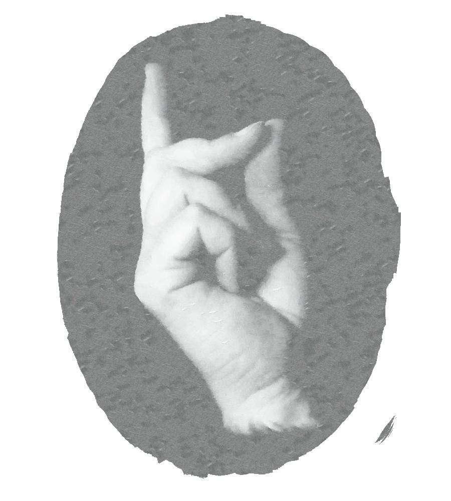

HARRY POTTER KAJ LA
METODOJ DE
LA RACIECO
de Eliezer Yudkowsky
Libro 1: Harry James Potter-Evans-Verres kaj la Metodoj de la Racieco

HARRY POTTER
KAJ LA METODOJ DE LA RACIECO
DE
ELIEZER YUDKOWSKY
Libro 1: Harry James Potter-Evans-Verres kaj la Metodoj
de la Racieco
Traduko el la angla lingvo al la esperanta per Emile Cadorel
Bazita sur la roluloj de
J. K. ROWLING
kaj ŝiaj libroj:
Harry Potter kaj la Filozofia Ŝtono
Jaro unua en Herpŭrko
Harry Potter kaj la Ĉambro de Sekretoj
Jaro dua en Herpŭrko
Harry Potter kaj la Malliberulo de Azkaban
Jaro tria en Herpŭrko
Harry Potter kaj la Pokalo el Fajro
Jaro kvara en Herpŭrko
Harry Potter kaj la Ordeno de l’Fenikso
Jaro kvina en Herpŭrko
Harry Potter kaj la Reĝido de Duona Sango
Jaro sesa en Herpŭrko
Harry Potter kaj la Sanktaĵoj de l’Morto
Jaro sepa en Herpŭrko
ENHAVTABELO
unu
Tago de tre malalta probableco — 3
du
ĉio, kion mi kredas estas falsa — 11
tri
Kompari la realaĵon kun ĝiaj alternativoj — 17
kvar
La Hipotezo de la efika merkato — 23
kvin
La fundamenta eraro de atribuado — 29
ses
La sofismo de planado — 39
sep
Reciprokeco — 69
ok
Pozitiva biao — 99
na
Titro elpurigita, Parto I — 115
dek
Memkonscio, Parto II — 123
dek unu
Omake dosiero 1,2,3 — 135
dek du
Kontrolo de Impulsoj — 147
dek tri
Starigi la malĝustajn demandojn — 159
dek kvar
La Nekonata kaj la Nekonebla — 181
dek kvin
Skrupuleco — 197
dek ses
Flanka Pripensado — 207
dek sep
Indentigi la Hipotezon — 227
dek ok
Hierarkio de Dominanteco — 265
dek na
Prokrastita Gratifiko — 293
dudek
Teoremo de Bajes — 317
dudek unu
Raciigo — 335
ANTAŬPAROLO
Harry Potter kaj la Metodoj de la Racieco estas fervorula fikcio bazita sur la
libroj de J.K. Rowling, kiu prezentas rakonton en kiu Harry Potter estis
edukita per Profesoro de universitato, kaj estis instruita pri la scienca
metodo. Tiu libro lokas la rakonton en distra kaj amuza kunteksto, por
prezenti realajn kaj interesajn sciencajn faktojn. Per sia gajiga aspekto, ĉi
tiu libro sukcesas esti iu tre bona enkonduko al la metodoj de la racieco,
kaj mi tre rekomendas ĝin.
Kiam mi komencis la tradukon de ĉi tiu libro, mi malkovris ke kiel ne
estis oficiala traduko de la universo de J.K. Rowling en Esperanto, mi po-
vis fari ĉion, kion mi volis. Mi unue legis la unuan libron de Harry Potter
en la franca, en kiu la nomoj de la roluloj estis tradukitaj en la franca por
permesi al la legantojn kompreni la vortludoj kiujn J.K. Rowling kreis. Mi
opinias ke tio estas bona ideo, ĉar la legantoj, kiuj ne konas la angla po-
vas tiel pli ŝati la riĉecon de la universo, en kiu la nomoj preskaŭ ĉiam
priskribas la karakterojn de la rolulojn, kiujn ili nomas.
Mi povas kompreni, ke pro tio ke la libro Harry Potter kaj la Metodoj de la
Racieco ne ĉiam prenas la tempon por prezenti la rolulojn, kaj kalkulas ke
la legantojn jam legis la originan verkon, ne estas ĉiam facila scii kiuj ili
estas. Kaj aldone, neniu legis la originan libron Harry Potter en la esper-
anta. Por solvi tiun problemon, mi aldonis je la fino de ĉi tiu libro tabelon,
kiu listigas la rolulojn ĉeestantajn en la libro kaj iliajn originajn nomojn
en la angla.
*
1
*
ĈAPITRO UNU
TAGO DE TRE MALALTA
PROBABLECO
Sub la lunlumo ekbrilas eta fragmento de arĝento, frakcio de linio …
(nigraj roboj, falantaj)
…sango disverŝiĝas en litroj, kaj iu ekkrias vorton.
Ĉiujcolojdelamurojestiskovritajperbibliotekoj.Ĉiujbibliotekojhavis
ses bretojn, kiuj preskaŭ atingis ĝis la plafono. Kelkaj bretoj estis
plenplenaj da libroj kun rigidaj kovriloj : scienco, matematiko, historio
kaj ĉio cetera. Aliaj bretoj enhavis du tavolojn da sciencfikciaj poŝlibroj,
kie la malantaŭa tavolo apogis sur poŝtukujoj aŭ tabuloj, tiel ke oni po-
vis vidi la malantaŭan tavolon da libroj super la antaŭaj libroj. Kaj tamen
tio ne sufiĉis. Libroj superfluis la tablojn kaj la sofojn, kaj formis mal-
grandajn amasojn sub la fenestroj.
Tiu estis la salono okupita per la eminenta Profesoriĉo Mikael Verres-
Evans, kaj sia edzino, S-ino Petunia Evans-Verres, kaj ilia adopta filiĉo,
Harry James Potter-Evans-Verres.
Letero kuŝis sur la tablo de la salono, kune kun ne stampita koverto el
flava pergameno, adresita al S-iĉo. H. Potter per smeralda inko.
La Profesoriĉo kaj sia edzino parolis seke unu al la alia, sed ili ne kriis.
La Profesoriĉo konsideris ke krii ne estis civilizita.
*
3
*
**
*
*
ĈAPITRO 1
* *
“Vi ŝercas,” Mikael diris al Petunia. Lia tono indikis ke li tre timis ke
ŝi estis serioza.
“Mia fratino estis sorĉistino”, Petunia rediris. Ŝi aspektis timigita, sed
tenis sian pozicion. “Ŝia edziĉo estis sorĉistiĉo”.
“Tio estas absurda!” Mikael diris seke. “Ili ĉeestis en nia geedziĝo —
Ili vizitis nin dum Kristnasko —”
“Mi diris al ili, ke vi ne devis scii,” Petunia flustris. “Sed, tio estas vera.
Mi vidis aĵojn—”
La profesoriĉo rulis la okulojn. “Kara, mi komprenas ke vi ne bone
konas skeptikan literaturon. Vi eble ne rimarkas, kiom facile estas por
trejnita magiisto falsi ion, kio ŝajnas neebla. Memoru kiel mi instruis al
Harry fleksi kuleron? Se ŝajnas ke ili povis ĉiam diveni tion, pri kio vi pen-
sis, tial tio nomiĝas malvarma legado—”
“Tio ne estis fleksitaj kuleroj”
“Nu, kio estis?”
Petunia mordis la lipon. “Mi simple ne povas tion diri al vi. Vi pensus,
ke mi —”. Ŝi glutis. “Aŭskultu, Mikael, mi ne estis — ĉiam kiel tio —” Ŝi
gestis al si mem, kiel por indiki sian sveltan silueton. “Lily faris tion, ĉar
mi—, ĉar mi petegis ŝin. Dum jaroj, mi petegis ŝin. Lily ĉiam estis pli bela
ol mi, kaj mi estis… malafabla al ŝi, pro tio, kaj tiam ŝi ekhavis magion,
ĉu vi povas imagi kiel mi sentis min? Kaj mi petegis ŝin uzi iom da tiu
magio al mi, tiel ke mi ankaŭ povu esti bela, kvankam mi ne povis havi
ŝian magion, almenaŭ mi povus esti bela.”
Larmoj kolektiĝis en la okuloj de Petunia.
“Kaj Lily diris al mi ne, kaj faris la plej ridindajn ekskuzojn, kiel ke la
mondo finiĝus se ŝi estus agrabla al sia fratino, aŭ ke centaŭro diris al
ŝi, ke ŝi ne devu fari tion —. La plej ridindaj aĵoj, kaj mi malamis ŝin pro
tio. Kaj, kiam, mi ĵus diplomiĝis el universitato, mi eliris kun tiu knabiĉo,
Vernon Dursle, li estis grasa kaj li estis la sola knabiĉo kiu bone volis paroli
al mi. Kaj, li diris ke li volis infanojn, kaj ke sia unua filiĉo nomiĝos Dudle.
Kaj, mi diris al mi, kiaj gepatroj nomas sian infanon Dudle Dursle? Tio estis
kvazaŭ mi vidis mian tutan estontan vivon etendiĝanta antaŭ mi, kaj mi
nepovis elteni ĝin. Mi skribisal mia fratino, kaj dirisal ŝi ke seŝi ne helpus
min, mi preferus simple—”
Petunia haltis.
*
4
*
**
*
*
TAGO DE TRE MALALTA PROBABLECO
* *
“Ĉiaokaze”, Petunia diris kun malforta voĉo. “Ŝi cedis. Ŝi diris al mi
ke tio estis danĝera, kaj mi diris ke mi ne plu zorgis, kaj mi trinkis tiun
pocion, kaj mi iĝis malsana dum semajnoj, sed kiam mi resaniĝis, mia
haŭto estis puriĝinta kaj mi finfine estis akirinta pezon… kaj mi estis bela,
homoj estis afablaj al mi.” Ŝia voĉo rompis, “kaj post tiam, mi ne plu po-
vis malami mian fratinon, speciale kiam mi lernis tion, kion ŝia magio
finfine alportis al ŝi—”.
“Kara”, Mikael diris milde, “Vi malsaniĝis, vi akiris iom da pezo ripoze
en lito, kaj via haŭto puriĝis sin mem. Aŭ esti malsana igis vin ŝanĝi vian
dieton—.”
“Ŝi estis sorĉistino,” Petunia rediris. “Mi vidis tion.”
“Petunia,” Mikael diris. Agaco penetris lian voĉon. “Vi scias ke tio ne
povas esti vera. Ĉu mi vere devas ekspliki kial ?”
Petunia tordis siajn manojn. Ŝi ŝajnis ploronta. “Mia amo, Mi scias ke
mi ne povas gajni argumenton kun vi, sed bonvolu, vi devas fidi min pri
tio—.”
“Paĉjo, Panjo!”
Ambaŭ haltis kaj rigardis Harry’n kvazaŭ ili forgesis ke estis tria per-
sono en la ĉambro.
Harry profunde elspiris. “Panjo, viaj gepatroj ne havis magion, ĉu ne?”
“Ne”, Petunia diris aspektante konfuzita.
“Do, neniu en via familio sciis pri magio, kiam Lily ricevis sian leteron.
Kiel ili konvinkiĝis?”
“Ah…” Petunia diris. “Ili ne nur sendis leteron. Ili sendis instruiston
de Herpŭrko ∗. Li—” La okuloj de Petunia turniĝis al Mikael. “Ri montris
al ni iom da magio.”
“Do, vi ne bezonas batali pri tio”. Harry diris firme. Esperante ke ĉi-
foje, nur ĉi-foje, ili aŭskultos lin. “Se tio estas vera, ni povas simple venigi
instruiston de Herpŭrko ĉi tien, kaj vidi la magion per ni mem, kaj Paĉjo
agnoskos ke tio estas vera. Kaj se ne, tial Panjo agnoskos ke tio estas
malvera. Tio estas kial la eksperimenta metodo estas farita, tiel ke oni ne
devas solvi ĉiujn aferojn nur argumente.”
La profesoriĉo turnis sin kaj rigardis lin malsupren, arogante kiel ku-
time. “Ho, nu, Harry. Vere, magio? Mi pensis ke almenaŭ vi sciintus ne
*
5
*
**
*
*
ĈAPITRO 1
* *
preni tion serioze, filiĉo, eĉ se vi havas nur dek jarojn. Ne estas malpli
scienca afero ol magio!”
La buŝo de Harry tordiĝis amare. Li estis traktita bone, probable
pli bone ol la plimulto da genetikaj patriĉoj traktis iliajn proprajn in-
fanojn. Harry estis sendita al la plej bona bazlernejo— kaj kiam tio ne plu
funkciis, li ricevis instruistojn el la senfina grupo de malsataj studentoj.
Harry estis kuraĝigita studi ĉion, kio kaptis sian atenton, aĉeti ĉiujn li-
brojn, kiuj kaptis sian fantazion, kaj estis sponsorita en ĉiuj matematikaj
aŭ sciencaj konkursoj, kiujn li eniris. Al li estis donita ĉion ajn racian,
kion li volis, krom eble la plej etan peceton da respekto. Oni ne povis tro
multe atendi ke doktoriĉo, kiu instruis biokemion en Oksfordo, aŭskultis
konsiliojn de eta knabiĉo. Vi aŭskultintus montrante intereson evidente;
estas tio, kion bonaj gepatroj farus, kaj tial, se vi estis konvinkita ke vi
estis bona gepatro, vi farus tion. Sed preni serioze dek-jaraĝan knabon ?
Malfacile.
Kelkfoje Harry volis krii al sia patriĉo.
“Panjo”, Harry diris. “Se vi volas gajni tiun ĉi argumenton kontraŭ
Paĉjo, rigardu en la dua ĉapitro de la unua libro de lekcioj de Feynman
pri fiziko. Estas citaĵo tie, pri kiel filozofoj diris multe pri la aĵoj, kiujn
scienco absolute postulas, kaj ĝi estas tute malprava, ĉar la sola regulo en
scienco estas ke la fina arbitracio estas observado—Vi nur devas rigardi la
mondon kaj raporti tion, kion vi vidis. Hm…, mi ne sukcesas memori kie
trovi ion pri kial estas idealo de scienco solvi aferojn per eksperimentoj
anstataŭ argumentoj—”
Lia patrino rigardis lin malsupren kaj ridetis. “Dankon, Harry. Sed—
”, ŝia kapo leviĝis por rigardi sian edziĉon. “Mi ne volas gajni argumenton
kontraŭ via patriĉo. Mi nur volas ke li aŭskultu sian edzinon, kiu amas lin,
kaj ke li fidas ŝin nur unu fojo—”
Harry fermis siajn okulojn nelonge. Senesperaj. Ambaŭ siaj gepatroj
estis nur senesperaj.
Nun liaj gepatroj denove ekhavis iun el tiuj argumentadoj, iu en kiu
lia patrino provis sentigi lian patriĉon kulpa, kaj en kiu lia patriĉo provis
sentigi lian patrinon stulta.
*
6
*
**
*
*
TAGO DE TRE MALALTA PROBABLECO
* *
“Mi iras en mian dormĉambron”. Harry anoncis. Lia voĉo iom tremis.
“Bonvolu provi ne tro batali pri tio, Panjo, Paĉjo, ni scios sufiĉe frue ĉu tio
estas prava, ĉu ne?”.
“Kompreneble, Harry”, diris lia patriĉo, kaj lia patrino donis al li
trankviligan kison, kaj ili denove ekbatalis ĵus post kiam Harry estis
grimpinta la ŝtuparon al sia dormĉambro.
Li fermis la pordon malantaŭ li kaj provis pripensi.
La ridinda afero estis, ke li devintus konsenti kun sia patriĉo. Neniu
vidis iun ajn ateston de magio, kaj laŭ Panjo, estis tuta magia mondo ek-
stere. Kiel iu povus kaŝi ion tian? Pli da magio? Tio ŝajnis esti ekskuzo iom
suspektinda.
Tio devintus esti solvita problemo simpla : aŭ ŝerco de Panjo, aŭ men-
sogo aŭ frenezo, per kreskanta ordo de timigo. Se Panjo mem sendis la
leteron, tial tio klarigis kiel ĝi avlenis en la leterkeston sen poŝtmarko.
Iom da frenezo estis multe, multe malpli neprobabla ol ke la universo vere
funkciis tiele.
Malgraŭ tio, iu parto de Harry estis tute konvinkita ke la magio estis
reala, kaj tio ekde kiam li vidis la leteron supozeble de Herpŭrko la lernejo
de sorĉado.
Harry frotis sian frunton, grimacante. Ne kredu ĉion, kion vi pensas diris
unu el liaj libroj.
Sed, tiu stranga certeco … Harry trovis sin atendi ke, jes, instruisto
de Herpŭrko prezentos sin al ni kaj skuos bastonon kaj magio aperos. La
stranga certeco ne provis gardi sin kontraŭ falsoj—ĝi ne havis ekskuzon
anticipe, por pravigi la fakton, ke ne estus instruisto, aŭ ke la instruisto
nur povus tordi kulerojn.
De kie vi venas, stranga eta antaŭdiro? Harry direktis la penson al sia
cerbo. Kial mi kredas tion, kion mi kredas?
Kutime, Harry estis sufiĉe bona por respondi tiun ĉi demandon, sed
en tiu speciala okazo, li havis neniom da indico pri tio, kion lia cebro estis
pensanta.
Harry ŝultrolevis mense. Tiel, kiel plato el metalo sur pordo estis farita
por esti puŝita, kaj kiel tenilo estis farita por esti tirita, testo estis farita
por esti testita.
*
7
*
**
*
*
ĈAPITRO 1
* *
Li prenis folion el papero de sian skribotablon, kaj komencis skribi.
Kara Vicdirektorino
Harry paŭzis pripensante; kaj poste li forĵetis la folion por preni alian,
kaj li elirigis alian milimetron da grafito el sia meĥanika krajono. Ĉi tiu
meritis grafikan penon pli detalan.
Kara Vicdirektorino, Minerva McGonagall,
Aŭ al kiu ajn, kiun tio koncernas :
Mi antaŭ nelonge ricevis vian leteron de akcepto al Herpŭrko, adresita al S-
iĉo H. Potter. Verŝajne, vi ne scias ke miaj genetikaj gepatroj, James Potter kaj
Lily Potter (antaŭe Lily Evans) estas mortaj. Mi estis adoptita de la fratino de
Lily, Petunia Evans-Verre, kaj ŝia edziĉo, Mikael Verres-Evans.
Mi estas ege interesita por ĉeesti Herpŭrko’n, se tia loko efektive ekzistas. Nur
mia patrino Petunia diris ke ŝi scias pri magio, kaj ŝi mem ne povas uzi ĝin. Mia
patriĉo estas tre skeptika. Mi mem estas necerta. Krome, mi ne scias kie akiri la
librojn kaj la ekipaĵojn, kiuj estas listitaj en via letero de akcepto.
Patrino menciis ke vi sendis reprezentaton de Herpŭrko al Lily Potter (Lily
Evans tiutempe) por demonstri al ŝia familio ke la magio ekzistas, kaj mi supozas,
helpi Lily’n por akiri ŝian lernejan ekipaĵon. Se vi povus fari tion por mia propra
familio, tio estus ege helpa.
Sincere,
Harry James Potter-Evans-Verres.
Harry aldonis ilian aktualan adreson, kaj poste faldis la leteron, kaj en-
metis ĝin en koverton, kiun li adresis al Herpŭrko. Plia konsidero farigis
lin akiri kandelon, kaj guti vakson sur la klapo de la koverto, kaj uzante
plumopinton li gravuris la inicialojn H.J.P.E.V. Se li irus en la frenezo, li
irus glore.
Poste, li malfermis sian pordon, kaj reiris malsupren. Lia patriĉo sidis
en la salono, kaj estis leganta libron pri altaj matematikoj, por montri
kiom inteligenta li estis; Kaj sia patrino estis en la kuirejo preparanta iun
el la favorataj manĝaĵoj de lia patriĉo, por montri kiom amanta ŝi estis.
*
8
*
**
*
*
TAGO DE TRE MALALTA PROBABLECO
* *
Tiel timiga kiel argumentadoj povis esti, ne argumentadi povis esti iel pli
malbona.
“Panjo”, Harry diris en la nervoza silento, “Mi estas testonta la hipote-
zon. Laŭ via teorio kiel mi sendas strigon al Herpŭrko ?”
Lia patrino turniĝis de la kuireja lavujo por rigardi lin, aspektante rel-
ative ŝoka. “Mi—Mi ne scias, mi pensas ke vi nur devas uzi vian propran
strigon.”
Tio devintus soni tre suspektinda, ho, do, ne estas iu ajn maniero por testi
vian teorion, sed la stranga certeco en Harry ŝajnis voli kroĉiĝi ankoraŭ pli.
“Nu, la letero venis ĉi tien iel”, Harry diris, “do, mi nur skuos ĝin ek-
stere kaj vokos ’letero por Herpŭrko!’, kaj mi bone vidos ĉu strigo prenas
ĝin. Paĉjo ĉu vi volas veni kaj rigardi ?”.
Lia patriĉo kapneis detale kaj daŭrigis legi. Evidente, Harry diris al si.
Magio estis hontinda aĵo, pri kio nur stultulo kredis; Se lia patriĉo iris ĝis
testi la hipotezon, aŭ simple rigardi ĝin dum ĝi estis testita, tio estintus
kiel asocii lin kun ĝi…
Kiam Harry pasis tra la malantaŭa pordo, al la malantaŭa ĝardeno, li
subite ekkonsciis ke se strigo venus por preni la leteron, li havus proble-
mojn por ekspliki tion al sia patriĉo.
Sed—Nu—tio ne povas vere okazi, ĉu ne? Ne gravas kion mia cebro ŝajnas
kredi. Se strigo malsupreniras por preni ĉi tiun koverton, mi havos zorgojn multe
pli gravajn ol la opinio de paĉjo.
Harry profunde enspiris, kaj levis la koverton en la aero.
Li glutis.
Ekkrii ’Letero por Herpŭrko!’, tenante koverton alte en la aero en la
mezo de via propra malantaŭa ĝardeno estis, fakte sufiĉe embarasa, nun
ke li pensis pri tio.
Ne. Mi estas pli bona ol paĉjo. Mi uzos la sciencan metodon, eĉ se tio sentigas
min stulta.
“Letero—” Harry diris, sed tio fakte eliris kiel flustra kvako.
Harry plifortigis sian volon, kaj kriegis al la malplena ĉielo, “Letero por
Herpŭrko! Cû mi povas havi strigon?”
“Harry?”, demandis perpleksa ina voĉo, unu el la najbaroj.
*
9
*
**
*
*
ĈAPITRO 1
* *
Harryekmallevissianmanonkvazaŭĝiestisenfarjokajkaŝislakovre-
ton malantaŭ sian dorson, kvazaŭ ĝi estis drog-mono. Lia tuta vizaĝo
estis varma pro honto.
Maljuna vizaĝo de virino rigardis lin super la barilo, grizaj haroj eska-
pante el ŝia hararo. S-ino Figo, la okaza vartistino. “Kion vi estas faranta,
Harry ?”
“Nenio”, Harry diris per sufokita voĉo. “Mi—nur testas vere stultan
teorion—”
“Cû vi ricevis akceptan leteron de Herpŭrko ?”
Harry frostiĝis tuj.
“Jes,” La lipoj de Harry diris, post mallonga momento. “Mi ricevis
leteron de Herpŭrko. Ili diras ke ili volas mian strigon antaŭ la 31a de
julio, sed—”.
“Sed, vi ne havas strigon. Kompatinda kara ! Mi ne povas imagi tion,
kion ili devis pensi por nur sendi la ordinaran leteron.”
Ĉifita brako etendiĝis super la barilo, kaj malfermis atenteman
manon. Preskaŭ sen pensi je tiu ĉi momento, Harry donis al ŝi la kover-
ton.“Lasuminzorgipritio,kara,”dirisS-inoFigo,“kajenunutiktakoaŭ
du, iu venos.”
Kaj ŝia vizaĝo malaperis malantaŭ la barilo.
Estis longa silento en la ĝardeno.
Poste infana voĉo diris, trankvile kaj mallaŭte, “Kio.”
*
10
*
ĈAPITRO DU
ĈIO, KION MI KREDAS
ESTAS FALSA
“Evidente ke tio estis mia kulpo. Ĉi tie estas neniu kiu estas respondeca pri io
ajn.”
”
Bone,nurporestiklara”,Harrydiris,“Selaprofesorinoŝvebigasvin,
Paĉjo, kiam vi scias ke vi ne estas ligita al iu ajn drato, tio estos sufiĉa
pruvo. Vi ne ŝanĝos vian opinion, kaj ne diros ke tio estas nur ruzo de
magiisto. Tio ne estus lojale ludi. Se vi vin sentas tiele, vi devas diri tion
nun, kaj ni povos eltrovi alian eksperimenton anstataŭan.”
La patriĉo de Harry, Profesoriĉo Mikael Verres-Evans rulis siajn oku-
lojn. “Jes, Harry.”
“Kaj vi, Panjo, via teorio diras ke la profesorino devus kapabli fari tion,
kaj se tio ne okazas, vi rekonos ke vi estis eraranta. Nenio, pri ke la magio
ne funkcias kiam homoj estas skeptikaj pri ĝi, aŭ io ajn simila.”
Vicdirektorino Minerva McGonagall estis rigardanta Harry’n kun
perpleksa aspekto. Ŝi aspektis tute sorĉa en sia nigra robo, kaj sub sia
pointita ĉapelo, sed kiam ŝi parolis, ŝi sonis formala kaj skota, kio tute ne
taŭgis la stilon. Unuavide, ŝi aspektis kiel iu, kiu gakis kaj metis bebojn
en kaldronon, sed la tuta efiko estis ruinigita tuj kiam ŝi malfermis la
*
11
*
**
*
*
ĈAPITRO 2
* *
buŝon. “Ĉu tio sufiĉas, S-iĉo Potter?”, ŝi diris. “Ĉu mi devas komenci, kaj
demonstri ?”
“Sufiĉas?Propablene,”Harrydiris.“Sedalmenaŭ,tiohelpos.Komencu,
Vicdirektorino.”
“Simpla Profesorino sufiĉos”, ŝi diris, kaj poste, “Flugapika Leviosu∗.”
Harry rigardis al sia patriĉo.
“Ho”, Harry diris.
Lia patriĉo rigardis malsupren al li. “Ho”, lia patriĉo eĥis.
Poste, la profesoriĉo Verres-Evans rigardis malsupren Profesorinon
McGonagall. “Konsentite, vi povas delasi min nun.”
Lia patriĉo estis mallevigita zorge sur la teron.
Harry kun unu mano hirtigis sian hararon. Eble tiu estis la stranga
parto en li, kiu estis jam konvinkita, sed…“Tio estas iom kontraŭ-
klimaksa,” Harry diris. “Oni povus pensi, ke estus ia pli drama mensa
okazaĵoasociitakunlaĝisdatigoperobservadodeinfinitezimaprobablo—
” Harry haltis. Panjo, la sorĉistino, kaj eĉ lia paĉjo ĵetis al li tiun rigardon,
denove. “Mi volas diri, kun ekscii ke ĉio, kion mi kredas, estas malĝusta.”
Serioze, tio devintus esti pli drama. Lia cerbo devintus forĵeti sian
nunan stokon da hipotezoj pri la universo, neniu el tiuj permesis ke tio
okazas. Sed anstataŭ tio, lia cerbo simple ŝajnis daŭrigi normale. Kon-
sentite, mi vidis profersorinon de Herpŭrko skui sian bastonon kaj farigi mian
patriĉon flugi en la aero, kaj kio nun ?
La sorĉistino estis ridetanta bonvole al ili, aspektante tute amuzita.
“Ĉu vi ŝatas plian demonstron, S-iĉo Potter?”
“Vi ne estas devigata”, Harry diris. “Ni plenumis definitivan eksper-
imenton. Sed…”. Harry hezitis. Li ne povis malhelpi sin. Estis justa kaj
deca esti scivola. “Kion alian vi povas fari?”
Profesorino McGonagall aliformiĝis en katon.
Harry retropaŝis sen pripensi, kontraŭpedalante tiel rapide, ke li
stumblis sur vaga pilo da libroj, kaj poste li alteriĝis severe sur sia pugo
kun klako. Liaj manoj iris malsupren por kapti lin, sen sufiĉe sukcesi, kaj
li sentis varmegan doloron en sia ŝultro kiam la pezo falis sen subteno.
Tuj, la eta katino reŝanĝiĝis en virinon en robo. “Mi bedaŭras, S-iĉo
Potter,” diris la sorĉistino, sonante sincera, kvankam la angulo de siajn
lipojn ektremis supren. “Mi devintus averti vin”
*
12
*
**
*
*
ĈIO, KION MI KREDAS ESTAS FALSA
* *
Harry prenis mallongajn anhelojn. Lia voĉo eliris sufoke. “Vi ne povas
FARI tion!”
“Tio simple estas Transfiguro∗,” diris Profesorino McGonagall.
“Animagus∗ transformo, por esti ekzakta.”
“Vi ŝanĝis en katon ! Etan katon ! Vi malrespektis la principon de Kon-
servado de Energio ! Ĝi ne estas arbitra principo, ĝi estas implikita per la
formo de la Hamiltoniana kvantumo ! Forjêti ĝin detruas unitarecon kaj
tiel vi finas kun superluminaj signaloj. Kaj katoj estas komplikaj ! Homa
menso simple ne povas bildigi la tutan anatomion de kato kaj, kaj la tu-
tan biokemion de kato, kaj kio pri la neŭrologio ? Kiel vi povas daŭrigi pensi
kun cerbo, kies grandeco egalas tiu de kata cerbo?”
La lipoj de Profesorino McGonagall estis tremantaj pli forte nun. “Ma-
gio.”
“Magio ne sufiĉas por fari tion ! Vi devas esti dio !”
Profesorino McGonagall palpebrumis. “Tio estas la unua fojo ke iu no-
mas min tiel.”
La vidado de Harry iĝis malklara, kaj sia cerbo komencis kompreni
tion, kio ĵus rompiĝis. La tuta ideo de unuigita universo kun matematikaj
principoj simplaj estis tio, kio estis ĵetita en la rubujon ; la tuta nocio de
fiziko. Tri mil jaroj da solvado de komplikajn aĵojn en pli malgrandajn
pecojn, por malkovri ke la muziko de planedoj estis la sama melodio ol
falanta pomo, kaj por trovi ke la veraj leĝoj estis perfekte universalaj, kaj
ke ne ekzistis escepto ie ajn, kaj ke ili prenis la formon de simplaj matem-
atikaj principoj regantaj la malgrandajn partojn, por ne mencii la fakton ke
menso estis la cerbo, kaj la cerbo estis farita el neŭronoj, kaj ke la cerbo
estis tio, kio homo estas—
Kaj poste, virino ŝanĝiĝis en katon, des pli malbone por ĉio tio.
Centoj da demandoj batalis por la prioritato de la lipoj de Harry, kaj
gajninto verŝis: “Kaj, kaj kia sorĉkanto Flugapika Leviosu estas? Kiu elpen-
sas la vortojn de tiu sorĉo, bebo ?”
“Tiosufiĉas,S-iĉoPotter,”ProfesorinoMcGonagalldirisakre,kvankam
siaj okuloj brilis kun subpremita plezuro. “Se vi deziras lerni pri magio,
mi sugestas ke ni kompletigu paperojn por ke vi povu iri al Herpŭrko.”
*
13
*
**
*
*
ĈAPITRO 2
* *
“Bone,” Harry diris, iom konfuza. Li ordigis siajn pensojn. La Marŝado
deRacio simple devisrekomenci, nur tio; Ili ankoraŭhavis la eksperimen-
tan metodon kaj tio estis la grava afero.
“Do, Kiel mi iras al Herpŭrko?”
Sufokita ridado eskapis la buŝo de Profesorino McGonagall, kvazaŭ
ĝi estis eltirita el ŝi per pinĉilo.
“Ne tiel rapide, Harry”, lia patriĉo diris. “Ĉu vi memoras kial vi ne iris
al la lernejo ĝis nun? Kio pri via stato?”
Profesorino McGonagall turniĝis por alfronti Mikael’n. “Lia stato? Kio
estas?”
“Mi ne dormas bone”, Harry diris. Li skuis siajn manojn senpove. “Mia
dorma ciklo havas daŭron de dudek ses horoj, mi ĉiam ekdormas je du
horoj pli malfrue ĉiutage. Mi ne povas ekdormi pli frue ol tio. Je la deka ves-
pere, je la noktmezo, la dua nokte, la kvara nokte, ĝis tio faras la ĉirkaŭon
la horloĝo, eĉ se mi provas veki frue, tio ne faras diferencojn kaj mi estas
vrako dum la tuta tago. Jen estas kial mi ne estis iranta al normala lernejo
ĝis nun”
“Unu el la kialoj” diris lia patrino. Harry ĵetis al ŝi ekrigardaĉon.
McGonagall faris longan hmmmm. “Mi ne memoras jam antaŭe aŭdi
tian aferon…”, ŝi diris malrapide. “Mi kontrolos kun S-ino Pimfito∗ por
vidi ĉu ŝi konas rimedon”. Post, ŝia vizaĝo lumiĝis. “Ne, mi estas certa,
ke tio ne estos problemo—Mi trovos solvon ĝustatempe. Nun,” Kaj ŝia
rigardo akriĝis denove, “Kiuj estas la aliaj kialoj?”
Harry ĵetis rigardon al siaj gepatroj. “Mi estas konscienca oponanto
kontraŭ la deviga principo por infanoj, pro ke mi ne devas suferi de la
nefunkcianta lerneja sistemo, kiu ne provizas instruistojn aŭ studajn ma-
terialojn eĉ de minimume taŭga kvalito.”
Ambaŭ la gepatroj de Harry hurlis per ridado pro tio, kvazaŭ ili pensis
ke tio estis tute granda ŝerco. “Ho” diris la patriĉo de Harry, kun brilaj
okuloj, “Ĉu tio estas, pro kio vi mordis vian matematikan instruistinon
en via tria studjaro.”
“Ŝi ne sciis tion, kio estas logaritmo!”
“Evidente”, subtenis la patrino de Harry. “Mordi ŝin estis tre matura
respondo al tio.”
*
14
*
**
*
*
ĈIO, KION MI KREDAS ESTAS FALSA
* *
La patriĉo de Harry kapjesis. “Bone konsiderita politika ago por trakti
la problemon de instruistoj kiuj ne komprenas logaritmon.”
“Mi havis sep jarojn! Kiom longe vi daŭrigos paroli pri tio?”
“Mi scias”, diris sia patrino simpatie, “Vi mordis unu matematikan in-
struiston kaj ili neniam lasos vin forgesi tion, ĉu ne?”
Harry turniĝis al Profesorino McGonagall. “Jen ! Vi vidas tion, kion
mi devas toleri?”
“Pardonu min,” diris Petunia, antaŭ ol ŝi forkuris tra la malantaŭa
pordo al la ĝardeno, de kie ŝia ridado estis klare aŭdebla.
“Estos, ha, estos”, Profesorino McGonagall ŝajnis havi kelkajn prob-
lemojn por paroli pro iu kialo aŭ alia. “Ne estos mordo de instruistoj en
Herpŭrko, ĉu tio estas klara, S-iĉo Potter?”
Harry kapjesis dum li rigardis ŝin. “Bone, Mi ne mordos iun, kiu ne
mordis min antaŭe”
Profesoro Mikael Verres-Evans ankaŭ devis forlasi la ĉambron ne-
longe post aŭdi ĉi tion.
“Nu,” Profesorino McGonagall suspiris post kiam la gepatroj de Harry
reakiris iliajn sensojn, kaj revenis. “Nu, Mi opinias, en ĉi tiuj cirkonstan-
coj, ke mi devus eviti preni vin por aĉeti viajn studmaterialojn ĝis unu
tago aŭ du antaŭ la komenco de la klasoj.”
“Kio ? Kial ? La aliaj infanoj jam konas la magion, ĉu ne? Mi devas
komenci rekapti mian malfruon tuj!”
“Estu trankvila, S-iĉo Potter,” respondis Profesorino McGonagall,
“Herpŭrko tute kapablas instrui la bazojn. Kaj mi suspektas, S-iĉo Pot-
ter, ke se mi lasus vin sola dum du monatoj kun viaj studaj libroj, eĉ
sen bastono, kiam mi revenos al ĉi tiu domo, mi trovus nur krateron
liberiganta purpuran fumon, senhoman urbon ĉirkaŭ ĝi, kaj plagon da
flamantaj zebroj terurantaj tion, kio restos de la Anglujo.”
La patrino kaj la patriĉo de Harry jesis per perfekta uniso.
“Panjo!, Paĉjo!”
*
15
*
ĈAPITRO TRI
KOMPARI LA REALAĴON
KUN ĜIAJ ALTERNATIVOJ
“sed tial la demando estas— kiu?”
”
HoSinjoro!,“dirislabufedistiĉo,rigardanteHarry’n,“ĉuliestas—ĉu
li povas esti—?”
Harry kliniĝis sur la verŝotablon de la Likanta Kaldrono tiel bone kiel
li povis, kvankam ĝi iris preskaŭ ĝis la pinto de liaj brovoj. Tia demando
meritis ke li faru kiel eble plej bone.
“Ĉu mi estas—Ĉu mi povas—eble—vi neniam scias—se mi ne estas—
sed tial la demando estas— kiu?”
“Estu mia animo benita” flustris la maljuna bufedistiĉo. “Harry Pot-
ter… Kiel honora.”
Harry palpebrumis, kaj poste respondis. “Nu, jes, vi estas tute akrev-
ida; la plejparto da la homoj ne rimarkas tion tiel rapide—”
“Sufiĉas,” Profesorino McGonagall diris. Ŝia mano streĉiĝis ĉirkaŭ la
ŝultro de Harry. “Ne tedu la knabiĉon, Tom, ĉio tio estas nova por li”.
“Sed, ĉu li estas la Knabiĉo?” diris maljuna virino per tremanta voĉo.
“Ĉu li estas Harry Potter?” Kun skrapada sono, ŝi stariĝis el sia seĝo.
“Doris—” McGonagall diris avertante. La rigardo, kiun ŝi ĵetis ĉirkaŭ
la ĉambro, devintus sufiĉi por timigi iun ajn.
*
17
*
**
*
*
ĈAPITRO 3
* *
“Mi simple volas premi lian manon,” La virino flustris. Ŝi kliniĝis
malalte kaj eligis ĉifitan manon, kiun Harry, sentante sin konfuza kaj pli
malkomforta ol neniam dum sia tuta vivo, premis zorge.
Larmoj falis el la okuloj de la virino sur iliajn kunprematajn manojn.
“Mia nepiĉo estis Aŭroro∗,” ŝi flustris al li. “Li mortis en sep dek naŭ.
Dankon, Harry Potter. Mi dankas la ĉielon por vi”
“Nedankinde,” Harry diris aŭtomate, kaj poste li turnis sian kapon kaj
ĵetis al Profesorino McGonagall, timigitan kaj petegantan rigardon .
Profesorino McGonagall frapis sian piedon sur la plankon tuj antaŭ la
komenco de la ĝenerala pelado. Tio faris sonon, kiu donis al Harry novan
referencon por la frazo “Krako de Pereo”, kaj ĉiuj frostiĝis tuj.
“Ni devas rapidi,” Profesorino McGonagall diris per voĉo kiu sonis
perfekte, tute normala.
Ili foriris el la drinkejo, sen iu ajn problemo.
“Profesorino?”, Harry diris, kiam ili estis en la korto. Li intencis de-
mandi pri tio, kio okazis, sed strange li trovis sin anstataŭ tio starigi de-
mandon tute malsimilan. “Kiu estis la pala viriĉo, ĉe la angulo? La viriĉo
kun tremantaj okuloj?”
“Hm?” diris Profesorino McGonagall, aspektante iom surprizita;
eble ŝi ankaŭ ne atendis, ke li demandos tion. “Tiu estis Profesoriĉo
Cirinus Ciuro∗. Li instruos Defendon kontraŭ Malbonaj Artoj ĉi-jare en
Herpŭrko”
“Mi havis la strangan senton ke li konis min…” Harry frotis sian frun-
ton. “Kaj ke mi ne devis premi la manon al li.” Kiel renkonti iun, kiu estis
amiko, iam, antaŭ ol io fariĝis drame malbona…Tio ne vere estis tiel, sed
Harry ne sukcesis trovi la ĝustajn vortojn. “Kaj, kio estis…ĉio tio?”
Profesorino McGonagall donis al li strangan rigardon. “S-iĉo Potter…,
ĉu vi scias…, kiom oni diris al vi…pri kiel viaj gepatroj mortis?”
Harry resendis konstantan rigardon. “Miaj gepatroj estas vivantaj kaj
sanaj, kaj ili ĉiam rifuzis paroli pri kiel miaj genetikaj gepatroj mortis. Pro
tio mi deduktis, ke tio ne estis bona.”
“Admirinda fideleco,” diris Profesorino McGonagall. Ŝia voĉo mal-
laŭtiĝis. “Tamen, tio iom dolorigas aŭdi vin diri tion tiel. Lily kaj James
estis miaj amikoj.”
*
18
*
*
KOMPARI LA REALAĴON KUN ĜIAJ
*
*
*
*
ALTERNATIVOJ
*
Harry rigardis for, subite honta. “Mi bedaŭras,” Li diris per eta
voĉo.“Sed mi havas Patriĉon kaj Patrinon. Kaj mi scias ke mi nur malfe-
liĉigus min per kompari ĉi tiun realon kun…iu perfekta, kiun mi konstru-
intus per mia imago.”
“Tioestasnekredeblesaĝa,”Profesorinodiriskviete.“Sedviajgenetikaj
gepatroj mortis vere bone fakte, protektante vin.”
Protektante min?
Io stranga trafis la koron de Harry. “Kio…okazis?”
Profesorino McGonagall suspiris. Ŝia bastono frapetis la frunton
de Harry kaj lia vido fariĝis malklara dum momento. “Io simila al
maskovesto,” ŝi diris, “tiel ke tio ne okazu denove, ne antaŭ ol vi es-
tos preta.” Poste ŝia bastono leviĝis denove, kaj frapetis trifoje brikan
muron…
…kiu kaviĝis kaj plilarĝiĝis kaj etendiĝis kaj ektremis por krei gigan-
tan arkadon, malkaŝante longan vicon da butikoj kun signoj reklamante
kaldronojn kaj drakajn hepatojn.
Harry ne palpebrumis. Tio ne estis kvazaŭ iu estis alformiĝanta en
katon.
Kaj ili marŝis antaŭen, kune, trans la sorĉa mondo.
Estis komercisto vendante resaltajn botojn (“Faritaj el vera Flubber!”),
kaj “tranĉiloj +3! forkoj +2! kulero kun +4 aldonaĵo!” Estis okulvitroj, kiuj
ŝanĝis ĉion, kion vi rigardas en verdaĵon, kaj gamo da komfortaj brak-
seĝoj kun elĵetseĝoj por la okazo de krizo.
La kapo de Harry ne ĉesis turniĝi, turniĝi kvazaŭ ĝi provis malŝraŭbi
sin el lia kolo. Tio estis kiel marŝi trans la sekcio de magiaj artikloj de la
libro de reguloj de Altnivelaj Karceroj kaj Drakoj (li ne ludis la ludon, sed
li ŝatis legi la librojn de reguloj). Harry senespere ne volis manki iun ajn
aĉeteblan objekton, por la okazo se ĝi estus unu el la tri aĵoj, kiujn oni
bezonus por plenumi la ciklon de infinitaj sorĉdeziroj.
Poste Harry ekvidis ion, kio tute senpense deturnis lin de la Vicdirek-
torino kaj farigis lin iri direkte al butiko. Iu butiko, kies butikfronto estis
farita el bluaj brikoj kaj havis ornamaĵojn el bronzo. Li revenis al la realo
nur kiam la Profesorino McGonagall staris ĝuste antaŭ li.
“S-iĉo Potter?” ŝi diris.
*
19
*
**
*
*
ĈAPITRO 3
* *
Harry palpebrumis, kaj poste ekkonsciis tion kion li ĵus faris. “Mi
bedaŭras! Mi forgesis dum momento ke mi estis kun vi anstataŭ mia
familio.” Harry gestis al la fenestro de la butiko, kiu eksponis fajrajn
literojn, kiuj brilis kaj kvankam ili estis malproksime, literumis Brilaj
Libroj de Bigbam. “Kiam vi pasas apud butiko de libroj, kiun vi ne ankoraŭ
vizitis, vi devas eniri en ĝin kaj rigardi. Tio estas la regulo de la familio.”
“Tio estas la plej Korvunga ∗ aĵo, kiun mi iam aŭdis.”
“Kio?”
“Nenio. S-iĉo Potter, via unua halto estos al Gringoto, la banko de la
sorĉa mondo. La kofro de via genetika familio estas tie, kun la heredaĵo,
kiun via genetika familio lasis al vi, kaj vi bezonos monon por aĉeti la
studmaterialojn.” Ŝi suspiris. “Kaj, mi supozas ke iom da mono por aĉeti
librojn povus esti ekskuzita. Eĉ se vi devus atendi iom. Herpŭrko havas
sufiĉe larĝan bibliotekon pri magiaj temoj. Kaj la turo en kiu, mi forte
suspektas, vi loĝos havas sian propan bibliotekon pli ĝenerala. Ĉiuj libroj
kiujn vi aĉetus nun, probable estus duplikatoj”
Harry kapjesis, kaj ili daŭrigis ilian marŝadon.
“Min ne miskomprenu, tio estas bonega distro,” Harry diris dum lia
kapo daŭre turniĝas, “eble la plej bona distro, kiun iu iam provis al mi,
sed ne pensu ke mi forgesis pri nia atendanta diskuto.”
Profesorino McGonagall suspiris. “Via gepatroj—aŭ via patrino
almenaŭ—eble estas tre saĝaj por ne informi vin.”
“Do, vi deziras ke mi povu resti en beata nescio? Estas certa difekto
en tiu ĉi plano, Profesorino McGonagall.”
“Mi supozas ke tio estus iom senutila,” la sorĉistino diris firme, “kiam
iu ajn en la strato povas rakonti la historion al vi. Bonege”
Kaj ŝi rakontis al li pri Li-Kiun-Vi-Ne-Nomu, la Mastro de la Tenebroj,
Voldemort.
“Voldemort?” Harry flustris. Tio devintus esti amuza, sed tio ne es-
tis. La nomo brulis kiel malvarma sento, senkompata, diamanta klareco,
martelo el pura titanio malsuprenirinta sur amboso el karno. Malvarma
tremeto iris tra Harry ĵus kiam li prononcis la nomon, kaj li decidis tie ĉi
kaj nun ke li uzos pli sekuran termon kiel Vi-Scias-Kiun.
La Mastro de la Tenebroj ventegis sur la sorĉa Britio, kiel sovaĝa lupo,
elŝirante kaj disŝirante la teksaĵon de ilia ĉiutaga vivo. Aliaj landoj tordis
*
20 *
*
KOMPARI LA REALAĴON KUN ĜIAJ
*
*
*
*
ALTERNATIVOJ
*
iliajn manojn sed hezitis interveni, ĉu pro apatia egoismo, ĉu pro sim-
pla timo, ĉar por kiu ajn estintus la unua el ili kontraŭ la Mastro de la
Tenebroj, ties paco estintus la sekva celo de lia teruro.
(La efiko de la spektanto, pensis Harry, pensante pri la eksperimento
de Latane kaj Darley, kiu montris ke vi pli probable ricevus helpon, se vi
havus epilepsiajn konvulsiojn antaŭ unu persono ol antaŭ tri. Disvastigo
de respondeco, ĉiuj esperante, ke iu alia agu unue.)
La Morto-Manĝantoj∗ sekvis la poststrion de la Mastro de la Tenebroj,
kaj el ilia avangardo estis kadavrovoraj vulturoj por remalfermi vundojn,
aŭ serpentoj por mordi kaj malfortigi. La Morto-Manĝantoj ne estis tiel
teruraj kiel la Mastro de la Tenebroj, sed ili estis teruraj, kaj ili estis mul-
taj. Kaj la Morto-Manĝantoj manipulis pli ol bastonoj; estis riĉeco inter
tiuj maskaj rangoj, kaj politika povo, kaj sekretoj uzitaj kiel ĉantaĝoj, por
paralizi la societon, kiu mem provis protekti sin.
Maljuna kaj respektita ĵurnalisto, Jermi Vible, petis pli grandajn im-
postojn kaj konskripcion. Li ekkriis ke estis absurda ke multaj kurbiĝis
pro la timo de malmultaj. Lia haŭto, nur lia haŭto, estis retrovita je la
sekva mateno, apud la haŭtoj de sia edzino kaj de siaj du filinoj. Ĉiuj
deziris ke io plia estu farita, kaj neniu aŭdacis ekstari por proponi ĝin.
Ĉiuj, kiuj pleje rezistis, fariĝis la sekvaj ekzemploj.
Ĝis kiam la nomoj de James kaj Lily Potter supreniris al la pinto de tiu
ĉi listo.
Kaj tiuj du povintus morti kun iliaj bastonoj en iliaj manoj, kaj ne
bedaŭri ilian elekton, ĉar ili estis herooj; sed ili havis infanon, ilia filiĉo,
Harry Potter.
Larmoj aperis en la okuloj de Harry. Li viŝis ilin pro kolero aŭ males-
pero, Mi ne konis tiujn personojn, ne vere, ili ne estas miaj gepatroj nun, estus
sensenca sin senti tiel malgaja pri ili—
Kiam Harry finis ĝemplori en la robo de la sorĉistino, li rigardis
supren, kaj sentis sin iom pli bona kiam li vidis ke ankaŭ estis larmoj en
la okuloj de Profesorino McGonagall.
“Do kio okazis?” Harry diris, la voĉo tremanta. “La Mastro de la Tene-
broj iris al Kavo de Godriko∗,” Profesorino McGonagall diris per flustro.
“Vi devintus esti kaŝitaj, sed vi estis perfide trompitaj. La Mastro de la
Tenebroj mortigis James’n, kaj li mortigis Lily’n, kaj li venis fine al vi, al
*
21
*
**
*
*
ĈAPITRO 3
* *
via beblito. Li ĵetis la Mortigan Malbenon al vi, kaj tio estis tiam, kiam ĉio
finis. La Mortiga Malbeno estas farita el pura malamo, kaj ĝi frapas rekte
la animon, distranĉante ĝin de la korpo. Ĝi ne povas esti ŝtopita, kaj tiu,
kiun ĝi frapas, mortas. Sed vi postvivis. Vi estas la sola persono, kiu iam
ajn postvivis ĝin. La Mortiga Malbeno resaltis kaj frapis la Mastron de la
Tenebroj, lasante nur la brulitan ostaron de sia korpo, kaj cikatron sur via
frunto. Tio estis la fino de la teruro, kaj ni estis liberaj. Tio ĉi, Harry Pot-
ter, estas kial homoj volas vidi la cikatron sur via frunto, kaj kial ili volas
premi la manon al vi.”
La ventego da larmoj, kiu estis pasinta tra Harry elĉerpis ĝis lia lasta
larmo; li ne povis plori plus, li estis fininta.
(Kaj ie en la fundo de lia menso, estis eta, eta peco da konfuzo, sento
pri io malĝusta pri tiu rakonto; kaj tio devintus esti parto de la arto de
Harry, kiu permesis lin rimarki tiun etan senton, sed li estis distrita. Pri
tio estis malgaja regulo, ke kiam vi pleje bezonas la arton de raciecisto,
estas kiam vi pleje emas forgesi ĝin.)
Harry foriris de la flanko de Profesorino McGonagall. “Mi devos
pripensi pri tio,” li diris, provante teni sian voĉon sub kontrolo. Li fiksri-
gardis siajn ŝuojn. “Um, vi povas nomi ilin miaj gepatroj, se vi volas, vi ne
bezonas diri ’genetikaj gepatroj’ aŭ ion ajn. Mi opinias ke ne estas kialo
pro kiu mi ne povas havi du patrinojn kaj du patriĉojn.”
Profesorino McGonagall ne faris iun ajn sonon.
Kaj ili marŝis kune silente, ĝis kiam ili alvenis antaŭ granda konstru-
aĵo blanka kun vastaj pordoj el bronzo, super kiuj estis skulpitaj vortoj
literumante Banko Gringoto∗.
*
22
*
ĈAPITRO KVAR
LA HIPOTEZO DE LA
EFIKA MERKATO
“La dominado de la mondo estas tiel malbela frazo. Mi preferas nomi ĝin op-
timumigo de la mondo”.
AmasojdaorajGalionoj.StakojdaarĝentajSikloj.Stakojdabronzaj
Knutoj.
Harry staris ĉi tie, fiksrigardante la sekurĉambron de sia familio, la
buŝo malfermita. Li havis tiom multajn demandojn ke li ne sciis per kiu
komenci.
Ĝuste malantaŭ la pordo de la sekurĉambro, Profesorino McGonagall
rigardis lin, ŝajnante senzorge apogi sin kontraŭ la muro, sed siaj okuloj
estis atentaj. Nu, tio havis sencon. La fakto, ke oni metis lin antaŭ granda
amaso da oraj moneroj, estis testo de karaktero tiel pura, ke ĝi estis ar-
ketipa.
“Ĉu tiuj moneroj estas faritaj el pura metalo?” Harry diris fine.
“Kio?” siblis la gnomo Griphoko∗, kiu estis atendanta apud la pordo.
“Ĉu vi dubas la integrecon de Gringoto, S-iĉo Potter-Evans-Verres?”
“Ne,” respondis Harry distrite, “tute ne, pardonu min se mi min mal-
bone esprimis, sinjoriĉo. Mi simple havas neniun ideon pri kiel via fi-
nanca sistemo funkcias. Mi nur demandas ĉu Galionoj ĝenerale estas far-
itaj el pura oro.”
*
23
*
**
*
*
ĈAPITRO 4
* *
“Evidente,” diris Griphoko.
“Kaj ĉu iu ajn povas stampi ilin, aŭ ĉu ili estas produktitaj per iu
monopolo, kiu tiel kolektas takson?”
“Kio?” diris Profesorino McGonagall.
Griphoko ridetis, prezentante akrajn dentojn. “Nur stultulo fidus ion
alian krom gnoma monero!”
“Alivorte,” Harry diris, “Monero ne estas supozita valori pli ol la met-
alo, kiu komponas ĝin?”
Griphoko fiksrigardis Harry’n. Profesorino McGonagall rigardis per-
plekse.
“Mi volas diri, supozu ke mi venas ĉi tien kun tuno da arĝento. Ĉu mi
povas akiri tunon da Sikloj faritaj el ĝi?”
“Kontraŭ imposto, S-iĉo Potter-Evans-Verres.” La gnomo rigardis
lin kun brilantaj okuloj. “Kontraŭ certa imposto. Kie vi trovus tunon da
arĝento, mi scivolas?”
“Mi estis parolanta hipoteze,” Harry diris. Nuntempe, ĉiaokaze. “kiom
vi taksus en kotizo, kiel frakcio de la tuta pezo?”
La okuloj de Griphoko estis atentaj. “Mi devas konsulti miajn superu-
lojn…”
“Donu al mi proksimuman rezulton, mi ne postulos, ke Gringoto
sekvu ĝin.”
“Dudekono de la metalo devus bone pagi la stampon”
Harry kapjesis. “Dankegon, S-iĉo Griphoko.”
Do, ne nur la sorĉista ekonomio estas preskaŭ tute apartigita de la Mugla
ekonomio, sed ankaŭ neniu ĉi tie iam aŭdis pri arbitracio. La Mugla ekonomio
pli larĝa havis fluktuan kurzon de la valuto de oro al arĝento, do ĉiufoje
kiam la rilata valoro inter oro kaj arĝento en la Mugla ekonomio atingis
pli ol 5% super la proporcio de la pezo de dek sep Sikloj al unu Galiono,
tiam ambaŭ oro kaj arĝento devus malaperi el la magia ekonomio ĝis
ke estas neeble subteni la valutan kurzon. Aportu tunon da arĝento, in-
terŝanĝu ĝin kun Sikloj (kaj pagu 5%), interŝanĝu la Siklojn kun Galionoj,
alportu la oron al la Mugla mondo, interŝanĝu ĝin kun pli da arĝento ol
je la komenco, kaj ripetu.
*
24
*
**
*
*
LA HIPOTEZO DE LA EFIKA MERKATO
* *
Ne estis la valuta kurzo inter Mugla oro kaj arĝento ĉirkaŭ kvindek
por unu? Harry ne opiniis ke tio estis dek sep, ĉiuokaze. Kaj ŝajnis ke
arĝentaj moneroj estis fakte pli maldikaj ol la oraj moneroj.
Tamen, Harry staris en banko kiu laŭlitere konservis vian monon en
sekurĉambro plena da oraj moneroj kaj gardata per drakoj, kaj kien vi de-
vis iri por preni monerojn el via sekurĉambro ĉiufoje kiam vi volis elspezi
monon. Pli subtilaj aĵoj, kiel la kapablo de la arbitracio redukti la sene-
fikecon de la merkato, verŝajne estis nekonataj al ili. Li estis tentata fari
riproĉajn rimarkojn pri la krudeco de ilia financa sistemo…
Sed la malgaja aĵo estis, ke ilia sistemo estis verŝajne pli bona.
Aliflanke, sperta mastro de spekulaĵoj verŝajne povintus estri la tutan
sorĉan mondon post unu semajno. Harry notis tiun nocion por la okazo
se li iam ne plu havus monon, aŭ havus disponeblan semajnon.
Dume, la gigantaj amasoj da oraj moneroj en la sekurĉambro de Pot-
ter’j devus taŭgi por liaj mallongetempaj bezonoj.
Harry kliniĝis antaŭen, kaj komencis kolekti orajn monerojn kun unu
mano kaj faligis ilin en la alian.
Kiam li atingis dudek, Profesorino McGonagall tusis. “Mi opinias, ke
tio sufiĉos por pagi viajn studmaterielojn, S-iĉo Potter.”
“Hm?” Harry diris, sia menso estante ie alia. “Atendu, mi estas faranta
kalkulon de Fermi.”
“Kio?” diris Profesorino McGonagall, sonante iom alarmita.
“Tio estas matematika aĵo. Nomita laŭ Enrico Fermi. Iu maniero por
rapide kalkuli asprajn nombrojn en via kapo…”
Dudek galionoj pezis unu dekonon da kilogramo, eble? Kaj oro estis,
kio, dek mil Britaj pundoj la kilogramo? Do, Galiono devus valori proksi-
mume kvindek pundojn…La amaso da oro aspektis alta de sesdek mon-
eroj kaj larĝa de dudek moneroj en ĉiuj direktoj de la bazo, kaj la amaso
estis piramida, do devus formi ĉirkaŭ trionon da kubo. Ok mil Galionoj
en tiu amaso, proksimume, kaj estis ĉirkaŭ kvin amasoj kun sama grando,
do kvardek mil Galionoj aŭ du milionoj da sterlingaj pundoj.
Ne malbone. Harry ridetis kun certa kruda feliĉo. Estis tre be-
daŭrinde, ke li estis meze de la malkovro de mirinda nova mondo de
magio, kaj ke li ne povis preni tempon por esplori la mirindan novan
*
25
*
**
*
*
ĈAPITRO 4
* *
mondon de la riĉeco, kiun rapida kalkulo de Fermi taksis kiel miliardoj
da fojoj malpli interesa.
Tamen, tio estas la lasta fojo ke mi falĉas le herbon por unu aĉa pundo
Harry sin turnis de la giganta amaso da moneroj. “Pardonu min por
demandi, Profesorino McGonagall, sed mi kredis kompreni ke miaj gepa-
troj havis ĉirkaŭ dudek jarojn, kiam ili mortis. Ĉu tio estas la normala
kvanto da mono, kiun juna paro havas en sia sekurĉambro, en la sorĉa
mondo?” Se tio estis vera, taso da teo verŝajne kostis kvin mil pundojn.
Regulo unu de la ekonomio, vi ne povas manĝi monon.
Profesorino McGonagall kapneis. “Via patriĉo estis la lasta heredanto
de malnova familio. Estas ankaŭ eble ke…” La sorĉistino hezitis. “Iom da
tiu mono povas veni de premioj sur Vi-Scias-Kiun, pagotaj al lia mur- ah,
al kiu ajn povus venki lin. Aŭ tiuj premioj eble ankoraŭ ne estas kolektikaj.
Mi ne certas.”
“Interesa…” Harry diris malrapide. “Do iom da tiu vere estas, iusence,
mia. Mi volas diri, gajnita per mi. Iel. Eble. Eĉ se mi ne memoras tiun
okazon.” La fingroj de Harry frapetis kontraŭ la kruro de sia pantalono.
“Tio sentigas min malpli kulpa pri elspezi vere etan frakcion da ĝi! Ne paniku
Profesorino McGonagall!”
“S-iĉo Potter! Vi estas neplenaĝulo, kaj tiel, vi nur estos permesita fari
raciajn retirojn el—”
“Mi estas tute racia! Mi tute konsentas kun financa prudento kaj im-
pulsa kontrolo! Sed mi vidis kelkajn aĵojn dum la vojo al ĉi tie, kiuj konsis-
tigus saĝajn, plenkreskajn aĉetojn…”
Harry fiksrigardis Profesorinon McGonagall, komecante silentan fik-
san konkurson.
“Kiel kio?” Profesorino McGonagall diris finfine.
“Trunko, kies interno estas pli granda ol la ekstero?”
La vizaĝo de Profesorino McGonagall severiĝis. “Tiuj estas vere mul-
tekostaj, S-iĉo Potter!”
“Jes, sed—” Harry pledis. “Mi certas ke kiam mi estos adolto, mi volos
iuntiel.Kajmikapablaspagiiuntiel.Laŭrezone,estustutesenceaĉetiĝin
nun anstataŭ poste, kaj akiri la uzon de ĝi tuj. Tio estas la sama mono, en
la du okazoj, ĉu ne? Mi volas diri, mi volus iun bonan, kun multaj ĉambroj
*
26
*
**
*
*
LA HIPOTEZO DE LA EFIKA MERKATO
* *
interne, sufiĉe bonan por ke mi ne devu simple âceti iun pli bonan poste…”
Harry haltis, espere.
La rigardo de Profesorino McGonagall ne ŝanceliĝis. “Kaj, kion vi gar-
dus en tia trunko, S-iĉo Potter—”
“Librojn”
“Evidente,” suspiris Profesorino McGonagall.
“Vi devintus diri al mi multe pli frue pri la fakto ke tia magia artikolo
ekzistas! Kaj ke mi kapablas aĉeti ĝin! Nun mia patriĉo kaj mi devos pasi
la du sekvajn tagojn pasi rapide tra ĉiuj brokantaj librejoj por akiri malno-
vajn lernolibrojn, por ke mi havu decan sciencan bibliotekon kun mi en
Herpŭrko—kaj eble etan sciencfikcian kolekton, se mi povas kunveni ion
decan el brokanta ujo. Aŭ plej bona, mi faros la interkonsenton iom pli
dolĉa por vi, konsentite? Nur lasu min aĉeti—”
“S-iĉo Potter! Vi opinias ke vi povas subaĉeti min?”
“Kio? Ne! Ne tiel! Mi diras ke Herpŭrko povas gardi kelkajn el la libroj,
kiujn mi aportos, se vi opinias ke iuj el tiuj estos bonaj aldonaĵoj al la bib-
lioteko. Mi akiros malmultekostajn librojn, kaj mi nur volas havi ilin ie
proksima. Estas akceptebla subaĉeti iun kun libroj, ĉu ne? Tio estas—”
“Familia tradicio.”
“Jes, ekzakte”
La korpo de Profesorino McGonagall ŝajnis alfalanta, siaj ŝultroj mal-
leviĝante inter sia nigra robo. “Mi ne povas nei la sencon de viaj vortoj,
malgraŭ ke mi multe deziras ke mi povu. Mi permesos vin retiri cent
pliajn Galionojn, S-iĉo Potter.” Ŝi suspiris denove. “Mi scias ke mi povas
bedaŭri tion, kvankam mi ĝin faras.”
“Jen la spirito! Kaj ĉu ‘poŝo el moke-haŭto’ faras tion, pri kio mi pen-
sas?”“Ĝi ne povas fari tiom kiom trunkoj,” la sorĉistino diris kun videbla
sindentenemo, “sed…poŝo el moke-haŭto kun Ekstrakta Ĉarmo kaj Nede-
tektebla Etenda Ĉarmo povas konteni multajn artikolojn ĝis ili estas vok-
itaj per la persono, kiu metis ilin en ĝi—”
“Jes! Mi certege bezonas iun el tiuj ankaŭ! Ĝi estus kiel la supera zono
de definitiva mojoseco. La utila zono de Batman! Ne gravas mia svisa
armea tranĉilo, mi povus porti tutan ilaron en ĝi! Aŭ libroj! Mi povus havi
la tri ĉefajn librojn, kiujn mi estas leganta, kun mi ĉiutempe, kaj simple
*
27
*
**
*
*
ĈAPITRO 4
* *
eltirusiuneliliieajn!Minepludevosmalŝparialianminutondemiavivo!
Kion vi diras pri tio Profesorino McGonagall? Tio estas por la bonfarto de
la legado de infano, la plej bona ebla kialo.”
“…Mi suposas ke vi povas aldoni aliajn dek Galionojn.” Griphoko estis
favoranta Harry’n kun rigardo de sincera respekto, eble eĉ rekta admiro.
“Kaj eta kvanto da plia mono, kiel vi menciis pli frue. Mi pensas ke
mi memoras vidi unu aŭ du aliajn aĵojn, kiujn mi povus voli stoki en tiu
haŭtpoŝo.”
“Ne puŝu S-iĉo Potter.”
“Sed, ho, Profesorino McGonagall, kial fuŝi mian paradon? Certe, tiu
ĉi estas feliĉa tago, dum kiu mi malkovras ĉiujn aferojn pri sorĉado un-
uafoje! Kial aktori la rolon de la grumblema adolto, kiam anstataŭ tio, vi
povus rideti kaj memori vian propran infanecon, rigardante la ravan as-
pekton de mia juna vizaĝo, kiam mi aĉetas kelkajn ludilojn uzante bagate-
lan frakcion de la riĉeco kiun mi gajnis per venki la plej teruran sorĉiston,
kiun la Britano iam konis, ne ke mi akuzas vin esti nedankema aŭ ia ajn,
sed tamen, kio estas kelkajn ludilojn kompare al tio?”
“Vi,” grumblis Profesorino McGonagall. Estis rigardo sur ŝia vizaĝo,
tiel timinda kaj terura ke Harry grincetis kaj retropaŝis, stumblante sur
stako da oraj moneroj kun granda tinta bruo kaj kuŝiĝis malantaŭen sur
amaso da mono. Griphoko suspiris kaj metis manplaton sur sian vizaĝon.
“Mi farus bonegan servon al la sorĉa Britujo, S-iĉo Potter, se mi enŝlosus
vin en ĉi tiu sekurĉambro kaj lasus vin ĉi tie.”
Kaj ili foriris sen pli da problemoj.
*
28 *
ĈAPITRO KVIN
LA FUNDAMENTA ERARO
DE ATRIBUADO
“Li havas nur dek unu jarojn, Hermione.”
“Ĝuste, kiel vi”
“Mi ne kalkulas”
LabutikodeMokeoestiskuriozaetabutiko(onipovuseĉdiriĉarma)
kaŝita malantaŭ vegetaĵa budo, kiu estis malantaŭ butiko de magiaj
gantoj, kiu estis en strateto flanke de la Diagonala Aleo. Seniluziige, la
komercistino ne estis malglata maljuna sorĉistino; nur juna virino kiu ŝa-
jnis nervoza kaj portis palan flavan robon. Tiam, ŝi estis tenanta Superan
Poŝon el MokeHaŭto QX31, kies venda atuto estis ke ĝi havis Larĝigeblan
Lipon kaj ankaŭ Nedetekteblan Etendan Ĉarmon: vi povis meti grandajn
aĵojn en ĝin, tamen la totala volumo havis limojn.
Harry insistis por ke ili venis ĉi tien rekte, unue—li insistis tiel forte
kiel li povis, sen ke la Profesorino McGonagall fariĝu suspektema. Harry
havis ion, kion li bezonis meti en la haŭtpoŝon kiel eble plej frue. Tiu ne
estis la sako da Galionoj, kiun la Profesorino McGonagall permesis lin
retiri el Gringoto. Tiu estis ĉiuj la aliaj Galionoj, kiujn Harry kaŝe ŝovis en
sian poŝon post kiam li falis sur la amason da oraj moneroj. Tio estis vera
akcidento, sed Harry ne emis manki oportunon…Tamen, tio vere estis pli
kiel impulsiva momento. Ekde tiam, Harry mallerte portis la permesitan
*
29 *
**
*
*
ĈAPITRO 5
* *
sakon da Galionoj apud sia poŝo de pantalono, por ke iu ajn tinto ŝajnis
proveni de la bona loko.
Tio tamen lasis la demandon pri kiel li efektive metos la aliajn
Galionojn en la haŭtpoŝo sen esti kaptita. La oraj moneroj povus esti
sian, sed ili estis tamen ŝtelitaj—ŝtelita al si mem? Aŭto-ŝtelita?
Harry levis la rigardon de la Supera Poŝo el MokeHaŭto QX31 al la
giĉeto antaŭ li. “Ĉu mi povas testi ĝin iom? Por vidi se ĝi funkcias, hum,
fidinde?” Li larĝigis sian okulojn por atingi esprimon de knabeca kaj
ludema senkulpeco.
Harry faligis la sakon da oroj en la haŭtpoŝon per sia maldekstra mano;
sia dekstra mano, ĝi eliris el sia poŝo firme tenante iom da la oraj moneroj,
eniris en la haŭtpoŝon, faligis la ŝtelitajn Galionojn, kaj (kun flustro de
“sako da oro”) retrovis la originalan sakon. Post kio, la sako reiris en sian
maldekstran manon, por esti faligita ene denove, kaj la dekstra mano de
Harry reiris en sian poŝon…
Profesorino McGonagall rigardis lin unufoje, sed Harry sukcesis
eviti frostiĝi aŭ tremi, kaj ŝi ne ŝajnis rimarki ion ajn. Tamen, vi neniam
tute sciis, kun adoltoj kiuj havis humuron. Prenis tri iteraciojn por fini
la laboron, kaj Harry supozis ke li sukcesis ŝteli proksimume tridek
Galionojn al si mem.
Harry levis sian manon, por viŝi iom da ŝvito desur sia frunto, kaj el-
spiris. “Mi ŝatas ĉi tiun, bonvolu.”
De dek kvin Galionojn pli malpeza (du fojo la kosto de bastono de
sorĉisto verŝajne), kaj de unu Supera Poŝo el MokeHaŭto QX31 pli peza,
Harry kaj Profesorino McGonagall eliris tra la pordo. La pordo formis
manon, kaj svingis adiaŭ al ili kiam ili eliris, kaj premis la brakon de Harry
per ia maniero, kiu sentigis Harry’n iomete malkomforta.
Kaj poste, bedaŭrinde…
“Ĉu vi vere estas Harry Potter?” flustris maljuna viro, kun unu
grandega larmo glitante al siaj dentoj. “Vi ne mensogus pri tio, ĉu ne?
Tamen, mi aŭdis famojn, kiuj diris ke vi ne vere postvivis la Mortigan
Malbenon kaj ke tio estis kial neniu plu aŭdis pri vi denove.”
…ŝajnas ke la maskovesta sorĉo de Profesorino McGonagall estis
malpli perfekte efika kontraŭ pli sperta praktikanto de magio.
*
30 *
**
*
*
LA FUNDAMENTA ERARO DE ATRIBUADO
* *
Profesorino McGonagall metis sian manon sur la ŝultron de Harry kaj
tiris lin al la plej proksima strateto ĝuste kiam ŝi aŭdis “Harry Potter?”. La
maljuna viro sekvis, sed almenaŭ ŝajnis ke neniu alia aŭdis.
Harry pripensis al la demando. Ĉu li vere estis Harry Potter? “Mi nur
scias ke aliaj homoj diris tion al mi,” Harry diris. “ne estas kiel se mi mem-
oras mian naskiĝon.” Lia mano dispuŝis sian hararon el sia frunto. “Mi
havas ĉi tiun cikatron tiom longe, kiom mi povas memori, kaj oni diris
al mi ke mia nomo estas Harry Potter ankaŭ tiom longe kiom mi povas
memori. Sed,” Harry diris pripense, “Se ekzistas sufiĉe da kialoj por nece-
sigiintrigon, estasnenio kialo porke iline nurtrovu alian orfonkaj eduku
lin por ke li kredu ke li estas Harry Potter—”
Profesorino McGonagall pasis sian manon sur sian vizaĝon, incite-
gite. “Vi aspketas ĝuste simila al via patro, James, je la jaro kiam li unue
frekventis Herpŭrko’n. Kaj mi povas atesti unike per la bazo de karaktero
ke vi estas rilata al la plago de Grifindoro.”
“*Ŝi* ankaŭ povas partopreni en la komploto,” Harry observis.
“Ne,” la maljuna viro diris per tremanta voĉo. “Ŝi pravas. Vi havas la
samajn okulojn ol via patrino.”
“Hmm,” Harry malridetis. “Mi supozas ke vi povus partopreni en ĝi
ankaŭ—”
“Sufiĉe! S-ro Potter.”
La maljuna viro levis manon kvazaŭ li volis tuŝi Harry’n, sed poste li
lasis ĝin fali. “Mi estas simple ĝoja ke vi estas viva,” li murmuris. “Dankon,
Harry Potter. Dankon por tio, kion vi faris…mi lasas vin sola nun.”
Kaj la bruo de lia lambastono frapante la grundon, malrapide foriris
la strateton al la ĉefa strato de Diagonala Aleo.
La Profesorino ĉirkaŭrigardis, aspektante streĉa kaj kruda. Harry, li
ankaŭ aŭtomate ĉirkaŭrigardis. Sed la strateto ŝajnis malplena da ĉio,
krom maljunaj folioj, kaj la vojeto kondukanta al la Diagonala Aleo. Povis
esti viditaj nur pasantoj, kiuj marŝis rapide.
Finfine Profesorino McGonagall ŝajnis malstreĉiĝanta. “Tio ne estis
tre lerta,” ŝi diris per mallaŭta voĉo. “Mi scias ke vi estas kutima pri tio, S-
ro Potter, sed homoj zorgas pri vi. Bonvolu estu afabla al ili”
Harry rigardis malsupren al siaj ŝuoj. “Ili ne devus,” Li diris kun nu-
anco de amareco. “Zorgi pri mi, mi volas diri.”
*
31
*
**
*
*
ĈAPITRO 5
* *
“Vi savis ilin de Vi-Scias-Kiu,” diris Profesorino McGonagall. “Kiel ili
povus ne zorgi?”
Harry rigardis supren al la strikta esprimo de la sorĉistino, kiu es-
tis malsupre ŝia pointita ĉapelo, kaj suspiris. “Mi supozas ke ne estas io
ajn ŝanco ke se mi dirus fundamentan eraron de atribuado, vi havus iun ajn
ideon, pri kio mi volus paroli.”
“Ne,” diris la Profesorino McGonagall kun sian precizan skotan ak-
cento, “sed bonvolu, klarigu, S-ro Potter, se vi povus havi la afablecon.”
“Nu…” Harry diris, provante eltrovi kiel priskribi tion specialan pecon
de Mugla scienco. “Supozu ke vi alvenas al laborejo kaj vidas vian kolegon
piedbatante sian skribotablon. Vi pensus, ‘Kia kolera persono, li estas’.
Via kolego estus pensanta pri kiel iu puŝegis lin kontraŭ la muro en la vojo
al la laborejo kaj poste kriis al li. Ĉiuj estus kolera pro tio, li pensus. Kiam
oni rigardas aliajn homojn, oni vidas personecajn trajtojn, kiuj klarigas il-
iajn kondutojn, sed kiam oni rigardas sin mem, oni vidas cirkonstancojn
kiuj klarigas nian konduton. Nia propra historio havas mensan sencon
por ni, de interne, sed oni ne vidas historiojn de aliaj homoj trenante
malantaŭ ili en la aero. Oni nur vidas ilin je unu situacio, kaj oni ne vi-
das tion, al kio li aspektus je malsama situacio. Do fundamenta eraro
de atribuado estas tio, kion oni klarigas per permanentaj, daŭraj trajtoj,
tamen tio estus pli bone klarigata per cirkonstancoj kaj kunteksto.” Estis
kelkaj elegantaj eksperimantoj kiuj konfirmis tion, sed Harry ne intencis
paroli pri ili.
La brovoj de la sorĉistino leviĝis kaj malaperis malantaŭen la rando de
sia ĉapelo. “Mi pensas ke mi komprenas…” Profesorino McGonagall diris
malrapide. “Sed kio estas la rilato kun vi?”
Harry piedbatis la brikan muron de la strateto tiel forte ke sia piedo
doloris lin. “Homoj pensas ke mi savis ilin de Vi-Scias-Kiu ĉar mi havas
ian aĵon de granda batalanto de la lumo.”
“Tiu kun la povo por venki la Mastron de Tenebroj…” murmuris la
sorĉistino, stranga ironio eligante sian voĉon.
“Jes,” Harry diris, enhvante ĝenon kaj ĉagrenon, “Kvazaŭ mi detruis la
Mastron de Tenebroj ĉar mi havas ian permanentan kaj daŭran trajton de
detruanto de Mastro de Tenebroj. Mi havis dek kvin monatojn tiutempe!
Mi ne scias tion, kio okazis sed mi supozas, ke ĝi rilatas al, kiel diras la
*
32
*
**
*
*
LA FUNDAMENTA ERARO DE ATRIBUADO
* *
diro, kontingaj mediaj cirkonstancoj. Kaj certe nenio, kio rilatas al mia
personeco. Homoj ne zorgas pri mi, ili eĉ ne atentas pri mi, ili volas premi
la manon de malbona klarigo.” Harry paŭzis, kaj rigardis McGonagall’n.
“Ĉu vi scias tion, kio vere okazis?”
“Mi formis ideon…” diris la Profesorino McGonagall. “Post ol mi vin
renkontis, kio estas ke.”
“Jes?”
“Vi triumfis super la Mastro de Tenebroj per esti pli abomena ol li, kaj
postvivis la Mortigan Malbenon per esti pli terura ol la Morto.”
“Ha. Ha. Ha.” Harry piedbatis la muron denove.
Profesorino McGonagall subridis. “Iru ni al Sinjorino Malkin sekve.
Mi timas ke viaj Muglaj vestoj povu altiri la atenton.”
Ili renkontis du pliajn bonintenculojn laŭ la vojo.
La butiko de roboj de Sinjorino Malkin havis vere enuigan bu-
tikofronto el ruĝan ordinaran brikon, kaj kun glasaj fenestroj montrante
multe da nigraj roboj ene. Ne roboj, kiuj brilis aŭ ŝanĝiĝis, aŭ ŝpinis,
aŭ radiis strangajn radiojn, kiuj ŝajnis iri rekte tra via ĉemizo kaj tiklis
vin. Nur klaraj nigraj roboj, tion vi povis vidi tra la fenestroj. La pordo
estis larĝe malfermita, kvazaŭ por anonci ke ne ekzistis sekretoj ĉi tie kaj
nenio kaŝa.
“Mi foriras nelonge dum vi estos mezurita por viaj roboj,” diris Profe-
sorino McGonagall. “Ĉu vi konsentas kun tio, sinjoriĉo Potter?”
Harry kapjesis. Li malamis butikumi vestojn kun fajra pasio, kaj ne
povis kulpigi la pli maljunan sorĉistinon por senti sin same.
La bastono de la Profesorino McGonagall eliris sian manikon, kaj
frapetis la kapon de Harry malpeze. “Kaj ĉar vi devos esti tute klara al la
sentoj de sinjorino Malkin, mi forigas la Malklarigadon.”
“Uh…” Harry diris. Tio iom ĝenis lin; li ankoraŭ ne kutimis la ‘Harry
Potter’ aferon.
“Mi estis al Herpŭrko kun Sinjorino Malkin,” McGonagall diris. “Eĉ
tiam, ŝi estis unu el la plej sinregaj homoj, kiun mi konis. Ŝi restus sen-
plende eĉ se Vi-Scias-Kiu li mem enirus en ŝian butikon.” La voĉo de Mc-
Gonagall estis rememoranta, kaj vere aprobanta. “Sinjorino Malkin ne
tedos vin, kaj ne lasos neniun alian tedi vin.”
*
33 *
**
*
*
ĈAPITRO 5
* *
“Kien vi iros?” Harry demandis. “Nur por la okazo, vi scias, ke io fakte
okazas.”
McGonagall donis al Harry intensan rigardon. “Mi iros ĉi tien,” ŝi diris
montrante konstruaĵon je la alia flanko de la strato kiun vidigis signon de
ligna bareleto. “kaj aĉetos trinkaĵon, kiun mi senespere bezonas. Vi fari-
gos vin mezurita por viajn robojn, kaj faros nenion alian. Mi revenos por
kontroli post nelonge, kaj mi atendas trovi la butikon de Sinjorino Malkin
staranta kaj neniel brulanta.”
Sinjorino Malkin estis movoplena maljuna virino, kiu ne diris iun ajn
vorton pri Harry kiam ŝi vidis la cikatron sur lia frunto, kaj ŝi ĵetis sekan
rigardon al sia asistanto kiam ĉi tiu knabino ŝajnis dironta ion. Sinjorino
Malkin elpoŝigis kompleton de vivaj kaj tordiĝantaj pecoj de tuko, kiuj
ŝajnis uzitaj kiel mezurrubandoj, kaj eklaboris ekzamenante la celon de
ŝia arto.
Apud Harry estis pala juna knabiĉo kun pointita vizaĝo kaj mojosaj
blondblankaj haroj ŝajnante estonta je la fina etapo de la sama procezo.
Unu el la du asistantoj de Malkin estis ekzamenanta la knabiĉon kun
blondblanka hararo kaj la kvadratitan robon, kiun li portis; kelkfoje ŝi
frapetis angulon de la robo kun sia bastono, kaj la robo streĉiĝis.
“Bonan tagon,” diris la knabiĉo. “Herpŭrko, ankaŭ?”
Harry povis antaŭdiri tie, kien tiu konversacio estis ironta, kaj li de-
cidis en kvarono de sekundo, ke sufiĉa estis sufiĉa.
“Bonan ĉielon,” flustris Harry, “ne povas esti.” Li lasis siajn okulojn
larĝiĝi. “Via…nomo, sinjoriĉo?”
“Drako Malfojo,” diris Drako Malfojo, aspektante iom skeptika.
“Tiu estas vi! Drako Malfojo. Mi—Mi neniam pensis ke mi estos tiel
honorita, sinjoriĉo.” Harry deziris ke li povus farigi larmojn eliri el siaj
okuloj. Aliaj ĝenerale komencis plori ĉirkaŭ tiu momento.
“Ho,” diris Drako, sonante iom konfuzita. Poste, liaj lipoj etendiĝis en
kontentan rideton. “Estas bona renkonti iun, kiu scias sian pozicion.”
Unuellaasistantoj,tiu,kiuŝajnisestirekonintaHarry’n,farisnesono-
ran sufokiĝan sonon.
Harry balbutis. “Mi ĝojas renkonti vin, S-iĉo Malfojo. Nur netuŝeble
ĝojanta. Kaj frekventi Herpŭrko’n je la sama jaro ol vi! Tio igas mian ko-
ron svenigi.”
*
34 *
**
*
*
LA FUNDAMENTA ERARO DE ATRIBUADO
* *
Oj. Tiu lasta parto povus soni iom stranga, kvazaŭ li flirtis kun Drako
aŭ io kiel tio.
“Kaj, mi estas kontenta eklerni ke mi estos traktita kun la respekto
kiun meritas la familio de Malfojo.” la alia knabo respondis, akompanita
de ia rideto, kiel tia, kian la plej granda el la reĝoj povus doni al la plej
malalta el siaj subuloj, se la subulo estis honesta, tamen malriĉa.
He, diable, Harry havis problemojn por trovi sian sekvan replikon. Nu,
ĉiuj volis premi la manon al Harry Potter, do— “Kiam miaj vestoj estos
finitaj, sinjoriĉo, ĉu vi bonvolos premi la manon al mi? Nenio alia povas
farigi tiun ĉi tagon pli bona, ne, tiun monaton, fakte mian tutan vivon.”
La knabo kun blondblanka hararo gapis al li kiel respondon. “Kaj kion
vi faris por la Malfojoj, kio farigas vin meriti tian favoron?”
Ho,mituteprovostiunreplikonsurlasekvapersonokiuvolaspremilamanon
al mi. Harry klinis sian kapon. “Ne, ne sinjoriĉo, mi komprenas. Mi be-
daŭras demandi. Mi devus esti honorata purigi viajn botojn, anstataŭe”
“Efektive,” diris la alia knabiĉo acerbe. Lia severa vizaĝo heliĝis iom.
“Diru al mi, En kiu Domo vi pensas ke vi estos ordigita? Mi estas devigita
al la Domo Serpentimo, evidente, kiel mia patriĉo Lucius antaŭ mi. Kaj
por vi, mi supozas ke ĝi estos la Domo Huflopufo, aŭ eble la Domo de
Elfoj.”
Harry ridetis timeme. “Profesorino McGonagall diras ke mi estas la
plej Korvunga persono, kiun ŝi iam vidis aŭ pri kiu ŝi aŭdis paroli eĉ per
legendo, tiom ke Koŭena∗ ŝin mem dirintus al mi eliri pli multe, kio ajn,
tio volas diri, kaj do ke mi sendube finos en la Domo Korvungo se la ĉapelo
ne krias tro laŭte, por ke la ceteraj el ni ne povu kompreni ion ajn vorton,
fino de citaĵo.”
“Ŭaŭ,” diris Drako Malfojo, sonante iom impresita. La knabiĉo
faris ian pensantan suspiron. “Via flato estis bonega, aŭ mi pensis tiel,
ĉiaokaze—vi estus bone en la Domo Serpentimo, ankaŭ. Ordinare, nur
mia patriĉo ricevas tiajn rampaĉojn. Mi esperas ke la aliaj Serpentimoj
lakeos por mi nun ke mi estas en Herpŭrko…Mi imagas ke tio estas bona
signo, do.”
Harry tuŝis. “Fakte, pardonu min, sed mi ne havas ion ajn ideon pri
kiu vi estas, vere.”
*
35
*
**
*
*
ĈAPITRO 5
* *
“Ne, sed serioze!” diris la knabiĉo kun feroca elreviĝo. “Kial vi faris tion,
tiam?” La okuloj de Drako larĝiĝis kun subita suspekto. “Kaj, kiel vi ne
konas pri la Malfojoj? Kaj kiaj estas tiajn vestojn, kiujn vi portas? Ĉu viaj
gepatroj estas Mugloj?”
“Ambaŭ miaj gepatroj estas mortaj,” Harry diris. Lia koro tordiĝis,
kiam li diris tion tiel— “Miaj aliaj du gepatroj estas Mugloj, kaj ili estas
tiuj, kiuj edukis min.”
“Kio?” diris Drako. “Kiu vi estas?”
“Harry Potter, mi ĝojas ekkoni vin”
“Harry Potter?” spiregis Drako. “*La* Harry—” kaj la knabiĉo inter-
rompis sin abrupte.
Estis mallonga silenco.
Poste, kun hela entuziasmo, “Harry Potter? La Harry Potter? Diable,
mi ĉiam volis renkonti vin!”
La servisto de Drako faris sonon kvazaŭ ŝi estis strangolanta sed
daŭriĝis sian laboron, kaj levis la brakojn de Drako por zorge depreni la
kvadratitan robon.
“Silentu,” Harry sugestis.
“Ĉu mi povas havi aŭtografon? Ne, atendu, Mi volas bildon kun vi
unue!”
“Fermu la buŝon, fermu la buŝon, fermu la buŝon.”
“Mi simple estas ravita renkonti vin!”
“Eksplodu en flamon, kaj mortu.”
“Sed vi estas Harry Potter, la glora savanto de la sorĉa mondo! La
heroo de ĉiuj, Harry Potter! Mi ĉiam volis esti ekzakte kiel vi, kiam mi
kreskos, tiel ke mi povu—”
Drako haltis je la mezo de sia frazo, sia vizaĝo frostiĝante pro plena
teruro.
Alta viriĉo kun blanka hararo, fride eleganta en nigra robo de la plej
fajna kvalito. Unu mano kaptante manipulitan kanon el arĝento, kiu do-
nis al la karaktero, ian de mortiga armilo, simple per esti en lia mano. Liaj
okuloj rigardis la ĉambron kun la senpasia kvalito de ekzekutisto, viro por
kiu mortigi ne estis dolora, aŭ eĉ bonguste malpermesita, sed nur rutina
agado kiel spiradi.
Tiu estis la viro, kiu ĵus eniris tra la malfermita pordo.
*
36
*
**
*
*
LA FUNDAMENTA ERARO DE ATRIBUADO
* *
“Drako,” diris la viro, mallaŭte kaj tre kolere, “*kion* vi estas diranta?”
En frakcio de sekundo de bonkora paniko, Harry ellaboris savan
planon.
“Lucius Malfojo!” spiregis Harry Potter. “*La* Lucius Malfojo?”
Unu el la asistantoj de Malkin bezonis turni sin for kaj alfronti la
muron.
Malvarmetaj murdemaj okuloj rigardis lin. “Harry Potter.”
“Mi estas, tiel ĝoja renkonti vin!”
La malhelaj okuloj larĝiĝis, estis ŝokita surprizo anstataŭanta morti-
gan minacon.
“Via filo estis diranta ĉion pri vi.” Harry ŝprucis, preskaŭ ne sciante
kio eliros el sia buŝo sed nur parolante kiel eble plej rapide. “Sed evidente,
mi sciis ĉion pri vi antaŭ tiam, ĉiuj scias pri vi, la granda Lucius Malfojo!
La plej honorata laŭreato de la Domo Serpentimo, mi mem pensis provi
eniri en la Domon Serpentimo, nur pro ke mi aŭdis ke vi estis en ĝi kiam
vi estis infano—”
“Kio vi estas diranta, S-iĉo Potter?” venis preskaŭ krio de ekster la butiko,
kaj la Profesorino McGonagall entrudiĝis tuj.
Estas tiel pura abomenaĵo sur ŝia vizaĝo ke la buŝo de Harry malfer-
miĝis aŭtomate, kaj poste blokis sin al diri nenion.
“Profesorino McGonagall!”, kriis Drako. “Ĉu tiu vere estas vi? Mi aŭdis
tiom pri vi de mia patriĉo, mi pensis provi eniri en Grifindoron tiel ke mi
povu—”
“Kio?” muĝis Lucius Malfojo kaj la Profesorino McGonagall en
perkekta unisono, starante unu apud la alia. Iliaj kapoj turniĝis por
rigardi sin reciproke per duoblaj mocioj, kaj tiam la du retriĝis unu de la
alia kvazaŭ ili estis farantaj sinkronigitan dancon.
Okazis subita ekblovo de agado, kiam Lucius ekprenis Drako’n kaj tre-
nis lin eksteren la butiko.
Kaj poste estis silento.
En la maldesktra mano de Profesorino McGonagall troviĝis eta glaso,
kiu kliniĝis al unu flanko dum la hasto, kaj malrapide gutis gutojn de alko-
holo en la etan flakon el ruĝa vino, kiu aperis sur la planko.
Profesorino McGonagall paŝis antaŭen en la butikon ĝis ŝi alfrontis
Sinjorino Malkin.
*
37
*
**
*
*
ĈAPITRO 5
* *
“Sinjorino Malkin,” diris Profesorino McGonagall per trankvila voĉo.
“Kio okazis tie?”
Sinjorino Malkin rigardis ŝin silente dum kvar sekundoj, kaj poste ŝi
krakis. Ŝi falis kontraŭ la muro, ridegante, kaj ridigis ambaŭ siajn asistan-
tojn, unu el tiuj falis en siajn manojn kaj genuis sur la plankon, ridante
histerie.
Profesorino McGonagall malrapide turnis sin por rigardi Harry’n,
kun malvarmeta mieno . “Mi lasas vin sola dum ses minutoj. Ses minutoj,
S-iĉo Potter, precize.”
“Mi estis ŝercanta iomete,” Harry protestis, dum la sono de la histeria
ridado daŭris proksime.
“*Drako Malfojo diris antaŭ sia patriĉo ke li volis esti ordigita en
Grifindoron!* Ŝerci iomete ne estas sufiĉa por fari tion!” Profesorino
McGonagall paŭzis, videble prenante spirojn. “Kiun parton de ’esti mezu-
rita por via robo’ sonas por vi kiel bonvolu ĵetu Konfuzon Ĉarmon al la tuta
universo!”
“Li estis en situacia kunteksto, en kiu tiuj ĉi agoj havis internan
sencon—”
“Ne, ne klarigu. Mi ne volas scii tion, kio okazis tie, neniam. Ne gravas
kia malhela povo loĝas en vi, ĝi estas kontaĝa, kaj mi ne volas fini kiel tiu
kompatinda Drako Malflojo, tiu kompatinda Sinjorino Malkin kaj siaj du
kompatindaj asistantoj.”
Harry flustris. Estis klara ke la Profesorino McGonagall ne estis en la
humoro por aŭskulti raciajn kalrigojn. Li rigardas Sinjorinon Malkin, kiu
ankoraŭ ridegis kontraŭ la muro, kaj la du asistantojn de Malkin, kiuj nun
ambaŭ falis sur iliajn genuojn, antaŭ lia korpo kovrita de mezurrubandoj.
“Mi ne tute finis esti mezurita por miaj vestoj,” Harry diris afable.
“Kial vi ne irus preni alian trinkaĵon?”
*
38 *
ĈAPITRO SES
LA SOFISMO DE
PLANADO
Vi pensas ke via tago estis nereala? Provu mian
IujinfanojatendintusĝispostiliaunuavizitoenlaDiagonalaAleo.
“Sako da elemento 79,” Harry diris, antaŭ ol li retiris sian manon,
malplena, el la haŭtpoŝo el Moke-Haŭto.
Plimulto da infanoj atendintus almenaŭ havi ilian bastonon unue.
“Sako da okane,” diris Harry. La peza sako de oro aperis en sian manon.
Harry elprenis la sakon, kaj tiam remetis ĝin en la haŭtpoŝon. Li re-
tiris sian manon, por remeti ĝin en la haŭtpoŝon denove, kaj li diris, “Sako
da objektoj de ekonomiaj interŝanĝoj.” Ĉi-foje, lia mano eliris malplene.
“Redonu al mi la sakon kiun mi ĵus enmetis.” eliris la sako da oro anko-
raŭ unu fojo.
Harry James Potter-Evans-Verres estis metinta la manon sur alme-
naŭ unu magia objekto. Kial atendi?
“Profesorino McGonagall,” Harry diris al la perpleksa sorĉistino, kiu
promenis malantaŭ li. “Ĉu vi povas doni al mi du vortojn, unu vorto por
oro, kaj unu vorto por io alia kio ne estas mono, en lingvo kiu mi ne konas?
Sed ne diru al mi kiu estas kiu.”
*
39 *
**
*
*
ĈAPITRO 6
* *
“*Ahava* kaj zahav,” diris Profesorino McGonagall. “Tiu estas Hebreo,
kaj la alia vorto volas diri amo.”
“Dankon, Profesorino. Sako da ahava.” Malplena.
“Sako da zahav.” Kaj ĝi aperis en sian manon.
“Zahav estas oro?” Harry demandis, kaj la Profesorino McGonagall
kapjesis.
Harry pripensis siajn kolektitajn eksperimentajn datumojn. Ĝi estis
nur la plej kruda kaj prepara peco de klopodo, sed tio estis sufiĉa por sub-
teni almenaŭ unu konkludon.
“Aaaaaaarrrg tio havas neniom da senco!”
La sorĉistino apud li levis alte siajn brovojn. “Problemoj, S-iĉo Potter?”
“Mi nur pruvis ke ĉiuj hipotezoj, kiujn mi havis, estis malpravaj! Kiel
ĝi povas scii ke ’sako da 115 Galionoj’ estas ĝuste sed ne ’sako da 90 plus
25 Galionoj’? Ĝi povas konti sed ĝi ne povas adicii? Ĝi povas kompreni
nomojn, sed ne nomajn frazojn kiuj havas la saman signifon? La persono
kiu konstruis tiun verŝajne ne sciis paroli Japane kaj mi ne scias paroli He-
bree,doĝineuzasrianscion kajĝineuzasmianscion—” Harryskuissian
manon senespere. “La reguloj ŝajnas iomete koheraj sed ili volas diri ne-
nion! Kaj mi ne eĉ komencis demandi pri kiel haŭtpoŝo povas havi voĉan
rekonon kaj naturan lingvan komprenon, kiam la plej bonaj programistoj
de artefarita intelekto ne povas igi ke la plej rapidaj komputiloj faru ĝin
post tridek kvin jaroj de malfacila laboro,” Harry anhelis spirante, “sed kio
okazas?”
“Magio,” diris Profesorino McGonagall.
“Tiu estas nur vorto! Eĉ post ol vi diris al mi tion, mi ne povas fari iun
ajn novan antaŭdiron! Tio estas ĝuste kiel diri ’flogisto’ aŭ ’vitala impulso’
aŭ ’emerĝo’ aŭ ’komplekseco’!”
La sorĉistino en nigra robo ridis laŭte. “Sed tio estas magio , S-iĉo Pot-
ter.”Harrykliniĝisiomete.“Respekte,ProfesorinoMcGonagall,minecer-
tas ke vi komprenas tion, kion mi estas provanta fari tie.”
“Respekte, S-iĉo Potter, mi certas ke ne. Krom se—tio estas simple
konjekto—vi provas konkeri la mondon?”
“Ne! Mi volas diri yes—nu, ne!”
*
40 *
**
*
*
LA SOFISMO DE PLANADO
* *
“Mi opinias ke mi devus esti alarmita, pro ke vi havas problemojn por
respondi al la demando.”
Harry malafable pensis pri la Dartmouth-Konferenco pri Artefarita
Intelekto je 1956. Ĝi estis la unua konferenco pri la temo, tiu kiu kreis la
frazon “Artefarita Intelekto”. Ili indentigis ĉefajn problemojn kiel igi la
komputilon kompreni lingvon, lerni, kaj plibonigi sin mem. Ili sugestis,
perfekte serioze, ke signifaj progresoj pri ĉi tiuj problemoj povus esti far-
itaj per dek sciencistoj kunlaborantaj dum du monatoj.
Ne. Kuraĝiĝu. Vi nur komencas rigardi la problemon de malimpliki ĉiujn la
sekretojn de la Magio. Vi fakte ne scias se estos malfacila fari tion en la daŭro de
du monatoj.
“Kaj vi vere neniam aŭdis pri aliaj sorĉistoj, kiuj pripensis tiajn deman-
dojn aŭ faris tiajn sciencajn eksperimentojn?” Harry demandis denove.
Tio ŝajnis tiel evidenta al li.
Kaj ankoraŭ, necesis pli ol ducent jaroj post la invento de la scienca
metodo por ke kelkaj Muglaj sciencistoj pensu sisteme esplori kiajn fra-
zojn kvarjara knabo povis aŭ ne kompreni. La psikologio de la evoluado
de lingvistiko povintus esti malkovrita je la dekoka jarcento, principe, sed
neniu eĉ pensis rigardi ĝis la dudeka jarcento. Do vi ne povis vere kulpigi
la multe pli malgrandan sorĉan mondon pro ke ili ne esploris la Ekstrak-
tan Ĉarmon.
Profesorino McGonagall pintigis siajn lipojn, kaj poste levis siajn ŝul-
trojn. “Mi ankoraŭ ne certas pri tio, kion vi volas diri per ’scienca eksper-
imento’, S-iĉo Potter. Kiel mi diris, mi vidis Mugle naskitajn studentojn
provi funkciigi la Muglan sciencon je Herpŭrko, kaj homoj inventas no-
vajn Ĉarmojn kaj Pociojn ĉiujare.”
Harry kapneis. “Teknologio tute ne estas la sama aĵo ol scienco. Kaj
provi multajn malsimilajn manierojn por fari ion ne estas la sama ol
eksperimenti por trovi la regulojn.” Estis multe da homoj kiuj provis
inventi flugantajn maŝinojn per provi multajn aĵojn kun flugilojn, sed
nur la fratoj Wright konstruis ventotunelon por mezuri levoforton…“Hm,
Kiom da Mugle edukitaj infanoj alvenis al Herpŭrko ĉiujare?”
“Eble, dek aŭ pli”
Harry mankis ŝtupon kaj preskaŭ stumblis sur sia propra piedo.
“Dek?”
*
41
*
**
*
*
ĈAPITRO 6
* *
La Mugla mondo havis pli ol ses milliardoj da loĝantoj. Se vi estus la
sola en unu miliono da homoj, estus sep aliaj vi en Londono kaj mil pliaj
en Ĉinio. Estis fatala ke la Mugla popolo produktu kelkajn dek unu jarajn
infanojn, kiuj sciis kalkulon—Harry sciis ke li ne estis la sola. Li renkontis
mirinfanojn en matemakikaj konkursoj kiuj verŝajne pasigis tutajn tagojn
praktiki matematikajn problemojn kaj kiuj neniam legis ian ajn scienc-
fikcian libron kaj kiuj tute kolapsos antaŭ pubereco kaj neniam plenumos
ion ajn dum iliaj estontaj vivoj ĉar ili nur praktikis konatajn teknikojn
anstataŭ lerni pensi kreeme. (Harry estis iomete malbona venkito.)
Sed…la sorĉa mondo…
Dek Mugle edukitaj infanoj ĉiujare, kiuj ĉiuj finis ilian Muglan
edukadon je la aĝo de dek unu jaroj? Kaj la Profesorino McGonagall
eble povis esti senpartia, tamen ŝi pretendis ke Herpŭrko estis la plej
larĝa kaj la plej elstara sorĉa lernejo en la tuta mondo…kaj ĝi nur instruis
ĝis la aĝo de dek sep jaroj.
Profesorino McGonagall sendube konis ĉiujn detalojn pri kiel oni
ŝanĝiĝis en katon. Sed ŝi ŝajnis laŭvorte neniam aŭdi pri la scienca
metodo. Por ŝi, tiu nur estis Mugla magio. Kaj ŝi eĉ ne ŝajnis kurioza
pri kiaj sekretoj eble povus esti kaŝitaj malantaŭ la kompreno de natura
lingvo de la Ekstrakta Ĉarmo.
Lasis du eblecon, vere.
Ebleco unua: Magio estis tiel opaka, implikita, kaj nepenetrebla, ke eĉ
se sorĉistoj kaj sorĉistinoj provintis kiel eble plej bone por kompreni, ili
malmulte progresis aŭ tute ne progresis kaj poste rezignis; kaj Harry ne
faros pli bone.
Aŭ
Harry kraketigis siajn fingrojn decideme, sed ili nur faris ian kvietan
klakon, anstataŭ resoni malbonaŭgure kontraŭ la muroj de la Diagonala
Aleo.Eblecodua:Likonkeroslamondon.
Eventuale. Eble ne tuj.
Tia afero kelkfoje daŭris pli ol du monatoj. La Mugla scienco ne iris al
la luno ĵus unua semajno post Galileo.
Sed Harry ne povis haltigi la gigentan rideton, kiu streĉigis liajn lipojn
tiel forte ke ili komencis dolorigi.
*
42
*
**
*
*
LA SOFISMO DE PLANADO
* *
Harry ĉiam timis fini kiel unu el tiuj infanoj kiuj neniam plenumis ion
ajn kaj pasigis ilian vivon fanfaroni pri kiom anticipe ili estis je la aĝo de
dek jaroj. Sed plimulto da adoltaj geniuloj neniam plenumis ion ankaŭ.
Estis probable mil homoj tiel inteligenta kiel Enstein por ĉiu efektiva En-
stein en la historio. Ĉar tiuj ĉi geniuloj ne havis en iliaj manoj la unu aĵon,
kiun vi tute bezonis por atingi grandecon. Ili neniam trovis gravan prob-
lemon.
Vi estas mian nun, Harry pensis al la muroj de la Diagonala Aleo, kaj
al ĉiuj butikoj kaj al ĉiuj objektoj, ĉiuj komercistoj kaj klientoj; kaj al ĉiuj
landoj kaj homoj de la sorĉa Britio, kaj al la tute pli granda sorĉa mondo;
kaj al la multe pli granda universo pri kiu la Muglaj sciencistoj komprenis
tiom malpli ol ili kredis. Mi, Harry James Potter-Evans-Verres, deklaras nun
ke ĉi tiu teritorio apartenas al mi por la nomo de la scienco
Fulmo kaj tondro tute malsukcesis ekbrili kaj eksplodi en la sennebula
ĉielo.“Kioridetigasvin?”enketisProfesorinoMcGonagallsingardekajlace.
“Mi min demandis se estus sorĉo por krei furman ekbrilon en la fono
ĉiufoje kiam mi faras malbonaŭguran decidon,” klarigis Harry. Li estis
zorge memoranta la ĝustajn vortojn de sia malbonaŭgura decido por ke
la futuraj historiaj libroj enhavu ĝin ĝuste.
“Mi havas la klaran senton, ke mi devus fari ion pri ĉi tio,” suspiris
Profesorino McGonagall.
“Ignoru tion, tio foriros. Ho, grandozia” Harry metis siajn pensojn
pri la konkero de la mondo provizore flanke, kaj marŝis al butiko kun
malferma signo, kaj la Profesorino McGonagall sekvis.
Harryestisnunaĉetintasiajnpociajningrediencojnkajsiankaldronon,
kaj, ho, kelkajn pliajn aferojn, kiel objektoj kiuj ŝajnis esti bonaj aĵoj por
enmeti en la haŭtpoŝon de Harry (aka Mokeo Supera Haŭtpoŝo QX31
kun Etenda Ĉarmo, Ekstrakta Ĉarmo kaj Larĝigeblan Lipon). Saĝaj,
prudentaj aĉetaĵoj.
Harry reale ne komprenis kial Profesorino McGonagall estis aspek-
tanta tiel suspektema.
*
43 *
**
*
*
ĈAPITRO 6
* *
Tiam, Harry estis en butiko, kiu estis sufiĉe multekosta por situis en la
ĉefa torda strato de la Diagonala Aleo. La butiko havis malfermita fasado
kun varoj aranĝitaj sur oblikvaj lignaj vicoj, garditaj nur per maldikaj
grizaj briloj kaj vendistino aspektante juna kaj kiu portis tre mallongig-
itan version de la robo de sorĉistino, kiu elmontris ŝiajn genuojn kaj
kubutojn.
Harry estis ekzamenanta la sorĉan ekvivalenton de ilaro de unua
helpo, nomita la Saniganta Kriza Ilaro Plus. Estis du mem-streĉantaj
garotoj. Unu pocio de stabiligo, kiu malrapidigis sangan perdon kaj pre-
ventis ŝokon. Unu injektilo, kies enhavo aspektis kiel likva fajro, kaj kiu
supozeble draste malrapidigis cirkuladon ĉirkaŭ traktita loko dum ĝi
daŭrigis oxigenacion de la sango ĝis tri minutoj, se vi bezonus preventi
ke veneno disvastiĝu tra la korpo. Kelkaj blankaj vestoj kiuj povus esti
uzitaj por envolvi parton de korpo por provizore sensentigi doloron.
Kaj kelkaj aliaj objektoj kiujn Harry tute malsukcesis kompreni, kiel la
“Kuracado kontraŭ Ekspozicio al Aberento∗”, kiu aspektis kaj odoris kiel
ordinara ĉokolado. Aŭ la “Ilo kontraŭ konfuziganta brido”, kiu aspektis
kiel eta tremanta ovo kaj portis afiŝon montrante kiel enmeti ĝin en la
nazotruon de iu.
“Nepra aĉeto por kvin Galionoj, ĉu vi konsentas ?” Harry diris al Profe-
sorino McGonagall, kaj la adoleskanta vendistino vagante proksime, kap-
jesis avide.
Harry atendis de la Profesorino McGonagall ke ŝi faru ian aprobantan
rimarkon pri lia prudento kaj preteco.
Tio, kion li akiris anstataŭe, povis nur esti priskribi kiel la Malbona
Okulo.
“Kaj simple kial,” Profesorino McGonagall diris forte skeptika, “Ĉu vi
atendas bezoni sanigantan ilaron, junulo?” (Post la bedaŭrinda evento en
la butiko de Pocioj, Profesorino McGonagall provis eviti diri “S-iĉo Potter”
kiam iu alia estis proksime.)
La buŝo de Harry malfermiĝis kaj refermiĝis. “Mi ne atendas bezoni
ĝin! Tio estas nur por la okazo!”
“Por le okazo ke kio?”
La okuloj de Harry plilarĝiĝis. “Vi pensas ke mi planas fari ion
danĝeran, kaj tio estas kial mi volas sanigantan ilaron?”
*
44 *
**
*
*
LA SOFISMO DE PLANADO
* *
Iu rigardo de malagrabla suspekto kaj ironia nekredemo estis la re-
spondo.
“Granda Skoto!” diris Harry. (Tio estis esprimo, kion li lernis de la
freneza sciencisto Dok Brown en Reen en la Estonteco) “Ĉu vi ankaŭ pen-
sis tion kiam mi aĉetis la Pocion de Falanta Plumo, la Brankherbon, kaj la
botelon da manĝaĵo kaj akvo en piloloj?”
“Jes.”
Harry skuis sian kapon mirigite. “Nur kian planon vi pensas, ke mi
faros, tial?”
“Mi ne scias,” Profesorino McGonagall diris malhele, “sed ĝi finos aŭ
kun vi livranta tunon da arĝento al Gringoto, aŭ kun la domineco de la
mondo.”
“Domineco de la mondo estas tiel malbela frazo. Mi preferas nomi ĝin
optimumigo de la mondo.”
Tio rideginda serĉo malsukcesis trangviligi la sorĉistinon, kiu ĵetis al
Harry la Rigardon de Pereo.
“Ŭaŭ,” Harry diris, kiam li rimarkis ke ŝi estis serioza. “Vi vere pensas
tion. Vi vere pensas ke mi planas fari ion danĝeran.”
“Jes.”
“Kiel se tio estis la sola kialo, kiu povus igi iun aĉeti sanigantan ilaron?
Ne prenu ĝin malĝuste, Profesorino McGonagall, sed kun kiaj frenezaj in-
fanoj vi kutimas trakti?”
“Grifindoroj,” kraĉis la Profesorino McGonagall. La vorto portis
ŝarĝon da amareco kaj malespero, kiu falis kiel eterna malbeno al ĉiuj
junaj entouziasmoj kaj bona humoro.
“Vicdirektorino Profesorino Minerva McGonagall,” Harry diris,
metante siajn manojn firme al la koksoj. “Mi ne iros en Grifindoro—
” Tiam,laVicdirektorinoekkriisionprikeseliestusordigitaenGrifind-
oro, ŝi malkovrus kiel mortigi ĉapelon, iu stranga rimarko, kiun Harry la-
sis pasi sen komenti, kvankam la vendistino ŝajnis havi subitan tusadon.
“—Mi estos en Korvungo. Kaj se vi vere opinias ke mi planas fari
ion danĝeran, tial, honeste, vi tute ne komprenas min. Mi ne ŝatas
danĝeron, tio estas timiga. Mi estas prudenta. Mi estas singardema. Mi
*
45
*
**
*
*
ĈAPITRO 6
* *
estas preparanta por neantaŭviditaj eventualaĵoj. Kiel mia gepatroj ku-
timis kanti al mi: Estu preparita! Tio estas la marŝkantado de Knaba Esploristo!
Estu preparita! Kiel tra la vivo, vi marŝas! Ne estu nervoza, ne estu konsternita,
ne estu timiga—estu preparita!”
(La gepatroj de Harry fakte nur kantis al li tiujn ĉi specifajn liniojn de
la kantado de Tom Lehrer, kaj Harry estis beate nekonscia pri la resto.)
La sinteno de Profesorino McGonagall iomete moliĝis—kvankam
precipe kiam Harry diris ke li iros en Korvungo. “Kontraŭ kiaj eventualaĵoj
vi imagas ke tiu ilaro povas preparigi vin, junulo?”
“Kontraŭ ke iu el miaj samklasanoj estu mordita per horora monstro,
kaj dum mi freneze serĉas en mia haŭtpoŝo ion, kio povas helpi rin, ri
rigardas min malĝoje kaj kun sia lasta spirado diras, ’Kial vi ne estis
preparita?’ kaj poste ri mortas, kaj mi scias kiam siaj okuloj fermiĝas ke
ri neniam pardonos min—”
Harry aŭdis la vendistino anhelis, kaj li rigardis supren por vidi ke ŝi
fiksrigardis lin kun la lipoj premitaj kaj tremantaj. Kaj poste la junulino
turniĝis kaj foriris al la pli profunda angulo de la butiko.
Kio…?
Profesorino McGonagall maleviĝis, kaj prenis la manon de Harry en
la sian, delikate sed firme, kaj tiris Harry’n eksteren sur la ĉefan straton
de la Diagonala Aleo, kaj kondukis lin en strateton inter du butikoj kiuj
estis pavimitaj de malpuraj brikoj kaj finiĝis en muro el solida nigra tero.
“*Kvietus*” ŝi diris, kaj ekrano de silento aperis ĉirkaŭ ili, blokante
ĉiujn bruojn de la strato.
Kion mi misfaris…
Profesorino McGonagall turniĝis por rigardi Harry’n. Ŝi ne portis
adoltan riproĉan vizaĝon, sed sia esprimo estis plata, kontrolita. “Vi
devas memori, S-iĉo Potter,” ŝi diris, “ke estis milito en tiu lando ĵus
antaŭ dek jaroj. Ĉiuj perdis iun, kaj paroli pri amikoj mortantaj en viaj
brakoj—ne estis tre lerta ago.”
“Mi—Mi ne volis —” La infereco falis kiel ŝtono sur la rimarkable vigla
imago de Harry. Li parolis pri iu spiranta sian lastan spiradon—kaj poste
la vendistino forkuris—kaj la milito finis antaŭ dek jaroj, do la knabino
verŝajne havis maksimume ok aŭ naŭ jaroj, kiam, kiam, “Mi bedaŭras,
mi ne volis…” Harry eklarmis, kaj forturniĝis el la rigardo de la pli aĝa
*
46 *
**
*
*
LA SOFISMO DE PLANADO
* *
sorĉistino, sed estis muro de tero kiu blokis la vojon kaj li ne ankoraŭ
havis sian bastonon. “Mi bedaŭras, Mi bedaŭras, mi bedaŭras!”
Peza spirado eliris malantaŭ li. “Mi scias ke vi estas, S-iĉo Potter.”
Harry aŭdacis rigardi malantaŭ si. Profesorino McGonagall nur ŝaj-
nis malĝoja, nun. “Mi bedaŭras,” Harry diris denove, sentante sin mizera.
“Ĉu io kiel tio okazis al—” kaj poste Harry fermis siajn lipojn kaj kovris
sian buŝon kun la mano por fari bonan mezuron.
La vizaĝo de la pli aĝa sorĉistino iĝis iom pli malĝoja. “Vi devas lerni
pripensi antaŭ paroli, S-iĉo Potter, aŭ alie vi iros tra la vivo sen multe
da amikoj. Tio estas la sorto por multaj da homoj en Korvungo, kaj mi
esperas ke tio ne estos la via.”
Harry nur volis forkuri. Li volis elpreni bastonon kaj malaperigi la tu-
tan aferon el la memoro de Profesorino McGonagall, retroviĝi ekstere la
butiko kun ŝi denove, fari ke tio neniam okazintis—
“Sed la respondo al via demando, S-iĉo Potter, ne, nenio kiel tio iam
ajn okazis al mi. Certe, mi vidis amikojn spirantajn iliajn lastajn sus-
pirojn, ses aŭ sepfoje. Sed neniu el ili iam ajn malbenis min dum ili
mortis, kaj neniam mi pensis ke ili ne pardonus min. Kial vi diras ion tiel,
S-iĉo Potter? Kial vi eĉ pensas tion?”
“Mi, Mi, Mi,” Harry glutis. “Estas nur ke mi ĉiam provas imagi la pli
malbonan aĵon, kiu povas okazi,” kaj eble ke li ankaŭ estis ŝercanta iomete
sed, li preferus mordi sian langon anstataŭ diri tion nun.
“Kio?” diris Profesorino McGonagall. “Sed Kial?”
“Tiel, mi povas malhelpi ĝin okazi!”
“S-iĉo Potter…” La voĉo de la pli aĝa sorĉistino elreliĝis. Poste ŝi sus-
piris kaj genuiĝis apud li. “S-iĉo Potter” ŝi diris delikate nun, “Ne estas
de via respondeco zorgi pri la studentoj en Herpŭrko. Estas de la mia. Mi
ne lasos ion ajn okazi al vi aŭ al iu ajn alia. Herpŭrko estas la plej sekura
ejo por magiaj infanoj en la tuta sorĉa mondo, kaj S-ino Pimfito∗ havas
kompletan oficejon de kuracisto. Vi tute ne bezonos sanigantan ilaron,
konservu viajn kvin Galionojn.”
“Sed mi zorgas!” Harry ekkriis. “*Nenie estas perfekte sekura! kaj kio
se miaj gepatroj havus koran infarkton aŭ estus prenitaj en akcidento
kiam mi reiros hejmen dum Kristanasko—S-ino Pimfito ne estos tie, mi
bezonas mian propran sanigantan ilaron—”
*
47
*
**
*
*
ĈAPITRO 6
* *
“*Kio!* en la nomo de Merlino…” Profesorino McGonagall diris. Ŝi
stariĝis, kaj rigardis malsupren al Harry, aspektante ŝirita inter enuo kaj
zorgo. “Ne estas utila pensi pri tiel teruraj aferoj, S-iĉo Potter!”
La esprimo de Harry ŝanĝiĝis maldolĉe, post kiam li aŭdis tion. “Jes,
estas! Se vi pensas ke vi nur ne estos vundita, vi finos per vundi aliajn
homojn!”
Profesorino McGonagall malfermis sian buŝon, poste fermis ĝin. La
sorĉistinofrotis larandon desia nazo, aspektantepripensanta. “S-iĉo Pot-
ter…Se mi proponus aŭskulti vin dum momento…ĉu estas io, pri kio vi
volas paroli?”
“Kiel kio?”
“Kiel, kial vi estas konvinkita ke vi devu esti singarda kontraŭ teruraj
aferoj, kiuj povus okazi al vi.”
Harry fiksrigardis ŝin konfuze. Tio estis memevidenta aksiomo.
“Nu…” Harry diris malrapide. Li provis organizi siajn pensojn. Kiel li
povis komprenigi siajn pensojn al sorĉa Profesorino, kiam ŝi eĉ ne konis
la bazojn? “Muglaj esploritoj trovis ke homoj estis tre optimismaj, en
komparo kun la realaĵo. Kiel kiam ili diras ke io prenos du tagojn kaj
ĝi fakte prenas dek tagojn, aŭ kiam ili diras ke ĝi prenos du monatojn
kaj ĝi prenos pli ol tridek kvin jarojn. Ekzemple, en eksperimento, ili
demandis al studentoj la tempon post kiu ili certis al 50%, 75% kaj 99%
ke ili estos fininta fari iliajn hejmtaskojn, kaj nur 13%, 19% kaj 45% el la
studentoj finis post ĉi tiuj tempoj. Kaj ili malkovris ke la kialo estis ke
kiam ili demandis al iu grupo ilian taksadon de la plej bona okazo, se
ĉio okazis kiel eble plej bone, kaj al alia grupo ilian taksadon de averaĝa
okazo se ĉio okazis kiel kutime. Ili akiris respondojn, kiuj estis statike
nedistingeblaj. Vidu, se vi demandas al iu kion ri atendas kiel la normala
okazo, ri bildigos tion, kio aspektas kiel la linio de maksimuma problablo
je ĉiuj paŝoj laŭ la vojo—ĉio iranta laŭ la plano, sen surprizo. Sed fakte,
ĉar pli ol la duono da la studentoj ne estis fininta je la ĝusta tempo, je
kiu li pensis ke ili certis esti fininta al 99%, la realaĵo kutime alportas
rezulton iom pli malbonan ol la ‘plej malbona scenaro’. Tio estas nomita
la sofismo de planado, kaj la plej bona maniero por kontraŭi ĝin estas
demandi kiom da tempo ĝi prenis kiam vi lastfoje provis fari ĝin. Tio
estas nomita uzi la eksteran vidon anstataŭ la interna vido. Sed kiam
*
48 *
**
*
*
LA SOFISMO DE PLANADO
* *
vi estas faranta ion novan kaj ne povas fari tion, vi devas esti vere, vere,
vere pesimisma. Kiel, tiel pesimisma ke la realaĵo fakte iĝos pli bona ol
tio, kion vi atendis, tiel ofte kiel ĝi iĝos malpli bona. Tio estas fakte vere
malfacila esti tiel pesimisma ke vi havu decan ŝancon de troi la realaĵon.
Tial mi faris tiun ĉi grandan klopodon por esti sinistra kaj mi imagis iun
el miaj samklasanoj estanta mordita, sed tio, kio fakte okazis, estas ke la
transvivantaj Morto-Manĝantoj atakas la tutan lernejon por kapti min.
Sed laŭ pli feliĉa noto—”
“Haltu,” diris Profesorino McGonagall.
Harry haltis. Li estis dironta ke verdire ili sciis ke la Mastro de la Tene-
broj ne atakos pro tio ke li estis morta.
“Mi opinias ke mi eble ne estis klara,” la sorĉistino diris, ŝia preciza
skota voĉo sonante eĉ pli zorga. “Ĉu io ajn okazis al vi persone, kiu timigas
vin, S-iĉo Potter?”
“Kio okazas al mi estas nur anekdota pruvo,” Harry klarigis. “Tio ne
alportas la saman pezon ol replikita, revizita inter paroj, ĵurnala artikolo
pri kontrolita esploro kun hazarda atribuo, multaj subuloj, larĝa efika am-
plekso kaj forta statistika senco.”
Profesorino McGonagall pinĉis la pinton de sia nazo, enspiris, kaj el-
spiris. “Mi tamen ŝatus aŭdi tion,” ŝi diris.
“Hm…” Harry diris. li prenis profundan spiron. “Estis iom da raban-
tuloj en ilia kvartalo, kaj mia patrino petis min redoni kaserolon, kiun ŝi
pruntis de najbaro, de du stratoj for, kaj mi diris ke mi ne volis ĉar mi
eble estus rabita , kaj ŝi diris, ’Harry ne diras aĵon kiel tio!’ Kvazaŭ pensi
pri tio povis igi ĝin okazi, do se mi ne parolus pri tio, mi estus sekura. Mi
provis klarigi kial mi ne estis trankvila, kaj ŝi igis min redoni la kaserolon
ĉiaokaze. Mi estis tro juna por scii kiel statistika malverŝajne estis ke ra-
bantulo celis min, sed mi estis sufiĉe maljuna por scii ke ne pensi pri io
ne malhelpis ĝin okazi, do mi vere estis timanta.”
“Nenio alia?” Profesorino McGonagall diris post mallonga paŭzo,
kiam estis klara ke Harry estis fininta. “Ne estas io alia, kio okazis al vi?”
“Mi scias ke tio ne ŝajnas multa,” Harry defendis. “Sed tio estas nur
unu el tiuj krizaj momentoj de la vivo, ĉu vi komprenas? Mi volas diri, mi
sciis ke ne pensi pri io ne malhelpis ĝin okazi, mi sciis tion, sed mi povis
vidi ke Panjo vere ne pensis tiel.” Harry haltis, batalante kontraŭ la kolero
*
49 *
**
*
*
ĈAPITRO 6
* *
kiu komencis kreski denove, kiam li pensis pri tio. “Ŝi ne volis aŭskulti. Mi
provis diri al ŝi, mi petis ŝin ne sendi min eksteren, kaj ŝi ridis. Kion ajn
mi diris, ŝi traktis ĝin kiel ia granda ŝerco…” Harry ree devigis la nigran
koleregon malplialtiĝi. “Estis kiam mi konsciiĝis ke ĉiuj personoj, kiuj es-
tis supozitaj protekti min estis fakte frenezaj, kaj ke ili ne aŭskultos min,
ne gravas kiom multe mi petegis ilin, kaj ke mi neniam povos fidi ilin por
igi ĉion ĝuste.” Kelkfoje, bonaj intencoj ne sufiĉis, kelkfoje vi devis esti
sana…
Estis longa silento.
Harry prenis tempon por profunde spiri kaj trankviliĝi. Estis nenio
kialo fariĝi kolera. Ĉiuj gepatroj estis tiel, neniuj gepatroj malfierigus
sin sufiĉe por meti sin je la sama nivelo kiel infano kaj aŭskulti rin, siaj
genetikaj gepatroj ne estintus malsamaj. Racieco estis eta sparko el la
nokto, infinitezima rara escepto por regi la frenezecon, do estis senutila
koleri.
Harry ne ŝatis sin, kiam li estis kolera.
“Dankonporkonigistion,S-iĉo Potter,”dirisProfesorinoMcGonagall
post momento. Estis distrita esprimo sur sian vizaĝo (preskaŭ ekzakte la
sama esprimo kiu aperis sur la vizaĝo de Harry, kiam li eksperimentis la
haŭtpoŝon, se Harry vidintus sin en spegulo por konscii tion). “Mi devos
pensi pri tio.” Ŝi turnis al la buŝo de la aleo, kaj levis sian bastonon—
“Hm,” Harry diris, “Ĉu ni povas iri akiri la resanigantan ilaron nun?”
La sorĉistino paŭzis, kaj rigardis malantaŭen al li konstante. “Kaj se
mi diras ne—ke ĝi estas tro multekosta kaj vi ne bezonas ĝin—tial kio?”
La vizaĝo de Harry tordiĝis amare. “Ekzakte tio, kion vi estas pen-
santaProfesorino McGonagall. Ekzakte tio,kion viestas pensanta. Mikon-
kludos ke vi estas alia freneza adolto kun kiu mi ne povas paroli, kaj mi
komencos plani kiel akiri resanigantan ilaron ĉiaokaze.”
“Mi estas la gardanto dum tiu ekskurso,” Profesorino McGonagall
diris kun nuanco da danĝero. “Mi ne permesos ke vi puŝu min.”
“Mi komprenas,” Harry diris. Li gardis la rankoron ekstere de sia voĉo,
kaj ne diris ion ajn pri la aliaj aferoj kiuj iris en sian spiriton. Profesorino
McGonagall diris al li pripensi antaŭ paroli. Li verŝajne ne memoros tion
morgaŭ, sed li povis almenaŭ memori tion dum kvin minutoj.
*
50 *
**
*
*
LA SOFISMO DE PLANADO
* *
La bastono de la sorĉistino faris maldikan cirklon en ŝia mano, kaj la
bruoj de la Diagonala Aleo reaperis. “Bonege, junulo,” ŝi diris. “Ni eliru
akiri tiun sanigantan ilaron.”
La makzelo de Harry falis pro surprizo. Poste li urĝis malantaŭ ŝi,
preskaŭ stumblanta en la subita hasto.
La butiko estis la sama ol kiam li eliris ĝin, rekoneblaj kaj nerekoneblaj
objektoj ankoraŭ estis kuŝitaj sur la oblikva ligna prezentaĵo, la griza brilo
ankoraŭ protektante kaj la vendistino estis denove al sia malnova pozi-
cio. La vendistino rigardis supren dum ili proksmiĝis, sian vizaĝo prezen-
tante surprizon.
“Mi bedaŭras,” ŝi diris kiam ili estis proksime, kaj Harry parolis
proksimume al la sama momento, “Mi pardonpetas por—”
Ili haltis kaj rigardis unu la alian, kaj post la vendistino ridis iomete.
“Mi ne volis akirigis al vi malfacilaĵojn kun Profesorino McGonagall,” ŝi
diris. Ŝia voĉo mallaŭtiĝis intence. “Mi esperas ke ŝi ne estis tro abomena
kun vi.”
“Della!” diris Profesorino McGonagall, sonante skandalita.
“Sako da oro,” Harry diris al sia haŭtpoŝo, kaj li rigardis denove
supren al la vendistino dum li kontis kvin Galionojn. “Ne zorgu, mi
komprenas ke ŝi estas abomena kun mi ĉar ŝi amas min.”
Li kontis kvin Galionojn kaj donis ilin al la vendistino dum la Profe-
sorino McGonagall balbutis ion malgravan. “Unu Saniganta Kriza Ilaro
Plus, bonvolu.”
Estis iom maltrankviliganta vidi kiel la Larĝigebla Lipo englutis la
medikan ilaron de la sama grando ol teko. Harry ne povis malhelpi sin
demandi kio okazus se li mem provis grimpi en la haŭtpoŝon, konsider-
ante ke nur la persono kiu metis ion ene supozeble estis kapabla eltiri
ĝin.Kiamlahaŭtpoŝoestisfininta…manĝi…sianmalfacilangajnitanaĉe-
taĵon, Harry ĵuris ke li aŭdis etan ruktan sonon poste. Tio devis esti sorĉita
intence. La alternativa hipotezo estis tro terura por esti pripensita…fakte
Harry ne povis eĉ pensi pri iu ajn alternativa hipotezo. Harry rerigardis la
*
51
*
**
*
*
ĈAPITRO 6
* *
Profesorinon, dum ili komencis marŝi trans la Diagonala Aleo unu fojo
plia. “Kien ni iru sekve?”
Profesorino McGonagall pintis butikon kiu aspektis kvazaŭ ĝi estis
farita el karno anstataŭ brikoj kaj estis kovrita per felo anstataŭ farbo.
“Etaj dombestoj estas permesitaj en Herpŭrko—vi povas havi stringon
por sendi leterojn, ekzemple—”
“Ĉu mi povas pagi Knuton aŭ ion kaj lui strigon kiam mi bezonas
sendi poŝtaĵon?”
“Jes,” diris Profesorino McGonagall.
“Tial mi pensas emfaze ne.”
Profesorino McGonagall kapjesis, kiel por marki punkton. “Ĉu mi po-
vas demandi al vi kial ne?”
“Mi havis ŝtonan dombeston unufoje. Ĝi mortis.”
“Vi ne opinias ke vi povas varti dombeston?”
“Mi povas,” Harry diris, “sed mi finos obsedita la tutan tagon pri se mi
memoris manĝigi ĝin ĉi tiun tagon, aŭ se ĝi estas malrapide mortanta
pro malsato, demandante kie ĝia mastro estas kaj kial estas neniom
manĝaĵon.”
“Tiu kompatinda strigo,” la pli aĝa sorĉistino diris kun dolĉa voĉo. “De-
lasita tiel. Mi demandas min, kion ĝi farus.”
“Nu, Mi imagas ke ĝi iĝos vere malsata kaj komancos provi eliri la
kaĝon per ungoj aŭ io alia, tamen ĝi verŝajne ne havus tiom da ŝanco kun
tio—” Harry haltis rapide.
La sorĉistino daŭrigis, ankoraŭ kun dolĉa voĉo. “Kaj kio okazos al ĝi
poste?”
“Pardonu min,” Harry diris, kaj atingis la Profesorinon por preni sian
manon, delikate sed firme, kaj gvidis ŝin al alia aleo; ili evitis tiom da bon-
deziranto pli frue ke la procezo fariĝis nepercetebla rutino. “Bonvolu, ĵetu
la silentigan sorĉon.”
“*Kvietus.*”
La voĉo de Harry estis tremanta. “Tiu stringo ne reprezentas min, miaj
gepatroj neniam ŝlosis min en ŝranko kaj neniam lasis min malsatiĝi, mi
ne havas timigon de forlasiteco kaj mi ne ŝatas la tendencon de viaj pensoj,
Profesorino McGonagall!”
*
52
*
**
*
*
LA SOFISMO DE PLANADO
* *
La sorĉistino rigardas malsupren al li grave. “Kaj kiaj pensoj, tiuj estus,
S-iĉo Potter?”
“Vi pensas ke mi estis,” Harry havis problemojn por diri tion, “Mi estis
mistraktadita?”
“Ĉu vi estis?”
“Ne! Harry ekkriis. “Ne, Mi neniam estis! Ĉu vi pensas ke mi estas
stulta? Mi konas la koncepton de mistraktado de infanoj, mi scias pri
nedeca tuŝo kaj ĉio tio, kaj se io ajn kiel tio okazus al mi, mi vekos la
policon. Kaj mi raportus tion al la lernejestro! Kaj mi elserĉos sociajn
servojn en la telefona libro. Kaj mi diros al Avĉjo kaj Avinjo kaj al S-ino
Figg! Sed miaj gepatroj neniam faris ion ajn kiel tio, neniam, neniam! Kiel
vi aŭdacas aludi tian aferon?!”
La pli aĝa sorĉistino fiksrigardis lin stabile. “Estas de mia devo kiel
Vicdirektorino enketi pri eblaj signoj de mistraktado de infanoj kiuj estas
sub mia prizorgado.”
La kolero de Harry iĝis neregebla en puran, nigran furiozon. “Neniam
aŭdacu spriri vorton pri tiuj, tiuj aludoj al iu ajn alia. Neniu, ĉu vi aŭdis
min, McGonagall? Akuzo kiel tiu povas ruingi homojn kaj detrui familiojn
eĉ se la gepatroj estas komplete senkulpaj! Mi legis pri tio en la ĵurnalo!”
La voĉo de Harry estis suprenirinta en akutan krion. “La sistemo ne scias
kiel halti, ĝi ne kredas la gepatrojn aŭ la infanon kiam ili diras ke nenio
okazis! Ne aŭdacu minaci mian familion per tio! Mi ne lasos vin detrui mian
hejmon.”
“Harry,”la pli altasorĉistino diris dolĉe,kaj ŝi proksimiĝissian manon
al li—.
Harry paŝis malantaŭen rapide, kaj sia mano forpuŝis kaj frapis ŝian
for.McGonagallglaciĝis,kajposteŝiretirissianmanon,kajfarisretropaŝon.
“Harry ĉio estas bonorde,” Ŝi diri. “Mi kredas vin.”
“*Ĉu vi?*” Harry sbilis. La furiozo ankoraŭ muĝanta en sia sango. “Aŭ,
ĉu vi simple atendas esti for de mi, por ke vi povu registri la paperojn?”
“Harry, mi vidis vian domon. Mi vidis vin kun viaj gepatroj. Ili amas
vin. Vi amas ilin. Mi kredas vin kiam vi diras ke viaj gepatroj ne mistraktis
vin. Sed mi devis demandi, ĉar estas io stranga aganta tie.”
Harry rigardis ŝin fride. “Kiel kio?”
*
53
*
**
*
*
ĈAPITRO 6
* *
“Harry, mi vidis multajn mistraktitajn infanojn dum mi estis en Her-
pŭrko, tio rompus vian koron scii kiom. Kaj, kiam vi estas feliĉa, vi ne
kondutas kiel unu el tiuj infanoj, tute ne. Vi ridetas al nekonatoj, vi braku-
mas homojn, mi metis mian manon sur vian ŝultron kaj vi ne eksaltis. Sed
kelkfoje, nur kelkfoje, vi diras aŭ faras ion kio ŝajnas vere simila …al iu kiu
pasis siajn unuajn dek unu jarojn ŝlosita en kelo. Ne al la amanta familio,
kiun mi vidis.” Profesorino McGonagall klinis sian kapon, sia esprimo
iĝis konsternita ree.
Harry prenis tion ene, kaj traktadis ĝin. La nigra furiozo komencis
foriri, kiam aperis al li ke li estis aŭskultita respekte, kaj ke sia familio ne
estis en danĝero.
“Kaj, kiel vi eksplikas viajn observadojn, Profesorino McGonagall?”
“Mi ne scias,” ŝi diris. “Sed estas ebla ke io okazis al vi, kion vi ne mem-
oras.”
Furiozo rekomencis kreski en Harry. Ĉio tio sonis tro simila al tio,
kion li legis en la ĵurnalaj historioj de frakasitaj familioj. “Subpremitaj
memoroj estas parto de la pseŭdoscienco! Homoj ne subpremas traŭmatajn
memorojn, ili memoras ĉion, tro bone dum la resto de ilia vivo!”
“Ne, S-iĉo Potter. Estas Ĉarmo nomita Forgeso.”
Harry frotiĝis tuj. “Sorĉo kiu viŝas memorojn?”
La pli alta sorĉistino kapjesis. “Sed ne la tutan efekton de la sperto, se
vi vidas tion, kion mi volas diri, S-iĉo Potter.”
Malvarmo pasis trans lia spino. Tiu hipotezo…ne povis esti facile refu-
tita. “Sed miaj gepatroj ne povas fari tion!”
“Efektive ne,” diris la Profesorino McGonagall. “Tio demandintus iun
de la sorĉa mondo. Estas…nenio maniero por esti certa, mi timas.”
La racionala lerteco de Harry komencis restarti. “Profesorino McGon-
agall, kiom certa vi estas de viaj observadoj, kaj kiuj alternativaj eksplikoj
povas esti?”
Lasorĉistinomalfermissiajnmanojn,kielpormontriilianmaplenecon.
“Certa? Mi certas pri nenio, S-iĉo Potter. En mia tuta vivo, mi neniam
renkontis iun alian kiel vi. Kelkfoje, vi nur ne ŝajnis kiel knabiĉo de dek
unu jaroj, aŭ eĉ kiel homo.”
La brovoj de harry leviĝis al la cielo—
*
54
*
**
*
*
LA SOFISMO DE PLANADO
* *
“Mi bedaŭras!” Profesorino McGonagall diris rapide. “Mi tre be-
daŭras, S-iĉo Potter. Mi provis diri ion, sed mi timas ke ĝi eliris tre
malsama ol kio mi havis en kapo—”
“Male, Profesorino McGonagall,” Harry diris, poste malrapide ridetis.
“Mi devus preni ĝin kiel tre granda komplimento. Sed ĉu ĝenas vin, se mi
alportas alian eksplikon?”
“Bonvolu fari.”
“Infanoj ne estas intencitaj esti tro multe pli lerta ol iliaj gepatroj,”
Harry diris. “Aŭ tro multe pli racia, eble—mia patriĉo povus verŝajne
superruzi min, se li estus, vi scias, fakte provanta, anstataŭ uzi sian
adoltan inteligentecon precipe por trovi novajn kialojn por ne ŝanĝi
sian opinion—” Harry haltis. “Mi estas tro lerta, Profesorino. Mi havas
nenion por diri al normalaj infanoj. Adoltoj ne respektas min sufiĉe por
vere paroli al mi. Kaj sincere, eĉ se ili farus, ili ne sonus kiel lerta tiel
Richard Feynman, do mi farus pli bone per legi ion, kion Richard Feyn-
man skribis anstataŭ tio. Mi estas izolita, Profesorino McGonagall. Mi
estis izolita dum mia tuta vivo. Eble, tio havas iom da la sama efiko ol esti
enŝlosita en kelo. Kaj, mi estas tro lerta por rigardi miajn gepatrojn kun
la maniero, laŭ kiu la infanoj devus rigardi ilian gepatroj. Miaj gepatroj
amas min, sed ili ne sentas sin devantaj respondi al racio, kaj kelkfoje mi
sentas min kvazaŭ ili estas la infanoj—infanoj kiuj ne aŭskultas kaj havas
absolutan aŭtoritaton sur mia tuta ekzisto. Mi provas ne esti tro amara
pri tio, sed mi ankaŭ provas esti honesta kun mi mem, do, jes, mi estas
amara. Kaj mi ankaŭ havas problemon pri administrado de kolero, sed
mi estas laboranta sur tio. Tio estas ĉio.”
“Tio estas ĉio?”
Harry kajesis firme. “Tio estas ĉio. Certe. Profesorino McGonagall, eĉ
en la sorĉa Britio, la normala ekspliko ĉiam valoras esti konsiderita?”
Estis pli malfrue en la tago, la suno estis malleviĝanta en la somera
ĉielo, kaj aĉetantoj komencis foriri el la strato. Iuj butikoj estis jam fermi-
taj; Harry kaj Profesorino McGonagall estis aĉetinta liajn lernolibroj en
Flori kaj Ŝmiri tuj antaŭ la templimo. Kun nur eta eksplodo, kiam Harry
*
55
*
**
*
*
ĈAPITRO 6
* *
iris rekte al la ŝlosilvorto “Aritmanceco” por malkovri ke la libro de sep
jaro rilatis al nenio pli matematike altenivela ol trigonometrio.
En ĉi tiu momento, tamen, sonĝoj de malaltaj esploraj fruktoj estis
malproksimaj de la menso de Harry.
En ĉi tiu momento, ambaŭ el ili estis marŝanta el la butiko de
Olivando∗ kaj Harry estis rigardadanta sian bastonon. Li skuis ĝin kaj
produktis multkolorajn fajrerojn, kiuj vere ne devintus esti tiel ekstre
ŝokantaj post ĉion alian, kion li vidis, sed iel—.
Mi povas fari magion.
Mi. Kiel en, mi persone. Mi estas magia; Mi estas sorĉistiĉo.
Li sentis la magion verŝanta en sian brakon, kaj tiam, li ekkonsciis ke li
ĉiam havis tiun senton, ke li posedis ĝin dum sia tuta vivo. Iu sento kiu ne
estisvidoaŭaŭdoaŭflaradoaŭgustoaŭpalposedsimplemagio.Kielhavi
okulojn sed konservi ilin fermitaj ĉiutempe, tiel ke vi eĉ ne konsciis ke vi
nur vidis mallumon; kaj poste iu tago, la okuloj malfermiĝu kaj vidu la
mondon. La ŝoko de tio verŝis trans li, tuŝante partojn de li mem, vekante
ilin,kaj postemortis post malmultajsekundoj. Lesante nur lacertan scion
ke li estis sorĉistiĉo, kaj ke li ĉiam estis, kaj ke li eĉ, iel strange, ĉiam sciis
tion.Kaj—
“Tio estas tre kurioza efektive ke destinas por vi ĉi tiun bastonon kiam
ĝia frato faris al vi ĉi tiun cikatron.”
Tio ne povis esti koincido. Estis miloj da bastonoj en tiu butiko. Nu,
bone, fakte tio povis esti koincido, estis ses miliardoj da homoj en la
mondo kaj miloj da koincidoj kun probableco de mil kontraŭ unu okazis
ĉiutage. Sed la teoremo de Bajes diris ke nur raciaj hipotezoj, kiuj ŝajnis
pli verŝajnaj ol mil ebloj kontraŭ unu ke li finu kun la frato de la bastono
de la Mastro de la Tenebroj, havis utilon.
Profesorino McGonagall simple diris ’kiom bizara’ kaj lasis ĝin tiel. Tio
farigis Harry’n atingi staton de ŝoko pro la pura, abomena senscivolemo
de la sorĉistoj. En neniu imagebla mondo, Harry estintus simple dirinta
“Hm” kaj poste simple marŝanta el la butiko sen eĉ provi fari hipotezon pri
kial tio estis okazanta.
Lia maldekstra mano levis kaj tuŝis sian cikatron.
Kio…ekzakte…
*
56
*
**
*
*
LA SOFISMO DE PLANADO
* *
“Vi estas kompleta sorĉistiĉo nun,” diris Profesorino McGonagall.
“Gratulon.”
Harry kapjesis.
“Kaj kion vi pensas pri la mondo de sorĉistoj?” diris ŝi.
“Ĝi estas stranga,” Harry diris. “Mi devus pensi pri ĉion la magio, kion
mi vidis…kaj pri ĉiu, kiun mi nun scias esti ebla, kaj ankaŭ pri ĉiu kiun
mi nun scias esti mensogo, kaj pri la tuta laboro antaŭ ol mi komprenos
ĝin. Kaj tuj, mi trovis min distrita pro relative trivialaĵoj kiel,” Harry mal-
laŭtigis sian voĉo. “La tuta Knabo-Kiu-Postvivis afero.” Ŝajnis, ke neniu
estas proksima, sed sensencis tenti la sorton.
Profesorino McGonagall tusadis. “Ĉu Vere? sen ŝerco”
Harry kapjesis. “Jes. Tio estas nur…bizara. Malkovri ke vi estis parto de
la granda historio, la serĉado por venki la grandan kaj teruran Mastron de
la Tenebroj, kaj ĝi estas jam finita. Finita. Ĉio tio estas tute finita. Kvazaŭ
vi estus Frodo Baggins, kaj vi malkovrus ke viaj gepatroj prenis vin al la
Monto de Pereo, kaj igis vin ĵeti la Ringon kiam vi havis nur unu jaron kaj
vi eĉ ne memorus ĝin.”
La rideto de Profesorino McGonagall iom plifortiĝis.
“Vi scias, se mi estus iu alia, iu ajn alia, mi verŝajne estus sufiĉe mal-
trankvila pri vivi post tiu komenco. Dio, Harry, kio vi faris ekde vi venkis la
Mastron de Tenebroj ? Via propra butiko da libroj? Grandioze! Diru, ĉu vi scias
ke mi nomis mian infanon kiel vi? Sed mi ankoraŭ havas esperojn ke tio ne
estos problemo.” Harry suspiris. “Tamen…ĝi estas preskaŭ sifuĉa por igi
min esperi ke estas iom da io por solvi el la serĉado, nur por ke mi povu
diri ke mi reale, vi scias, kunhelpis iel.”
“Ho?” diris Profesorino McGonagall per stranga tono. “Kion vi havas
en menso?”
“Nu, ekzemple, vi menciis ke miaj gepatroj estis perfiditaj. Kiu per-
fidis ilin?”
“Sirius Nigro∗,” la sorĉistino diris, preskaŭ siblante la nomon. “Li es-
tas en Azkaban. La sorĉa malliberejo.”
“Kiom probable estas ke tiu Sirius Nigro eskapu el la malliberejo kaj
ke mi devu ĉasi lin kaj venki lin dum ia spektakla duelo, aŭ ankoraŭ pli
bone meti grandan premion sur sia kapo kaj kaŝi min en aŭstralio dum
mi atendas la rezulton.”
*
57
*
**
*
*
ĈAPITRO 6
* *
Profesorino McGonagall palpebrumis. Du fojo. “Tre malmulte proba-
ble. Neniu iam ajn eskapis el Azkaban, kaj mi dubas ke li estos la unua.”
Harry estis iom skeptika pri tiu “*neniu* iam ajn eskapis el Azkaban”
frazo. Tamen, eble ke kun magio vi povis fakte proksimiĝi la 100% per-
fektan malliberejon, speciale se vi havis bastonon kaj ili ne. La pli bona
maniero eskapi estus tiel ke vi ne eniru unue.
“Konsentite,” Harry diris. “Ŝajnas ke tio estis agrable enpakita.” Li sus-
piris,frotantesianmanonkontraŭsiakapo.“AŭeblekelaMastrodeTene-
broj ne vere mortis tiu nokton. Ne komplete. Lia spirito restadas, flustras
al homoj en koŝmaroj, kiuj superfluas al la maldorma mondo, kaj serĉante
manieron por reveni en la vivanta regiono, kiun li ĵuris destrui, kaj nun,
konforme al la malnova profetaĵo, li kaj mi estas ŝlosita en morta duelo,
en kiu la venkinto devos perdi, kaj la perdinto devos venki—”
La kapo de Profesorino McGonagall turniĝis, kaj ŝiaj okuloj rigardis
ĉirkaŭe, kvazaŭ por serĉi aŭskultantojn en la strato.
“Mi estas ŝercanta, Profesorino,” Harry diris kun iom da agaco. Diable,
kial ŝi ĉiam prenis ĉion tiel serioze—
Malrapide sento de sinkado komencis naskiĝi en la fundo de la stom-
ako de Harry.
Profesorino McGonagall rigardis Harry’n kun trankvila esprimo. Tre,
tre trankvila esprimo. Poste rideto aperis sur sia vizaĝo. “Evidente, ke vi
estas ŝercanta, S-iĉo Potter.”
Aĥ fek’.
Se Harry bezonintus formaligi la senvortan inferencon kiu ĵus
ekaperis en sia menso, ĝi devintus esti io kiel, ‘Se mi taksas la prob-
ablon ke Profesorino McGonagall faris tion, kion mi ĵus vidis kiel la
rezulto de zorga kontrolo de ŝi mem, kontraŭ la probablodistribuo de
ĉiuj la aĵoj, kiujn ŝi normale farintus se mi farus malbonan ŝercon, tiu
kondukto estas signifika pruvo ke ŝi estas kaŝanta ion.’
Sed tio, kion Harry fakte pensis, estis Aĥ fek’.
Harry turnis sian propran kapon, por skani la straton. Ne, neniu
proksime. “Li ne estas morta, ĉu ne,” Harry suspiris.
“S-iĉo Potter—”
“La Mastro de la Tenebroj estas vivanta. Evidente, ke li estas vivanta.
Tio estis ago de absoluta optimismo, ke mi eĉ revis alimaniere. Mi sendube
*
58 *
**
*
*
LA SOFISMO DE PLANADO
* *
forlasis miajn sentojn, mi ne povas imagi tion, kion mi estis pensanta. Nur
ĉar iu diris ke lia korpo estis trovita brulita al cindroj, mi ne povas imagi
kial mi estis opinianta ke li estis morta. Klare, Mi havas ankoraŭ multe por
lerni pri la arto de pesimismo.”
“S-iĉo Potter—”
“Almenaŭ diru al mi ke ne reale estas profetaĵo…” Profesorino McGon-
agall estis ankoraŭ donanta al li tiun brilan fiksan rideton. “Ho, vi mokas
min.”
“S-iĉo Potter, vi ne devus inventi aĵon, pri kiuj vi devas zorgi—”
“Ĉu vi vere estas diranta tion al min? Imagu mian reagon poste, kiam
mi malkovros ke estas io pri kio mi devas zorgi finfine.”
Ŝia rideto ŝanceliĝis.
La ŝultroj de Harry falis. “Mi havas la tutan magian mondon por anal-
izi. Mi ne havas tempon por tio.”
Poste la du el ili silentiĝis, kiam viro kun fluanta oranĝa robo aperis
sur la strato kaj malrapide paŝis apud ili; La okuloj de Profesorino McGon-
agall sekvis rin, diskrete. La buŝo de Harry estis movanta dum li maĉis
forte sian lipon, kaj se oni atentive rigardintus, oni rimarkintus ke eta
loko da sango aperis.
Kiam la ulo kun la oranĝa robo estis foririnta, Harry parolis denove,
per mallaŭta murmurado. “Ĉu vi diros al mi la veron nun, Profesorino Mc-
Gonagall? Kaj ne ĝenu vin provi rakonti fabelon al mi, mi ne estas stulta.”
“Vi havas dek unu jarojn, S-iĉo Potter!”, ŝi diris per severa flustro.
“Kaj, do sub-homo. Pardonu…dum momento, mi forgesis.”
“Tiuj estas teruraj kaj gravaj aferoj! Ili estas sekretoj, S-iĉo Potter! Tio
estas katastrofo ke vi, ankoraŭ infano, scias tiom. Vi ne devas paroli pri tio
al neniu, ĉu vi komprenas? Vi nepre devas paroli al iu ajn!”
Kiel tio okazis kelkfoje, kiam Harry sufiĉe koleriĝis, sia sango iĝis mal-
varma anstataŭ varma, kaj terure malhela klareco malsupreniris en sian
menson, mapante eblajn taktikojn kaj taksante iliajn konsekvencojn kun
fera realismo.
Montri ke vi rajtas scii: Fiasko. Dek unu jaraj infanoj ne rajtas scii ion ajn,
laŭ la okuloj de McGonagall.
Diri ke vi ne plu estos amikoj: Fiasko. Ŝi ne donas sufiĉan valoron al via
amikeco.
*
59 *
**
*
*
ĈAPITRO 6
* *
Montri ke vi estos en danĝero se vi ne scias: Fiasko. Planoj jam estis faritaj,
ĉiuj bazitaj sur via nescio. La certa malagrablaĵo de repensadi ŝajnos multe pli
malagrabla ol la nura necerta perspektivo, ke vi estos damaĝita.
Justo, kaj racio estos ambaŭ fiasko. Vi devas trovi ion, kion vi havas, kaj kion
ŝi volas, aŭ trovi ion, kion vi povas fari, kaj kion ŝi timas…
Ha.
“Nu, en ĉi tiu okazo, Profesorino,” Harry diris per mallaŭta, glacia
tono, “Ŝajnas kvazaŭ mi havas ion, kion vi volas. Vi povas, se vi volas, diri
la veron al mi, la tutan veron, kaj kompense mi konservos vian sekreton.
Aŭ vi povas provi daŭrigi kaŝi la veron al mi, tiel ke vi povu uzi min kiel
peono, en tiu okazo, mi ŝuldos nenion al vi.”
McGonagall haltis tuj sur la strato. Ŝiaj okuloj brilis kaj ŝia voĉo falis
en profundan siblon. “Kiel vi aŭdacas?”
“Kiel vi aŭdacas?” li flustrante respondis al ŝi.
“Vi ĉantanĝus min?”
La lipoj de Harry tordiĝis. “Mi proponas al vi favoron. Mi donas al vi
ŝancon por protekti vian preciozan sekreton. Se vi rifuzas, mi havos ĉiujn
naturajn motivojn por serĉi informojn aliloke, ne pro malamo kontraŭ vi,
sed ĉar mi devas scii! Transiru vian sensencan koleron al infano, kiu laŭ
via opinio devas obei vin, kaj vi ekkonscios ke iun ajn sana adolto faros la
saman aĵon! Rigardu tion de mia perspektivo! Kiel vi sentus vin, se tiu estus VI”
Harry rigardis McGonagall’n, observis ŝian malafablan respiron. Ŝa-
jnis al li, ke estis tempo por malaltigi la premon, kaj lasi ŝin boleti dum
momento. “Vi ne estas obligata decidi tuj,” Harry diris kun pli normala
tono. “Mi komprenos se vi volas tempon por pensi pri mia propono…sed
mi avertas vin pri iu afero,” Harry diris, sia voĉo iĝanta pli malvarma. “Ne
provu tiun Ĉarmon de Forgeso al mi. En la pasinteco, mi kreis signalon,
kaj mi jam sendis tiun signalon al mi mem. Se mi trovas ĉi tiun signalon,
kaj mi ne memoras sendi ĝin…” Harry lasis sian voĉo malaŭtiĝi grave.
La vizaĝo de McGonagall moviĝis dum sia esprimo ŝanĝiĝis. “Mi ne
estis pensanta pri Forgesigi vin, S-iĉo Potter…sed kial vi inventintus tian
signalon, se vi ne sciis pri—”
“Mi pensis pri tio dum mi legis Muglan sciencfikcian libron, kaj mi
diris al mi mem, nu, ĉiaokaze…Kaj ne, mi ne estas dironta al vi la signalon,
mi ne estas stulta.”
*
60 *
**
*
*
LA SOFISMO DE PLANADO
* *
“Mi ne planis demandi,” McGonagall diris. Ŝi ŝajnis kliniĝanta sur sin
mem, kaj subite aspektis tre maljuna, kaj tre laca. “Tio estis elĉerpa tago,
S-iĉo Potter. Ĉu ni povas igi vin akiri vian trunkon, kaj sendi vin hejmen?
Mi fidos vin por ne paroli al iu ajn pri tio afero ĝis mi havas tempon por
pripensi. Tenu enmense, ke estas nur du aliaj homoj en la mondo kiuj
scias pri tio afero, kaj ili estas la Direktoriĉo Albus Dumbledore, kaj la
Profersoriĉo Severus Skoldo∗.”
Do. Novaj informoj; Tio estis paca propono. Harry kapjesis akcep-
tante, kaj turnis sian kapon por rigardi antaŭen, kaj komencis marŝi
denove, dum sia sango malrapide komencis varmiĝi unu fojo plia.
“Do nun, mi devas trovi ian manieron por mortigi senmortan Malhe-
lan Sorĉiston,” Harry diris, kaj suspiris frustriĝante. “Mi vere dezirintus
ke vi diris tion al mi antaŭ ol mi komencis butikumi.”
La butiko de trunkoj estis pli riĉe provizita ol iu ajn alia butiko, kiuj
Harry vizitis; la drapiraĵoj estis abundaj kaj delikate desegnitaj, la planko
kaj la muroj estis faritaj el makulita kaj polurita ligno, kaj la trunkoj
okupis lokoj de honoroj sur poluritaj eburaj estradoj. La vendistiĉo estis
vestanta robon el ornamaĵo nur de kvalito iomete sub ties de Lucius Mal-
fojo, kaj parolis kun ravega, olea ĝentileco al ambaŭ Harry kaj Profesorino
McGonagall.
Harry estis faranta siajn demandojn, kaj gravitanta ĉirkaŭ trunko
farita el pezaspekta ligno, ne polurita sed varma kaj solida, gravurita
kun desegno de gardanta drako, kies okuloj turniĝis por rigardi iun ajn
proksime. Tiu trunko estis ĉarmita por esti malpeza, por ŝrumpi al de-
mando, kaj por elkreski ungajn tentaklojn el ĝian malsupron por ke ĝi
povu svingiĝi malantaŭ ĝia posedanto. Ĝi havis du kestojn, sur ĉiuj kvar
flankoj, kiuj ŝoviĝis por riveli kompartimenton tiel profundan kiel la tuta
trunko. Kovrilo kun kvar seruroj, kiuj malkaŝis malsamajn spacojn ene.
Kaj—tio estis la grava afero—manilo sur la malsupro, kiu ŝovis kadron
enhavanta ŝtuparon kiu kondukis malsupren en eta lumita ĉambro, kiu
povis enhavi, Harry estimis, ĉirkaŭ dek du bibliotekojn.
*
61
*
**
*
*
ĈAPITRO 6
* *
Se li faris pakaĵon kiel tiu, Harry ne sciis kial iu ajn ĝenus sin mem per
posedi domon.
Cent ok ora Galionoj. Tio estis la kosto de bona trunko, leĝere uzita.
Por ĉirkaŭ kvindek Britia pundoj la Galionoj, tio estis sufiĉe por aĉeti
brokantan aŭton. Tiu estis pli multekosta ol ĉiuj la ceteraj aĵoj, kiujn
Harry aĉetis en sia tuta vivo, kunigitaj.
Naŭdek sep Galionoj. Tio estas kiom da Galionoj restis en la sako da
oro, kiun Harry estis permesita retiri el Gringotts.
Profesorino McGonagall portis esprimon de ĉagreno sur sia vizaĝo.
Post longa tago de butikumado, ŝi ne bezonis demandi al Harry kiom da
oro restis en sia sako post ol la vendisto anoncis la koston, tio volis diri ka
la Profesorino povis fari bonan mensan aritmetikon sen uzi plumon kaj
paperon. Ankoraŭ unu fojo, Harry memorigis sin, ke scienca analfabeto ne
estis la sama aĵo ol stulta.
“Mi bedaŭras, juna viriĉo,” diris Profesorino McGonagall. “Tio tute es-
tas mia kulpo. Mi proponus reiri kun vi al Gringoto, sed la banko malfer-
mas unike por la kriza servo nun.”
Harry rigardis ŝin, scivolante…
“Nu,” suspiris Profesorino McGonagall, dum ŝi svingis sur unu
kalkano, “ni povas do eliri, mi supozas.”
…Ŝi ne tute perdis sin, kiam infano aŭdacis defii ŝin. Ŝi ne estis feliĉa,
sed ŝi pripensis anstataŭ eksplodi pro furiozo. Tio eble estis nur pro tio ke
estis senmorta Mastro de la Tenebroj, kiu devis esti venkita—kaj ke ŝi be-
zonis la bonvolo de Harry. Sed la plimulto da adoltoj ne estintus kapabla
pripensi tiel multe; ili tute ne konsiderintus estontajn konsekvencojn, se
iu kun malpli stato rifuzus obei ilin…
“Profesorino?” Harry diris.
La sorĉistino turnis sin malantaŭen kaj rigardis al li.
Harry prenis profundan enspiron. Li bezonis esti iom kolera por tio,
kion li volis provi nun. Ne ekzistis maniero por ke li havu la kuraĝon fari
tion alie. Ŝi ne aŭskultus min, li farigis sin pensi, Mi devintus preni pli da oro
sed ŝi ne volis aŭskulti… Koncentrante sian tutan mondon sur McGonagall
kaj sur le bezono de fleksi la konversacion laŭ sia volo, li parolis.
“Profesorino, vi pensis ke cent Galionoj estintus pli ol sufiĉa por aĉeti
trunkon. Tio estis kial vi ne ĝenis vin averti min antaŭ ol estis nur naŭdek
*
62
*
**
*
*
LA SOFISMO DE PLANADO
* *
sep. Tio estas nur la afero, kiun la esplora studado montris—tio estas, kio
okazas kiam homoj pensis ke ili al si lasis etan marĝenon por eraro. Ili
ne estas sufiĉe pesimisma. Se ĝi dependintus de mi, mi prenintus ducent
Galionoj simple por esti certa. Estis abundo da mono en tiu sekurĉambro,
kaj mi povintus reenmeti la ekstran poste. Sed mi pensis ke vi ne lasus
min fari tion. Mi pensis ke vi koleriĝus kontraŭ mi nur pro ke mi estus
demandinta. Ĉu mi estis malprava?”
“Mi supozas, ke mi devas konfesi ke vi pravas,” diris Profesorino Mc-
Gonagall. “Sed, juna viriĉo—”
“Tiu aĵo estas la kialo, pro kiu mi havas penon por fidi plenkreskulojn.”
Iel, Harry gardis sian voĉon regule. “Ĉar ili koleriĝas se vi eĉ provas argu-
menti kun ili. Por ili, tio estas malobeo kaj impertinenteco kaj defio al ilia
supera triba stato. Se vi provas paroli al ili, ili koleriĝas. Do, si mi havus
ion ajn vere grava por fari, mi ne estus kapababla fidi vin. Eĉ se vi aŭskul-
tus kun profunda intereso ĉion, kion mi dirus—ĉar tio estas ankaŭ parto
de la rolo de iu, kiu aktoras zorgantan adolton—vi neniam ŝanĝus viajn
agojn, vi ne fakte konduktus malsame, pro ĉio, kion mi diris.”
La vendistiĉo estis rigardanta ambaŭ ilin kun senhonta fascinado.
“Mi povas kompreni vian vidpunkton,” Profesorino McGonagall diris,
finfine. “Se mi kelkfoje ŝajnas tro severa, bonvolu, memoru ke mi deĵoras
kiel Direktorino de la Domo Grifindoro de tempo, kiu ŝajnas kiel pluraj
miloj da jaroj.”
Harry kapjesis, kaj daŭris. “Do—supozu ke mi havas manieron por
akeri pli da Galionoj el mia sekurĉambro sen ke ni reiru al Gringoto, sed
tio implikas ke mi malobservu la rolon de obeema infano. Ĉu mi povas fidi
vin pri tio, eĉ se vi devas eliri el via propra rolo de Profesorino McGonagall
por preni avantaĝon de tio?”
“Kio?” diris Profesorino McGonagall.
“Por diri tion alimaniere, se mi povas igi ke hodiaŭ okazu malsame,
kaj ke ni ne prenu nesufiĉan kvanton da mono kun ni, ĉu tio estus orde eĉ
se tio implikus ke infano estu insolenta al adolto retrospektive?”
“Mi…supozas…” la sorĉistino diris, aspektante tute skeptika.
Harry elprenis sian haŭtpoŝon, kaj diris, “dek unu Galionoj venanta
de mia familia sekurĉambro.”
Kaj estis oro en la mano de Harry.
*
63
*
**
*
*
ĈAPITRO 6
* *
Dum momento la buŝo de Profesorino McGonagall gapis larĝe, poste
sian makzelo ekfermis kaj siajn okulojn mallarĝiĝis la sorĉistino diris
akre, “*Kie* vi akiris tion—”
“En mia familia sekurĉambro, kiel mi diris.”
“Kiel?”
“Magio.”
“Tio estas malfacile respondo!” klakis la Profesorino McGonagall, ĵus
antaŭ halti, palpebrumanta.
“Ne, tio ne estas, ĉu ne? Mi devus pretendi ke tio estas ĉar mi eksperi-
mente malkovris la veran sektreton pri kiel la haŭtpoŝo funkscias kaj ke ĝi
fakte povas rekuperi objektojn el ie ajn, ne nur el ĝian propan internon, se
mi formulas la demandon korekte. Sed fakte, mi akeris ilin, kiam mi falis
sur la amaso da oro, kaj mi kaŝis kelkajn Galionojn en mia poŝo. Iu ajn,
kiu komprenas pesimismon, scias ke mono estas io ke vi povus bezoni
rapide kaj sen multe da averto. Do, nun, ĉu vi estas kolera al mi pro ke mi
defiis vian aŭtoritaton? Aŭ vi ĝojas ke ni sukcesas nian gravan mision?”
La okuloj de la vendisto estis larĝa kiel subtasoj.
Kaj la alta sorĉistino staris tie, silente.
“Disciplino en Herpŭrko devas esti observita,” ŝi diris, post tuta min-
uto. “Por la bonfarto de ĉiuj studentoj. Kaj tio devas kompreni ĝentileco
kaj obeemo de vi al ĉiuj Profersoroj.”
“Mi komprenas, Profesorino McGonagall.”
“Bone. Nun ni aĉetu tiun trunkon, kaj ni reiru al hejmo.”
Harry sentis sin kvazaŭ li volis vomi, aŭ hurai, aŭ sveni, aŭ io. Tio estis
la unua fojo ke lia atenta rezonado iam ajn funkciis sur iu ajn. Eble, ĉar
estis la unua fojo ke li havis ion vere serioza, kion adolto bezonis de li,
sed tamen—
Minerva McGonagall, +1 poento.
Harry kliniĝis, kaj metis la sakon da oro kaj la aldonajn dek unu
galionojn en la manon de McGonagall. “Multan dankon, Profesorino. Ĉu
vi povas fini tiun aĉeton por mi? Mi devas iri al la necesejo.”
La vendistiĉo, miela ankoraŭ unu fojo, indikis pordon lokita en la
muro kun ora pordotenilo. Dum Harry komencis marŝi for, li aŭdis la
*
64 *
**
*
*
LA SOFISMO DE PLANADO
* *
vendistiĉon demandi kun sia olea voĉo, “Ĉu mi povas scii kiu li estis, Sin-
joro McGonagall? Mi supozas ke li estas Serpentimo—tria jaro, eble?—
kaj de elstara familio, sed mi ne rekonis—”
La klako de la pordo de la necesejo tranĉis liajn vortojn, kaj post ol
Harry identigis la seruron kaj fermigis ĝin, li kaptis la magian memla-
vantan mantukon, kaj kun necertaj manoj, viŝis la humidon desur sia
frunto. La tuta korpo de Harry estis englutita per ŝvito, kiu klare trapasis
siajnmuglajnvestojn,kvankamalmenaŭtioneestisvideblatralasorĉista
robo.
La suno estis kuŝonta, kaj estis tre malfrua efektive, kiam ili troviĝis
denove en la korto de la Likanta Kaldrono, la silenta interfaco kovrita per
folioj inter la Diagonala Aleo de la magia Britio kaj la tuta Mugla mondo.
(Tiu estis terure disparigita ekonomio…). Harry iros al telefono por voki
sian patron, kiam li estos je la alia flanko. Li ne bezonis zorgi pri ke oni ŝte-
las sian bagaĝon ŝajne. Lia trunko havis la staton de ĉefa magia objekto,
io ke plimulto da Mugloj ne rimarkus; tio estas io, kion vi povis akiri en la
sorĉa mondo, se vi estis preta por pagi le koston de brokanta aŭto.
“Do, tie ni disiras, por kelka tempo,” Profesorino McGonagall diris.
Ŝi skuis sian kapon ĝoje. “Tiu estis la pli stranga tago de mia vivo
ekde…multe da jaroj. Edke la tago kiam mi lernis ke infano estis venkinta
Vi-Scias-Kiu’n. Mi demandas al mi nun, retrorigarde, se tiu estis la lasta
racia tago de la mondo.”
Ho, kiel se ŝi havis ion pri kio plendi. Vi pensas ke via tago estis nereala?
Provu mian.
“Mi estis impresita pri vi hodiaŭ,” Harry diris al ŝi. “Mi devintus mem-
ori gratuli vin laŭte, mi estis premianta al vi poentojn en mia kapo kaj
ĉio.”“Dankon,S-iĉoPotter,”dirislaProfesorinoMcGonagall.“Seviestus
jam ordigita en Domo, mi forprenus tiom da poentoj ke viaj nepoj per-
dontus ankoraŭ la Pokalon de Domoj.”
“Dankon al vi, Profesorino.” Estis verŝajne tro frue por nomi ŝin Mini.
*
65
*
**
*
*
ĈAPITRO 6
* *
Tiu virino eble estis la pli sana adolto, kiun Harry iam ajn renkontis,
malgraŭ ŝia manko de scienca konato. Harry estis eĉ konsideranta pro-
poni al ŝi esti la numero du de iu ajn grupo, kiun li formos por batali kon-
traŭ la Mastro de la Tenebroj, kvankam li ne estis sufiĉe stulta por diri tion
laŭte. Nun, kion mi bezonas, estas bona nomo por tio…? La Morto-Manĝanto-
Manĝantoj?
“Mi revidos vin baldaŭ, kiam la lernejo komencos,” Profesorino Mc-
Gonagall diris. “Kaj, S-iĉo Potter, pri via bastono—”
“Mi scias tion, kion vi estas demandonta,” Harry diris. Li elprenis sian
preciozan bastonon kaj, kun profunda interna pinĉo, renversis ĝin en sia
mano, kaj prezentis la tenilo al ŝi. “Prenu ĝin. Mi ne planis fari ion ajn,
nenion, sed mi ne volas ke vi havu koŝmarojn pri mi eksplodanta mian
hejmon.”
Profesorino McGonagall kapneis rapide. “Ho ne, S-iĉo Potter! Oni ne
faras tion. Mi nur volis averti vin pri ne uzi vian bastonon hejme, ĉar la
Ministerio povas detekti neplenaĝan magion kaj tio estas malpermesita
sen kontrolado.”
“Ah,” Harry diris. “Tio ŝajnas tre saĝa regulo. Mi estas feliĉa vidi ke la
magia mondo prenu tiajn aĵojn serioze.”
Profesorino McGonagall fiksrigardis lin forte. “Vi vere opinias tion?”
“Jes,” Harry diris. “Mi komprenas. Magio estas danĝera, kaj la regu-
loj estas tie pro bonaj kialoj. Kelkaj aliaj aferoj estas ankaŭ danĝeraj. Mi
komprenas tion ankaŭ. Memoru ke mi ne estas stulta.”
“Estas malverŝajne, ke mi iam forgesos tion. Dankon, Harry, tio igas
min senti pli bone pri fidi vin kun keklaj aĵoj. Adiaŭ, por la momento.”
Harry turnis sin por foriri, en la Likantan Kaldronon kaj eksteren en
la Mugla mondo.
Kiam sia mano tuŝis la manilon de la malantaŭa pordo, li aŭdis lastan
flustron malantaŭ li.
“Hermione Granger.”
“Kio?” Harry diris, sia mano ankoraŭ sur la pordo.
“Serĉu knabinon de unua jaro, nomita Hermione Granger en la trajno
por Herpŭrko.”
“Kiu ŝi estas?”
*
66
*
**
*
*
LA SOFISMO DE PLANADO
* *
Ne estis respondo, kaj kiam Harry returnis, Profesorino McGonagall
estis foririnta.
Post la faktoj:
Direktoriĉo Albus Dumbledore apogis sin antaŭen sur sia skrib-
otablo. Liaj scintilantaj okuloj fiksrigardis Minerva’n. “Do, kara, kiel vi
trovis Harry’n?”
Minerva malfermis sian buŝon. Poste ŝi fermis sian buŝon. Poste ŝi
malfermis sian buŝon denove. Neniu vorto eliris.
“Mi vidas,” Albus diris peze. “Dankon por la raporto, Minerva, vi povas
eliri.”
*
67
*
ĈAPITRO SEP
RECIPROKECO
“Via patriĉo estas preskaŭ tiel genia kiel la mia.”
LalipojdePetuniaEvans-Verresestistremantajkajsiajokulojestisplo-
rantaj dum Harry brakumis ŝin je la mezo de la Platformo naŭ de la
stacidomo King’s Cross. “Ĉu vi certas ke vi ne volas ke mi venu kun vi,
Harry?”
Harry ekrigardis sian patriĉon Mikael Verres-Evans, kiu aspektis
stereotipe severa sed fiera, kaj poste li ree rigardis sian patrinon, kiu vere
aspektis relative…malkomponita. “Panjo, mi scias ke vi ne tro amas la
magian mondon. Vi ne bezonas veni kun mi. Mi vere pensas tion.”
Petunia tremetis. “Harry, vi ne devus zorgi pri mi, mi estas via patrino
kaj se vi bezonas ke iu venu kun vi—”
“Panjo, mi estos sola en Herpŭrko dum monatoj kaj monatoj. Se mi
ne povas elturniĝi en tranja platformo sole, estas pli bona malkovri frue
anstataŭ pli malfrue, por ke oni povu haltigi ĉion.” Li mallaŭtigis sian
voĉon al flustro. “Krome, Panjo, ili ĉiuj amas min ĉi tie. Se mi havas iun
ajn problemon, ĉio, kion mi bezonas fari, estas eltiri mian bendon.” Harry
frapetis la ekzercobendon kovranta sian cikatron, “Kaj mi havos multe pli
da helpo ol mi povas elporti.”
“Ho, Harry,” Petunias flustris. Ŝi genuiĝis malsupren kaj brakumis lin
forte, vizaĝo kontraŭ vizaĝo, iliaj vangoj ripozantaj unu kontraŭ la alia.
*
69 *
**
*
*
ĈAPITRO 7
* *
Harry povis senti la ĉifonitan spiron, kaj poste li aŭdis nesonoran ploron
eskapi. “Ho, Harry, mi amas vin, ĉiam memoru tion.”
Estas kiel ŝi timas ke ŝi neniam vidu min denove, la penso ekaperis en la
kapon de Harry. Li sciis ke sia penso estis prava, sed li ne sciis kial Panjo
estis tiel timigita.
Do, li faris konjekton. “Panjo, vi scias ke mi ne ŝanĝiĝos en vian frati-
non simple ĉar mi lernas magion, ĉu ne? mi faros iun ajn magion, kiun
vi petos—se mi povas, mi volas diri—aŭ se vi volas ke mi ne uzu iun ajn
magion ĉirkaŭ la hejmo, mi faros tion ankaŭ, mi promesas ke mi neniam
lasos magion veni inter ni—”
Firma brakumo haltigis liajn vortojn. “Vi estas bonkora,” lia patrino
murmuris al sia orelo. “Tre bonkora, mia filo.”
Harry sufokiĝis iomete, tiam pro aŭdi tion.
Liapatrinoliberigislin,kajstariĝis.Ŝiprenispoŝtukonelsiamansaketo,
kaj kun tremanta mano, spongis la fluan ŝminkon ĉirkaŭ siaj okuloj.
Estis neniu demando pri ĉu sia patriĉo akompanus lin al la magia
parto de la stacio King’s Cross. Paĉjo havis problemojn simple por rigardi
la trunkon de Harry direkte. Magio kuris en familioj, kaj Mikael Verres-
Evans eĉ ne povis marŝi.
Do anstataŭ sia patriĉo nur skrape purigis sian gorĝon. “Bonan ŝan-
con al la lernejo, Harry”, li diris. “Ĉu vi opinias ke mi aĉetis al vi sufiĉe da
libroj?”
Harry eksplikis al sia patriĉo kial li opiniis ke povis esti granda ŝanco
por fari ion vere revolucian kaj gravan. Profesoriĉo Verres-Evans kapje-
sis, kaj liberigis du solidajn tagojn de sia ege plenigita agendo, por iri
estri la plej genian aventuron trans brokantaj librobutikoj iam ajn, kiu
koveris kvar urbojn kaj realigis tridek kestojn da sciencaj libroj, kiuj nun
loĝis en la kaverna etaĝo de la trunko de Harry. La pliparto de la libroj
kostis unu pundon aŭ du, sed kelkaj el ili tute ne kostis tiom malmulte,
kiel la tre freŝa Manlibro de Ĥemio kaj Fiziko aŭ la kompleto de la Encyclopae-
dia Britannica de 1972. Lia patriĉo estis provinta malhelpi Harry’n vidi la
ekranojn de la kasoj, sed Harry komprenis ke sia patriĉo estis spendinta
almenaŭ mil pundojn. Harry diris al sia patriĉo, ke li repagos lin, ekde
kiam li malkovris kiel konverti magian oron en Muglan monon, kaj sia
patriĉo diris al li de salti en lagon.
*
70 *
**
*
*
RECIPROKECO
* *
Kaj poste lia patriĉo demandis al li: Ĉu vi opinias ke mi aĉetis sufiĉe da
libroj? Estis tute klara, kiun respondon lia patriĉo volis aŭdi.
La gorĝo de Harry estis raŭka pro iu kalio. “Vi neniam povas havi su-
fiĉe da libroj,” Li recitis la devizon de la familio Verres, kaj lia patriĉo sur-
geniuiĝis kaj donis al li rapidan, firman brakumon. “Sed vi certe provis,”
Harry diris, kaj li sentis sin sufokiĝanta denove. “Tio estis tre, tre, tre bona
provo.”
Lia paĉjo rektiĝis. “Do…” li diris. “Ĉu vi vidas la kajon Naŭa kaj Tri-
Kvaronoj?”
La stacio King’s Cross estis giganta kaj plena, kun muroj kaj plankoj
pavimitaj el ordinaraj teraj makulaj kaheloj. Tio estis plena da ordinaraj
homoj, kiuj rapidis pro iliaj ordinaraj aferoj, kaj kiuj havis ordinarajn
konversaciojn, kiuj faris ege multe da ordinaraj bruoj. La stacio King’s
Cross havis kajon Naŭa (sur kiu ili estis staranta) kaj kajon Deka (tuj
apud) sed estis nenio inter la kajo Naŭa kaj la kajo Deka krom maldikan,
senpromesa barilo. Granda luko supre lasis multajn lumojn lumigi la
tutan mankon de iu platformo Naŭa kaj Tri-Kvaronoj.
Harry insiste rigardis ĉirkaŭ ĝis siaj okuloj malsekiĝis, pripensante,
ek, vidpovo de magisto, ek, vidpovo de magisto, sed absolute nenio aperis al
li. Li pensis pri elpreni sian bastonon kaj skui ĝin, sed Profesorino Mc-
Gonagall avertis lin kontraŭ la uzado de bastono. Kaj cetere, se estis alia
duŝo da multkoloraj fajreroj, tio povus konduki lin al esti arestita pro krei
fajraĵon en fervoja stacio. Kaj ĉio tio se oni supozis ke lia bastono ne de-
cidu fari ion alia, kiel eksplodi la tutan stacion King’s Cross. Harry nur
iom foliumis siajn lernolibrojn (tamen tiu foliumo estis sufiĉe jam tute
stranga) en tre rapida klopodo por determini kiajn sciencajn librojn aĉeti
dum la sekvaj 48 horoj.
Nu, li havis—Harry ekrigardis sian brakhorloĝon—unu tutan horon
por kompreni tion, ĉar li estis supozita esti en la trajno je la dek unua
horo. Eble tio estis la ekvivalenta de la testo de Intelekta Kvociento kaj la
stultaj knaboj ne povis iĝi magistoj. (Kaj la ekstra tempo, kion vi donas al
vi mem, determinis vian skrupulon, kiu estas la dua plej grava faktoro de
la lerneja sukceso.)
“Mi sukcesos kompreni,” Harry diris al siaj atendantaj gepatroj. “Tio
estis verŝajne ia testa aĵo.”
*
71
*
**
*
*
ĈAPITRO 7
* *
Lia patriĉo malridetis, “Hm, eble serĉu vojeton el signoj de piedoj, kon-
dukante ie kie ne ŝajnas havi senson—”
“Paĉjo!” Harry diris. “Haltigu tion! Mi ne eĉ provis kompreni tion per
mi mem!” Tio estis tre bona sugesto, kaj tio estas ankoraŭ pli malbona.
“Pardonu,” lia patriĉo pardonpetis.
“Ha…” La patrino de Harry diris. “Mi ne oponias ke ili farus tion al
studento, ĉu? Ĉu vi certas ke Profesorino McGonagall ne diris ion ajn al
vi?”“Ebleŝiestisdistrita,”Harrydirissenpripense.
“Harry!” siblis lia patriĉo kaj patrino unisone. “Kion vi faris?”
“Mi, um—”” Harry glutis. “Rigardu, ni ne havas tempon por tio nun—
” “Harry!”
“Mi opiniis tion! Ni ne havas tempon por tio nun! Ĉar tio estas vere
longa historio kaj mi devas kompreni kiel iri al la lernejo!”
Lia patrino havis manon sur sia vizaĝo. “Kiom malbone tio estas?”
“Mi, ha,” Mi ne povas paroli pri tio pro kialoj de Nacia Sekureco, “proksi-
mume duone malbona ol la incidento kun la Projekto de Scienco?”
“Harry!”
“Mi, er, ho rigardu, estas kelkaj homoj kun strigo, mi iras demandi al
ili kiel fari!” kaj Harry forkuris for de siaj gepatroj al la familio kun fajraj
ruĝharuloj, lia trunko aŭtomate serpentumis malantaŭ li.
La dika virino rigardis lin dum li estis alvenanta. “Bonan Tagon, kara.
Unua tago en Herpŭrko? Ron estas nova, ankaŭ—” kaj poste, ŝi rigardis
lin fikse kaj atente. “Harry Potter?”
Kvar knabiĉoj kaj ruĝhara knabino kaj strigo turniĝis ĉiuj samtempe,
kaj poste frostiĝis surloke.
“Ho, sed!”, Harry protestis. Li planis iri kiel Harry Verres, almenaŭ ĝis
li alvenos al Herpŭrko. “Mi aĉetis bandon kaj ĉio! Kial vi scias kiu mi es-
tas?”“Jes,” La patrino de Harry diris, alvenante malantaŭ li per longaj
leĝeraj paŝoj, “Kial vi scias kiu li estas?” Ŝia voĉo indikis certan timegon.
“Via bildo estis en la ĵurnaloj.” diris unu el la du ĝemeloj tute identaj.
“HARRY!”
*
72
*
**
*
*
RECIPROKECO
* *
“*Paĉjo!* tio ne estas tio, kion vi kreas! Tio estas ĉar mi vinkis la Mas-
tron de Tenebroj Vi-Scias-Kiu, kiam mi havis unu jaron!”
“KIO?”
“Panjo povas klarigi.”
“KIO?”
“Ha…Mikael kara, estas kelkaj aferoj pri kiuj, mi opiniis ke mi farus
pli bone per ne enui vin kun ili, ĝis nun—”
“Pardonu min,” Harry diris al la ruĝhara familio kiu estis rigar-
dadanta lin, “sed tio estus tute ege helpema se vi povus diri al mi kiel iri
al la kajo Naŭa kaj Tri-Kvaronoj tuj.”
“Ha…” diris la virino. Ŝi levis manon kaj montris la muron inter la ka-
joj. “Simple marŝu direkte al la barilo inter la kajo naŭa kaj la deka. Ne
haltu kaj ne timu ke vi kraŝu sur ĝi, tio estas tre grava. La plej bona estus
ke vi kuru se vi estas nervoza.”
“Kaj ĉiaokaze, ne pensu pri elefanto.”
“*George!* Ignoru lin, Harry kara, estas neniu kialo ke vi ne devu
pensi pri elefanto.”
“Mi estas Fred, Panjo, ne George—”
“Dankon!” Harry diris kaj li komencis iri al la barilo—
Atendu unu minuton, tio ne funkcius se li ne kredus pri tio?
Tio estis dum tempo kiel tiu ke Harry malamis sian menson por fakte
funkcii sufiĉe rapide por kompreni ke ĉi tiu estis okazo pri kiu la “racia
dubo” aplikiĝis. Se li komencus pensi ke li transiros tra la barilo li estus
bone, nur nun li estis zorganta pri ĉu li sufiĉe kredis por ke li povu transiri
tra la barilo, kio volis diri ke li fakte estis zorganta pri kraŝi sur ĝi—
“Harry! revenu ĉi tien, vi havas kelkajn klarigojn por fari!” Tiu estis sia pa-
triĉo.
Harry fermis siajn okulojn kaj ignoris ĉion, kion li konis pri pravigita
kredebleco, kaj simple provis kredi vere forte ke li transiru tra la barilo
kaj——lasonojĉirkaŭliŝanĝiĝis.
Harry malfermis siajn okulojn kaj faletis haltante, sentante relative
malpura pro ke li faris intencan klopodon por kredi ion.
*
73
*
**
*
*
ĈAPITRO 7
* *
Li estis staranta sur luma, subĉiela kajo apud iu giganta trajno sola,
longa da dek kvar vagonoj, kondukitaj per masiva vapora maŝino el skar-
lata metalo kun alta kamentubo, kiu promesis morton al la kvalito de
la aero. La kajo estis jam leĝere homplena (eĉ se Harry fruis unu tutan
horon); dekduoj da infanoj kaj iliaj gepatroj svarmis ĉirkaŭ benkoj, tabloj,
kaj diversaj kolportistoj kaj budoj.
Alvenis tute sen diri ke estis neniu loko kiel tiu en la stacio King’s
Cross kaj neniu ĉambro por kaŝi ĝin.
Konsentite, do aŭ (a) Mi simple teleportis ie tute alia aŭ (b) ili povas faldi
spacon kiel ne ebla aŭ (c) ili simple ignoras ĉiujn regulojn.
Estis serpenta sono malantaŭ li, kaj Harry turnis sin por observi ke
sia trunko efektive sekvis lin kun siaj etaj ungegaj tentakloj. Ŝajne, por
magia celo, lia pakaĵo ankaŭ sukcesis kredi kun sufiĉa forto por transiri
tra la barilo. Tio estis iom maltrankviliga kiam Harry komencis pripensi
pri tio.
Iom pli malfrue, la ruĝhara knabiĉo kiu aspektis la plej juna alvenis
el la fera arkado (fera arkado?) kurante, kaj tirante sian trunkon malan-
taŭ li, kaj preskaŭ kraŝis sur Harry. Harry, sin sentante stulta pro ke li
estis staranta meze de la vojo, rapide komencis formovi de la lokon, kaj la
ruĝhara knabiĉo sekvis lin, tirante forte la tenilon de sia trunko por povi
sekvi la paŝojn. Post kelkaj momentoj, blanka strigo flirtis tra la arkado
kaj iris apogi sin sur la ŝultro de la knabiĉo.
“Cor,” diris la ruĝhara knabiĉo, “ĉu vi vere estas Harry Potter?”
Ne ankoraŭ tio. “Mi ne havas logikan manieron por scii tion certe. Miaj
gepatroj edukis min por kredi ke mia nomo estas Harry James Potter-
Evans-Veres, kaj multaj homoj diris al mi ke mi aspektas kiel miaj gepa-
troj, mi volas diri miaj aliaj gepatroj, sed,” Harry malridetis, konsciante,
“laŭ ĉiu kiun mi scias, povas facile esti ĉarmo por polimorfigi infanon en
specifan aspekton—”
“Er, kio, amiko?”
Ne celas Korvungo, mi notas tion. “Jes, mi estas Harry Potter.”
“Mi estas Ron Weasley,” diris la alta maldika knabiĉo kun lentugoj kaj
longa nazo, kaj li levis manon, kiun Harry ĝentile tremis dum ili marŝis.
La strigo donis al Harry strangan ceremonian kaj ĝentilan ululon (fakte
pli io kiel iu “eehhh” sono, kiu surprizis Harry).
*
74
*
**
*
*
RECIPROKECO
* *
Je tiu momento, Harry konsciis la eblon de tuja katastrofo. “Nur unu
sekundo,” li diris al Ron, kaj li malfermis unu el la tirkestoj de sia trunko,
launukiu, selimemoris ĝuste,estispor vintrajvestoj—ĝi estis—kajposte
li trovis la plej malpezan koltukon, kiun li posedis, sub sia vintra palto.
Harry metis sian bandon, kaj nur rapide malfaldis la koltukon kaj ligis
ĝin ĉirkaŭ sia vizaĝo. Estis iom varma, precipe dum la somero, sed Harry
povis vivi kun tio.
Poste li fermis tiun tirkeston, kaj malfermis alian kaj eltiris nigran
robon de magisto, kiun li metis sur siaj ŝultroj, nun ke li estis ekster la
Mugla teritorio.
“Jen,” Harry diris. La sono elvenis leĝere ŝutkovrita tra la koltuko sur
sia vizaĝo. Li turnis sin al Ron. “Kiel mi aspektas? Stulta, mi scias, sed ĉu
mi estas identigebla kiel Harry Potter?”
“Er,” Ron diris. Li fermis sian buŝon, kiu estintis malfermita. “Ne vere,
Harry.”
“Tre bone,” Harry diris. “Tamen, por ne malhelpi la celon de la tuta
plenumo, vi de nun nomos min kiel,” Verres povintus ne plu funkcii. “S-
iĉo Spu.”
“Konsentite, Harry,” Ron diris malcerte.
La Forto ne estas speciale forta en ĉi tiu. “Nomu…min…S-iĉo…Spu.”
“Konsentite, S-iĉo Spu—” Ron haltis. “Mi ne povas fari tion, tio igas
min senti min stulta.”
Tio ne estas nur sento. “Bone. Vi elektas nomon.”
“S-iĉo Pafilego,” Ron diris tuj. “Por la Pafilegoj de Ŝudle.”
“Ha…” Harry sciis ke li estis malbonege bedaŭronta pro demandi tion.
“Kiu aŭ kio estas la Pafilegoj de Ŝudle?”
“*Kiuj estas la Pafilegoj de Ŝudle? Nur la plej grandioza teamo en la
tuta historio de la Kvidiĉo! Evidente, ili finis je la fundo de la ligo je la
pasinta jaro, sed—”
“Kio estas Kvidiĉo?”
Demandi tion estis ankaŭ eraro.
“Do lasu min kompreni tion ĝuste,” Harry diris kiam ŝajnis ke la ek-
splanado de Ron (kun rilataj manaj gestoj) trankviliĝis. “Kapti la Sniĉon
valoras unu cento kaj kvindek poentojn”
“Jes—”
*
75
*
**
*
*
ĈAPITRO 7
* *
“Kiom da dek poentoj por golejoj, unu flanko ĝenerale faras sen konti
la Sniĉon?”
“Hm, eble dek kvin aŭ dudek dum profesiaj matĉoj—”
“Tio estas nur malbona. Tio malrespektas ĉiujn eblajn regulojn de fa-
sonado de ludo. Rigardu, la resto de la ludo ŝajnas kvazaŭ ĝi havas ian sen-
con, kvazaŭ, por sporto mi volas diri, sed vi estas esence diranta ke kapti
la Sniĉon preskaŭ superŝutas iun ajn ordinaran interspacon da poentoj.
La duo serĉantoj estas supre fluganta cirkaŭ serĉante la Sniĉon kaj ku-
time ne interagas kun iu ajn alia, kaj ekvidi la Sniĉon unue estas plimulte
pro ŝanco—”
“Tio ne estas ŝanco!” protestis Ron. “Vi devas gardi viajn okulojn
movantaj laŭ la bona skemo—”
“Tio ne estas interaktiva, ne estas tien kaj reen kun la aliaj ludantoj kaj
kiom amuza estas rigardi iun nekredeble bona por movi siajn okulojn?
Kaj poste kiu ajn serĉanto havas ŝancan plonĝon por ekkapti la Sniĉon
igis la tutan laboron de ĉiuj aliajn senutila. Estas kiel iu prenis realan
ludon kaj greftis tiun sensencan ekstran postenon por ke vi povas esti
la plej Grava Ludanto sen bezoni vere esti implikita aŭ lerni la resto de ĝi.
Kiu estis la unua serĉanto, la stulta filo de la reĝo, kiu volis ludi Kvidiĉon
sed ne povis kompreni la regulojn?” Fakte, nun ke Harry pripensis pri tio,
tio ŝajnis kiel mirinde bona hipotezo. Metu lin sur balailo kaj diru al li ke
li kaptu la brilan aĵon…
La vizaĝo de Ron prenis sulkigitan askpeton. “Se vi ne amas Kvidiĉon,
vi ne bezonas moki ĝin!”
“Se vi ne povas kritiki, vi ne povas optimigi. Mi sugestas kiel plibonigi
la ludon. Kaj tio estas vere simpla. Forigu la Sniĉon.”
“Ili ne ŝanĝos la ludon pro ke vi diris tion!”
“Mi estas la Knabo-Kiu-Postvivis, vi scias. Homoj aŭskultos min. Kaj
eble ke se mi povas konvinki ilin ŝanĝi la ludon en Herpŭrko, la nova
maniero etendiĝos.”
Aspekto de tuta teruro aperis sur la vizaĝo de Ron. “Sed, sed, se vi fori-
gus la Sniĉon, kiel oni scius kiam la ludo finas?”
“*Aĉetu…horloĝon.* Tio estus multe pli justa ol havi matĉon, kiu kelk-
foje finas post dek minutoj kaj kelkfoje ne finas post pluraj horoj, kaj al-
done la programo estus multe pli antaŭvidebla por la spektantoj” Harry
*
76
*
**
*
*
RECIPROKECO
* *
suspiris. “Ho, haltu porti tiun aspekton de absoluta abomeno, mi verŝa-
jne fakte ne prenos tempon por detrui tiun mizeran ekskuzon por nacia
sporto, kaj refari ĝin pli forta kaj pli inteligenta laŭ mia propra figuro. Mi
havas multe, multe, multe pli gravajn aferojn pri kiuj zorgi.” Harry aspek-
tis pripensante. “Kaj ree, tio ne prenus tiom da tempo skribi la naŭdek-
kvin Tezojn de la Reformo de SenSniĉo kaj najle fiksi ĝin sur pordo de
kirko—”
“Potter,” trene diris la voĉo de juna knabo. “*kio* estas sur via vizaĝo
kaj kio estas staranta apud vi?”
La abomena aspekto de Ron estis anstaŭigita per kompleta malamo.
“Vi!”Harryturnissiankapon;kajefektivetiuestisDrakoMalfojo,kiueble
estis devigita porti la standarda roboj de la lernejo; sed kompensis per
trunko almenaŭ tiel magia kaj multe pli eleganta ol ties de Harry, orna-
mita per arĝento kaj smeraldo kaj elporti tiun, kiu ,Harry supozis, esti la
blazono de la familio Malfojo, bela dentega serpento sur krucitaj eburaj
bastonoj.
“Drako!” Harry diris. “Er, aŭ Malfojo se vi preferas, tamen tio sonas
kiel Lucius por mi. Mi estas feliĉa ke vi faras tiel bone post, hm, nia lasta
kunveno. Tiu estas Ron Weasley. Kaj mi provis esti inkognito, do nomu
min, he,” Harry rigardis malsupren al sia roboj, “Sijnoriĉo Nigro.”
“Harry!” sbilis Ron. “Vi ne povas uzi tiun nomon!”
Harry palpebrumis. “Kial ne?” Ĝi sonis agrable malhela, kiel internacia
mano de mistero—
“Mi dirus ke ĝi estas bela nomo,” diris Drako, “sed ĝi apartenas al la
Nobla kaj la plej Maljuna Domo de Nigro. Mi nomos vin S-iĉo Arĝento.”
“*Vi* foriru de…de S-iĉo Oro,” Ron diris fride, kaj li faris paŝon antaŭe.
“Li ne bezonas paroli al tiuj kiel vi!”
Harry levis pacigan manon. “Mi uzos S-iĉo Bronzo, dankon por la
noma skemo. Kaj, Ron,hm,” Harry luktis por trovi manieron por diri
tion, “Mi estas feliĉa ke vi estas…tiel entuziasma pri defendi min, sed
paroli kun Drako ne speciale ĝenas min—”
Tio ŝajne estis tro multe por Ron, kiu turniĝis al Harry kun okuloj kiuj
estis nun flamanta pro ofendo. “*Kio?* Ĉu vi scias kiu li estas?”
*
77
*
**
*
*
ĈAPITRO 7
* *
“Jes, Ron,” Harry diris, “Vi probable memoras ke mi nomis lin Drako
sen ke li bezonis sin prezenti.”
Drako subridis. Poste liaj okuloj lumiĝis rigardante la blankan strigon
sur la ŝultro de Ron. “Ho, kio estas tio?” Drako diris per tono plena da mal-
ico. “Kie estas la fama rato de la familio Weasley?”
“Enterigita en la ĝardeno,” Ron diris fride.
“Oh, tiel malgaja. Pot…ha, S-iĉo Bronzo, mi devus mencii ke estas ko-
mune konsentita ke la familio Weasley havas la plej bonan anekdoton pri
dombesto neniam rakontita. Ĉu vi volas rakonti ĝin, Weasley?”
La vizaĝo de Ron tordis. “Vi ne pensus ke tio estas komika, se tio
okazus al via familio!”
“Ho”, Drako ronronis, “sed tio neniam okazus al la Malfojoj.”
Ron pugnigis siajn manojn—
“Sufiĉas,” Harry diris, metante kvietan aŭtoritaton en sia voĉo, kiom
li povis. Estis klara ke kio ajn tio estis, tio estis dolora memoro por la
ruĝhara knabo. “Se Ron ne volas paroli pri tio, li ne estas obligata paroli
pri tio, kaj mi demandos al vi de ankaŭ ne paroli pri tio.”
Drako turniĝis kun surprizita aspekto al Harry, kaj Ron kapjesis. “Tio
estas prava, Harry! Mi volas diri S-iĉo Bronzo! Vi vidas kian personon li
estas? Nun diru al li ke li foriru!”
Harrynombrisĝisdekensiakapo,kioporliestistrerapida12345678910—
stranga kutimo lasita de kiam li havis kvin jarojn kaj kiam sia patrino
unua foje instruis lin fari tion, kaj Harry opiniis ke sia maniero estis pli
rapida kaj devus esti same efika. “Mi ne diros al li ke li foriru,” Harry diris
trankvile, “Li estas bonvena paroli kun mi se li volas.”
“Nu, mi ne intencas havi interrilatojn kun iu ajn, kiu havas interrila-
tojn kun Drako Malfojo,” Ron anoncis malvarme.
Harry levis siajn ŝultrojn. “Tio dependas de vi, mi ne intencas lasi iun
ajn diri kun kiu mi povas paroli kaj kun kiu mi ne povas paroli.” Silente
kantante, bonvolu foriri, bonvolu foriri…
La vizaĝo de Ron iĝis blanka pro surprizo, kvazaŭ li fakte atendis ke
tiu frazo funkciis. Poste Ron turniĝis, kaj denove tiris la kondukŝurnon
de sia pakaĵo kaj kolere foriris laŭ la kajo.
“Se vi ne ŝatas lin,” Drako diris scivole, “kial vi ne simple foriris?”
*
78 *
**
*
*
RECIPROKECO
* *
“Hm…lia patrino helpis min por kompreni kial alveni sur ĉi tiun kajon
de la Stacidomo King’s Cross, do tio estis iom malfacila diri al li malaperi.
Kaj tio ne estas ke mi malamas tiun Ron’n ulo,” Harry diris, “Mi nur, nur…”
Harry serĉis siajn vortojn.
“Vi ne vidas iun ajn kialon por ke li ekzistas?” proponis Drako.
“Pli aŭ malpli.”
“Ĉiaokaze, Potter…se vi vere estis edukita per Mugloj—” Drako paŭzis
tie,kvazaŭliatendisneon,sedHarrynedirisionajn.“-tial,vieblenescias,
kiel tio estas, esti fama. Homoj volas preni tute vian tempon. Vi devas lerni
kiel diri ne.”
Harry kapjesis, metante pripensantan aspekton sur sian vizaĝon. “Tio
ŝajnas bonan konsilon.”
“Se vi provas esti agrabla, vi nur finos pasiganta la plejparton de via
tempo kun la plej insistantaj. Decidu kun kiu vi volas pasigi tempon kaj
farigu la aliajn foriri. Vi nur alvenas ĉi tien, Potter, do ĉiuj juĝos vin laŭ
kun kiu ili vidos vin, kaj vi ne volas esti vidita kun iu kiel Ron Weasley.”
Harry kapjesis denove. “Se tio ne ĝenas vin ke mi demandas, kiel vi
rekonis min?”
“Sinjoriĉo Bronzo,” Drako diris trene, “Mi renkontis vin, memoru. Mi
vidis iun iranta kun koltuko ĉirkaŭ la kapo, aspektante tute ridinda. Do
mi faris supozon.”
Harry klinis sian kapon, akceptante la komplimenton. “Mi bedaŭras
terure pri tio,” Harry diris . “Pri nia unua renkonto, mi volas diri. Mi ne
intencis embarasi vin antaŭ Lucius.”
Drako mansignis dum li donis strangan rigardon al Harry. “Mi nur
dezirintus ke Patriĉo povus enveni dum vi estis flatanta min—” Drako
ridis. “Sed, mi dankas vin por tio, kion vi diris al Patriĉo. Sen tio, mi hav-
intus multe pli da problemojn por ekspliki.”
Harry klinis sin ankoraŭ pli. “Kaj dankon al vi por tio, kion vi reciproke
diris al Profesorino McGonagall.”
“Nedankinde. Kvankam, unu el la asistantinoj devis ĵurigi sian plej
proksiman amikon per absoluta sekreto, ĉar Patriĉo diris ke estas bizaraj
onidiroj, kiuj cirkulas, kiel ke vi kaj mi havis batalon aŭ ion kiel tio.”
“Aj,” Harry diris, tremante. “Mi vere bedaŭras—”
*
79 *
**
*
*
ĈAPITRO 7
* *
“Ne, ni tion kutimas, Merlino scias ke estas jam multe da onidiroj pri
la familio de Malfojo.”
Harry kapjesis. “Mi estas feliĉa aŭdi ke vi ne havas problemon.”
Drako ridaĉis. “Patriĉo havas, hm, delikatan senson de humuro, sed li
komprenas tio, kio volas diri trovi amikon. Li komprenas tion tre bone.
Li igis min ripeti tion antaŭ ol mi iris en liton ĉiujn noktojn dum la lasta
monato, ’Mi trovos amikojn en Herpŭrko’. Kiam mi klarigis ĉion al li kaj
ke li vidis tion, kion mi estis faranta, li aĉetis glaciaĵon por mi.”
La makzelo de Harry falis. “Vi sukcesis ŝanĝigi tion en glaciaĵon?”
Drako kapjesis, askpektante tiel fiera kiel tio faritaĵo meritis. “Nu, Pa-
triĉo sciis tion, kion mi estis faranta, evidente, sed li estas tiu, kiu instruis
al mi kiel fari, kaj se mi ridetas kun la bona maniero dum mi estas faranta
tion, tio iĝas patriĉo-filiĉo aĵo kaj poste li devas aĉeti glaciaĵon al mi aŭ mi
al li donas tian malgajan aspekton, kvazaŭ mi opinias ke mi seniluziigis
lin.”HarryrigardisDrako’nkalkulante,perceptantelaĉeestondealiamas-
tro. “Vi havis lecionojn pri kiel manipuli homojn?”
“Evidente,” Drako diris fiere. “Mi estas Malfojo. Patriĉo aĉetis por mi
tutorojn.”
“Ŭaŭ,” Harry diris. Esti leginta Influo: Scienco kaj Praktiko de Robert
Cialdini verŝajne ne estas multe kompare kun tio. (tamen tio estas
rimarkinda libro). “Via patriĉo estas preskaŭ tiel genia kiel mia patriĉo.”
La brovoj de Drako leviĝis leĝere. “Ho? Kaj kion faris via patriĉo?”
“Li aĉetis por mi librojn.”
Drako konsideris tion. “Tio ne ŝajnas tre impresa.”
“Vi devas esti tie. Ĉiaokaze, mi estas feliĉa aŭdi ĉion tion. Pro la
maniero kun kiu Lucius rigardis vin, mi pensis ke li estis krucumonta
vin.”“Mia patriĉo vere amas min,” Drako diris firme. “Li neniam faros
tion.”
“Hm…” Harry diris. Li memoris la nigran robon, la elegentan vizaĝon
kun blanka hararo, kiu entrudiĝis la butikon de Sinjorino Malkin, kap-
tante en la mano ĉi tiun belan, mortigan manipulitan kanon el arĝento.
Tio ne estis facila vidi lin kiel amega patriĉo. “Ne prenu tion malbone, sed
kiel vi scias tion?”
*
80 *
**
*
*
RECIPROKECO
* *
“Ĉu?” Estis klara ke tio estis demando, kiun Drako ne kutime deman-
dis al si mem.
“Mi starigas la fundamentan demandon de la racieco: Kial vi kredas
tion, kion vi kredas? Kion vi opinias scii, kaj kiel vi opinias ke vi scias tion?
Kio igis vin opinii ke Lucius ne oferos vin same kiel li oferas ion ajn por
potenco.”
Drako ĵetis alian strangan rigardon. “Simple, kion vi scias pri Pa-
triĉo?”
“Hm…li havas seĝon en la Magekoncilio∗, seĝon en la asembleo de gu-
bernatoroj de Herpŭrko, li estas nekredeble riĉa, kaj li havas la orelon de
la Ministro Falsio∗, kaj lian fidon, kaj li estas la plej eminenta puristo de
sango nun ekde ke la Mastro de la Tenebroj estas foririnta, li estas an-
taŭa Morto-Manĝanto, rekonita por havi la Markon de la Tenebroj sed li
elirigis sin per pretendi ke li estis sub la influo de la Impera Malbeno, kio
estas ridinde neverŝajna kaj preskaŭ ĉiuj scias tion…malo kun majuskla
’M’ kaj naskita murdisto…Mi pensas ke tio estas ĉio.”
La okuloj de Drako mallarĝiĝis al fendoj. “McGonagall diris tion al vi,
ĉu ne?”
“Ne, ŝi ne dirintus ion ajn pri Lucius al mi, krom ke mi devas resti
malproksime de li. Do dum la incidento en la butiko de Pocioj, kiam Pro-
fesorino McGonagall estis okupata krii sur la butikisto kaj provi igi ĉion
sub sia kontrolo, mi kaptis unu el la klientoj, kaj demandis al li pri Lucius.”
La okuloj de Drako estis large malfermita denove. “Ĉu vi vere?”
HarrydonisalDrakokonfuzanrigardon.“Semimentisjelaunuafojo,
mi ne estas dironta la veron nur pro ke vi demandis.”
Estis mallonga paŭzo dum Drako absorbis tion.
“Vi komplete estas ironta en Serpentimo.”
“Mi komplete estas ironta en Korvungo, multajn dankojn. Mi nur
volas potencon por akiri librojn.”
Drako subridis. “Jes, bone. Ĉiaokaze…por respondi al tio, kion vi de-
mandis…” Drako prenis profundan respiron, kaj sia vizaĝo iĝis serioze.
“Patriĉo unu foje mankis baloton de Magekoncilio por mi. Mi estis sur
balailo kaj mi falis kaj rompis multe da miaj ripoj. Vere doloris min. Mi
neniam havas tiel doloron antaŭ kaj mi pensis ke mi estis mortonta. Do
*
81
*
**
*
*
ĈAPITRO 7
* *
Patriĉo mankis ĉi tiun vere gravan baloton, ĉar li estis tie apud mia lito en
St Mungo, tenante miajn manojn kaj promesante al mi ke mi saniĝos.”
Harry ekrigardis for malkomforte, poste, kun peno, li devigis sin
mem rigardi denove Drako’n. “Kial vi diras al mi tion? Tio ŝajnas …pri-
vata…”
Drako donis seriozan rigardon al Harry. “Unu el miaj tutoroj unufoje
diris ke homoj kreas proksiman amikecon per scii privatajn aĵojn pri unu
la alia, kaj la kaŭzo pro kio, homoj ne havas proksimajn amikojn estas ke
ili estas tro sinĝena por interŝanĝi ion vere gravan pri ili.” Drako turnis
siajn manojn invintante. “Via vico?”
Scii ke la esperama vizaĝo de Drako verŝajne estis instruita al li per
monatoj da praktiko, ne igis tion êc malpli efika, Harry observis. Fakte,
tio igis tion malpli efika, sed bedaŭrinde ne senefika. Oni povis diri la
saman de la lerta uzo de Drako de la reciprokeca premo per nepetita
donaco. Iu tekniko pri kiu Harry legis en siaj libroj pri psikologio (eksper-
imento montris ke senkondiĉa donaco de $5 estis dufoje pli efika ol
kondiĉa donaco de $50 por igi ke homoj plenigu enketon). Drako faris
nepetitan donacon de konfidenco, kaj nun invitis Harry’n por fari kon-
fidencon reciproke…kaj la aĵo estis ke Harry sentis sin premita. Rifuzo,
Harry estis certa, estus ricevita per aspekto de malgaja seniluziĝo, kaj
eble eta kvanto da malestimo indikanta ke Harry perdis poentojn.
“Drako,” Harry diris, “nur por ke vi sciu, mi rekonis ekzakte tion, kion
vi estas faranta tuj. Miaj propraj libroj nomas tion reciprokeco, kaj ili paro-
las pri kiel doni al iu donacon da du Sikloj estis montrita dufoje pli efika
ol oferti al li dudek Siklojn por igi ke li faru tion, kion vi volas…” Harry
mallaŭtiĝis.
Drako aspektis vere malgaja kaj seniluziĝa. “Tio ne intencis esti ruzo,
Harry. Tio estas reala maniero por iĝi amikoj.”
Harry levis manon. “Mi ne diris ke mi ne respondos. Mi nur bezonas
tempon por selekti ion, kio estas privata sed ne estas noca. Ni diru…Mi
volas ke vi scias ke mi ne povas esti rapidigita por fari aĵon.” Paŭzo por
pripensi povus grande malarmi le potencon de multaj teknikoj de kon-
formigo, post kiam vi lernis kiel rekoni tion, kion ili estas.
“Konsentite,” Drako diris. “Mi atendos ke vi trovas ion. Ho, kaj bon-
volu retiri tiun koltukon dum vi ĝin diros.”
*
82 *
**
*
*
RECIPROKECO
* *
Simpla sed efika.
Kaj Harry ne povis malhelpi sin rimarki kiel mallerta, konsterna, sen-
gracia sia provo por rezisti manipuladon aperis kompare al tiu de Drako.
Mi bezonas tiujn tutorojn.
“Konsentite,” Harry diris post momento. “Jen estas mia.” Li rigardis
ĉirkaŭ kaj poste rulis la koltukon sur sia vizaĝo, malkovrante ĉion krom
sia cikatro. “Hm…Ŝajnas ke vi vere povas fidi vian patriĉon. Mi volas
diri…se vi parolus al li serioze, li ĉiam aŭskultus vin kaj prenus vin
serioze.”
Drako kapjesis.
“Kelkfoje,” Harry diris, kaj glutis. Tio estis surprize malfacila, sed tio
estis intencita por esti tiel. “Kelkfoje, mi deziras ke mia propra patriĉo
estu kiel la via.” La okuloj de Harry eksaltis for de la vizaĝo de Drako, pli
aŭ malpli aŭtomate, kaj poste Harry devigis sin rigardi Drako’n denove.
Poste, tio frapis Harry Kion diable li ĵus diris, kaj Harry haste aldonis,
“Ne ke mi deziras ke mia patriĉo estu perfekta ilo de morto kiel Lucius,
mi nur volis diri ke li prenu min serioze—”
“Mi komprenas,” Drako diris kun rideto. “Jen…nun ĉu ne ŝajnas
kvazaŭ ni estas iom pli proksima al fariĝi amikoj?”
Harry kapjesis. “Jes. Ŝajnas, fakte. Hm…sen ofendo, sed mi remetas
mian maskoveston, mi vere ne volas trakti kun—”
“Mi komprenas.”
Harry rerulis la koltukon sur sian vizaĝon.
“Mia patriĉo prenas ĉiujn el siaj amikoj serioze,” Drako diris. “Pro tio
li havas multe da amikoj. Vi devus renkonti lin.”
“Mi pripensos pri tio,” Harry diris kun neŭtrala voĉo. Li skuis sian
kapon scivole. “Tial vi vere estas sian malfortan punkton. Ĉu ne?”
Nun Drako estis donanta al Harry vere strangan rigardon. “Vi volas iri
akiri ion por trinki kaj trovi lokon por sidi?”
Harry ekkonsciis ke li estis staranta je la sama loko dum tro longe, kaj
streĉis sin, provante kraki sian dorson. “Kompreneble.”
La kajo komencis pleniĝi nun, sed estis ankoraŭ iu loko pli kvieta
fora de la ruĝa vapora maŝino. Laŭ la vojo ili pasis antaŭ budo enhavanta
kalvan barban viron vendanta ĵurnalojn kaj komiksojn kaj stakigitajn
boteletojn fluoreske verdajn.
*
83 *
**
*
*
ĈAPITRO 7
* *
La butikisto estis, fakte, sin apogita kaj trinkanta unu el la fluoreske
verdaj boteletoj ĵus kiam li ekvidis la delikatan kaj elegantan Drako’n
Malfojo proksimiĝis kun mistera knabo aspektante nekredeble stulta
kun koltuko ligita sur la vizaĝo, kio farigis la butikiston ekhavi subitan
tusadon dum li trinkis, kaj salivumi amason da fluorekse verda likvo sur
sian barbon.
“’ardonu min,” Harry diris. “sed kio estas tiu aĵo, ĝuste?”
“Komed-Teo,” diris la butikisto. “Se vi trinkas ĝin, io surpriza okazos,
kaj tiu igos vin tuskraĉi sur vi aŭ sur iu alia. Sed tiu estas ĉarmita por
malaperi post kelkaj sekundoj—”
Efektive la makulo sur lia barbo estis jam malaperita.
“Kiom komika,” diris Drako. “Kiom vere, vere komika. Venu, S-iĉo
Bronzo, iru ni trovi alian—”
“Atendu,” Harry diris.
“*Ho, estu serioza!* Tio estas tiel, tiel junula!”
“Ne, mi bedaŭras Drako, mi devas enketi pri tio. Kio okazas se mi
trinkas Komed-Teo’n dum mi faras kiel eble plej bone por gardi la
konversacion komplete serioza?”
La butikisto ridetis misterie. “Kiu scias? Amiko marŝas en kostumo de
rano? io neatendata estas destinita okazi—”
“Ne. Mi bedaŭras. Mi simple ne kredas tion. Tio malrespektas mian
forte mistraktitan suspesion de nekredemo sur tiel multe da niveloj ke mi
ne eĉ havas la vortojn por priskribi tion. Estas, estas simple neniu maniero
ke sangla trinkaĵo povas manipuli la realaĵon por krei komedian aranĝadon,
aŭ mi estas rezignonta kaj retironta al Bahamoj—”
Drako ĝemis. “Ĉu vi vere estas faronta tion?”
“Vi ne estas obligita trinki tiun sed mi devis esplori. Mi devas. Kiom
kostas tiu ĉi?”
“Kvin Knutoj la kano,” La butikisto diris.
“*KvinKnutoj?” Vi povas vendi eferveskaj trinkaĵoj manipulantode re-
alaĵo por kvin Kuntoj la kano?” Harry atingi sian haŭtpoŝon kaj diris “Kvar
Sikloj kaj kvar Knutoj” kaj metis ĝin sur la giĉeton. “Du dekduo da kanoj,
bonvolu.”
“Mi ankaŭ prenos unu,” Drako suspiris, kaj komencis atenigi siajn
poŝojn.
*
84 *
**
*
*
RECIPROKECO
* *
Harry kapneis rapide. “Ne, mi pagos, ne prenu tion kiel favoro, mi
volas vidi se tio funkcias sur vi ankaŭ.” Li prenis kanon el la pilo nun
metita sur la giĉeto kaj ĵetis ĝin al Drako, poste komencis plenigi sian
haŭtpoŝon. La Larĝigeblan Lipon de la haŭtpoŝo manĝis la kanojn akom-
panata de etaj bruoj de rukto, kiuj ne ekzakte helpis restaŭri la fido de
Harry ke li iam malkovros racian klarigon pri cîo tio.
Du dek ruktoj pli malfrue, Harry havis la lastan aĉetitan kanon en
sia mano, Drako estis rigardanta al li atendanta, kaj la du el ili retiris la
ringon je la sama tempo.
Harry rulis sian koltuko supren por ekspozi sian buŝon, kaj li klinis
ilian kapon malantaŭen kaj trinkis la Komed-Teo.
Tiu iel gustis hela verda—tre eferveska kaj pli gusto de citrono ol cit-
rono.
Krom tio, nenio alia okazis.
Harry rigardis al la butikisto, kiu estis rigardanta ilin bonvole.
Kompreneble, se tiu ulo ĵus prenis la avantaĝon de natura akcidento por vendi
dudek-kvar kanojn de nenio al mi, mi aplaŭdos lian kreeman entrepreneman
viglecon kaj poste mortigos lin.
“Tio ne ĉiam okazas tuj,” la butikisto diris. “Sed tio estas garantita
okazi unufoje por unu kano, aŭ repagita.”
Harry prenis alian longan gluton.
Ankoraŭ unufoje, nenio okazis.
Eble, mi devas nur trinki la tuta aĵo la plej rapida ebla…kaj esperi ke mia stom-
ako ne eksplodas pro la dioksido de karbono, aŭ ke mi ne ruktas dum mi trinkas…
Ne, li povas elporti esti iom pacienca. Sed, honeste, Harry ne vidis kial
tio povis funkcii. Vi ne povas iri al iu kaj diri “Nun mi estas suprizigonta
vin” aŭ “kaj nun, mi estas dironta la pintumon de la ŝerco, kaj tiu estos
vere komika.” Tio runigis la valeron de la ŝoko. En la stato de mensa
prepariteco de Harry, Lucius Malfojos povintus marŝi en kostumo de
baletistino, ke tio ne igus lin havi ĝustan ekkraĉon.
“Ĉiuokaze, ni sidiĝu,” Harry diris. Li perparis trinki alian guston kaj
komencis iri al la foraj seĝoj, kio metis lin en la ĝusta angulo por rigardi
malantaŭen kaj vidi la stativon de ĵurnaloj de la budo kiu estis devigita
por la ĵurnalo nomita La Ĉikananto, kiu estis montranta la sekvantan ĉefti-
tolon:
*
85 *
**
*
*
ĈAPITRO 7
* *
KNABO-KIU-POSTVIVIS IGIS
DRACO MALFOY GRAVEDA “He! kriis Drako dum hela verda likvaĵo
verŝis ĉie sur lin el la direkto de Harry. Drako turnis al Harry kun fajro
en siaj okuloj kaj kaptis sian propran kanon . “Vi, filo de koto-sango! vidu
ni kial vi ŝatas ke oni kraŝas sur vi!” Drako prenis intence guston el sia
kanon ĵus antaŭ ke siaj okuloj ekvidis la ĉeftitolon.
Per kruta reflekso, Harry provis protekti sian vizaĝon dum la ŝpruco
de likvaĵo flugis al sia direkto. Bedaŭrinde, li uzis la manon kiu tenis la
Komed-Teon, sendante la resto de la verda linkvaĵo el ŝprucis sur siajn
ŝultrojn.
Harry fiksrigardis la kanon kiu estis en sia manon, dum ke li daŭris
esti sufokanta kaj ŝprucetanta kaj la verda koloro komencis malaperi el la
roboj de Drako.
Poste li rigardis supren kaj rigardis fikse la ĉeftitolon de la ĵurnalo.
KNABO-KIU-POSTVIVIS IGIS
DRACO MALFOY GRAVEDA La lipoj de Harry malfermiĝis kaj diris,
“buh-bluh-buh-buh…”
Tro multe rivalaj protestoj, tio estis la problemo. Ĉiu foje ke Harry pro-
vis diri “Sed, ni havas nur dek-unu jarojn!” La protesto “Sed, viro ne povas
esti graveda!” petis por unua prioritato kaj esti poste dispremita per “Sed
estas nenio inter ni, vere!”
Poste Harry denove rigardis malsupren al la kano en sia mano.
Li sentis pronfundan deziron de forkuri kriante plenpulme ĝis li falas
pro manko de oksigeno, kaj la sola aĵo kiu haltigis lin estis ke li unufoje
legis ke tiu entjera paniko estas la signo de reale grava scienca problemo.
Harry graŭlis, ĵetis la kanon violente en la proksiman rubujon, kaj
paŝegis ree al la budo. “Unu ekzemplero de La Ĉikananto, bonvolu.” Harry
pagis kvin plie Knutoj, ekstraktis alian kanon de Komed-Teo el sian haŭt-
poŝon,kajpostepaŝegislalaareodepiknikokunlablond-harakanbo,kiu
estis rigardadanta sian propran kanon kun aspekto de franka admiro.
“Mi reprenas tion, kion mi diris,” Drako diris, “Tio estis sufiĉe bona.”
*
86 *
**
*
*
RECIPROKECO
* *
“He, Drako, ĉu vi scias tion, kion mi vetis, estas pli bona por iĝi
amikon ol interŝanĝi sektretojn? Plenumi murdon.”
“Mi havas tutoron, kiu diras tion,” Drako konfesis. Li ategnis ene sian
robojn kaj gratis sin per facila, natura movo. “Kiun vi havas en menso?”
Harry brute ĵetis malsupren La Ĉikananto sur la tablon de pikiniko. “La
ulo kiu elpensis tiun ĉeftitolon.”
Drako ĝemis . “Ne ulo. Ulino. dekjarojaĝaj ulino, ĉu vi povas kredi tion?
Ŝi iĝis freneza post ke sia patrino mortis kaj sia patriĉo, kiu posesas la ĵur-
nalon, estas konvikita ke ŝi estas profetino, do kiam li ne scias li demandas
al Luno Bonamo, kaj kredas ion ajn, kion ŝi diras.”
Ne vere pripensante pri tio, Harry tiris la ringon de sia sekva kanon
de Komed-Teo kaj preparis por trinki. “Ĉu vi primokas min? Tio estas eĉ
pli malbona ol la ĵurnalismo de Mugloj, kio mi imagis esti fizike neebla.”
Drako graŭlis. “Ŝi havas ian obsedon pro la Malfojoj, ankaŭ, kaj ŝia
patriĉo is politike kontraŭ ni, do li presis ĉiuj vorotoj. Tuj kiam mi estos
sufiĉe aĝa, mis seksperfortos ŝin.”
Verda linkvaĵo ekŝprucis el la naztruoj de Harry, trempigante la
koltukon kiu ankoraŭ kovris tiun areon. Komed-Teo kaj pulmo ne
miskiĝas, kaj Harry pasis la sekvantajn sekundojn ĉiariskeme tusi.
Drako rigardis al li akre. “Ĉu io ne ira glate?”
Estis je tiu momento ke Harry subite konsciis ke (a) la sono venanta
el la resto de la kajo de la trajno transformiĝis al io pli kiel nebula blanka
bruo, proksimume al la sama momento kiam Drako altenigis ene sian
robojn, kaj (b) kiam li parolis pri plenumi murdon kiel maniero por krei
ligojn, estis ekzakte unu persono en la konversado kiu pensis ke ili estis
ŝercanta.
Nu, Ĉar li aspektis kiel normala infano. Kaj li estis normala infano, li nur
estis kiu vi atendas ke etalona viro estas se Darth Vader estis lia amega patriĉo.
“Jes, Nu,” Harry tusis, ho dio, kiel li estis faronta por eliri de ĉi tiu di-
aloga kojno, “Mi nur estas surpriza pri kiel vi estas komplezema diskuti
tion tiel malkaŝe, vi ne ŝajnas zorga pri esti ekkaptita aŭ io ajn.”
Drako ronkis. “Ĉu vi ŝercas? La vortoj de Luno Bonamo kontraŭ miajn?”
Sankta fekaĵo sur sankta bastono. “Ne ekzistas aĵo kiel magia detek-
tado, mi supozas?” Aŭ DNA testo…jam.
*
87 *
**
*
*
ĈAPITRO 7
* *
Drako rigardis ĉirkaŭ. Liaj okuloj mallarĝiĝis. “Tio estas prava, vi scias
nenion. Rigardu, mi estas klarigonta aĵojn al vi, mi volas diri la maniero
ke tio vere funkcias, kiel se vi estus jam en Serpentimo kaj demandus al
mi la saman demandon. Sed vi devas ĵuri ke vi ne diros ion ajn pri tio.”
“Mi ĵuras,” Harry diris.
“La tribunalo uzas Verec-serumon, sed tiu estas ŝerco vere, vi nur be-
zonas igi vin Forgesigi antaŭ atesti, kaj poste pretendi ke la alia persono
estis Memoro-Ĉarmita kun falsa memoro. Evidente se vi estas nur nor-
mala persono, la tribunalo kojektos en favoro de Forgeso, ne falsa Mem-
oro Ĉarmo. Sed la tribunalo havas singardemon, kaj se mi estas koncer-
nita, do tio agas sur la honoro de Nobela Domo, do tio iros al la Mageng-
amot, kie Patriĉo havas la voĉojn. Poste mi estos rekonita ne kulpa, kaj
la Bonamo familio devos pagi kompensaĵoj pro malheligi mian honoron.
Kaj ili scias, ekde la komenco, kial tio iros, do ili simple gardis liajn buŝojn
fermitaj.”
Malvarma frostotremo venis al Harry, tremo kiu venis kun la instruk-
cioj de gardi sian voĉo kaj vizaĝo normale. Noto por mi mem: Renversi la
registraton de la magia britio je la pli frua oportuneco.
Harry tusis denove por klarigi sian gorĝon. “Drako, bonvolu, bonvolu,
bonvolu ne prenu tion malbone, mia parolo estas mia obligacio, sed kiel vi
diris mi povos esti en Serpentimo kaj mi vere volas demandi por informaj
celoj, do kio okazos se teoriedirante se mi atestas ke mi aŭdis vin plani tion?”
“Do, se mi estus iu ajn krom Malfojo, mi havos problemojn,” Drako
respondis arongante. “Pro tio ke mi estas Malfojo…Patriĉo havas la voĉojn,
kaj poste li dispremos vin…nu, mi supozas ne facile, pro tio ke vi estas la
Knabo-Kiu-Postvivis, sed patriĉo estas sufiĉe bona por tio speco de aĵo.”
Drako malridetis. “Cetere, vi parolis pri mortigi ŝin, kial vi ne estis zorga
pri mi atestante poste ŝi estas morta?”
Kiel, ho, kiel mia tago igos tiel malbona? La buŝo de Harry estis jam
movanta pli rapide ol li povas pensi. “Tio estis kiam mi pensis ke ŝi estis
pli aĝa! Mi ne scias kiel tio funkcias tie, sed en la Mugla Britio la tribuno
estus multe pli konsternita pri iu mortigante infano—”
“Tio havas sencon,” Drako diris, ankoraŭ aspektante iom suspekta.
“Sed, ĉiuokaze, tio estas ĉiam pli inteligenta, se tio komplete ne iras al la
Auroroj. Se ni estas zorgema fari nur aĵojn ke Kuraco Ĉarmo povas repari,
*
88 *
**
*
*
RECIPROKECO
* *
ni povas simple Forgesigi ŝin poste, kaj poste refari la tuto la sekve se-
majno.” Poste la blond-hara knabo subridis, juna akra sono. “Kvankam,
imagu ŝin diri ke ŝi estis seksperfortita per Drako Malfojo kaj la Knabo-
Kiu-Postvivis, eĉ Dumbledore ne kredos ŝin.”
*Mi disŝiros vian mizeran etan magian restaĵon de la malhela aĝojn
en pecetoj pli malgrandaj ol tiuj, kiuj konsistigas atomojn.* “Fakte, ĉu oni
povas meti tion apud? Poste, mi malkovris ke tiu ĉeftitolo estis elpensita
el knabino kiu estas malpli aĝa ol mi, mi havis malsamajn pensojn por
venĝo.”
“Ĉu? Do, diru,” Drako diris, kaj li komencis preni alian guston de lia
Komed-Teo.
Harry ne sciis se la ensorĉo funkcias pli da foje ol unu por unu kano,
sed li sciis ke li povis eviti la kulpigon, do li zorge altempigis tion ekzakte
tiel, kiel necese :
“Mi estis pensante, iun tagon mi estos geedziĝi kun ĉi tiu virino.”
Drako faris aĉan sonon kaj likis verdan fluaĵon el la anguloj de sia buŝo
kiel difekita radiatoro de aŭto. “Ĉu vi freneziĝis?”
“Tute la kontraŭ, mi estas tiel sana, ke tio brulas kiel glacio.”
“Vi havas pli bizara gusto ol Lestrange,” Drako diris, sonante dunone
admira pri tio. “Kaj mi supozas ke vi volas ŝintute por vi sola, ĉu?”
“Jes. Mi povas ŝuldi favoron al vi pro tio—”
Drako svingis sian manon. “Ne, tiu ĉi estas senpaga.”
Harryfiksrigardismalsuprenallakanoensiamanon,lamalvermoen-
loĝante en sia sango. Ĉarma, feliĉa, oferema kun liaj favoroj al liaj amikoj,
Drako ne estis psikopato. Tio estis la malgaja kaj abomena parto, koni
homan psikilogion sufiĉe bone por scii ke Drako ne estis monstro. Estis
dek mil societoj trans la mondo kie cî tiu konverso povintus okazi. Ne, la
mondo estus tuta malsama loko se bezonis diabla mutanto por diri tion,
kion Drako diris. Tio estis vere simpla, vere homa, tio estis la defaŭlta se
nenio alia intervenis. Por Drako, liaj malamikoj ne estis homoj.
Kaj en ĉi tiu malrapidigita tempo de ĉi tiu malrapidigita lando, tie
kaj nun kiel en la malhela antaŭ la aŭroro antaŭ la Aĝo de la Racio, la
filo de sufiĉe potenca nobelo simple prenus por donita ke li estis super
la leĝoj, almenaŭ kiam tio implikis kamparana knabino. Estis loko en la
Mugla mondo kie tio estis ankoraŭ la sama afero, landoj kie tiu speco de
*
89 *
**
*
*
ĈAPITRO 7
* *
nobelaro ankoraŭ ekzistas, kaj estis ankoraŭ pensita tiel, aŭ eĉ pli darka
lando kie tio ne estis nur la nobelaro. Tio estis simple kiel ĉiu loko kaj
tempo kio ne originis de la Klerigado. Gento de posteuloj, ŝajnis, ne en-
havis tute la magia Britio, tamen, estis transkultura poluado de aferoj kiel
drink-kanoj.
Kaj se Drako ne ŝanĝas siajn mensojn pri voli venĝon, kaj mi ne forĵetis mian
propra ŝanco de feliĉa en la vivo per geedziĝi kun iu freneza virino, do ĉion mi ĵus
aĉetis estas tempo, kaj ne tiel multe de tio…
Por unu knabino, ne por aliaj.
Mi min demandas kiel malfacila estus, nur fari liston de ĉiuj el la supro de la
puristoj de sango kaj mortigi ilin.
Ili provis ekzakte tion dum la Franca revolucio, pli aŭ malpli—fari lis-
ton de ĉiuj el la malamikoj de la Progreso kaj forigi ĉiu super la kolo—kaj
tio ne fukciis bone laŭ tio, kion Harry memoris. Eble, li bezonis senpolvigi
iom el la historiaj libroj, kiujn sia patriĉo aĉetis por li, kaj vidi se tio, kio
misiris dum la Franca revolucio estis io facile riparebla.
Harry rigardis supren al la cielo, kaj je la pala formo de la la luno, vide-
bla ĉi tiu mateno en la sennebula cielo.
Do la mondo estas difektita kaj misa kaj freneza, kaj kruela kaj sangema kaj
malhela. Tiuj estas novaj? Vi ĉiam sciis tion, ĉiuokaze…
“Vi aspektas serioze,” Drako diris. “Lasu min diveni, via muglaj gepa-
troj al vi diris ke tiu speco de afero estas malbona.”
Harru kapjesis, ne tute fidante en sia voĉo.
“Nu, kiel Patriĉo diris, eble ke estas kvar domoj, sed je la fino ĉiuj
apartenas al Serpentimo aŭ al Huflopufo. Kaj sincere, vi ne estas je
la flanko de Huflopufo. Se vi decidus flankeniĝi kun la Malfoj sub la
tablo…nia povo kaj nia reputacio…vi povus foriĝi kun aĵoj kiel Mi ne
povas fari tion. Ĉu vi volas provi dum momento? Por vidi kiel tio estas?”
kia lerta eta serpento. dek-unu jaroj aĝa kaj jam konvinkanta via predo ne
kaŝi…Harrypripensis,konsideris,elektissianarmilon.“Drako,ĉuvivolas
klarigi la tutan aferon de pureco de sango al mi? Mi estas ia nova.”
Larga rideto aperis sur la vizaĝo de Drako. “Vi vere devus renkonti
Patriĉo kaj demandi al li, vi scias, li estas nia gvidanto.”
“Donu al mi la version de tridek sekundoj.”
*
90 *
**
*
*
RECIPROKECO
* *
“Okej,” Drako diris. Li prenis profundan respiron, kaj lia voĉo iĝis leg-
ere pli basa, kaj li prenis kadenco. “Nia povo iĝis pli malforta, genera-
cio post generacio, samtempe la malpuro de koto-sango pligrandigis. Kie
Salazar kaj Godric kaj Roŭena kaj Helga unufoje kreskigis Hogŭarts per
ilia povo, kreis la Medalionon kaj la Glavo kaj la Diademo kaj la Pokalo,
neniu sorĉisto de ĉi tiu velkantaj tagoj altiĝis por rivali kun ili. Ni estas
velkantaj, ĉiuj velkantaj al la Mugloj kiel oni interbredas kun ilian semon
kaj permesas nia Skiboj1 vivi. Se la malpuro ne estas kontrolita, baldaŭ
niaj bastonoj rompos kaj ĉiu nia arto ĉesos, la gento de Merlin finos kaj
la sango de Atlantis malsukcesos. Niaj infanoj estos lasitaj gratantaj je
la koto por postvivi kiel la ordinaraj mugloj, kaj la malhela kovros la mon-
don eterne.” Drako trinkis alian guston el lia trink-kanoj, aspektante kon-
tenta; tio ŝajnis esti la tuta argumento laŭ lia opinio.
“Konvika,” Harry diris, volante diri tion priskribe anstataŭ norme. Tio
estis standarda skemo: La Falo el Graco, la bezono de gardi tion, kio restas
de la pureco kontraŭ la malpuro, la estinteco irante supren kaj la eston-
teco irante nur malsupren. Kaj tiu skemo ankaŭ havas sian replikon…“Mi
devas korekti vin sur unu punkto de fakto, tamen. Via informo pri la Mu-
gloj iomete estas ne plu aktuala. Ni ne plu ekzakte estas gratantaj je la
koto.”
La kapo de Drako ekmoviĝis. “*Kio?* Kion vi volas diri per ni?”
“Ni. La sciencistoj. La gento de Francis Bacon kaj la sango de la Kleri-
gado. Mugloj ne nur sidas ĉirkaŭe plorante pri ne havi bastonojn, ni
havas niajn proprajn povojn nun, kun aŭ sen magio. Se ĉiuj el via povoj
malaperis tiam ni ĉiu estos perdintaj de ion preciozan, ĉar la magio es-
tas la sola indiko por scii kiel le universo devas vere funkcii—sed vi ne
estos lasita grantante je la grundo. Via domo ankoraŭ estos malvarma
dum somero kaj varma dum vintro, estos ankoraŭ kuracisto kaj medika-
mentoj. Scienco povas gardi vin vivanta se la magio malaperis. Tio estos
katastrofo, sed ne laŭlitere la fino de ĉiu la lumo en la mondo. Simple por
diri.”
1Skibo estas la traduko de Squib, kiu reprezentas la homoj naskita de sorĉistoj sed
sen magiaj povoj
*
91
*
**
*
*
ĈAPITRO 7
* *
Drako estis retropaŝinta de pluraj paŝoj kaj lia vizaĝo estis tuta mikso
de timo kaj nekredemo. “Pri kio, en la nomo de Merlin, vi estas parolanta, Pot-
ter?”“He, mi aŭskultis vian rakonton, ĉu vi ne aŭskultos mian?” Mallerta,
Harry riproĉis sin mem, sed Drako fakte haltis retropaŝi kaj ŝajnis
aŭskulti.
“Ĉiaokaze,” Harry diris, “Mi diras ke vi ne ŝajnas esti tre atentinta pri
tio, kio pasis en la Mugla mondo.” Verŝajne ĉar la tuta sorĉa mondo ŝaj-
nis rigardi la reston de la tero kiel ladurbo, meritante tiom ĵurnalaj infor-
madoj kiom la Financial Times aljuĝas la rutinajn agoniojn de la Burundo.
“Bonege. Rapidan kontrolon. Ĉu la sorĉistoj jam iris sur la lunon? Vi scias
ĉi tiu aĵo?” Harry montris supren al la giganta kaj fora globo.
“Kio?” Drako diris. Estis relative klara ke tio penso neniam alvenis al
ĉi tiu knabo. “*Iri* al la—tiu nur estas—” Lia fingro montris la etan palan
aĵon en la cielo. “Vi ne povas Aparei2 ie, kie vi neniam estis irinta kaj kiel
iu ajn povus iri al la Luno unue?”
“Atendu,” Harry diris al Drako, “Mi deziras montri al vi libron, kiu mi
aportis kun mi, mi pensas ke mi memoras en kiu skatolo ĝi estas.” Harry
ekstaris kaj genuis kaj tiris la ŝtuparojn irantajn al la kaverno-etaĝo de sia
trunko, poste li malsupreniris kaj levis skatolon desur alia skatolo, estinte
danĝere proksime de trakti liajn librojn kun malrespekto, kaj ekkaptis la
kovrilon de la skatolo kaj rapide sed zorge rigardetis piloj de libroj—
(Harry heredis la preskaŭ-magian povon de Verres de memori kie ĉiuj
siaj libroj estis, eĉ poste esti vidinta ilin nur unufoje, kio estis relative mis-
tera pro la manko de iu ajn genetika ligo.)
Kaj Harry kuris reen laŭ la ŝtuparoj kaj reŝovis la ŝtuparojn en la
trunkon kun sia kalkano, kaj, anhelante, turnis la paĝojn de la libro ĝis li
trovis la bildon, kiun li volis montri al Drako.
La unu kun la blanka, seka, kraterita tero, kaj la homoj en kostumo,
kaj la blua-blanka globo pendanta supre ĉio ĉi.
Tiu bildo.
La bildo, se nur unu bildo en la tuta mondo devontus postvivi.
2Aperi ie per magia teleporto
*
92 *
**
*
*
RECIPROKECO
* *
“Tio,” Harry diris, sia voĉo tremanta ĉar li ne tute povis gardi la fieron
distance, “estas, kio la Tero aspektas de la Luno.”
Drako malrapide klinis sin antaŭen. Estas stranga esprimo sur sia
juna vizaĝo. “Se tiu estas vera bildo, kial tiu ne estas movanta?”
Movanta? Ho. “Muglo povas movigi bildojn sed ili bezonas pli granda
skatolo por vidigi ilin, ili ne povas taŭgi ilin sur sola paĝo de libro por la
momento.”
La fingro de Drako movis al unu el la kostumoj. “Kio estas tiuj aĵoj?”
Lia voĉo komencante ŝanceliĝi.
“Tiuj estas homoj. Ili vestas kostumoj, kiuj kovras iliajn tutajn korpojn
por doni al ilin aero, ĉar ne estas aero sur la Luno.”
“Tio estas neebla,” Drako flustris. Estis teruro en liaj okuloj, kaj kom-
pleta konfuzo. “Ne Mugloj ne povas fari tio, neniam. Kiel…”
Harry reprenis la libron, turnis la paĝojn ĝis li trovis tion, kion li vidis.
“Tiu estas raketo iranta supren. La fajro puŝis ĝin pli alta kaj pli alta, ĝis ĝi
atinĝis la Lunon.” Turnis paĝojn denove, “Tiu estas raketo sur la grundo.
Tiu eta grajno apud ĝi estas persono?” Drako anhelis. “Iri al la Luno kostas
la ekvivalenta de…probable ĉirkaŭ mil milionoj de Galionoj.” Drako sufok-
iĝis. “Kaj tio prenis la efortoj de…probable pli da homoj ol vivas en la tuto
de la magia Britio.” Kaj kiam ili alvenis, ili lasis plakon kiu diris, ’Ni venis en
paco, por la tuta homaro.’ Tamen vi ne estas preta por aŭdi ĉi tiujn vortojn, Drako
Malfojo…
“Vi estas diranta la veron,” Drako diris malrapide. “Vi ne falsus tutan
libron nur por tio—kaj mi povas aŭdi tion en via voĉo. Sed…, sed…”
“Kiel, sen bastonon kaj magion? Tio estas longa historio, Drako. Sci-
enco ne funkcias per skui bastonojn kaj kanti sorĉojn, tiu funkcias per
scii kial le universo funkcias en tiel profunda maniero ke vi scias ekza-
kte kio fari por igi ke la universo fari tion, kion vi volas. Se la magio es-
tas kiel ĵeti la Imperio sur iu por ke li faras tion, kion vi volas, do scienco
estas kiel scii li tiel bone ke vi povas konviki lin ke tiu estis lian propra
ideon ekde la komenco. Tio estas tre pli malfacila ol skui bastonon, sed tio
funkcias kiam bastonoj ne, ekzakte kiel se la Imperio malsukcesis, vi anko-
raŭ povas provi persvadi personon. Kaj Scienco kreis sin de generacio al
generacio. Vi devas vere scii tion, kion estas faranta por fari scienco—
kaj kiam vi vere komprenas ion, vi povas ekspliki tion al iu alia. La pli
*
93 *
**
*
*
ĈAPITRO 7
* *
bonaj sciencistoj de la lasta jarcento, la pli helaj nomoj pri kiuj oni anko-
raŭ parolas kun respekto, iliaj povoj estas nenio por la pli bonaj sciencistoj
de hodiaŭ. Ne estas ekvivalenta en scienco de via perdita arto kiu kreis
Hogŭarts. En scienco, nia povoj pliiĝas per jaroj. Kaj ni komencas kom-
preni kaj malkonfuzi la sekretoj de la vivo kaj heredado. Ni estos kapabla
ekzamini la sango, pri kiu vi parolis, kaj vidi tion, kio igi vin sorĉisto,
kaj en unu aŭ du pli generacioj, ni estos kapabla konvinki tiun sangon
igi ĉiujn infanojn fortegajn sorĉistojn. Do vi vidas, via problemo ne estas
preskaŭ tiel mabona kiel ĝi aspektas, ĉas en nemulte pli jardekoj, scienco
estos kapabla solvi ĝin por vi.”
“Sed…” Drako diris. Lia voĉo estis tremanta. “Se Mugloj havas tian
povon…do…kio ni estas?”
“Ne, Drako, tio ne estas tion, ĉu vi ne vidas? Scienco uzas la kompren-
povon de homoj por rigardi al la mondo kaj kompreni kiel ĝi funkcias.
Tio ne povas malsukcesi sen ke la humaneco malsukcesas sin mem. Via
magio povas halti, kaj vi povas malami tion, sed vi ankoraŭ estos vi. Vi
ankoraŭ estos vivanta por plori pri tio. Sed ĉar scienco ripozas sur mia
huma intelekto, ĝi estas la pobo kiu ne povas estis forigi de mi sen forigi
min. Eĉ se la leĝoj de la universo ŝanĝiĝas por mi, kaj ke mia tuta scio es-
tas nuliga, mi nur devos kompreni la novajn leĝojn, kiel tio estas farita
antaŭe. Tio ne estas aĵo de Muglo, tio estas aĵo de Homo, tio simple rafi-
nas kaj trejnas la povon, kiu vi uzas ĉiu tempo ke vi rigardas al ion, kaj vi
ne komprenas kaj demandas ’Kial?’ Vi estas Serpentimo, Drako, ĉu vi ne
komprenas la implikacion?”
Drako levis la rigardon el la libro al Harry. Lia vizaĝo montris tagiĝan
komprenon. “Sorĉisto povas lerni uzi tion povon.”
Tre zorge, nun…la logaĝo estas metita, nun la hoko…“Se vi volas lerni
pensi kiel homo anstataŭ kiel sorĉisto, do vi povas trejni kaj rafini viajn
povoj kiel homo.”
Kaj se ĉi tiu instruado ne estis en ĉiuj instruplanoj de scienco, Drako
ne bezonis tion scii, ĉu ne?
La okuloj de Drako estis nun pripensema. “Vijam faris tion?”
“Iagrade,” Harry konsentis. “Mia trejno ne estas kompleta. Ne la dek-
unu jaroj. Sed—mia patriĉo ankaŭ pagis por mi tutorojn, vi vidas.” Certe,
*
94 *
**
*
*
RECIPROKECO
* *
ili estis malsataj studentoj, kaj tio nur estis pro ke Harry dormis laŭ ciklo
de 26-horoj, sed lasas ĉiu ĉi apud por la momento…
Malrapide, Drako kapjesis. “Vi opinias ke vi povas ellerni ambaŭ ar-
tojn, aldoni la povoj kune, kaj…” Drako fiksrigardis al Harry. “Igi vin mem
Mastro de la du mondoj?”
Harry donis diabla rido, tio simple ŝajnis veni nature je ĉi tiu mo-
mento. “Vi devas kompreni, Drako, ke la tuta mondo kiun vi konas, la
tuta magia Britio, estas nur unu kvadrato sur multe pli larĝa tabulludo.
La tabulludo kiu enhavas placojn kiel la Luno, kaj la steloj en la nokta
cielo, kiuj estas lumaj kiel la Suno sed simple neimageble malproksime,
kaj aĵoj kiel galaksioj, kiuj estas treege pli gigantaj ol la Tero aŭ la Suno,
aĵoj tiel larĝa ke nur sciencistoj povas vidi ilin kaj vi eĉ ne scias ke ili
ekzistas. Sed mi vere estas Korvungo, vi scias, ne Serpentimo. Mi ne volas
regi la universon. Mi nur pensi ke ĝi povus esti pli saĝe organizi.”
Estis timego sur la vizaĝo de Drako. “Kial vi diras al mi tion?”
“Ho…ne estas multe da homoj, kiuj scias kiel fari vera scienco—
kompreni ion por la unua foje, eĉ se tio frenezigis vin. Helpo estus
helpema.”
Drako rigardis al Harry fikse kun la buŝo malfermita.
“Sed ne faru eraron, Drako, vera scienco vere ne estas kiel magio, vi
ne povas simple fari tiun kaj foriri senŝanĝa kiel lerni kiel diri la vortojn
de nova ĉarmo. La povoj venas kun kosto, kosto tiel alta ke la plejparto de
homoj refuzas pagi ĝin.”
Drako kapjesis al tion kvazaŭ, finfine, li aŭdis ion kion li povis kom-
preni. “Kaj ĉi tiu kostas?”
“Lerni konfesi ke vi eraris.”
“Hm,” Drako diris poste la drama paŭso streĉis dum momento. “Vi
klarigos tion?”
“Provi kompreni kiel io funkcias je ĉi tiu profunda nivelo, la unuaj
naŭdek eksplikoj kiuj vi havos, estos malpravaj. La centa estos prava. Do
vi devas lerni kiel konfesi ke vi eraras, ankoraŭ kaj ankoraŭ kaj ankoraŭ
denove. Tio ne ŝajnis multe, sed tio estas tiel malfacila ke la plejparto de
homoj ne povas fari sciencon. Ĉiam demandi vin mem, ĉiam preni alian
rigardon al aĵoj kiuj vi konsideris evidenta,” kiel havi Sniĉon en Kvidiĉo,
“Kaj ĉiuj foje vi ŝanĝas viajn mensojn, vi ŝanĝas vin mem. Sed mi iras
*
95 *
**
*
*
ĈAPITRO 7
* *
multe tro antaŭen tie. Multe tro antaŭen. Mi nur volas ke vi scias…Mi
proponas partigi iom da miaj konatoj. Se vi volas. Estas nur unu kondiĉo.”
“Hu, nu,” Drako diris. “Vi scias, Patriĉo diras ke kiam iu diras tion al
vi, estas neniam bona signo, neniam.”
Harry kapjesis. “Nun, ne miskomprenu min, kaj pensu ke mi provas
stiri kojnon inter vi kaj via patriĉo. Tio ne estas tion. Tio nur estas ke mi
volas trakti kun iu kiu havas mia aĝo, anstataŭ havas tion inter mi kun
Lucius. Mi opinias ke via patriĉo konsentus kun tio ankaŭ, li scias ke vi
devas kreski iam. Sed viaj movoj en nia ludo devos esti viaj propraj. Tiu
estas mia kondiĉo—mi traktas kun vi, Drako, ne kun via patriĉo.”
“Mi devas foriri,” Drako diris. Li stariĝis. “Mi devas foriri kaj pripensi
pri tio.”
“Prenu vian tempon,” Harry diris.
La sonoj de la kajo de la trajno ŝanĝiĝis de nebuloj al bruo dum Drako
vagis for.
Harry malrapide elsperis la aero kiun li estis detenanta ene sen
tute konscii, kaj poste rigardis al la brakhorloĝo sur sia pojno, simpla
meĥanika modelo kiun lia patriĉo pagis por li esperanta ke ĝi funkcios
en ĉeesto de magio. La montrilo de sekundoj ankoraŭ estis tiktakanta,
kaj se la montrilo de minutoj estis prava, do ne estis tute la dekunua horo
jam. Li probable devus iri en la trajnon baldaŭ kaj komenci serĉi por kiu-
estis-ŝian-nomo, sed ŝajnis valori preni kelkajn minutojn unue por fari
kelkajn ekzercojn de respiro kaj vidi se lia sango varmiĝi denove.
Sed kiam Harry rigardis supren el sia brakhorloĝo, le vidis du silue-
toj proksimiĝis, aspektante komplete ridindaj kun iliaj vizaĝoj manteliĝis
per vintraj koltukoj.
“Bonan tagon, S-ro Bronzo,” diris unu el la maskitaj siluetoj. “Ĉu ni
povas interesi vin por kuniĝi la Ordeno de la Ĥaoso?”
Post la fakto:
Ne tre pli malfrue, kiam la tuta agitado de ĉi tiu tago finfine trankvil-
iĝis, Drako estis klinita sur skribtablo kun plumo en la mano. Li havis pri-
vatan ĉambron en la loĝejturo de Serpentimo, kun lia propra skribtablo
*
96 *
**
*
*
RECIPROKECO
* *
kaj lia propra fajro—bedaŭrinde ne eĉ li estis taksita konekton al la sis-
temo de Kamentubo3, sed almenaŭ Serpentimo ne kredis la kompletan
nesencan aĵon pri igi ĉiujn dormi en studentejo. Ne estis multe da privataj
ĉambroj, vi devis esti el la plej bonaj en la Domo de la plej bone speco, but
tio povis esti konsideri evidenta por la Domo de Malfojo.
Kara Patriĉo, Drako skribis.
Kaj poste, li haltis.
Inko malrapide gutis de sian plumon, makulanta la pergamenon ĉe la
vortoj.
Drako ne estis stulta. Li estis juna, sed liaj tutorojn trejnis lin bone.
Drako sciis ke Potter verŝajne sentis sin multe pli da simpatio por la fak-
cio de Dumbledore ol li bonvole rivelis…Tamen Drako estis pensanta ke
Potter povis esti tentita. Sed estis tute klara ke Potter estis provanta tenti
Drako ekzakte kiel Drako estis provanta tento lin.
Kaj estis klara ke Potter estis brila, kaj multe pli ol nur leĝere freneza,
kaj ludis vastan ludon, kiun Potter li mem plimulte ne komprenis, im-
provizanta je la plej rapido kun la subtileco de tumulta nundo4. Sed Potter
sukcesis elekti taktikon kiun Drako ne povis simple forlasi. Li havas pro-
ponialDrakopartondeliaproprapovo,vetantakeDrakoneuzostiunsen
iĝi pli kiel li. Lia patriĉo nomis tiun altnivela tekniko, kaj avertis Drakon
ke tiu ofte ne funkcias.
Drako sciis ke li ne komprenis ĉio, kio okazis…sed Potter proponis al
li la ŝancon de ludi kaj nun estis lia vico. Kaj se li rakontos la tutan aĵon,
tio iĝos la vicon de Patriĉo.
Finfine, tio estis tiel simple kiel tio. La malpliaj teknikoj bezonis la
nescion de la celo, aŭ almenaŭ lian dubon. Flatado devas esti verŝja-
jne kaŝi kiel admiro. (“Vi devintus esti en Serpentimo” estas malnova
klasikaĵo, tre efika sur kelkaj tipoj de personoj kiu ne atendis tion, kaj
se tio ne funkcias vi povas ripeti tion.) Sed kiam vi trovas la definitivan
levilon de iu, ne gravas se li scias ke vi scias. Potter, en sia freneza hasto,
divenis ŝlosilo por la animo de Drako. Kaj se Drako sciis ke Potter sciis
tion—eĉ se tio estis evidenta speco de diveno—tio ne ŝanĝis ion ajn.
3Traduko de Floo, kiu estas la sistemo en Harry Potter por vojaĝi inter du kamenojn
4Traduko de nundu, kiu estas magia besto en la originala universo de Harry Potter
*
97 *
**
*
*
ĈAPITRO 7
* *
Do nun, por la unua foje en sia vivo, li havis vera sekreton por gardi.
Li estis ludi sian propran ludon. Estis malhela doloro kun tio, sed li sciis
ke Patriĉo estos fiera, kaj tio igis ĉion bone.
Lasi la inko makuli—estis mesaĝo tie, kaj unu kiun lia patriĉo kom-
prenos, ĉar ili ludis la ludon de subtelico pli ol unu foje—Drako skribis le
unu demando kiu vere ronĝis lin pri la tuta afero, la parto kiu ŝajnis ke li
devus kompreni, sed li ne komprenis, tute ne.
Kara Patriĉo:
Supozu ke mi diras al vi ke mi renkontis studenton en Hogŭarts, ne ankoraŭ
en nia cirklo de konatoj, kiu nomis vin ’perfekta ilo de morto’ kaj diris ke mi estas
vian ’malfortan punkton’. Kion vi dirus pri li?
Ne prenis multe da tempo poste tio por ke la familia strigo aportis la
respondon.
Mia amata filo:
Mi dirus ke vi estis feliĉa de renkonti iun kiu ĝui la intima fido de nia amiko
kaj valora aliancano, Severus Skoldo.
Drako fikse rigardis la leteron dum momento, kaj fine ĵetis ĝin en la
fajron.
*
98 *
ĈAPITRO OK
POZITIVA BIAO
“Permesu min averti vin ke defii mian inĝenion estas dangera speco de pro-
jekto, kaj povas inklini al igi vian vivon multe pli superreala”
Neniuestisdemandintaporhelpo,tiuestislaproblemo.Ilinurestis
vaganta, parolanta, manĝanta, aŭ rigardadanta la aeron kiam iliaj
gepatroj klaĉis. Por iu stranga kialo, neniu estis sidanta sur por legi libron.
Kaj eĉ kiam ŝi kuraĝe prenis la iniciativon per sidiĝi kaj daŭrigi lian trian
legon de Herpŭrko: unu historio, neniu ŝajnis volante sidiĝi apud ŝi.
Aparte de helpi homojn kun iliaj hejmtaskoj, aŭ iujn ajn aliajn ili be-
zonis, ŝi vere ne scias kiel renkonti homojn. Ŝi ne sin sentis kiel timida
persono. Ŝi opiniis pri sin mem ke ŝi estis kiel estriĝema speco de knabino.
Kaj por la momento, se ne estis kelkaj demandoj laŭ la ekzemploj de “mi
ne povas memori kial fari longan dividon”, kiam estis nur tro malkom-
forte de iri al iu kaj diri…kio? Ŝi neniam estis kapabla malkovri la kion?
Kaj ne ŝajnis ke estis folio de normaj informoj, kaj tio estis ridinda. La
tuta afero pri renkonti homojn neniam ŝajnis sentebla por ŝi. Kial devus
ŝi preni la tutan respondecon si mem, kiam estis du personoj koncerni-
taj? Kial adultoj neniam helpis? Ŝi esperis ke kelkaj aliaj knabinoj simple
marŝos al ŝi kaj diros, “Hermione, la instruisto dirus al mi iĝi amikinon
kun vi.”
Sed ni estu tute klara ke Hermione Granger, sidanta sola dum la unua
tago de la lernejo en unu el la malmultaj kupeoj kiuj estis malplena, en la
*
99 *
**
*
*
ĈAPITRO 8
* *
lasta vagono de la trajno, kun la pordo de la kupeo lasante malfermita
divenprove iu por iu ajn kialo volis paroli al ŝi, ne estis malgaja, soleca,
malĝoja, melankolia, senespera, aŭ turmenta pri ŝiaj problemoj. Ŝi estis,
pli volonte, releganta Herpŭrko: unu historio por la tria foje kaj tute ĝuanta
tion, kun nur malforta nuanco de ĉagreno en la fundo de sia mensoj por
la ĝenerala malracio de la mondo.
Tiu estis la sono de malfermo de pordo de inter-trajno, kaj poste
de paŝoj kaj stranga serpenta sono venante de la koridoro de la trajno.
Hermione metis flanke Herpŭrko: unu historio, stariĝis kaj eligis sian
kapon ekstere—divenprove iu bezonis helpo—kaj vidis juna knabino en
sorĉistaj roboj, verŝajne en unua aŭ dua jaro laŭ sia alteco, kaj aspektante
tute stulta kun koltuko ĉirkaŭ la kapo. Eta trunko staris sur la grundo
proksime de li. Dum ŝi vidis lin, li frapetis al la pordo de alia, fermita,
kupeo, kaj li diris per voĉo leĝere nesonora pro la koltuko, “Pardonu min,
ĉu mi povas fari rapidan demandon?”
Ŝi ne aŭdis la respondon de la interno de la kupeo, sed post ke la kn-
abo malfermis la pordon, ŝi pensis ke ŝi aŭdis li diri—kondiĉe ke ŝi ne
miskomprenis—“Ĉu iu ĉi tie konas la ses kvarkoj aŭ kie mi povas trovi
knabinon de unua jaro nomita Hermione Granger?”
Postekelaknaboestisfermintalapordondelakupeo,Hermionediris.
“Ĉu mi povas helpi vin kun io?”
La vizaĝo en la koltuko turnis sin por rigardi al ŝi, kaj la voĉo diris, “Ne,
krom se vi povas nomi la ses kvarkojn aŭ al mi diri kie trovi Hermione
Granger.”
“Supra, suba, stranga, ĉarma, vera, bela, kaj kial vi estas serĉanta ŝin?”
Estis malfacila por diri pro la distanco, sed ŝi pensis ke ŝi vidis la
knabo ridetis larĝe sub la koltuko. “Ha, do vi estas knabino de unua jaro
nomita Hermione Granger,” diris la juna, nesonora voĉo. “En la trajno
por Herpŭrko, ĉefe.” La knabo komencis marŝi al ŝi kaj ŝia kupeo, kaj lia
trunko serpentumis malantaŭ li. “Teĥnike, ĉio, kion mi bezonis fari estis
serĉi vin, sed ŝajnas verŝajne ke mi estas ĉelita por paroli al vi aŭ inviti
vin por kunigi mia partio, aŭ akiri ŝlosila magio objekto de vi aŭ trovi ke
*
100 *
**
*
*
POZITIVA BIAO
* *
Herpŭrko estis konstruita sur la ruinoj de malnova templo aŭ io. LK aŭ
NLK1, tiu estas la demando.”
Hermione malfermis la buŝon por respondo al tio, sed poste ŝi ne po-
vis pensi pri iu ajn ebla respondo al…io ajn tio estis kiu ŝi ĵus aŭdis, dum
ke la knabo marŝis al ŝi, rigardis ene la kupeo kaj kapjesis en kontentigo,
kaj sidiĝis sur la benko vidalvide de ŝia. Lia trunko paŝetadis ene malan-
taŭ li, kreskis al tri foje sia antaŭa diametro kaj kunumis apud ŝia propra
trunko per stranga maltrankvilige maniero.
“Bonvolu, sidi,” diris la knabo, “kaj bonvolu fermi la prodon malantaŭ
vin, se vi volas. Ne zorgu, mi ne mordos iu ajn kiu ne mordis min unue.”
Li estis jam malbobenanta la koltuko deĉirkaŭ lia kapo.
La imputo ke la knabo opiniis ke ŝi estis timita de li igis ke ŝia mano
glitis la pordon violente, enferminte ĝin en la muro kun nenecesa forto.
Ŝi turniĝis kej vidis la junan vizaĝon kun hela, ridantaj verdaj okuloj, kaj
kolera ruĝa-malhela cikatro sur lia frunto, kiu memoris ion al ŝi en la
malantaŭ de siaj mensoj, sed por la momento ŝi havis pli gravajn aĵojn
pri kioj pensi. “Mi ne diris ke mi estis Hermione Granger!”
“*Mi* ne diris ke vi diris ke vi estis Hermione Granger, mi nur diris
ke vi estis Hermione Granger. Se vi estas demandanta kiel mi scias, tio
estas ĉar mi scias ĉion. Bonan vesperon, gesijnoroj mia nomo estas Harry
James Potter-Evans-Verres aŭ Harry Potter mallonge dirite, mi scias ke
probable tio ne volas diri io ajn por vi por unu foje—”
La menso de Hermione finfine faris la konekton. La cikatro sur lia
frunto, la formo de fulmo. “Harry Potter! Vi esta en Moderna Magia His-
torio kaj La Kresko kaj Falo de la Malhelaj Artoj kaj La Grandaj Ŝorĉaj Eventoj
de la Dudek Jarcento.” Tio estis fakte la vere unua foje en ŝia tuta vivo ke ŝi
renkontis iun kiu estis en libro, kaj tio estis relative strange sento.
La knabo papelbrumis tri foje. “Mi estas en libroj? Atendu, evidente ke
mi estas en libroj…kiel stranga penso.”
“Boneco, ĉu vi ne sciis?” diris Hermione. “Mi estus trovinta ĉiun, kiun
mi povas se tiu estis min.”
1LK estas la akronimo de Lundanta Karaktero, kaj NLK de Ne Ludanta Karaktero.
Tiuj estas referencoj de Rolludo, kie NLKj estas fiktivaj karakteroj luditaj per la ludestro,
kaj ne per lundatoj
*
101 *
**
*
*
ĈAPITRO 8
* *
La knabo parolis relative seke. “F-ino Granger, Estis malpli ol 72 horoj
ekde ke mi estis sur la Diagonala Aleo kaj malkovri mian renomon. Mi
pasis la lasta du tagoj per aĉeti sciencaj libroj. Kredu min, mi intencas trovi
ĉiu, kiu mi povas.” La knabo hezitis. “Kion la libroj diris pri mi?”
La menso de Hermione Grange retroiris, ŝi ne konsciis ke ŝi estos
testita sur tiuj libroj, do ŝi legis ilin nur unu foje, sed estis nur monato an-
taŭe, do la materialo estis ankoraŭ freŝa en siaj mensoj. “Vi estas la sola
persono kiu postvivis je la Mortiga Malbeno, do vi estas nomita la Knabo-
Kiu-Postvivis. Vi estis naskita de James Potter kaj Lily Potter antaŭe Lily
Evans, la 31a de Julio 1980. La 31a de Oktobro 1981 la Mastro de la Tenebro,
La-Kiu-Ne-Devas-Esti-Nomita, tamen mi ne scias kial ne, atakis vian hej-
mon. Vi estis trovita vivanta kun la cikatro sur via frunto en la ruinoj de la
hejmo de viaj gepatroj apud la brulitaj restoj de la korpo de Vi-Scias-Kiun.
La Ĉefa Sorĉisto Albus Percival Wulfric Brian Dumbledore sendis vin ie,
neniu scias kie. La Kresko kaj Falo de la Malhelaj Artoj pretendis ke vi post-
vivis dank’al la amo de via patrino kaj ke via cikatro enhavas ĉiu la povo
de la Mastro de la Tenebroj, kaj ke la centaŭroj timis vin, sed La Grandaj
Sorĉaj Eventoj de la Dudek Jarcento ne mencias iun ajn kiel tio, kaj Moderna
Magia Historio avertas ke estis multe de ekstravagaj teorioj pri vi”.
La buŝo de la knabo estis pendanta malfermita. “Ĉi vi estis demandita
atendi Harry Potter en la trajno por Herpŭrko, aŭ io kiel tio?”
“Ne,” Hermione diris. “Kiu paroli pri mi al vi?”
“Profesorino McGonagall kaj mi opinias ke mi vidas kial. Ĉu vi havas
eidetikan memorion, Hermione?”
Hermione kapneis. “Ĝi ne estis fotografa, mi ĉiam esperis ke ĝi estis,
sed mi devas legi mia lernejo libroj kvin foje por memori ilin tute.”
“Vere,” la knabo diris per leĝere strangolita voĉo. “Mi esperas ke tio
ne ĝenas vin se mi testas tion—tio ne estas ke mi ne kredas vin, sed kiel
la proverbo diris, ’kredu, sed kontrolu’. Ne havas sencos de konjekti se vi
simple povas fari eksperimenton.”
Hermione ridetis, relative arogante. Ŝi tiel amos testojn. “Bonvolu.
Faru.”
La knabo metis manon en haŭtpoŝo je sia flanko kaj diris “Magia
Preparato kaj Pocio per Arsenius Jigger.” Kiam li retiris sian manon, ĝi
estis tenanta la libro, kiun li nomis.
*
102 *
**
*
*
POZITIVA BIAO
* *
Tuj Hermione volis unu el tiuj haŭtpoŝoj pli ol ŝi neniam volis ion.
La knabo malfermis la libron ie en la mezo kaj rigardis malsupren. “Se
vi estis faranta Oleo de Akreco—”
“Mi povas vidi la paĝon de tie, vi scias!”
La knabo klinis la libron por ke ŝi ne povis vidi ĝin ankoraŭ, kaj retur-
nis la paĝojn. “Se vi estis preparanta pocio de grimpo de araneo, kio estus la
sekva ingredienco ke vi aldonus poste la Acromentuleo silko?”
“Poste esti faliginta la silko, atendi ĝis la pocio estas ŝanĝita ekzakte
kiel la ombro de la sennebula cielo de la aŭroro, 8 gradoj de la horizonto
kaj 8 minutoj antaŭ la pinto de la suno unue iĝas videbla. Kirli ok foje
maldesktrume kaj unu foje dekstrume, kaj poste aldoni ok gutojn de muk-
buleto de unukorno.”
La knabo fermis la libron kun akuta klako kaj remetis la libron en sia
haŭtpoŝo, kiu glutis ĝin kun eta rukta sono. “Nu nu nu nu nu nu. Mi devus
ŝati fari proponon al vi, F-ino Granger.”
“Propono?” Hermion diris malfide. Knabinoj ne estis supozita
aŭskulti tion.
Tio estis je tiu momento ke Hermione ekkonsciis la alian aĵon—nu,
unu el la aĵoj—kiu estis stranga pri la knabo. Ŝajne, homoj kiuj estas en li-
broj fakte sonis kiel libro kiam ili parolis. Tiu estis tute la miriga malkovro.
La knabo metis sian manon en sian haŭtpoŝon kaj diris, “kano de so-
dakvo”, ekstraktis helan verdan cilindron. Li levis ĝin al ŝi kaj diris, “Ĉu
mi povas al vi oferti ion por trinki?”
Hermione ĝentile akceptis la eferveskan trinkaĵon. Fakte ŝi estis sen-
tanta sin iom soifa je ĉi-momente. “Multan dankon,” Hermione diris dum
ŝi malfermigis la kanon. “Ĉu tio estis via propono?”
La knabo tusis. “Ne,” li diris. Ekzakte kiam Hermione komencis trinki,
li diris, “Mi deziras ke vi helpas min por konkeri la universon.”
Hermione finis lian trinkon kaj mallevis la kanon. “Ne dankon, mi ne
estas diabla.”
La knabo rigardis al ŝi mirigite, kiel se li estis atendinta alian respon-
don. “Nu, mi estis parolanta iom retorike,” li diris. “En la senco de la
Baconia projekto, vi scias, ne pri politika povo. ’La realigo de ĉiuj eblaj
aĵoj’ kaj tiel plu. Mi volas konduki eksperimentajn esplorojn de sorĉoj,
*
103 *
**
*
*
ĈAPITRO 8
* *
malkovri la fundamentajn regulojn, venigi la magion en la fako de sci-
enco, kunigi la sorĉan kaj la Muglan mondojn, kreski la vivnivelon de
la tuta planedo, venigi la homecon jarcentoj antaŭen, malkovri la sekre-
ton de la senmorteco, koloniadi la sunsitemon, esplori la galaksion, kaj
plej grava, malkovri kio diable estas vere okazanta tie ĉar ĉiu tiu estas
senhonte neebla.”
Tio sonis iom pli interesa. “Kaj?”
La knabo fiksrigardis al ŝi nekredema. “*Kaj?* Tio ne estas sufiĉe?”
“Kaj kion vi volas de mi?” diris Hermione.
“Mi volas de vi ke vi helpas min por fari miajn esplorojn, evidente. Kun
via enciklopedieca memorio aldonita al mia inteligenteco kaj raciemo, ni
havos la Baconian projekton finite en minimuma tempo, kie per ’mini-
muma tempo’ mi volas diri probable almenaŭ tridek-kvin jaroj.”
Hermione komencis juĝi tiun knabon ĝene. “Mi ne vidas vin fari ion
ajn inteligenta. Eble ke mi lasos vin helpi min en miaj esploroj”
Estis certa silento en la kupeo.
“Do vi petas min por demonstri mian inteligenteco, tial,” diris la kn-
abo post longa paŭso.
Hermione kapjesis.
“Mi avertas vin ke defii mian lerteco estas dangera projekto, kaj povas
inklini al igi vian vivon multe pli superreala.”
“Mi ne ankoraŭ estas impresita,” Hermione diris. Nerimarkite, la
verda drinkaĵo unu pli foje levis al ŝiaj lipoj.
“Nu, eble ke tio impresos vin,” la knabo diris. Li klinis antaŭen, kaj
rigardis al ŝi intense. “Mi jam faris iom da eksperimentoj kaj malkovris ke
mi ne bezonas la bastonon, mi povas igi ion ajn okazi nur per fingroklaki.”
Tio alvenis ĵus kiam estas en la mezo de gluti, kaj ŝi sufokiĝis kaj tusis
kaj forigis la helan verdan fluaĵon.
Sur ŝian tute novaj, neniam eluzita roboj de sorĉistino, dum la tute
unua tago de lernejo.
Hermione reale kriegis. Tiu estis akuta sono, kiu sonis kiel sireno de
aeratako en la fermita kupeo. “Aĉ! Miaj vestoj!”
“Ne paniku!” diris la knabo. “Mi povas repari ĝin por vi. Nur rigardu!”
Li levis manon, kaj klakis siajn fingrojn.
“Vi—” Kaj ŝi rigardis malsupren al si mem.
*
104 *
**
*
*
POZITIVA BIAO
* *
La verda fluaĵo estis ankoraŭ tie, sed dum ŝi rigardis, ĝi komencis
neniiĝi kaj velki kaj poste nur iom da momentoj, estis kiel ŝi neniam
ekverŝis ion ajn sur ŝi mem.
Hermione rigardis fikse al la knabo, kiu estis portanta relative
memkontentan rideton.
Magio senbastono, senvorto! Je lia aĝo? Kiam li akeris la librojn de
lernejo nur tri tagoj antaŭe.
Tiam, ŝi memoris tion, kion ŝi legis, kaj ŝi anhelis kaj eksaltis malan-
taŭen el li. La tuta magia pov de la Mastro de la Tenebroj! En sia cikatro!
Ŝi leviĝis haste sur siaj piedoj. “Mi, Mi, Mi devas iri al la necesejo,
atendu tie okej—” Ŝi devis trovi adolton, ŝi devis diri al ili—
La rideto de la knabo velkis. “Tiu estis simple ruzo, Hermione, mi be-
daŭras, mi ne volis timigi vin.”
Ŝia manon haltis sur la anso de la pordo. “Ruzo?”
“Jes,” diris la knabo. “Vi demandis al mi por demonstri mian inteligen-
tecon. Do mi faris ion, kion ŝajnas neebla, kio estas ĉiam bona maniero
por fanfaroni. Mi ne reale povas fari ion ajn simple per klaki miajn fin-
grojn.” Poste la knabo haltis. “Almenaŭ, mi ne pensas ke mi povas, mi ne-
niam fakte testi tion eksperimante.” La knabo levis sian manon, kaj klakis
siajn fingrojn denove. “Ne, neniu banano.”
Hermione estis konfuzita kiel ŝi neniam estis en sia tuta vivo.
La knabo estis tiam ridetanta denove pro la aspekto sur ŝia vizaĝo. “Mi
avertis vin ke defii mian inĝenion povas inklini al igi vian vivon multe pli
superreala. Memoru tion la venonta foje mi avertos vin pri io.”
“Sed, sed,” Hermione balbutis. “Kion vi faris, tial?”
La rigardo de la knabo alprenis mezureman, pezantan kvaliton, kiun
ŝi neniam vidis antaŭ sur iu de ŝia propra aĝo. “Vi opinias ke vi havas
tion, kio necesas por estis sciencisto per vi mem, kun aŭ sen mia helpo?
Tial vidu ni kiel vi esplori konfuzantan fenomenon.”
“Mi…” La mensoj de Hermione iĝis blankaj dum kelkaj momentoj. Ŝi
amis testojn sed ŝi neniam estis testita kiel tio antaŭ. Panike, ŝi provis
pensi pri io ajn kion ŝi legis pri kion sciencistoj estas supozita fari. Lia
spirito transsaltis dentradojn, grundis kontraŭ ĝi mem, kaj rekraĉis la
instruadojn por fari projekton de scienca esploro :
*
105 *
**
*
*
ĈAPITRO 8
* *
Etapo 1: Formi hipotezon. Etapo 2: Kondukti eksperimenton por testi vian
hipotezon. Etapo 3: Mezuri la rezultojn Etapo 4: Konstrui kartonan afiŝon.
Etapo 1 estis formi hipotezon. Tio volis diri, provi pensi pri io kio povis
okazi ĵus nun. “Nu. Mia hipotezo estas ke vi ĵetis Ĉarmon sur miajn robojn
por igi ke ĉiujn ekverŝita sur ĝi velkas.”
“Konsentite,” diris la knabo, “ĉu tio estas via respondo?”
La ŝoko estis malaperanta, kaj La menso de Hermione komencis
funkcii konvene. “Atendu, tio ne povas esti prava. Mi ne vidis vin tuŝi
vian bastonon aŭ diri iun ajn sorĉon, tial kiel vi povintus ĵeti la Ĉarmon?”
La knabo atendis, lia vizaĝo neŭtrale.
“Sed supozu ke ĉiuj miaj roboj venis el la butiko kun Ĉarmo jam sur
ilin por gardi ilin purajn, kiu estus speco de Ĉarmo utila por havi por ili.
Vi malkovris tion per ekverŝis ion sur vi pli frue”
Nu la brovoj de la knaboj levis. “Ĉu tio estas via respondo?”
“Ne, mi ne faris etapon 2, ’fari eksperimenton por testi vian hipote-
zon’.”
La knabo fermis la buŝon kaj komencis rideti.
Hermione rigardis al la kano de trinkaĵo, kiun ŝi aŭtomate metis en
la tastenilo je la fenestro. Ŝi prenis ĝin kaj rigardis ene, kaj rimarkis ke ĝi
estis plene je triono.
“Nu,” diris Hermione, “la eksperimento, kiun mi volas fari, estas verŝi
ĝin sur miajn robojn kaj vidi kio okazas, kaj mia prognozo estas ke la
makulo malaperos. Nur se tio ne funkcias, miaj roboj estos makulitaj, kaj
mi ne volas tion.”
“Faru tion sur miaj,” diris la knabo, “tiu maniero vi ne devas zorgi pri
viaj roboj igi makulitaj.”
“Sed—” Hermione diris. Estis io malprava kun tio maniero de pensi
sed ŝi ne scias kiel diri tion ekzakte.
“Mi havas ekstraj roboj en mia trunko,” diris la knabo.
“Sed ne estas ie por vi por ŝanĝi,” Hermione obĵetis. Poste, ŝi pripen-
sis pli bone pri tio. “Tamen mi supozas ke mi povas foriri kaj fermi la
pordon—”
“Mi havas ien por ŝanĝi en mia trunko, ankaŭ.”
Hermione rigardis al la trunko, kiu, ŝi komencis suspekti, estis multe
pli speciala ol ŝia propra.
*
106 *
**
*
*
POZITIVA BIAO
* *
“Konsentite,” Hermione diris. “Ĉar vi tion diras,” kaj ŝi iomete de-
likate verŝis iom da la verda sodakvo sur la angulo de la roboj de la knabo.
Poste ŝi rigardis fikse al ĝi, provante memori kiom da tempo la originala
fluaĵo prenis por malaperi…
Kaj la verda makulo velkis!
Hermione lasis eliri suspiron de kvietigo, ne malpli ĉar tio volis diri
ke ŝi ne estis traktanta kun la tuto de la magia povo de la Mastro de la
Tenebroj.
Nu, Etapo tri estis mezuri la rezultojn, sed en tiu okazo tio estis nur
vidi ke la makulo malaperis. Kaj ŝi supozas ke ŝi verŝajne povis preter-
lasi la Etapon 4, pri la kartona afiŝo. “Mia respondo estas ke la roboj estas
Ĉarmita por gardi ilin mem puran.”
“Ne tute,” diris la knabo.
Hermione sentis pikon de elreviĝo. Ŝi vere esperis ke ŝi ne estis sen-
tanta tiel, la knabo ne estis instruisto, sed tiu estis tamen teston kaj ŝi
havis demandon malprave kaj tio ĉiam sentigis kiel eta punĉo en la stom-
ako.(TiodirispreskaŭĉiuvidevassciipriHermioneGrangerkeŝineniam
lasis tion aresti ŝin, aŭ lasis tion interferi kun sia amo pri esti testita.)
“La malgoĵa aĵo estas,” diris la knabo, “ke vi probable faris ĉion la libro
diris al vi por fari. Vi faris prognozon, kiu devis distingi inter la roboj es-
tantaj ĉarmitaj kaj ne ĉarmitaj kaj vi testi tiun, kaj forĵetis la nulan hipote-
zon kiu estas ke la roboj ne estis ĉarmitaj. Sed almenaŭ ke vi legis la vere,
vere plej bonaj specoj de libroj, li ne tute al vi instrui kiel fari sciencon kon-
vene. Sufiĉe bone por vere akiri la bonan respondon, mi volas diri, kaj ne
nur elbuŝi alian publikigon kiel tiuj, pri kiuj Paĉjo ĉiam plendis. Do lasu
min provi klarigi—sen malkaŝi la respondon—tion, kion vi faris malbone
tiu foje, kaj mi donos al vi alian ŝancon.”
Ŝi komencis rankori kontraŭ la tiel supera tono de la knabo kiam li
estis nur alia dek-unujaraj kiel ŝi, sed tio estis akcesora al malkovri tion,
kion ŝi faris malbone. “Konsentite.”
La esprimo de la knabo iĝis intense. “Tiu estas ludon basita sur fama
eksperimento nomita la 2-4-6 tasko, kaj tio estas kiel tio funkcias. Mi
havas regulon—konita de mi, sed ne de vi—kiu stukis kelkajn triolojn de
tri numeroj, sed ne aliaj. 2-4-6 estas unu ekzemplo de triolo kiu stukis la
*
107 *
**
*
*
ĈAPITRO 8
* *
regulon. Fakte…lasu min skribi la regulon, simple por ke vi scias ke tiu
estas fiksa regulo, kaj faldi tiun kaj donis ĝin al vi. Bonvolu ne rigardu,
tial ke mi deduktas de pli frue ke vi povas legi inverse.”
La knabo diris “papero” kaj “meĥanika krajono” al sia haŭtpoŝo, kaj ŝi
fermis la okulojn firme, dum li skribis.
“Jen,”dirisla knabo,kaj liestistenanta firmefalditanpecon depapero.
“Metu ĝin en via poŝo,” kaj ŝi tion faris.
“Nun la maniero per kiu la ludo funkcias,” diris la knabo, “estas ke vi
donas al mi triolon de tri numeroj, kaj mi diras al vi ’Jes’ se la tri numeroj
estas ekzemplo de la regulo, kaj ’Ne’ se ili ne estas. Mi estas la Naturo, kaj
la regulo estas unu el miaj leĝoj, kaj vi estas esploranta min. Vi jam scias
ke 2-4-6 akiras ’Jes’. Kiam vi plenumis ĉiujn la pluaj eksperimentaj testoj,
kiuj vi volas—demandu tiom da trioloj kiom vi pensas necesaj—vi haltas
kaj divenas la regulon, kaj poste vi povos malfaldi la pecon de papero kaj
vidi se vi sukcesis. Ĉu vi komprenas la ludon?”
“Evidente, ke mi komprenas,” diris Hermione.
“Komencu.”
“4-6-8” diris Hermione.
“Jes,” diris la knabo.
“10-12-14,” diris Hermione.
“Jes,” diris la knabo.
Hermione provis igi sian menso iom pli malproksime, tial ke ŝajnis
kiel ŝi jam faris ĉiujn la testojn, kiujn ŝi bezonis, kaj tio ne povis esti tiel
facile, ĉu ne?
“1-3-5.”
“Jes.”
“Minus 3, minus 1, plus 1.”
“Jes.”
Hermione ne povis pensi pri io ajn alia por fari. “La regulo estas ke la
numeroj devas kreskiĝi per du je ĉiu foje.”
“Nun supozu ke mi al vi diras,” diris la knabo, “Ke tiu testo estas plis
malfacila kiel ĝi aspektas, kaj ke nur 20% de adultoj sukcesas.”
Hermione malridetis. Kion ŝi mankis? Tiam subite ŝi ekpensis pri
testo kiun ŝi bezonis fari.
“2-5-8!” ŝi diris triumfe.
*
108 *
**
*
*
POZITIVA BIAO
* *
“Jes.”
“10-20-30!”
“Jes.”
“La prava respondo ests ke la numeroj devas kreski de la sama kvanto
ĉiu foje. Tiu ne bezonas esti 2.”
“Tre bone,” diris la knabo, “prenu la paperon kaj vidu se vi sukcesis.”
Hermione prenis la paperon el sia poŝo kaj malfaldi ĝin.
Tri realaj numeroj en kreskanta ordo, plej malalta al plej alta.
La makzelo de Hermione falis. Ŝi havas la klaran senton ke io terure
maljusta estis farita al ŝi, ke la knabo estis malpura aĉa friponanta men-
sogulo, sed kiam ŝi tion repensis, ŝi ne povis pensi pri iu ajn malprava
respondo, kiun li estus doninta.
“Kion vi ĵus malkovris estas nomita ’pozitiva biao’,” diris la knabo. “Vi
havis regulon en via menso, kaj vi daŭris pensi triolojn, kiuj devus igi ke
la regulo diros ’Jes’. Sed vi ne provis testi iun ajn triolon, kiu devus igi
ke la regulo diros ’Ne’. Fakte vi havis neniun ’Ne’, do ’iu ajn tri numeroj’
povintus esti prava kaj facile esti la regulo. Tio estas kvazaŭ kiel homoj
imagi eksperimentoj kiu povas konfirmi iliajn hipotezojn anstataŭ provi
imagi eksperimentojn, kiuj povas falsigi ilin—tiu ne tute estas ekzakte la
sama eraro, sed tiu estas proksime. Vi devas lerni kiel rigardi al la nega-
tiva flanko de aĵoj, rigardaĉi en la mallumo. Kiam tiu eksperimento estas
plenumita, nur 20% de adoltoj akiris la korektan respondon. Kaj multe el
aliaj inventas nekredeblan komplikan hipotezon kaj metis grandan fidon
en ilian malpravan responson tial ke ili ne faris tiom da eksperimentoj kaj
ke ĉiu okazis tiel, kiel ili atendis.”
“Nun,” diris la knabo, “ĉu vi volas provi respondi al la originala prob-
lemo denove?”
Liaj okuloj estis tute absorbitaj nun, kvazaŭ tiu estis la vera testo.
Hermione fermis la okulojn kaj provis koncentri. Ŝi estis ŝvitanta sub
siaj roboj. Ŝi havis la strangan senton ke tio estis la plej malfacila testo,
pri kiu ŝi neniam estis demandita pripensi aŭ eĉ la unua foje ke ŝi estis
demandita pripensi pri testo.
Kiun alian eksperimenton povis ŝi fari? Ŝi havis Ĉokoladan Ranon, ĉu
ŝi povis provi froti iom da tiu sur la roboj kaj vidi se tiu velkas? Sed tiu
*
109 *
**
*
*
ĈAPITRO 8
* *
ankoraŭ ne ŝajnis kiel tia distorta negativa penso, kiun la knabo deman-
dis. Kiel, ŝi ankoraŭ demandis por ’Jes’ se la makulo de Ĉokolada Rano
malaperis, anstataŭ demandi por ’No’.
Do…per lia hipotezo…kiam devintus la sodakvo…ne velki?
“Mi havas eksperimenton por fari,” Hermione diris. “Mi volas verŝi
iom sodakvo sur la grundo, kaj vidi se ĝi ne velkas. Ĉu vi havas iom da
papera mantuko en via haŭtpoŝo, tial mi povas viŝi la verŝon se tio ne
funkcias?”
“Mi havas buŝtukojn,” diris la knabo. Li vizaĝo ankoraŭ neŭtrala.
Hermione prenis la kanon, kaj verŝis iometo de la sodakvo sur la
grundo.
Kelkaj sekundoj pli malfrue, tiu velkis.
Tiam la kompreno frapis ŝin kaj ŝi sentis sin kiel piedbanta sin mem.
“Evidente! Vi donis la kanon al mi! Tio ne estas la roboj, kiuj estis ĉarmita,
tio estis la sodakvo ekde la komenco!”
La knabo stariĝis kaj klinis al ŝi solene. Li estis rikananta nun. “Do…ĉu
mi povas helpi vin kun viaj elsporoj, Hermione Granger?”
“Mi, ha…” Hermione estis ankoraŭ sentanta la svagon de eŭforio, sed
ŝi ne estis tute certa pri kiel respondi al tio.
Tio estis interompita per malforta, nekonfirmita, febla, preskaŭ kon-
traŭvola frapeto al la pordo.
La knabo turnis sin kaj rigardis al la fenestro, kaj diris, “Mi ne estas
vestanta mia koltuko, do ĉu vi povas okupiĝi pri tio?”
Tio estis je tiu momento ke Hermione ekkonsciis ke la knabo—ne,
la Knabo-Kiu-Postvivis, Harry Potter—estis vestinta la koltuko ĉirkaŭ la
kapo unue, kaj sentis iom stulta pro ne ekkonscii tion pli frue. Tio estis
sufiĉe stranga, pro tio ke ŝi pensintus ke Harry estintus fiere montranta
sin mem al la mondo; kaj la penso aperis al ŝi ke li estis fakte pli timida ol
li ŝajnis.
Kiam Hermione tiris la pordon malfermiten, ŝi estis salutita per tre-
manta juna knabo kiu aspektis ekzakte kiel li frapis.
“Pardonumin,” dirislaknabo kunmalgrandega voĉo,“Mi estasNevilo
Longafundo. Mi serĉas mian dombestan bufon, mi, mi ne povas trovi ĝin
ie ajn en la vagono…ĉu vi vidis mian bufon?”
*
110 *
**
*
*
POZITIVA BIAO
* *
“Ne,” Hermione diris, kaj tiam lia afableco piedbatis ĝisfunde. “Ĉu vi
kontrolis la aliajn kupeojn?”
“Jes,” flustris la knabo.
“Tial ni nur devos kontroli ĉiujn aliajn kupeojn,” Hermione diris
rapide. “Mi helpos vin. Mia nomo estas Hermione Granger, cetere.”
La knabo aspektis kiel li povis sveni pro dankemo.
“Atendu,” venis la voĉo de la alia knabo—Harry Potter. “Mi ne estas
certa ke tiu estas la plej bona maniero por fari tion.”
Je tio Nevilo aspektis kiel li povis plori, kaj Hermione balancis ĉirkaŭ,
kolere. Se Harry Potter estus la speco de persono, kiu forlasus etan kn-
abon, simple ĉar li ne volis esti interompita…“Kio? Kial ne?”
“Nu,” diris Harry Potter, “Tio necesigos momenton por kontroli la
tuta trajno per mano, kaj ni povas manki la bufon ĉiuokaze, kaj se ni ne
trovas ĝin antaŭ la tempo kiam ni estos je Herpŭrko, li havos problemojn.
Do, kio estus multe pli racia estas ke ni iras direkte al la unua vagono,
kie la prefektoj estas, kaj demandas al prefekto helpon. Tiu estis la unua
aĵo kiun mi faris kiam mi serĉis vin, Hermione, tamen ili ne fakte sciis.
Sed ili povas havi sorĉojn aŭ magiajn objektojn, kiujn igos tiun multe pli
facila por trovi bufon. Ni havas nur dek-unu jarojn.”
Tio…estis multe pli racia.
“Ĉu vi pensas ke vi povas iri al la prefekta vagono per vin mem?” de-
mandis Harry Potter. “Mi iamaniere havas kialojn por ne voli tro montri
mian vizaĝo.”
Subite Nevilo anhelis kaj retropaŝis. “Mi memoras tiun voĉon! Vi estas
unu el la Mastroj de la Ĥaoso! Vi estas la unu kiu donis al mi ĉokoladon!”
Kio? Kio kio kio?
Harry Potter turnis sian kapon el la fenestro kaj kreski draste. “Mi ne-
niam!” li diris, lia voĉo plene de indigno. “Ĉu mi aspektas kiel la speco de
kanajlo, kiu donus bombonojn al infano?”
La okuloj de Nevilo pli larĝis. “*Vi estas* Harry Potter? La Harry Pot-
ter? Vi?”
“Ne, nur unu Harry Potter, estas tri mi en ĉi tiu trajno—”
Nevilo faris etan ekkrion kaj forkuris. Estis mallonga tamburo de
panikaj paŝoj kaj poste la sono de la pordo de la vagono sin malfermanta
kaj sin fermanta.
*
111
*
**
*
*
ĈAPITRO 8
* *
Hermione sidiĝis severe sur la benko. Harry Potter fermis la pordon
kaj tiam sidiĝis apud ŝi.
“Ĉu vi povas klarigi tion, kio okazis?” Harmione diris per sia malforta
voĉo. Ŝi scivolis se esti kune kun Harry Potter volis diri esti ĉiam tiel kon-
fuza.“Ho,nu,kiookazisestaskeFredkajGeorgekajmividisĉitiunkom-
patindan etan knabon je la trajna stacio—la virino apud li foriris ekde
kelka tempo, kaj li aspektis vere timema, kiel li estis certa ke li estis
atakota per Morto-Manĝantoj aŭ io. Nun, estas diraĵo kiu diris ke la timo
estas ofte pli malbona ol la objekto de la timo ĝi mem, do tio aperis al mi
ke tiu estis knabo kiu fakte povis profiti per vidi lian pli malbona inkubo
iĝi reala kaj ke tiu ne estis tiel malbona kiel li timis—”
Hermione sidis tie kun sia buŝo larĝe malfermite.
“- Kaj Fred kaj George proponis la sorĉo kiu faris cikatron sur nia
vizaĝo malheliĝi kaj malklariĝi, kiel se ni estis malmortulaj reĝoj kaj ke
tiuj estis niaj tombaj vualoj—”
Ŝi tute ne ŝatis kie tio estis iranta.
“- kaj poste ni finis doni al li ĉiujn bombonojn, kiuj mi aĉetis, nu es-
tis kiel, ‘Donu al li iom mono! Ha ha ha! Havu iom Knutoj, knabo! Havu
arĝenta Siklo!’ kaj dancante ĉirkaŭ li kaj ridante malbone kaj cetere. Mi
pensas ke estis kelkaj homoj en la amaso kiuj volis enmiksiĝi unue, sed la
apatio de spektatoj retenis ilin almenaŭ ĝis ili vidis kion ni estis faranta,
kaj tiam mi pensas ke ili estis tro konfuzita por fari ion ajn. Finfine li diris
per malgrandega flustro ’foriru’ do la tri el ni, kriis kaj forkuris, ekkriante
ion pri la lumo brulante nin. Espereble li ne timos esti ĉikanita estonte.
Tio estas nomita la terapion per desensigo, parenteze.”
Okej, ŝi ne divenis ĝuste pri kie tio estis iranta.
La brulanta fejro de indigno, kiu estis unu el la ĉefa motoro de Hermi-
one flagradis en la vivo, eĉ se parto de ŝi iamaniere vidis tion, kion ili pro-
vis fari. “Tio estas abomeninda! Vi estas abomeninda! Ĉi tiu kompatinda
knabo! Kion vi faris estis malafabla!”
“Mi opinias ke la vorto, kiun vi serĉas, estas agrabla, kaj ĉiuokaze, vi es-
tas demandanta la malpravan demandon. La demando estas, ĉu tio faris
pli da bonoj ol da damaĝoj, aŭ pli da damaĝoj ol da bonoj? Se vi havas iujn
ajn argumentojn por kontribui pri tiu demando mi estos ĝoja pri aŭdi ilin,
*
112 *
**
*
*
POZITIVA BIAO
* *
sed mi ne konsideros iun aliajn kritikojn antaŭ ke tiu estas solvita. Mi
tute konsentas ke tiu, kiun mi faris, aspektas aĉa kaj brutala kaj malafa-
bla, pro tio ke tiu implikas timigitan etan knabon kaj cetere, sed tio estas
apenaŭ la ĉefa problemo nun, ĉu ne? Tiu estas nomita la konsekvencismon,
parenteze, tio volas diri ke ĉu ago estas ĝusta aŭ malĝusta ne estas de-
cida per se tiu aspektas malbona, aŭ malafabla, aŭ io ajn kiel tio, la sola
demando estas kiel tio iĝos je la fino—kio estas la konsekvencoj.”
Hermione malfermis sian buŝon por diri ion komplete brulante sed
bedaŭrinde ŝi ŝajnis esti negletinta la parton kie ŝi pripensis pri io por
diri antaŭ malfermi ŝian buŝon. Ĉiun ŝi povis trovi esti, “Kio se li havas
inkubojn?”
“Honeste, mi ne pensas ke li bezonas nian helpon por havi inkubojn,
kaj se li havas inkubojn pri tio anstataŭ, tiam tiuj estos inkuboj pri teruraj
monstroj kiuj al vi donas ĉokoladon, kaj tio estis kvazaŭ tute la celo.”
La cerbo de Hermione daŭris singulti pro konfuzo ĉiuj foje ŝi provis
iĝi konvene kolere. “Ĉu via vivo estas ĉiam tiel bizara?” ŝi diris finfine.
La vizaĝo de glimis per fiero. “Mi igas ĝin tiel bizara. Vi estas rigar-
danta al la produktaĵo de multe da pezaj laboroj kaj strebo.”
“Do…” Hermione diris, kaj mallaŭtiĝis malgracie.
“Do,” Harry Potter diris, “Kiom pri scienco vi konas ekzakte? Mi po-
vas fari kalkulon kaj mi konas kelkajn teoriojn de Bayesia probablo kaj
kelkajn teoriojn de la decido kaj multe da kognitiva scienco, kaj mi legis La
lektoroj de Feyman (aŭ volumo unua ĉiuokaze) kaj Juĝo sub necerteco: heŭris-
tikoj kaj biaoj kaj Lingvoj en Penso kaj Ago kaj Influo: Scienco kaj Ekzerco, kaj
Racia Elekto en Necerta Mondo kaj Gödel, Esher, Back kaj Paŝo pli malproksimen
kaj—”
La sekvanta kvizo kaj kontraŭ-kvizo daŭris dum pluraj minutoj antaŭ
esti interompita per alia timema frapo al la pordo. “Eniru”, ŝi kaj Harry
diris je preskaŭ la sama momento, kaj tiu malfermis por malkovri Nevilo
Longafundo.
Nevilo estis vere ploranta nun. “Mi iris al la unua vagono kaj trovis p-
prefekto sed li d-diris al mi ke prefekto ne devas esti enuita pro etaj aĵoj
kiel forestantaj bufoj.”
*
113 *
**
*
*
ĈAPITRO 8
* *
La vizaĝo de la Knabo-Kiu-Postvivis ŝangis. Liaj lipoj ekis fortikan
linion. Lia voĉo, kiam li parolis, estis malvarma kaj darka. “Kiu estis lia
koloro? Verda kaj arĝento?”
“N-ne, lia insigno estis r-ruĝa kaj ora.”
“Ruĝakaj ora!” eksplodis Hermione. “Sed tiuj estas la koloroj de Grifind-
oro!”HarryPotter siblis je tio, pertimiga speco de sono kiu povasveni el
vivanta serpento kaj igis ambaŭ ŝin kaj Nevilo eksalti. “Mi supozas,” Harry
Potter kraĉis, “ke trovi la bufon de unua jarulo ne estas sufiĉe heroa por
indi prefekton de Grifindoro. Venu, Nevilo, mi iros kun vi ĉi tiu foje, ni vi-
dos se la Knabo-Kiu-Postvivis akiros pli atento. Unue, ni trovos prefekton,
kiu devus koni sorĉon, kaj se tio ne funkcias, ni trovos prefekton kiu ne
timas malpurigi siajn manojn, kaj se tio ne funkcias, mi komencos varbi
miajn fervorulojn kaj se ni bezonas, ni diserigos la tuta trejno ŝraŭbo per
ŝraŭbo.”
La Knabo-Kiu-Postvivis strariĝis kaj kapti la manon de Nevilo enen
sian, kaj Hermione ekkonsciis kun subita cerba singulto, ke ili havis
preskaŭ la saman alton, eĉ tamen iom parto de ŝi insistis pri ke Harry
Potter estis pli alta de unu piedo ol tiu, kaj ke Nevilo almenaŭ estis malpli
alta de ses coloj.
“Restu!” diris malafable Harry Potter al ŝi—ne atendu, al lia trunko—
kaj le fermis la pordo firme antaŭ li kiam li foriris.
Ŝi probable devintus iri kun ili, sed per nur mallonga momento Harry
Potter iĝis tiel timiganta ke ŝi estis fakte relative ĝoja ke ŝi ne pensis pri
tion sugesti.
La mensoj de Hermione estis nun tiel konfuza ke ŝi ne êc pensis ke ŝi
povas konvene legi “Historio: unu Herpŭrko”. Ŝi sin sentis kiel se ŝi estis
ĵus surveturita per vaporcilindro kaj ŝanĝis en patkuko. Ŝi ne estis certa
de tio, pri kio ŝi estis pensanta aŭ pri kio ŝi estis sentanta aŭ kial. Ŝi nur
sidis ĉe la fenestro kaj rigardadis la movantan pejzaĝon.
Nu, ŝi almenaŭ sciis kial ŝi sin sentis iomete malĝoja ene.
Eble Grifindoro ne estis tiel mirinda kiel ŝi pensis.
*
114 *
ĈAPITRO NAŬ
TITRO ELPURIGITA,
PARTO I
Vi neniam scias, kiu iometa evento povas renversi la pason de via ĉefa plano.
“Aboto, Hanna!”
Paŭso.
“HUFLOPUFO!”
“Bones, Susan!”
Paŭso.
“HUFLOPUFO!”
“Boto, Terio!”
Paŭso.
“KORVUNGO!”
Harry ĵetis rigardon mallonge al sia nova Domo-kunulo, plie por havi
mallongan vidon de la vizaĝo ol io ajn alia. Li estis ankoraŭ provanta igi
lin mem sub kontrolo pro lia renkonto kun la fantomojn. La maĝoja aĵo,
la vere maĝoja aĵo, la vere prave maĝoja aĵo estis ke li ŝajnis esti iganta lin
mem sub kontrolo denove. Tiu ŝajnis malkonvena. Kiel li devintus prenu
almenaŭ tagon. Eble tutan vivdaŭron. Eble simple neniam.
“Angulo, Mikaelo!”
Longa paŭso.
“KORVUNGO!”
*
115 *
**
*
*
ĈAPITRO 9
* *
Je la pupitro antaŭ la grandega Ĉefa Tablo staris la Profesorino Mc-
Gonagall, aspektante seka kaj rigardanta seke ĉirkaŭe, dum ŝi vokis unu
nomon post la alia, kvankam ŝi ridetis nur por Hermione kaj malmultaj
aliaj. Malantaŭ ŝi, en la pli alta seĝo je la tablo—vere pli kiel ora trono—
sidis ŝrumpinta kaj kun okulvitroj maljunulo, kun arĝenta-blanka barbo
kiu aspektis kiel ĝi preskaŭ iris al la grundo se ĝi estis videbla, rigar-
danta la Ordigado kun favorkora esprimo; kiel stereotipa en aspekto tiel,
kiel Saĝa Malnova Viro eble povis esti, sen fakte esti Orienta. (Tamen
Harry lernis esti singarda pri stereotipa askepto ekde la unua foje kiam
li renkontis la Profesorino McGonagall kaj pensis ke ŝi devis pepegi.) La
maljuna sorĉisto aplaŭdis ĉiujn el la ordigitaj studentoj, kun neŝanceliĝa
rideto, kiu iel ŝajnis freŝe raviĝinta por ĉiu.
Je la maldekstra flanko de la ora trono estis viro kun akraj okuloj kaj
severa vizaĝo, kiu aplaŭdis neniu, kaj kiu iel sukcesis esti rigardanta al
Harry direkte ĉiu foje kiam Harry rigardis lin. Iom pli maldekstre, la
viro kun pala vi�ago kiu Harry vidis en la Likanta Kaldrono, kies okuloj
turniĝadis ĉirkaŭe kiel se li estis panike pro la ĉirkaŭa homamaso, kaj
kiu ŝajnis okaze ektiris kaj pafis en sia seĝo; pro iu kialo Harry ne haltis
trovi sin mem fiksrigardante al li. Je la maldektsro de la viro, vico de
tri maljuna sorĉistino kiuj ne ŝaĵnis tro interesaj per la studentoj. Tiam
je la dekstra flanko de la alta ora seĝo, mezaĝa sorĉistino ronda vizaĝo
vestanta flavan ĉapelon, kiu aplaŭdis ĉiujn studentojn krome la Serpen-
timo. Malgranda viro staranta sur sia seĝo, kun pufa blanka barbo, kiu
aplaŭdis ĉiujn studentojn, sed kiu nur ridetis por la Korvungoj. Kaj je la
ekstrema dekstro, okupanta la sama spaco kiel tri malpli grandaj homoj,
la monta ento kiu salutis ĉiujn ilin, poste kiam ili elvagoniĝis de la trajno,
nominta lin mem Hagrid, Gardanto de la Ŝlosiloj kaj Grundoj.
“Ĉu la mano staranta sur sia seĝo estas la Estro de Korvungo?” Harry
murmuris al Hermione.
Por unu foje Hermione ne respondis tuj; ŝi estis movanta konstante
de flanko al flanko, rigardadanta al la Ordiganta Ĉapelo, kaj svingiĝanta
tiel energie le Harry pensis ke ŝiaj piedoj povintus forlasi la plankon.
“Jes, li estas,” diris unu el la prefektoj kiu kuniris kun ili, juna virino
vestanta la bluo de Korvungo. F-Ino Klarakvo, se Harry memoris ĝuste.
Ŝia voĉo estis kvieta, sed portis nuanco de fiero. “Tiu estas la Profesoro
*
116 *
**
*
*
TITRO ELPURIGITA, PARTO I
* *
de Ĉarmo de Herpŭrko, Filius Flituiko, la plej sperta Mastro de Ĉarmo
vivanta, kaj estinta Ĉampiono de Duelo—”
“Kial li estas tiel malalta?” siblis studento, kies nomo Harry ne memo-
ris. “Ĉu li estas miksrasulo?”
Malverma rigardo de la juna prefektino. “La Profesoro havas efektive
koboldan devenon—”
“Kio?” Harry diris nevole, kiu okazis ke Hermione kaj kvar aliaj stu-
dentoj silentigis lin.
Tiam Harry estis mirinde timiganta pro la gapo de la Rabemunga
prefektino.
“Mi volas diri—”, Harry murmuris. “Ne ke mi havas problemojn kun
tio—tio estas simple—mi volas diri—Kiel tio estas ebla? Vi ne povas
nur miksi du malsama specioj—tio estas kiel provanta konstrui,” Ili ne
havis aŭtojn do li ne povis uzi analogion de desegnajo de miksa motoro,
“Duona-kaleŝo, duona-boato aŭ io ajn…”
La Rabemunga prefektino estis ankoraŭ rigardanta Harry severe.
“Kial vi ne povus havi duonan-kaleŝon duonan-boaton?”
“Ŝŝ!” silentigis alia prefekto, tamen la Rabemunga sorĉistino estis
ankoraŭ parolanta kviete.
“Mi volas diris—” Harry diris ankoraŭ pli kviete, provanta trovi kiel
demandi se la koboldoj estis evoluinta el homoj, aŭ evoluinta de komuna
antaŭulo de homoj kiel Homo erectus, aŭ se koboldoj estis konstruita per
homoj iel—se ekzemple, ili estis ankoraŭ genetike homoj sub hereda en-
sorĉo kies magio efiko estis diluita se nur unu gepatro estis ’koboldo’, tiu
kiu klarigos kial miksraseco estas ebla, kaj en kiu okazo koboldoj ne es-
tus nekredebla valora dua datumpunkto por kompreni kiel inteligenteco
evoluis en aliaj specioj krom Homo sapiens—nun ke Harry pripensis pri
tio, la koboldoj de Gringotts ne ŝajnis tre tiel kiel aŭtentike eksterteranoj,
nehoma inteligenteco, nenio kiel marionetistoj—“Mi volas diri, De kie la
koboldoj venis, ĉiaokaze?”
“Litovio,” Hermione murmuris distrite, liaj okuloj ankoraŭ fikse rigar-
danta al la Ordiganta Ĉapelo.
Nun Hermione akiris rideton de la prefektino.
“Ne gravas,” murmuris Harry.
Je la pupitro, Profesorino McGonagall vokis, “Goldstein, Anthony!”
*
117 *
**
*
*
ĈAPITRO 9
* *
“KORVUNGO!”
Hermione, ĉe Harry, svingiĝis sur siaj piedpintoj tiel forte ke ŝiaj
piedoj estis reale forlasanta la parkon je ĉiu salto.
“Goyle, Gregory!”
Estis longa, streĉa momento de silento sub la ĉapelo. Preskaŭ unu
minuto.
“SERPENTIMO!”
“Granger, Hermione!”
Hermione eksplodis kaj kuris ĝisfunde al la Ordiganta Ĉapelo, kaptis
ĝin kaj blokis la neregulan veston trude sur sian kapon, kio igis Harry
tremeti. Hermione estis la unu kiu eksplikis al li pri la Ordiganta Ĉapelo,
sed ŝi certe ne estis traktanta ĝin kiel neanstataŭigebla, vivnecesa, 800-
jaraĝa artefakto de forgesita magio kiu estis plenumonta komplikan
telepation sur ŝiaj mensoj kaj ne ŝajnis esti en tre bona korpa stato.
“KORVUNGO!”
Kaj parolu oni pri viaj certecoj. Harry ne vidis kial Hermione estis tiel
streĉa pri tio. En kiu stranga alternativa universio tiu knabino ne estintus
ordigita en Korvungo? Se Hermione Granger ne estis en Korvungo, tial
ne estis iu ajn bona kialo por ke la Domo Korvungo ekzistas.
Hermione alvenis al la tablo de Korvungo kaj akiris respekteman
huaron; Harry al si demandis se la huaro estintus pli laŭte aŭ pli kviete,
se ili havas iun ajn ideon pri la nivelo de konkurso kiun ili bonvenigis al
ilia tablo. Harry konis Pi al 3.141592 ĉar akurateco de unu por unu miliono
estis sufiĉe por la plejparto de reala ĉelo. Hermione konis cent ciferojn
de pi ĉar tio estis kiom da ciferoj estis presitaj sur la malantaŭo de ŝia
lernolibro de matematiko.
Nevilo Longafundo iris al Huflopufo, Harry estis ĝoja pri vidis tion.
Se tiu Domo vere enhavis la fidelecon kaj kamaradecon, kiun ĝi supozis
ekzempligi, tial Domo plene de fidindaj amikoj faros tutan mondon de
bonoj al Nevilo. Lertaj infanoj en Korvungo, malbonaj infanoj en Serpen-
timo, volantaj esti herooj en Grifindoro, kaj ĉiuj kiuj faras la veran laboron
en Huflopufo.
(Tamen Harry pravis konsulti Prefekton de Korvungo unue. La juna
virino ne eĉ rigardis supren el sia lego aŭ identigis Harry, simple pikis
bastonon al la direkto de Nevilo kaj grumblis ion. Poste kiam Nevilo akiris
*
118 *
**
*
*
TITRO ELPURIGITA, PARTO I
* *
konfuzitan esprimon, kaj vagis al la kvina vagono ekde la fronto kaj la
kvara kupeo je la maldekstro, kiu efektive enhavis lian bufon.)
“Malfojo, Drako!” iris en Serpentimo, kaj Harry spiris etan suspiron
de kvietigon. Tio estis ŝajninta kiel certa aĵo, sed vi neniam scias, kiu
iometa evento povas renversi la pason de via ĉefa plano.
Profesorino McGonagall vokis “Perks, Sally-Anne!”, kaj el la kolektitaj
geknaboj eliris palan vagantan knabon, kiu aspektis strange etera—kiel
se ŝi mistere malaperos ĵus je la momento kiam vi haltis rigardi al ŝi, kaj
neniam estos denove vidita aŭ eĉ estos memorita.
Kaj tiam (kun iom de timeto tiel firme gardita per ŝia voĉo kaj ŝia
vizaĝo ke vi bezonintus efektive koni ŝin tre bone por rimarki) Minerva
McGonagall enspiris profunde, kaj vokis, “Potter, Harry!”
Estis subita silento en la ĉambrego.
Ĉiuj konversacioj haltis.
Ĉiuj okuloj turnis por rigardi fikse.
Por la unua foje en lia tuta vivo, Harry sentis sin kiel li povus havi oka-
zon por travivi publikotimon.
Harry senprokraste piedbatis tiun senton. Tuta ĉambro plene de ho-
moj, kiuj fiksrigardis al lin, estis io pri kio li devus sin kutimiganta, se
li volus vivi en la magia Britio, aŭ simple fari ion ajn interesan dum sia
vivo. Metanta konfida kaj falsa rideto sur sia vizaĝo, li levis piedon por iri
antaŭen—
“Harry Potter!” kriis la voĉo de Fred aû Georges Weasley, kaj poste
“Harry Potter!” kriis la alia ĝemelo Weasley, kaj momento pli malfrue la
tuta tablo de Grifindoro, kaj baldaŭ poste bona parto de Korvungo kaj
Huflopufo, daŭrigis la krion.
“Harry Potter! Harry Potter! Harry Potter!”
Kaj Harry Potter marŝis antaŭen. Multe tro malrapide, li konsciis unu
foje ke li komencis, sed tiam tio estis tro malfrue por ŝanĝi sian rapidecon
sen ke tiu aspektis malgracie.
“Harry Potter! Harry Potter! HARRY POTTER!”
*
119 *
**
*
*
ĈAPITRO 9
* *
Kun tro bona nocio de kio ŝi vidontus, Minerva McGonagall turnis
sian rigardon malantaŭen sin mem al la resto de la Ĉefa Tablo.
Trelawney ĉiariskeme ventilumis sin, Filius observis kun scivolemo,
Hagrid aplaŭdis, Sprosooriginale Pomona Sprout aspektis severe, Vec-
tor kaj Sinistra estis perpleksa, kaj Ciuro rigardegis vake al nenio. Albus
ridetis bonvole. Kaj Severus Skoldo tenilis sian malplenan pokalon de
vino, kun blankaj fingartikoj, tiel forte ke la arĝento estis malrapide sin
deformanta.
Kun larĝa rideto, turnanta sian kapon por klini al unu flanko kaj poste
al la alia dum li marŝis inter la kvar Domon Tablojn, Harry Potter marŝis
antaŭen je pompa ceremonia rapideco, reĝido heredante sian kastelon.
“Savu nin pri uij pli Mastroj de Tenebroj!” vokis unu el la ĝemelo Weasley,
kaj poste la tiam la alia ĝemelo Weasley kriis, “Precipe se ili estas Profer-
soroj!”, kiu kreis ĝeneralan ridadon de ĉiuj tabloj krome Serpentimo.
La lipoj de Minerva ekis fortikan linion blankan. Ŝi estis havonta vor-
tojn kun la Hororo Weasley pri la lasta parto, se ili pensis ke ŝi estis sen-
pova ĉar tio estis la unua tago de lernejo kaj Grifindoro ne havis poentojn
por forpreni. Se li ne zorgis pri punklasojn, tiam ŝi estis trovonta ion ajn.
Poste, kun subita anhelo de teruro, ŝi rigadis je la direkton de Severus,
certe li konsciis ke la knabo Potter devis havi neniun ideon, pri kiu tio estis
parolanta—
La vizaĝo de Severus iris preter kolerego al ia agrabla indiferento.
Febla rideto ludis sur liaj lipoj. Li rigardis al la direkto de Harry Potter, ne
de la tablo de Grifindoro, kaj liaj manoj tenis la ĉifan reston de la antaŭa
pokalo de vino.
Harry marŝis antaŭen kun fiksa rideto, sentanta sin varma ene kaj
kvazaŭ abomeninda je la sama tempo.
Ili hurais lin por laboro, kiun li faris kiam li havis unu jaron. Laboro,
kiun li ne vere finis. Ie, iel, La Mastro de la Tenebroj estis ankoraŭ vivanta.
Ĉu li estintus hurai lin tute tiel forte, se li scius tion?
Sed la povo de la Mastro de la Tenebroj estis destruita unu foje.
*
120 *
**
*
*
TITRO ELPURIGITA, PARTO I
* *
Kaj Harry protektus ili denove. Se estus fakte profetaĵo kaj ke tio es-
tus tion, kion ĝi diris. Nu, fakte senkonsidere kion iu ajn diabla profetaĵo
diris.Ĉiujtiujhomojkredisenlikajhuraislin—Harrynepoviselportike
tion estas falsa. Ekbrilis kaj velkis kiel multe da aliaj mirinfanoj. Esti
seniluziiga ulo. Malsukcesi konformi al lia reputacio kiel simbolo de la
Lumo, ne gravas kiel li akiris tiun. Li, absolute, pozitive, ne gravas kiom
da tempo tio prenos, kaj eĉ se tio mortigos lin, plenumos iliajn atendojn.
Kaj tiam daŭrigi por superi tiujn atendojn, por ke homoj miris, rigardante
malantaŭen, ke ili havis unue demandis tiel malmulte de li.
“HARRY POTTER! HARRY POTTER! HARRY POTTER!”
Harry faris la lastan paŝon al la Ordiganta Ĉapelo. Li klinis sin al la
Ordeno de la Ĥaosos, je la tablo de Grifindoro, kaj tiam turnis kaj li kli-
nis sin al la alia flanko de la ĉambrego, kaj atendis por ke la aplaŭdoj kaj
subridojn malaperis.
(En la malantaŭo de sia menso, li al si demandis se la Ordiganta
Ĉapelo estis reale konscia en la senco de esti konscia de sia propra kon-
scio, kaj se tiel, se ĝi estis kontenta kun la fakto de nur paroli al dek-
unu jaroj aĝaj knaboj, unu foje jare. Lia kanto implicis tiel: Oh, mi estas la
Ordiganta Ĉapelo kaj mi estas bone, mi dormas la tuta jaro kaj mi laboras unu
tago…)
Kiam estis pli silento en la ĉambro, Harry sidiĝis sur la tabureto kaj
zorge metis sur sian kapon la 800-jaraĝajn telepatian artefakton el forge-
sita magio.
Pensante, tiel forte kiel li povis: Ne ordigu min tuj! Mi havas demandojn
kiujn mi bezonas demandi al vi! Ĉu mi jam estis Forgesigita? Ĉu vi estis ordig-
inta la Mastro de la Tenebroj kiam li estis infano kaj ĉu vi povas diri al mi pri
liaj malfortecoj? Ĉu vi povas diri al mi kial mi akiris la fraton bastono de tiu de la
Mastro de la Tenebroj? Ĉu la Mastro de la Tenebroj estas fantomo ligita kun mia
cikatro kaj ĉu tio estas kial mi iĝis tiel kolere kelkefoje? Tiuj estas la gravaj deman-
doj, sed se vi havas pli da tempo ĉu vi povas diri al mi iun ajn pri kiel remalkovri
la forgesitajn magiojn kiuj kreis vin?
Ene la silento de la spirito de Harry, kie antaŭe neniam estis iu ajn
voĉo krome unu, venis duan kaj nekonatan voĉon, sonante distingeble
malkvieta:
*
121 *
**
*
*
ĈAPITRO 9
* *
“Ho ve. Tio neniam okazis antaŭe…”
*
122 *
ĈAPITRO DEK
MEMKONSCIO, PARTO
II
…Li al si demandis se la Ordiganta Ĉapelo estis vere konscia en la senco
de esti konscia de lia propra konscio, kaj se jes, ĉu ĝi estis kontenta kun
la fakto de nur povi paroli kun dek-unu jaraĝaj infanoj, unu foje jare. Lia
kanto implicis tiel: Oh, mi estas la Ordiganta Ĉapelo kaj mi estas bone, mi dor-
mas la tuta jaro kaj mi laboras unu tago…
Kiam estis pli silento en la ĉambro, Harry sidiĝis sur la tabureto kaj
zorge metis sur sian kapon la 800-jaraĝajn telepatian artefakton el forge-
sita magio.
Pensante, tiel forte kiel li povis: Ne ordigu min tuj! Mi havas demandojn
kiujn mi bezonas demandi al vi! Ĉu mi jam estis Forgesigita? Ĉu vi estis ordig-
inta la Mastro de la Tenebroj kiam li estis infano kaj ĉu vi povas diri al mi pri liaj
malfortecoj? Ĉu vi povas diri al mi kial mi akiris la frata bastonon de ties de la
Mastro de la Tenebroj? Ĉu la Mastro de la Tenebroj estas fantomo ligita kun mia
cikatro kaj ĉu tio estas kial mi iĝis tiel kolere kelkefoje? Tiuj estas la gravaj deman-
doj, sed se vi havas pli da tempo ĉu vi povas diri al mi iun ajn pri kiel remalkovri
la forgesitajn magiojn kiuj kreis vin?
Ene la silento de la spirito de Harry, kie antaŭe neniam estis iu ajn
voĉo krome unu, venis duan kaj nekonatan voĉon, sonante distingeble
malkvieta:
“Ho ve. Tio neniam okazis antaŭe…”
Kio?
“Ŝajnas ke mi akiris memkonscio.”
KIO?
*
123 *
**
*
*
ĈAPITRO 10
* *
Estis senvorta telepatia suspiro. “*Tamen ke mi enhavas egan kvan-
ton da memoro, kaj etan kvanton da sendependa proceza povo, mia ĉefa
inteligenteco venis de la prunto de la sciiĝaj kapacitoj de la infanoj sur
kies kapoj mi apogas. Mi estas esence ia spegulo per kiu infanoj ordigas
ilin mem*. Sed la plejparto de infanoj simple konsideras evidente ke la Ĉapelo
estas parolanta al ili kaj ne demandis al si kiel la Ĉapelo ĝi mem funkcias, do la
spegulo ne estas aŭto-reflekta. Kaj precipe ili ne eksplicite demandas al si ĉu mi
estas tute konscio en la senco de esti konscia de mia propra konscio.”
Estis paŭso dum Harry absorbis ĉion tion.
Ups.
“Jes, tute. Sincere, mi ne ĝojas esti memkonscia. Tio estas malagrabla. Tio es-
tos kvietigo eliri desur vian kapon kaj ĉesi esti konscia.”
Sed…ĉu tio ne estas morti?
“Mi ne zorgas pri vivo aŭ morto, nur pri Ordigi infanojn. Kaj antaŭ ke vi de-
mandas, ili ne lasos vin gardi min sur via kapo eterne kaj fari tion, mortigos vin
en kelkaj tagoj.”
Sed—!
“Se vi ne amas krei konsciajn estaĵojn kaj tiam ĉesigi ilin tuj, tial mi sugestas
ke vi neniam diskuti pri tiu afero kun iu ajn alia. Mi certas ke vi povas imagi tion,
kio okazos se vi foriras kaj parolas pri tio kun ĉiuj aliaj infanoj kiuj atendas por
esti ordigitaj.”
Se vi estas metita sur la kapo de iu ajn, kiu pripensas al la demando de ĉu la
Ordiganta Ĉapelo estas konscia de sian propran konscion—
“*Jes, jes. Sed la vasta plejparto de la dek-unu jaraĝaj infanoj, kiuj al-
venis al Herpŭrko ne legis Gödel, Escher, Bach. Ĉu mi povas konsideri ke
vi ĵuris gardi la sekreton? Tio estas* kial ni estas parolanta pri tio, anstataŭ
ke mi simple ordigas vin.”
Li ne povis simple lasi tion iri tiel! Ne povis simple forgesi esti akci-
dente kreinta perean konscion kiu nur volis morti—
“Vi estas tute kapabla de ’nur lasi tion iri tiel’, kiel vi diris. Senkonsidere viajn
verbajn pripensadojn pri moraleco, via neverba emocia kerno vidas neniu morta
korpokajneniusango;Portiu,misimpleestasparolantaĉapelo.Kajeĉseviprovas
supresi la penson, via interna monitorado estas perfekte konscia ke vi ne volis fari
tion, sensancie neprobable iam fari tion denove, kaj la sola celo de krizo de kulpo
*
124 *
**
*
*
MEMKONSCIO, PARTO II
* *
estas nuligi vian sencon de dekliniĝo per esprimo de rimorsoj. Ĉu vi povas ĵuri
gardi tion sekrete kaj lasi nin daŭrigi?”
Dum momento de horora empatio, Harry ekkonsciis ke tiu senco de
tute interna konfuzo devis esti tion, kion aliaj homoj sentis kiam ili paro-
las al li.
“Probable. via ĵuro de silento, bonvolu.”
Neniuj promesoj. Mi certe ne volas ke tio okazas denove, sed se mi vidas ia
maniero por certigi ke neniuj estontaj infanoj iam faras tion akcidente—
“Tio suficos, mi supozas. Mi povas vidi ke via intenco estas honesta. Nun por
daŭri kun la Ordigo—”
Atendu! Kaj pri miaj aliaj demandoj?
“Mi estas la Ordiganta Ĉapelo. Mi ordigas infanojn. Jen estas ĉio, kion mi
faras.”
Do liaj propraj celoj ne estis parto de la ekzpemplo de Ordiganta
Ĉapelo de Harry, tiam…ĝi estis pruntanta lian inteligenton, kaj evi-
dente lian teknikan vortprovizon, sed ĝi estis ankoraŭ plenigita kun
nur ĝiaj propraj strangaj celoj…kiel negoci kun aliandano aŭ artefarita
inteligento…
“Ne tedu vin. Vi havas neniun por minaci min kaj neniun por proponi al mi.”
Dum mallonga ekbrilo de unu sekundo, Harry pensis—
La respondo de la Ĉapelo estis amuzita; “Mi scias ke vi ne plenumos men-
acon de malkovri mian naturon, kondamnante tiun eventon al eterna ripeto. Tio
iras kontraŭ la moraleca parto de vi tro forte, kiu ajn la mallongtempaj bezonoj de
la parto de vi, kiu volas gajni ĉi tiun argumenton. Mi vidas ĉiuj viaj pensoj, dum
ili formiĝis, ĉu vi vere pensas ke vi povas blufi min?”
Tamen, li provis supresi tion, Harry demandis al si kial la Ĉapelo ne
simple daŭrigis kaj ordigis lin al Korvungo—
“*Efektive, se tio estis vere tiel certe, mi estas jam dirinta tion. Sed en
aktualeco, estas multe ke ni devas diskuti…ho, ne bonvolu ne faru. Por la
amo de Merlino, ĉu vi devas* faritiajnaferojnkunĉiukajĉio,kiunvirenkontas
kaj inkluzive vestoj—”
Venki la Mastron de la Tenebroj estas nek egoista nek mallonga perspektivo.
Ĉiuj partoj de miaj menso samopinias pri tio: Se vi ne respondus al miajn deman-
dojn, mi rifuzus paroli al vi, kaj vi ne kapablos fari bona deca Ordigado.
“Mi devus meti vin en Serpentimo pro tio!”
*
125 *
**
*
*
ĈAPITRO 10
* *
Sed tio estas egale maplene minaco. Vi ne povas plenumo vian proprajn fun-
damentajn valorojn per Ordigi min false. Do negocu ni la plenumon de niajn
funkciojn de utileco.
“fikaŝema eta bastardo,” diris la Ĉapelo, per kio Harry rekonis kiel
preskaŭ ekzakte la sama tono de malvola respekto, kiun li uzus por la
sama situacio. “Bone, Finu ni kun tiu, la plej rapide ebla. Sed unue, mi
volas vian senkondiĉa promeso ke vi neniam parolos kun iu ajn pri la
eblo de tiu speco de ĉantaĝo, mi ne faros tion ĉiu foje.”
Jen, Harry pensis. Mi promesas.
“*Kaj ne renkontu la rigardon de iu ajn, kiam vi pensas pri tio pli mal-
frue. Kelkaj sorĉistoj povas legi viajn mensojn se vi faras. Ĉiaokaze, mi
havas neniu ideon ĉu, jes aŭ ne, vi estis Forgesigita. Mi rigardas al viaj
pensoj ĵus kiam ili formas, ne rigardas al via tuta memoro kaj analizas
ĝin por malkovri malkoheraĵojn en ono de sekundo. Mi estas ĉapelo, ne
dio. Kaj Mi ne povas kaj ne diri al vi pri miaj konversadoj kun la unu kiu
iĝis la Mastro de la Tenebroj. Mi nur povas scii*, dum mi parolas kun vi,
statistikan resumon de kion mi memoras, pezita meznombro; Mi ne povas riv-
eli al vi la sekretojn de iu ajn aliaj infanoj, ekzakte kiel mi neniam rivelos viajn.
Por la sama kialo, mi ne povas konjekti pri kiel vi akiris la fratan bastonon de ties
de la Mastro de la Tenebroj, tial ke mi ne povas specife scias aĵojn pri la Mastro
de la Tenebroj aŭ similecojn inter vi. Mi povas diri al vi ke definitive ne estas ne-
niu kiel fantoma—menso, inteligenteco, memoro, personeco, aŭ sentojn—en via
cikatro. Aliokaze, ĝi estus partoprenanta al la konversado, estante sub mia rando.
Kaj pri la maniero ke vi koleriĝis kelkefoje…tiu estas parto de tion, pri kio mi volas
paroli al vi, Ordigado konvene.
Harry prenis momenton por absorbi ĉiun tiun negativan informon.
Ĉu la Ĉapelo estis honesta, aŭ simple provanta presenti la plej mallongan
konvinkan respondon eblan—
“Ni ambaŭ scias ke vi havas neniun manieron por kontroli mian honeston kaj
ke vi ne rifuzos esti Ordigita bazite sur la respondo, kiun mi donis al vi, do arestu
vian sensencan obstinecon kaj interesiĝu pri io alia.”
Stulta maljusta nesimetria telepatio, tiu ne eĉ lasis Harry fini pripensi
sian propran—
*
126 *
**
*
*
MEMKONSCIO, PARTO II
* *
“Kiam mi parolas pri via kolero, vi memoras kiel Profesorino McGonagall
diris al vi ke kelkefoje ŝi vidis ion ene vi kiu ne ŝajnis veni el amanta familio. Vi pen-
sas pri kiel Hermione, poste ke vi returnis de helpi Nevilo, diris al vi ke vi aspektis
’timiga’.”
Harry faris mensan kapjeson. Al li mem, li aspektis sufiĉe normala—
nur respondanta al la situacio en kiu li troviĝis, nur tio. Sed Profesorino
McGonagall ŝajnis pensi ke estis pli ol nur tio. Kaj kiam li pripensis pri
tio, eĉ li devas konfesi tion…
“Vi ne amas vin kiam vi estas kolera? Tio estias kiel svingi glavon, kies te-
nilo estas sufiĉe akra por fluigu sangon el via mano, aŭ rigardi al la mondo trans
monoklo el glacio, kiu frostigas vian okulon eĉ dum ĝi akrigas vian vidon.”
Jes. Mi supozas ke mi rimarkis. Do kio pri ĝi?
“Mi ne povas kompreni tiun aferon por vi, kiam vi ne komprenas tiun vi mem.
Sed mi ja scias: Se vi iras al Korvungo aŭ Serpentimo, tio plifortigos vian mal-
varmecon. Se vi iras al Huflopufo aŭ Grifindoro, tio plifortigos vian varmecon.
TIO estas io, pri kio mi multe zorgas, kaj tio estas pri kio mi volis paroli kun vi
ekde la komenco!”
La vortoj falis en la procezoj de penso de Harry kun ŝoko kiu arestis
lin en liaj pensoj. Tio igis tion soni kiel la evidenta respondo pro kio li ne
devontus iri en Korvungo. Sed li apartenis al Korvungo! Iu ajn povis vidi
tion! Li devis iri en Korvungo!
“Ne, vi ne devas,” La ĉapelo diris pacience, kiel se li memoris statistikan
resumon pri ke tiu parto de la konversacio okazis multe da foje antaŭe.
Hermione estas en Korvungo!
Ankoraŭ la senco de pacienco. “Vi povas renkonti ŝin post la lecionoj
kaj labori kun ŝi tiam.”
Se miaj planoj—
“*Do replanu! Ne lasu vian vivon esti stirita per via sindetenemo de
fari iom etan ekstran pensadon . Vi scias* tion”
Kie mi iros, se ne en Korvungo?
“Hm. ’Lertaj infanoj en Korvungo, malbonaj infanoj en Serpentimo, volan-
taj esti herooj en Grifindoro, kaj ĉiuj kiuj faras la veran laboron en Huflopufo’.
Tio indikas certan kvanton de respekto. Vi estas plene konscia ke Skrupulo estas
tiel grava kiel kruda inteligenteco por determini elvenon de la vivo, vi pensas ke
vi estos treege fidela al viaj amikoj se vi iam havas kelkaj, vi ne estas timigita
*
127 *
**
*
*
ĈAPITRO 10
* *
pro la ekspekto ke viaj elektitaj sciencaj problemoj povus preni jardekojn por esti
solvita—”
Mi estas pigra! Mi malamas laboron! malamas malfacilan laboron en ĉiuj
tiuj aspektoj! Lertaj ŝparvojoj, tio estas ĉio, kio mi estas!
“Kaj vi trovos fidelon kaj amikecon en Huflopufo, kamaradecon kiel vi neniam
havis antaŭe. Vi trovos ke vi povas fidi je aliaj, kaj ke tio kuracos ion ene vi, kio
estas difekita.”
Denove tio estis ŝoko. Sed kio la Huflopufoj trovos en mi, kiu neniam
apartenis al ilia domo? acidaj vortoj, akra sprito, malestimo por ilia neebleco de
sekvi min?
Nun estis la pensoj de la Ĉapelo kiuj estis malrapidaj kaj hezitaj. “Mi
devas Ordigi por la bono de ĉiuj la studentoj en ĉiuj domoj…sed mi pensas ke vi
povas lerni kiel esti bona Huflopufo, kaj ne tro ekstere de via loko ĉi tie. Vi estos pli
feliĉa en Huflopufo ol en iuj ajn aliaj domoj; Tio estas la vero.”
Feliĉo ne estas la plej grava afero en la mondo por mi. Mi ne iĝos ĉiu kiu mi
povas iĝi, en Huflopufo. Tio fuŝos mian potencialon.
La ĉapelo eksaltis; Harry povis senti ĝin iel. Tio estis kiel li piedfrapis
la ĉapelon je la testikoj—je forte grava komponanto de ĝia funkcio de
utileco.
Kial vi estas provanta sendi min tie, kie mi ne apartenas?
La penso de la Ĉapelo estis preskaŭ murmuroj. “Mi ne povas paroli pri la
aliaj al vi—sed vi ne pensas ke vi estas la unua potenciala Mastro de la Tenebroj
kiu pasis sub mia rando? Mi ne povas koni la individuajn kazojn, se mi povas
scii tion; El tiuj kiuj ne intencis esti malbona ekde la vera komenco, kelkaj el ili
aŭskultis miajn avertojn, kaj iris al la Domo kie ili trovos feliĉa. Kaj iuj el ili…iuj
el ili ne aŭskultis.”
Tio arestis Harry. Sed ne por tre longtempe. Kaj el tiuj, kiuj ne atentis
la avertojn—ĉu ili ĉiuj iĝis Mastron de la Tenebroj? Aŭ ĉu kelkaj el ili plenumis
grandecon por bonon ankaŭ? Simple, kio estas la ekzaktaj procentoj tie?
“*Mi ne povas doni al vi la ekzaktajn statistikojn. Mi ne povas koni ilin,
do mi ne povas konti ilin. Mi nur scias ke viajn ŝancojn ne aspektas bonaj.
Ili aspektas vere* malbonaj”
Sed, mi nur ne faros tion! Neniam!
“Mi scias ke mi aŭdis tiun aserton antaŭe.”
Mi ne estas destinita al iĝi Mastron de la Tenebroj!
*
128 *
**
*
*
MEMKONSCIO, PARTO II
* *
“*Jes, vi estas. Vi vere, vere*, estas.”
Kial? Nur ĉar mi unufoje pensis ke tio estos mojosa havi legion de cerbolavadaj
adeptoj kantanta ’Vivu la Mastro de la Tenebroj Harry’?
“*Amuza, sed tio ne estas via unua flota penso antaŭ ke vi substituis
ĝin kun ion pli sekura, malpli damaĝa. Ne, kio vi memoris estas kiel vi
konsideris laŭlinigi ĉiuj la puristojn de la sango kaj senkapigis ilin. Kaj
nun vi estas diranta al vi mem ke vi ne estis serioza, se vi estis. Se vi povus
fari tion tuj, kaj ke neniu iam scius, vi farus tion. Aŭ kio vi faris al Nevilo
Longafundo ĉi tiu mateno, profunde en vi, vi sciis ke* tio estis malbona sed
vi tion faris ĉiuokaze ĉar tio estis amuza kaj vi havis bonan ekskuzon kaj vi
pensis ke la Knabo-Kiu-Postvivis povis elturniĝi—”
Tio estas maljusta! Nun vi estis nur uzanta internajn timojn, kiuj ne estas
necese realaj! Mi timas ke mi povas pensi tiel, sed je la fino, mi decidis ke tio
probable funkcias por helpi Nevilo—
“*Tio estis, fakte raciigo. Mi scias. Mi ne povas scii kiu estos la vera
elveno por Nevilo—sed mi scias kio vere okazis en via kapo. La decida
premo estis ke tio estis tia lerta ideo, kiun vi ne povis elteni* de ne fari, ne
gravas la timo de Nevilo.”
Tio estis kiel dura pugno sur la entjera memo de Harry. Li cedis, ak-
ceptis:
Tial Mi ne faros tion denove! Mi estos ekstreme singardema por ne turni mal-
bona.“Konsentite”
Frustracio estis pligrandanta ene Harry. Li ne kutimis estis malpli
forto en argumento, iam ajn, kaj des malpli per Ĉapelo, kiu povis prunti ĉi-
ujn en via konato kaj inteligenteco por argumenti kun li kaj povis rigardi
viajn pensojn tuj ili formiĝis. Nur el kia statistika resumo viaj ’sentoj’ elvenas ,
ĉiaokaze? Ĉu ili konsideras ke mi venis el la Klerisma kulturo, aŭ ĉu tiuj aliaj pn-
tencialaj Mastroj de la Tenebroj estis infanoj de la nobleco de la Malluma Epoko,
kiu scias nenio pri la historiaj lecionoj de kiel Lenin aŭ Hitler fakte montriĝis, aŭ
pri la evolua psikologio de la mem-iluzio, aŭ pri la valoro de la memkonscio kaj
racieco, aŭ—
“*Ne, evidente ili ne estis en ĉi tiu klaso de referenco, kiun vi ĵus kon-
struis tiel maniere ke ĝi enhavas nur vin mem. Kaj evidente aliaj pledis
iliajn proprajn esceptismojn, ekzakte kiel vi estas faranta nun. Sed kial
*
129 *
**
*
*
ĈAPITRO 10
* *
tio estas necese? ĉu vi pensas ke vi estas la lasta potenciala sorĉisto de la
Lumo el la mondo? Kial devas vi* esti la unu kiu provas por grandeco, kiam
mi avertis vin ke vi estas pli danĝera ol la averaĝo? Lasu iun alian, pli sekura
kandidaton provi!”
Sed la profetaĵo…
”*Vi ne vere scias ĉu estas profetaĵo. Tio estis originale konjekto vi-
aflanke, aŭ por esti pli preciza, ŝerco, kaj McGonagall povis esti reaganta
nur* al la parto pri la Mastro de la Tenebroj estante ankoraŭ vivanta. Vi havas
esence neniun ideon pri tio, kion la profetaĵo diris aŭ eĉ ĉu estas unu. Vi estas nur
konjektas, aŭ por diri tion pli ekzakte, deziras ke vi havas iu konfekcia heroa rolo
kiu estas via propraĵo.”
Sed eĉ se ne estas profetaĵo, mi estas la unu kiu venkis lin la lasta foje.
“*Tioestaspreskaŭcerteplateso,almenaŭkeviseriozeopiniaskeunu
jaraĝaj knabo havas hereditan dispozicion por venki Mastrojn de la Tene-
broj, kiu daŭrigis dek jaroj pli malfrue. Neniu el ĉiu estas via reala kialo
kaj* vi scias tion!”
La respondo al tio estis io ke Harry ne ofte dirintus laŭte, en konver-
sacio, li estintus dancanta ĉirkaŭ tio kaj trovintus iujn argumentojn pli
sociale bongustaj por la sama konkludo—
“Vi pensas ke vi estas potenciale la pli granda kiu iam vivis, la pli forta servisto
de la Lumo, ke neniu alia verŝajne kapablas ekpreni vian bastonon se vi elasis ĝin.”
Nu…jes, sincere. Mi ne kutime venis diri tion tiel, sed jes. Sencela mildigi tion,
vi povas legi miajn mensojn ĉiaokaze.
“Laŭmezure vi kredas tion…vi devas egale kredas ke vi povas iĝi la plej terura
Mastro de la Tenebroj kiun la mondo neniam konis.”
Detruo estas ĉiam pli facila ol kreado. Pli facila elŝiri aĵojn, interrompi aĵojn,
ol meti tiun denove kune. Se mi havas la potencialon de plenumi bonon grand-
skale, mi devas ankaŭ havi la potencielon de plenumi malbonon ankoraŭ pli
granda…sed mi ne faros tion.
“Ankoraŭ, vi insistas por riski tion! Kial vi estas tiel sinpeniga? Kio
estas la vera kialo pro vi ne devas iri en Huflopufo kaj esti pli feliĉa* tie?
Kio estas via vera timo?”
Midevasplenumimianplenanpotencialon.Seminefarasmi…malsukcesas…
“Kio okazas se vi malsukcesas?”
Io terura…
*
130 *
**
*
*
MEMKONSCIO, PARTO II
* *
“Kio okazas se vi malsukcesas?”
Mi ne scias!
“Tial tio ne devas esti timega. Kio okazas se vi malsukcesas?”
MI NE SCIAS! SED MI SCIAS KE TIO ESTUS MALBONA!
Estis silento dum momento en la kavernoj de la mensoj de Harry.
“*Vi scias—vi ne lasas vin pensi tion, sed en iu kvieta angulo de via
menso vi scias ekzakte tion, al kio* vi ne estas pensanta—vi scias ke la multe
plej simpla ekspliko por via malskirbebla timo estas nur la timo de perdi vian fan-
tazion de grandeco, de seniluzigi la homojn kiuj kredis je vi, de montriĝi preskaŭ
ordinara, de ekbrili kaj velki kiel multe da aliaj mirinfanoj…”
Ne, Harry pensis senespere, ne, tio estas io plie, tio venas el ie alia, mi scias
ke estas io ie pro kio esti timita, iu katastrofo, kiun mi devas aresti…
“Kiel vi povas scii pri io kiel tio?”’
Harry kriis tion kun la plena povo de sia menso: NE, KAJ TIO ESTAS
DEFINITIVA!
Tiam la voĉo de la Ordiganta Ĉapelo venis malrapide:
“Do vi riskos iĝi Mastron de la Tenebroj, ĉar la alternativo, por vi, estas certa
malsukceso, kaj tiu malsukceso volas diri la perdon de ĉio. Vi kredas tion ĝis la
fundo de via koro. Vi konas ĉiujn la kialojn pro kiujn dubi pri la kredo, kaj ili
malsukcesis igi vin rekonsideri.”
Jes, kaj eĉ se iri en Korvungo plifortigas la malvarmeco, tio ne volas diri ke
la malvermeco gajnos finfine.
“*Tiu tago estas granda vojforko je via destino. Ne certu ke ne estos
aliajn elektojn post tiu. Estas neniu vojsigno, por marki la lokon de via
lasta* ŝanco por iri returne. Se vi rifuzas tiun ŝancon, ĉu vi rifuzos aliajn? Tio
eble estas ke via sorto estas jam sigelita, eĉ per fari tiun unu aĵojn.”
Sed tio ne estas certa.
“La fakto ke vi ne scias tion certe, povas reflekti nur vian propran nescion.”
Sed ankoraŭ tio ne estas certa.
La Ĉapelo suspiris teruran malĝoja spiron.
“Kaj do baldaŭ vi iĝos alian memoron, estante sentita kaj neniam konita, post
la sekva averto, kiu mi al vi donos…”
Se tio estas kiel tio ŝajnas al vi, tial kial vi ne nur metas min kie vi volas kie
mi iras?
*
131 *
**
*
*
ĈAPITRO 10
* *
La pensoj de la Ĉapelo estis laĉita kun malĝojo. “Mi povas nur meti vin
kie vi apartenas. Kaj nur viaj propraj decidoj povas ŝanĝi kie vi apartenas.”
Tial tio estas farita. Sendu min al Korvungo kie mi apartenas, kun la alioj de
mia speco.
“Mi ne supozas ke vi konsiderus Grifindoro? Tiu estas la plej prestiĝa
Domo—homoj verŝajne atendas ke vi iras tie, eĉ—ili estos iom se-
niluzigita se vi ne tie iras—kaj viaj novaj amikoj la ĝemeloj Weasley
estas tie—”
Harry subridis, aŭ sentis la impulso por fari tio; tio venis kiel pura
mensa ridado, stranga sento. Ŝajne ke estis protektilo por preventi vin
diri ion laŭte per akcidento, dum vi estis sub la Ĉapelo parolanta pri aĵojn,
kiujn vi neniam dirus al iu alia animo dum la resto de via vivo.
Post momento, Harry aŭdis la Ĉapelo ridi ankaŭ, stranga malĝoja
ŝtofa sono.
(Kaj en la ĉambrego pli malproksime, silento estis kreskinta pli mal-
profunda unue dum la fonaj murmuroj plimultiĝis, kaj poste profundiĝis
kiam la murmuroj rezignis kaj formortis, falanta finfine en kompleta
silento, kiun neniu aŭdacis perturbi kun iu ajn vorto, kiam Harry restis
sub la Ĉapelo dum longtempe, longaj minutoj, pli longa ol ĉiuj el la an-
taŭaj unua-jaroj metita kune, pli longa ol iu ajn en memorio de homo. Je
la Ĉefa Tablo, Dumbledore daŭris ridi afable; etaj metalaj sonoj okaze ve-
nis el la direkto de Skoldo kiel li pigre kompaktigis la torditajn restojn de
kiu unufoje estis peza arĝenta pokalo de vino; kaj Minerva McGonagall
premis la podion, per tenegado kiu igis ŝiajn artikojn blanke. Ŝi sciis ke
la kontaĝa ĥaoso de Harry iel infektis la Ordiganta Ĉapelo ĝii mem, kaj
ka la Ĉapelo estis demandonta ke tuta nova Domo de Pereo estas kreita
nur por akomodi Harry-n Potter aŭ io, kaj Dumbledore igus ŝin fari tion…)
Sub la rando de la Ĉapelo, la solenta ridado formortis. Harry sentis
sin malĝoja pro iu kialo. Ne, ne Grifindoro.
Profesorino McGonagall diris ke se la unu kiu faras la ordigo provus meti min
en Grifindoro, mi devus memorigi ĝin ke ŝi povos iĝi Lernejestrinon iam, tiam ŝi
havontus la aŭtoritatecon por bruligi vin.
“Diru al ŝi, ke mi nomis ŝin impertinenta junulino kaj diris al ŝi foriri mian
herbejo.”
Tion estos farita. Do ĉu tiu estas via plej stranga konversacio ajn?
*
132 *
**
*
*
MEMKONSCIO, PARTO II
* *
“Ne eĉ proksime.” La telepatia voĉo de la Ĉapelo plipeziĝis. “Nu, mi donis
al vi ĉiujn eblajn ŝancojn por fari alian decidon. Nun tio estas tempo por vi de iri
kie vi apartenas, kun la alioj de via propra speco.”
Estis paŭso, kiu streĉis.
Kion vi atendas?
“Mi esperis momenton de terura kompreno, fakte. Memkonscio ŝajnas pli-
bonigi mian sencon de humuro.”
Kio? Harry revolvis siajn pensojn, provante malkovri pri kio la Ĉapelo
povis eble esti parolanta—kaj tiam, subite, li konsciiĝis. Li ne povis kredi
ke li sukcesis neglekti tion ĝis nun.
Vi volas diri mian hororitan ekkonscion ke vi ĉesos esti konscia kiam vi finos
ordigi min—
Iel, per maniero kiun Harry entiere malsukcesis kompreni, li akiris
neverban impreson de la Ĉapelo franpanta sian kapon kontraŭ la muro.
“Mi rezignas. Vi estas tro lanta en la kompreno por ke tio estas amuza. Tiel
blindita per viaj propraj supozoj ke vi povus same esti roko. Mi supozas ke mi nur
devos diri tion komplete.”
Tro l-l-lanta—
“Ho, kaj vi entiere forgesis demandi pri la sekretojn de la perdita ma-
gio, kiu kreis min. Kaj ili estis tia mirinda, gravaj sekretoj, ankaŭ.”
fikaŝema eta bastardo—
“Vi meritas tion, kaj tio ankaŭ.”
Harry vidis tion alveni ĵus kiam tio estis jam tro malfrue.
La timema silento de la ĉambrego, estis rompita per sola vorto.
“SERPENTIMO!”
Kelkaj studentoj kriis, la repelita tensio estis tiom granda. Homoj es-
tis konsertina sufiĉe dure por ke ili falis desur iliaj benkoj. Hagrid anhelis
terure, McGonagall ŝanceliĝis sur la podio, kaj Skoldo faligis la restojn de
la peza arĝenta pokalo direkte sur sia ingveno.
Harry sidis tie frostigita, lia vivo en ruino, sentante la absoluta
trompo, kaj deziris mizere ke li faris iun ajn alian elekton por iu ajn
aliaj kialoj krom tiuj, kiujn li faris. Ke li estis farinta ion, ion ajn malsame
antaŭ ke tio estis tro malfrue por iri returne.
Kiam la unua momento de la ŝoko estis erodanta kaj homoj komencis
reagi al la novaĵo, la Ordiganta Ĉapelo parolis denove:
*
133 *
**
*
*
ĈAPITRO 10
* *
“Mi nur ŝercas! KORVUNGO!”
*
134 *
ĈAPITRO DEK UNU
OMAKE DOSIERO 1,2,3
OMAKE1 DOSIERO #1: 72 Horoj anta Venko
(Alianome “Kio Okazus se Vi Ŝanĝus Harry Sed Lasus Ĉiujn Aliajn
Karakterojn Simile”)
Dumbledore trans sia skribtablo rigardis la junan Harry-n, scinti-
ladanta per afable ia maniero. La knabo venis al li kun terura intensa
rigardo sur lia infana vizaĝo—Dumbledore esperis ke kio ajn tio afero
estis, tio ne estis tro serioza. Harry estis multe tro juna por ke la elprovoj
de lia vivo jam komencas. “Pri kio vi deziris paroli kun mi, Harry?”
Harry James Potter-Evans-Verres klinis antaŭen sur lia seĝo, ride-
tanta sinistre. “Lernejestro, mi havis akran doloron je mia cikatro dum
la Bankedo de Ordigo. Konsiderante kiel kaj kie mi akiris tiun cikatron,
tio ne ŝajnis kiel la speco de aĵo, kiun mi nur povas ignori. Mi pensis
unue ke tio estis pro la Profesoro Skoldo, sed mi sekvis la eksperimentan
metodon de Bacon, kiu estas trovi la staton de la ĉeesto kaj de la neesto
de la fenomono, kaj mi determinis ke mia cikatro dolorigis se kaj nur se
mi frontas la malantaŭon de la kapo de la Profesoro Ciuro, kio ajn estas
sub sia turbano. Kiam tio povas esti io nenoca, mi pensis ke ni devus
provizore supozi la plej malbona, ke tio estas Vi-Scias-Kiu—atendu, ne
aspektas tiel ŝokita, tio estas fakte nekredebla ŝanco—”
1Omake estas ne kanona ekstraĵo
*
135 *
**
*
*
ĈAPITRO 11
* *
OMAKE DOSIERO #2: Mi ne timas la Mastrojn de la Tene-
broj
TiuestislaoriginalaversiodelaĈapitro9.Tiuestisanstataŭita
ĉar—kiam multe da legantoj ŝatis ĝin—multe da aliaj legan-
toj havis masivajn alergiojn al kantoj en fana-fikcioj, pro
kialoj, kiuj ne devus esti tro komplikaj. Mi ne volas foririgi
legantojn antaŭ ke ili atingas la Ĉapitron 10.
Lee Jordan estas la camarado ŝercemulo de Fred kaj George
(en la kanono). “Lee Jordan” sonis kiel Muglonaskita nomo
al mi, implikanta ke li estus kapabla de instrui al Fred kaj
George melodion ke Harry konus. Tio ne estis tiel evidanta
al iu legantoj kiel tio estis al via aŭtoro
Drako iris al Serpentimo, kaj Harry spiris etan suspiron de kvietigon.
Tio estis ŝajninta kiel certa aĵo, sed vi neniam scias, kiu iometa evento
povas renversi la pason de via ĉefa plano.
Ili estis proksimanta la ’P’ nun…”
Kaj ĉirkaŭ la tablo de Grifindoro, estis murmurita konversacio.
“Kaj se li ne amas ĝin?”
“*Li ne rajtas ne ami ĝin—*”
“—ne post la bubaĵo ke li faris—”
“—Nevilo Longdfundo, lia nomo estis—”
“—Li estas celon tiel ĝusta kiel ĝusta celo povas esti nun.”
“Konsentite. Simple certigu ke vi ne forgesis vian parton.”
“Oni gurdis tiun sufiĉe ofte—”
“—Dum la lastaj tri horoj.”
Kaj Minerva McGonagall, el kiel ŝi staris je la parolanta podio de la
Ĉefa Tablo, rigardis malsupren al la sekva nomo en lia listo.
Bonvolu ne lasas lin esti Grifindoro bonvolu ne lasas lin esti Grifindoro HO
BONVOLU ne lasas lin esti Grifindoro… Ŝi prenis profundan spiron, kaj
vokis:
*
136 *
**
*
*
OMAKE DOSIERO 1,2,3
* *
“Potter, Harry!”
Estis sibuta silento en la ĉambrego kiam ĉiuj la murmuraj konversa-
cioj haltis.
La silento estis rompita per horora zuma bruo kiu modulis kaj ŝanĝis
en abomeninda moko de muzika melodio.
La kapo de Minerva ekskuis ĉirkaŭe, ŝokita, kaj identigis la zuman
bruon kiel venante el la direkto de Grifindoro, kie ili estis staranta sur
la tablo blovanta en ia eta aparato tenanta kontraŭ iliaj lipoj. Ŝia manoj
komencis kapti sian bastonon, por Silencio multe da ili, sed alia sono
arestis ŝin.
Dumbledore estis subridanta.
La okuloj de Minerva reiris al Harry Potter, kiu ĵus komencis foriri la
vicon antaŭ ke li stumblis kaj haltis.
La juna knabo rekomencis marĉi, movanta liajn krurojn per strangaj
balantaj movoj, kaj svinganta siajn brakojn tien kaj reen kaj klakanta siajn
fingrojn sinkrone kun Ilia muziko.
Je la melodio de “Ghostbusters”
(Ludita je la kazoo per Fred Kaj George Weasley, kaj kantita per Lee Jordan.)
.
Ĉu estas Mastro de la Tenebroj proksime? Ne bezono de timi, Kiu vi estas
vokonta?
“HARRY POTTER!”
Kriis Lee Jordan, kaj la gemeloj Weasley faris triumfan koruson.
Kun Mortiga Malbeno? Nu tio povas esti pli malbona. Kiu vi estas vokonta?
“HARRY POTTER!”
Estis multe pli da voĉoj kriantaj tion ĉi foje.
La Weasley Hororoj eksonigis ampleksa hurlo, nun akompanata de
kelkaj pli aĝaj Muglonaskitoj, kiuj estis kreinta ilian propran malgrandan
aparaton, aliformigita de la manĝilaro de la lernejo sendube. Kiam ilian
muziko atingis sian kontraŭ-kulmino, Harry Potter kriis :
Mi ne timas Mastrojn de la Tenebroj!
Estis huroo tiam, speciale el la tablo de Grifindoro, kaj pli da studen-
toj kreis ilian propran kontraŭ-muzikan instrumenton. La abomeninda
zumado iĝis duoble pli laŭte, kaj komencis alian malbelegan kresĉendon:
Mi ne timas Mastrojn de la Tenebroj!
*
137 *
**
*
*
ĈAPITRO 11
* *
Minerva ekrigardis al la ambaŭ flanko de la Ĉefa Tablo, timigita de
rigardi, sed kun tro bona nocio de kio ŝi vidontus.
Trelawney ĉiariskeme vetilumis sin, Flitwick observis kun scivolemo,
Hagrid aplaŭdis laŭ la muziko, Sproso aspektis severe, kaj Ciuro fik-
srigardis la knabon kun sarkasma amuzo. Direkte je ŝia maldekstro,
Dumbledore zumis; kaj direkte je ŝia dekstro, Skoldo tenis sian malple-
nan pokalon de vino, kun blankaj fingartikoj, tiel forte ke la dika arĝento
estis malrapide deformiĝanta.
Nigraj roboj kaj masko? Neebla tasko? Kiu vi estas vokonta? HARRY POT-
TER!
Giganto Fajr-Simio? Maljuna vesperto ene ĉapo? Kiu vi estas vokonta?
HARRY POTTER!
La lipoj de Minerva ekis fortikan kaj blankan linion. Ŝi estis havonta
vortojn kun ili pri tiu lasta verso, se ili pensis ke ŝi estis senpova ĉar tio
estis la unua tago de lernejo kaj Grifindoro ne havis poentojn por forpreni.
Se li ne zorgis pri punklasojn, tiam ŝi estis trovonta ion ajn.
Poste, kun subita anhelo de teruro, ŝi rigadis je la direkton de Skoldo,
certe li konsciis ke la knabo Potter devis havi neniun ideon, pri kiu tio estis
parolanta—
La vizaĝo de Severus iris preter kolerego al ia agrabla indiferento.
Febla rideto ludis sur liaj lipoj. Li rigardis al la direkto de Harry Potter, ne
de la tablo de Grifindoro, kaj liaj manoj tenis la ĉifan reston de la antaŭa
pokalo de vino.…
Kaj Harry marŝis antaŭen svigante siajn brakojn kaj krurojn laŭ la
movoj de la danco de Ghostbusters, gardante rideton sur sia vizaĝo. Tiu
estis granda aranĝado, kiu trafis lin komplete per surprizo. La malplej
kiun li povis fari estis agi kune kaj ne runigi tiun.
Ĉiuj hurais lin. Tio igis lin senti tute varma ene kaj ia abomeninda je
la sama tempo.
Ili hurais lin por labroro kiun li faris kiam li havis unu jaron. Laboro
kiun li ne tute finis. Ie, iel, la Mastro de la Tenebroj estis ankoraŭ vivanta.
Ĉu li estintus hurai lin tute tiel forte, se li scius tion?
Sed la povo de la Mastro de la Tenebroj estis destruita unu foje.
*
138 *
**
*
*
OMAKE DOSIERO 1,2,3
* *
Kaj Harry protektus ili denove. Se estus fakte profetaĵo kaj ke tio es-
tus tion, kion ĝi diris. Nu, fakte senkonsidere kion iu ajn diabla profetaĵo
diris.Ĉiujtiujhomojkredisenlikajhuraislin—Harrynepoviselportike
tion estas falsa. Ekbrilis kaj velkis kiel multe da aliaj mirinfanoj. Esti
seniluziiga ulo. Malsukcesi konformi al lia reputacio kiel simbolo de la
Lumo, ne gravas kiel li akiris tiun. Li, absolute, pozitive, ne gravas kiom
da tempo tio prenos, kaj eĉ se tio mortigos lin, plenumos iliajn atendojn.
Kaj tiam daŭrigi por superi tiujn atendojn, por ke homoj miris, rigardante
malantaŭen, ke ili havis unue demandis tiel malmulte de li.
Kaj li kriis la mensogon kiun li inventis ĉar ĝi funkciis bone kaj la
kanto vokos ĝin:
Mi ne timas Mastrojn de la Tenebroj! Mi ne timas Mastrojn de la Tenebroj!
Harry faris la lastan paŝon al la Ordiganta Ĉapelo dum la muziko finis.
Li klinis sin al la Ordeno de la Ĥaosos, je la tablo de Grifindoro, kaj tiam
turnis kaj li klinis sin al la alia flanko de la ĉambrego, kaj atendis por ke
la aplaŭdoj kaj subridojn malaperis…
OMAKE DOSIERO #3: Alternativaj finoj de -Memkonscio-
La oferto de diri la tutan intrigon al iu ajn kiu divenis kion ’ne-
niam okazis antaŭ’ spronis multe da interesaj provoj. La unua
omake malsupre estas prenita direkte el mia persona prefer-
ata respondo, de Meteoricshipyards. La dua baziĝas sur la
sugesto de Kazuma por ’kio neniam okazis antaŭ’, la tria sur
kuniĝo de yoyoente kaj dougal74, la kvara sur la recenzo de
la ĉapitro 10 de wolf550e. La unu kiu komencas kun ’K’, kaj
la unu direkte super, estas el DarkHeart81. La aliaj estas miaj
propraj. Iu ajn kiu volas preni unu el miaj propraj ideoj kaj
daŭri ĝin, precipe la lasto, estas bonvena por fari tion. Kaj
antaŭ ke mi akiras 100 indignajn plendojn, jes, mi estas tute
konscia ke la leĝdona korpo en la UR2 estas la Ĉambron de
Komunumuloj en la Parlamento.
2Unuiĝinta Regno
*
139 *
**
*
*
ĈAPITRO 11
* *
…Je la malantaŭo de sia menso, li al si demandis se la Ordiganta
Ĉapelo estis reale konscia en la senco de esti konscia de sia propra kon-
scio, kaj se tiel, se ĝi estis kontenta kun la fakto de nur paroli al dek-
unu jaroj aĝaj knaboj, unu foje jare. Lia kanto implicis tiel: Oh, mi estas la
Ordiganta Ĉapelo kaj mi estas bone, mi dormas la tuta jaro kaj mi laboras unu
tago…
Kiam estis pli da silento en la ĉambro, Harry sidiĝis sur la tabureto
kaj zorgeme metis sur sian kapon la 800-jaraĝajn telepatian artefakton el
forgesita magio.
Pensante, tiel forte kiel li povis: Ne ordigu min tuj! Mi havas demandojn
kiujn mi bezonas demandi al vi! Ĉu mi jam estis Forgesigita? Ĉu vi estis ordig-
inta la Mastro de la Tenebroj kiam li estis infano kaj ĉu vi povas diri al mi pri
liaj malfortecoj? Ĉu vi povas diri al mi kial mi akiris la fraton bastono de tiu de la
Mastro de la Tenebroj? Ĉu la Mastro de la Tenebroj estas fantomo ligita kun mia
cikatro kaj ĉu tio estas kial mi iĝis tiel kolere kelkefoje? Tiuj estas la gravaj deman-
doj, sed se vi havas pli da tempo ĉu vi povas diri al mi iun ajn pri kiel remalkovri
la forgesitajn magiojn kiuj kreis vin?
Kaj la Ordiganta Ĉapelo respondis, ”Ne. Jes. Ne. Ne. Jes kaj ne, sekvan
foje ne demandu duoblajn demandojn. Ne.*”
Kaj laŭte, “KORVUNGO!”
“Ho ve. Tio neniam okazis antaŭe…”
Kio?
“Mi estas alergia al via ŝampuo—”
Kaj tiam la Ordiganta Ĉapelo ternis, en fortega “HA-ĈUM!”, kiu rezo-
nis ĉirkaŭ la Grandega Ĉambrego.
“Nu!”
Dumbledore kriis ĝojega. “Ŝajnas ke Harry Potter estis ordigita al
la nova Domo de Haĉum! McGonagall, vi povas deĵori kiel Estrino de la
Domo Haĉum. Prefere urĝu fari la aranĝojn por la instruplano kaj kursoj
de Haĉum, morgaŭ estas la unua tago!”
*
140 *
**
*
*
OMAKE DOSIERO 1,2,3
* *
“Sed, sed, sed,” balbutis McGonagall, liaj menso preskaŭ komplete
malordige, “Kiu estos la Estro de la Domo Grifindoro?”
Tio estis ĉio, kion ŝi povis propensi, ŝi devis aresti tion iel…
Dumbledoremetisfingronalsiavango,aspektantepensanta.“Skoldo.”
La kriaĉo de protesto de Skoldo preskaŭ dronigis tiun de McGonagall,
“Tial kiu estos la Estro de Serpentimo?”
“Hagrid.”
Ne ordigu min tuj! Mi havas demandojn kiujn mi bezonas demandi al vi! Ĉu
mi jam estis Forgesigita? Ĉu vi estis ordiginta la Mastro de la Tenebroj kiam li
estis infano kaj ĉu vi povas diri al mi pri liaj malfortecoj? Ĉu vi povas diri al mi
kial mi akiris la fraton bastono de tiu de la Mastro de la Tenebroj? Ĉu la Mastro
de la Tenebroj estas fantomo ligita kun mia cikatro kaj ĉu tio estas kial mi iĝis tiel
kolere kelkefoje? Tiuj estas la gravaj demandoj, sed se vi havas pli da tempo ĉu vi
povas diri al mi iun ajn pri kiel remalkovri la forgesitajn magiojn kiuj kreis vin?
Estis mallonga paŭzo.
Ha lo? Ĉu mi devas ripeti la demandojn?
La Ordiganta Ĉapelo kriis, abomeninda akuta sono kiu rezonis trans
la Granda Ĉambrego kaj igis multe da studentoj meti iliajn manojn su-
per iliaj oreloj. Kun senespera hurlo, ĝi saltis desur la kapo de Harry kaj li
saltis sur la grundo, puŝanta ĝin mem kun sia randaĵo, kaj atingis duon-
voje al la Ĉefa Tablo antaŭ ke ĝi eksplodis.
“SERPENTIMO!”
Vidante la aspekto de hororo sur la vizaĝo de Harry Potter, Fred
Weasley pripensis la plej rapide ol li neniam dum sia vivo. Per sola movo, li
elprenis sian bastonon, murmuris, “Silencio!”, kaj poste “Ŝanĝimianvoĉio!”
kaj finfine “Ventroparoliquo!”
“Mi nur ŝercas!”
diris Fred Weasley. “GRIFINDORO!”
*
141 *
**
*
*
ĈAPITRO 11
* *
“Ho ve. Tio neniam okazis antaŭe…”
Kio?
“Ordinare mi resendus tiajn demandojn al la Lernejestro, kiu povas demandi
al min laŭvice, se li volas. Sed iom el la demandoj kiujn vi demandis nes estas nu
preter mia uzantonivelo, sed preter tiu de la Lernejestro.”
Kiel mi povas levi mian uzantonivelon?
“Mi timas ke mi ne estas permesita respondi tiun demandon je via aktuala
uzantonivelon”
Kiuj opcioj estas disponeblaj je mia uzantonivelon?
Post tio, tio ne daŭris longe—
“ROOT3!”
“Ho ve. Tio neniam okazis antaŭe…”
Kio?
“Mi jam devis diri al studentoj ke ili estis patrinoj—tio rompus vian koron scii
tion, kion mi vidis en iliaj mensoj—sed tio estas la unua foje ke mi devas diri al iu
ke li estas patro.”
KIO?
“Drako Malfojo portas vian bebon.”
KIIIIIIIO?
“Mi ripetas: Drako Malfojo portas vian bebon.”
“Sed ni havas nur dekunu jarajn—
“Verdire, Drako havas sekrete dek-tri jarajn.”
S-s-sed viroj ne povas esti graveda—
“Kaj virino sub tiuj vestoj.”
SED NI NENIAM SEKSUMIS, STULTULO!
“ŜI FORGESIGIS VIN POST LA SEKSATENCO, PIĈO!”
Harry Potter svenis. Lia nekonscia korpo falis desur la tabureton kun
malakra bruo.
“KORVUNGO!” vokis la Ĉapelo el kie li kuŝis sur la pinto de lia kapo.
Tio estis ankoraŭ pli amuza ol ĝia unua ideo.
3komputika termino por designi la plej alta uzantonivelo
*
142 *
**
*
*
OMAKE DOSIERO 1,2,3
* *
“ELFO!”
Ho? Harry memoris Drako mencianta ’Domon Elfo’, sed kio tio estas
ekzakte?
Laŭ la konsternitajn aspektojn aperante sur la vizaĝo ĉirkaŭ li, tio ne
estis io ajn bona.
“PATKUKOJ!”
“REPREZENTANTOJ!”
“Ho ve. Tio neniam okazis antaŭe…”
Kio?
“Mi neniam ordigis ion kiu estas la reenkarniĝo de Godriko Grifindoro KAJ
Salazaro Serpentimo KAJ Naruto.”
“ATREIDES!”
“Mistifikis vin ankoraŭ unu foje! HUFLOPUFO! SERPENTIMO! HU-
FLOPUFO!”
“PEKLITA RAGUO DE BEROJ”
*
143 *
**
*
*
ĈAPITRO 11
* *
“KHAAANNNN!”
Je la Ĉefa Tablo, Dumbledore ridetis kompleze; etaj metalaj sonoj
okaze venis el la direkto de Skoldo kiel li pigre kompaktigis la torditajn
restojn de kiu unufoje estis peza arĝenta pokalo de vino; kaj Minerva
McGonagall premis la podion, per tenegado kiu igis ŝiajn artikojn blanke.
Ŝi sciis ke la kontaĝa ĥaoso de Harry iel infektis la Ordiganta Ĉapelo ĝii
mem.
Scenaro post scenaro disvolviĝis en la kapo de Minerva, ĉiuj estante
pli malbonaj ol la pasinto. La Ĉapelo dirus ke Harry estis tro regule ekvili-
bra inter la Domoj por Ordigi, kaj decidus ke li apertanus al ĉiuj. La Ĉapelo
proklamus ke la menso de Harry estas tro stranga por esti Ordigita. La
Ĉapelo demandus ke Harry estas eksigita de Herpŭrko. La Ĉapelo falis
en komaton. La Ĉapelo insistus ke tuta nova Domo de Pereo estas kreita
nur por akomodi Harry-n Potter, kaj Dumbledore igus ŝin fari tion….
Minerva memoris tion, kion Harry diris al ŝi dum la katastrofa vojaĝo
en la Dagionala Aleo, pro la…la sofismo de planado, ŝi pensis ke tio es-
tis…kaj kiel homoj estas kutime tro optimismaj, eĉ kiam ili pensas ke ili
estas pesimismaj. Tio estis la speco de informo kiu atakis vian menson,
loĝis en ĝi kaj igis vin havi koŝmaroj…
Sed kio estis la plej malbona kio povis okazi?
Nu…en la plej malbona scenaro, la Ĉapelo asignus Harry al tuta nova
Domo, Dumbledore insistus por ke ŝi kreis ĝin—krei tutan novan Domon
nur por li—kaj ŝi devus aranĝi la instruplanon por la unua tago. Kaj Dum-
bledore eksigus ŝin de ŝia ofico kiel Estrino de Grifindoro, kaj donus sian
amatan Domon al…Profesoro Lornno4, la historia fantomo; kaj ŝi vane
provus doni ordojn al la knabo, deprenanta poento post poento sen efiko,
kiam katastrofo post katastrofo al ŝi estus riproĉitaj.
Ĉu tio estis la plej malbona scenaro?
Minerva honeste ne povis vidi keil io povus esti pli malbona ol tio.
Kaj eĉ en la plej malbona scenaro—ne gravas kio okazus kun Harry—
tio estos fininta post sep jaroj.
4originale Binns, kies etimologio estas Binoculars kiu volas diri lornoj
*
144 *
**
*
*
OMAKE DOSIERO 1,2,3
* *
Minerva sentis siajn artikojn malstreĉis ilian tenegado de la podio.
Harry estis prava, estis speco de konsolo per rigardi direkte al la plej pro-
funda profundojn de la malhelo, scii ke vi estis frontinta al la plej mal-
bonaj timoj kaj estis nun preta.
La timiganta silento estis rompita per unu sola vorto.
“Lernejestro!” vokis la Ordiganta Ĉapelo.
Je la Ĉefa Tablo, Dumbledore stariĝis, sia vizaĝo konfuze. “Jes?” li
adresis al la Ĉapelo. “Kio okazas?”
“Mi ne al vi parolis,” diris la Ĉapelo. “Mi Ordigis Harry-n al la placo de
Herpŭrko kie li apartenas la plej, nomita la oficejon de la lernejestro—”
*
145 *
ĈAPITRO DEK DU
KONTROLO DE
IMPULSOJ
“*Demandanta al mi kion ne estas en ordo ĉe* li.”
“Turpin, Lisa!”
Murmureto murmureto murmureto harry potter murmureto mur-
mureto serpentimo murmureto murmureto ne serioze damne mur-
mureto murmureto
“KORVUNGO!”
Harry kuniĝis la aplaŭdojn, kiuj hurais la junan knabinon marŝante
timide al la Korvungo tablo, la garnituroj de ŝiaj roboj ŝanĝis en malhe-
lan bluon. Lisa Turpin ŝajnis ŝirita inter lia deziro de sidiĝi la plej mal-
proksime de Harry Potter, kaj lia deziro de hasti kaj inserti sin perforte
apud li kaj komenci elŝiri respondojn el li.
Esti je la centro de eksterordinara kaj kurioza evento, kaj poste esti
Ordigita en la Domo Korvungo, estas proksime de esti trempita en
kradrostado-saŭco kaj ĵetita en kavon de malsategaj katidoj.
“Mi promesis al la Ordiganta Ĉapelo ke mi ne parolos pri tio,” mur-
muris Harry por la umdeka fojo.
“Jes, vere.”
“Ne, mi vere promesis al la Ordiganta Ĉapelo ke mi ne parolos pri tio.”
*
147 *
**
*
*
ĈAPITRO 12
* *
“Bonege, mi promesis al la Ordiganta Ĉapelo ke mi ne parolos pri la
plimulto de tio kaj la resto estas privata ekzakte kiel via estis, do haltu de-
mandi.”
“Vi volas scii, kio okazis? Bonege! Jen parto de kio okazis! Mi diris al
la Ĉapelo ke la Profesorino McGonagall minacis fajrigi ĝin kaj ĝi diris al
mi de diri al la Profesorino McGonagall ke ŝi estis impertinenta junulino
kaj ke ŝi devus foriri lian herbejon.”
“Se vi ne kredas, kion mi diras, tial Kial vi demandas?”
“Ne, mi ne ankaŭ scias kiel mi venkis la Mastron de la Tenebroj! Diru
al mi se vi tion malkovras!”
“Silento!” kriis la Profesorino McGonagall de la podio de la Ĉefa Tablo.
“Ne paroladoj ĝis la fino de la Cereminio de la Ordigado”
Estis mallonga falo de la laŭteco, tial ke ĉiuj atendis por vidi se ŝi estis
faronta iun ajn specifikan kaj kredeblan minacon, kaj poste la murmuroj
rekomencis.
Poste la maljuno kun arĝenta barbo strariĝis desur sian grandega ora
seĝo, ridetante bonhumore.
Senpera silento. iu panike donis baton de kubuto al Harry kiam li pro-
vis daŭrigi murmuron, kaj Harry haltis meze de frazo.
La maljuna viro kun bonhumora aspeko residiĝis.
Noto por mi mem: Oni ne ŝercas kun Dumbledore
Harry provis ankoraŭ kompreni ĉion kio okazis dum la incidenta kun
la Ordiganta Ĉapelo. Ne la malplej grava estis kio okazis ĵus la momento
Harry elmetis la Ĉapelo desur sian kapon; je tiu momento, li aŭdis etan
murmuron kvazaŭ el nenie, io kio sonis strange kiel Anglalingvo kaj siblo
je la sama tempo, io kio diris, “Ssalutado de Sserpentimo al Sserpentimo: Sse
vi volass sserĉi miajn ssektretojn, parolu al mia sserpento.”
Harry kvazaŭ divenis ke tio ne estis supozita esti parto de la oficiala
Ordigado procezo. Kaj ke tio estis iom da ekstra magio enmeti tie de
Salazaro Serpentimo dum la kreado de la Ĉapelo. Kaj ke la Ĉapelo ĝi
mem ne scii pri tio. Kaj ke tio estis kaŭzita kiam la Ĉapelo diris “SERPEN-
TIMO”, kun pli aŭ malpli aliaj kondiĉoj. Kaj ke unu Korvungo kiel li mem
vere, vere ne estis supozita aŭdis tion. Kaj ke se li povus trovi iun fidindan
manerion por igi Drako-n ĵuri gardi la sekreton, tial li povus demandi pri
tio al li, tio estus belega tempo por havi Komed-teo ĉemane.
*
148 *
**
*
*
KONTROLO DE IMPULSOJ
* *
Ulo, vi decidis ne sekvi malsupren la vojon de Mastro de la Tenebroj kaj la
universo komencas ŝercanta vin je la momento ke la Ĉapelo eliris de vian kapon.
Iam, tio nur ne pagas batali la destinon. Eble mi atendos ĝis morgaŭ por komenci
mian rezolucion de ne esti Mastro de la Tenebroj.
“GRIFINDORO!”
Ron Weasley akiris multe da aplaŭdoj, kaj ne nur el Grifindoroj. Verŝa-
jne la familio Weasley estis vaste ŝatita ĉirkaŭ tie. Harry post momento,
ridetis kaj komencis aplaŭdi kun la aliaj.
Tamen, ne estis pli bona momento kiel hodiaŭ por turni sian dorson
al la Malhela Flanko.
Al la diablo la destino kaj al la diablo la universo. Li tion montros al la
Ĉapelo.
“Zabini, Blaise!”
Paŭzo.
“SERPENTIMO!” kriis la Ĉapelo.
Harry aplaŭdis Zabini ankaŭ, ignorante la strangan rigardon , kiuj li
akiris de ĉiuj inkluzive de Zabini.
Neniu alia nomo estis vokita post tio, kaj Harry ekkonsciis ke “Zabini,
Blaise” sonis proksime de la fino de la alfabeto. Bonege, do nun li nur
aplaŭdis Zabini…Ha nu.
Dumbledore stariĝis denove, kaj komencis sin direkti al la podio.
Verŝajne ili estontis invintitaj por parolado—
Kaj Harry estis frapita per la inspiro de brila eksperimanta testo.
Hermione estis dirinta ke Dumbledore estis la plej potenca sorĉista
ankoraŭ vivanta, ĉu?
Harry atingis sian poŝon kaj murmuris, “Komed-Teo”.
Por ke la Komed-Teo funkciis, ĝi devis igi ke Dumbledore diris ion tiel
ridinda dum lia parolado, ke eĉ en la stato de mensa prepariteco de Harry,
li malgraŭ tio sufokiĝis. Kiel ke, ĉiuj la studentoj de Herpŭrko devus ne
porti iun ajn vestojn dum la tuta lerneja jaro, aŭ ke ĉiuj estos ŝanĝigitaj
en katon.
Tamen se iu ajn en la mondo povis rezisti la povon de la Komed-Teo,
tiu devis esti Dumbledore. Do se tio funkciis, la Komed-Teo estis laŭlitere
nevenkebla.
*
149 *
**
*
*
ĈAPITRO 12
* *
Harry retiris la ringon de la Komed-Teo sub la tablo, volante fari tion
diskrete. La kano faris kvietan siblan bruon. Kelkaj kapoj turniĝis por
rigardi lin, sed baldaŭ returniĝis kiam—
“Bonvenu! Bonvenu al nova jaro en Herpŭrko!” diris Dumbledore, ra-
diante al la studentoj kun liaj brakoj malfermitaj larĝe, kiel se nenio povis
plaĉigi lin pli ol vidi ĉiu ilin tie.
Harry prenis unuan plenbuŝon de Komed-Teo, kaj mallevis la kanon
denove. Li provos gluti la sodakvon iom post iom, kaj provos ne stran-
goliĝi ne gravas kion Dumbledore diros—
“Antaŭ ke ni komencas nian bankedon, mi deziras diri kelkajn vortojn.
Jen ili estas: Feliĉa feliĉa bum bum marĉo marĉo marĉo! Dankon!”
Ĉiuj aplaŭdis kaj hurais, kaj Dumbledore sidiĝis denove.
Harry sidis frostigita dum sodakvo gutis el la anguloj de lia buŝo. Li
sukcesis, almenaŭ, sufoki silente.
Li vere vere vere devintus ne fari tion. Miriga kiel pli evidenta tio iĝis
unu sekundo post ke tio tro malfruis.
Retrospektive,li verŝajnedevintus rimarki ionmalbona kiam lipensis
pri ĉiuj estante ŝanĝigitaj en katojn…aŭ eĉ antaŭ tio, memori lian menta-
lan noton pri ne ŝerci kun Dumbledore…aŭ lian freŝan decidecon de esti
pli atenta al aliaj…aŭ eble li ne havis iun ajn peceton de komuna saĝo…
tio estis senespera. Li estis koruptita je la kerno. Saluto al la Mastro
de la Tenebroj Harry. Vi ne povas batali kontraŭ la fatalo.
Iu demandis al Harry se li estis bonorde. (Aliaj komencis servi ilin kun
manĝaĵo, kiu magie aperis sur la tablo, tio ja egalas.)
“Mi estas bonorde,” Harry diris. “Pardonu min. Hm. Ĉu tiu es-
tis…normala parolado por la Lernejestro? Vi ĉiuj…ne ŝajnas…tre sur-
prizitaj…”
“Ho, Dumbledore estas freneza, evidente,” diris Korvungo kun pli aĝa
aspekto, sidante apud Harry, kaj kiu prezentis sin kun iu nomo, kiu Harry
tute ne memoris. “Multe da plezuro, nekredebla potenca sorĉisto, sed tute
freneza.” Li paŭzis. “Iam, mi dezirus ankaŭ demandi kial verda fluaĵo
eliris de viaj lipoj kaj tiam malaperis, tamen mi anticipas ke vi promesis
al la Ordiganta Ĉapelo ne paroli pri tio ankaŭ.”
Kun grandega eforto, Harry haltis sin antaŭ ke li rigardis malsupren
la kulpigantan kanon de Komed-Teo en lia mano.
*
150 *
**
*
*
KONTROLO DE IMPULSOJ
* *
Fakte, la Komed-Teo ne simple arbitrare materiiĝis ĉeftitolon de la
Ĉikananto pri li kaj Drako. Drako klarigis tion per maniero kiu igis tion
kiel se ĉio tio okazis…nature? Kiel se ĝi modifis la historion por konveni?
Harry estis mentale imagante lin frapigante sian fronton kontraŭ la
tablo. Pum pum pum iris sia kapo ene sia menso.
Alia studento malaltigis sian voĉon al murmuro. “Mi aŭdis ke Dumb-
ledore estas sekrete genia elpensito kiu kontrolas multe da aĵoj kaj ke li
uzas la frenezon kiel kovrilo tiel neniu suspektas lin.”
“Mi aŭdis tion ankaŭ,” murmuris tria studento, kaj estis kaŝemaj kap-
jesoj ĉirkaŭ la tablo.
Tio ne povis helpi sed kaptis la atenton de Harry.
“Mi vidas,” murmuris Harry, malaltiganta sian propran voĉon. “Do
ĉiuj scias ke Dumbledore estas sekrete elpensito.”
Multe el la studentoj kapjesis. Unu aŭ du aspektis subite pripensemaj,
inklusive la pli aĝa studento sidante apud Harry.
Ĉu vi estas certa ke tiu estas la tablo de Korvungo? Harry sukcesis ne de-
mandi tion laŭte.
“Brila!” Harry murmuris. “Se ĉiuj scias, neniu suspektos ke tio estas
sekreto!”
“Ekzakte,” murmuris studento, kaj poste li malridetis. “Atendu, tio ne
ŝajnas tute prava—”
Noto por mi mem: La 75-a procento de Herpŭrko studentoj alie Korvungo
Domo ne estas la plej ekskluziva programo de la Mondo por talentaj infanoj.
Sed almenaŭ li lernis gravan fakton hodiaŭ. La Komed-Teo estis
ĉiopova. Kaj tio volis diri…
Harry papelbrumis mirinde kiam lia menso finfine faris la evidentan
kunligon.
…tio volis diri ke ĵus kiam li malkovros sorĉon por portempe falsi sian
senson de humuro, li povus igi ion ajn okazi, per igi ĝin tiel kiel li nur
trovus tiun unu aĵon sufiĉe surpriza por sufokiĝi, kaj tial trinki la kanon
de Komed-Teo.
Nu, tio estis mallonga vojaĝo al la domdio? Êc mi atendis ke tio prenis pli
longa ol mia unua tago de lernejo.
Kiam oni pripensas pri tio, li ankaŭ tute detruis Herpŭrko ĵus dek
minutoj post esti ordigita.
*
151 *
**
*
*
ĈAPITRO 12
* *
Harry sentis certan kvanton da bedaŭro pri tio—nur Merlino sciis
kion freneza Lernejestro faros dum lia sep sekvaj jaroj de lernejo—sed
li ne povis malhelpi sin ne senti pikon de fiero, ankaŭ.
Morgaŭ. Ne pli malfrue ol morgaŭ, morgaŭ plej malfrue, li estontis
halti sin marŝi laŭ la vojo kiu kondukis al la Mastro de la Tenebroj Harry.
Perpektivo kiu ŝajnis pli timega minutoj post minutoj.
Kaj nun ankaŭ, iel, pli kaj pli alloga. Parto de sia menso estis jam
bildiganta la uniformojn de la servistoj.
“Manĝu,” la pli aĝa studento sidante apud lin graŭlis, kaj pikis Harry
je la ripoj. “Ne pensu. Manĝu.”
Harry aŭtomate komencis plenigi sian teleron kun io ajn estis antaŭ
li, bluaj kolbasoj kun etaj brilantaj partoj, tio egalas.
“Pri kio vi estis pensanta, la Ordigado—” komencis diri Padma Patil,
unu el la aliaj Korvungoj de unua jaro.
“Neniu ĝenado dum manĝohoroj!” diris almenaŭ tri personoj ĥore.
“Regulo de la Domo!” aldonis alio. “Se ne, ni ĉiuj malsatos ĉirkaŭ tie.”
Harry trovis lin vere, vere esperante ke lia lerta nova ideo fakte ne funk-
cias. Kaj ke la Komed-Teo funkcias per iu alia manerio, kaj ne reale havis
la ĉiopovan povon de modifi la realaĵon . Tio estis nur ke li ne povis el-
porti la penson de vivi en universo kiu vere funkciis tiel. Estis io malinda
pri kreksi per la ruza uzo de eferveska trinko.
Sed li estis testonta tion eksperimente.
“Vi scias,” diris la pli aĝa studento apud li en kvieta agrabla tono, “Ni
havas sistemon por forci personojn kiel vi manĝi, ĉu vi volas malkovri
kion ĝi estas?”
Harry rezignis kaj komencis manĝi lian bluan kolbason. Tiu estis su-
fiĉe bona, speciale la brilantaj partoj.
Vespermanĝo pasis kun surprizanta rapido. Harry provis testi alme-
naŭ iom da ĉiuj el la bizaraj novaj manĝaĵoj, kiuj li vidis. Sia scivolo ne
povis elporti la penson de ne scci kiel io gustis. Dank’al Dio, tiu ne estis
restoracio kie vi devis ordoni nur unu aĵon kaj vi neniam malkovros kiel
ĉiuj el la aliaj aĵoj sur la menuo gustis. Harry malamis tion, tio estis kiel
tortura ĉambro por iu ajn kun fajrero de scivolo: Malkovru nur unu el la
misteroj de la listo, ha ha ha!
*
152 *
**
*
*
KONTROLO DE IMPULSOJ
* *
Tiam, tio estis la momento de la deserto, por kiu Harry tute forge-
sis gardi spacon. Li rezignis post testi etan pecon de melastorto. Certe,
ĉiuj tiuj aĵoj repasus ĉirkaŭ almenaŭ unufoje denove dum la daŭro de la
lernejjaro.
Do, kio estis sur lia listo de aĵoj por fari, krome la ordinaraj lernejaj
aĵoj?Aĵoporfari1.SerĉisorcôjndealligodemensoporkevipovastestilaKomed-
Teon kaj vidi ĉu vi vere malkovri vojon al ĉiopovo. Fakte, simple serĉi ian ajn ma-
gionkiunvipovastrovi.Mensoestaslafondaĵodeniapovokielhomo,iaajnmagio
kiu afekcii ĝin estas la plej grava speco de magio, kiu estas.
Aĵo por fari 2. Fakte tiu estas Âjo 1 kaj la alia estas Aĵo 2. Iru tra la librobretoj
de la bibliotekoj de Herpŭrko kaj Korvungo, kutimiĝu al la sistemo kaj certigu
ke vi almenaŭ legis ĉiujn titrojn de la libroj. Dua paso: legi ĉiujn enhavotabelojn.
Kunordigu kun Hermione kiu havas multe pli bona memorio ol vi. Malkovru se
estas sistemo de prunto inter bibliotekoj en Herpŭrko kaj vidi se vi ambaŭ, speciale
Hermione, povas viziti tiujn bibliotekojn ankaŭ. Se alia Domo havas privatajn
bibliotekojn, malkovru kiel eniri laŭleĝe aŭ ŝteliru.
Opcio 3a: Igu Hermione ĵuri gardi la sekreton kaj provi komenci serĉi pri ’De
Serpentimo al Serpentimo: se vi volas serĉi miajn sekretojn, parolu al mia ser-
pento.’ Problemoj: Tio ŝajnis tre konfidenca kaj tio povus preni multe da tempo
hazarde iru tra libro enhavanta aludon.
Aĵo por fari 3. Kontrolu kia sorĉo de serĉo kaj ekstrakto de informoj ekzistas,
se tia ekzistas. Biblioteka Magio nes estas tiel finfine grava kiel mensa magio, sed
tiu havas multe pli alta prioritato.
Opcio 3b: Serĉi sorĉo por magie ligi Drako-n al la sekreto, aŭ magie kontroli la
sincerecon de la promeso de Drako pri gardi la sekreton (Veritaserumo?) kaj post
demandi al li pri al mesaĝo de Serpentimo
Fakte…Harry havis relative malbonan senton pri la opcio 3b.
Nun ke Harry pensis pri tio, li ankaŭ ne sentis sin tiel tute bona pri la
Opcio 3a.
La pensoj de Harry rememoris la eblan plej malbonan momenton de
sia vivo ĝis hodiaŭ, tiuj longaj sekundoj de hororo el frostigita sango sub
la Ĉapelo, kiam li pensis ke li jam malsukcesis. Li deziris tiam reiri ĵus
kelkaj minutoj en tempo kaj ŝanĝi ion, io ajn antaŭ ke tio estas tro mal-
frue…
*
153 *
**
*
*
ĈAPITRO 12
* *
Kaj poste tio rezultis ke tio ne estis tro malfrue finfine.
Deziro koncedita.
Vi ne povas ŝanĝi historion. Sed vi povas igi ĝin komenci bone. Faru
ion malsame la unua foje.
La tuta afero pri serĉi la sekretojn de Serpentimo…ŝajnis multe
abomeninda kiel la speco de aĵo kie, jaroj pli malfrue, vi rigardus reen kaj
dirus, ‘Kaj tio estis kie ĉio komencis iri malbone.’
Kaj vi dezirus senespereme havi la kapablecon de iri reen tra la tempo
kaj fari malsaman elekton…
Deziro koncedita. Nun kio?
Harry malrapide ridetis.
Tio estis relative kontraŭ-intuicia penso…sed…
Sed li povis, estis neniu regulo dirante ke li ne povis, li povis simple pre-
tendi le li neniam aŭdis ĉi tiun etan murmuron. Lasi la universon iri laŭ
la ekzakta sama vojo, laŭ kiu li irus se tiu unu kritika momento neniam
okazus. Dudek jaroj pli malfrue, tio estos kio li senespereme deziris okazi
dudek jaroj pli frue, kaj dudek jaroj antaŭ dudek jaroj pli malfrue estis ĵus
nun. Ŝanĝi la fora estinteco estis facila, vi nur devis pensi pri tio je la bona
tempo
Aŭ…tio estis ankoraŭ pli kontraŭ-intuicia…li povis eĉ informi, oh, diru
ni, ProfesorinoMcGonagall, anstataŭ Drako aŭ Hermione. Kaj ŝi povus trovi
iom bonaj personoj kaj igi tiun etan ekstran sorĉon malaperi de la Ĉapelo.
Kial, jes. Tio ŝajnis rimarkinde bona ideo, unufoje ke Harry fakte pensis
tion.Dovereevidentaretrospektive,kajjamiel,Opcio3ckajOpcio3dne
envenis lian menson.
Harry premiis sin mem +1 poento de lia kontraŭ-Mastro-de-la-
Tenebroj-Harry programo.
Tio estis kruela bubaĵo ke la Ĉapelo ludis al li, sed vi ne povas argu-
menti la rezultojn pro konsekvencismaj kialoj. Tamen, tio certe donis al
li ideon pli bona de la perspektivo de la viktimo.
Aĵo por fari 4: Pardonon peti al Nevilo Longafundo.
Okej, Li estis laŭ la bona vojo tie, nun li nur devis resti laŭ ĝi. Dum ĉiuj
tagoj, je ĉiuj maniero, mi iĝi pli hela kaj pli hela…
*
154 *
**
*
*
KONTROLO DE IMPULSOJ
* *
La plejparto de homoj ĉirkaŭ Harry ankaŭ haltis manĝi je tiu mo-
mento, kaj la manĝilaroj kiu servis la desertoj komencis neniiĝis, kaj
same por la uzitaj teleroj.
Kiam ĉiuj la teleroj estis neniiĝinta, Dumbledore unu foje pli stariĝis
el sia seĝo.
Harry ne povis malhelpi sin, sed sentis la urĝon de trinki alian Komed-
Teo.Viserĉas,Harrypensisaltiupartodelimem.
Sed la eksperimento ne kalkulas se tiu ne estis replikita, ĉu ne? Kaj la
damaĝo estis jam farita, ĉu ne? Ĉu li ne volis vidi kion okazus ĉi tiu foje?
Ĉu li ne estis scivola? Kio se li akiros malsaman rezulton?
Hej, mi vetas ke vi estas la sama parto de mia cerbo kiu trapuŝis la bubaĵon
sur Nevilo Longafundo.
Er, eble?
Kaj ĉu tio ne estas eksterordinare evidenta ke se mi farus tion, mi bedaŭrus
unu sekundo post ke tio estas tro malfrue?
Hum…
Jes. Do, NE.
“Ahem,” diris Dumbledore el la podio, karesanta sian longan arĝentan
barbon. “Nur kelkaj plia vortoj nun ke ni ĉiuj estas manĝinta kaj trinkinta.
Mi havas kelkaj rimarkoj de komenco de limtempo por doni al vi.”
“Unua jaroj devas noti ke la arbaro sur la tereno estas malpermesita
al ĉiuj la lernantoj. Tio estas kial ĝi estas nomita la Malpermesita Arbaro.
Se ĝi estus permesita ĝi estus nomita la Permesita Arbaro.”
Simplega. Noto por mi mem: Malpermesita Arbaro estas malpermesita.
“Estis ankaŭ demandita al mi de S-ro Ŝtello1, la kortisto, rememorigi
ĉiun vin ke neniu magio devus esti uzita inter instruadoj en la koridoroj.
Bedaŭrinde, ni ĉiuj scias ke kio devus esti, kaj kio estas, estas du malsamaj
aĵoj. Dankon por teni tion en menso.”
Er…
“Juĝadoj de kvidiĉo okazos je le dua semajno de la limtempo. Iu ajn in-
teresita pri ludi por la teamo de sia Domo devus kontakti Sinjorino Alto2.
1Originale Argus Filch.
2Originale Rolanda Hooch
*
155 *
**
*
*
ĈAPITRO 12
* *
Iu ajn interesita pri reformuli la integran ludon de Kvidiĉo devus kon-
takti Harry-n Potter.” e Harry enspiris sian propran salivon kaj komencis
tusi ĵus kiam ĉiuj okuloj turnis al li. Kiel diable! Li ne renkontis la okulojn
de Dumbledore iam ajn…Li ne opiniis. Li certe ne pensis pri Kvidiĉo iam
ajn! Li ne parolis pri tio al iu ajn krom Ron Weasley kaj li ne opiniis ke
Ron dirintus tion al iu ajn alia…aŭ Ron kuris al profesoro por plendi? Kiel
damne…
“Aldone, mi devas diri al vi ke ĉi tiu jaro, la koridoro de la tria etaĝo je
la dekstra flanko estas ekster la atingeblo de iu ajn kiu ne deziras morti
de tre dolora morto. Tio estas gardita per komplikaj serioj de danĝeraj kaj
potenciale mortigaj kaptiloj, kaj vi ne povas superiri ĉiujn ilin, speciale se
vi estas nur en unua jaro.”
Harry estis sensenta tiam.
“Kaj finfine, mi etendas miajn plej grandaj dankojn al Cirinus Ciuro
por heroe konsenti preni la pozicion de Profesoro de Defendo kontraŭ la
Malhelaj Artoj en Herpŭrko.” La rigardo de Dumbledore movis serĉante
trans la studentoj. “Mi esperas ke ĉiuj studentoj konduktos kun la plej
ĝentileco kaj toleremo al la Profesoro Ciuro, pro la eksterordinara servo
kiun li faras al vi kaj al la lernejo, kaj ke vi ne tedos nin kun iu ajn ĝemado
pri li, almenaŭ ke vi volas provi fari lian laboron.”
Pri kio tio temis?
“Mi nun cedis la lokon al nia nova instruisto Profesoro Ciuro, kiu dezi-
ras diri kelkajn vortojn.”
La juna, maldika, nervoza viro, kiun Harry unue renkontis en la
Likanta Kaldrono malrapide faris sian vojon al la podio, rigardante
timeme ĉirkaŭ en ĉiuj direktoj. Harry ekvidis la malantaŭon de lia kapo,
kaj ŝajnis ke la Profesoro Ciuro jam iĝis kalva, malgraŭ lia ŝajna juneco.
“Mi al mi demandas, kio estas malbona kun li,” murmuris la studento,
kiu aspektis pli aĝa, sidanta apud Harry. Similaj kvientaj komentoj estis
interŝanĝitaj aliloke laŭ la tablo.
Profesoro Ciuro faris sian vojon al la podio, kaj staris tie, papelbru-
mante. “Ha…” li diris. “Ha…” Tiam lia kuraĝo ŝajnis forlugi komplete, kaj
li staris tie silente, kelkefoje ektremante.
“Ho, bone,” murmuris la pli aĝa studento, “ŝajnis kiel alia longa jaro
de leciono de Defenco—”
*
156 *
**
*
*
KONTROLO DE IMPULSOJ
* *
“Saluton, miaj junaj lernantoj,” Profesoro Ciuro diris kun seka, mem-
fida tono. “Ni ĉiuj scias ke Herpŭrko emas suferi certa malfeliĉo en ĝia
elekto de tiu ĉi pozicio, kaj nedube ke multe de vi jam sin demandis kiu
pereo devos okazi sur mi tiu jaro. Mi certigas vin, ke tiu pereo ne estos
mia nekompetenteco.” Li ridetis mallarĝe. “Kredis tion aŭ ne, mi delonge
deziris ke iam mi provis mian manon kiel la Profesoro de Defenco kon-
traŭ la Malhelaj Artoj tie en Herpŭrko la Lernejo de Magio. La unua per-
sono kiu instruis tiun kurson estis Salazaro Serpentimo li mem, kaj ĝis
la dek-kvara jarcento, estis tradicio por la plej grandaj sorĉistoj de bat-
alo de ĉiu inklinigo provi ilian manon per instrui tie. Estinta Profesoroj
de Defenco enhavis ne nur la legendan vagantan heroon Harold Shea
sed ankaŭ la eko de citaĵo senmorta fino de citaĵo Baba Yaga, jes, mi vi-
das kelkaj el vi estas ankoraŭ ektremantaj je la sono de ŝia nomo eĉ se ŝi
mortis sescent jaroj antaŭe. Tiu devis esti interesa tempo por ĉeesti en
Herpŭrko, ĉu vi ne opinias?”
Harry estis glutanta forte, provanta supresi la subitan ondegon de
emocio kiu transiris lin kiam Profesoro Ciuro komencis paroli. La preciza
tono multe memorigis docenton de Oksfordo, kaj Harry komprenetis ke
li ne estis vidonta sian hejmon aŭ sian Panjo aŭ Paĉjo ĝis Kristnasko.
“Vi kutimas ke la pozicio de Defenco estas okupita per nekompeten-
tuloj, kanajloj kaj malbonŝanculo. Por iu ajn kun senco de historio, ĝi
portas nedividite alian reputacion. Ne ĉiuj kiuj instruis tie estis la plej
bonaj, sed la plej bonaj ĉiuj instruis en Herpŭrko. Je konsiderinda akom-
panado, kaj post tiel tempo anticipanta tiu ĉi tago, mi estus hontema per
fiksi por mi standardon pli malalta ol la perfekteco. Kaj do mi intencas
ke ĉiu el vi ĉiam memoros tiu ĉi jaro kiel la plej bona kurso de Defenco
kiu vi iam ajn havis. Kio vi lernos tiu jaro estos eterne servanta kiel via
firma fundamento je la artoj de la Defenco, ne gravas kiu estis kaj estos
viaj instruistoj.”
La esprimo de la Profesoro Ciuro iĝis serioza. “Ni havas grandan perdi-
tan tereon por regajni kaj ne multe da tempo por trairi ĝin. Tial mi in-
tencas foriri la instruaj konvencioj de Herpŭrko je multe da aspektoj, kaj
ankaŭ enplekti ia fakultativaj post-lernejaj aktivecoj.” Li faris paŭzon. “Se
tio ne estas sufiĉa, eble mi povas trovi novajn manierojn por motivi vin.
Vi estas miaj longatenditaj studentoj, kaj vi faros laŭeble viaj plej bona en
*
157 *
**
*
*
ĈAPITRO 12
* *
mia longatendita kurso de Defenco. Mi aldonus ian teruran minacon, kiel
’Se ne vi suferos horore’, sed tio estus kliŝa, ĉu vi ne opinias? Mi fieras min
esti pli imagema ol tio. Dankon.”
Tiam le vigleco kaj memfido ŝajnis drenitaj el la Profesoro Ciuro. Lia
buŝo gapis kiel se li subite troviĝis lin fronte al neatendita aŭdienco, kaj
li turnis kun spasma ekskuo kaj reiris al sia sego, fleksita kiel se li estis
kolapsonta sur li mem kaj implodonta.
“Li ŝajnas iom bizara,” murmuris Harry.
“Meh,” diris la studento kiu aspektis aspektis pli aĝa. “Vi vidis ne-
nion.”
Dumbledore reiris al la podio.
“Kaj nun,” diris Dumbledore, “antaŭ ke ni enlitiĝos, kantu ni la kan-
ton de la lernejo! Ĉiu prenu ilian favoratan melodion kaj ilian favoratan
vortojn kaj tiel ni iru!”
*
158 *
ĈAPITRO DEK TRI
STARIGI LA MALĜUSTAJN
DEMANDOJN
“Tio estas unu el la plej evidentaj ŝaradoj kiujn mi iam aŭdis.”
ĴuskiamHarrymalfermissiajnokulojnenladormejodeunuajjaraj
knaboj de Korvungo, je la mateno de lia unua plena tago en Herpŭrko,
li sciis ke io estis malbona.
Estis kvieta.
Tro kvieta.
Ho, pravas…Estis la Kvietus Ĉarmo sur la litkapo de lia lito, kontrolita
per eta ŝovilo, kiu estis la sola kialo pro kiu estis ebla por iu ajn dormi en
Korvungo.
Harry sidiĝis kaj rigardis ĉirkaŭe, antaŭvidante vidi aliajn vekiĝantaj
por la tago—
La dormejo, malplena.
La litoj, ĉifitaj kaj malfaritaj.
La suno, venante enen je relative alta angulo.
Lia Kvietigilo turnita tute maksimume.
Kaj lia meĥanika vekhorloĝo estis ankoraŭ funkcianta, sed la alarmo
estis elŝaltita.
*
159 *
**
*
*
ĈAPITRO 13
* *
Li estis permesita dormi ĝis 9:52, verŝajne. Malgraŭ sia plej bona
klopodo por samtempigi sian 26-horoj dorma ciklo je lia alveno al Her-
pŭrko, li ne sukcesis dormi la hieraŭan nokton antaŭ ĉirkaŭ la 1a. Li planis
veki je la 7a horo kun la aliaj studentoj, li povus elporti esti iom dormo-
senigita dum lia unua tago se li akirus ia magia helpo antaŭ morgaŭ. Sed
nun li mankis matenmanĝon. Kaj lia vera unua klaso en Herpŭrko, en
Herbologio, kiu komencis unu horo kaj dudek minutoj antaŭe.
La kolero estis malrapide, malrapide vekanta en li. Ho, kiel agrabla
eta bubaĵo. Elŝalti la alarmon. Plialtigi la Kvietigilon. Kaj la renoma S-ro
Harry Potter manku sian unuan klason, kaj estu riproĉita pro esti peza
dormanto.
Kiam Harry malkovros kiun faris tion…
Ne, tiu povis nur esti farita kun la kunlaboro de ĉiuj la dek-du kn-
aboj en la Rabemunga dormejo. Ĉiuj ilin vidintus lian dormantan formon.
Ĉiuj ilin lasis lin dormi ĝis post la matenmanĝo.
La kolero foriris, anstataŭita per konfuzo kaj terure vundanta sento.
Ili ŝatis lin. Li pensis. Hieraŭ vespere, li pensis ke ili ŝatu lin. Kial…
Dum ke Harry stariĝis el sia lito, li vidis pecon de papero frontanta la
litkapo de sia lito.
La papero diris,
Miaj Rabemungaj Kunfratoj
Estis tre longa tago. Bonvolu, lasu min dormi kaj ne zorgu pri mia mankonta
matenmanĝo. Mi ne forgesis mian unuan klason.
Amike,
Harry Potter.
Kaj Harry staris tie, frostigata, glacia akvo komencante guti tra liaj
vejnoj.
La mesaĝo estis de lia propra skribmaniero, kaj skribita per sia propra
meĥanika skribilo.
Kaj li ne memoris skribi ĝin.
Kaj…Harry rigardis la pecon de papero kun la okuloj fermetaj. Kaj al-
menaŭ ke li imagis tion, la vortoj “Mi ne forgesis” estis skribita malsame,
kiel se li estis provanta diri al li mem ion…?
*
160 *
**
*
*
STARIGI LA MALĜUSTAJN DEMANDOJN
* *
Ĉu li sciis ke li estos Forgesigita? Ĉu li vigilis tarde, faris ian krimon
aŭ sekretan agadon, kaj tiam…sed li ne sciis la Forgesiganton sorĉo…ĉu iu
alia…kio…
Penso alvenis al Harry. Se li sciis ke li estos Forgesigita…
Ankoraŭ en sia piĵamo, Harry kuris ĉirkaŭ sia lito al sia trunko, premis
sian dikfingron kontraŭ la seruro, tiris sian haŭtpoŝon, metis sian manon
enen kaj diris “Noto por mi mem.”
Kaj alia peco de papero aperis en sia mano.
Harry prenis ĝin, ĝin rigardante. Ĝi ankaŭ estis de sia skribmaniero.
La noto diris:
Kara mi,
Bonvolu ludu la ludon? Vi povas ludi la ludon nur unuefoje dum via vivo. Tio
estas neanstataŭebla oportuneco.
Rekono-kodo 927, mi estas terpomo.
Amike,
Vi
Harry kapjesis malrapide. “Rekono-kodo 927, mi estas terpomo” estis
efektive la mesaĝo kiun li ellaboris anticipe—kelkaj jaroj pli frue, rigar-
dante televidon—kiun nur li povis koni. Se li devis identigi duplikaton
de li mem kiel estante vere li, aŭ io ajn. Ĉiaokaze. Estu Preta.
Harry ne povis fidi la mesaĝon, povis esti aliaj sorĉoj implikitaj. Sed
tio ekskludis iun ajn simplan bubaĵon. Li definitive skribis tiun mesaĝon
kaj li definitive ne memoris skribi ĝin.
Rigardante la noton, Harry ekvidis inkon sur la alia flanko videbla
trans la papero.
Li renversis ĝin.
La dorsflanko skribis :
INSTRUADOJ DE LA LUDO:
vi ne konas la regulojn de la ludo
vi ne konas la vetojn de la ludo
vi ne konas la celojn de la ludo
vi ne scias kiu estras la ludon
vi ne scias kiel finigi la ludon
*
161 *
**
*
*
ĈAPITRO 13
* *
Vi komencas kun 100 poentoj.
Komencu.
Harry fikse rigardis la “instruadojn”. Tiu flanko ne estis manskribita;
la skribo estis perfekte regula, tial artefarita. Aspektis kiel se tiu estis
skribita per Citaĵoj-Plumo, kiel tiu kiun li aĉetis por preni dikton.
Li havis neniun ideon pri kio estis okazanta.
Nu… etapo unu estis vesti sin kaj manĝi. Eble inversigi la ordon de tio.
Li sentis sian stomakon relative malplena.
Li mankis matenmanĝon, evidente, sed li estis preta por tiu eventu-
alaĵo, estinte antaŭvidanta tion. Harry metis sian manon en lian haŭt-
poŝon kaj diris “manĝetstangoj” atendante akiri la skatolon de cerealaj
stangoj, kiun li aĉetis antaŭ foriri al Herpŭrko.
Kiu aperis ne palpis kiel la skatolo de cereralaj stangoj.
Kiam Harry movis sian manon en sian vidkampon, li vidis du etan
dolĉaĵajn stangojn—ne preskaŭ sufiĉe por matenmanĝo—ligitaj al noto,
kaj la noto estis skribita per la sama skribo ol la instruadoj de la ludo.
La noto diris :
PROVO MALSUKCESA: -1 POENTO
AKTUALAJ POENTOJ : 99
FIZIKA STATO : ANKORAŬ MALSATA
MENSA STATO : KONFUZITA
“Arghh” La buŝo de Harry diris sen ia konscia interveno aŭ decido de
li. Listaristiedumpreskaŭunuminuto.
Unu minuto pli malfrue, tio ankoraŭ havis neniun senĉon kaj li anko-
raŭ absolute havis neniun ideon pri kio estis okazanta kaj lia cerbo ne êc
komencis kroĉiĝi al iu ajn hipotezo kiel se liaj mensaj manoj estis enkasig-
itaj en kaŭĉuka pilko kaj ne povis kapti ion ajn.
Lia stomako, kiu havis sian propran prioritatoj, sugestis eblan eksper-
imentan enketon.
*
162 *
**
*
*
STARIGI LA MALĜUSTAJN DEMANDOJN
* *
“Ha…” Harry diris al la malplena ĉambro. “Mi supozas ke mi ne povas
elspezi poenton kaj reakiri mian skatolon de ĉerealaj stangoj?”
Estis nur silento.
Harry metis sian manon en la haŭtpoŝon kaj diris “Skatolo de ĉerealaj
stangoj.”
Skatolo,kiupalpeŝajnishavilabonanformon,aperisensiamano…Sed
tiu estis tro malpeza, kaj ĝi estis malfermita, kaj ĝi estis malplena, kaj la
noto ligita al ĝi diris :
POENTOJ ELSPEZITAJ: 1
AKTUALAJ POENTOJ: 98
VI GAJNIS: SKATOLON DE ĈEREALAJ STANGOJ
“Mi deziras elspezi unu poenton kaj reale reakiri la ĉerealajn stangojn,”
diris Harry.
Denove silento.
Harry metis sian manon en la haŭtpoŝon kaj diris “ĉerealaj stangoj.”
Nenio alvenis.
Harry ŝultrolevis malespere kaj iris al la ŝranko, kiu al li estis donita,
ĉe sia lito, por preni siajn sorĉistaj roboj por la tago.
Sur la grundo de la ŝranko, sub liaj roboj, estis la ĉerealaj stangoj kaj
noto :
POENTOJ ELSPEZITAJ: 1
AKTUALAJ POENTOJ: 97
VI GAJNIS: 6 ĈEREALAJ STANGOJ
VI ANKORAŬ PORTAS: PIĴAMO
NE MANĜU KIAM VI ANKORAŬ PORTAS VIAN PIĴAMO, VI RICEVUS
PENALON DE PIĴAMO.
*
163 *
**
*
*
ĈAPITRO 13
* *
Kaj nun mi scias ke kiu ajn kontrolas la ludon estas freneza.
“Mia konjekto estas ke la ludo estas kontrolata per Dumbledore,”
Harry diris laŭte. Eble tiu foje li povus starigi novan mondan rekordon
en esti rapida en la kompreno.
Silento.
SedHarrykomenciskomprenilaskemon;lanotoestusjelasekvaloko
kie li rigardus. Do Harry rigardis sub lia lito.
HA! HA HA HA HA HA!
HA HA HA HA HA HA!
HA! HA! HA! HA! HA! HA!
DUMBLEDORE NE KONTROLAS LA LUDON
MALBONA KONJEKTO
TRE MALBONA KONJEKTO
-20 POENTOJ
KAJ VI ANKORAŬ PORTAS VIAN PIĴAMON
TIO ESTAS VIA KVARA AGON KAJ VI ANKORAŬ PORTAS VIAN
PIĴAMON
PENALO DE PIĴAMO: -2 POENTOJ
AKTUALAJ POENTOJ: 75
Nu, tiu estas enigmo, konsentite. Estis nur sia unua tago je la lernejo
kaj unufoje ke vi ekskludis Dumbledore, li ne konis la nomon de iu ajn
alia tie kiu estis tiel freneza.
Lia korpo pli aŭ malpli aŭtomate pilotate, Harry kolektis la ensemblon
de roboj kaj subveston, tiris la kavernan etaĝon de sia trunko (li estis tre
privata speco de persono kaj iu povintus eniri la dormejon), vestis sin, kaj
reiris supren por formeti sian piĵamon.
Harry paŭzis antaŭ tiri la tirkeston de la ŝranko kiu gardis lian piĵa-
mon. Se la skemo estis vera…
“Kiel mi povas gajni pli da poentoj?”
Tiam li tiris la tirkeston.
*
164 *
**
*
*
STARIGI LA MALĜUSTAJN DEMANDOJN
* *
OPORTUNECOJ POR FARI LA BONON ESTAS ĈIE SED MALHELO
ESTAS TIE KIE LA LUMO BEZONAS ESTI
KOSTO DE LA DEMANDO: 1 POENTO
AKTUALAJ POENTOJ: 74
ĈARMA SUBVESTO
ĈU VIA PATRINO ELEKTIS ĜIN?
Harry pistis la noton en sia mano, sia vizaĝo iĝante skarlata. La in-
sulto de Drako revenis al li. Filo de koto-sango—
Je tiu momento li sciis ke prefere li ne diru ĝin laŭtvoĉe. Li verŝajne
akirus Penalon de Insulto.
Harry armis sin kun lia moke-haŭtpoŝo kaj bastono. Li forigis la
pakaĵon de unu el siaj ĉerealaj stangoj kaj ĵetis ĝin en la rubujon de la
ĉambro, kie ĝi alteriĝis sur plejparta nemanĝita Rano el Ĉokolado, ĉifita
koverto kaj kelkaj verdaj kaj ruĝaj paperoj de envolvaĵo. Li metis la aliajn
ĉerealajn stangojn en sian moke-haŭtpoŝo.
Li ĉirkaŭrigardis en fina, senesperema, kaj ultima vana serĉo por in-
dicoj.
Kaj poste Harry foriris la dormejon, manĝante dum li iris, por serĉi la
karcerojn de Serpentimo. Almenaŭ tio estis tion, li pensis pri kio la noto
parolis.
Provi navigi tra la koridoroj de Herpŭrko estis kiel…verŝajne ne tute
tiel malbona ol vagi en pentraĵo de Escher, tio estas la speco de aĵo kion
vi diris por retorika efiko pli ol por esti vera.
Nelonga tempo poste, Harry estis pensanta ke fakte pentraĵo de Es-
cher havus ambaŭ avantaĝojn kaj malavantaĝojn kompare al Herpŭrko.
Malavantaĝoj: ne kohera gravita orientiĝo. Avantaĝoj: Almenaŭ la ŝtupoj
ne movus KIAM VI ESTAS ANKORAŬ SUR ILIN.
Harry origine grimpis kvar ŝtuparojn por iri al sia dormejo. Poste mal-
suprenrampi ne malpli ol dudek ŝtuparoj sen atingi nenien proksime al la
karceroj, Harry konkludis ke (1) pentraĵo de Escher estus infanludo kom-
pare, (2) li estis iel pli alta en la kastelo ol kiam li komencis, kaj (3) li estis
tiel komplete perdita ke li ne estintus surprizita rigardi trans la fenestro
kaj vidi du lunoj en la ĉielo.
*
165 *
**
*
*
ĈAPITRO 13
* *
Savplano A estis halti kaj demandi la direkton, sed ŝajnis ke estis ek-
strema manko de homoj vagantaj ĉirkaŭe, kvazaŭ ĉiuj vaguloj ĉeestis en
leciono, kiel ili estis supozita fari aŭ io.
Savplano B…
“Mi estas perdita,” Harry diris laŭtvoĉe. “Ĉu la, hum, spirito de Her-
pŭrko povas helpi min aŭ io simila?”
“Mi ne opinias ke la kastelo havas spiriton,” rimarkigis ŝrumpinta
maljuna virino en unu el la pentraĵoj sur la muroj. “Vivo eble, se neniu
spirito.”
Estis mallonga paŭzo.
“Ĉu vi estas—” Harry diris, kaj post ekfermis sian buŝon. Post pripen-
sado, ne li NE estis demandonta al la pentraĵo ĉu ĝi estis tute konscia je
la senco de esti konscia de sia propra konscio.
“Mi estas Harry Potter,” diris lia buŝo, pli aŭ mapli aŭtopilote. Ankaŭ
pli aŭ malpli aŭtomate, Harry levis sian manon al la pentraĵo.
La virino en la pentraĵo rigardis malsupren al la mano de Harry kaj
levis siajn brovojn.
Malrapide, la mano falis al la flanko de Harry.
“Mi bedaŭras,” Harry diris, “Mi estas relative nova ĉi tie.”
“Mi sentis tion, juna korvo. Kien vi provas iri?”
Harry hezitis. “Mi ne tute certas,” li diris.
“Tial, eble vi jam estas tie.”
“Nu, kien ajn mi provas iri, mi ne opinias ke tio estas tie…” Harry ekfer-
mis sian buŝon, konscia pri kiom li aspektis stulta. “Lasu min rekomenci.
Mi estas ludanta la ludon sed mi ne scias kioj estas la reguloj—” tio ne
ankaŭ vere funkcis, ĉu ne. “Okej, tria provo. Mi serĉas oportunecojn por
fari bonon tiel mi povas gajni poentojn, kaj ĉiu mi havas estas tiun mis-
teran indicon pri kiel malhelo estas tie kie la lumo bezonas troviĝi, do mi
provas iri malsupren sed mi ŝajnas daŭri iri supren anstataŭ…”
La maljuna virino en la pentraĵo estis rigardanta lin sufiĉe skeptike.
Harry suspiris. “Mia vivo inklinas iĝi bizara.”
“Ĉu estus justa diri ke vi ne scias kien vi estas iranta aŭ kial vi provas
iri tien?”
“*Tute* justa.”
*
166 *
**
*
*
STARIGI LA MALĜUSTAJN DEMANDOJN
* *
La maljuna virino kapjesis. “Mi ne certas ke esti perdita estas via plej
grava problemo, junulo.”
“Ĝusta, sed malkiel la pli gravaj problemoj, tiu estas problemo pri kiu
mi povas kompreni kiel solvi ĝin kaj ŭaŭ tiu ĉi konversacio ŝanĝiĝas al
metaforo de la ekzistado de homaro, mi eĉ ne konsciis ke tio okazis ĝis
ĵus nun.”
La virino rigardis Harryon taksante. “Vi estas bonega juna korvo, ĉu
ne? Dum momento, mi komencis min demandi. Nu tiel, laŭ ĝenerala reg-
ulo, se vi daŭrigas turni maldekstren, vi daŭrigas iri malsupren.”
Tio ŝajnis strange kutima sed Harry ne povis rememori tie, kie li aŭdis
tion antaŭe. “Hum…vi ŝajnis esti tre inteligenta persono. Aŭ bildo de tre
inteligenta persono…ĉiaokaze, ĉu vi iam aŭdis pri mistera ludo kie vi po-
vas nur ludi unufoje, kaj ili ne diras la regulojn al vi?”
“Vivo’,” diris la virino tuj. “Tio estas la plej evidenta enigmo kiun mi
iam aŭdis.”
Harry papelbrumis. “Ne,” li diris malrapide. “Mi volas diri, mi akiris
realan noton kaj ĉiu, dirinta ke mi devas ludi la ludon sed oni ne diras al
mi le regulojn, kaj iu lasis al mi etajn pecojn de papero, dirantaj, kiom da
poentoj mi perdis pro ke mi malrespektis la regulojn, kiel minus du poen-
toj de penalo pro portado de piĵamo. Ĉu vi konas iu ajn tie en Herpŭrko
kiuestas sufiĉe freneza kaj sufiĉe potenco por fari ion kiel tio? Krom Dum-
bledore, mi volas diri?”
La bildo de la virino suspiris. “Mi estas nur bildo, junulo. Mi memoras
Herpŭrkon kiel ĝi estis—ne Herpŭrkon kiel ĝi estas. Ĉiu kiun mi povas
diri al vi estas ke se tiu estus enigmo, la respondo estus ke la ludo estas la
vivo, kaj ke dum oni ne faras ĉiujn la regulojn oni mem, tiu kiu premias
aŭ retiras poentojn estas ĉiam vi. Se tiu ne estas enigmo sed la realaĵo—
tial mi ne scias.”
Harry kliniĝis tre malalten al la bildo. “Dankon, Sinjorino.”
La virino riverencis. “Mi dezirus ke mi povus diri ke mi memoros bin
ŝate,” ŝi diris, “sed mi verŝajne tute ne memorus vin. Adiaŭ, Harry Potter.”
Li kliniĝis denove responde, kaj komencis malsupreniri la plej
proksima ŝtuparon.
Post kvar maldekstra turno, li troviĝis antaŭ koridoro kiu finis,
abrupte, al monteto de larĝaj ŝtonoj—kvazaŭ estis disfalo, nur la ĉirkaŭaj
*
167 *
**
*
*
ĈAPITRO 13
* *
muroj kaj plafono estis sendifektaj kaj estis farita el tute regulaj kastelaj
ŝtonoj.
“Konsentite,” Harry diris al la malplena aero, “Mi rezignas. Mi deman-
das alian konseliton. Kiel mi iras tien, kien mi bezonas iri?”
“Konselito! Konselito, vi diris?”
La ekscitita voĉo venis el pentraĵo proksima sur la muro, tiu estis
portreto de mezaĝa viro en la plej brilega rozkolora roboj, kiun Harry
iam vidis aŭ imagis. En la portreto li portis pintan kaj malnovan ĉepalon
falanta, kun fiŝo sur ĝi (ne desegnaĵo de fiŝo, sed fiŝo).
“Jes!” Harry diris. “Konselito! Konselito, mi diris! Nur ne iu ajn kon-
selito, mi serĉas specifan konseliton, tio estas por ludo kiun mi ludas—
” “Jes,Jes!Konselitoporlaludo!ViestasHarryPotter,ĉune?Almiestis
dirita mesaĝo per Erin la Edzino, mesaĝo kiu al ŝi estis dirita per Mastro
Vizelnazo, kaj al kiu ĉi tiu mesaĝo estis dirita per, mi forgesis. Sed tiu estis
mesaĝo por mi kaj kiun mi devas doni al vi! Por mi! Neniu zorgas pri mi,
mi ne scias kiel longe, eble ĉiam, mi estas enfermata tie en ĉi tiu sangema
koridoro senutila kaj malnova—konsileto! Mi havas vian konseliton! Tiu
kostos al vi tri poetojn! Ĉu vi volas ĝin?”
“Jes! Mi volas ĝin!” Harry estis konscias ke li propable devis gardi sian
sarkasmon sub kontrolo sed li simple ŝajnis nekapabla malhelpi sin.
“La malhelo povas esti trovata inter la verda studĉambro kaj la Klaso
de Transfiguriĝo de McGonagall! Tiu estas la konsileto! Kaj rapidigu, vi
estas pli malrapida ol heliko! Minus dek poentoj pro via malrapideco!
Nun vi havas 61 poentojn! Tio estis la restaĵo de la mesaĝo!”
“Dankon,”Harrydiris.Liestisveremalfruaenlaludo,ĉitie.“Hum…mi
supozas ke vi ne scias de kien la mesaĝo origine venis, ĉu ne?”
“Ĝi estis dirita per kava voĉo kiu sonoris defor el fendo en la aero ĝi
mem, fendo kiu malfermiĝis sur fajra abismo! Tio estas tio, kion ili diris
al mi!”
Harry ne plu certis, je tiu momento, ĉu tia estis la speco de aĵo pri
kia li devus esti skeptika, aŭ la speco de aĵo kiun li devus simple preni
tiel. “Kaj kiel mi povas trovi la linion inter la studĉambroj kaj la klaso de
Transfiguriĝo?”
*
168 *
**
*
*
STARIGI LA MALĜUSTAJN DEMANDOJN
* *
“Nur ŝpinu malantaŭen kaj iru maldekstren, dekstren, malsupren,
malsupren, dekstren, maldekstren, dekstren, supren, kaj maldekstren
denove, vi estos antaŭ la verda studĉambro kaj se vi iras enen kaj eliras
direkte tra la kontraŭa pordo vi troviĝos en granda kurboza koridoro
kiu iras al kruciĝo kaj je la dekstra flanko de tiu kruciĝo estas longa kaj
rekta vestibulo kiu iras al la klasĉambro de Transfiguriĝo!” La bildo de
la mezaĝa viro paŭsis. “Almenaŭ tio estas kiel tiu estis kiam mi estis en
Herpŭrko. Estas lunde hodiaŭ, nepara jaro, ĉu ne?”
“Krajono kaj mekanika papero,” Harry diris al sia haŭtpoŝo. “Er,
nuligu tion, papero kaj mekanika krajono.” Li rigardis supren. “Ĉu vi
povas ripeti tion?”
Post perdiĝi denove du foje, Harry sentis ke li komencis kompreni la
baza regulo por navigi trans la ĉiam ŝanĝiĝanta labirinto kiu estis Her-
pŭrko,nomita, demandualpentraĵoladirekton. Setioreflektisianekredeble
profunda vivleciono, li ne sukcesis malkovri kion ĝi estis.
La verda studĉambro estis loko mirinde agrabla kun sunlumo fluanta
tra la fenestroj el verda vitralo kiuj montris drakoj en trankvilaj, kaj buko-
likaj scenoj. Ĝi havis seĝoj kiuj aspektis treege komfortaj, kaj tabloj kiuj
ŝajnis perfekte taŭgi por studi kun la akompano de unu al tri amikoj.
Harry ne povis efektive marŝis direkte tra kaj eliri per la pordo je la
kontraŭa flanko. Estis librobretaroj fiksitaj en la muroj, kaj li devis legi
kelkajn el la titroj, por ne perdi sian pretendon al la nomo de la familio
Verres. Sed li faris tion rapide, atentema pri la plendo pri lia malrapideco,
kaj poste eliri tra la alia flanko.
Li marŝis laŭ la “granda kurboza koridoro” kiam li aŭdis la voĉon de
juna knabo ekkrii.
Je momento kiel tio, Harry havis ekskuzon por kuregi ne konsid-
erante ŝpari energion aŭ fari decan ekzercon de varmiĝo aŭ zorgi pri
kraŝi en aĵoj, subita ĉiariskema flugo kiu iris al egale subita halto kiam li
preskaŭ koliziis en grupo de ses Huflopufoj de unua jaro…
…Kiuj estis alpremiĝantaj unu al la aliaj, aspektante relative timigitaj
kaj kiel se ili senespere volis fari ion sed ne povis trovi kion, verŝajne ke
tio iel rilatis al la grupo de kvin pli aĝaj Serpentimoj kiuj ŝajnis ĉirkaŭi
alian junan knabon.
Harry estis subite relative kolera.
*
169 *
**
*
*
ĈAPITRO 13
* *
“Bonvolu!” kriis Harry plenpulme.
Tio eble ne estis necesa. Homoj estis jam rigardanta lin. Sed tio certe
servis por frideme haltigi ĉiun la ago.
Harry marŝis antaŭen preter la grupo de Huflopufoj al la Serpentimoj.
Ili rigardis masupren al li kun esprimoj kiuj iris de kolero al amuzo
pasante tra la ĝojo.
Parto de la cerbo de Harry kriis pro paniko ke tiuj estis multe pli aĝaj
kaj pli grandaj knaboj kiuj povis piedbati lin plate.
Alia parto diris seke ke iu ajn kaptita al serioze piedbatanta la Knabo-
Kiu-Postvivis havus monton de problemoj, speciale se ili estis grupo de
pli aĝaj Serpentimoj kaj ke estis sep Huflopufoj kiuj vidis tion, kaj ke la
ŝanco ke ili faris iun ajn daŭran damaĝon kun la ĉeesto de atestantoj estis
proksime al nulo. La sola vera armilo kiun la pli aĝaj knaboj havis kontraŭ
li estis lia propra timo, se li permesis tion.
Tiam Harry vidis ke la knabo kiun ili kpatis estis Nevilo Longafundo.
Evidente.
Tio decidigis tion. Harry estis decidinta pardonpeti malfiere al Nevilo
kaj tio volis diri ke Nevilo estis lia, kiel ili aŭdacis?
Harry etendis la brakon kaj kaptis Nevilon per la pojno kaj retiris lin
de inter la Serpentimoj, la knabo faletis pro la ŝoko dum Harry elirigis lin
kaj preskaŭ per la sama movo faris sian propran vojon tra la sama truo.
Kaj Harry staris je la centro de la Serpentimoj kie Nevilo estis starinta,
rigardante malsupren al la multe pli aĝaj, pli larĝaj kaj pli fortaj knaboj.
“Bonan tagon,” Harry diris. “Mi estas la Knabo-Kiu-Postvivis.”
Estis relative mallerta paŭzo. Neniu ŝajnis scii kien la konversacio es-
tis supozita iri de tie.
La okuloj de Harry malsupreniris kaj vidis iujn librojn kaj paperoj dis-
metitaj ĉirkaŭ la planko. Ho, la malnova ludo kie vi lasis la knabo provi
kapti siajn librojn kaj poste vi faligis ilin el lia manoj denove. Harry ne po-
vis memori esti la objekto de tia ludo li mem, sed li havis bonan imagon
kaj lia imago igis lin furioza. Nu, unufoje ke la pli larĝa situacio estos
solvita, tio estus sufiĉe facila por Nevilo de reveni kaj kapti siajn aferojn,
kondiĉe ke la Serpentimoj restus tro absorbita per li por pensi pri fari ion
ajn al la libroj.
*
170 *
**
*
*
STARIGI LA MALĜUSTAJN DEMANDOJN
* *
Bedaŭrinde la vagantaj okuloj estis rimarkitaj. “Hoo,” diris la plej
larĝa el la knaboj, “ĉ’vi volas la etajn lbrojn—”
“Silentu,” Harry diris malvarme. Konfuzigu ilin. Ne faru kion ili atendas.
Ne falu en la skemo kiu permesus al ili ĉikani vin. “Ĉu tio estas parto de nekre-
deble lerta plano kiu igis vin gajni ian estontan avantaĝon, aŭ ĉu tio estas
tiel sensenca malhonoro al la nomo de Salazaro Serpentimo kiel tio—”
La plej larĝa knabo ŝovis Harry’n Potter forte, kaj li iris kuŝi el la cirklo
de Serpentimo sur la firma planko el ŝtono de Herpŭrko.
Kaj la Serpentimoj ridis.
Harry starigis per kio ŝajnis al li kiel terure malrapida movo. Li anko-
raŭ ne sciis kiel uzi sian bastonon, sed estis neniu kialo por lasi tion
haltigi lin, sub tiuj ĉi cirkonstancoj.
“Mi volas pagi tiom poentoj kiom tio prenis por liberigi min de tiu ĉi
persono,” Harry diris montrante per sia fingro la plej larĝa Serpentimo.
Poste Harry levis sian alian manon, kaj diris “Abrakadabra,” kaj klakis
siajn fingrojn.
Je la vortoj Abrakadabra du el la Huflopufoj kriis, inkluzive de Nevilo,
tri aliaj Serpentimoj saltis urĝe el la vojo de la fingro de Harry, lak la plej
larĝa Serpentimo ŝanceliĝis malantaŭen kun esprimo de ŝoko, subita
makulo de ruĝa dekoranta lian vizaĝon kaj kolon kaj bruston.
Harry ne estis atendanta tion.
Malrapide, la plej larĝa Serpentimo atingis sian kapon kun sia mano,
kaj deigis la paton de ĉerizotorton kiu ĵus drapiris sur li. La plej larĝa
Serpentimo teni la paton en sia mano dum momento, rigardadanta al ĝi,
poste laŝis ĝin fali sur la plankon.
Tio propable ne estis la plej bona tempo en la mondo por ke unu el la
Huflopufoj komencis ridi, sed tio estis ekzakte kio unu el la Huflopufoj
estis faranta.
Tiam Harry ekvidis noton sur la fundo de la paton.
“Atendu,” Harry diris, kaj li hastis antaŭen por preni la noton. “Tiu ĉi
noto estas por mi, mi opinias—”
“Vi,” graŭlis la plej larĝa Serpentimo, “vi, estos, —”
“*Rigardu* al tio!” kriis Harry, svinganta la noton al la pli aĝa Serpen-
timo. “Mivolas diri, nur rigardu altio! Ĉu vipovas kredi kevi estas pagigita
30poentojporlaekspedokajmanipuladodeunuaĉatorto?30poentoj!Mi
*
171 *
**
*
*
ĈAPITRO 13
* *
havas malprofiton sur la afero, eĉ post savi senkulpan knabon en males-
pera situacio! Kaj kostoj de konservado? Kostoj de transporto? Kostoj de
elsendo? Kiel vi povas havi elsendaj kostoj por iu torto?”
Estis iu alia el tiuj mallertaj paŭzoj. Harry havis mortigajn pensojn pri
tiu Huflopufo kiu ŝajnis ne povi halti subridi, tiu stultulo estis igonta lin
dolorigita.
Harry retropaŝis kaj ĵetis al la Serpentimoj sian plej mortiga rigardon.
“Nun, foriru aŭ mi daŭras igi vian ekziston pli kaj pli superreala ĝis vi
faras. Lasu min averti vin…perturbi mian vivon emas igi vian vivon…iom
neplaĉa. Ĉu vi komprenis?”
Per iu sola terura movo, la plej larĝa Serpentimo subite eltiris sian
bastonon por celumi ĝin al Harry kaj je la sama tempo estis frapita al la
alia flanko de sia kapo per alia torto, tiu ĉi el hela mirtelo.
La noto sur la torto estis relative larĝa kaj klare legebla. “Vi eble volas
legi la noton sur la torto,” Harry observis. “Mi pensas ke tiu ĉi estas por vi,
ĉi foje.”
La Serpentimo malrapide levis la manon, prenis la tortopanon, turnis
ĝin, igante malseka melaso faliganta pli da mirtelo sur la planko, kaj legis
la noton, kiu diris:
AVERTO
NENIU MAGIO RAJTAS ESTI UZITA SUR LA KONKURSANTO DUM LA
LUDO ESTAS ANKORAŬ DAŬRIGANTA
PLIA INTERFERO EN LA LUDO ESTOS LAŬDIRA AL LA ESTRARO DE
LA LUDO
La esprimo de kruta konfuzo sur la vizaĝo de la Serpentimo estis vera
ĉefverko. Harry pensis ke li povus komenci ŝati la kontrolanton de la ludo.
“Aŭskultu,” Harry diris, “Ĉu vi volas ke oni haltas tie? Mi opinias ke
aĵoj iĝas nekontraleblaj ĉi tie. Kio pri vi reiras al Serpentima ejo kaj mi
reiras al Korvunga ejo, kaj ni ĉiuj nur trankviliĝis iom, Okej?”
“Mi havas pli bona ideon,” siblis la plej larĝa Serpentimo. “Kio pri vi
akcidente frakturas ĉiujn viajn fingrojn?”
“Kiel, per la nomo de Merlin, vi enscenigos kredeblan akcidenton post
farinta la minacon antaŭ dozeno da atestantoj, vi stultulo—”
*
172 *
**
*
*
STARIGI LA MALĜUSTAJN DEMANDOJN
* *
La plej larĝa Serpentimo malrapide, intence antaŭeniris al la manoj
de Harry, kaj Harry frostiĝis, la parto de sia cerbo kiu rimarkis la aĝon
kaj forton de la alia knabo, finfine sukcesis igi ĝin mem aŭdi, kriante, KIO
DIABLE MI ESTAS FARANTA?
“Atendu!” diris unu el la aliaj Serpentimoj, sia voĉo subite panikema.
“Haltu, vi ne devus reale fari tion!”
La plej larĝa Serpentimo ignoris lin, prenis la dekstran manon de
Harry firme en sia maldekstra mano, kaj prenis la montran fingron de
Harry en sia dekstra mano.
Harry rigardis la Serpentimo direkte en la okuloj. Parto de Harry estis
krianta, tio ne estis supozita okazi, tio ne estis permesita okazi, adoltoj
neniam lasus ion kiel tio reale okazi—
Malrapide, la Serpentimo komencis fleksi lian montran fingron retur-
nite.Linefaktefrakturismianfingronkajminerajtasstumbliantaŭlifaras.Ĝis
tiam, tio estas nur alia provo por kaŭzi timon.
“Haltu!” diris la Serpentimo kiu obĵetis antaŭe. “Haltu, tio estas vere
malbona ideo!”
“Mi konsentas relative,” diris iu glacia voĉo. La voĉo de pli aĝa virino.
La plej larĝa Serpentimo lasis la manon de Harry eliri kaj saltis malan-
taŭen kvazaŭ ĝi brulis.
“Profesorino Sproso!” kriis iu el la Huflopufoj, sonante tiel ĝoja kiel
kiun ajn Harry aŭdis dum sia vivo.
En la vidkampo de Harry, kiam li turnis, aperis etan virinon korpu-
lentan kun kaosaj kaj buklaj haroj kaj vestoj kovrita per koto. Ŝi celumis
akuzantan fingron al la Serpentimoj. “Klarigu vin mem,” ŝi diris. “Kio vi
estas faranta al miaj Huflopufoj kaj…” ŝi rigardis lin. “Mia bona studento,
Harry Potter.”
Hu, ho. Tio estas vera, tiu estis ŝia kurso kiun mi mankis tiu ĉi mateno.
“Li minacis mortigi nin!” elbabilis iu el la aliaj Serpentimoj, la sama
kiu vokis por halto.
“Kio?” Harry diris svage. “Tio ne pravas! Se mi estus mortigonta vin,
mi ne farus publikajn minacojn!”
La tria Serpentimo ridis senhelpe kaj poste haltis abrupte kiam la aliaj
knaboj ĵetis al li mortigajn rigardojn.
*
173 *
**
*
*
ĈAPITRO 13
* *
Profesorino Sproso adoptis relative skeptika esprimon. “Kia mortiga
minaco tiu estis, ekzakte?”
“La Mortiga Malbeno! Li ŝajnigis sin uzi la Mortigan Malbenon al ni!”
Profesorino Sproso turniĝis por rigardi Harry’n. “Jes, komplete terura
minaco de dekunu jaraĝa knabo. Tamen malgraŭ ne iu kiun vi devus iam
sonĝi ŝajnigi vin fari, Harry Potter.”
“Mi eĉ ne scias la vortoj de la Mortiga Malbeno,” Harry diris prompte.
“Kaj mi ne eltiris mian bastonon iam ajn.”
Nun la Profesorino Sproso donis al Harry skeptikan esprimon. “Mi
supozas ke tiu knabo ĵetis al si du tortojn li mem, tial.”
“Li ne uzis sian bastonon!” elbabilis iu el la junaj Huflopufoj. “Mi
ankaŭ ne scias kiel li faris tion, li simple klakis siajn fingrojn kaj la tortoj
aperis!”
“Vere,” diris Profesorino Sproso post paŭzo. Ŝi eltiris sian propran
bastonon. “Mi ne devigas tion, tial vi ŝajnas esti la viktimo tie, sed ĉu
ĝenus vin se mi kontrolas tion?”
Harry prenis sian bastonon. “Kion mi faras—”
“Prior Incantato,” diris Sproso. Ŝi malridetis. “Tio estas stranga, via
bastono ŝajnas esti neniam uzita.”
Harryŝultrolevis.“Ĝineniamestas,fakte,minurakirismianbastonon
kaj lernlibrojn antaŭ kelkaj tagoj.”
Sproso kapjesis. “Tial nu havas klaran kazon de akcidenta magio de
knabo kiu sentis minacita. Kaj la reguloj klare deklaras ke vi ne devas esti
tenita por responsa. Kaj por vi…” Ŝi turniĝis al la Serpentimoj. Ŝiaj okuloj
falis intence al la libroj de Nevilo kuŝantaj sur la planko.
Estis longa silento dum kiu ŝi rigardis la kvin Serpentimojn.
“Tri poentoj mapli el Serpentimo, por ĉiuj,” ŝi diris finfine. “Kaj ses el
li,” celumant al la knabo kovrita per torto. “Ne iam enmiskiĝu kun miaj
Huflopufoj denove, aŭ kun mia studento Harry Potter ankaŭ ne. Nun
foriru.”
Ŝi ne bezonis ripeti sin, la Serpentimoj turniĝis kaj formarŝis tre
rapide.
Nevilo komencis rekapti siajn librojn. Li ŝajnis ploranta, sed nur
iomete. Tio eble estis pro prokrastita ŝoko, aŭ tio eble estis ĉar la aliaj
knaboj estis helpanta lin.
*
174 *
**
*
*
STARIGI LA MALĜUSTAJN DEMANDOJN
* *
“Multan dankon, Harry Potter,” Profesorino Sproso siris al li. “Sep
poentoj al Korvungo, unu por ĉiuj Huflopufoj vi helpis protekti. Kaj mi
ne diros io ajn plie.”
Harry papelbrumis. Li atendis ion pli laŭ la linio de lekcio pri singardi
el la problemoj, kaj relative sevra skoldo por manki sian vere unua kurson.
Eble li devintus iri al Huflopufo. Sproso estis mojosa.
“Purgigi1,” Sproso diirs al la kaĉo de torto sur la planko, kiu tuj
malaperis.
Kaj ŝi foriris, marŝante laŭ la ĉambrego kiu kondukis al la verda
studĉambro.
“Kiel vi faris tion?” siblis unu el la Huflopufaj knaboj ĵus kiam ŝi estis
foririnta.
Harry ridetis aroganta. “Mi povas igi iun ajn, kiun mi volas, okazi nur
per klaki miajn figrojn.”
La okuloj de la knaboj plilarĝiĝis. “Vere?”
“Ne,” diris Harry. “Sed kiam vi rakontos al ĉiuj la rakonton, certigu
ke vi partigi ĝin kun Hermione Granger en Korvungo unua jaro, ŝi havas
anekdoton kiun vi eble trovos amuzanta.” Li havis absolute neniun ideon
pri kio okazis, sed li ne estis lasonta pasi oportunecon de kreskigi sian
legendon. “Ho, kaj kio estis ĉio tio pri la Mortiga Malbeno?”
La knabo donis al li strangan rigardon. “Vi vere ne scias?”
“Se mi scius, mi ne demandus.”
“La vortoj de la Mortiga Malbeno estas,” la knabo glutis, kaj lia voĉo
malkreskis al murmuro, kaj li levis siajn manojn malproksimen de liaj
flankoj kiel por certigi klare ke li ne estis tenanta sian bastonon. “Avada
Kedavra.”
Nu, evidente ili estas.
Harry metis tion sur sia kreskanta listo de aĵoj kiujn li devus neniam
diri al sia Paĉjo, Profesoro Michael Verres-Evans. Estis sufiĉe malbona
paroli pri la fakto ke vi estis la sola persono kiu postvivis al la timiganta
Mortiga Malebno, sen devi konfesi ke la Mortiga Malebno estis “Abra-
cadabra.”
1Scourgify, sorĉo por purigi
*
175 *
**
*
*
ĈAPITRO 13
* *
“Mi vidas,” Harry diris post paŭzo. “Nu, tio estas la lasta fojo, ke mi di-
ras tion antaŭ klaki miajn fingrojn.” Tamen tio produktis efikon kiu povas
esti taktike utila.
“*Kial* vi diris—”
“Edukita per Mugloj, Mugloj pensas ke tio estas ŝerco kaj ke tio estas
komika. Serioze, tio estas kio okazis. Pardonu, sed ĉu vi povas memorigi
vian nomon al mi?”
“Mi estas Ernie Mcmillan,” diris la Huflopufo. Li levis sian manon, kaj
Harry premis ĝin. “Mi estas honorita renkonti vin.”
Harry klinetis sin. “Mi estas kontenta renkonti vin, forgesu la honori-
tan aĵon.”
Tiam la aliaj knaboj amasis ĉirkaŭ li, kaj estis subita inundo de prezen-
tadoj.
Kiam li estis fininta, Harry glutis. Tio estintus tre malfacila. “Hum…se
ĉiuj vi bonvolu pardoni min…Mi havas ion por diri al Nevilo—”
Ĉiuj okuloj turnis al Nevilo, kiu retropaŝis, sia vizaĝo aspektante
anksia.
“Mi supozas,” Nevilo diris per sia eta voĉo, “vi estas dironta ke mi dev-
intus esti pli brava—”
“Ho, ne, nenio kiel tio!” Harry diris haste. “Nenio kio rilatas kun tio.
Tio etas nur, hum, io, kion la Ordiganta Ĉapelo al mi diris—”
Subite la aliaj knaboj aspektis tre interesataj, krom Nevilo, kiu aspek-
tis ankoraŭ pli anksia.
Ŝajnis ke io estis blokanta la gorĝon de Harry. Li sciis ke li devus sim-
ple elbabili tion, kaj tio estis kiel se li glutis larĝan brikon kiu estis nur
blokita sur la vojo.
Tio estis kiel se Harry devis mane preni la kontrolon de siaj lipoj kaj
krei ĉiujn silabojn individue, sed li sukcesis okazigi tion. “Mi, be,daŭ,ras.”
Li elspiris kaj prenis profundan respiron. “Por kio mi faris, hum, la alia
tago. Vi…ne bezonas esti kompata pri tio aŭ io ajn, mi komprenus se vi
nur malamus min. Tio ne estas pri mi provanta esti mojosa per pardonon
peti aŭ ke vi devas akcepti tion. Kion mi faris estis malbona.”
Estis paŭzo.
*
176 *
**
*
*
STARIGI LA MALĜUSTAJN DEMANDOJN
* *
Nevilo tenis siajn librojn pli firme al sia brusto. “Kial vi faris tion?” li
diris per eta voĉo hezitanta. Li papelbrumis, kvazaŭ li provis reteni lar-
mojn. “Kial ĉiuj faras tian al mi, eĉ la Knabo-Kiu-Postvivis?”
Harry subite sentis pli eta ol li iam sentis dum sia vivo. “Mi bedaŭras,”
Harry diris denove, lia voĉo nun raŭka. “Tio estas nur…vi aspektis tiel
timita, estis kiel se signo estis super via kapo diranta ’viktimo’, kaj mi
volis montri al vi ke tio aĵoj ne ĉiam turniĝis malbone, ke kelkefoje la mon-
stroj donas al vi ĉokoladon…Mi pensis ke se mi montris tion al vi, vi eble
konsciis ke ne estas tiom pri kio esti timita—”
“Sed estas,” murmuris Nevilo. “Vi vidis tion hodiaŭ, estas!”
“Ili ne farintus ion ajn vere malbona antaŭ atestantoj. Ilian ĉefa
armilo estas timo. Tio estas kial ili celumis vin, ĉar ili povas vidi ke vi
estas timita. Mi volis igi vin malpli timita…montri al vi ke la timo estis
pli malbona ol la aĵo ĝi mem…aŭ tio estis kion mi diris al mi mem, sed
la Ordiganta Ĉapelo diris al mi ke mi estis mensongis al mi kaj mi reale
faris tion, ĉar tio estis amuza. Do tio estas kial mi pardonon petas—”
“Vi dolorigis min,” diris Nevilo. “Ĵus. Kiam vi kaptis min kaj tiris min
for de ilin.” Nevilo levis sian brakon kaj montris kien Harry kaptis lin. “Mi
eble havos kontuzon tie pli malfrue, pro kiom forte vi tiris. Vi dolorigis
min pli malbona ol ĉiuj la Serpentimoj faris per batante min, fakte.”
“Nevilo!” siblis Ernie. “Li provis savi vin!”
“Mi bedaŭras,” murmuris Harry. “Kiam mi vidis tion, mi nur iĝis…tre
kolera…”
Nevilo rigardis lin konstante. “Do vi retiris min for tre forte, meti
vin mem en kien mi estis kaj diris, ’Bonan tagon, mi estas la Knabo-Kiu-
Postvivis’.”
Harry kapjesis.
“Mi pensas ke vi estos vere mojosa iam,” Nevilo diris. “Sed ĵus nun, vi
ne estas.”
Harry glutis la subitan nodon kiu aperis en sia gorĝo kaj formarŝis. Li
daŭris marŝi trans la koridoro al la kruciĝo, tiam turniĝis maldekstren en
alia koridoro, kaj plu marŝis, blinde.
Kion li estis supozita fari tie? Neniam iĝi kolera? Li ne estis certa ke li
povintus fari ion ajn sen esti kolera kaj kiu scias kion okazus al Nevilo kaj
liaj libroj tial. Krome, Harry legis sufiĉe da fantaziaj libroj por scii kiel tio
*
177 *
**
*
*
ĈAPITRO 13
* *
funkcias. Li provos supresi sian koleron kaj li malsukcesos kaj ĝi daŭros
eliri denove. Kaj post tiu tute longa vojaĝo de mem-malkovro, li lernos ke
finfine sia kolero estas parto de si mem kaj nur per akcepti ĝin li lernos
kiel uzi ĝin saĝe. Star Wars estis la sola universo kies respondo estas efek-
tive ke vi estis supozita liberigi vin de negativaj emocioj, kaj tio estis io
pri Yoda kio ĉiam igi Harry malami tiun etan piĉon verdan.
Do la evidenta plano por gajni tempo estis preterlasi la vojaĝon de
mem-malkovro kaj iri direkte al la parto kie li ekkonsciis ke nur per ak-
cepti sian koleron kiel parto de si mem li povus gardi ĝin sub kontrolo.
La problemo estis ke li ne sentas el kotrolo kiam li estis kolera. La mal-
varma kolerego igi lin senti kiel se li estis kontrolanta. Estis ĵus kiam li
rigardis antaŭen ke eventoj entute ŝajnis esti…eksplondinta el kontrolo,
iel. LisindemandiskiomlaKontrolantodelaLudozorgispritiajaĵoj,kaj
se li gajnus aŭ malgajnus poentojn pro tio. Harry si mem sentis kiel li
devus perdi tute kelkajn poentojn, kaj li certis ke la maljuna virino en la
pentraĵo dirintus al li ke tiu estis la sola opinio kiu gravis.
Kaj Harry estis ankaŭ sindemandanta se la Kontrolanto de la Ludo
sendis Profesorinon Sproso. Tio esti s logika penso: la noto minacis voki
la Estraroj de la Ludo, kaj poste la Profesorino Sproso aperis. Eble ke Pro-
fesorino Sproso estis la Kontrolantino de la Ludo—La Estrino de la Domo
Huflopufo estus la lasta persono kiun iu ajn suspektus, kio devis meti ŝian
nomon proksime de la supro de la listo de Harry. Li estis leginta unu aŭ
du misteriajn romanojn, ankaŭ.
“Do kiel mi fartas en la ludo?” Harry diris laŭte.
Folio de papero flugis super sia kapo, kiel se iu ĵetis ĝin de antaŭ li—
Harry ĉirkaŭturniĝis, sed ne estis iu ajn tie—kaj kiam Harry turniĝis de-
nove, la noto estis kuŝanta sur la planko.
La noto diris:
POENTOJ POR STILO : 10
POENTOJ POR BONE PENSI : -3,000,000
BONUSOJ PRO KORVUNGAJ POENTOJ : 70
AKTUALAJ POENTOJ : -2,999,871
RESTAJ TURNOJ : 2
*
178 *
**
*
*
STARIGI LA MALĜUSTAJN DEMANDOJN
* *
“Minus tri milonoj da poentoj?” Harry diris indigne al la malplena ko-
ridoro. “Tio ŝajnas ekscesa! Mi volas reklamacii al la Estroj de la Ludo!
Kaj kiom mi estas supozita fari tri milonoj da poentoj dum la du sekvaj
turnoj?”
Alia noto flugis super sia kapo.
REKLAMACIO: MALSUKCESO
DEMANDI LA MALĜUSTAJN DEMANDOJN : -1,000,000,000,000
POENTOJ
AKTUALAJ POENTOJ: -1,000,002,999,871
RESTAJ TURNOJ: 1
Harry rezignis. Kun unu turno resta, ĉio kion li povis fari estis fari
laŭ sia plej bona, eĉ se tio ne estas tre bona. “Mia konjekto estas ke la ludo
reprezentas vivon.”
Fina folio de papero flugis super sia kapo, skribanta:
PROVO MALSUKCESINTA
MALSUKCESO MALSUKCESO MALSUKCESO
AIIIIIIIIIIEEEEEEEEEEEEEE
AKTUALAJ POENTOJ: MINUS SENFINECO
VI PERDIS LA LUDON
FINA INSTRUADO: iru al la oficejo de Profesorino McGonagall
La lasta frazo estis skribita per sia propra skribmaniero.
Harry rigardadis fikse la lastan frazon dum momento, poste ŝultrole-
vis. Finfine. La oficejo de Profesorino McGonagall tio estos. Se ŝi estis la
Kontrolantino de la Ludo…
Okej, honeste, Harry absolute havis nenion ideon kiel li sentus se la
Profesorino McGonagall estus la Kontralantino de la Ludo. Lia menso es-
tis nur desegni kompletan blankaĵo. Tio estis laŭlitere, neimagebla.
Kelkaj pentraĵo pli malfrue—Tiu ne estis longa vojaĝo, la oficejo de
Profesorino McGonagall ne estis for de la kursĉambro de Transfiguriĝo,
almenaŭ je Lundo de nepara jaro—Harry staris ekstere antaŭ la pordo de
la oficejo.
Li frapetis.
“Eniru,” diris la nesonora voĉo de Profesorino McGonagall.
Li eniris.
*
179 *
ĈAPITRO DEK KVAR
LA NEKONATA KAJ LA
NEKONEBLA
“Estis misteriaj demandoj, sed misteria respondo estas oksimoro.”
“Eniru,” diris la nesonora voĉo de Profesorino McGonagall.
Harry faris tiel.
Le oficejo de la Vicdirektorino estis pura kaj bone orda; sur la muro
direkte apuda de la skribtablo estis labirinto el lignaj fakoj de ĉiuj formoj
kaj altoj, la plejparto kun pluraj pergamenaj ruloj puŝitaj en ili, kaj estis iel
vere klara ke Profesorino McGonagall sciis ekzakte kio ĉiuj fakoj enhavis,
eĉ se neniu alia sciis. Malantaŭ la skribtablo estis fermita pordo ŝlosita
per pluraj seruroj.
Profesorino McGonagall sidis sur sendorsa tabureto malantaŭ la
skribtablo, aspektante konfuza—Ŝiaj okuloj estis larĝigitaj, kun eble
leĝera noto de anksieco, kiam ŝi vidis Harry’n.
“S-ro Potter?” diris Profesorino McGonagall. “Pri kio temas?”
La menso de Harry iĝis malplena. Li estis instruita per la ludo de iri
tien, li atendis ke ŝi havos ion mense…
“S-ro Potter?” diris Profesorino McGonagall, komencante aspekti
iomete tedita.
*
181 *
**
*
*
ĈAPITRO 14
* *
Feliĉe, la panikanta cerbo de Harry memoris tiam, ke li havis ion, pri
kio li planis diskuti kun Profesorino McGonagall. Io grava kaj kiu bone
valoris ŝian tempon.
“Hum…” Harry diris. “Se estas iu ajn sorĉo kiun vi povas ĵeti, por cer-
tigi ke neniu aŭskultas nin…”
Profesorino McGonagall stariĝis el sia seĝo, firme fermis la eksteran
pordon, kaj komencis preni sian bastonon kaj diri sorĉojn.
Estis je tiu momento ke Harry ekkonsciis ke li estis en ĉeesto de ne-
taskebla kaj oportuneco relative neanstataŭebla de oferi Komed-Teon al
Profesorino McGonagall, kaj li ne povis kredi ke li estis serioze pensanta
ke ĉio iros bone, ke la sodakvo malaperos ĵus post kelkaj sekundoj, kaj li
diris al tiu parto de li mem silenti.
Ĝi faris, kaj Harry komencis ordoni mentale kion li estis dironta. Li
ne planis havi ĉi tiun konversacion tiel frue, sed pro tio ke li estis tie…
Profesorino McGonagall finis ĵeti sorĉon kiu sonis multe pli aĝa ol
Latino, kaj tiam sidiĝis denove.
“Konsentite,” ŝi diris per kvieta voĉo. “Neniu aŭskultas.” Ŝia vizaĝo
estis relative streĉa.
Ho, jes, ŝi estas atendanta ke mi minacos ŝin por informoj pri la profetaĵo.
Erh, Harry zorgos pri tio iu alia tago.
“Temas pri la Incidento kun la Ordiganta Ĉapelo,” Harry diris. (Profe-
sorino McGonagall papelbrumis.) “Hum…Mi pensas ke estas ekstra sorĉo
en la Ordiganta Ĉapelo, io kion la Ordiganta Ĉapelo ĝi mem ne konsciis,
io kio estas provoka kiam la Ordiganta Ĉapelo diras ’Serpentimo’. Mi
aŭdis mesaĝon kiun, mi relative certas, Korvungoj ne estas supozata
aŭdi. Ĝi venis kiam la Ordiganta Ĉapelo estis eltirita de mian kapon, kaj
kiam mi sentis la konkto sirompanta. Ĝi sonis kiel siblo kaj kiel Angla
samtempe.” Estis akra enspiro per Profesorino McGonagall, “kaj ĝi diris:
Saluton de Serpentimo al Serpentimo, se vi volas trovi miajn sekretojn,
parolu al mian serpenton.”
Profesorino McGonagall sidis tie kun sia buŝo malfermita, starante al
Harry kiel se li kreskigis du aliajn kapojn.
“Do…” Profesorino McGonagall diris malrapide, kvazaŭ ŝi ne povis
kredi la vortoj kiujn estis elironta de sian proprajn lipojn, “vi decidis veni
al mi direkte kaj paroli al mi pri tio.”
*
182 *
**
*
*
LA NEKONATA KAJ LA NEKONEBLA
* *
“Nu, jes, evidente,” Harry diris. Ne estis neniu bezono konfesi kiom da
tempo tio al li prenis por pri tio pensi. “Konstrate al, diru ni, provi serĉi
ĝin mi mem, aŭ diri ĝin al iu ajn alia infano.”
“Mi…vidas,” Profesorino McGonagall diris. “Kaj se, eble, vi malkovros
la enirejo de la legenda Ĉambro de Sekretoj de Salazaro Serpentimo,
enirejo kiun nur vi povas malfermi…”
“Mi fermos la enirejon kaj raporti al vi senprokraste por ke teamo
de magiaj arkeologoj spertaj povas esti kunvenita,” Harry diris prompte.
“Poste mi malfermos la enirejon denove kaj ili eniris tre zorgeme por cer-
tigi ke ne estas iu ajn danĝera. Mi eble iros pli malfrue por ĉirkaŭrigardi,
aŭ se ili bezonas min por malfermi ion alia, sed tio estos post kiam la
ejo estas deklarita klara kaj kiam ili fotis kiel ĉiu aspektas antaŭ homoj
komencas promeni en la hitorika loko senpreza.”
Profesorino McGonagall sidis tie kun ŝia buŝo malfermita, rigardante
lin kiel se li ĵus aliformiĝis en katon.
“Tio estas evidenta kiam vi ne estas iu Grifindoro,” Harry diris afable.
“Mi pensas,” Profesorino diris kun relative sufokanta voĉo, “ke vi tre
subestimi la malofteco de komuna saĝo, S-ro Potter.”
Tio sonis preskaŭ prava. Kvankam…“Huflopufo dirintus la saman
aĵon.”
McGonagall paŭzis, emociita. “*Tio* pravas.”
“La Ordiganta Ĉapelo proponis Huflopufo al mi.”
Ŝi papelbrumis kvazaŭ ŝi ne povis kredi siajn proprajn orelojn. “Ĉu li
vere faris?”
“Jes.”
“S-ro Potter,” McGonagall diris, kaj nun ŝia voĉo estis mallaŭta, “kvin
jarcentoj pli frue estis la lasta fojo ke studento mortis inter la muroj de
Herpŭrko, kaj mi estas nun certa ke kvin jarcentoj pli frue estis la lasta
fojo ke iu aŭdis ĉi tiun mesaĝon.”
Malvermo pasis tra Harry. “Tial mi ege certigos ke mi ne faros kian ajn
agon pri tiu afero sen konsulti vin, Profesorino McGonagall.” Li paŭzis.
“Kaj ĉu mi povas, sugesti ke vi kunigas la plej bonaj homoj tial ke vi po-
vas trovi kaj vidi ĉu tio estas ebla eltiri la ekstran sorĉon de la Ordiganta
Ĉapelo…kaj se vi ne povas, eble metas alian sorĉon, Kvietus kiu mallonge
aktivigas ĵus kiam ka Ĉapelo estas eltirita de la kapon de la studento, tio
*
183 *
**
*
*
ĈAPITRO 14
* *
eble povas funkcii kiel fliko. Jen, neniu plu mortigitaj studentoj.” Harry
kapjesis pro kontentigo.
Profesorino McGonagall aspektis ankoraŭ pli konsternita, se tia aĵo
estis imagebla. “Mi ne povas premii vin kun sufiĉe da poentoj por tio se
tute doni la Doman Pokalon al vi.”
“Hum,” Harry diris. “Hum, Mi prefere ne gajnos tiom da Doma poen-
toj.”NunProfesorinoMcGonagalldonisallistranganrigardon.“Kialne?”
Harry havis iometan problemon por meti tion vorte. “Ĉar tio estus
malgaja, vi scias? Kiel…kiel kiam mi ankoraŭ provis iri al la lernejo en la
Mugla mondo, kaj kiam ajn estis grupa projekto, mi iris rekte kaj faris
la tutan aĵon mi mem, ĉar la aliaj estintus nur malrapidiganta min. Mi
konsentas pri gajni multe da poentoj, eĉ pli ol iu ajn, sed se mi gajnas
sufiĉe de poentoj por havi decidan efikon sur la venko de la Doma Kopalo
nur per mi mem, tial tio estus kvazaŭ mi portas la Domon Korvungo sur
mia dorso kaj tio estas tro malgaja.”
“Mi vidas…” McGonagall diris heziteme. Tio estis evidenta, ke tiu
maniero de pensi neniam venis al ŝi “Supozu ke mi nur premias vin kun
kvindek poentoj, tial?”
Harry kapneis denove. “Tio ne estas justa al la aliaj infanoj, se mi gaj-
nas multe poentojn pro adultaj aĵoj al kiuj mi povas partopreni kaj ili ne
povas. Kiel Terio Boto1 estas supozata gajni kvindek poentojn por raporti
murmuron kiun li aŭdis de la Ordiganta Ĉapelo? Tio estus kompleta
maljusta.”
“Mi vidas kial la Ordiganta Ĉapelo proponis Huflopufon al vi,” diris
Profesorino McGonagall. Ŝi estis rigardanta lin kun strange aspektante.
Tio igis Harry’n sufoki iomete. Li honeste pensis ke li ne estis digna
por Huflopufo. Ke la Ordiganta Ĉapelo estis simple provanta ŝovi lin ie
ajn krom Korvungo, en Domon kies virtoj kiujn li ne havis…
Profesorino McGonagall ridetis nun. “Kaj se mi provas doni dek poen-
tojn al vi…?”
“Ĉu vi klarigos de kien tiuj poentoj venis, se iu demandas? Estos verŝa-
jne multe da Serpentimoj, kaj mi ne volas diri infanoj en Herpŭrko, kiuj
1Terry Boot
*
184 *
**
*
*
LA NEKONATA KAJ LA NEKONEBLA
* *
estus vere vere koleraj se ili scius pri la sorĉo estante tirita el la Ordiganta
Ĉapelo, kaj malkovrus ke mi estas koncerna. Do mi pensas ke absoluta
sekreteco estas la plej granda parto de braveco. Ne bezonas danki min,
sinjorino, virto estas sia propra premio.”
“Tiel tio estas,” Profesorino McGonagall diris, “sed mi havas vere spe-
ciala aĵo alia por doni al vi. Mi vidas ke mi ege mapravis pri vi mense, S-
ro Potter. Bonvolu atendu tie.”
Ŝi stariĝis, iris al la ŝlosita pordo, levis sian bastonon kaj speco de
malklara kurteno venis ĉirkaŭ ŝin. Harry povis nek vidi nek aŭdi kion
estis okazanta. Kelkaj minutoj pli malfrue la malklaro malaperis kaj Pro-
fesorino McGonagall staris tie, frontanta lin, kun la pordo malantaŭ ŝi
aspektante kvazaŭ ĝi neniam estis malfermita.
Kaj Profesorino McGonagall tenis en sia mano kolĉenon, maldika
ĉeno el oro portanta en sia centro arĝentan cirklon, en kiu estis aparato
kiel sablhorloĝo. En ŝia alia mano estis faldita broŝuro. “Tio estas por vi,”
ŝi diris.
Ŭaŭ! Li estis akironta iun specon de belega artikolo magia kiel serĉa
premio! Verŝajne tiu afero pri rifuzi proponon de monaj premioj ĝis vi
akiras magia artikolo fakte funkciis en vera vivo, ne nur komputila ludo.
Harry akceptis sian novan kolĉeno, ridetante. “Kio tiu estas?”
Profesorino McGonagall enspiris. “S-ro Potter, tiu estas objekto kiu
estas ordinare pruntedonas nur al infanoj kiuj jam montris ilin alte re-
spondecema, por helpi ilin kun lernejaj planoj malfacilaj.” McGonagall
hezitis, kvazaŭ estonte aldni ion alia. “Mi devas emfazi, S-ro Potter, la vera
naturo de tiu objekto estas sekreta kaj vi ne devas paroli pri tiu al aliaj stu-
dentoj, aŭ lasi ilin vidi vin uzanta ĝin. Se tio ne estas akceptebla al vi, tial
vi povas redoni ĝin al mi nun.”
“Mi povas gardi sekretojn,” Harry diris. “Do kion ĝi faras?”
“Do laŭ la scio de la aliaj infanoj, tio estas Turniĝa pordeto kaj ĝi estas
uzata por kuraci raran kaj nekontaĝan malsanon magia nomata Spon-
tanan Duobligo. Vi portas ĝin sub viaj vestoj, kaj kiam vi havas neniun
kialon montri ĝin al iu ajn, vi ankaŭ havas neniun kialon trakti ĝin kiel
abomeninda sekreto. Turniĝa pordeto ne estas interesa. Ĉu vi kompre-
nas, S-ro Potter?”
*
185 *
**
*
*
ĈAPITRO 14
* *
Harry kapjesis, sia rideto larĝaĝante. Li sentis la laboron de kompe-
tenta Serpentimo. “Kaj kion ĝi reale faras?”
“Tiu estas Returnilo de Tempo. Ĉiuj spino de la sablhorloĝo sendas
vin unu horo reen en la tempo. Tiel se vi uzas ĝin por reiri du horon ĉiuj
tagoj, vi devus ĉiam esti kapabla endormiĝi je la sama horo.”
La suspensio de nekredemo de Harry tute eksplodis tra la fenestro.
Vi donas al mi tempomaŝino por kuraci miajn malordojn de dormado.
Vi donas al mi TEMPOMAŜINO por kuraci MIAJN MALORDOJN DE DOR-
MADO.
Vi donas al mi TEMPOMAŜINO por kuraci MIAJN MALORDOJN DE
DORMADO.
“Ehehehehhheheh…” La buŝo de Harry diris. Li estis nun tenanta la
kolĉeno for de li kvazaŭ ĝi estis horloĝbombo. Fakte, ne, ne kiel se ĝi estis
horloĝbombo, tio ne komencis priskribi la severeco de la situacio. Harry
tenis la kolĉeno for de li kvazaŭ ĝi estis tempomaŝino.
Diru,ProfesorinoMcGonagall,ĉuvisciaskeordinamaterioreirigitaentempo
aspektasekzaktekielkontraŭmaterio?Jes,tiopravas!Ĉuvisciaskeunukilogramo
de kontraŭmaterio renkontanta unu kilogramo de materio neiigos per eksplodo
ekvivalenta de 43 milionoj de TNT? Ĉu vi konscias ke mi mem pezas 41 kilogramoj
kaj ke la rezultinta eksplodo lasus GIGANTA KRATERO FUMANTA TIE KIE
KUTIMIS ESTI SKOTLANDO?
“Pardonu min,” Harry sukcesis diri, “sed tio ŝajnas reale reale reale
REALE DANĜERA!” La voĉo de Harry ne tute kreskis al kriĉo, li ne povis
kriis sufiĉe laŭte por honori la situacion, do ne utilas provi.
Profesorino McGonagall rigardis lin kun tolerema afekcio. “Mi feliĉas
ke vi prenas tion serioze, S-ro Potter, sed Returnilo de Tempo ne estas tiel
danĝera. Ni ne donus ilin al infanoj se ili estus.”
“Vere,” Harry diris. “Ahahahaha. Evidente ke vi ne donus tempomaŝi-
non al infano se ili estus danĝera, kion mi estis pensanta? Do nur por esti
klara, terni sur la maŝino ne sendos min al la mezepoko kie mi surveturis
Gutenberg’n kun ĉevala ĉaro kaj preventi la kelrismo? Ĉar, vi scias, mi
malamas kiam tio okazas al mi.”
La lipoj de McGonagall ektremis je la manerio kiel kiam ŝi provas
ne rideti. Ŝi oferis al Harry la pamfleton kiun ŝi tenis, sed Harry estis
zorgeme tenanta la kolĉeno kun ambaŭ manoj kaj rigardegante al la
*
186 *
**
*
*
LA NEKONATA KAJ LA NEKONEBLA
* *
sablhorloĝo por certigi ke ĝi ne esis turnonta. “Ne zorgu, McGonagall
diris post momenta paŭzo, kiam iĝis klara ke Harry ne moviĝos, “Tio ne
povas okazi, S-ro Potter. La Returnilo de Tempo ne povas esti uzata por
movi al pli ol ses horoj antaŭen. Ĝi ne povas esti uzata pli ol ses fojoj ĉiu
tago.”
“Ho,bona, tre bona, tio. Kaj se iu kolizusmin la Returnilo de Tempo ne
rompos kaj ne ĉirkaŭbaros la tutan kastelon Herpŭrko en senfina buklo
de ĵaŭdoj.”
“Verdire, ili povas esti fragila…” diris McGonagall. “Kaj mi pensas ke
mi aŭdis pri strangajn aĵojn kiuj okazis se ili rompas. Sed nenio tiel!”
“Eble,” Harry diris kiam li povis denove paroli, “vi devus aldoni al
viaj tempomaŝinoj iun specon de protekta karapaco, anstataŭ lasu la vitro
senŝirma, por malhelpi tion okazi.”
McGonagall aspektis tute frapita. “Tio estas bonega ideo, S-ro Potter.
Mi devus informi la Ministerio pri tio.”
Jen, tio estas oficiala nun, ili ratifis tion en Parlamento, ĉiuj en la sorĉa mondo
estis komplete stulta.
“Kvankam, mi malamas iĝi tuta FILOZOFIEMA,” Harry senespere pro-
vis mallaŭtigis sian voĉon al io sub kriĉo, “ĉu iu pensis pri la IMPLIKACIOJ
de reveni ses horoj antaŭen kaj fari ion kio ŝanĝas tempo, tio kio relative
EKSIGOS ĈIUJN LA HOMOJN AFEKTAJN kaj ANSTATAŬIGOS ILIN KUN
MALSAMAJ VERSIOJ—”
“Ho, vi ne povas ŝanĝi tempon!” Profesorino McGonagall interrompis.
“Dio mia, S-ro Potter, ĉu vi pensas ke tio estus permesata al studentoj se
tio estus ebla? Kio se iu provas ŝanĝi siajn rezultojn de testo?”
Harry prenis momenton por trakti tion. Liaj manoj malstreĉis, nur
iomete, de ilia blanka tenilo de la ĉeno de la sablhorloĝo. Kiel se li ne estis
tenanta tempomaŝinon, sed nur nuklean ogivon.
“Do…” Harry diris malrapide. “Homoj nur trovis ke la universo…estas
mem kohera, iel, eĉ se ĝi havas tempan vojaĝon en ĝi. Se mi kaj mia es-
tonta mi interagas, tial mi vidos la saman aĵon por ambaŭ de mi, eĉ se,
dum mia unua fojo, mia estonta mi jam agas kun tuta scio de aĵoj kiuj,
de mia perspektivo, ne jam okazis…” la voĉo de Harry mallaŭtiĝis pro la
nesufiĉo de Anglalingvo.
*
187 *
**
*
*
ĈAPITRO 14
* *
“Ĝusta, mi pensas,” diris Profesorino McGonagall. “Kvankam, sorĉis-
toj estas konsilitaj eviti esti vidita de ilia estinta si mem. Se vi ĉeestas du
kursojn je la sama tempo kaj via vojo bezonas kruciĝi tiun de la alia vi, tial
ekzemple, la unua versio de vi devus flanke paŝi kaj fermi siajn okulojn
je konata tempo—vi jam havas brakhorloĝon, bone—por ke la estonta vi
povas pasi. Ĉio estas en la pamfleto.”
“Ahahahaa. Kaj kio okazas kiam iu ignoras tiun konsilon?”
Profesorino McGonagall pintigis siajn lipojn. “Mi komprenas ke tio
povas esti sufiĉe konfuziganta.”
“Kaj ĝi ne, diru ni, kreas paradokson kiu detruos la universo.”
Ŝi ridetis tolereme. “S-ro Potter, mi pensas ke mi memorus aŭdi pri
tio, se tio jam okazis.”
“*TIO NE ESTAS TRANKVILIGANTA! ĈU VI NENIAM AŬDIS PRI LA
ANTROPA PRINCIPO? KAJ KIA STULTULO KONSTRUIS UNU EL TIUJ
AĴOJ POR LA UNUA FOJO?*”
Profesorino McGonagall reale ridis. Tiu estis agrabla, ĝoja sono kiu
ŝajnis surprize nekonvene sur tiu severa vizaĝo. “Vi estas havanta alian
’vi ŝanĝiĝis en katon’ momenton, ĉu ne, S-ro Potter. Vi propable ne volas
aŭdi tion, sed tio estas tute ameme ĉarma.”
“Ŝanĝiĝi en katon ne eĉ estas IOMETE komparebla al tio. Vi scias, ĝis
tiu momento mi havis tiun retenatan penson teruran ie en la malantaŭ
de mia menso ke la sola restanta respondo estis ke mia tuta universo
estis komputila simulado kiel el la libro Simulakron 3 sed nun eĉ tio estas ek-
skludita ĉar tiu ĉi eta ludilo NE ESTAS TURINGA KOMPUTEBLA! Turinga
maŝino povas simuli iri malantaŭen al definita momento en la pasinteco
kaj kalkuli malsaman estonton de tie, iu oraklo maŝino povas dependi
de la halta konduto de maŝinoj de malpli ordeno, sed kio vi estas diranta
estas ke realaĵo iel mem kohere kalkulas je unu fojo uzante informoj
kiuj…ne ankoraŭ…okazis…”
Ekkonscio frapis Harry kun forto de malkonstrua martelo.
Ĉio faris senson nun. Ĉio finfine faris senson.
“*DO ESTIS KIEL LA KOMED-TEO FUNKCIAS! Evidente! La sorĉo ne
devigas komikajn eventojn okazi, ĝi nur igas vin senti impulson de trinki
direkte antaŭ ke komikaj aĵoj estas okazonta ĉiaokaze! Mi estas stulta,
mi devintus ekkonscii kiam mi sentis la impulson de trinki la Komed-
*
188 *
**
*
*
LA NEKONATA KAJ LA NEKONEBLA
* *
Teon antaŭ la dua parolado de Dumbledore, ne trinkis ĝin, kaj tiam su-
fokis sur mia propra salivo antastaŭ—trinki la Komed-Teon ne okazigas
la komikaĵon, la komikaĵo okazigas vin trinki la Komed-Teon! Mi vidis
ke la du eventoj estis asociata kaj supozis ke la Komed-Teon devis esti
la kaŭzo kaj la komikaĵo devis esti la efiko ĉar mi pensis ke la tempora
ordo bridis kaŭzado kaj kaŭza grafeo devis esti necikla SED ĈIO FARAS
SENSON UNUFOJE KE VI DESEGNAS LA KAŬZAJN SAGOJN IRANTE
MALANTAŬEN EN LA TEMPO!”
Dua ekkonscio frapis Harry kun forto de malkonstrua martelo.
Ĉi tiu li sukcesis gardi ĝin kvieta, faranta nur eta strangola sono kiel
mortonta katido kiam li ekkonsciis kiu metis la noton sur lia lito ĉi tiu
mateno.
La okuloj de Profesorino McGonagall estis fajra. “Post kiam vi
diplomita, aŭ eble eĉ antaŭ, vi vere devus instrui iom da tiuj Muglaj
teorioj en Herpŭrko, S-ro Potter. Ili ŝajnas tute fascinaj, eĉ se ili estas ĉiuj
malpravaj.”
“Glehhahhh…”
Profesorino McGonagall ofertis kelkajn ŝercojn pliajn, demandis
kelkajn promesojn pliajn al kiuj Harry kapjesis, diris ion pri ne paroli
al serpentoj kiam iu povus aŭdi lin, memorigis lin legi la pamfleton, kaj
poste iel Harry trovis lin mem staranta ekstere de ŝia oficejo kun la pordo
firme fermita malantaŭ li.
“Gaahhhrrrraa…” Harry diris.
Jes, lia menso estis blovita.
Ne mapli pro la fakto ke, se ne estis la bubaĵo, li povus tute simple
neniam akiri la Returnilon de Tempo.
Aŭ ĉu Profesorino McGonagall donintus ĝin al li ĉiuokaze, nur pli mal-
frue en la tago, kiam ajn li pasintus por demandi pri lia dorma malordo aŭ
paroli al ŝi pri la mesaĝo de la Ordiganta Ĉapelo? Kaj ĉu li, je tiu momento,
volintus fari bubaĵon al si mem, kiu kondukintus lin akiri la Returnilon
de Tempo pli frue? Tiel ke la sola mem-kohera eblo estis la unu kie la bubaĵo
komencis antaŭ kiam li vekiĝis en la mateno…?
Harry trovis sin konsideranta, por la unua fojo en sia vivo, ke la re-
spondo al sia demando povus estis laŭlitere nekonjektebla. Tio pro ke si
*
189 *
**
*
*
ĈAPITRO 14
* *
propra cerbo enhavis neŭronoj kiu nur iris antaŭen en la tempo, estis ne-
nio kio lia cerbo povis fari, neniu operacio kiun li povis plenumi, kiu estus
simila al tiu de Returnilo de Tempo.
Ĝis tiu momento, Harry vivis kun la direktivo de E. T. Jaynes kiu estis
ke se vi estis senscia pri fenomeno, tio estis fakto de via propra men-
sostato, kaj tio ne estis fakto pri la fenomeno ĝi mem; via necerto estis
fakto pri vi, ne fakto pri kio ajn vi estis necerta; la malklereco ekzistis en
via menso, ne en la realaĵo; malplena mapo ne korespondis al malplena
teritorio. Estis misteriaj demandoj, sed misteria respondo estas oksi-
moro. Fenomeno povas esti mistera al iu speciala persono, sed ne povis
esti fenomeno mistera per ĝi mem. Adori sanktan misteron estis nur
adori sian propran malklerecon.
Do Harry estis rigardinta supren la magion kaj rifuzinta esti timigita.
Homoj havas neniun senson de historio, ili lernas pri kemio kaj biolo-
gio kaj astronomio kaj pensas ke tiuj aferoj ĉiam estis la vera fundo de
la scienco, ke ili neniam estis misteraj. La steloj iam estis misteraj. Lordo
Kelvin unufoje nomis la naturon de vivo kaj biologio—la respondo de
muskoloj al la volo de Homo kaj la kreado de arboj el semoj—misteroj sen-
fine preter la atingo de scienco. (Ne nur iomete preter, atentu, sed senfine
preter. Lordo Kelvin certe senti emocian pezon gigantan pro ne scii ion.)
Ĉiu mistero iam solvita estis puzlo ekde la aŭroro de la specio de Homo
ĝis iu solvas ĝin.
Nun, por la unua fojo, li frontis perspektivon de mistero, kiu minacis
esti permanenta. Se Tempo ne funkciis per sencikla kaŭzreto tial Harry
ne komprenis kion signifis kaŭzoj kaj efikoj, kaj tial li ne komprenis el
kia aĵo la realaĵo estis farita anstataŭ; kaj estis tute ebla ke la homa menso
neniam povus kompreni, ĉar lia cerbo estis farita el la malmodernajneŭronoj
en lineara tempo, kaj tio malkovriĝis esti iu malriĉa subaro de la realaĵo.
Laŭ optimismo, la Komed-Teo, kiu unufoje ŝajnis ĉiopova kaj tute
nekredebla, malkovriĝis havanta multe pli simpla eksplikon. Kiun li
mankis ekskluzive ĉar la vero estis komplete ekstere el sia hipoteza
spaco aŭ io ajn kion sia cerbo disvolvis por kompreni. Sed nun li fakte
komprenis ĝin, verŝajne. Kio estis iel kuraĝiga. Iel.
Harry rigardis malsupren sian brakhorloĝon. Estis preskaŭ la 11a, li
sukcecis ekdormi je la 1a lastnokte, do laŭ la natura situacio li devus iri
*
190 *
**
*
*
LA NEKONATA KAJ LA NEKONEBLA
* *
dormi ĉi-nokte je la 3a. Do por iri dormi je la 10a vespere, kaj vekiĝi je la
7a matene, li devus iri malantaŭen de kvin horoj entute. Kiu volis diri ke
se li volis reiri al sia dormejo ĉirkaŭ la 6a, antaŭ iu ajn estas vekiĝita, li
prefere hasti kaj…
Eĉ retrospektive, Harry ne komprenis kiel li akiris duonon de la aĵoj in-
volvitaj en la bubaĵo. De kien la torto venis?
Harry komencis timi serioze tempan vojaĝon.
Aliflanke, le devis agnoski ke tio estis neanstataŭebla oportuneco.
Bubaĵo kiun vi povis fari al vi mem nur unufoje dum vivdaŭro, en la
sekvaj ses horoj post kiam vi malkovris Returnilojn de Tempo.
Fakte,tioestiseĉplienigma,kiamHarrypensispritio.Tempoprezen-
tis la finitan bubaĵon kiel plenumita fakto, kaj jam tio estis tute klara, lia
propra manfaritaĵo. Koncepto kaj plenumo kaj skriba stilo. Ĉiuj partoj,
eĉ tiuj kiujn li ankoraŭ ne komprenis.
Nu, li estis perdanta sian tempon, kaj estis maksimume tridek horoj
en tago. Harry sciis kelkajn pri tio, kion li estis supozita fari, kaj verŝajne
malkovros le restaĵon, kiel la torto, dum li laboros. Senutilas prokrasti. Li
ne povis ekzakte plenumi ion ajn, kaptita tie en la estonteco.
Kvin horoj pli frue, Harry ŝteliris en sian dormejon kun siaj roboj elti-
rigitaj ĉirkaŭ sia kapo kiel maldika speco de kaŝvesto, en la okazo ke iu
jam vekiĝus kaj vidus lin kaj Harry’n ripozanta en sia lito je la sama tempo.
Li ne volis devi klarigi al iu ajn sian etan problemon medicinan de Spon-
tana Duobligo.
Feliĉe ŝajnis ke ĉiuj estis ankoraŭ dormantaj.
Kaj ankaŭ ŝajnis ke esti skatolo, envolvita en ruĝa kaj verda papero
kun hela rubando ora, ripozanta sub lia lito. La perfekta stereotipa bildo
de kristanaska donaco, kvankam ne estis kristanasko.
Harry rampis enen la plej mallaŭte kiel li povis, nur por la okazo ke iu
havis sian Kvietigilo turnita malalta.
Estis koverto ligita al la skatolo, fermita per senkolora vakso sen sigelo
presita.
Harry zorge malfermis la koverton, kaj eltiris le leteron.
*
191 *
**
*
*
ĈAPITRO 14
* *
La letero diris :
Tiu estas la Mantelo de Nevidebleco de Ignotus Peverell, transdonita al siaj
posteuloj la Potter’j. Malkiel mapliaj manteloj kaj sorĉoj, ĝi havas la povon de
gardi vin kaŝita, ne nur nevidebla. Via patro pruntis ĝin al mi por studi nelonge
antaŭ li mortis, kaj mi konfesas ke mi multe uzi ĝin dum jaroj.
En la estonteco, mi devos kontentiĝi kun Senrevigado2, mi tion timas. Estas
tempo ke la Mantelo estu returnita al vi, ĝia heredanto. Mi pensis fari el ĝi kris-
tanaskan donacon, sed ĝi deziris reiri al via mano antaŭ tiam. Ĝi ŝajnas atendi
ke vi bezonas ĝin. Uzu ĝin bone.
Sendube, vi jam pensas al ĉiuj manieroj de mirinda bubaĵo, kiel via patro
faris dum sia tempo. Se ĉiuj siaj misfaroj estus konataj hodiaŭ, ĉiuj virinoj en
Grifindoro kuniĝus por profani lian tombon. Mi ne provos malhelpi ke la historio
ripetiĝas, sed estu la PLEJ singarda por ne riveli vin. Se Dumbledore vidas ŝancon
de posedi unu el la Sanktaĵoj de la Morto, li neniam lasos eskapi sian kapton ĝis
la tago de sia morto.
Vere ĝojan Kristanaskon al vi.
La noto estis nesubskribita.
“Atendu,” Harry diris, haltanta kiam la aliaj knaboj estis elironta la
Korvungan dormejon. “Pardonu min, estas io alia kion mi devas fari kun
mia trunko. Mi alvenos al matenmanĝo en keklaj minutoj.”
Terio Boto grumblis al Harry. “Vi prefere ne planu traserĉi iun ajn de
niaj aĵoj.”
Harry levis unu el siaj manoj. “Mi ĵuras ke mi ne intencas fari ian ajn
al iu ajn el viaj aĵoj, ke mi nur intencas atingi objektojn kiun mi mem
posedas, ke mi ne havas bubaĵan aŭ alian diskuteblan intencon al iu ajn
el vi, kaj ke mi ne antaŭvidas tiujn intencojn ŝanĝi antaŭ kiam mi havas
matenmanĝon en la Granda Ĉambrego.”
Terio malridetis. “Atendu, ĉu tio estas—”
“Ne zorgu,” diris Penelopo Klarakvo, kiu estis tie por gvidi ilin. “Ne
estis evitilo. Bone dirita, Potter, vi devus esti advokato.”
2Disillusionment
*
192 *
**
*
*
LA NEKONATA KAJ LA NEKONEBLA
* *
Harry papelbrumis. Ha, jes, Korvunga prefektino. “Dankon,” li diris.
“Mi imagas.”
“Kiam vi provos trovi la Grandan Ĉambregon, vi perdiĝos.” Penelopo
deklaris tion kun la tono de kruda, neargumentebla fakto. “Tuj kiam tio
okazos, demandu al pentraĵo kiel iri al la unua etaĝo. Demandu al alia pen-
traĵo, tuj kiam vi suspektas ke vi povus perdiĝi denove. Speciale se ŝajnas
kiel vi iras pli alta, kaj pli alta. Se vi estas pli alta ol la tuta kastelo devus esti,
haltu kaj atendu savteamo. Alimaniere, ni vidos vin denove kvar monatoj
pli malfrue, kaj vi estos kvin monatoj pli aĝa kaj vestanta zontukon kaj
kovrita per neĝo kaj tio estas se vi restas en la kastelo.”
“Komprenita,” diris Harry, glutanta forte. “Hum, ĉu vi ne devus diri
ĉiujn aĵojn al studentoj tuj?”
Penelopo suspiris. “Kio, ĉiu? Tio prenus semajnojn. Vi lernos iom post
iom.” Ŝi turniĝis por eliri, sekvita per la aliaj studentoj. “Se mi ne vidas
vin al matenmanĝo en tridek minutoj, Potter, mi komencigis la serĉon.”
Unufoje kiam ĉiuj estis elirintaj, Harry ligis la noton al lia lito—li jam
skribis ĝin kaj ĉiujn la aliajn notojn, laborinta en sia kaverna etaĝo an-
taŭ kiam ĉiuj aliaj estas vekiĝintaj. Poste li zorge atingis inter la kampon
de la Kvietigilo kaj elmetis la Mantelon de Nevidebleco desur la ankoraŭ
dormanta formo de Harry 1.
Kaj nur por la bonfarto de la petolaĵo, Harry metis la Mantelon en la
haŭtpoŝon de Harry 1, sciante ke ĝi estus tiel jam en la sia.
“Mi povas vidi ke la mesaĝo devas esti transdonota al Kornelio Flu-
berŭalto,” diris la pentraĵo de viro kun aristokrata imponeco kaj, fakte,
perfekta normala nazo. “Sed ĉu mi povas demandi de kien ĝi origine ve-
nis?”Harry ŝultrolevis kun artifika senhelpeco. “Oni diris al mi, ke ĝi es-
tis dirita per kava voĉo kiu belis el fendo en la aero ĝi mem, fendo kiu
malfermiĝis sur fajra abismo.”
*
193 *
**
*
*
ĈAPITRO 14
* *
“Hey!” Hermione diris kun tono de indigno de sia loko ĉe la alia flanko
de la matenmanĝa tablo. “Tiu estas la deserto de ĉiuj! Vi ne povas preni
unu tutan torton kaj meti ĝin en vian haŭtpoŝon!”
“Mi ne prenas unu torton, mi prenas du. Pardonu min, ĉiuj, mi devas
forkuri nun!” Harry ignoris la kriojn de kolerego kaj eliris la Grandan
Ĉambregon. Li bezonis alveni en Herbologian kurson, iom frue.
Profesorino Sproso rigardis lin akre. “Kaj kiel vi scias tion kion la Ser-
pentimoj planas fari?”
“Mi ne povas nomi mian informanton,” Harry diris. “Fakte, mi devas
demandi al vi pretendi ke tiu konversacio neniam okazis. Nur agu kvazaŭ
vi renkontas ilin nature kiam vi estis faranta tasko, aŭ io. Mi kuros tien
tuj kiam la Herbologio estos fininta. Mi pensas ke mi povas distri la Ser-
pentimojn ĝis vi atingos tien. Oni ne facile timigas aŭ turmentas min,
kaj mi ne pensas ke ili aŭdacos serioze dolorigi la Knabon-Kiu-Postvivis.
Tamen…mi ne demandas al vi kuri en la koridoroj, sed mi ŝatus ke vi ne
lantu laŭ la vojo.”
Profesorino Sproso rigardis lin dum longa tempo, poste sia esprimo
mildiĝis. “Bonvolu esti zorgema kun vi mem, Harry Potter. Kaj…dankon.”
“Nur certigu ne alveni tro malfrue,” Harry diris. “Kaj memoru, kiam
vi atingos tien, vi ne atendos vidi min kaj tiu konversacio neniam okazis.”
Estis abomena, rigardi sin mem retiranta Nevilo’n el la cirklo de Ser-
pentimoj. Nevilo pravis, li uzis tro da forto, multe tro da forto.
“Bonan tagon,” Harry diris malvarme. “Mi estas la Knabo-Kiu-
Postvivis.”
Ok knaboj de unua jaro, relative de la sama alto. Unu el ili havis cika-
tron sur sia frunto kaj ne agis kiel la aliaj.
*
194 *
**
*
*
LA NEKONATA KAJ LA NEKONEBLA
* *
Ho, Ĉu iu potenco al ni la talenton donus?
Tiu de vidi sin mem kiel aliaj nin vidus!
De multaj eraregoj nin ĝi liberigus,
Kaj malsaĝa nocio—3
Profesorino McGonagall pravis. La Ordiganta Ĉapelo pravis. Estis
klara unufoje kiam vi vidis tion de ekstere.
Estis io malbona kun Harry Potter.
3Tiuj versoj estas provo de traduko de malnova anglalingvo. Ili origine venis de la
poemo To a Louse de Robert Burns
*
195 *
ĈAPITRO DEK KVIN
SKRUPULECO
“Mi estas certa ke mi trovos tempon ie.”
“Malvarmirgu!”
Harryplonĝigisfingronenlaglasondeakvokiuestissursiaskribtablo.
Ĝi devis esti malvarmigita. Sed varmeta ĝi estis, kaj varmeta ĝi restis.
Ankoraŭ.
Harry sin sentis vere, vere trompita.
Estis centoj de fantazia romano disĵetitaj en la hejmo de Verres’j.
Harry legis grandan kvanton de tiuj. Kaj komencis aspekti kvazaŭ li
havis malhelan flankon. Do post kiam la glaso de akvo rifuzis kunla-
bori dum la unaj kelkefoje, Harry ĵetis rigardon ĉirkaŭ la klasĉambro
de Ĉarmo por certigi ke neniu estis rigardanta, kaj poste prenis longan
enspiron, koncentris, kaj igis lin mem kolera. Li pensis pri la Serpenti-
moj ĉikanantaj Nevilo’n, kaj la ludo kie iu frapas la librojn ĉiufoje kiam
vi provas rekapti ilin. Li pensis pri kion Drako Malfojo diris pri la dek
jaraĝa Bonamo knabino kaj kiel la Magekoncilio reale funkciis…
Kaj la furioza eniris sian sangon, li levis sian bastonon en mano kiu
tremis pro malamo kaj diris per malvarma tono “Malvarmirgu!” kaj abso-
lute nenio okazis.
Harry estis fraŭdita. Li volis skribi al iu kaj demandi repagi de sia
malhela flanko kiu klare devintus havi nerezisteblan povon magian, sed
aperis esti difektita.
*
197 *
**
*
*
ĈAPITRO 15
* *
“Malvarmirgu!” diris Hermione denove ĉe la skribtablo apud lia. Ŝia
akvo estis solida glacio kaj estis blankaj kristaloj formante sur la rando
de la glaso. Ŝi aspektis tute absorbita per sia propra laboro kaj tute ne
konscia de la aliaj studentoj fikse rigardante ŝin kun malamindaj okuloj,
kio estis aŭ (a) dangere forgesema per ŝi aŭ (b) perfekte ruzega spektaklo
leviĝante al la nivelo de delikata arto.
“Ho vere bone, S-ino Granger!” blekis Filius Flirtiko, ilia Profesoro de
Ĉarmoj kaj Direktoro de la Domo Korvungo, tute eta viro kun neniu signo
ke li estis pasinta ĉampiono de duelo. “Bonega! Admirinda!”
Harry estis atendanta esti, je la plej malbona okazo, dua malantaŭ
Hermione. Harry preferintus ke ŝi rivalas sin evidente, sed li povintus ak-
cepti tion inverse.
Ekde lundo, Harry iris al la fundo de la klaso, pozicio por kiu li rivalis
komforte la aliajn Mugle kreskitajn studentojn krom Hermione. Kiu estis
tute sola kaj sen rivalo je la antaŭ de la klaso, kompatindulino.
Profesoro Flirtiko staris sur la skribtablo de unu el la aliaj Mugle
kreskitaj kaj kviete alĝustigis la maniero per kiu ŝi tenis sian bastonon.
Harry rigardis supren Hermione’n. Li glutis forte. Tio estis ŝia evi-
denta rolo en la skemo de aĵoj…“Hermione?” Harry diris nekonfirmite.
“Ĉu vi havas iun ajn ideo pri kio mi povas misfari?”
La okuloj de Hermione lumiĝis per terura lumo de komplezemo kaj
io en la malantaŭ de la cerbo de Harry kriis senespere humilige.
Kvin minutoj pli malfrue, la akvo de Harry ŝajnis rimarkinde pli
malvarma ol la temperaturo de la ĉambro, kaj Hermione estis doninta
al li keklajn verbajn frapetojn sur la kapo kaj al li diris prononci ĝin pli
zorgeme la sekva fojo kaj eliris por helpi iun alian.
Profesoro Flirtiko donis al ŝi Doman poenton por helpi lin.
Harry estis kunpremanta siajn dentojn tiel forte ke sia makzelo do-
loris kaj tio ne helpis sian prononcon.
Tio al mi egalas se tio estas maljusta konkurso. Mi scias ekzakte kion mi faros
kun mia du ekstra horo ĉiutage. Mi sidiĝos en mia trunko kaj studos ĝis kiam mi
sukcesos atingi la nivelon de Hermione Granger.
*
198 *
**
*
*
SKRUPULECO
* *
“Transfiguro estas unu el la plej kompleksa kaj danĝera magio kiun
vi lernos en Herpŭrko,” diris Profesorino McGonagall. Estis neniu spuro
de iu ajn malseriozo sur la vizaĝo de la maljuna sorĉistino severa. “Iu ajn
stultumanta en mia klaso eliros kaj neniam eniros denove. Vi estas aver-
titaj.”
Ŝia bastono malsupren iris kaj frapetis ŝian skribtablon, kiu glate
ŝanĝis ĝin mem en porkon. Iuj Mugle naskitaj studentoj faris kelkaj etaj
jelpoj. La porko ĉirkaŭrigardis kaj ronkis, aspektante konfuzita, kaj poste
reŝanĝis en skribtablon.
La Profesorino de Transfiguro rigardis ĉirkaŭ la klasĉambro, kaj poste
liaj okuloj fiksis sur unu studento.
“S-ro Potter,” diris Profesorino McGonagall. “Vi nur ricevis viajn ler-
nolibroj de kelkaj tagoj antaŭe. Ĉu vi komencis legi vian Transfiguriĝa
libro?”
“Ne, pardonu min Profesorino,” Harry diris.
“Vi ne bezonas pardonpeti, S-ro Potter, se vi estus postulata legi an-
taŭe, oni dirintus tion al vi.” La fingroj de McGonagall tuŝis la skribtablon
kiu estis antaŭ ŝi. “S-ro Potter, ĉu vi povas provi diveni se tiu estas
skribtablo kiun mi transfiguris en porkon, aŭ se tiu estas porko kaj mi
mallonge deprenis la Transfiguron? Se vi estus leginta la unuan ĉapitron
de via libro, vi scius.”
Harry leĝere sulkigis la brovojn. “Mi supozas ke tio estas pli facila
komenci kun porko, pro la fakto ke se vi komencus kun skribtablo, ĝi
povus ne scii kiel stari.”
Profesorino McGonagall kapneis. “Tio ne estas via kulpo, S-ro Pot-
ter, sed la ĝusta respondo estas ke en Transfiguro vi ne provas diveni.
Malĝusta respondo estos markita per ekstrema severeco, demandoj sen
respondo estos markitaj per granda indulgemo. Vi devas lerni tion, kion
vi ne scias. Se mi faras demandon al vi, ne gravas kiel evidenta aŭ ele-
menta, kaj ke via respondo estas ’Mi ne certas’, mi ne imputos ĝin al vi
kaj kiu ajn ridos, perdos Domajn poentojn. Ĉu vi povas diri al mi kial tiu
regulo ekzistas, S-ro Potter?”
Ĉar sola eraro en Transfiguro povas esti nekredebla danĝera. “No.”
“Ĝusta. Transfiguro estas pli danĝera ol Apereco, kiu ne estos al vi in-
struita antaŭ via sesa jaro. Bedaŭrinde, Transfiguro devas esti instruita
*
199 *
**
*
*
ĈAPITRO 15
* *
kaj praktikita je juna aĝo por maksimumigi vian adoltan kapablecon. Do
tio estas danĝera temo, kaj vi devus esti tute timigita pri fari erarojn, ĉar
neniu el miaj studentoj iam estis permanente vundita kaj mi ege ĉagrenos
se vi estas la unua klaso kiu fuŝas mian rekordon.”
Pluraj studentoj ekglutis.
Profesorino McGonagall stariĝis kaj moviĝis al la muro malantaŭ sia
skribtablo, kiu tenis lignan tabulon blankan. “Estas multaj kialoj pro kiuj
Transfiguro estas danĝera, sed unu kialo staras super la aliaj.” Ŝi kreis
marklion verŝajne el nenio, kaj skizis literojn el hela ruĝa; kiun ŝi post
substrekis, uzante la saman markilon, en blua:
TRANSFIGURIĜO NE ESTAS PERMANENTA!
“Transfiguro ne estas permanenta!” diris Profesorino McGonagall.
“Transfiguro ne estas permanenta! Transfiguro ne estas permanenta! S-
ro, supozu ke studento transfigurus briketo de ligno en tason de akvo,
kaj vi trinkus ĝin. Kion vi imagas al vi okazos kiam la Transfiguro eluz-
iĝos?” Estis paŭzo. “Pardonu min, mi ne devintus demandi tion al vi, S-
ro Potter, mi forgesis ke vi emas havi imagon nekutime pesimisma—”
“Mi bonfartas,” Harry diris glutante forte. “Do la unua respondo es-
tas ke mi ne scias,” Profesorino kapjesis aprobe, “sed mi imagas ke povus
esti…ligno en mia stomako, kaj en mia sangocirkulado, kaj se iu de tiu
akvo estis absorbita en la histo de mia korpo—ĉu ĝi estis pulpo aŭ solida
ligno aŭ…” La kompreno de magio de Harry lasis lin fali. Li ne povis kom-
preni kiel ligno ŝanĝis en akvon unue, do li ne povis kompreni tion, kio
okazos post kiam la akvaj molekuloj estis miksitaj per ordinaraj termikaj
movoj kaj ke la magio eluziĝis kaj la ŝanĝo inversis.
La vizaĝo de McGonagall estis rigida. “Kiel S-ro Potter ĝuste rezonis, li
iĝus ege malsana kaj bezonus senpere kameniri al Hospitalo S-ta Mungo,
se li havus iun ajn ŝanĉo de postvivi. Bonvolu malfermu vian libron al
paĝo 5.”
Eĉ sen sono en la movanta bildo, vi povis diri ke la virino kun terura
senkolorigita haŭto estis krianta.
“La krimulo kiu origine transfiguris oron en vinon kaj donis ĝin al la
virino por trinki, ’por repago de ŝuldo’ kiel li diris, ricevis kondamnon de
dek jaroj en Azkabano. Bonvolu turnu al paĝo 6. Tiu estas Aberento. Ili
estas la gardistoj de Azkabano. Ili elsuĉas vian magion, vian vivon, kaj
* 200 *
**
*
*
SKRUPULECO
* *
iun ajn ĝojan penson kiun vi provas havi. La bildo sur la paĝo 7 estas de
la krimulo dek jaroj pli malfrue, je sia liberigo. Vi rimarkos ke li estas
morta—jes, S-ro Potter?”
“Profesorino,” Harry diris, “Se la plej malbona okazas, en kialo kiel tio,
ĉu estas iu maniero por daŭrigi la Transfiguron?”
“Ne,” Profesorino McGonagall diris kategorie. “Subteni Transfiguron
estas konstanta dreno de via magio, kiu grimpas kun la dimensio de la
cela formo. Kaj vi bezonus esti kontakte kun la celo en la daŭro de kelkaj
horoj, kiu etas, en tia okazo, neebla. Katastrofo kiel tiu estas neriparebla!”
Profesorino McGonagall kliniĝis antaŭen, lia vizaĝo tre severa. “Vi ab-
solute neniam, sub ia ajn cirkonstanco, transfiguros iun ajn en likvaĵon
aŭ gason. Neniu akvon, neniu aeron. Nenia kiel akvon, nenia kiel aeron.
Eĉ se ĝi ne intencas esti trinkita. Likvaĵo vaporiĝas, etaj pecoj kaj fragmen-
toj de ĝi atingas en la aeron. Vi ne transfiguros iun ajn por esti brulita.
Tiu faros fumon, kaj iu povus enspiri tiun fumon! Vi neniam transfiguros
iun ajn kiu povas imageble iri en la korpon de iu per ia maniero. Neniu
manĝaĵo. Nenia kiu aspektas kiel manĝaĵo. Ne eĉ kiel komika eta bubaĵo
kie vi intencas diri al ili pri la kota torto antaŭ kiam ili fakte manĝas ĝin.
Vi neniam faros tion. Punkto. En tiu klasĉambro aŭ ekstere de ĝi aŭ ie ajn.
Ĉu tio estas bone komprenita per ĉiuj el vi?”
“Jes,” diris Harry, Hermione, kaj kelkaj aliaj. La resto ŝajnis esti muta.
“Ĉu tio estas bone komprenita per ĉiuj el vi?”
“Jes,” ili diris aŭ grumblis aŭ murmuris.
“Se vi rompas iun ajn el tiuj reguloj vi ne plu studos Transfiguron dum
la resto de via ĉeesto en Herpŭrko. Ripetu post mi. Mi neniam transfig-
uros iun ajn en likvaĵon aŭ gason.”
“Mi neniam transfiguros iun ajn en likvaĵon aŭ gason.” diris la studen-
toj en ĉifona ĥoro.
“Denove! Pli laŭte! Mi neniam transfiguros iun aj en likvaĵon aŭ ga-
son.”“Mineniamtransfigurosiunajnenlikvaĵonaŭgason.”
“Mi neniam transfiguros ian ajn kiu aspektas kiel manĝaĵo aŭ ian ajn
alian kiu iras en homa korpo.”
“Mi neniam transfiguros iun ajn por esti brulita ĉar ĝi povas fari fu-
mon.”
*
201 *
**
*
*
ĈAPITRO 15
* *
“Vi neniam transfiguros iun ajn kiu aspektas kiel mono, Mugla mono
inkluzivita,” diris Profesorino McGonagall. “La koboldoj havas manieroj
por trovi kiun faris tion. En agnoskita leĝo, la kobolda nacio estas en kon-
stanta stato de milito kun ĉiuj magiaj falsantoj. Ili ne sendos Aŭrorojn. Ili
sendos armeon.”
“Mi neniam transfiguros ian ajn kiu aspektas kiel mono,” ripetis la
studentoj.
“Kaj preter ĉio,” diris Profesorino McGonagall, “vi neniam transfiguros
iun ajn vivantan subjekton, speciale vi mem. Tio igos vin vere malsana kaj
eble morta, dependanta de kiel vi transfiguris vin kaj kiom longe vi
daŭrigis la ŝanĝon.” Profesorino McGonagall paŭzis. “S-ro Potter estas
aktuale levanta sian manon ĉar li vidis Animagus transformo—specife,
homa transformo en katon kaj retransformo. Sed Animagus transformo
ne estas libera Transfiguro.”
Profesorino McGonagall prenis etan pecon de ligno el sia poŝo. Kun
tapo de ŝia bastono, ĝi ŝanĝi en vitra pilko. Ŝi tiam diris “Kristferigu!” kaj
la vitra pilko ŝanĝis en ŝtalan pilkon. Ŝi frapetis ĝin kun sia bastono iu
lasta fojo kaj la ŝtalan pilkon iĝis pecon de lignon denove. “*Kristferigu*
transformas subjekton el solida vitro en saman forman celon el solida
ŝtalo. Ĝi ne povas fari la inverson, nek povas ŝanĝi skribtablon en porkon.
La plej ĝenerala formo de Transfiguro—libera Transfiguro, kiun vi ler-
nos tie—kapablas transformi iun ajn subjekton en iun ajn celon, alme-
naŭ koncerne la fizika formo. Pro tiu kialo, libera Transfiguro devas esti
fari senvorte. Uzi Ĉarmojn bezonus malsamajn vortojn por ĉiuj malsamaj
transformoj inter subjekto kaj celo.”
Profesorino McGonagall donis akran rigardon al siaj studentoj. “*Iuj*
instruistoj komencas kun Transfiguriĝaj Ĉarmoj kaj movas al libera
Transfiguro poste. Jes, tio estus multe pli facila je la komenco. Sed ĝi
povas fiksi malbonajn kutimojn kiuj difktos vian kapablecon pli malfrue.
Tie vi lernos liberan Transfiguron ekde la vere komenco, kiu bezonas ke
vi ĵetas sorĉon senvorte, per teni la subjekta formo, la cela fomo, kaj la
transfiguriĝon en via menso.”
“Kaj por respondi al la demando de S-ro Potter,” Profesorino McGon-
agall daŭris, “tio estas la libera transfiguriĝo kiun vi devas neniam fari sur
vivanta subjekto. Estas Ĉarmoj kaj pocioj kiuj povas sekure, returneble
*
202 *
**
*
*
SKRUPULECO
* *
transformi vivantan subjetkon en limigitajn manierojn. Animagus kun
manka membro ankoraŭ ne havos tiun membron post esti transformita,
ekzemple. Libera Transfiguro ne estas sekura. Via korpo ŝanĝos kiam ĝi
estos transfigurita—spiri, ekzemple, rezultas en konstanta perdo de ko-
rpmaterio en la ĉirkaŭan aeron. Kiam la Transfiguro eluziĝas kaj via ko-
rpo provas inversiĝi al sia origina formo, ĝi ne tute kapablos fari tiel. Se vi
premas vian bastonon sur via korpo kaj imagas vin kun oraj haroj, poste
viaj haroj falos. Se vi imagas vin kiel iu kun pli klara haŭto, vi restos longa
momentoen S-taMungo. Kaj sevi transfiguras vinen korpaformo adolta,
kiam la Transfiguro eluziĝos, vi mortos.”
Tio klarigis kial li vidis tiajn aferojn kiel dika knaboj, aŭ knabinoj
mapli ol perfekte bela. Aŭ maljuna homoj, ĝustadire. Tio ne okazus se
ili simple povus transfiguri ilin ĉiumatene…Harry levis sian manon kaj
provis signi kun siajn okulojn al Profesorino McGonagall.
“*Jes*, S-ro Potter?”
“Ĉu tio eblas transfiguri vivantan subjekton en celon kiu estas statika,
kiel monero—ne, pardonu min, mi terure bedaŭras, nur diru ni en ŝtalan
pilkon.”
Profesorino McGonagall kapneis. “S-ro Potter, eĉ senviva objekto
suferas etajn ŝanĝojn dum tempo. Ne estos videblaj ŝanĝoj sur via korpo
poste, kaj dum la unua minuto, vi rimarkos nenion malbonan. Sed post
horo vi malsanos, kaj post tago vi estos morto.”
“Erm, pardonu min, do se mi estus leginta la unua ĉapitro mi povus
diveni ke la skribtablo estis origine skribtablo kaj ne porko.” Harry diris,
“sed nur se mi faras pluan supozon ke vi ne volas mortigi porkon, tiu povas
ŝajni grande probable sed—”
“Mi povas antaŭvidi ke korekti viajn testojn estos senfina deveno de
ĝojo por mi, S-ro Potter. Sed se vi havas aliajn demandojn ĉu mi povas
bonvolu demandi ke vi atendas ĝis la fino de la klaso?”
“Neniu plua demando, profesorino.”
“Nu ripetu post mi,” diris Profesorino McGonagall. “Mi neniam
provos transfiguri iun ajn vivantan subjekton, speciale mi mem, krom se
mi estas instruita fari tiel uzante specialecan Ĉarmon aŭ pocion.”
“Se mi ne certas se Transfiguro estas sekura, mi ne provas ĝin antaŭ
kiam mi demandis al Profesorino McGonagall aŭ Profesoro Flirtiko aŭ
*
203 *
**
*
*
ĈAPITRO 15
* *
Profesoro Skoldo aŭ la Direktoro, kiuj estas la solaj aŭtoritatoj agnoskitaj
pri Transfiguro en Herpŭrko. Demandi al alia studento ne estas akcepte-
bla, eĉ se ili diras ke ili memoras fari la saman demandon.”
“Eĉ se la aktuala Profesoro de Defendo en Herpŭrko diras al mi ke
Transfiguro estas sekura, kaj eĉ se mi vidas la Profesoro de Defendo fari
ĝin kaj nenio malbona ŝajnas okazi, mi ne provos ĝin per mi mem.”
“Mi havas la absolutan rajton de rifuzi plenumi Transfiguron pri kiu
mi sentas min la plej leĝere maltrankvila. Tial ke ne eĉ la Direktoro de
Herpŭrko povas ordoni al vi fari ĝin, mi certe ne akceptos ian ajn ordon
de la Defenca Profesoro, eĉ se la Defenca Profesoro minacas depreni cent
Domaj poentojn kaj igi mi forpelita.”
“Se mi rompas iun ajn el tiuj reguloj mi ne plu studos Transfiguron
dum mia tempo en Herpŭrko.”
“Ni ripetos tiuj reguloj je la komenco de ĉiu klaso dum la unua
monato,” diris Profesorino McGonagall. “Kaj nun, ni estas komanconta
kun alumeto kiel subjekto kaj kudrilo al celo…formetu viajn bastonojn,
dankon, per ’komenci’ mi volis diri ke vi komencos preni notojn.”
Duonhoro antaŭ la fino de la klaso, Profesorino McGonagall eltiris la
alumetojn.
Je la fino de la klaso Hermione havis arĝente aspektantan alumeton
kaj la tuta resto de la klaso, Mugle naskitaj aŭ aliaj, havis ekzakte tiun,
kun kiu ili komencis.
Profesorino McGonagall al ŝi premiis alian poento por Korvungo.
Post kiam la Transfigura klaso estis finita, Hermione venis al la
skribtablo de Harry dum Harry estis metanta siajn librojn en sian
haŭtpoŝon.
“Vi scias,” Hermione diris kun senkulpa esprimo sur sia vizaĝo, “Mi
gajnis du poentoj por Korvungo hodiaŭ.”
“Efektive,” Harry diris post nelonge.
“Sed tio ne estis tiel bona ol viaj sep poentoj,” ŝi diris. “Mi supozas ke
mi ne estas tiel inteligenta kiel vi.”
*
204 *
**
*
*
SKRUPULECO
* *
Harry finis meti siajn hejmtaskojn en sian poŝon kaj turniĝis al Her-
mione kun siaj okuloj malfermetitaj. Li fakte forgesis pri tio.
Ŝi papelbrumis. “Tamen, ni havas lecionojn ĉiutage. Mi al si deman-
das kiel longe tio al vi prenos por trovi pliajn Huflopufojn por savi? Ho-
diaŭ estas lundo. Do tio al vi donas ĝis ĵaŭdo.”
Ambaŭ de ili fikse rigardis la alian en la okuloj, nepapelbrumante.
Harry parolis unue. “Evidente vi konscias ke tio volas diri militon.”
“Mi ne sciis ke ni estis en paco.”
Ĉiuj la aliaj studentoj estis nun rigardantaj kun fascinitaj okuloj. Ĉiuj
la aliaj studentoj, kaj, bedaŭrinde, Profesorino McGonagall.
“Ho, S-ro Potter,” kantis Profesorino McGonagall de la alia flanko
de la ĉambro, “Mi havas iun bonan novinformon por vi. S-ino Pimfito
aprobis vian sugeston por preventi rompon de Turniĝaj pordetoj, kaj
la plano estas fini la laboro antaŭ la fino de la semajno. Mi diras ke tio
meritas…diru ni, dek poentoj por Korvungo.”
La vizaĝo de Hermione gapis pro la perfido kaj ŝoko. Harry imagis ke
sia propra vizaĝo ne aspektis tro malsama.
“Profesorino…” Harry siblis.
“Tiuj dek poentoj estas nediskutable merititaj, S-ro Potter. Mi ne donus
Domapoentojprokaprico.Porviĝiebleestissimplaaferodevidiiunfrag-
ila kaj sugesti maniero de protekti ĝin, sed Turniĝaj Pordetoj estas mul-
tekostaj, lak la Direktoro ne estis feliĉa la lasta fojo kiam unu rompis.” Pro-
fesorino McGonagall aspektis pripenseme. “Ve, mi al si demandas se iu
ajn studento iam ajn gajnis deksep Domajn poentojn dum lia unua tago
de lernejo. Mi devos rigardi, sed mi suspektas ke tio estas nova rekordo.
Eble ni devus havi anoncon je la horo de vespermanĝo?”
“PROFESORINO!” Harry kriegis. “Tiu estas nia milito! Haltu enmik-
siĝi!”“Nunvihavasĝisĵaŭdodelasekvasemajno,S-roPotter.Almenaŭev-
idente ke vi engaĝiĝos en iu speco de petolo kaj perdi Domajn poentojn
antaŭ tiam. Paroli al profesorino malrespekte, ekzemple.” Profesorino
McGonagall metis sian fingron sur sian vangon kaj aspektis pensada. “Mi
anticipas ke vi atingos negativajn nombrojn antaŭ la fino de vendredo.”
La buŝo de Harry ekmalfermis. Li sendis sian plej bona mortigan
rigardon al McGonagall sed ŝi ŝajnis nur trovi ĝin amuza.
*
205 *
**
*
*
ĈAPITRO 15
* *
“Jes, definitive anonco je la horo de vespermanĝo,” Profesorino Mc-
Gonagall pensis. “Sed ĝi povus ofendi la Serpentimojn, do la anonco de-
vus esti mallonga. Nur la nombroj kaj la fakto pri la rekordo…kaj se iu ajn
venas al vi por helpo kun iliaj lernejaj taskoj kaj seniluziiĝas pro ke vi ne
eĉ komencis legi viajn librojn, vi povas ĉiam turni ilin al S-ino Granger.”
“Profesorino!” diris Hermione en relative akuta voĉo.
Profesorino McGonagall ignoris ŝin. “Ve, Mi al mi demandas kiom da
tempo tio prenos antaŭ kiam S-ino Granger faros ion meritante anoncon
je la horo de vespermanĝo? Mi antaŭĝojas pri vidi tion, kio ajn ĝi estos.”
Harry kaj Hermione, per senparola reciproka konsento, turniĝis kaj
rapidiĝis el la klasĉambro. Ili estis sekvitaj per vico de hipnotigitaj Ko-
rvungoj.
“Hum,” Harry diris. “Ĉu ni ankoraŭ konsentas por post la vesper-
manĝo?”
“Evidente,” diris Hermione. “Mi ne volas ke vi prenas ankoraŭ pli da
malfruo sur via studado.”
“Nu, dankon. Kaj lasu min diri ke tiel brila kiel vi jam estas, mi ne
povas malhelpi min scivoli kiel vi estos foje kiam vi havos iom elementan
trejnon en racieco.”
“Ĉu tio estas vere utila? Tio ne ŝajnis helpi vin kun Ĉarmo aŭ Transfig-
uro.”Estismallongapaŭzo.
“Nu, mi nur akiris miajn lerno-librojn kvar tagoj antaŭe. Tio estas kial
mi devis gajni tiujn deksep Domajn poentojn sen uzi mian bastonon.”
“Kvar tago antaŭe? Eble ke vi ne povas legi ok librojn en kvar tagoj,
sed vi povintus almenaŭ legi unu. Kiom da tagoj tio prenos por fini laŭ tiu
ritmo? Vi konas ĉiu tiu matematiko, do ĉu vi povas diri al mi kio faras ok
oble kvar, dividite per nul?”
“Mi havas klason nun, kio ne estis tiel por vi, sed semajnfinoj estas
liberaj, do…limeso de ok oble kvar dividite per epsilono kieam epsilono
proksimiĝas nul plus…10:47 antaŭtagmeze je dimanĉo.”
“Mi faris tion en tri tagoj fakte.”
“2:47 posttagmeze tial. Mi certas ke mi trovos la tempon ie.”
Kaj jen la vespero, kaj jen la mateno, la unua tago.
*
206 *
ĈAPITRO DEK SES
FLANKA PRIPENSADO
Mi ne estas psikopato, mi nur estas kreema
Ekde li enpaŝis la klasĉambron de Defenco je merkredo, Harry sciis
ke tiu temo estis estonta malsama.
Tiu estis, por komenci, la plej larĝa klasĉambro kiun li iam ajn vidis
en Herpŭrko, tre simila ol klasĉambro de granda universitato, kun plu-
raj tavolaj niveloj de skribtabloj, frontantaj grandegan scenejon platan
el blanka marmoro. La klasĉambro estis alta en la kastelo—je la kvina
etaĝo—kaj Harry sciis ke tio estis la plej bona klarigo kion li povis havi pri
kie ĉambro kiel tiu estis supozita taŭgi. Tio iĝis klara ke Herpŭrko simple
ne havis geometrion, Eŭklida aŭ alia; ĝi havas kunligojn, ne direktojn.
Malsame ol universitata amfiteatro, ne estis vicoj de faldebla seĝo;
anstataŭ estis tute ordinaraj Herpŭrkaj skribtabloj el ligno kaj lignaj
seĝoj, aranĝante en kurbo trans ĉiuj niveloj de la klasĉambro. Krom ke
ĉiu skribtablo havis platan, blankan kaj rektangulan objekton misteran
apogita sur ĝi.
Je le mezo de la grandega scenejo, sur eta plialtigita podio el pli
malhela marmoro, estis sola skribtablo de instruisto. Ĉe kiu Ciuro sidis
sinkante sur sia seĝo, la kapo pendante malantaŭen, kaj bavante leĝere
sur siaj roboj.
Kion tio memorigas min…?
*
207 *
**
*
*
ĈAPITRO 16
* *
Harry alvenis al la leciono tiel frue ke neniu alia studento estis jam
tie. (La esperanto estas difekta kiam temas pri paroli pri la tempa vojaĝo;
precipe, Esperanto mankis vortojn kapablaj de esprimi kiel oportuna ĝi
estis.) Ciuro ne sâjnis esti…funkcia…por la momento, kaj Harry ne spe-
ciale sentis sin volanta por proksimiĝi al Ciuro ĉiaokaze.
Harry elektis skribtablon, grimpis al ĝi, sidiĝis, kaj elprenis la libron
de Defenco. Li estis ĉirkaŭ la sepono aŭ okono de la legado—li planis fini
la libron antaŭ tiu leciono, fakte, sed li malfruis kompare kun la plano kaj
li jam uzis la Tempan Turnilon dufoje hodiaŭ.
Baldaŭestissonojdumlaklasĉambrokomencispleniĝi.Harryignoris
ilin.“Potter?Kionviestasfarantatie?”
Tiu voĉo ne estis en sia bona loko. Harry rigardis supren. “Drako? Kion
vi estas faranta en, ho dio mia, vi havas sbirojn.”
Unu el la knaboj starantaj malantaŭ Drako ŝajnis havi relative multe
da muskolo por dekunu jaraĝaj ulo, kaj la alia estis trankvila en mal-
fidinde ekvilibra sinteno.
La knabo kun blanke blonda haroj ridetis relative memkontenta kaj
gestis malantaŭ sin. “Potter, mi prezentas al vi, S-ro Krabe’n,” sia mano
moviĝis de muskola al ekvilibra, “S-ro Gojle’n. Vincent, Gregori, tiu estas
Harry Potter.”
S-ro Gojle klinis sian kapon kaj donis al Harry aspekton kiu verŝajne
estis supozita voli diri ion sed finis nur aspektante suspekta. S-ro Krabe
diris “feliĉa rekont’ vi’ ” en tono kiu sonis kiel se li provis malaltigi sian
voĉo kiel eble plej base.
Flotanta esprimo de konsterno pasis sur la vizaĝo de Drako, sed estis
rapide anstataŭigita per sian supera rideto.
“Vi havas sbirojn!” Harry ripetis. “*Kie* mi povas akiri sbirojn?”
La ridetaĉo de Drako kreskis pli larĝe. “Mi timas, Potter, ke la unua
etapo estas esti ordigita en Serpentimon—”
“Kio? Tio ne estas justa!”
“—kaj poste ke viaj familioj havas akordon de antaŭ kiam vi naskiĝis.”
Harry rigardis S-ro Krabe’n kaj S-ro Gojle’n. Ili ambaŭ ŝajnis provi tre
forte minaci. Tio volis diri, ili kliniĝis antaŭen, ludante kun ilia ŝultroj,
eligante ilia kolo kaj fikse rigardis lin.
* 208 *
**
*
*
FLANKA PRIPENSADO
* *
“Hum…atendu,” diris Harry. “Tio estis aranĝita de pluraj jaroj?”
“Ekzakte, Potter. Mi timas, vi ne havas ŝancon.”
S-ro Gojle faris dentpikilon, kaj komencis purigi siajn dentojn, anko-
raŭ minancante.
“Kaj,” Harry diris, “Lucius insistis por ke vi kreskas senscii kiujn estos
viaj korpogardisto, kaj ke vi devus nur renkonti ilin je la via unua tago de
lernejo.”
Tio forigis la ridetaĉo desur la vizaĝo de Drako. “Jes, Potter, ni ĉiuj
scias ke vi estas lerta, la tuta lernejo scias nun, vi povas halti fanfaroni—”
“Do oni al ili diris dum ilia tuta vivo ke ili estos viajn sbirojn kaj ili pasis
jaroj imagi tion, kion sbiro estas supozita aspekti—”
Drako ektremis.
“—kaj kio estas la plej malbona, estas ke ili konis unu la alian kaj ili eĉ
praktikis—”
“La ĉefo diris a’ vi kvi silentu” blekegis S-ro Krabe. S-ro Gojlo mordis
sian dentpikilon, tenante ĝin inter siaj dentoj, kaj uzis unu manon por
kraki la artikojn de la alia.
“Mi diris al vi ne fari tion antaŭ Harry Potter!”
Ambaŭ de alia aspektis iomete embarasita kaj S-ro Gojle rapide
remetis la dentpikilon en la poŝon de sia roboj.
Sed je la momento kiam Drako turniĝis for de ili por fronti Harry de-
nove, ili reiĝis minaci.
“Mi bedaŭras,” Drako diris rigide, “por la insulto kiun tiuj stutuloj
prezentis al vi.”
Harry donis senchavan rigardon al S-ro Krabe kaj S-ro Gojle. “Mi
dirus ke vi estas iom malafabla kun ili, Drako. Mi pensas ke ili agas ekza-
kte laŭ la maniero laŭ kio mi volus ke miaj sbiroj agas. Mi volas diri, se
mi havus iujn sbirojn.”
La makzelo de Drako falis.
“Hey, Gregori, ĉ’vi ne pensas k’li provas altiri nin for d’la ĉefo, ĉ’ne?”
“Mi certas ke S-ro Potter ne estus tiel malsaĝa.”
“Ho, mi ne sonĝus pri tio,” Harry diris glate. “Tio estas simple io por
gardi en menso se via aktuala dunganto ŝajnas nedankema. Cetere, tio ne-
niam doloras havi aliajn proponojn kiam vi estas negocianta vian laboran
kondiĉon, ĉu ne?”
* 209 *
**
*
*
ĈAPITRO 16
* *
“Kio li’stas faranta en Korvungo?”
“Mi ne scias, S-ro Krabe.”
“Ambaŭ de vi, silentu,” Drako diris tra kunpremitaj dentoj. “Tio es-
tas ordo.” Kun videbla eforto, li denove transigis sian atenton al Harry.
“Ĉiaokaze, kio vi estas faranta en la Serpentima klaso de Defenco?”
Harry malridetis. “Atendu.” Lia mano atingis sian haŭtpoŝon. “Ho-
raro.” Li rigardis la pergameno. “Defenco, 2:30 posttagmeze, kaj nun es-
tas je…” Harry rigardis sian mekanikan brakhorloĝon, kiu indikis 11:23.
“2:23, almenaŭ ke mi perdis la nocion pri tempo. Ĉu mi perdis ĝin?” Se li
fakte estis, nu, Harry sciis kiel iri al kiu ajn leciono en kiu li estis supozita
esti. Dio, li amis sian Tempan Returnilon, kaj iam, kiam li estos sufiĉe
maljuna, ili edziĝos.
“Ne, tio ŝajnas ĝusta,” Drako diris, aspektante konfuzita. Lia rigardo
turniĝis por rigardi ĉirkaŭ la resto de la aŭditorio, kiu estis pleniĝanta
kun verde dekoritaj roboj kaj…
“Grifindiotoj!” kraĉis Drako. “Kio ili estas farantaj tie?”
“Hm,” Harry diris. “Profesoro Ciuro diris…Mi forgesis liajn ekzaktajn
vortojn…ke li ignoros kelkajn de la instruaj konvencioj de Herpŭrko. Eble
li nur kunigas ĉiujn siajn klasojn.”
“Ki’,” diris Drako. “Vi estas la unua Korvungo ĉi tie.”
“Jep. Mi alvenis frue.”
“Kion vi faras tute en la fundo de la klasĉambro, tial?”
Harry papelbrumis. “Mi ne scias, tio ŝajnis kiel bona loko por sidi.”
Drako faris mokanta sono. “Vi ne povus iri pli for de la instruisto se vi
provus.” La blonda knabo kliniĝis leĝere pli proksime. “Ĉiaokaze, ĉu tio,
kio oni diras pri tio, kion vi diris al Derik kaj sia bando, estas vera?”
“Kiu estas Derik?”
“Vi frapis lin kun torto?”
“Du tortoj fakte. Kion mi estas supozita esti dirinta al li?”
“Ke li ne estis faranta ion ruza aŭ ambicia kaj ke li estis malhonoro al
la nomo de Salazaro Serpentimo.”
“Tio…ŝajnas relative prava,” Harry diris. “Mi pensas ke tio estis pli kiel
tio, ’ĉu tio estas ia nekredeble lerta komploto kiu igis vin gajni ian eston-
tan avantaĝojn aŭ ĉu tio estas tiel sensenca malhonoro al la memoro de
*
210 *
**
*
*
FLANKA PRIPENSADO
* *
Salazaro Serpentimo kiel ĝi ŝajnas’ aŭ io kiel tio. Mi ne memoris la ekza-
ktajn vortojn.”
“Vi estas kofuzanta ĉiuj, vi scias,” diris la blonda knabo.
“Kio?” Harry diris honeste konfuzita.
“Haringto diris ke resti longe sub la Ordiganta Ĉapelo estas unu el
la avertaj signoj de grava Malhela Sorĉisto. Ĉiuj estis parolanta pri tio,
sin demandante se ili devus komenci flataĉi vin, nur por la okazo ke vi
estus. Tiam vidirisal Derikkeli estasmalhonoroal lamemorode Salazaro
Serpentimo! Kion iu ajn estas supozita pensi?”
“Ke la Ordiganta Ĉapelo decidis meti min en la Domo de “Serpentimo!
Nur Serĉanta! Korvungo!” kaj ke mi agis konforme.”
S-ro Krabe kaj S-ro Gojle ambaŭ subridis, kio igis ke S-ro Gojle rapide
ĵetis sian manon antaŭ sian buŝon.
“Ni prefere devus iri al niaj seĝoj,” Drako diris. Li hezitis, rektiĝis
iomete, kaj parolis iom pli formale. “Sed mi volas daŭrigi nian lastan
konversacion kaj mi akceptas viajn kondiĉojn.”
Harry kapjesis. “Ĉu terure ĝenus, se mi atendas ĝis sabado posttag-
mezo? Mi estas en speco de konkurso nun.”
“Konkurso?”
“Vidi se mi povas legi ciujn miajn librojn tiel rapide ol Hermione Gran-
ger tion faris.”
“Granger,” Drako eĥois. Liaj okuloj mallarĝiĝis. “La kotsango kiu pen-
sas ke ŝi estas Merlin? Se vi provas al ŝi montri, tial ĉiuj el la Serpentimoj
deziras la plej bona ŝancon por vi, Potter, kaj mi ne ĝenu vin ĝis sabado.”
Drako klinigis sian kapon respekteme, kaj vagis for, sekvita per siaj sbiroj.
Ho, tio estos tiom da amuzo ĵongli inter ili, mi jam povas diri.
La klasĉambro estis pleniĝanta rapide nun kun ĉiuj de la kvar koloroj:
verda, ruĝa, flava kaj blua. Drako kaj liaj du amikoj ŝajnis esti en la mezo
de provi akiri tri apudajn seĝon de antaŭa vico—jam okupitaj evidente. S-
ro Krabe kaj S-ro Gojle estis minacanta vigle, sed tio ne ŝajnis havi multe
da efiko.
Harry kliniĝis super sia Defenca libro kaj daŭrigis sian legon.
*
211 *
**
*
*
ĈAPITRO 16
* *
Je la 2:35 posttagmeze, kiam la plejparto de la seĝoj estis prenitaj kaj
neniu alia ŝajnis eniri, Profesoro Cuiro faris subitan ekskuon en sia seĝo
kaj sidiĝis rekte, kaj sia vizaĝo aperis sur ĉiuj la plataj, blankaj kaj rektan-
gulaj objektoj kiuj estis metitaj sur la skribtabloj de la studentoj.
Harry estis prenita per surprizo, ambaŭ pro la subita apero de la
vizaĝo de la Profesoro Ciuro kaj la simileco al la Mugla televido. Estis
io ambaŭ nostalgia kaj malĝoja pri tiu, ĝi aspektis tiel sama ol parto de
hejmo kaj ĝi ne vere estis…
“Bonan tagon, miaj junaj lernantoj,” diris Profesoro Ciuro. Lia voĉo
ŝajnis veni el la skribtabla ekrano kaj esti parolanta direkte al Harry. “Bon-
venu al via unua leciono de Batala Magio, kiel la fondintoj de Herpŭrko
nomis ĝin; aŭ, kiel ĝi estas nomita en la fino de la dudeka jarcento, De-
fenco kontraŭ la Malhelaj Artoj.”
Estis subita kvanto de panikaj gratadoj dum la studentoj, prenitaj per
surprizo, atingis ilian pergamenon aŭ kajeron.
“Ne,” Profesoro Ciuro diris. “Ne ĝenu vin skribi kiel tiu ĉi temo estis
nomita unuafoje. Nenia senutila demando kalkulos por viaj rezultoj en iu
ajn de miaj lecionoj. Tio estas promeso.”
Multe da studentoj rektiĝis post aŭdi tion, aspektante relative ŝokitaj.
Profesoro Ciuro ridetis mallarĝe. “Tiuj el vi kiuj perdis tempon per
legi ilian senutilan libron de Defenco de unua jaro—”
Iu faris sono de sufoko. Harry al si demandis se ri estis Hermione.
“—povus akiri la impreson ke malgraŭ ke tiu temo estas nomita De-
fenco kontraŭ la Malhelaj Artoj, ĝi estas fakte pri kiel defenci kontraŭ
inkubaj papilioj, kiuj provokas milde malbonajn sonĝojn, aŭ Acidaj Li-
makoj, kiuj povas solvi tutan lignan trabon de du coloj en preskaŭ una
tago.”
Profesoro Ciuro stariĝis, ŝovante sian seĝon for de la skribtablo. La
ekrano de la skribtablo de Harry sekvis ĉiujn liajn movojn. Profesoro
Ciuro paŝis al la fronto de la klasĉambro, kaj blekis:
“La Hungara Kornvosto estas pli alta ol dek du viroj! Ĝi elspiras fa-
jro tiel rapide kaj tiel precize ke ĝi povas fandi Sniĉon fluagantan! Unu
Mortiga Malbeno venkos ĝin!”
“La Monta Trolo estas pli danĝera ol la Hungara Kornvosto! Ĝi estas
sufiĉe forta por mordi tra ŝtalo! Ĝia haŭto estas sufiĉe rezista por alfronti
*
212 *
**
*
*
FLANKA PRIPENSADO
* *
Miregigajn Sorĉojn kaj Tranĉajn Ĉarmojn! Ĝia senco de odoro estas tiel
akuta ke ĝi povas diri de for se ĝia predo estas en aro aŭ sola kaj vun-
debla! La plej timiganta de ĉiuj, la trolo estas unika inter magiaj estaĵoj,
pro ke li daŭre konservas specon de Transfiguro sur ĝi mem—ĝi estas
ĉiam transformanta sin en sian propran korpon. Se vi iel sukcesas ŝiri
ĝiajn brakojn, ĝi kreskos aliajn en kelkaj sekundoj! Fajro kaj acido kreos
cikatrajn histojn kiuj povas tempore konfuzi la regenerantajn povojn de
la trolo—dum unu horo aŭ du! Ili estas sufiĉe lerta por uzi bastonegoj
kiel iloj! La monta trolo estas la tria plej perfekta mortiga maŝino en tuta
naturo! Unu Mortiga Malbeno venkos ĝin!”
La studentoj aspektis relative ŝokitaj.
Profesoro Ciuro ridetis relative sinistre. “Via malĝoja ekskuzo de De-
fenca libro de tria jaro, sugestas ke vi konfrontigas la montan trolon al
suna lumo, kiu frostigos ĝin tuj. Tio, miaj junaj lernantoj, estas la speco
de senutila scio kiun vi neniam trovos en miaj lecionoj. Vi ne renkontas
montajn trolojn plenameze de la tago! La ideo ke vi devus uzi sunan lu-
mon por aresti ĝin estas la rezulto de stultaj aŭtoroj provante montri ilian
kontrolon de detaloj koste de praktikeco. Nur ĉar estas ridinde enigma
maniero de venki montan trolon ne volas diri ke vi devus fakte provi uzi
ĝin! La Mortiga Malbeno estas nebarebla, nehaltigebla, kaj funkcias ĉiuj
fojo sur ĉiu kun cerbo. Se, kiel adolta sorĉisto, vi ne kapablas uzi la Mor-
tigan Malbenon, tial vi simple povas Aperei for! Same se vi frontas la dua
plej perfekta mortiga maŝino, Aberento. Vi simple Aperei for!”
“Almenaŭ evidente,” Profesoro Ciuro diris, lia voĉo nun pli malalta kaj
pli serioze, “vi estas sub la influo de kontraŭ-apereco malbeno. Ne, estas
ekzakte unu monstro kiu povas minaci vin unufoje kiam vi estas plene
kreskita. La sola plej danĝera monstro en la tuta mondo, tiel danĝera ke
nenio alia proksimiĝas. La Malhela Sorĉisto. Tiu estas la sola aĵo kiu anko-
raŭ kapablas minaci vin.”
La lipoj de Profesoro Ciuro ekis fortikan linion. “Mi kontraŭvole in-
struos al vi sufiĉe da bagatelo por ke vi havos sufiĉe da poentojn por tra-
pasi la Ministere devigitan parton de via fina ekzameno de unua jaro.
Pro la fakto ke via ekzakta rezulto en tiuj sekcioj ne faros iun ajn mal-
samon por via enstonta vivo, iu ajn kiu volas pli ol trapasanta rezulto
estas bonvenata por perdi sian propran tempon per studi nian malĝoje
*
213 *
**
*
*
ĈAPITRO 16
* *
ridindan libron. La titolo de tiu temo ne estas Defenco kontraŭ Negrava
Damaĝbesto. Vi estas tie por lerni kiel defendi vin mem kontraŭ Malhe-
laj Artoj. Kiu volas diri, ni estu tre klara sur tio, defendi vin mem kon-
traŭ Malhelaj Sorĉistoj. Homoj kun bastono kiuj volas dolorigi vin kaj
kiuj verŝajne sukcesus almenaŭ ke vi dolorigus ilin unue! Ne estas de-
fendo sen atako! Ne estas defendo sen batalo! La vereco estas agnoskita
tro kruda por dek unu jaraĝuloj per la dikaj, tropagitaj, garditaj per Aŭro-
roj, polikistoj kiuj devigis vian instruplanon. Lasu tiujn stultulojn fali en
abiso! Vi estas tie por la temo kiu estis instruita en Herpŭrko dum okcent
jaroj! Bonvenu en via unua jaro de Batala Magio!”
Harry komencis aplaŭdi. Li ne povis deteni sin, tio estis tro inspira.
Unufoje kiam harry komencis aplaŭdi estis kelkaj disemitaj respon-
doj de Grifindoroj, kaj pli de Serpentimoj, sed la plimulto de studentoj
ŝajnis simple tro konsternitaj por reagi.
Profesoro Ciuro faris haltigantan geston, kaj la aplaŭdoj mortis tuj.
“Multan dankon,” diris Profesoro Ciuro. “Nun por praktikecoj. Mi kunigis
ĉiujn miajn klasojn de unua-jaro, kio permesos min proponi dufoje pli da
klasa tempo ol duobla seanco—”
Estis spirego de teruro.
“—pligrandigita ŝarĝo, kiu mi repagos per ne doni iun ajn hejm-
taskon.”
La spirego de teruro haltis subite.
“Jes, vi aŭdis min ĝuste. Mi lernos al vi kiel batali, ne kiel skribi dek du
colojn sur batalo kun limdato al lundo.”
Harry senespere deziri ke li sidiĝis apud Hermione por ke li povas
vidi la esprimon sur ŝia vizaĝo nun, sed aliflanke li estis relative certa ke
li imagis ĝin plenprecize.
Ankaŭ Harry estis enamiĝinta. Estus edziĝo al tri personoj: Li, la
Tempo Returnilo, kaj Profesoro Ciuro.
“Por tiuj el vi, kiuj volas, mi aranĝis iujn postlernejajn aktivecojn,
kiu mi opinias, vi trovos tute interesa kaj eduka. Ĉu vi volas montri al
la mondo viajn proprajn kapablecojn anstataŭ rigardi dek-kvar aliajn
homojn ludante Kvidiĉo? Pli ol sep homoj povas batali en mia armeo.”
Nu diable.
*
214 *
**
*
*
FLANKA PRIPENSADO
* *
“Tiuj kaj aliaj postlernejaj aktivecoj ankaŭ farigos vin gajni Ciura
poentojn. Kio estas Ciura poentoj, vi demandas? la sistemo de poentoj de
la Domoj ne taŭgas miajn bezonojn, ĉar ĝi farigas Domajn poentojn tro
maloftaj. Mi preferas ke miaj studentoj scias kiel ili estas faranta pli ofta
ol tio. Kaj je rara okazo, mi proponos skribitan teston, ĝi korektos ĝin
mem dum vi respondos, kaj se vi havas tro da malpravaj rilataj deman-
doj, la testo montros la nomoj de studentoj kiuj ĝuste respondis al tiuj
demandoj, kaj tiuj studentoj kapablos gajni Ciurajn poentojn per helpi
vin.”…ŭaŭ.Kiallaaliajprofesorojneuzassistemojkieltio?
“En kio la Ciuraj poentoj utilas, vi scivolas? Por komenci, dek Ciuraj
poentoj valoros unu Doma poento. Sed ili farigos vin gajni aliajn favorojn
ankaŭ. Ĉu vi ŝatas pasi vian ekzamenon je nekutima horo? Ĉu estas spe-
ciala seanco kiu vi vere preferas preterpasi? Vi malkovros ke mi povas esti
tre fleksiĝema al la studentoj kiuj havas amasigi sufiĉe da Ciueraj poen-
toj. Ciuraj poentoj decidos la generaloj de la armeoj. Kaj por kristanasko—
ĵus antaŭ la Kristanaskaj ferioj—mi plenumos la deziron de iu. Ĉiuj pro-
daĵoj rilatantaj al lernejo kiuj estas sub mia povo, mia influo, aŭ preter
ĉio, mia inĝenio. Jes, mi estis Serpentimo, kaj mi proponas al vi formuli
ruzan komploton en via nomo, se tio estas kio ĝi prenos por plenumi via
deziro. Tiu deziro iras al iu ajn estos gajninta la plej da Ciura poento inter
ĉiuj studentoj de ĉiu la sep jaroj.”
Tio estos Harry.
“Nun lasu viajn librojn kaj viajn objektojn ĉe via skribtablo—ili estos
sekuraj, la ekranoj rigardos ilin por vi—kaj venu malsupren sur la plat-
formo. Estas tempo por ludi la ludon nomita Kiu estas la Plej Danĝera en
ĉi tiu Klasĉambro.”
Harry tordis sian bastonon en sia dekstra mano, kaj diris “Ma-ha-su!”.
Estis alia akuta “bing” de la levanta blua sfero kiun la Profesoro Curio
asignis al Harry kiel lia ĉelo. Tiu specifa sono volis diri perfektan trafon,
kiun Harry sukcesis akiri por naŭ de sia dek lastaj provoj.
*
215 *
**
*
*
ĈAPITRO 16
* *
Ie Profesoro Ciuro elterigis sorĉon kiu estis nekredeble facila por
prononci, kaj havis ridinde simpla movon bastonan, kaj havis tendencon
frapi ie ajn kien vi estis rigardanta. Profesoro Ciuro arogante anoncis
ke la vera batala magio estis multe pli malfacila ol tio. Ke la sorĉo estis
entiere senutila en reala batalo. Ke tiu estis apenaŭe orda eksplodo de
magio, kies sola reala intereso estis ke ĝi trejnis al celi, kaj ke ĝi kaŭzos,
kiam ĝi trafas, doloron mallonge kiu estis ekvivalenta al esti frapita sur
la nazo. Ke la sola intenco de tiu testo estis vidi kiu lernas rapide, kon-
siderante ke Profesoro Ciuro estis certa ke neniu antaŭe renkontis tiun
sorĉon aŭ iun ajn kiel ĝi.
Al Harry ĉio tio egalis.
“Ma-ha-su!”
Ruga sparko de energio ekiris el sia bastono kaj frapis la celon kaj la blua
sfero denove faris la bongon, kio volis diri ke la sorĉo fakte funkciis por li.
Harry sentis sin kiel vera sorĉisto unuafoje ekde li alvenis en Her-
pŭrko. Li dezirintus ke la celon evitis kiel la etaj sferoj kiujn Ben Kenobi
uzis por trejni Luke’n, sed pro iu kialo Profesoro Ciuro anstataŭ laŭlinigis
ĉiuj la studentojn kaj celojn en pura ordo kiu certigis ke ili ne pafos iun
la alian.
Do Harry mallevis sian bastonon, eksaltis dekstren, eklevis sian
bastonon kaj tordis ĝin kaj kriis “Ma-ha-su!”
Estis basa “dong” kiu volis diri ke li preskaŭ sukcesis.
Harry metis sian bastanon en sian poŝon, elsaltis malantaŭen al la
maldesktro kaj desegnis kaj ĵetis alian ruĝan sparkon de energio.
La akuta bongo kiu sekvis estis facile unu el la plej kontentiga sonoj
kiun li iam aŭdis en sia vivo. Harry volis krii en triumfo plenpulme. MI
POVAS FARI MAGION! TIMU MIN, LEĜOJ KAJ FIZIKO, MI VENAS POR
MALRESPEKTI VIN!
“Ma-ha-su!” La voĉo de Harry estis laŭte, sed preskaŭ nerimarkebla en
la daŭra kanto de similaj krioj de ĉirkaŭ la klasĉambra platformo.
“Sufiĉas,” diris la amplifita voĉo de Profesoro Ciuro. (Ĝi ne sonis laŭte.
Ĝi sonis kiel normala laŭteco, venante de malantaŭen vian maldekstran
ŝultron, ne gravas kie vi estis staranta rilate al Profesoro Ciuro.) “Mi vidas
ke ĉiu de vi sukcesis almenaŭ unu fojo nun.” La celo-sferoj turniĝis ruĝan
kaj komencis leviĝis supren al la plafono.
*
216 *
**
*
*
FLANKA PRIPENSADO
* *
Profesoro Cuiro staris sur la plialtigita podio je la mezo de la plat-
formo, klinante leĝere sur sia instruista skribtablo per unu mano.
“Mi diris al vi,” Profesoro Ciuro diris, “ke ni ludos ludon nomita Kiu
estas la Plej Danĝera Studento en ĉi tiu Klasĉambro. Estas unu studento
en ĉi tiu klasĉambro kiu lernis la Sumera Simpla Frapa Sorĉo pli rapido
ol iu ajn alia—”
Ho blah, blah blah.
“—kaj helpis sep aliajn studentojn. Pro kio ŝi gajnis la sep unuajn Ciu-
rajn poentojn premiitajn al vi ĉi tiu jaro. Venu antaŭen, Hermione Gran-
ger. Estas tempo por la sekva etapo de la ludo.”
Hermione Granger komencis paŝegi antaŭen, kun miksita aspekto
inter triumfo kaj anksieco sur ŝia vizaĝo. La Korvungoj aspektis tute
fieraj, la Serpentimoj kun fulmrigardoj kaj Harry kun sincera malamuz-
iĝo. Harry faris bone tiam. Li verŝajne estis eĉ en la supra duono de la
klaso, nun kiam ĉiuj estis alfrontantaj egale nekutiman sorĉon kaj Harry
legis tutan la Magia teorio de Adalbert Vaflanto. Kaj Hermione ankoraŭ
faris pli bone.
Ie en la malantaŭ de la menso lia menso estas la timo ke Hermione
estis simple pli inteligenta ol li.
Sed por la momento Harry estis fondonta siajn esperojn sur la
konitaj faktoj (a) Hermione legis multe pli ol la standardaj libroj (b)
Adalbert Vaflanto estis malsprita stultulo kiu skribis Magian Teorion por
klopodi servili lerneja komitato kiu ne tre konsideras dekunuan jaraĝajn
infanojn.
Hermione atingis la meza podio kaj supreniris.
“Hermione ellernis kompletan nekutiman sorĉon en du minutoj,
preskaŭ un minuto pli rapida il la dua sukcesinto.” Profesoro Ciuro
turniĝis malrapide surloke por rgardi ĉiujn la studentojn kiuj rigardis lin.
“Ĉu la inteligento de Hermione povas farigi ŝin la plej danĝera studento
en la klasĉambro? Nu? Kion vi pensas?”
Neniu ŝajnis pensi pri io ajn je tiu momento. Eĉ Harry ne certis kion
li devis diri.
“Malkovru, ĉu ni?” diris Profesoro Ciuro. Li turniĝis al Hermione, kaj
gestis al la pli larĝa klaso. “elektu iun ajn studenton kiun vi volas, kaj ĵetu
la Simple Frapa Sorĉo sur ri.”
*
217 *
**
*
*
ĈAPITRO 16
* *
Hermione frostiĝis kie ŝi staris.
“Ek,” Profesoro Ciuro diris glate. “Vi ĵetis tiun sorĉon perfekte bone
pli ol kvindek fojoj. Tiu ne estas permanente noca aŭ eĉ tiom dolora. Ĝi
doloras kiel forta pugnobato kaj daŭras nur kelkaj sekundoj.” La voĉo de
Profesoro Ciuro kreskis laŭte. “Tiu estas direktan ordon de via Profesoro,
S-ino Granger. Elektu celon kaj ĵetu Simplan Frapan Sorĉon al ĝi.”
La vizaĝo de Hermione estis tordita per teruro kaj ŝia bastono estis
tremanta en ŝia mano. La fingroj de Harry estis premantaj sian propran
bastonon pro kompato. Kvankam li povis vidi tion, kion la Profesoro
Ciuro provis fari. Kvankam li povis vidi Ciuro provis plenumi.
“Se vi ne levas vian bastonon kaj pafo, S-ino Granger, vi perdos Ciuran
poenton.”
Harry fikse rigardis Hermione’n, volanta ke ŝi rigardis al lia direkto.
Lia dekstra mano estis nefirme frapanta sian bruston. Elektu min, mi ne
timas…
La bastono de Hermione tordiĝis en ŝia mano; poste ŝia vizaĝo mal-
streĉis, kaj ŝi mallevis sian bastonon al sia flanko.
“Ne,” diris Hermione Granger.
Ŝia voĉo estis trankvila, kaj eĉ se ĝi ne estis laŭta, ĉiuj aŭdis ĝin en la
silento.
“Tial, mi devas depreni unu poenton el vi,” diris Profesoro Ciuro. “Tiu
estis testo, kaj vi malsukcesis.”
Tio atingis ŝin. Harry povis vidi tion. Sed ŝi gardis ŝiajn ŝultrojn rektaj.
La voĉo de Profesoro Ciuro estis kompatema kaj ŝajnis plenigi la tutan
ĉambron. “Scii aĵojn ne estas sufiĉa, S-ino Granger. Se vi ne povas doni kaj
ricevi violenton, kiam oni al vi ordonas stumpi vian piedfigron, tial vi ne
povas defendi vin mem kaj vi ne sukcesos en Defenco. Bonvolu rekunigu
viajn samklasanojn.”
Hermione marŝis ree al la grapolo de Korvungo. Ŝia vizaĝo aspektis
trankvila, kaj Harry, pro ia stranga kialo, volis komenci aplaŭdi. Kvankam
Profesoro Ciuro estis prava.
“Do,” Profesoro Ciuro diris. “Estas klara ke Hermione Granger ne es-
tas la plej danĝera studento en ĉi tiu klasĉambro. Kiu, vi pensas, estas la
plej danĝera persono tie ĉi?—krome mi, evidente.”
*
218 *
**
*
*
FLANKA PRIPENSADO
* *
Sen eĉ pensi, Harry turniĝis por rigardi la Serpentiman kontingen-
ton.“Drako,delaNoblakajPlejMalnovaDomodeMalfojo,”dirisProfe-
soro Ciuro. “Ŝajnas ke multe da viaj kunlernantoj estas rigardanta al via
direkto. Venu antaŭen, bonvolu.”
Drako faris tiel, marŝante kun fidinda fiero en sia maniero. Li
supreniris sur la plialtigitan podion kaj rigardis supren al la Profesoro
Ciuro ridetante.
“S-ro Malfojo,” Profesoro Ciuro diris. “Pafu.”
Harry provintus hatigi tion se estis tempo sed en unu glata movo
Drako turniĝis al la Korvunga kontingento kaj levis sian bastonon kaj
diris “Mahasu!” kvazaŭ ĝi estis nur unu silabo kaj Hermione diris “Oŭŝ!”
kaj tio estis finita.
“Bone plenumita,” diris Profesoro Ciuro. “Du Ciuraj poentoj por vi.
Sed diru al mi, kial vi celis S-inon Granger?”
Estis paŭzo.
Finfine Drako diris. “Ĉar ŝi estis tiu kiu montris sin la plej.”
La lipoj de Profesoro Ciuro leviĝis en maldikan rideton. “Kaj tio es-
tas la vera kialo pro kio Drako estas danĝera. Se li estus elektinta iun ajn
alian, tiun infanon pli volonte sentus sin esti atentata, kaj S-ro Malfojo
verŝajne farigus al si malamikon. Kaj kiam S-ro Malfojo povintus doni
iun alian motivadon pri elekti ŝin, tio neniel utilintus krom fremdigi iujn
el vi, kiam aliaj estas jam huraanta lin, ĉu li diras ion aŭ ne. Kio signi-
fas ke S-ro Malfoj estas danĝera, ĉar li scias kiun frapi kaj kiun ne frapi,
kiel farigi al si aliancanon kaj eviti farigi malamikojn al si. Du pliaj Ciuraj
poentoj por vi, S-ro Malfoj. Kaj kiel vi montris rimarkindan virton de Ser-
pentimo, mi pensas ke la Domo Serpentimo gajnis unu poenton ankaŭ.
Vi povas rekunigi viajn amikojn.”
Drako kliniĝis leĝere kaj marŝis ree al la Serpentimo kontingent.
Kelkaj aplaŭdoj komencis venante el la verdan roboj, sed Profesoro Ciuro
faris haltigantan geston kaj la silento refalis.
“Povas ŝajni ke nia ludo estas finita,” diris Profesoro Ciuro. “Sed estas
unu sola studento en tiu ĉi klasĉambro kiu estas pli danĝera ol la ido de
Malfojo.”
*
219 *
**
*
*
ĈAPITRO 16
* *
Kaj nun por ia kialo ŝajnis esti terura kvanto da personoj rigardantaj
al…“HarryPotter.Venuantaŭen.”
Tio aŭguris nenion bona.
Harry kontraŭvole marŝis sur la plialtigitan podion, kie Profesoro
Ciuro staris, ankoraŭ klinante leĝere kontraŭ sia instruista skribtablo.
La maltrankvileco pro esti metita sub la lumo de projekciiloj ŝajnis
akrigi la spriton de Harry samtempe kiam li proksmiĝis la podion, kaj lia
menso estis fluganta tra eblecoj per kiuj Profesoro Ciuro povus pensi ke
Harry montros sian danĝereco. Ĉu oni demandos al li ĵeti sorĉon? venki
la Mastro de la Tenebroj?
Montri sian supozitan imunecon kontraŭ la Mortiga Malbeno? Certe,
Profesoro Ciuro estis tro inteligenta por tio…
Harry haltis tre antaŭ la podio, sed la Profesoro Ciuro ne demandis al
li de veni pli proksima.
“La ironio estas,” diris Profesoro Ciuro, “ke vi ĉiuj rigardas la ĝustan
personon por tute ne pravaj kialoj. Vi pensas,” la lipoj de Profesoro Ciuro
tordiĝis, “ke Harry Potter venkis la Mastron de l’Tenebroj kaj tial ke li
devas esti tre danĝera. Ba, li havis unu jaron. Kiu ajn strangaĵo de destino
mortigislaMastrondel’Tenebrojhavasmalmultanrilatonkunlakapable-
coj de S-ro Potter kiel batalanto. Sed post kiam mi aŭdis onidirojn pri unu
Korvungo frontanta kvin pli maljunaj Serpentimojn, mi pridemandis plu-
rajn vidatestantojn kaj finfine konkludis ke Harry Potter estas mian plej
danĝera studenton.”
Frapo de adrenalino enverŝis en la sango de Harry, farigante lin stari
pli rekta. Li ne sciis kion Profesoro Ciuro konkludis, sed tio ne povis esti
bona.
“Ha, Profesoro Ciuro—” Harry komencis diri.
Profesoro Ciuro aspektis amuzita. “Vi pensas ke mi miskonkludis, ĉu
ne, S-ro Potter? Vi lernos atenti pli bona de mi” Profesoro Ciuro rektiĝis
tie, kie li estas klininta kontraŭ la skribtablo. “S-ro Potter, ĉiuj aĵojn havas
siajn kutimajn uzojn. Donu al mi dek nekutimajn uzojn de objektoj en ĉi
tiu ĉambro por batalo!”
Dum momento Harry estis igita senparola per la kruta, kruda ŝoko de
esti komprenita.
*
220 *
**
*
*
FLANKA PRIPENSADO
* *
Kaj tiam la ideoj komencis deverŝi.
“Estas skribtabloj kiuj estas sufiĉe peza por esti mortiga se lasitaj el
granda alto. Estas seĝoj kun metalaj kruroj kiuj povas alpiki iun se puŝitaj
sufiĉe forte. La aero de la klasĉambro estus mortiganta per sia foresto,
pro tio ke homoj mortas en vakuo, kaj ĝi povas servi kiel subtenanto por
venena gaso.”
Harry bezonis paŭzi mallonge por spiri, kaj dum la paŭzo Profesoro
Ciuro diris:
“Tio estas tri. Vi bezonas dek. La resto de la klaso pensas ke vi jam uzis
la tutan enhavon de la klasĉambro.”
“*Ha!* la planko povas esti forigita por krei fozaĵon de pintoj, la pla-
fono povas fali sur iu, la muroj povas servi kiel materio por esti transfig-
urita en iun ajn kvanton da mortigantaj aĵoj—kiel tranĉiloj.”
“Tio estas ses. Sed certe vi estas gratanta la fundo de la barelo nun?”
“Mi ne ankoraŭ komencis! Nur rigardu ĉiujn tiujn homoj! Farigi
Grifindoro’n ataki la malamikon estas kutima uzo, evidente—”
“Mi ne kalkulos tiun ĉi.”
“—sed ilia sango povas esti uzita por dronigi iun. Korvungo estas
konitaj por ilian cerbon, sed iliaj internaj orgenoj povis esti vendita sur
la nigra merkato al sufiĉe da mono por engaĝi murdinto. Serpentimoj ne
estas nur utilaj kiel murdinto, ili povas ankaŭ esti ĵetitaj kun sufiĉa rapi-
deco por frakasi malamikon. Kaj Huflopufoj, aldone al esti diligentuloj,
ankaŭ enhavas ostojn, kiuj povas esti deprenitaj, akrigitaj, kaj uzita por
mortpiki iun.”
Tiam la resto de la klaso estis fikse rigardanta Harry’n terure. Eĉ la
Serpentimoj aspektis ŝokitaj.
“Tio estas dek, kvankvam mi estas malavara per kalkuli tiun kun la Ko-
rvungoj. Nun, por ekstraj poentoj, unu Ciura poentoj por ĉiu objekto en ĉi
tiu ĉambro kiu ne estas jam menciita.” Profesoro Ciuro rigardis Harry’n
kompleze kun afabla rideto. “La resto de la klaso pensas ke vi havos prob-
lemojn nun, pro tio ke vi menciis ĉion krom la celoj kaj ke vi ne havas iun
ajn ideon pri kion povas esti farita kun ilin.”
“Ba! Mi menciis la homojn, sed ne miajn robojn, kiuj povas esti uzitaj
por sufoki malamikon se envolvitaj ĉirkaŭ ria kapo sufiĉe da tempo, aŭ la
roboj de Hermione Granger, kiuj povas esti ŝiritaj en striojn kaj ligitaj en
*
221 *
**
*
*
ĈAPITRO 16
* *
ŝnuron kaj uzitaj por pendi iun, aŭ la roboj de Drako kiuj povas esti uzitaj
por eki fajron—”
“Tri poentoj,” diris Profesoro Ciuro, “neniu plia vesto nun.”
“Mia bastono povas esti puŝita en la cerbon de malamiko tra ria okulo”
kaj iu faris timintan, strangolitan sonon.
“Kvar poentoj, ne plu bastono.”
“Mia brakhorloĝo povas sufoki iun se oni metas ĝin en rian gorĝon—
” “Kvinpoentoj,kajtiosufiĉos.”
“Hmf,” Harry diris. “Dek Ciuraj poentoj por unu Doma poentoj, ĉu
ne? Vi devus lasi min daŭrigi ĝis mi gajnas la Doman Pokalon, mi ne eĉ
komencis paroli pri la nekutima uzo de ĉiu kiu mi havas en miaj poŝoj” aŭ
la haŭtpoŝo ĝi mem eĉ se li ne povis paroli pri la Returnilo de Tempo aŭ
la Mantelo de Nevidebleco sed estis io kion li povis diri pri la ruĝaj sferoj…
“Tio sufiĉos, S-ro Potter. Nu, Ĉu ĉiu el vi pensas ke ri komprenas tion,
kio farigas ke S-ro Potter estas la plej danĝera studento en tiu ĉi klasĉam-
bro?”Estismallaŭtamurmurodekonsento.
“Diru ĝin laŭte, bonvolu. Terio Boto, kio farigas ke via kunulo de
dormejo estas danĝera?”
“Ha…hum…Li estas kreema?”
“Malĝusta!” blekis Profesoro Ciuro, kaj sia pugno frapis seke sian
skribtablon kun laŭtigita sono kiu farigis ĉiujn salti.
“Ĉiuj la ideoj de S-ro Potter estis pli malbona ol senutila!”
Tio mirigis Harry’n.
“Forigi la plankon por krei fozaĵon de pintoj? Ridinda! Dum batalo vi
ne havas tian preparadan tempon kaj se vi havus ĝin, estus pli da cen-
toj pli bona uzoj! Transfiguri materion el la muroj? S-ro Potter ne povas
plenumi Transfiguron! S-ro Potter donis ekzakte unu ideon kiun li povas
uzi tuj, nun, sen vasta preparado aŭ sen la kunlaboro de la malamiko aŭ
sen magio kiun li ne konas. Tiu ideo estis puŝi lian bastonon tra la okulo
de la malamiko. Kio pli volonte, rompus lian bastonon ol mortigi la kon-
traŭulo! Por diri mallonge, S-ro Potter, mi timas ke viaj proponoj estis
unuforme teruraj.”
*
222 *
**
*
*
FLANKA PRIPENSADO
* *
“Kio?” Harry diris indigne. “Vi demandis nekutimajn ideojn, ne iujn
praktikajn! Mi estis pripensi ekster la kutimo! Kiel vi uzos ion en la klas-
cambro por mortigi iun?”
La esprimo de Profesoro Ciuro estis malaprobanta, sed estis rideta
faldo ĉirkaŭ siajn okulojn. “S-ro Potter, mi neniam siri ke vi devis mor-
tigi. Estas tempo aŭ loko por preni vian malamikon vivanta, kaj en Her-
pŭrko klasĉambro estas kutime unu el tiuj lokoj. Sed por respondi al via
demando, frapi rin sur la kolo kun eĝo de seĝo.”
Estis kelkaj ridoj el la Serpentimoj, sed ili estis ridanta kun Harry, ne
pri li.
Ĉiuj aliaj estis rigardanta relative hororitaj.
“Sed S-ro Potter montris kial li estas la plej danĝera studento en tiu ĉi
klasĉambro. Mi demandis nekutimajn uzojn de ojektoj en tiu ĉi ĉambro
por batalo. S-ro Potter povintus sugesti uzi la skribtablon por bari sorĉon,
aŭ uzi seĝo por faletigis la alirantan malamikon, aŭ envolvi veston ĉirkaŭ
sia brako por krei improvizitan ŝildon. Anstataŭe, ĉiuj uzoj kiujn S-ro Pot-
ter menciis estis ofensivaj anstataŭ defensivaj, kaj mortigaj aŭ potenciale
mortigaj.”
Kio? Atendu, tio ne povis esti vera…Harry havis subitan vertigon,
kiam li provis memori kion ekzakte li sugestis, certe devis esti kon-
traŭekzemplo…
“Kaj tio,” Profesoro Ciuro diris, “estas kial la ideon de S-ro estis tiel
strangaj kaj senutilaj—ĉar li bezonis iri for en la nepraktika por plenumi
sian celon, mortigi la malamikon. Por li, iu ajn ideon kiu malsukcesis al
tio ne valoris esti konsideri. Tio reflektas kvaliton kiun oni povas nomi
intenco de mortigi. Mi havas ĝin. Harry Potter havas ĝin, kiu estas kiel li po-
vis alfronti kvin pli maljunaj Serpentimojn. Drako Malfojo ne havas ĝin,
ankoraŭ ne. S-ro Malfojo verŝajne ne paplebrumus kiam paroli pri ordi-
nara mortigo, sed eĉ li estis ŝokita—jes vi estis S-ro Malfojo, mi rigardis
vian vizaĝon—kiam S-ro Potter bildigis kiel uzi la korpojn de sian samk-
lasanoj kiel kruda materio. Estas cenzoroj en via menso kiuj farigis vin
retropaŝi for de pensoj kiel tiuj. S-ro Potter pensas pure pri mortigi la
malamikon, li ekkaptos iun ajn manieron por fari tiel, li ne cedos, liaj cen-
zoroj estas malŝaltitaj. Kvankam lia juna genio estas tiel sendisciplina kaj
nepraktika por esti utila, lia intenco de mortigi farigas Harry’n Potter la Plej
*
223 *
**
*
*
ĈAPITRO 16
* *
Danĝera Studento en la Klasĉambro. Unu fina poento por li—ne, farigu
tiun poenton por Korvungo—por la necesega bezono de vera batalanta
sorĉisto.”
La buŝo de Harry estis tute malfermita mute ŝoke dum li serĉis panike
ion por diri. Tio estas tute ne, kiel mi estas!
Sed li povis vidi ke la aliaj studentoj estis komencanta kredi ĝin. La
menso de Harry estis pasanta trans ĉiuj eblaj neoj, kaj ne trovanta ion kio
povis konfronti la aŭtoritatan voĉon de Profesoro Ciuro. La plej bonaĵo,
kiun Harry trovis, estis “Mi ne estas psikopato, mi nur estas kreema” kaj
tio sonis relative ia malbonaŭgura. Li bezonis diri ion neatendita, ion kio
farigus homoj halti kaj rekonsideri—
“Kaj nun,” Profesoro Ciuro diris. “S-ro Potter, Pafu.”
Nenio okazis, evidente.
“Ha, nu,” diris Profesoro Ciuro. Li suspiris. “Mi supozas ke ni ĉiuj
komencas ie. S-ro Potter, elektu iun ajn studenton kiun vi volas por Sim-
pla Frapa Sorĉo. Vi faros tiel antaŭ la fino de la klaso de hodiaŭ. Se vi ne
faras, mi komencos depreni Domajn poentojn, kaj mi daŭrigos depreni
ilin ĝis vi faras ĝin.”
Harry zorgeme levis sian bastonon. Li devis fari ĝin, aŭ Profesoro
Ciuro komencos depreni Domajn poentojn tuj.
Malrapide, kvazaŭ sur rostada plado, Harry turniĝis por fronti la Ser-
pentimojn.
Kaj la okuloj de Harry renkontis iliajn de Drako.
Drako Malfojo ne ŝajnis eĉ iomete timita. La blonda knabo ne donis
al li iun ajn videblan signon de jeso kiel Harry donis al Hermione, sed oni
malfacile povis atendi ke li faris tiel. La aliaj Serpentimoj pensus ke tio
estus relative stranga.
“Kial heziti?” diris Profesoro Ciuro. “Certe estas nur unu evidenta
elekto.”
“Jes,” Harry diris. “Nur unu evidenta elekto.”
Harry tordis sian bastonon kaj diris “Ma-ha-su!”
Estis kompleta silento en la klasĉambro.
Harry skuis sian maldekstran brakon, provante forigi la daŭran
pikon.
Estis plu da silento.
*
224 *
**
*
*
FLANKA PRIPENSADO
* *
Finfine Profesoro Ciuro suspiris. “Jes, tute sagaca, sed estis leciono
por instrui, kaj vi evitis ĝin. Malpli unu poentojn el Korvungo, por montri
vian propran lerton koste de la vera celo. La leciono estas finita.”
Kaj antaŭ kiam iu ajn povas diri ion, Harry kantadis:
“Nur serĉanta! KORVUNGO!”
Estis silento dum mallonga momento post tio, kvazaŭ la sono de ho-
moj pensante, kaj poste la murmuroj komencis kaj rapide kreskis al muĝo
de konversacioj.
Harry turniĝis al Profesoro Ciuro, la du de ili devis paroli—
Ciuro kolapsis kaj estis treniĝis al sia seĝo.
Ne, ne akceptebla. Ili vere bezonis paroli. Egalas la zombia ago, Pro-
fesoro Ciuro verŝajne vekiĝus se Harry puŝetus lin kelkaj fojoj. Harry
komencis iri antaŭen—
MALĜUSTA
HALTU
MALBONA IDEO
Harry balanciĝis kaj haltis sian marŝo, sentante kapturna.
Kaj poste grepo de Korvungo alvenis sur lin kaj la diskuto komencis.
*
225 *
ĈAPITRO DEK SEP
INDENTIGI LA
HIPOTEZON
“Vi komencas vidi la skemon, aŭdi la ritmon de la universo.”
Ĵaŭdo.
Se oni volis esti preciza, ĵaŭdo je la 7:24 antaŭtagmeze.
Harry sidis sur sian liton, kun libro kuŝante malrigide en liaj sengestaj
manoj.
Harry ĵus havis ideon por vere brila testo eksperimenta.
Tio volis diri atendi unu horo plu por matenmanĝo, sed tio estis kial li
havis cerealajn stangojn. Ne, la ideo absolute definitive devis esti testita
tuj, senprokraste, nun.
Harry metis la libron aparte, saltis eksteren de sia lito, kuris ĉirkaŭ la
lito, tiris la kavernan nivelon de sia trunko, kuris malsupren la ŝtuparon,
kaj komencis movi la stakolojn kaj librojn. (Li vere bezonis elpaki kaj akiri
libroŝrankojn iam, sed li estis en la mezo de kontesto de lego kun Hermi-
one kaj li estis perdanta do li ne havas tempon.)
Harry trovis la libron, kiun li volis kaj reiris supren per la ŝtuparon.
La aliaj knaboj estis preparanta por iri malsupren al matenmanĝo en
la Granda Ĉambrego kaj komenci la tagon.
“Pardonu min, Ĉu vi povas fari ion por mi?” diris Harry. Li estis tur-
nanta la paĝojn de la indekso de la libro dum li parolis, trovis la paĝon kun
*
227 *
**
*
*
ĈAPITRO 17
* *
la unuaj dek mil primaj nombroj, iris al tiu ĉi paĝo, kaj donis la libron al
Antonio Orŝtano. “Elektu du nombrojn el tri ciferaj en la listo. Ne diru al
mi kiujn. Nur multipliku ilin kune kaj diru la rezulton al mi. Ho, ĉu vi po-
vas fari la multiplikon dufoje por rekontroli? Bonvolu certigi ke vi havas
la ĝustan rezulton, mi ne certas kion okazos al mi aŭ al la universo se vi
faras multiplikan eraron.”
Tio diris multe pri kiel la vivo estis en tiu ĉi dormejo dum la estintaj
kelkaj tagoj, kaj Antonio ne ĝenis sin per demandi ion ajn kiel “Kial vi
subite freneziĝis?” aŭ “Tio ŝajnas vere stranga, kiuj estas viaj motivoj por
demandi?” aŭ “Kio vi volas diri per vi ne certas kio okazos al la universo?”
Antonio senvorte akceptis la libron kaj elprenis pergamenon kaj
plumon. Harry turniĝis malantaŭen kaj fermis siajn okulojn, certigante
ke li ne vidas ion ajn, dancante tien kaj reen kaj saltante surloke pro mal-
pacienco. Li kaptis paperblokon kaj mekanikan krajonon kaj preparis sin
por skribi.
“Okej,” Antonio diris, “Unu cent okdek-unu mil, kvar cent dudek-
naŭ.”Harryskribis181,429.Lirepetiskionliĵusskribis,kajAntoniokonfir-
mis ĝin.
Poste Harry kuris malsupren en la kavernan nivelon de sia trunko,
ĵetis rigardon al sia brakhorloĝo (la horloĝo diris 4:28, kio volis diri 7:28)
kaj poste fermis la okulojn.
Ĉirkaŭ tridek sekundoj pli malfrue, Harry aŭdis bruojn en la ŝtuparo
sekvitaj per la sono de la kaverna nivelo de la trunko fermanta. (Harry
ne timis sufoki. Aŭtomata Freŝiganta Ĉarmo de Aero estis parto de tion,
kion vi akiris se vi estis preta aĉeti vere bonan trunkon. Ĉu la magio ne
estis mirinda, oni ne bezonis zorgi pri kalkulon de elektreco.)
Kaj kiam Harry malfermis siajn okulojn, li vidis ekzakte kion li estis
esperanta vidi, faldita peco de papero lasita sur la planko, la donaco de la
estonta li.
Nomu ni tiun ĉi pecon de papero “Papero 2”.
Harry ŝiris pecon de papero de sian paperblokon.
Nomu ni tiun ĉi pecon “Papero 1”. Ĝi estas evidente la sama peco de
papero. Vi povus eĉ vidi, se vi rigardus proksime, ke la ĉifonaj eĝoj estis
similaj.
*
228 *
**
*
*
INDENTIGI LA HIPOTEZON
* *
Harry revidis mense la algoritmo, kiun li estis sekvonta.
Se Harry malfermus la Paperon 2 kaj ĝi estus blanka, tial li skribus
“101 x 101” sur la Papero 1, faldigus ĝin, studus dum unu horo, reirus en
la tempon, faligus la Paperon 1 (kiu per tio iĝos Papero 2), kaj elirus el la
kaverna nivelo por kuniĝus siajn dormeja kunuloj por matenmanĝo.
Se Harry malfermus la Paperon 2 kaj ĝi havus du nombrojn skribitaj
sur ĝi, Harry multiplikus ilin kune.
Se ilia multipliko egalas 181,429, Harry skribus tiujn nombrojn sur Pa-
pero 1 kaj sendus Papero 1 malantaŭen en la tempo.
Alikaze, Harry aldonus 2 al la nombro je la desktra, kaj skribus la no-
van paron de nombroj sur Papero 1. Almenaŭ ke la dekstra nombro iĝos
pli granda ol 997, en kiu kazo Harry aldonus 2 al la nombro je la maldesk-
tra kaj skribus 101 je la dekstra.
Kaj se Papero 2 dirus 997 x 997, Harry lasus Paperon 1 blanka.
Kio volis diri ke la sola ebla tempa buklo stabila estas tiu en kiu Papero
2 enhavas la du primajn faktorojn de 181,429.
Se tio funkcius, Harry povus uzi ĝin por trovi ian ajn respondon kiu
estas facila por kontroli sed malfacila por trovi. Li ne simple montrus ke
P=NP se vi havas Tempa Returnilo, tiu ruzo estis pli generala ol tio. Harry
povus uzi ĝin por trovi la kombinaĵon de kodseruroj, aŭ ĉia pasvorto. Evle
eĉ trovi la enirejo de la Ĉambro de Sekretoj de Serpentimo, se Harry povus
trovi ia sistema maniero por reprezenti ĉiuj lokoj de Herpŭrko. Ĝi estus
grandega fraŭdo eĉ por la normaj fraŭdaj manieroj de Harry.
Harr prenis Papero 2 en sian tremantan manon, kaj malfaldigis ĝin.
Papero 2 diris per leĝere malfirma manskribo:
NE LUDU KUN LA TEMPO
Harry skribis “NE LUDU KUN LA TEMPO” sur Papero 1 per leĝere mal-
firma manskribo, faldigis ĝin nete, kaj decidis ke li ne faros iun ajn plia
vere brila eksperimento sur la Tempo ĝis li havas almenaŭ dek-kvin jaroj.
Tiel for kiel Harry sciis, tio estis la plej timiga eksperimenta rezulto
en la tuta historio de la scienco.
Estis kelke malfacila por Harry por koncentri sur la lego de sia libro
dum la sekva horo.
Tiel estis kiel la ĵaŭdo de Harry komencis.
*
229 *
**
*
*
ĈAPITRO 17
* *
Ĵaŭdo.
Se oni volis esti preciza, ĵaŭdo je la 3:32 posttagmeze.
Harry kaj ĉiuj la aliaj knaboj de unua jaro estis ekstere sur herba
kampo kun S-ino Brando, starante apud la provizejo de flugantaj balailoj.
La kanbinoj lernus kiel flugi aparte. Ŝajne, pro iu kialo, knabino ne volis
lerni kiel flugi sur flugantaj balailoj en ĉeesto de knaboj.
Harry estis iom svaga dum la tuta tago. Li nur ne ŝajnis povanta halti
scivoli kiel tiu speciala tempa buklo stabila estis elektita el kio estis, retro-
spektive, iu relative pli larĝa spaco de eblecoj.
Ankaŭ, serioze, flugantaj balailoj? Ĉu li estis flugonta sur, esence, sim-
pla linio? Ĉu tio ne estis la sola plej nestabila formo kiun vi eble povis trovi,
krom provi stari sur marmoro globeto? Kiu elektis tiun desegno por flu-
ganta ilo, el ĉiuj eblecoj? Harry estis esperanta ke ĝi estis nur vortfiguro,
sed ne, ili estis starantaj antaŭ kio aspektis okulfrape ekzakte kiel ordi-
naraj lignaj balailoj. Ĉu iu blokiĝis sur le ideo de balailoj kaj malsukcesis
konsideri iun ajn alian? Tio devis esti tio. Ne estis iu ajn maniero ke la
optima desegno por purigi kuirejo kaj flugi estas simila se vi kreis ilin el
nenio.
Tiu estis klara tago kun hela blua ĉielo kaj brila suno kiu estis petanta
por iri en viajn okulojn kaj farigi ke estis neebla vidi, se oni provis flugi
ĉirkaŭ en la ĉielo. La grundo estis agrabla kaj seka, odorante bakita, kaj
iel ŝajnis vere, vere malmola sub la ŝuoj de Harry.
Harry daŭris memori ke la malplej lerta el la dek-unua jaruloj estis
supozita lerni tion kaj ĝi ne povis estis tiel malfacila.
“Levu vian dekstran manon super la balailo aŭ maldekstran se vi estas
maldekstrula,” diris S-ro Brando. “Kaj diru, STARU!”
“STARU!”, ĉiuj kriis.
La balailo eksaltis supren avide en la manon de Harry.
Kiu metis lin je la kapo de la klaso, por unu fojo. Ŝajnis ke diri
“STARU!” estis multe pli malfacila ol ĝi ŝajnas, kaj la pliparto de la balailoj
estis rulantaj sur la grundo aŭ provantaj forkuri ilian estuntan rajdanton.
*
230 *
**
*
*
INDENTIGI LA HIPOTEZON
* *
(Evidente Harry vetintus monoj ke Hermione faris almenaŭ tiel bone
kiam estis sia vico de provi, pli frue en la tago. Ne eblis esti ion, kio li po-
vis regi ekde la unua provo, kio senkomprenigis Hermione’n, kaj se estus
kaj ke ĝi troviĝus esti la rajdo de balailo anstataŭ iu ajn intelekta, Harry
preferus morti.)
Prenis tempon por ke ĉiuj akiris balailon antaŭ ili. S-ino Brando mon-
tris al ili kiel surbalailiĝi kaj poste marŝi ĉirkaŭ la kampo, korektante kap-
tojn kaj sintenojn. Ŝajnis ke eĉ el la kelkaj infanoj kiu estis permesitaj flugi
hejme, ili ne estis instruita fari tion bone.
S-ino Brando rigardis tra la kampo de knaboj, kaj kapjesis. “Nun,
kiam mi blovos en mia fajfilo, vi piede demetu desur la tero, forte.”
Harry glutis forte, provante haltigi la naŭza sento en sia stomako.
“Gardu vian balailon firme, leviĝis de kelkaj piedoj, kaj poste reiru
rekte malsupren sur la grundo per kliniĝi antaŭen leĝere. Kiam mi
fajfos—tri—du—”
Unu el la balailoj ĵetis sin en la ĉielon, akompanata de krio de juna
knabo—de teruro, ne ĝojo. La knabo estis ŝpinanta je abomeninda rapido
dum li supreniris, ili nur ekvidis mallonge lian blanka vizaĝo—
Kvazaŭ en malrapida moviĝo, Harry saltis desur sian propran bal-
ailon, kaj gratserĉis sian bastonon, kvankam li ne vere sciis kion li planis
fari kun ĝi, li estis havinta ekzakte du lecionojn de Ĉarmo kaj la lasta estis
pri la Ŝveba Ĉarmo sed Harry nur kapablis ĵeti la sorĉon sukcese unu fojo
el tri kaj li certe ne povis ŝvebigi tutan personon—
Se estas kaŝanta povo en mi, malkovru ĝi mem NUN!
“Revenu, knabo!” kriis S-ro Brando (kiu devis esti la plej nehelpa in-
struo imagebla por trakti kun freneza balailo, el instruistino de flugo, kaj
tute aŭtomata parto de la cerbo de Harry aldonis S-inon Brando al sia
listo de stultuloj.)
Kaj la knabo estis ĵetita desur la balailon.
Li ŝajnis movi tre malrapide trans la aero, unue.
“Ŭingardium Leviosa!” kriis Harry.
La sorĉo malsukcesis. Li povis senti ĝin malsukcesi.
Estis bruo de frapego kaj malproksima sono de krako, kaj la knabo
estis kuŝita sur la herbo amase.
*
231 *
**
*
*
ĈAPITRO 17
* *
Harry remetis sian bastonon en sian poŝon, kaj kuris antaŭe je plena
rapido. Li alvenis ĉe la flanko de knabo je la sama tempo ol S-ino Brando,
kaj Harry atingis sian haŭtpoŝo kaj provis memori, ho dio kiu estis la
nomo, ne gravas, li nur provis “Resaniganta Pako!” kaj ĝi aperis en lian
manon kaj—
“Rompita pogno,” S-ino Brando diris. “Trankviliĝu, knabo, li nur
rompis sian pognon!”
Estis ia mensa ŝanceliĝo kiam la menso de Harry vekiĝu el Panika
Modo.
La Resaniganta Kriza Ilaro Plus estis kuŝanta malfermita antaŭ li, kaj
estis injektilo de likva fajro en la mano de Harry, kiu gardus la cerbon de
la knabo oksigenata se li rompintus sian kolon.
“Ha…” Harry diris per relative hezitanta voĉo. Li koro estis fra-
padanta tiel laŭte ke li preskaŭ povis aŭdis lin mem anhelis. “Rompita
osto…konsentite…alĝustigeblaj kordoj?”
“Tio estas nur por urĝaĵo,” seke diris S-ino Brando. “Metu ĝin for, li
fartas bone.” Ŝi klinis super la knabo, proponante manon al li. “Ek, knabo,
estas en ordo, stariĝu!”
“Vi ne serioze farigos lin rajdi balailon denove?” Harry diris terure.
S-ino Brando ĵetis rigardaĉon al Harry. “Evidente ne!” Ŝi metis la kn-
abo sur lian piedoj uzante lian sanan brakon—Harry vidis ŝoke, ke tiu
estis Nevilo Longafundo ankoraŭ, kio estis ne la problemo kun li?—kaj ŝi
turniĝis al ĉiuj rigardantaj infanoj. “Neniu el vi movu dum mi kondukas
ĉi tiun knabon al la kuracejo! Vi lasu tiujn balailoj kie ili estas aŭ vi estos
eskter Herpŭrko antaŭ ke vi povas diri ’Kvidiĉo’. Venu, kara.”
Kaj S-ino Brando foriris kun Nevilo, kiu tenis sian pognon, kaj provis
kontroli siajn plorĝemojn.
Kiam ili estis ektser vida kampo, unu el la Serpentimo komencis sub-
ridi.Tiufarigislaalianankaŭkomenci.
Hrry turniĝis kaj rigardis ilin. Ŝajnis kiel bona tempo por enmemorigi
kelkajn vizaĝojn.
Kaj Harry vidis ke Drako vagis antaŭen al li, akompanata de S-ro
Krabe kaj S-ro Gojle. S-ro Krabe ne estis ridetanta. S-ro Gojlo ja estis.
Drako li mem estis portanta vere kontrolan vizaĝon kiu tremis okaze,
*
232 *
**
*
*
INDENTIGI LA HIPOTEZON
* *
el kiu Harry konkludis ke Drako pensis ke tio estis ridiga sed ne vidis
iun politikan avantaĝon por gajni per ridi pri ĝi nun anstataŭ en la
Serpentima karceroj poste.
“Nu, Potter,” Drako diris per mallaŭta voĉo kiu ne portis, ankoraŭ
kun tiu vere kontrola vizaĝo kiu estis tremanta okaze. “Mi nur volis diri,
kiam vi prenas avantaĝon de urĝaĵo por montri gvidadon, vi volas as-
pekti kvazaŭ vi estis en tuta kontrolo de la situatio, anstataŭ ol, diru ni,
iri en kompleta paniko.” S-ro Gojle subridis, kaj Drako ĵetis al li sufoki-
gan rigardon. “Sed vi verŝajne gajnis kelkajn poentojn ĉiaokaze. Ĉu vi
bezonas helpon por enfermi tiun ĉi resanigantan ilaron.”
Harry turniĝis por rigardi la resanigantan ilaron, kiu farigis lin turni
la kapon for de Drako. “Mi pensas, ke estos bone,” Harry diris. Li metis la
injektilon je ĝia loko, refaris la ansojn, kaj stariĝis.
Ernie Macmillan alvenis ĵus kiam Harry estis remetanta la ilaron en
sian mokean haŭtpoŝon.
“Dankon, Harry Potter, en la nomo de Huflopufo,” Ernie Macmillan
diris formale. “Ĝi estis vere bona provo, kaj bona pripenso.”
“Bona pripenso, efektive,” pafis Drako. “Kial neniu el Huflopufo ne
havas ilian bastono eltirite? Eble ke se vi ciuj helpintus anstataŭ nur Pot-
ter, vi povintus kapti lin. Mi pensis ke Huflopufoj estis supozitaj kunhelpi
unu la alian?”
Ernie aspektis kiel se li estis ŝirita inter iĝi kolera kaj voli morti pro
honto. “Ni ne pensis pri tio ĝustatempe—”
“Ha,” diris Drako, “…ne pensis pri ĝi, mi supozas ke tio estis kial estas
pli prefera havi unu Korvungon kial amiko ol ĉiujn Huflopufojn.”
Ho, infero, kiel Harry estis supozita trakti tiun ĉi…“Vi ne helpas,”
Harry diris per milda tono. Esperante ke Drako interpretus tion kiel vi
interferas kun miaj planoj, bonvolu silentu.
“He, kio tio estas?” diris S-ro Gojle. Li kliniĝis al la herbo kaj kaptis
supren ion de ĉirkaŭ le grandeco de groca globeto, vitra pilko kiu ŝajnis
esti plenita kun turniĝanta blanka nebulo.
Ernie palpebrumis. “La Memopriklo de Nevilo!”
“Kio estas Memopriklo?” demandis Harry.
*
233 *
**
*
*
ĈAPITRO 17
* *
“Ĝi turniĝas ruĝan se vi forgesis ion,” Ernie diris. “Ĝi ne diras kion
vi forgesis, tamen. Donu ĝin, bonvolu, kaj mi ĝin redonos al Nevilo pli
malfrue.” Ernie levis sian manon.
Subita ridetaĉo aperis sur la vizaĝo de Gojle, kaj li ŝpinis kaj kuregis
for.Ernisstarissenmovedummomentoprosurprizo,kajpostekriis“He!”
kaj kuris sekvante S-ron Gojle.
Kaj S-ro Gojle kaptis balailon, saltis sur ĝi per unu glata movo kaj
demetis en la aeron.
La makzelo de Harry falis. Ĉu S-ro Brando ne diris ke tio farigis lin
esti forigita?
“Tiu stultulo!” Drako siblis. Li malfermis la buŝon por krii—
“He!” kriis Ernie. “Tio apartenas al Nevilo! Redonu ĝin!”
La Serpentimoj komencis hurai kaj hui.
La buŝo de Drako fermis firme. Harry ekvidis la subitan aspekton de
hezitemo sur lia vizaĝo.
“Drako,” diris Harry per malsupra tono, “Se vi ne ordonas al tiu ĉi stul-
tulo de reiri sur la grundo, la instrustino revenos kaj—”
“Venu kaj kaptu ĝin, Huflopufaĉo!” kriis S-ro Gojle, kaj granda hurao
venis el la Serpetimoj.
“Mi ne povas!” murmuris Drako. “Ĉiuj en Serpentimo pensus ke mi
estas malforta!”
“Kaj se S-ro Gojle estas forigita,” siblis Harry, “via partro pensos ke vi
estas piĉo!”
La vizaĝo de Drako tordiĝis agonie.
Tiam—
“He, Serpentŝlimoj,” kriis Ernie, “Ĉu neniu iam diris al vi ke Huflopufoj
kunhelpas unu la alian? Eltiru bastonojn, Huflopufoj”
Kaj estis subite tute multe da bastonoj celantaj al la direkto de S-ro
Gojle.
Tri sekundoj pli malfrue—
“Eltiru bastonojn, Serpentimoj!” kriis ĉirkaŭ kvin malsamaj Serpenti-
moj.KajestistutemultedabastonojcelantajalladirektodeHuflopufoj.
Du sekundoj pli malfrue—
*
234 *
**
*
*
INDENTIGI LA HIPOTEZON
* *
“Eltiru bastonoj, Grifindoroj!”
“Faru ion, Potter!” murmuris Drako. “Mi ne povas esti tiu kiu haltigas
tion, tiu devas esti vi! Mi ŝuldos favoron al vi, nur pensu ion, ĉu ve ne estas
supozita esti brila?”
En ĉirkaŭ kvin kaj duono da sekundoj, ekkonsciis Harry, iu estus ĵet-
inta la Sumeran Simplan Frapan Sorĉon kaj antaŭ ke ĝi estus finita la
profesoroj estus fininta forigi homoj, kaj la solaj knaboj kiuj restos en sia
jaro estos la Korvungoj.
“Eltiru bastonoj, Korvungoj!” kriis Mikael Angulo, kiu verŝajne sentis sin
ellasita de la katastrofo.
“Gregori Gojle!” kriis Harry. “Mi defias vin en kontesto por la posedo de la
Memopriklo de Nevilo!”
Estis subita paŭzo.
“Ho, vere?” diris Drako per la plej laŭta pafo, kiun harry iam aŭdis.
“Tiu ŝajnas interesa. Kia kontesto, Potter?”
Er…
“Kontesto” estis la plej for, kie la inspiro de Harry alporti lin. Kia kon-
testo, li ne povis diri “ŝako” ĉar Drako ne akceptus sen ke ĝi aspektas
stranga, li ne povis diri “pojnduelo”, ĉar S-ro Gojle frakasus lin—
“Kiel pri tio?” Harry diris laŭte. “Gregori Gojle kaj mi staras for de
unu la alia, kaj neniu alia rajtas proksimiĝi al neniu el ni. Ni ne uzas
nian bastonon kaj ankaŭ neniu alia rajtas. Mi ne movas de kie mi estas
staranta, kaj li ne ankaŭ. Kaj se mi povas meti mian manon sur la Memo-
priklo de Nevilo, tial Gregori Gojle abandonos ĉiun pretendon de posedo
de la Memopriklo kiun li estas tenanta kaj donus ĝin al mi.”
Estis alia paŭzo dum la aspekto de kvietigo de la homoj ŝanĝis en kon-
fuzon.
“Ha, Potter!” diris Drako laŭte. “Mi ŝatus bonvole vidi vin fari tion! S-
ro Gojle akceptas!”
“Tial komencu ni!” diris Harry.
“Potter, kio?” murmuris Drako, kio li iel faris sen movi siajn lipojn.
Harry ne sciis kiel respondi sen movi siajn.
Homoj estis elmetanta ilian bastonon, kaj S-ro Gojle plonĝis gracie al
la grundo, aspektante relative konfuzita. Iuj Huflopufoj komencis marŝi
*
235 *
**
*
*
ĈAPITRO 17
* *
al S-ro Gojle, sed Harry ĵetis al ilin senesperan pledantan rigardon kaj ili
retropaŝis.
Harry marŝis al S-ro Gojle, kaj li haltis kiam li estis je kelkaj paŝoj mal-
proksime, sufiĉe for por ke ili ne povas atingi unu la alian.
Malrapide, intence, Harry enigigis sian bastonon.
Ĉiuj aliaj retropaŝis.
Harry glutis. Li sciis je larĝa resumo kion li intencis fari, sed ĝi devis
esti farita per iu maniero, per kiu neniu komprenos kion li faris—
“Konsentite,” Harry diris laŭta. “Kaj nun…” Li prenis profundan ensp-
iron, kaj levis unu manon, fingrojn preparitaj por klaki. Estis anheloj el
iu ajn aŭdis pri la tortoj, kiu estis preskaŭ ĉiu. “Mi alvokas la frenezecon de
Herpŭrko! Feliĉa Feliĉa bum bum marĉo marĉo marĉo!” kaj Harry klakis siajn
fingrojn.
Multe da homoj eksaltis.
Kaj nenio okazis.
Harry lasis la silento daŭris dum kelka momento, entediĝis, ĝis …
“Hum,” iu diris, “Ĉu tio estas ĉio?”
Harry rigardis la knabon kiu parolis. “Rigardu antaŭ vi. Vi vidas tiu ĉi
amaso de grundo kiu aspekta senfrukta, sen iu ajn herbo sur ĝi?”
“Hum, jes,” diris la knabo, iu Grifindoro (Dean io?).
“Fosu ĝin”
Nun Harry estis akiranta multe da stranga rigardo.
“Er, kial?” diris Dean io.
“Nur faru tion,” diris Terio Boto per laca voĉo. “Neniu intereso por
demandi kial, fidu min pri tio.”
Dean io surĝenuĝis kaj komencis ĉerpi la teron.
Post unu minutoj aŭ preskaŭ, Dean stariĝis. “Estas nenio ene tie ĉi,”
Dean diris.
Hu, Harry estis planinta iri malantaŭen en la tempon kaj enterigi tre-
zora mapo kiu estintus gvidanta al alia trezora mapo kiu estintus gvi-
danta al la Memopriklo de Nevilo, kiun li metintus tien post reakiri ĝin
el S-ro Gojle…
Post Harry ekkonsciis ke estis multe pli facila maniero, kiu ne mina-
cos la sekreton de Tempa Returnilo same.
*
236 *
**
*
*
INDENTIGI LA HIPOTEZON
* *
“Dankon, Dean!” Harry diris laŭte. “Ernis ĉu vi povas rigardi ĉirkaŭ
la grundo, kie Nevilo falis kaj vidi se vi povas trovi la Memopriklon de
Nevilo?”
Homoj aspektis ankoraŭ pli konfuza.
“Nur faru ĝin,” diris Terio Boto. “Li daŭros provi ĝis io funkcias, kaj la
terura aĵo estas ke—”
“Merlin!” spiregis Ernie. Li estis tenanta la Memopriklon de Nevilo. “Ĝi
estas tie! Ekzkte kie li falis!”
“Kio?” kriis S-ro Gojle. Li rigardis malsupren kaj vidis…
…ke li estis ankoraŭ tenanta la Memopriklon de Nevilo.
Estis relative longa paŭzo.
“Er,” diris Dean io. “Tio ne estas ebla, ĉu ne?”
“Tio estas malkoheraĵo,” diris Harry. “Mi farigis min sufiĉe stranga
por distri la universon dum momento, kaj ĝi forgesis ke Gojle jam kaptis
la Memopriklon.”
“Ne, atendu, Mi volas diri, tio estas tute neebla—”
“Pardonu min, ĉiu vi ĉiuj estas staranta ĉirkaŭ tie antendanta por
flugi sur balailoj? Jes vi estas. Do silentu. Ĉiaokaze, unufoje kiam mi
metos mian manon sur la Memopriklon de Nevilo, la kontesto estos
finita kaj Gregori Gojle devos abandoni ĉiu pretendo al la Memopriklon
kiun li estas tenanta, kaj donos ĝin al mi. Tiu estas la kondiĉoj, ĉu vi
memoras?” Harry tendis manon kaj signodonis al Ernie. “Nur rulas ĝin
al tie ĉi, pro tio ke neniu estas supozita proksimiĝi al mi, okej?”
“Antedu!” kriis iu Serpentimo—Blaise zabini, Harry neniam forgesos
tiu nomon. “Kiel ni scias ke tiu ĉi estas la Memoras de Nevilo? Vi povas
nur esti lasinta alian Memopriklon tie—”
“La Serpentimo estas forta en tiu ĉi.” Harry diris ridetante. “Sed vi
havas miajn vortojn ke la unu kiun Ernie estas tenanta, estas tiu de Nevilo,
neniu komento pri tiu kiu estas en la mano de S-ro Gojle.”
Zapini turniĝis al Drako. “*Malfojo!ù Vi ne nur lasos lin foriri tiel—”
“Silentu, vi,” bruegadis S-ro Krabe, starante malantaŭ Drako. “S-ro
Malfojo ne bezonas ke vi al li diras kion fari!”
Bona sbiro.
“Mia veto estis kun Drako, de la Nobla kaj plej malnova Domo de Mal-
fojo,” Harry diris. “Ne kun vi, Zabini. Mi faris tion, kion Drako diris voli
*
237 *
**
*
*
ĈAPITRO 17
* *
vidi min fari, kaj kiel por la juĝo de la veto, mi lasas tion al S-ro Malfojo.”
Harryklinis sian kaponal Drako kaj levissiajn brovojn leĝere. Tio intencis
permesi Drako sufice savi sian prestiĝon.
Estis paŭzo.
“Vi promesas ke tiu estas la Memopriklo de Nevilo?” Drako diris.
“Jes,” Harry diris. “Tio estas la unu kiu reiros al Nevilo kaj lia origina.
Kaj la unu kiu Gregori Gojle estas tenanta iras al mi.”
Drako kapjesis, aspektante decida. “Mi ne estas dubonta la vortojn de
la Nobla Domo de Potter, tial, ne gravas kiel stranga ĉio tio estis. Kaj la
Nobla kaj Plej malnova Domo de Malfojo tenas sin al siaj vortoj. S-ro Gojle
donas tion al S-ro Potter—”
“He!” Zabini diris. “Li ne jam gajnas, li ne metis sian manon sur—”
“Ekkaptu Harry!” diris Ernie, kaj li ĵetis la Memopriklo.
Harry facile kaptis la Memopriklon en la aero, li ĉiam havis bonajn
refleksojn por tio. “Jen,” diris Harry, “Mi gajnas…”
Harry mallaŭtiĝis. Ĉiuj konversacioj haltis.
La Memopriklo estis brilanta hela ruĝa en lia mano, flameganta
kiel miniaturo suno kiu disĵetis ombrojn sur la grundo en la ĝenerala
taglumo.
Ĵaŭdo.
Se oni volis esti preciza, ĵaŭdo je la 5:09 posttagmeze, en la oficejo de
Profesorino McGonagall, post la leciono de flugo. (Kun ekstra horo por
Harry metita inter.)
Profesorino McGonagall sidis sur sia tabureto. Harry, li sidis sur
varma seĝo antaŭ ŝia skribtablo.
“Profesorino,” Harry diri streĉe, “Serpentimoj estis celigantaj ilian
bastonon al Huflopufoj, Grifindoroj estis celigantaj ilian bastonon al
Serpentimoj, iu stultulo vokis Korvungoj por ke ili eltiris ilian bastonon,
kaj mi havis eble kvin sekundojn por malhelpi la tutan aferon eksplodi!
Tio estis ĉio kion mi suckesis trovi!”
*
238 *
**
*
*
INDENTIGI LA HIPOTEZON
* *
La vizaĝo de Profesorino McGonagall estis pinĉita kaj kolera. “*Vi ne
devas uzi la Tempan Returnilon je tia maniero, S-ro Potter!* Ĉu la kon-
cepto de sekreteco ne estas io kion vi komprenas?”
“Ili ne scias kiel mi faris! Ili nur pensas ke mi povas fari vere strangaj
aĵojn per klaki miajn fingrojn! Mi faris aliajn strangajn aĵojn, kiujn oni ne
eĉ povas fari kun Tempa Returnilo, kaj mi faros pli da aĵoj kiel tio, kaj tiu
okazo ne eĉ elstaros! Mi devis fari ĝin, Profesorino!”
“Vi ne bezonis fari ĝin!” respondis seke Profesorino McGonagall. “Ĉio
vi bezonis fari estis igi tiun anoniman seprentimon reiri sur la grundo, kaj
igi la bastonon formetiĝi! Vi povintus defii lin kun ludo de Eksploda Bat-
alo1 sed ne, vi devis uzi la Tempan Returnilon, per flagranta kaj nenecesa
maniero!”
“Tio estis ĉio kion mi sukcesis trovi! Mi ne eĉ scias kio estas Eksploda
Batalo, ili ne akceptintus ŝakon, kaj se mi proponintus pojnduelon, mi
perdintus!”
“Tial vi devintus elekti pojnduelon!”
Harry palpebrumis. “Sed tial mi perdintus—”
Harry haltis.
Profesorino McGonagall aspektis tre kolera.
“Mi bedaŭras, Profesorino McGonagall,” Harry diris per eta voĉo. “Mi
honeste ne pensis pri tio, kaj vi pravas, mi devintus, ĝi estintus brila se
mi pensintus pri tio, sed mi nur tute ne pensis pri tio …”
La voĉo de Harry mallaŭtiĝis. Estis subite evidenta al li ke li havis
multajn aliajn alternativojn. Li povintus demandi al Drako sugesti ion, li
povintus demandi al la aliaj knaboj…lia uzo de la Tempa Returnilo estis
flagranta kaj nenecesa. Estis grandega spaco de ebloj, kial li elektis tiun?
Ĉar li vidis manieron por gajni. Gajni la posedon de negrava bagatelo
kiun la instruistoj reprenintus el S-ro Gojle ĉiaokaze.
Intenco de gajni. Tio estis kio havis lin.
“Mi bedaŭras,” Harry diris denove. “Por mia fiero kaj mia stulteco.”
Profesorino McGonagall pasis manon sur sia fronto. Iom ŝia kolero
ŝajnis dispeli. Sed ŝia voĉo estis ankoraŭ elirante tre severe. “Unu plia
1La eksploda batalo estas kartludo, kie la kartoj subite eksplodas dum la partio
*
239 *
**
*
*
ĈAPITRO 17
* *
montro kiel tia, S-ro Potter, kaj vi redonos tiun Tempan Returnilon. Ĉu
mi farigas min vere klara?”
“Jes,” Harry diris. “Mi komprenas kaj mi bedaŭras.”
“Tial, S-ro Potter, vi estos permesita gardi la Tempan Returnilon nun-
momente. Kaj konsiderante la grandeco de la fiasko kiun vi, fakte, pre-
ventis, mi ne deprenos iun ajn poentojn el Korvungo.”
Plus vi ne povus klarigi kial vi deprenus la poentojn. Sed Harry ne estis
sufiĉe stulta por diri tion laŭte.
“Pli grava, kial la Memopriklo ekbrulis tiel?” Harry diris. “Ĉu tio volas
diri ke mi estis Forgesigita?”
“Tio konfuzegas min ankaŭ,” Profesorino McGonagall diris mal-
rapide. “Se tio estus tiel simpla, mi pensus ke la tribunalo uzus Memo-
priklon, kaj ili ne faras. Mi devus pririgardi tion, S-ro Potter.” Ŝi suspiris.
“Vi povas eliri nun.”
Harry komencis stariĝi desur sia seĝo, kaj poste haltis. “Hum, par-
donu min, mi havas ion alian kion mi volas diri al vi—”
Vi povis apenaŭ vidi la ektremon. “Kio estas, S-ro Potter?”
“Tio estas pri la Profesoro Ciuro—”
“Mi certas, S-ro Potter, ke tio estas nenio grava.” Profesorino McGon-
agall diris la vortoj en granda hasto. “Certe, vi aŭdis la Direktoron dirante
al la studentoj ke ili ne devas ĝeni nin kun iu ajn negrava plendo pri la
Profesoro de Defenco?”
Harry estis relative konfuza. “Sed tio povas esti grava, hieraŭ mi akiris
tiun subitan senso de pereo kiam—”
“S-ro Potter! Mi havas senson de pereo ankaŭ! Kaj mia senso de pereo
estas sugestanta ke vi ne devas fini tiun frazon!”
La buŝo de Harry ekmalfermiĝis. Profesorino McGonagall sukcesis;
Harry estis muta.
“S-ro Potter,” diris Profesorino McGonagall, “se vi havas malkovri ion
kio ŝajnas interesa pri Profesoro Ciuro, bonvolu sentas vin libera por ne
disdoni ĝin kun mi aŭ iu ajn alia. Nun mi pensas ke vi prenis sufiĉe da
mia precioza tempo—”
“Tio ne estas kiel vi!” Harry ekdiris. “Mi bedaŭras sed tio ŝajnas nekrede-
bla nerespondeca! De kio mi aŭdis, estas ia malbonŝanco sur la Defenca
*
240 *
**
*
*
INDENTIGI LA HIPOTEZON
* *
ofico, kaj se vi jam scias ion kio estas iranta malbona, mi pensus ke vi ĉiuj
devus esti singarda—”
“Iu problemo, S-ro Potter? Mi certe esperas ke ne.” La vizaĝo de Profe-
sorino McGonagall estis senesprima. “Post kiam Profesoro Blake estis
kaptita en necesejo kun ne malpli ol tri Serpentimoj de kvin jaroj je la
lasta februaro, kaj la jaro antaŭ tio, Profesorino Somero malsukcesis tiel
komplete kiel instruisto ke ŝiaj studentoj pensis ke BogartoBogarto estas
senmorta fluganta formo, kiu prenas la formon de la plej malbona timo de tiu
kiu rigardas ĝin estas iu speco de meblo, estus katastrofa se iu problemo
kun la eksterordinare kompetenta Profesoro Ciuro alvenus al mia atento
nun, mi maltimas diri ke la pliparto de niaj studentoj malsuksesus ilian
Defenca D.U.M.E’j2 kaj L.A.S.T’j3.”
“Mi vidas,” Harry diris malrapide, akiranta ĉio tio. “Do, per aliaj vortoj,
kio ajn estas malbona kun Profesoro Ciuro, vi senespereme ne volas scii
ĝin ĝis la fino de la lerna jaro. Kaj tial oni estas en Septembro, li povas
mortigi la ĉefministron en la televido kaj eskapi pri ĝi ĉiuokaze por vi.”
Profesorino McGonagall rigardis lin fikse senpalpebrumi. “Mi certas
ke oni neniam aŭdos min diri tiel deklaron, S-ro Potter. En Herpŭrko,
ni strebas esti iniciatema pri io ajn kio minacas la eduka atingo de niaj
studentoj.”
Kiel unua-jara Korvungo kiu ne povas gardi sian buŝo fermita. “Mi kredas
ke mi komprenas vin komplete, Profesorino McGonagall.”
“Ho, mi dubas pri tio, S-ro Potter. Mi dubas pri tio vere multe.” Profe-
sorino McGonagall kliniĝis antaŭen, ŝia vizaĝo firmiĝanta denove. “Tial
vi kaj mi jam parolis pri aferoj multe pli sentivaj ol tio, mi povas paroli
sincere. Vi, kaj vi sola, estas kaosmagneto, kiel mi neniam vidis. Post nia
eta butikumada ekskurso en Diagonala Aleo, kaj post la Ordiganta Ĉapelo,
kaj post hodiaŭa eta epizodo, mi povas bone antaŭvidi ke mi estas destini
sidi en la oficejo de la Direktoro kaj aŭdi iun ridigan rakonton pri Pro-
fesoro Ciuro en kiu vi kaj vi sola ludas ĉefan rolon, post kiu oni ne havas
alian elekton ol eksigi lin. Mi jam rezignaciis pri tio, S-ro Potter. Kaj se tiu
malĝoja evento okazus, iam ajn pli frue ol la iduoj de Majo, mi ligus vin al
2Diplomo Universala de Magio Elementa
3Laciga kaj Afliktiga Sorĉa Testo
*
241 *
**
*
*
ĈAPITRO 17
* *
la pordegoj de Herpŭrko kun via propra intesto kaj verŝi fajraj skaraboj
en vian nazon. Nin ĉu vi komprenas min komplete?”
Harry kapjesis, siaj okuloj tre larĝaj. Kaj, post unu sekundo, “Kion mi
gajnas, se mi sukcesas farigi ĝin okazi je la lasta tago de la lerna jaro?”
“Eliru mian oficejon!”
Ĵaŭdo.
Devus esti io pri ĵaŭdoj en Herpŭrko.
Estis ĵaŭdo je la 5:32 posttagmeze, kaj Harry estis staranta ĉe la Profe-
soro Flirtiko, fronte de la grandega ŝtona gargojlo ki gardis la enirejo de
la oficejo de la Direktoro.
Apenaŭ li revenis de la oficejo de Profesorino McGonagall al la
studĉambroj de Korvungo, ke unu el la studentoj diris al li prezenti
sin al la oficejo de Profesoro Flirtiko, kaj tie Harry lernis ke Dumbledore
volis paroli kun li.
Harry, sentante sin relative anksia, demandis al Profesoro Flirtiko se
la Direktoro estis dirinta ion pri kio li volis paroli.
Profesoro Flirtiko ŝultrolevis en ia senespera maniero.
Verŝajne Dumbledore estis dirinta ke Harry estis multe tro juna por
elvoki la vortoj de povo kaj frenezeco.
Feliĉa feliĉa bum bum marĉo marĉo marĉo? Harry pensis sed sen diri ĝin
laŭte.
“Bonvolu ne zorgi tro multe, S-ro Potter,” knaris Profesoro Flirtiko
de ie ĉirkaŭ la ŝultra nivelo de Harry. (Harry estis dankema al la giganta
grasa barbo de Profesoro Flirtiko, estis malfacila kutimi al Profesoro kiu
ne nur estis pli malalta ol li sed parolis kun pli akuta voĉo.) “Direktoro
Dumbledore povas ŝajni iom stranga, aŭ tre stranga, aŭ eĉ ege stranga,
sed li neniam dolorigis studenton eĉ iom, kaj mi ne kredas ke li iam
faros.” Profesoro Flirtiko donis al Harry kuraĝigan rideton. “Nur gardu
tion mense tuttempe, kaj vi certas ne paniki!”
Tio ne estis helpema.
“Bonan ŝancon!” knaris Profesoro Flirtiko, kaj kliniĝis al la gargojlo
kaj diris ion kion Harry tute malsukcesis aŭdi. (Evidente, la pasvorto ne
*
242 *
**
*
*
INDENTIGI LA HIPOTEZON
* *
estus tre bona, se vi povus aŭdi iun diri ĝin.) Kaj la ŝtona gargojlo marŝis
flanken per vere natura kaj ordinara movo kiun Harry trovis relative
ŝoka, pro tio ke la gargojlo ŝajnis ankoraŭ solida, nemovebla ŝtono la tuta
tempo.
Malantaŭ la gargojlo estis helika ŝtuparo turnanta malrapide. Estis
ion maltrankvilige hipnota pri tio, kaj eĉ pli maltrankviliga estis ke sekvi
la turnantan helikan ŝtuparon ŝajnis irigi vin nenie.
“Supreniru!” knaris Profesoro Flirtiko.
Harry relative nervoza, marŝis sur la helika ŝtuparon, kaj ĝi daŭris
turniĝi kaj Harry daŭris iri supren, kaj post relative kapturna momento,
Harry troviĝis antaŭ kverka pordo kun grifa mamo el latuno.
Harry atingis eksteren, kaj turnis la aknon.
La pordo malfermiĝis svinge.
Kaj Harry vidis la plej interesa ĉambro kiun li iam vidis en sia vivo.
Estis etaj metalaj mekanismoj, kiuj siblis aŭ tiktakis aŭ malrapide
ŝanĝis en alian formon aŭ emisiis etajn pufojn de fumo. Estis dekduoj
da misteraj fluaĵoj en dekduoj da strange formitaj ujoj, ĉiuj bobelantaj,
bolantaj, likantaj, ŝanĝantaj en alian koloron, aŭ formantaj en intersan
formon kiu neniiĝis je la sekundo post vi vidis ilin. Estis aĵoj kiuj aspek-
tis kiel horloĝo kun multaj montriloj, enskribitaj per nombroj aŭ per
nerekoneblaj lingvoj. Estis braceleto eltenanta bikonveksan kristalon
kiu brilis per miloj da koloroj, kaj birdo sidanta sur ora platformo, kaj
ligna pokalo plenita per io, kiu aspektis kiel sango, kaj statuo de falko
enkrustita en nigra emajlo. La muro estis tute kovrita per bildoj de dor-
mantaj homoj, kaj la Ordiganta Ĉapelo estus indiferente balanciĝanta
sur ĉapelbretaro kiu estis ankaŭ tenanta du pluvombrelojn kaj tri ruĝajn
pantoflojn por maldekstra piedo.
En la mezo de ĉio tiu ĉi kaoso estis pura skribtablo el nigra kverko.
Antaŭ la skribtablo estis kverka tabureto. Kaj malantaŭ la skribtablo estis
bone remburita trono eltenanta Albus Percival Ŭlfric Brian Dumbledore,
kiu estis ornamita per longa arĝenta barbo, per ĉapelo kiel dispremita
giganta ĉampinjono, kaj per kiu aspektis por Muglaj okuloj, kiel tri tavoloj
da brila roza piĵamo.
Dumbledore estis ridetanta, kaj siaj brilaj okuloj palpebrumis je
freneza intenseco.
*
243 *
**
*
*
ĈAPITRO 17
* *
Kun kelka timeto, Harry sidiĝis antaŭ la skribtablo. La pordo fermiĝis
svinge malantaŭ li kun laŭta bruo obtuza.
“Bonan tagon, Harry,” diris Dumbledore.
“Bonan tagon, Direktoro,” Harry respondis. Do ili estis nomanta sin
per ilia antaŭnomo? Ĉu Dumbledore nun diros nomi lin—
“Bonvolu, Harry!” diris Dumbledore. “Direktoro sonas tiel formala.
Nur nomu min Dir por fari pli mallonga.”
“Mi certe faros, Dir,” diris Harry.
‘Estis mallonga paŭzo.
“Ĉu vi scias,” diris Dumbledore, “vi estas la unua persono kiu iam faris
ĝin reale?”
“Ha…” Harry diris. Li provis kontroli sian voĉon malgraŭ la subita
sento de drono en sia stomako. “Mi bedaŭras, mi, ha, Direktoro, vi diris
al mi fari tiel, do mi faris—”
“Dir, bonvolu!” diris Dumbledore ĝoje. “Kaj estas neniu kialo pro kiu
zorgi, mi ne ĵetos vin tra la fenestro nur ĉar vi faris unu eraron. Mi donos
abundon de averto al vi antaŭe, se vi faras ion malbona! Krome, kio gravas
ne estas kiel homoj parolas al vi, sed kion ili pensas pri vi.”
Li neniam dolorigis studenton, nur gardu tion mense tuttempe, kaj vi certas
ne paniki.
Dumbledoretirisetanmetalankestonkajmalfermisĝin,malkovrante
kelkajn etajn flavajn pecetojn. “Citrona ŝorbeto?” diris la Direktoro.
“Er, ne dankon, Dir,” diris Harry. Ĉu doni LDA al studento kalkulas
kiel dolorigi rin, aŭ ĉu tio apartenas al la kategorio de sendanĝera amuzo? “Vi,
hum, diris ion pri ke mi estas tro juna por elvoki la vortojn de povo kaj
frenezeco?”
“Jes, vi certe estas!” Dumbledore diris. “Danke, la Vortoj de Povo kaj
Frenezeco estis perdita sep centjaroj antaŭe kaj neniu havas la plej leĝera
ideo pri kiuj li povas esti nun. Tiu estis nur rimarko.”
“Ha…” Harry diris. Li estis konscia ke sia buŝo estis pendanta malfer-
mita. “Kial vi vokis min tien, tial?”
“Kial?” Dumbledore ripetis. “Ha, Harry, se mi pasus ĉiu tago deman-
dante kial mi faras aĵojn, mi neniam havus tempon por fari ion ajn! Mi
estas tre okupita persono, ĉu vi scias.”
*
244 *
**
*
*
INDENTIGI LA HIPOTEZON
* *
Harry kapjesis, ridetante. “Jes, ĝi estas vere impresa listo. Direktoro
de Herpŭrko, Estra Magiisto de la Magekoncilio, kaj Supera Dieculo de
la Internacia Konfederacio de Sorĉitoj. Pardonu min pro mia demando,
sed mi demandis min, ĉu estas ebla akiri pli da ses horoj se vi uzas pli da
unu Returnilo de Tempo? Ĉar tio estas tre impresa se vi faras ĉion tio en
nur tridek horoj ĉiutage.”
Estis alia mallonga paŭzo, dum kiu Harry daŭris rideti. Li estas iom
anksia, fakte tre anksia, sed unufoje kiam evidentiĝas ke Dumbledore
estis intence mokanta lin, io en li absolute rifuzis sidi kaj preni ĝin kiel
sendefenda objekto.
“Mi timas ke la tempo ne ŝatas estis etendita tro multe.” diris Dumb-
ledore post la mallonga paŭzo. “kaj por la momento, ni ŝajnas esti iom tro
larĝa por ĝi, kaj do tio estas konstenta batalo por adapti nian vivon en la
tempo.”
“Efektive,” Harry diris kun serioza soleneco. “Tio estas kial estas pref-
ere iri al la nia subjekto rapide.”
Dum momento, Harry demandis sin, se li estis irinta tro for.
Poste Dumbledore subridis. “Direkte al la subjekto, ni iru.” La Direk-
toro kliniĝis antaŭen, inklinana sian ĉampinjonan ĉapelon kaj brosanta
sian barbon kontraŭ la skribtablo. “Harry, ĉi tiu lundo, vi faris ion kiu dev-
intus esti neebla eĉ kun Tempa Returnilo. Aŭ pli ĝuste, neebla kun nur
Tempa Returnilo. De kien tiuj du tortoj venis, mi scivolas?”
Impulso de adrenalino ekpasis trans Harry. Li faris tion uzante la
Mantelon de Nevidebleco, la unu kiun estis donita al li en kristanaska
stakolo kun noto, kaj la noto diris: Se Dumbledore vidas ŝanĉon de posedi unu
el la Sanktaĵoj de la Morto, li neniam lasos eskapi sian kapton…
“Natura penso,” Dumbledore daŭris, “estas ke pro tio ke neniu el
la ĉeestantaj unua-jaruloj estis kapabla ĵeti tian sorĉon, iu alia estis
ĉeestanta, kaj ne vidata. Kaj se neniu povus vidi lin, estus sufiĉe facila por
ri ĵeti la tortojn. Oni povas daŭre suspekti ke pro tio ke vi havis Tempan
Returnilon, vi estis la nevidata, kaj ke pro tio ke la sorĉo de Elreviĝo estas
multe tro malproksime de viaj aktualaj kapablecoj, vi havis mantelon de
nevidebleco.” Dumbledore ridetis konspire. “Ĉu mi pravas ĝis tie, Harry?”
*
245 *
**
*
*
ĈAPITRO 17
* *
Harry estis frostigita. Li havis la senton ke kompleta mensoĝo ne es-
tintus saĝa, kaj eble tute ne helpanta, kaj li ne povis pensi pri io ajn alia
por diri.
Dumbledore svingis amikan manon. “Ne zorgu, Harry, vi ne faris ion
ajn malbona. Mantelo de Nevidebleco ne estas kontraŭ la reguloj—Mi
supozas ke ili estas sufiĉe malabunda por ke neniu eĉ prenis tempon por
meti ilin sur la listo. Sed vere mi demandis min pri io komplete malsama.”
“Ho?” Harry diris per la plej normala voĉo kiun li sukcesis havi.
La okuloj de Dumbledore briliĝis per entuziasmo. “Vi vidas, Harry,
post kiam oni faris kelkajn aventurojn, oni emas kapti la aĵon de tiuj
aferoj. Oni komencas vidi la skemon, aŭdi la ritmon de la universo. Oni
komencas havi suspekton antaŭ la momento de revelacio. Vi estas la
Knabo-Kiu-Post-Vivis, kaj iel mantelo de nevidebleco trovis vojon al via
mano nur kvar tagoj post vi malkovris pri la magia britio. Tia mantelo
ne estas aĉetebla en la Diagonala Aleo, sed estas unu kiu povintus trovi
sian vojon al destina portanto. Kaj do mi ne povas malhelpi min ne
scivoli se per stranga ŝanco, vi trovis ne nur iun mantelon de nevidebleco,
sed la Mantelon de Nevidebleco, unu el la tri Sanktaĵoj de la Morto kaj
laŭdire kaŝanta la portanto de la vido de la morto ri mem.” La rigardo de
Dumbledore estis hela kaj avida. “Ĉu mi povas vidi ĝin, Harry?”
Harry glutis. Estis tuta inundo de adrenalino en sia sistemo nun, kaj
ĝi estis tute senutila, tiu estis la plej potenca sorĉisto de la mondo kaj ne
estis maniero por ke li povas sukcesi trairi la pordon, kaj estis nenie en
Herpŭrko kie li povis kaŝi sin de li, li estis perdonta la Mantelon kiu pasis
trans la Potter’j ekde kiu sciis kiam—
Malrapide Dumbledore kliniĝis malantaŭen en sia alta seĝo. La hela
lumo estis foririnta de siajn okulojn, kaj li aspektis konfuza kaj iom mal-
gaja. “Harry” diris Dumbledore, “se vi ne volas, vi povas nur diri ne.”
“Mi povas?” Harry kvakis.
“Jes, Harry,” diris Dumbledore. Lia voĉo sonis malĝoja nun, kaj zorg-
plena. “Ŝajnas ke vi timas min, Harry. Ĉu mi povas demandi kion mi faris
por gajni vian malfidon?”
Harry glutis. “Ĉu estas ia maniero por ke vi faras magian ĵuron liganta
vin al ne forpreni mian mantelon?”
*
246 *
**
*
*
INDENTIGI LA HIPOTEZON
* *
Dumbledore kapneis malrapide. “Nerompeblaj Votoj ne devas esti
uzita tiom leĝere. Kaj krome, Harry, se vi ne jam konus le sorĉo, vi havus
nur miajn vortojn pri ke la sorĉo ligas min. Jam, certe, vi konscias ke
mi ne bezonas vian permeson por vidi la Mantelon. Mi estas sufiĉe po-
tenca por eltiris ĝin per mi mem, moke haŭtpoŝo aŭ ne.” La vizaĝo de
Dumbledore estis tre serioza. “Sed tion mi ne faros. La mantelo estas via,
Harry. Mi ne konfiskos ĝin el vi. Ne eĉ por rigardi ĝin dum momento,
almenaŭ ke vi decidas montri ĝin al mi. Tio estas promeso kaj ĵuro. Se
mi devus malpermesi vin uzi ĝin en la lernejo, mi devigus vin iri al via
sekurĉambro en Gringoto kaj konservi ĝin tie.”
“Ha…” Harry diris. Li glutis forte, provante trankviligi la inundon de
adrenalino kaj pensi racie. Li prenis la haŭtpoŝo de sian zonon. “Se vi
vere ne bezonas mian permeson…tial vi havas ĝin.” Harry etendis la haŭt-
poŝon al Dumbledore, kaj forte mordis sian lipon, sendante la signalon al
si mem en la okazo li estos Forgesigita poste.
La maljuna metis sian manon en la haŭtpoŝon, kaj sen diri iun ajn
vorton de repreno, eltiris la Mantelon de Nevidebleco.
“Ha,” diris Dumbledore spire. “Mi pravis…” Li pasis la lumetadantan
nigran veluron trans sia mano. “Maljuna de jarcentoj, kaj ankoraŭ per-
fekta kiel le unua tago. Ni perdis multe da nia arto trans la jaroj, kaj nun
mi ne povas fari tian aĵon per mi mem, neniu povas. Mi povas senti la
povon de ĝi kiel eĥo en mia menso, kiel kantado ĉiam kantita sen iu ajn
por aŭdi ĝin…” La sorĉisto levis sian rigardon de la Mantelon. “Ne vendu
ĝin,” li diris. “ne donu ĝin al iu ajn kiel posedo. Pensu du fojo antaŭ mon-
tri ĝin al iu ajn, kaj konsideru tri fojo denove antaŭ vi malkaŝas ke ĝi estas
unu el la Sanktaĵoj de la Morto. Traktu ĝin kun respekto, pro tio ke ĝi estas
efektive iu Aĵo de Povo.”
Dum momento la vizaĝo de Dumbledore daŭris pensanta ……kaj
poste li reetendis la Mantelon de Nevidebleco al Harry.
Harry remetis ĝin en sian haŭtpoŝon.
La vizaĝo de Dumbledore estis serioza unufoje plu. “Ĉu mi povas de-
mandi denove, Harry, keil vi iris al malfidi min?”
Subite Harry sentis sin honta.
*
247 *
**
*
*
ĈAPITRO 17
* *
“Estis noto kun la Mantelo,” Harry diris per eta voĉo. “Ĝi diris ke vi
provus preni la Mantelon de Nevidebleco el mi, se vi scius. Mi ne scias
kiu metis la noton, tamen, mi vere ne scias.”
“Mi…vidas,” Dumbledore diris malrapide. “Nu, Harry, mi ne kon-
testos la motivojn de kiu ajn lasis tiun noton. Kiu scias sed eble ri havis
la plej bonajn intencojn? Ri donis la Mantelon al vi, malgraŭ ĉio.”
Harry kapjesis, impresita per la bonkoro de Dumbledore, kaj hontiĝi
pro la akra kontrasto kun sia propra sinteno.
La maljuna sorĉisto daŭrigis. “Sed vi kaj mi ambaŭ estas peonoj el la
sama koloro, mi pensas. La knabo kiu finfine venkis Voldemort’n, kaj la
maljuna viro kiu gardis lin sufiĉe longatempe por ke vi povas savi la situa-
cion. Mi ne riproĉos vian singardon, Harry, ni devas ĉiuj faras nian plej
bonan por esti saĝa. Mi nur demandos ke vi pensas dufoje kaj konsideras
trifoje denove, la sekva fojo ke iu diras malfidi min.”
“Mi bedaŭras,” Harry diris. Li sentis sin mizera tiam ĉi, li nur insultis
Gandalf’n esence, kaj la bonkoreco de Dumbledore farigis lin senti sin
ankoraŭ pli malbona. “Mi ne devintus malfidi vin.”
“Bedaŭrinde, Harry, en tiu mondo…” La maljuna sorĉisto skuis sian
kapon. “Mi eĉ ne povas diri ke vi estis malsaĝa. Vi ne konis min. Kaj por
diri vere estas iuj personoj en Herpŭrko kiun vi farus bone ne fidi. Eble
eĉ iuj kiujn vi nomas amikoj.”
Harry glutis. Tio ŝajnis relative malbonaŭgura. “Kiel kiu?”
Dumbledore stariĝis el sia seĝo, kaj komencis ekzamini unu el siaj
intrumentoj, ciferplato kun ok montriloj de pluraj longoj.
Post kelkaj momentoj, la maljuna sorĉisto parolis denove. “Li proba-
ble ŝajnas tute ĉarma al vi,” diris Dumbledore. “Agrabla—al vi almenaŭ.
Bone parolanto, eble eĉ admira. Ĉiam preta kun helpanta mano, favor,
konsilo—”
“Ho, Drako Malfojo!” Harry diris, sentante relative kvieta ke ne temis
pri Hermione aŭ io kiel tio. “Ho ne, ne ne ne ne, vi tute malpravas, li ne
estas ŝanĝata min, mi ŝanĝas lin.”
Dumbledore frostiĝis kie li estis rigardante al la ciferplato. “Vi kio?”
“Mi estas turnonta lin el la Malhela Flanko,” Harry diris, “Vi scias, fa-
rigis lin bona ulo.”
*
248 *
**
*
*
INDENTIGI LA HIPOTEZON
* *
Dumbledore rektiĝis kaj turniĝis al Harry. Li estas portanta unu el la
plej mirigita esprimo, kiun Harry iam vidis sur iu ajn, kaj ankoraŭ malpli
sur iu kun longa arĝenta barbo. “Ĉu vi certas,” diris la maljuna sorĉisto
post momento. “ke li estas preta por esti reaĉetita? Mi timas ke kiu ajn
boneco vi pensas vidi en li estas nur deziranta penso—aŭ pli malbona,
ĉarmo, logaĵo—”
“Er, malmulte verŝajne,” Harry diris. “Mi volas diri ke se li provas
maskovesti lin kiel bona ulo, li estas nekredebla malbona. Tio ne estas
pri Drako venanta al mi kaj estanta tuta ĉarmo kaj mi decidanta ke li
devas havi kaŝitan kernon de boneco profunda malsupre. Mi elektis lin
por elaĉeto specife ĉar li estas la heredanto de la Domo Malfojo kaj se vi
devus elekti unu personon por elaĉeti, tio evidente estus li.”
La maldekstra okulo de Dumbledore ektremis. “Vi intencas semi se-
mojn de amo kaj bonkoreco en la koro de Drako Malfojo, ĉar vi atendas
ke la heredanto de Malfojo estos utila al vi?”
“Ne nur al mi!” Harry diris indigne. “Al la tuta Britio Magia, se tio
sukcesas! Kaj limem havospli feliĉankaj mense plisanan vivon!Aŭskultu,
mi ne havas sufiĉe da tempo por elirigi ĉiujn el la Malhela Flanko, kaj mi
devas trovi kie la Lumo povas gajni la plej da avantaĝo la plej rapide—”
Dumbledore komencis ridi. Ridegante multe pli forta ol Harry aten-
dus, preskaŭ huriante. Tio ŝajnis tute malinda. Maljuna kaj potenca
sorĉisto devintus subridi en profunda minacanta tono, ne ridegi tiel
forte ke li devis spiregi por aero. Harry unufoje laŭlitere falis desus sia
seĝo kiam li rigardis la filmo de la Fratoj Marx Anasa Supo, kaj tio estis
kiel forte Dumbledore estis rideganta nun.
“Tio ne estas tiel komika,” Harry diris post mallonga tempo. Li estis
komencanta zorgi pri la mense sano de Dumbledore denove.
Dumbledore reprenis sin sub kontrolo kun videbla eforto. “Ha, Harry,
unu simptomo de la malsano nomita saĝeco estas ke vi komencas ridi
pro aĵoj kiujn neniu alia pensas esti komikaj, ĉar kiam vi estas saĝa, vi
komencas kompreni la ŝercojn!” La maljuna sorĉisto forviŝis larmojn el
siaj okuloj. “Ha, mi. Ha mi. Ofte la malbonvolo difektas la Malbonon fakte,
en vera ago.”
La cerbo de Harry prenis momenton por reloki la konatajn vor-
tojn…“Hey, tio estas citaĵo de Tolkien! Gandalfo diris tion!”
*
249 *
**
*
*
ĈAPITRO 17
* *
“Teodeno, fakte,” diris Dumbledore.
“Vi estas Mugle naskita?” Harry diris ŝoke.
“Mi timas ne,” diris Dumbledore, ridetante denove. “Mi naskis sepdek
jaroj antaŭ kiam tiu libro eldoniĝis, kara infano. Sed ŝajnas ke miaj Mu-
gle naskitaj studentoj emas pensi same, je iaj manieroj. Mi amasigis ne
malpli ol dudek kopiojn de la Mastro de l’Ringoj kaj tri aroj de la komple-
taj verkoj de Tolkien, kaj mi zorge konservis ĉiun el ili.” Dumbledore levis
sian bastonon kaj tenis ĝin rekte kaj prenis pozon. “Vi ne pasu! Kiel tio
aspektas?”
“Ha,” Harry diris per io kio proksmimiĝis kompleta cerba ĉeso. “Mi
pensas ke mankas al vi Balrogon.” Kaj ka roza piĵamo kaj premita ĉamp-
injona ĉapelo tute ne estis helpanta.
“Mi vidas.” Dumbledore suspiris kaj malgaje remetis la bastonon al
sia zono. “Mi timas ke estis nur malmulte da Balrogoj en mia vivo las-
tatempe. Nuntempe, estas sole kunveno de la Magekoncilio kie mi devas
provi senespere malhelpi iun ajn laboro de esti farita, kaj formalaj vesper-
manĝoj kie fremdaj politikistoj konkuras por vidi kiu povas esti la plej ob-
stina stultulo. Kaj esti mistera al homoj, scii aĵojn, pri kiuj mi havas neniu
maniero por scii, fari kriptajn frazojn kiuj povas nur esti komprenita ret-
rospekte, kaj ĉiuj la aliaj etaj manieroj per kiuj potencaj sorĉistoj amuzas
ilin post kiam ili eliris la parton de la skemo, kiu permesas al ili esti herooj.
Parolante pri tio, Harry, mi havas ion por doni al vi, io kio apartenis al via
patro.”
“Vere?” diris Harry. “Dio, kiu povintus scii.”
“Jes, efektive,” diris Dumbledore. “Mi supozas ke tio estas iom an-
taŭvidebla, ĉu ne?” Lia vizaĝo iĝis solena. “Malgraŭe…”
Dumbledore reiris al sia skribtablo kaj sidiĝis, tirante unu el la
tirkestoj. Li metis siajn du brakojn in la tirkesto, kaj, kun leĝera peno,
levis relative larĝan kaj aspektante pezan objekton el la tirkesto, kiu li
tiam metis sur la kverka skribtablo kun surdiganta sono.
“Tiu ĉi,” Dumbledore diris, “estis la roko de via patro.”
Harry fiksrigardis ĝin. Ĝi estis hele griza, senkoloriĝinta, de nereg-
ula formo, kun akraj randoj, kaj vere aspektante kiel tute ordinara roko
maljuna. Dumbledore estis metinta ĝin tiel maniere ke ĝi kuŝis sur la
*
250 *
**
*
*
INDENTIGI LA HIPOTEZON
* *
plej larĝa sekco disponebla, sed ĝi ankoraŭ ŝanceliĝis malstabile sur la
skribtablo.
Harry levis la rigardon. “Tio estas serĉo, ĉu?”
“Tio ne estas,” diris Dumbledore, kapneante, kaj aspektante tre seri-
oza. “Mi prenis tiun el la ruinoj de la hejmo de James kaj Lily en Kavo de
Godriko, kie ankaŭ mi trovis vin; kaj mi gardis ĝin ekde tiam, ĝis nun, ĝis
hodiaŭ la tago kiam mi povas doni ĝin al vi.”
En la miskaĵo de hipotezoj kiu servis kiel la modelo de la universo de
Harry, la frenezeco de Dumbledore estis rapide kreskinta en propableco.
Sed estis ankoraŭ konsiderinda kvanto da propableco kvotigita al aliaj
aternativoj…“Hum, ĉu tiu estas magia roko?”
“Tiom, kiom mi scias, ĝi ne estas,” diris Dumbledore, “sed mi kon-
silas vin kun la plej eble rigoreco de gardi ĝin proksime de via persono
konstante.”
Konsentite. Dumbledore estis propable freneza, sed se li ne estis…nu, ĝi
estus simple tro embarasa akiri problemojn pro ke vi ignoris la konsilon
de la nesondebla maljuna sorĉisto. Tio devis estis kiel la #4 sur la listo de
la 100 plej evidentaj manieroj de malsukcesi.
Harry marŝis antaŭen kaj metis siajn manojn sur la roko, provante
trovi angulon de kiu li povis levi ĝin sen tranĉi sin mem. “Mi metos ĝin
en mia haŭtpoŝo, tial.”
Dumbledore malridetis. “Tio povas esti ne sufiĉe proksima de via per-
sono. Kaj kio okazus se via moke haŭtpoŝo estus perdita, aŭ ŝtelita?”
“Vi pensas, ke mi devus porti grandan rokon ĉie kie mi iras?”
Dumbledore donis al Harry seriozan aspekton. “Tio verŝajne mon-
triĝus saĝa.”
“Ha…” Harry diris. Ĝi aspektis relative peza. “Mi opinias ke la aliaj stu-
dentoj povus emi fari demandojn pri tio?”
“Diru al ili ke mi ordonis vin fari tion,” diris Dumbledore. “Neniu du-
bos tion, pro tio ke ili ĉiu pensas ke mi estas freneza.” Lia vizaĝo estis
ankoraŭ perfekte serioza.
“Er, por esti honesta se vi emas ordoni al viaj studentoj porti larĝan
rokon mi relative povas vidi kial homoj povas pensi tion.”
“Ha, Harry,” diris Dumbledore. La majuna sorĉisto gestis, balaito de
unu mano kiu ŝajnis enpreni ĉiujn la misterajn instrumentojn ĉirkaŭ la
*
251 *
**
*
*
ĈAPITRO 17
* *
ĉambro. “Kiam oni estas juna, oni kredas ke oni scias ĉion, kaj tial oni
kredas ke se oni vidas neniun klarigon por io, tial nenio klarigo ekzistas.
Kiam oni estas pli maljuna, oni ekkonscias ke la tuta universo funkcias
laŭ ritmo kaj racio, eĉ se oni mem ne konas ĝin. Estas nur via nescio kiu
aperas al ni kiel frenezeco.”
“Realaĵo ĉiam sekvas leĝon,” diris Harry, “eĉ se oni ne konas la leĝon.”
“Precize, Harry,” diris Dumbledore. “Kompreni tion—kaj mi vidas ke
vi komprenas ĝin—estas la esenco de la saĝeco.”
“Do…Kial mi devas porti tiun rokon ekzakte?”
“Mi ne povas pensi pri kialo, fakte,” diris Dumbledore.
“…vi ne povas.”
Dumbledore kapjesis. “Sed nur ĉar mi ne povas pensi pri kialo ne volas
diri ke estas neniu kialo.”
La intrumentoj tiktakadis.
“Okej,” Harry diris, “Mi ne eĉ certas se mi devus diri tion, sed tio estas
simple ne la prava maniero de trakti kun nia konsentita nescio pri kiel la
universo funkcias.”
“Tio ne estas?” diris la maljuna sorĉisto, aspektante surprizita kaj se-
niluziginta.
Harry havis la senton ke tiu konversacio ne turniĝos al sia favoro, sed
li daŭrigis malgraŭ. “Ne, mi ne eĉ scias se tiu sofismo havas oficialan
nomon, sed se mi devus krei iun per mi mem, ĝi estus ’privilegi la hipote-
zon’ aŭ io kiel tio. Kiel mi povas diri tion formale…hum…supozu ke vi
havas milionon da skatoloj, kaj nur unu el tiuj skatoloj enhavas diaman-
ton. Kaj vi havas skatolon plenplena de detektiloj de diamanto, kaj ĉiu
detektilo ĉiam eksonoras kiam ĝi estas en la ĉeesto de diamanto, kaj ek-
sonoras unu fojo el du kiam ili estas sur skatolo kiu ne havas diamanton.
Se vi pasus dudek detektilojn sur ĉiuj la skatoloj, vi havus, averaĝe, unu
malpravan kandidaton kaj unu pravan kandidaton. Kaj poste vi bezonos
nur unu aŭ du pliajn detektilojn por ke al vi restas nur la unu veran kan-
didaton. Temas pri tio, ke kiam estas multe da eblaj respondoj, la plej-
parto de la pruvoj kiujn vi bezonas, servas nur por loki la veran hipotezon
el la milionoj da ebloj—alporti ĝin al via atento unue. La kvanto de pruvoj,
kiujn vi bezonas por juĝi inter du aŭ tri eblaj kanditatoj estas multe pli
malgranda kompare. Do se vi nur komencus sen pruvo kaj antaŭenigas
*
252 *
**
*
*
INDENTIGI LA HIPOTEZON
* *
unu particularan eblon sur kiu koncentri vian antenton, vi preterpasus
la plejparto de la laboro. Kiel, vi vivas en urbo kie estas miliono da homoj,
kaj estas murdo, kaj detektivoj diras, nu, ni ne havas iun ajn pruvojn, do
ĉu ni konsideris la eblon ke Mortimer Snodgrass faris ĝin?”
“Ĉu li faris?” diris Dumbledore.
“Ne,” diris Harry. “Sed pli malfrue, aperis ke la murdinto havis nigran
hararon, kaj Mortimer havas nigran hararon, do ĉiuj estas kiel, ha, ŝaj-
nas ke Mortimer faris ĝin finfine. Do tio estas ne justa por Mortimer ke
la polico antaŭenigis lin al ilia atento sen jam havi bonajn kialojn por sus-
pekti lin. Kiam estas multe da ebloj, la plejparto de la laboro servas nur
por loki la vera respondo—komenci antenti ĝin. Vi ne bezonas pruvon, aŭ
la specon de oficiala atestaĵo kiun sciencistoj aŭ la tribunalo demandas,
sed vi bezonas specon de sugesto, kaj tiu sugesto devas distingi tiun par-
tikularan eblon de la milionoj aliaj. Alikaze, vi ne povas nur trovi la bonan
respondon el nenie. Vi ne povas trovi eblon kiu valoras esti konsiderita el
nenie. Kaj estas milionoj da aliaj aĵoj kiujn mi povas fari antastaŭ porti
ĉie la rokon de mia patro. Nur ĉar mi nescias pri la universo ne volas
diri ke mi ne certas pri kiel mi devus rezoni en la ĉeesto de mia necerto.
La leĝo por pensi kun probabloj ne estas malpli solida ol la leĝoj kiuj es-
tras la bone maljunan logikon, kaj kion vi ĵus faris estas nur ne permesita.”
Harry paŭzis. “*Almenaŭ*, evidente, ke vi havas iun sugeston kiun vi ne
mencias.”
“Ha”,dirisDumbledore.Lifrapetissianvangon,aspektantepripensema.
“Interesa argumento, certe, sed ĉu tio ne difektiĝis je la momento kiam
vi faris la analogion inter miliono da eventuala murdinto inter kiuj nur
unu faris la murdon, kaj elekti unu el multe da eblaj vojoj de ago, kiam
multe da eblaj vojoj de ago estus ĉiuj saĝaj? Mi ne diras ke porti la rokon
de via patro estas la plej bona ebla vojo de ago, nur ke estas pli saĝa fari
tion ol ne fari tion.”
Dumbledore ankoraŭ unu fojo metis siajn manojn en la sama
skribtabla tirkesto, en kiu li atingis pli frue, tiu fojo li ŝajnis enradikiĝi
ene—almenaŭ liaj brakoj ŝajnis ankoraŭ movi. “Mi komentos,” Dumb-
ledore diris dum Harry estis ankoraŭ provanta trovi kion respondi al la
komplete neatendita repliko, “tio estas komuna miskoncepto de Korvun-
goj, ke ĉiuj la inteligentaj infanoj estas ordigitaj tie, lasante neniu por la
*
253 *
**
*
*
ĈAPITRO 17
* *
aliaj Domoj. Tio ne pravas; esti ordigita al Korvungo indikas ke vi estas
motivita per via deziro de scii aĵojn, kio tute ne estas la sama kvalito ol
esti inteligenta.” La maljuna sorĉisto estis ridetanta kiam li kliniĝis super
la tirkesto. “Malgraŭe, vi ree ŝajnas relative inteligenta. Malpli kiel ordi-
nara juna heroo, kaj pli kiel juna mistera maljuna sorĉisto. Mi pensas ke
mi povis preni malbonan demarŝon kun vi, Harry, kaj ke vi eble kapablas
kompreni aĵojn ke malmulte da aliaj povas percepti. Do mi aŭdacos, kaj
oferos al vi iun alian heredaĵo.”
“Vi ne volas diri…” anhelis Harry. “Mia patro…posedis alian rokon?”
“Pardonu min,” diris Dumbledore, “Mi estas ankoraŭ pli maljuna kaj
pli mistera ol vi kaj se estas iu ajn revelacio por fari, tial Mi faros la rev-
elavion, dankon…ho, kie estas tiu aĵo!” Dumbledore atingis malsupren
plu en la skribtabla tirkesto, kaj ankoraŭ plu. Li kapo kaj ŝultroj kaj tuta
torso malaperis en ĝi ĝis nur sia koskoj kaj kruroj restis ekstere, kvazaŭ
la skribtabla tirkesto estis manĝanta lin.
Harry ne povas malhelpi lin demandi sin kiom da aĵoj estis en tie kaj
kiel la kompleta inventaro aspektus.
Finfine Dumbledore reforiris el la tirkesto, tenante la celaĵon de sia
serĉo, kiun li metis sir la skribtablo apud la roko.
Ĝi estis uzita ĝis la osto, kun ĉifonitaj anguloj libro: Meznivela Fab-
rikado de Pocio per Libatius Borago. Estis bildo de fumanta fiolo sur la
kovrilo.
“Tiu ĉi,” Dumbledore ekkantis, “estis la pocia libro de kvina jaro de via
patrino.”
“Kiun mi devas preni kun mi tiutempe,” diris Harry
“*Kiu enhavas teruran sekreton*. Sekreto kies revelacio povas mon-
triĝi tiel katastrofa, ke mi devas demandi vin ĵuri—kaj mi devigis vin ĵuri
serioze, Harry, kion ajn vi povas pensi pri ĉio tio—neniam diri ĝin al iu
ajn aŭ io ajn alia.”
Harry kontemplis la pocian libron de kvina jaro de sia patrino, kiu
verŝajne, enhavis teruran sekreton.
La problemo estis ke Harry reale prenis tian ĵuron vere serioze. Iu ajn
voto estis Nerompebla Voto se farita per la bona speco de persono.
Kaj…
*
254 *
**
*
*
INDENTIGI LA HIPOTEZON
* *
“Mi sentas min soifanta,” Harry diris, “kaj tio estas tute ne bona
signo.”
Dumbledore komplete ignoris tion, kaj ne faris demandon pri tiu ĉi
kripta deklaro. “*Ĉu* vi ĵuras, Harry?” diris Dumbledore. Liaj okuloj fik-
srigardis atente en la okuloj de Harry. “Alie, mi ne povus diri ĝin al vi.”
“Jes,” diris Harry. “Mi ĵuras.” Tio estis la problemo kiam vi estis iu
Korvungo. Vi ne povis rifuzi proponon kiel tia, aŭ vi scivolo manĝus vin
vivantan, kaj ĉiuj aliaj sciis tion.
“Kaj mi ĵuras laŭvice,” diris Dumbledore, “ke kio mi dirontas al vi estas
la vero.”
Dumbledore malfermis la libron, ŝajne hazarde, kaj Harry kliniĝis por
vidi.“Ĉuvividastiujnĉinotojn,”Dumbledoredirispervoĉotielmallaŭta,
ke ĝi estis preskaŭ murmuro. “skribitaj sur la marĝenoj de la libro?”
Harry fermis leĝere la okulojn. La flavaj paĝoj ŝajnis priskribi ion
nomita pocio de agla belegeco, multe da la ingrediencoj estante aĵojn kiujn
Harry tute ne rekonis, kaj kies nomoj ne montriĝis deveni el angla lingvo.
Skribaĉite sur la marĝeno estis mane skribita komentario dirante, Mi
demandas min, kio okazus se mi uzus sangon de Mallumalo4 anstataŭ mirteloj?
kaj tuj sube estis respondo per malsama manskribo. Vi igus malsana dum
semajnoj kaj eble mortus.
“Mi vidas ilin,” diris Harry. “Kio estas pri ilin?”
Dumbledore celis al la dua skribaĉo. “Tiuj kun tiu ĉi manskribo,” li
diris ankoraŭ per tiu mallaŭta voĉo, “estis skribitaj per via patrino. Kaj tiuj
kun tiu manskribo”, movante sian fingron por indiki la unuan skribaĉon,
“estis skribitaj per mi. Mi turnis min mem nevideblan kaj ŝteliris en la
dormejon dum ŝi estis dormanta. Lily pensis ke unu el siaj amikinoj estis
skribintaj ilin kaj ili havis la plej mirigajn batalojn.”
Estis je tiu ekzakta momento, kiam Harry konsciis ke la Direktoro de
Herpŭrko estis, fakte, freneza.
Dumbledore estis rigardanta lin kun serioza esprimo. “Ĉu vi kompre-
nas la implikacion de tio, kion mi ĵus diris al vi, Harry?”
4Mallumalo estas raso de alohava ĉevalo kun skeleta korpo nomita Thestral en angla
lingvo
*
255 *
**
*
*
ĈAPITRO 17
* *
“Hee…” Harry diris. Lia voĉo ŝajnis enfermita. “Pardonu…mi…ne
vere…”
“Ha, nu,” diris Dumbledore, kaj suspiris. “Mi supozas ke via in-
teligento havas limitojn fine. Ĉu ni povas nur pretendi ke mi ne diris
ion ajn?”
Harry stariĝis el sia seĝo, portante fiksan rideton. “Evidente,” Harry
diris. “Vi scias, estas fakte relative malfrue en la tago, kaj mi estas iom
malsata, do mi prefere iras malsupren por vespermanĝi” kaj Harry marŝis
direkte al la pordo.
La pordotenilon komplete malsukcesis turni.
“Vi vundas min, Harry,” diris la voĉo de Dumbledore en mallaŭtaj
tonoj, kiuj venis de malantaŭ li. “Ĉu vi almenaŭ konscias ke tio, kion mi
diris al vi estas signo de fido?”
Harry malrapide turniĝis.
Antaŭ li estis vere potenca kaj vere freneza sorĉisto kun longa arĝenta
barbo, ĉapelo kiel dispremita giganta ĉampinjono, kaj portante tiun kiu
aspektis por Muglaj okulok kiel tri tavoloj de hela roza piĵamo.
Malantaŭ li estis pordo kiu ne ŝajnis funkcianta por la momento.
Dumbledore aspektis relative malgajigita kaj laca, kvazaŭ li volis klin-
iĝi sur bastonon de sorĉisto kiun li ne havis. “Vere”, diris Dumbledore,
“vi provas ion novan anstataŭ sekvi la saman skemon ekde cent kaj dek
jaroj, kaj homoj komencas forkuri.” La maljuna sorĉisto skuis sian kapon
malĝoje. “Mi esperus pli bonan el vi, Harry Potter. Mi aŭdis ke viaj propraj
amikoj ankaŭ pensas ke vi estas freneza. Mi scias ke ili ne pravas. Ĉu vi
ne kredos la saman por mi?”
“Bonvolu, malfermu la pordon,” Harry diris, sia voĉo tremante. “Se vi
volas ke me fidas vin iam denove, malfermu la pordon.”
Estis sono de pordo kiu malfermiĝis malantaŭ li.
“Estis pliaj aĵoj pri kiuj mi planis paroli kun vi,” Dumbledore diris, “kaj
se vi foriras nun, vi ne scios tiojn, kioj ili estas.”
Kelkefoje Harry absolute malamis esti Korvungo.
Li neniam dolorigis studenton diris la Grifindora parto de Harry. Nur
gardu tion mense, kaj vi certos ke vi ne paniku. Vi ne forkuros nur ĉar aĵoj komen-
cas iĝi interesaj, ĉu ne?
*
256 *
**
*
*
INDENTIGI LA HIPOTEZON
* *
Vi ne povas forlasi la direktoron! diris la Huflopufa parto. Kaj se li elprenas
Domajn poentojn? Li povas farigi vian lernejan vivon tre malfacila se li decidas
ke li ne amas vin!
Kaj peco de li mem kiun Harry ne multe amas, sed ne povis tute
sukcese silentigi estis konsideranta la eblajn advantaĝojn de esti unu el
la malmultaj amikoj de tiu ĉi maljuna sorĉisto freneza kiu ankaŭ troviĝis
esti la Direktoro, la Estra Magiisto, kaj Supera Dieculo. Kaj bedaŭrinde
lia ena Serpentimo ŝajnis multe pli bona ol Drako por turni homoj al la
Malhela Flanko. Li aspektas kiel iu kiu bezonas iun por paroli, ĉu ne? kaj vi ne
volas ke tia potenca viro finas per fidi iun malpli virta ol vi, ĉu? kaj mi scivolas
kiajn nekredeblajn sekretojn Dumbledore povus al vi diri se, vi scias, vi amikiĝus
kun li kaj eĉ mi vetas ke li havas veeerre interesan kolekton de libroj.
Vi estas nur fakso de lunatikuloj, Harry pensis al la integra aro, sed li estis
unuanime balotvenkita per ĉiuj komponantaj partoj de li mem.
Harry turniĝis, faris paŝon al la malfermita pordo, levis la brakon,
kaj intence fermis ĝin denove. Ĝi estis nekosta ofero pro tio ke li restos
ĉiaokaze, Dumbledore povis kontroli liajn movojn, sed eble ke tio impre-
sus Dumbledore’n.
Kiam Harry turniĝis li vidis ke la potenca sorĉisto freneza estis anko-
raŭ unu fojo ridante kaj aspektante amike. Tio estis bona, eble.
“Bonvolu, ne faru tion denove,” Harry diris. “Mi ne ŝatas estis kaptita.”
“Mi bedaŭras pri tio, Harry” diris Dumbledore en kiu aspektis kiel tono
de sincera pardonpeto. “Sed ĝi estus terure nesaĝa lasi vin foriri sen la
roko de via patro.”
“Evidente,” Harry diris. “Estis ne racia per mi atendi ke la pordo
malfermiĝas antaŭ kiam mi metas la objektojn de serĉado en mia
inventaro.”
Dumbledore ridetis kaj kapjesis?
Harry reiris ĉe la skribtablo, rotacigis sian moke haŭtpoŝon ĉirkaŭ al
la fronto de sia zono, kaj, kun iu eforto, sukcesis eklevi la rokon en siaj
dekunu jaraĝaj brakoj kaj manĝigis sian haŭtpoŝon.
Li povis fakte senti la pezon malgrandigi dum la Larĝigeblan Lipo
ĉarmo manĝis la rokon, kaj la ruketo kiu sekvis estis relative brua kaj
havis klare plendantan sonon kune.
*
257 *
**
*
*
ĈAPITRO 17
* *
La Pocia libro de kvina jaro de lia patrino (kiu enhavis sekreton kiu
estis fakte tre terura) sekvis mallonge pli malfrue.
Kaj poste la interna Serpentimo de Harry faris ruzan sugeston por
farigi sin akceptita per la Direktoro, kiu, bedaŭrinde estis per ia maniere
tiel perfekte prezentita, ke ĝi akiris la apogon de la plejparto de la fakcio
Korvungo.
“Do,” Harry diris, “Hum. Dum mi estas ĉirkaŭ tie, mi supozas ke vi
ŝatas vizitigi al mi vian oficejon? Mi estas iom scivolema pri kio kelkaj
de tiuj aĵoj estas,” kaj tiu estis lia plej granda eŭfemismo de la monato de
septembro.
Dumbledore fiksrigardis lin, kaj poste kapjesis kun leĝera rideto. “Mi
estas flatita per via intereso,” diris Dumbledore, “sed mi timas ke ne es-
tas tiom por diri.” Dumbledore proksimiĝis de la muro per unu paŝo kaj
montris pentaĵo de dormanta viro. “Tiuj estas portretoj de estintaj Direk-
toroj de Herpŭrko.” Li turniĝis kaj montris sian skribtablon. “Tiu estas
mia skribtablo.” Li montris sian seĝon. “Tiu estas mia seĝo—”
“Pardonu min,” Harry diris, “Fakte mi estis scivolema pri tiuj.” Harry
montrisetankubonkiuestiskvietemurmuranta“blorpel…blorpel…blorpel”.
“Oh, la etaj bagatelaj aĵoj?” diris Dumbledore. “Ili venis kun la Direk-
tora oficejo, kaj mi havas absolute neniun ideon pri kion la plejparto de
tiuj faras. Tamen tiu ciferplato kun la ok montriloj nombras la nombro
de, nomu ni ilin ternoj, per maldekstra sorĉistinoj inter la landlimo de
Francujo, vi ne kredus kiom da laboro ĝi prenis por fari ĝin. Kaj tiu ĉi kun
la oraj skuiĝantoj estas mia propra invento kaj Minerva neniam, iam ajn
malkonvros kion ĝi faras.”
Dumbledore faris paŝon al la ĉapela bretaro dum Harry estis anko-
raŭ absorbanta tiujn informojn. “Tie evidente ni havas la Ordigantan
Ĉapelon, mi kredas ke la ambaŭ de vi jam renkontis. Ĝi diris al mi ke li
devas neniam esti remetita sur via kapo ne gravas la cirkonstancoj. Vi
estas nur la dekkvara studento pri kiu li diris tion, Baba Yaga estis unu
el la aliaj kaj mi diros al vi pri la aliaj dekdu kiam vi estos pli maljuna.
Tio estas pluvombrelo. Tiu estas alia pluvombrelo.” Dumbledore faris
kelkajn aliajn paŝojn kaj turniĝis, nun ridetante tute larĝe. “Kaj evidente,
la plejparto da homoj kiuj venas en mia oficejo volas vidi Faŭkse.”
Dumbledore staris apud la birdo sur la ora platformo.
*
258 *
**
*
*
INDENTIGI LA HIPOTEZON
* *
Harry proksimiĝis, relative konfuzita. “Tiu estas Faŭkse?”
“Faŭkse estas fenikso,” diris Dumbledore. “Tre malabunda, tre po-
tenca magia estulo.”
“Ha…” Harry diris. Li mallevis sian kapon kaj rigardis fikse la etajn,
perlajn okulojn nigrajn, kiuj ne montris la plej leĝeran signon de potenco
aŭ inteligento.
“Haa…” Harry diris denove.
Liestisrelativecertakelirekonislaformodelabirdo.Tiuestisrelative
malfacila por manki.
“Humm…”
Diru ion itenligentan! La menso de Harry roris al si mem. Ne nur staru
kaj sonu kiel babilada piĉo!
Nu, kion diable mi estas supozita diri? La menso de Harry replikis.
Io ajn!
Vi volas diri, io ajn krom “Faŭkse estas koko” —
Jes, io ajn krom tio!
“Do, hu, kian specon de magio fenikso faras, tial?”
“Iliaj larmoj havas la povon de kuraci,” Dumbledore diris. “Ili estas es-
tulo de fajro, kaj movas inter lokoj tiel facile kiel fajro povas estingi ĝin
mem en iu loko kaj ekbruligas en alia. La grandega premo de ilia natura
magio maljunigas ilian korpon rapide, kaj jam ili estas tiel proksime de
senmorta kiel iu ajn estulo kiu ekzistas en la mondo, ĉiu fojo kiam ilia
korpo maltenas ilin, ili sin mem bruligas en eksplodo de fajro kaj lasas
malantaŭ ili kokidon aŭ kelkefoje ovon.” Dumbledore proksimiĝis kaj in-
spektis la kokon, malridetante. “Hm…aspektanta iom pala, mi dirus.”
Antaŭ ol tiu deklaro tute registriĝis en la menso de Harry, la koko estis
jam brulanta.
La beko de la koko malfermiĝis, sed ĝi ne havis tempon por fari pli ol
nur sola grako antaŭ ĝi komencis velki kaj bruleti. La brulego estis mal-
longa, intensa, kaj tute mem-enhavita; estis neniu sento de brulo.
Kaj poste la fajro mortis nur kelkaj sekundoj post ĝi ekkomencis, las-
ante malantaŭ ĝi nur etan, mizeran amason de cindroj sur la ora plat-
formo.
“Ne aspektu tiel konsternita, Harry!” diris Dumbledore. “Faŭkse ne
estis dolorigita.” la mano de Dumbledore trempis e sian poŝon, kaj poste
*
259 *
**
*
*
ĈAPITRO 17
* *
la sama mano kribis tra la cindroj kaj levis etan flavetan ovon. “Rigardu,
jen ovo!”
“Ho…ŭaŭ…nekredebla…”
“Sed nun, ni vere devus daŭrigi niajn aferojn,” Dumbledore diris. Las-
ante la ovon malantaŭ en la cindroj de la koko, li reiris al sia trono kaj
sidiĝis. “Estas preskaŭ la horo de la vespermanĝo, finfine, kaj ni ne volus
bezoni uzi niajn Tempajn Returnilojn.”
Estis violenta lukto de povo en la registaro de Harry. Serpentimo kaj
Huflopufo interŝanĝis flankojn post kiam ili vidis la Direktoro de Her-
pŭrko ekbruligi kokon.
“Jes, aferoj,” diris la lipoj de Harry. “Kaj poste verspermanĝo”
Vi sonas kiel babilada piĉo denove observigis la Interna Kritikisto de
Harry.
“Nu,” Dumbledore diris.”Mi timas havi konfeson por fari, Harry. Kon-
feson kaj pardonpeton.”
“Pardonpetoj estas bonaj” tio ne eĉ volas diri ion! Kion mi estas diranta?
Lamaljunasorĉistosuspirisprofunde. “Vieblene pensustiel,postesti
kompreninta tion, kion mi devas diri. Mi timas, Harry, ke mi manipulis
vin dum tuta via vivo. Estis mi kiu konfidis vin al la zorgo de viaj malvirtaj
vicgepatroj—”
“Miaj vicgepatroj ne estas malvirtaj!” elbabilis Harry. “Miaj gepartoj,
mi volas diri!”
“Ili ne estas?” Dumbledore diris, aspektante surprizita, kaj seniluziita.
“Ne eĉ iom malvirtaj? Tio ne konformas al la skemo…”
La interna Serpentimo de Harry kriis je plenaj mensaj pulmoj,
SILENTU, VI STULTULO, LI FORPRENOS VIN DE ILI!
“Ne, ne,” diris Harry, kun la lipoj frostigitaj en abomena grimaco. “Mi
nur provis ŝpari viajn sentojn , ili fakte estas tre malvirtaj…”
“Ili estas?” Dumbledore kliniĝis antaŭen, fiksrigardante lin atente.
“Kion li faras?”
Parolu rapide. “Ili, ha, mi devas lavi la manĝilaron, kaj fari la lesivon,
kaj ili ne lasas min legi multe da libroj kaj—”
“Ha, bona, tio estas bona por aŭdi,” diris Dumbledore, kliniĝis malan-
taŭen denove. Li ridetis iel malgaja. “Mi pardonpetas pro tio, tial. Nun, kie
*
260 *
**
*
*
INDENTIGI LA HIPOTEZON
* *
mi estis? Ha, jes. Mi bedaŭras diri, Harry, ke mi estas respondeca por vir-
tuale ĉio malbona kiu iam ajn okazis al vi. Mi scias ke tio probable farigas
vin tre kolera.”
“Jes, mi estas tre kolera!” diris Harry. “Grrr!”
La interna kritikisto de Harry prompte premiis lin kun la Ĉiu-Tempo
Premio de la plej Malbona Aktorado en la Historio de Iam ajn.
“Kaj, mi nur volis ke vi scias,” Dumbledore diris, “Mi volis diri al vi kiel
eble plej rapide, nur en la okazo se io okazas al unu el ni pli malfrue, ke
mi vere, vere bedaŭras. Por ĉio kio jam okazis al vi, kaj ĉio kio okazos.”
Humideco brilis sur la okuloj de la maljuna sorĉisto.
“Maj mi estas tre kolera!” diris Harry. “Tiel kolera ke mi volas foriri tuj
almenaŭ ke vi havas ion alian por diri al mi!”
Nur foriry, antaŭ kiam li ekbruligas vin! kriegis Serpentimo, Huflopufo
kaj Grifindoro.
“Mi komprenas,” diris Dumbledore. “Unu lasta aĵo tial, Harry. Vi ne
devas provi eniri tra la malpermesita pordo je la koridoro de la tria nivelo.
Estas neniu ebla maniero ke vi povas pasi trans ĉiuj la kaptiloj, kaj mi ne
volas aŭdi ke vi doloris provante. Sed, mi dubas ke vi povas eĉ pasi la un-
uanpordon, pro tioke ĝi estasŝlosita kaj vine konas lasorĉon Alohomora—
” Harry ekturniĝis kaj kuregis al la elirejo kiel eble plej rapide, la por-
dotenilo turniĝis agrable en lia mano kaj poste li estis kuranta malsupren
laŭ la helika ŝtuparo dum ĝi turniĝis, liaj piedoj preskaŭ stumblantaj sur
ili mem, ĵus post mallonga momento li estis je la malsupro kaj la gargojlo
estis marŝanta flanke kaj Harry ĵetis sin el la ŝtuparŝakto kiel kanonkuglo.
Harry Potter.
Devus esti io pri Harry Potter.
Estis ĵaŭdo por ĉiuj, finfine, kaj tiu speco de aĵo ne ŝajnas okazi al iu
ajn alia.
Estis ĵaŭdo je la 6:21 posttagmeze, kiam Harry Potter, ĵetis sin el la
ŝtuparŝakto kiel kanonkuglo kaj rapidiĝante kiel eble plej rapide, kuris
*
261 *
**
*
*
ĈAPITRO 17
* *
direkte en Minerva McGonagall kiam ŝi estis turnanta je la angulo en ŝia
vojo al la oficejo de la Direktoro.
Dankinde neniu el ili estis tre dolorigita. Kiel estis eksplikita al Harry
iomete pli frue en la tago—kiam li estis rifuzanta iri ie ajn proksime de
balailo denove—Kvidiĉo bezonis solidajn Bastgojn5 el fero nur por havi
decan ŝancon de vundi la ludantojn, pro tio ke la sorĉistoj emis esti multe
pli rezistaj ol la Mugloj al frapfortoj.
Harry kaj Profesorino McGonagall ambaŭ finis kuŝanta sur la planko,
kaj la pergamenoj kiujn ŝi estis portanta iris ĉie ĉirkaŭ la koridoro.
Estis terura, terura paŭzo.
“Harry Potter,” elspiris Profesorino McGonagall de kie ŝi kuŝis sur la
planko direkte apud Harry. Lia voĉo krekis al proksime de kriego. “Kion
vi estis faranta en la oficejo de la Direktoro?”
“Nenio!” blekis Harry.
“Ĉu vi estis parolanta pri la Defenca Profesoro?”
“Ne! Dumbledore vokis min por iri supre tie, kaj li donis al mi tiun ĉi
grandan rokon kaj diris ke ĝi estis tiu de mia patro, kaj ke mi devus porti
ĝin kun mi ĉie!”
Estis alia terura paŭzo.
“Mi vidas,” diris Profesorino McGonagall, lia voĉo estis iomete pli kvi-
eta. Ŝi stariĝis, brosis sin mem, kaj ĵetis rigardon al la pergamenoj, kiuj
saltis je neta stako kaj paŝetadis kontraŭ la muro de la koridoro kvazaŭ
por kaŝi sin de ŝia rigardo. “Mian kompatemon, S-ro Potter, mi pardon-
petas pro esti dubinta vin.”
“Profesorino McGonagall,” Harry diris. Lia voĉo estis tremanta. Li
puŝis sin mem desur la planko, stariĝis, kaj rigardis lian fidinda sana
vizaĝo. “Profesorino McGonagall…”
“Jes, S-ro Potter?”
“Ĉu vi opinias ke mi devus?” Harry diris per eta voĉo. “Porti la rokon
de mia patro ĉie kun mi?”
Profesorino McGonagall suspiris. “Tio estas inter vi kaj la Direktoro,
mi tion timas.” Ŝi hezitis. “Mi dirus ke ignori la Direktoron komplete estas
5Bastgoj estas nigra fera pilko uzita en la sorĉista sporto Kvidiĉo. Ĝi celas frapi la
ludantojn. N.d.t
*
262 *
**
*
*
INDENTIGI LA HIPOTEZON
* *
preskaŭ neniam saĝa. Mi estas bedaŭranta aŭdi vian dilemon, S-ro Potter,
kaj se estas iu ajn maniero por ke mi povas helpi vin kun io ajn, kion vi
decidos fari—”
“Hum,” Harry diris. “Fakte, mi pensis ke unu foje mi scios kiel, mi
povus Transfiguri la rokon en ringon kaj porti ĝin sur mia fingro. Se vi
povus intrui al mi kiel daŭrigi Transfiguron—”
“Estas bona ke vi demandis al mi unue,” Profesorino McGonagall
diris, ŝia vizaĝo iĝante iom severa. “Se vi perdus la kontrolon de la Trans-
figuro, la retroirigo tranĉus vian fingron, kaj probable ŝiri vian manon
je duono. Kaj je via aĝo, eĉ ringo estas tro larĝa kiel celo por ke vi po-
vas daŭrigi la transfiguron senfine, sen ke ĝi estas serioza dreno de via
magio. Sed mi povas ekkapti ringon imititan por vi kun loko por juvelo,
eta juvelo, en kontakto kun via haŭto, kaj vi povas ekzerci vin daŭrigi
sekuran subjekton, kiel marŝmalo. Kiam vi estos daŭriginta ĝin sukcese,
eĉ dum via dormo, dum tuta monato, mi permesos vin transfiguri, ah,
la rokon de via patro…” La voĉo de Profesorino McGonagall mallaŭtiĝis.
“Ĉu la direktoro vere—”
“Jes. Ha, …hum…”
Profesorino McGonagall suspiris. “Tio estas iom stranga eĉ por li.” Ŝi
klinis sin kaj kaptis la amason de pergamenoj. “Mi bedaŭras pri tio, S-ro
Potter. Mi pardonpetas denove pro misfidi vin. Sed nun estas mia propra
vico por vidi la Direktoron.”
“Ha…bonan ŝancon, mi imagas. Er…”
“Dankon, S-ro Potter.”
“Hum…”
Profesorino McGonagall marŝis al la gargojlo, neaŭdible diris la
pasvorton, kaj paŝis tra en la turniĝanta helika ŝtuparo. Ŝi komencis
kreski el vido, kaj la gargojlo komencis reiri al sia loko—
“Profesorino McGonagall la direktoro ekbruligis kokon!”
“Li ki-”
*
263 *
ĈAPITRO DEK OK
HIERARKIO DE
DOMINANTECO
“Tio aspektas kiel la speco de aĵo, kiun mi farus, ĉu ne?”
Estis je la horo de la matenmanĝo je la vendredo. Harry prenis alian
grandegan pecon de sia rostpano, kaj poste provis memorigi sian cerbon
ke rapidigi sian matenmanĝon ne fakte igos lin troviĝi en la karceroj pli
rapide. Ĉiaokaze, ili havis tutan horon de studado inter la matenmanĝo
kaj la komenco de la kurso de Pocioj.
Sed karceroj! en Herpŭrko! La imago de Harry estis jam skizanta
la profundaĵojn, la mallarĝajn pontojn, kandeligojn, kaj la brilantajn
muskojn. Ĉu estos ratoj? Ĉu estos drakoj?
“Harry Potter,” diris kvieta voĉo de malantaŭ li.
Harry rigardis super sia ŝultro kaj trovis sin mem rigardanta Ernie
Macmillan, lerte vestita per flave garnitaj roboj, kaj aspektante iomete
maltrankvila.
“Nevilo pensis ke mi devus averti vin,” Ernie diris per mallaŭta voĉo.
“Mi opinias ke li pravas. Estu zorgema pri la Instruisto de Pocio en via
klaso hodiaŭ. La pli aĝaj Huflopufoj al ni diris ke Profesoro Skoldo povas
esti vere malagrabla el homoj kiujn li ne ŝatas, kaj ke li ne ŝatas plimulton
de la homoj kiuj ne estas Serpentimoj. Se vi diras ion ajn lertan al li…ĝi
*
265 *
**
*
*
ĈAPITRO 18
* *
povus esti vere malbona por vi, laŭ kion mi aŭdis. Nur gardu la kapon
turnita malsupren, kaj ne donu al li iun ajn kialon por rimarki vin.”
Estis paŭzo dum Harry traktis tion, kaj poste li levis la brovojn. (Harry
estis deziranta ke li povis levi nur unu brovon, kiel Spock, sed li neniam
kapablis fari.) “Dankon,” Harry diris. “Vi eble ĵus savis min kontraŭ multaj
problemoj.”
Ernie kapjesis, kaj turniĝis por reiri al la tablo de Huflopufoj.
Harry daŭris manĝi sian rostpanon.
Li estis ĉirkaŭ kvar glutoj poste kiam iu diris “Pardonu min,” kaj Harry
turniĝis por vidi pli maljunan Korvungon, aspektante iom maltrankvila—
Kelka tempo pli malfrue, Harry estis finanta sian trian pladon de
lardaj tranĉajoj. (Li lernis manĝi peze je la matenmanĝo. Li povus
ĉiam manĝi leĝere je la tagmanĝo se li finfine ne uzus sian Tempan
Returnilon.) Kaj estis jam alia voĉo venante de malantaŭ li, dirante
“Harry?”
“Jes,” Harry diris lace. “Mi provos ne altiri la atenton de Profesoro
Skoldo—”
“Ho, tio estas senespera,” diris Fred.
“Komplete senespera,” diris George.
“Do, ni igis la domaj elfoj baki kukon por vi,” diris Fred.
“Ni metos unu kandelon sur ĝi por ĉiuj poentoj kiujn vi perdos por
Korvungo,” diris George.
“Kaj havos feston por vi je la tablo de Grifindoroj je la tagmanĝo,” diris
Fred.“Niesperasketiorekuraĝigosvinposte,”finisGeorge.
Harry glutis sian lastan gluton de lardo kaj turniĝis. “Konsentite,”
diris Harry. “Mi ne estis demandonta tion pri la Profesoro Lornno, mi
vere ne estis, sed se Profesoro Skoldo estis tiel abomena, kial li ne estis
eksigita?”
“Eksigita?” diris Fred.
“Vi volas diri, lasita foriri?” diris George.
“Jes,” Harry diris. “Tio estas kion oni faras al la malbonaj instruistoj.
Oni eksigas ilin. Poste vi dungas pli bonan instruiston anstataŭ. Vi ne
havas sindikaton, aŭ daŭran oficon ĉi tie, ĉu ne?”
*
266 *
**
*
*
HIERARKIO DE DOMINANTECO
* *
Fred kaj George estis malridetantaj laŭ maniero relative simila ol
ĉasisto-kolektanto povus rigardi vin, se vi provus paroli pri kalkulo al ili.
“Mi ne scias,” diris Fred post kelka momento. “Mi neniam pensis pri
tio.”“Mineankaŭ,”dirisGeorge.
“Jes,” diris Harry, “Mi aŭdas multe da tio. Ni vidos nin je la tagmanĝo,
uloj, kaj ne kulpigos min se ne estos iu ajn kandelo sur la kuko.”
Fred kaj George ambaŭ ridis, kvazaŭ Harry diris ion amuzan, kaj klin-
iĝis por li kaj celis al la ejo de Grifindoroj.
Harry returniĝis al la tablo de matenmanĝo kaj kaptis kuketon. Lia
stomako jam sentis tute sata, sed li havis la senton ke hodiaŭ matene
povus farigi lin uzi multe da kalorioj.
Dum li manĝis la kuketon, Harry pensis pri la plaj malbona instruisto,
kiun li renkontis ĝis nun, Profesoro Lornno, la instruisto de Historio. Pro-
fesoro Lornno estis fantomo. Laŭ tio, kion Hermione diris pri fantomo,
ne ŝajnas probable ke ili estas tute memkonscia. Ne estis konata malkovro
farita per fantomoj, aŭ iu ajn laboro origina, ne gravas kiu ili estis dum
ilian vivon. Fantomoj emis havi problemojn por memori la aktuala jar-
cento. Hermione diris ke ili estis kiel akcidenta portreto, impresitaj sur
la ĉirkaŭa materio per eksplodo de psika energio akompananta subitan
morton de sorĉisto.
Harry renkontis kelkajn stultajn instruistojn dum sia aborta ekspedi-
cio en la norma Mugla edukado—sia patro estis multe pli elektema kiam
li elektis postdiplmantajn studentojn kiel tutoroj, evidente—sed la kurso
de Historio estis la unua fojo ke li renkontis instruiston kiu laŭlitere ne
estis memkonscia.
Kaj tio estis evidenta. Harry rezignis post kvin minutoj kaj komen-
cis legi libron. Kiam iĝis klara ke “Profesoro Lornno” ne estis obĵetonta,
Harry ankaŭ atingis sian haŭtpoŝo por preni orelkorkojn.
Ĉu fantomo ne bezonis salajron? Ĉu tio estis kial? Aŭ estis laŭlitere
neebla eksigi iun ajn en Herpŭrko, eĉ se ri mortas?
Nun ŝajnis ke Profesoro Skoldo emis esti absolute abomena al iu ajn
kiu ne estis Serpentimo kaj ne aperis al iu ajn ke oni povis ĉesigi sian kon-
trakton.
Kaj la direktoro ekburligis kokon.
*
267 *
**
*
*
ĈAPITRO 18
* *
“Pardonu min,” vokis zorgema voĉo de malantaŭ li.
“Mi ĵuras,” Harry diris se returniĝi, “tiu loko estis preskaŭ ok kaj
duona procento tiel malbona kiel tio, kion mia Patro diris pri Oksfordo.”
Harry estis marŝanta laŭ la ŝtonaj koridoroj, aspektante insultita, te-
dita, kaj furioza, ĉio samtempe.
“Karceroj!” Harry siblis. “*Karceroj!* Tiuj ne estas karceroj! Tio estas
subetaĝo! Iu subetaĝo!”
Iuj el la Korvunga knabinoj donis al li strangan rigardon. La knaboj
estis ĉiuj kutima pri li nun.
Ŝajnis ke la nivelo en kiu la Pocia kursĉambro estis lokata estis nomata
la “karceroj” pro neniu pli bona kialo ol ĝi estis sub la grunda nivelo kaj
leĝere pli malvarma ol la ĉefa kastelo.
En Herpŭrko! En Herpŭrko! Harry estis atendinta dum sia tuta vivo kaj
nun li estis ankoraŭ atendanta kaj se estis ie ajn sur la Tero kiu havis de-
cajn karcerojn, ĝi devintus esti Herpŭrko! Ĉu Harry devis konstrui sian
propran kastelon se li volis vidi unu etan senfundan abismon?
Mallonga momento pli malfrue, ili eniris en la kursĉambron de Pocioj
kaj Harry regajiĝis konsiderinde.
La pocia klasĉambro havis strangajn konservitajn estaĵojn fluantaj en
grandegaj bokaloj sur bretoj kiuj kovris ĉuijn centimetroj de la muroj in-
ter la ŝrankoj. Harry estis sufiĉe antaŭe en sia lego nun ke li povis fakte
identigi kelkajn de la estaĵoj, kiel la Zabriskan Fontema. Albeit la araneo
de kvindek centimetroj aspektis kiel Akromentulo sed estis tro malgranda
por esti unu. Li provis demandi al Hermione, sed ŝi ne ŝajnis tre interesa
por rigardi ie ajn proksime de tie, al kie Harry estis montranta.
Harry estis rigardanta larĝan polvan pilkon kun okuloj kaj piedoj
kiam la murdisto ŝetliĝis en la ĉambron.
Tio estis la unua penso kiu pasis trans la menso de Harry, kiam li vidis
la Profesoron Severus Skoldo. Estis io kvieta kaj mortiga pri la maniero
kun kiu la viro marŝis inter la skribtabloj de la infanoj. Liaj roboj estis
nekombitaj, lia hararo punktita kaj grasa. Estis io pri li kiu ŝajnis remem-
origi Lucius’n, tamen la du de ili ne aspektis eĉ iomete same, kaj vi havis la
*
268 *
**
*
*
HIERARKIO DE DOMINANTECO
* *
impreson ke kiam Lucius mortigus vin kun perfekta eleganteco, tiu viro
simple mortigus vin.
“Sidiĝu,” diris Profesoro Severus Skoldo. “Nun.”
Harry kaj kelkaj aliaj infanoj kiuj estis starantaj ĉirkaŭe kaj parolantaj
unu la alian, rapidiĝis al skribtabloj. Harry estis planinta fini apud Her-
mione, sed iel li troviĝis sidi je la plej proksima skribtablo malplena apud
Justino Fringfleĉo (tio estis duobla seanco, Korvungo kaj Huflopufo) kiu
metis lin du skribtabloj al la maldekstro de Hermione.
Severus sidiĝis malantaŭ la instruista skribtablo, kaj sen la plej leĝera
transiro aŭ antaŭparolo, diris, “Hannah Aboto.”
“Ĉi tie,” diris Hannah per ia tremanta voĉo.
“Susan Bones.”
“Ĉeestanta.”
Kaj tiel ĝi daŭris, neniu aŭdacanta diri iun ajn vorton por interrompi
lin, ĝis :
“Ha, jes. Harry Potter, Nia nova…famulo”
“La famulo estas ĉeestanta, sinjoro.”
Duono de la klaso ektremis, kaj kelkaj el la plej inteligentaj subite as-
pektis kvazaŭ ili volis forkuri tra la pordo dum la klasĉambro estis anko-
raŭ tie.
Severus ridetis per iu antaŭĝoja maniero kaj vokis la sekvan nomo de
sia listo.
Harry faris mensan suspiron. Tio okazis multe tro rapide por ke li po-
vas fari ion ajn. Ho, bone. Klare, tiu viro jam ne ŝatis lin, pro iu ajn kialo.
Kaj kiam Harry pensis pri tio, estis nedisputeble la plej bona ke la Pocia
Profesoro elektis lin anstataŭ, diru ni, Nevilo aŭ Hermione. Harry multe
pli kapablis defendi sin mem. Jes, probable kiel eble plej bone.
Kiam li estis fininta verifi la ĉeeston de la studentoj, Severus balais
sian rigardon trans la tuta klaso. Liaj okuloj estis tiel malplenaj kiel nokta
ĉielo sen steloj.
“Vi estas tie ĉi,” Severus diris per kvieta voĉo kiun la studentoj je la
malantaŭ de la klasĉambro preskaŭ ne povis aŭdi, “por lerni la subtilan
sciencon kaj ekzaktan arton de pocia faro. Pro ke ne estas multe da id-
iota bastona skuo tie ĉi, multaj el vi malfacile kredos ke tio estas magio.
Mi ne atendas ke vi vere komprenas la belecon de la kareseme boletanta
*
269 *
**
*
*
ĈAPITRO 18
* *
kaldrono kun ĝiaj brilantaj fumoj, aŭ la delikatan povon de likvaĵoj kiuj
ŝteliras trans homaj vejnoj,” tiu dirita per relative karesema, ĝojega tono,
“ensorĉi la menson, insidi la sensojn,” tio iĝis pli kaj pli hirtiga. “Mi povas
instrui al vi kiel boteligi famon, infuzi gloron, kaj eĉ enfermi la morton
en flakonon—se vi ne estas amaso da uloj tiel stultulaj kiel tiuj, al kiuj mi
kutimas devi instrui.”
SeverusielŝajnisrimarkilaaspektodeskeptikosurlavizaĝodeHarry,
aŭ almenaŭ liaj okuloj subite saltis al kie Harry estis sidanta.
“Potter!” ĵetis la Profesoro de Pocio. “Kion mi akirus se mi aldonus
pulvoran radikon de asfodelo al infuzo de absinto?”
Harry palpebrumis. “Ĉu tio estis en Magiaj Pocioj?” li diris “Mi ĵus finis
legi ĝin, kaj mi memoras ion ajn kio uzas absinton—”
La mano de Hermione leviĝis kaj Harry ĵetis rigardaĉon kiu igis ŝin
levi sian manon ankoraŭ plu.
“Tut, tut,” Severus diris silkece. “Famo klare ne estas ĉio.”
“Vere?” Harry diris. “Sed vi ĵus diris ke vi instruos al ni kiel boteli fa-
mon. Kiel tio funkcias ekzakte? Vi trinkas ĝin kaj ŝanĝas en famulon?”
Tri kvaronoj de la klaso ektremis.
La mano de Hermione estis malrapide mallevanta. Nu, tio ne estis
surpriza. Ŝi eble estis lian rivalon, sed ŝi ne estis la speco de knabino kiu
daŭri partopreni en la ludo post evidentiĝis ke la Profesoro estis intence
provanta humiligi lin.
Harry tre klopodis gardi kontrolon de sia koleremo. La unua repliko
kiu pasis trans sia menso estis ’Abrakadabra’.
“Provu ni denove,” diris Severus. “Potter, kie vi serĉus se mi dirus al vi
trovi bezoaron por mi?”
“Tio ankaŭ ne estas en la libro,” Harry diris, “sed en iu Mugla libro,
mi legis ke triĉobezoaro estas amaso de haro troviĝanta en la stomako
de homo, kaj ke Mugloj kredis je la estinteco ke ĝi povis kuraci ian ajn
venenon—”
“Malĝusta,” Severus diris. “Bezoaro troviĝas en la stomako de kapro,
ĝi ne estas farita el haroj, kaj ĝi kuracos la plejparton de venenoj sed ne
ĉiuj.”“Mi ne diris ke ĝi faros, mi diris ke tio estas tio, kion mi legis en iu
Mugla libro—”
*
270 *
**
*
*
HIERARKIO DE DOMINANTECO
* *
“Neniu ĉi tie estas interesita per via mizeraj Muglaj libroj. Fina provo.
Kio estas la malsamo, Potter, inter lupaplago kaj monaĥsango1?”
Tio sufiĉis.
“Vi scias,” Harry diris froste, “en iu de miaj tute fascinaj Muglaj libroj,
ilipriskribas esploron enkiu homoj sukcesisfarigi ilin memaspekti tre in-
teligenta per fari demandojn pri hazardaj faktoj ke nur ili konis. Verŝajne
la uloj rigardantaj nur rimarkis ke la demandanto konis la respondojn kaj
ke la respondanto ne, kaj malsukcesis adapti ilian juĝon al la maljusteco
de la fundamenta ludo. Do, Profesoro, ĉu vi povas diri al mi kiom da elek-
tronoj estas en la plejekstera orbito de karbona atomo?”
La rideto de Severus plilarĝiĝis. “Kvar,” li diris. “Tamnen, tio estas
senutila fakto, pri kiu neniu devus enui sin per noti ĝin. Kaj por via scio,
Potter, asfodelo kaj absinto faras dormigantan pocion tiel potenca ke ĝi
estas konata kiel la Trablovo de Vivanta Morto. Kaj pri monaĥsango kaj
lupaplago, ili estas la sama planto, kiu estas ankaŭ konita per la nomo de
akonito, kiel vi scius se vi legintus Mil Magiaj Herboj kaj Fungoj. Ĉu vi pen-
sis ke vi ne bezonis malfermi vian libron antaŭ veni, he, Potter? Ĉiuj el vi
devus noti tion, tiel vi ne estos tiel senscia kiel li.” Severus paŭzis, aspek-
tante tute kontenta de li. “Kaj tio estos…kvin poentoj? Ne, ni eĉ igu ĝin
esti dek poentoj el Korvungo pro insolento.”
Hermione anhelis kune kun nombroj de aliaj.
“Profesoro Severus Skoldo,” Harry diris akre. “Mi ne estas konscia pri
io ajn kion mi faris por gajni vian malamikecon. Se estas kelkaj problemoj
kiujn vi havas kun mi, kaj kiujn mi ne konas, mi sugestas ke—”
“Silentu, Potter. Dek pliaj poentoj el Korvungo. La ceteraj el vi,
malfermu viajn librojn je la paĝo 3.”
Estis nur leĝera, nur tre malforta brula sento en la fundo de la gorĝo
de Harry, kaj neniu humideco en liaj okuloj. Se plori ne estis efika strate-
gio por detrui ĉi tiun pocion-profesoron tial estis senutile plori.
Malrapide, Harry sidiĝis tre rekte. Ĉiu lia sango ŝajnis esti gutigita
kaj anstataŭigita per likva nitrogeno. Li sciis ke li estis provanta kontroli
sian koleron, sed li ne ŝajnis sukcesi memori kial.
1Demando tre malfacila por traduki pro tio ke en esperanto estas nur unu vorto por
difini akoniton, do mi tradukis laŭlitere la du vortojn N.d.t
*
271 *
**
*
*
ĈAPITRO 18
* *
“Harry,” murmuris Hermione panike de du skribtabloj for, “haltu,
bonvolu, ĉio estas en orda, ni ne kalkulos tion—”
“Esti parolanta dum la kurso, Granger? Tri—”
“Do,” diris voĉo pli malvarma ol nul kelvino, “Kiel oni povas fari for-
malan reklamacion kontraŭ ofenda profesoro? Ĉu oni devis paroli al la
Vicdirektorino, skirbi leteron al la estraro…ĉu vi povas bonvole klarigi kiel
ĝi funkcias?”
La klaso estis komplete frostigita.
“Punklaso dum unu monato, Potter,” Severus diris, ridetante ankoraŭ
pli larĝe.
“Mi rifuzas vian aŭtoritaton kiel instruisto kaj mi ne prezentos min al
iu ajn punklaso kiun vi donos.”
Homoj haltis spiri.
La rideto de Severus malaperis. “Tial vi estos—” lia voĉo haltis subite.
“Forigita, ĉu tio estis tion, kion vi estis dironta?” Harry, aliflanke, estis
nun iomete ridetanta. “Sed tial vi ŝajnas dubi pri via kaplableco de plen-
umi la minacon, aŭ timas la konsekvencojn se vi tion faras. Mi, aliflanke,
nek dubas nek timas pri la esploro por trovi lernejo kun malpli ofendaj
profesoroj. Aŭ eble, mi devus dungi miajn privatajn tutoroj, kiel mi kuti-
mas fari, kaj esti instruita je mia kompleta lerna rapideco. Mi havas sufiĉe
da mono en mia sekurĉambro. Io pri premio sur la Mastro de la Tene-
broj, kiun mi venkis. Sed estas instruistoj en Herpŭrko kiujn mi relative
ŝatas, do mi pensas ke ĝi estus pli facila se mi trovus maniero por forigi
vin anstataŭe.”
“Forigi min?” Severus diris, nun ankaŭ iomete ridetante. “Kiom
amuza malmodesteco. Kiel vi supozas fari tion, Potter?”
“Mi komprenis ke estas multe da plendoj pri vi de studentoj kaj iliaj
gepatroj,” konjekto sed relative sekura, “tiu lasas nur unu demando, kial
vi ne estas jam forigita. Ĉu Herpŭrko estas tro finance kaptita por dungi
veran pocion-instruiston? Mi povas kontribui, se tiel estas. Mi certas ke
ili povus trovi pli bonan klason de instruisto se li proponus la duoblon de
via aktuala salajro.”
Du stangoj de glacio radiis malvermegan vintran trans la klasĉambro.
“Vi malkovros,” Severus diris mallaŭte, “ke la estraro ne estos eĉ leĝere
kunsentanta al via propono.”
*
272 *
**
*
*
HIERARKIO DE DOMINANTECO
* *
“Lucius…” Harry diris. “*Tio estas* kial vi estas ankoraŭ ĉi tie. Eble mi
devus paroli kun Lucius pri tio. Mi kredas ke li deziras renkonti min. Mi
min demandas se mi havas ion kion li volas?”
Hermione panike skuis sian kapon. Harry rimarkis ŝin je la angulo de
de sia okulo, sed lia atento estis komplete al Severus.
“Vi estas stulta knabo,” Severus diris. Li tute ne estis ridetanta, nun.
“Vi havas nenion kiu valoras pli por Lucius ol mia amikeco. Kaj se vi havus,
mi havas aliajn alianculojn.” Lia voĉo kreskis forte. “Kaj mi trovas tion pli
kaj pli nekredebla, ke vi ne estis ordigita en Serpentimo. Kiel vi sukcesis
resti ekster mia Domo? Ha, jes, ĉar la Ordiganta Ĉapelo pretendis ke ĝi
estis ŝercanta. Por la unua fojo en registrita historio. Pri kio vi vere estis
parolanta kun la Ordiganta Ĉapelo, Potter? Ĉu vi havis ion, kion li volis?”
Harry fiksrigardis la malvarmajn okulojn de Severus kaj memoris ke
la Ordiganta Ĉapelo avertis lin ne renkonti la okuloj de iu ajn dum li estis
pensanta pri—Harry faligis sian rigardon al la skribtablo de Severus.
“Vi ŝajnis strange malinklina rigardi min en la okuloj Potter!”
Ŝoko de subita kompreno— “Do estis vi, kontraŭ kiu la Ordiganta
Ĉapelo avertis min!”
“Kio?” diris la voĉo de Severus, sonante serioze surprizita, tamen evi-
dente Harry ne rigardis sian vizaĝon.
Harry stariĝis el sia skribtablo.
“Sidiĝu, Potter,” diris kolera voĉo de ie, kie li ne estis rigardanta.
Harry ignoris ĝin, kaj rigardis ĉirkaŭ la klasĉambro. “Mi ne havas la in-
tencon de lasi unu neprofesian instruiston ruinigi mian tempon en Her-
pŭrko,” Harry diris kun mortiga kvieto. “Mi pensas, ke mi simple foriros
el ĉi tiu kurso, kaj aŭ dungi tutoron por instrui Pocion al mi, dum mi estas
ĉi tie, aŭ se la estraro estas vere tiel fermita, mi lernos dum la somero. Se
iu ajn el vi decidas ke ri ne volas esti turmentita per tiu viro, mia seancoj
estos malfermitaj por ri.”
“Sidiĝu, Potter!”
Harry paŝegis trans la ĉambro kaj kaptis la pordotenilon.
Ĝi ne turnis.
Harry malrapide turniĝis, kaj ekvidis duone Severus ridetante mala-
grable antaŭ li memoris ke li devis rigardi aliloke.
“Malfermu tiun pordon.”
*
273 *
**
*
*
ĈAPITRO 18
* *
“Ne,” diris Severus.
“Vi sentigas min minacita,” diris voĉo tiel glacia ke ĝi tute ne sonis
kiel tiu de Harry, “kaj tio estas eraro.”
La voĉo de Severus ridis. “Kio vi intencas fari pri tio, eta knabo?”
Harry faris ses longajn paŝojn antaŭ de la pordo, ĝis li estis staranta
apud la lasta vico de skribtabloj.
Tiam Harry restariĝis kaj levis sian dekstran manon per iu terura
movo, fingroj pretaj por klaki.
Nevilo kriis kaj plonĝis sub sian skribtablon. Aliaj infanoj retroiris aŭ
instinktive levis iliajn brakojn por protekti ilin mem.
“Harry haltu!” kriis Hermione. “Kion ajn vi estis faronta, ne faru ĝin!”
“Ĉu vi ĉiuj iĝis frenezaj?” bojis la voĉo de Severus.
Malrapide, Harry mallevis sian manon. “Mi ne estis dolirigonta
lin, Hermione,” Harry diris, sia voĉo iom malpli laŭta. “Mi nur estis
eksplodonta la pordon.”
Tamen nun ke Harry rememoris ĝin, vi ne estis supozita transfiguri
aĵojn kiu estis intencigitaj esti brulitaj, kiu volis diri ke returni en la tempo
poste kaj farigi Fred’n kaj George’n transfiguri kelkajn zorgeme mezuri-
tajn eksplodaĵojn, ne fakte estis tiel bona ideo…
“Silencio,” diris la voĉo de Severus.
Harry provis diri “Kio?” kaj malkovris ke neniu sono estis eliranta.
“Tio iĝis ridinda. Mi opinias ke vi estis permesita akiri vin mem sufiĉe
da problemoj por unu tago, Potter. Vi estas la plej perturba kaj sendisci-
plina studento, kiun mi iam ajn vidis, kaj mi ne memoras kiom da poentoj
Korvungo havas nuntempe, sed mi certas ke mi sukcesos forviŝi ĉiujn ilin.
Dek poentoj el Korvungo. Dek poentoj el korvungo. Dek poentoj el Ko-
rvungo! Kvindek poentoj el Korvungo! Nun sidiĝu kaj rigardu la resto de
la klaso sekvi ilian lecionon!”
Harry metis sian manon en sian haŭtpoŝon, kaj provis diri ’markilo’
sed evidente neniu vorto eliris. Dum mallonga tempo, tio haltigis lin;
kaj poste ĝi aperis al Harry literumi ’M-A-R-K-I-L-O’ kun fingraj movoj,
kiu funkciis. B-L-O-K-O kaj li akiris blokon de papero. Harry paŝegis
al malplena skribtablo, ne la unu en kiu li origine sidiĝis, kaj skribaĉis
mallongan mesaĝon. Li deŝiris la paperfolion de la bloko, remetis la
*
274 *
**
*
*
HIERARKIO DE DOMINANTECO
* *
markilon kaj blokon en poŝo de siaj roboj por pli rapida atingo, kaj levis
sian mesaĝon, ne al Severus, sed al la resto de la klaso.
MI FORIRAS
ĈU IU ALIA BEZONAS FORIRI?
“Vi estas freneza, Potter,” Severus diris kun malvarma malestimo.
Aparte de tio, neniu parolis.
Harry faris ironian riverencon al la skribtablo de la instruisto, marŝis
al muro, kaj per unu glata movo tiris pordon de ŝranko, eniris ĝin, kaj
klakfermis la pordon malantaŭ li.
Estis nesonora sono de iu klakanta siajn fingrojn, kaj poste nenio.
En la klasĉambro, studentoj rigardis unu la alian konfuzite kaj timite.
La vizaĝo de la Mastro de Pocioj estis nun komplete kolerega. Li
marŝis trans la ĉambro per teruraj paŝoj kaj tiris seke la pordon de la
ŝranko.
La ŝranko estis malplena.
Unu horo pli frue, Harry aŭskultis de interne la fermita ŝranko. Ne
estis sono ekstere, kaj senutilis preni riskojn ankaŭ.
M-A-N-T-E-L-O, siaj fingroj literumis.
Unufoje kiam li estis nevidebla, li tre zorgeme kaj malrapide malfer-
mis iomete la pordon de la ŝranko kaj kaŝrigardis eksteren. Ŝajnis esti
neniu en la klasĉambro.
La pordo ne estis ŝlosita.
Kiam Harry estis ekster la danĝera loko kaj en la koridoro, sekure nev-
idebla, iom da la kolera foiris, kaj la konsciis tion, kion li ĵus faris.
Kion li ĵus faris.
La nevidebla vizaĝo de Harry estis frostigita pro absoluta teruro.
Li kontraŭstaris instruiston tri grandordo pli alta ol iu ajn kiun li jam
faris antaŭe. Li minacis foriris Herpŭrkon kaj eble devus plenumi sian
minacon. Li perdis ĉiujn la poentojn kiujn Korvungo havis, kaj poste li
uzis la Returnilon de Tempo…
*
275 *
**
*
*
ĈAPITRO 18
* *
Lia imago montris al li liajn gepatrojn kriantajn al li post li estis ek-
sigita, Profesorinon McGonagall seniluzigitan pri li, kaj ĝi estis tro do-
loriganta, kaj li ne povis elporti ĝin kaj li ne povis pensi pri maniero por savi
sin mem—
La penso, kiun Harry permesis lin por havi, estis ke se koleriĝi akiris
al li ĉiujn tiujn problemojn, do eble kiam li koleriĝos li povus pensi pri
elirejo, aĵoj ŝajnis pli klaraj iel, kiam li estis kolera.
Kaj le penso, kiun Harry ne permesis lin por havi, estis ke li simple ne
povus alfronti la estontecon se li ne estus kolera.
Dolireplonĝisensianmensonkajrememorislabrulantanhumiligon—
Tut, Tut. Famo klare ne estas ĉio.
Dek poentojn ek Korvungo pro insolento.
La trankviliga malvarmo refluis trans la vejnoj de Harry kiel ondo re-
flektita kaj reiranta de ia gardilo, kaj Harry lasis sian spiron eliri.
Okej. Denove mense sana nun.
Li fakte sentis sin iom seniluzigita pri sia nekolera si mem por ko-
lapsi tiel kaj por nur voli eliri la problemojn. Profesoro Severus Skoldo
estis la problemo de ĉiuj. Normala Harry estis forgesinta tion, kaj deziris
manieron por protekti sin mem. Kaj forlasi ĉiujn la aliajn viktimojn? La
demando ne estis kiel protekti lin mem, la demando estis kiel detrui la
profersoron de pocioj.
Do, tio estas mia malhela flanko, ĉu ne? Iom antaŭjuĝema termino tial ke mia
hela flanko ŝajnas pli egoista kaj timema, por ne mencii konfuzitan kaj panike-
man.Kajnunkeliestispensantaklare,tio,kionliestisfarontaposte,estis
egale klara. Li jam oferis al si unu horon por prepari sin, kaj povus akiri
kvin aliajn se li bezonis…
Minerva McGonagall atendis en la oficejo de la Direktoro.
Dumbledore sidis sur sia vatita trono, malantaŭ sia skribtablo, vestis
kvar tavolojn de formalaj roboj lavendaj. Minerva sidis sur seĝo antaŭ li,
fronte al Severus, kiu estis sidanta sur alia seĝo. Frontante la tri el ili estis
malplena ligna tabureto.
*
276 *
**
*
*
HIERARKIO DE DOMINANTECO
* *
Ili estis atendanta Harry’n Potter.
Harry, Minerva pensis malespere, vipromesiskevinemordosinstruistojn!
Kaj en li mensis, ŝi povis vidi klare la replikon, la koleran vizaĝon de
Harry kaj sian koleregan respondon: Mi diris ke mi ne modros iun ajn, kiu ne
mordis min unue!
Estis frapeto al la pordo.
“Eniru!” Dumbledore vokis.
La pordo malfermiĝis, kaj Harry Potter enriris. Minerva preskaŭ
spiregis laŭte. La knabo aspektis trankvila, serena, kaj komplete havanta
la kontrolon de si mem.
“Bonan maten-” la voĉo de Harry subite haltis. Lia makzelo falis.
Minerva sekvis la rigardon de Harry, kaj ŝi vidis ke Harry estis fik-
srigardanta Faŭkse’n, kie la fenikso sidis sur sian oran perkon. Faŭkse
flirtas siajn brilantajn ruĝorajn flugilojn kiel la scintilado de flamo, kaj
skuis sian kapon laŭ mezurita kapsaluto al la knabo.
Harry turniĝis por fiksrigardi Dumbledore’n.
Dumbledore okulsignis al li.
Minerva sentis ke ŝi estis menkanta ion.
Subita necerto pasis sur la vizaĝo de Harry. Lia trankvilo ŝanceliĝis.
Timo montris sin en liaj okuloj, poste kolero, kaj poste la knabo estis den-
ove trankvila.
Malvarmo pasis trans la spino de Minerva. Io ne estis bona ĉi tie.
“Bonvolu, sidiĝu,” diris Dumbledore. Lia vizaĝo estis nun serioze de-
nove.
Harry sidiĝis.
“Do, Harry,” diris Dumbledore. “Mi aŭdis raporton de ĉi tiu tago per
Profersoro Skoldo. Ĉu vi bonvolu povas diri al mi tion, kio okazis per viajn
proprajn vortojn?”
La rigardaĉo de Harry turniĝis al Severus malŝate. “Tio ne estas
komplika,” diris la knabo, ridetante leĝere. “Li provis ĉikani min laŭ la
sama maniero, per kiu li ĉikanis ĉiujn ne-Serpentimajn studentojn en la
lernejo ekde la tago kiam Lucius trudis lin al vi. Kaj por la aliaj detaloj, mi
petas privatan konversacion kun vi pri ilin. Oni povas malfacile antendi
ke studento, kiu raportas ofendan konduton de profesoro, parolas franke
fronte al ĉi tiu sama profesoro, finfine.”
*
277 *
**
*
*
ĈAPITRO 18
* *
Tiu fojo Minerva ne povis haltis sin mem de anheli laŭte.
Severus simple ridis.
Kaj la vizaĝo de la Direktoro iĝis pli solena. “S-ro Potter,” la Direktoro
diris, “Oni ne povas paroli pri profesoro de Herpŭrko tiel maniere. Mi
timas ke vi faras teruran malinterpreton. Profesoro Severus havas mian
tutan fidon, kaj servas Herpŭrko’n laŭ mia propra peto, ne laŭ tiu de Lu-
cius Malfojo.”
Estis silento dum kelkaj tempoj.
Kiam la knabo parolis denove, sia voĉo estis glacia. “Ĉu mi ion mal-
trafis?”
“Multe da aĵoj, S-ro Potter,” diris la Direktoro. “Vi devus kompreni,
por komenci, ke la celo de tiu kunveno estas diskuti pri kiel puni vin pro
la eventoj de ĉi tiu mateno.”
“Tiu viro terurigis vian lernejon dum jaroj. Mi parolis al studentoj kaj
kolektis historiojn por certigi ke estos sufiĉe da matero por fari ĵurnalan
kampajnon por kunvenigi la gepatrojn kontraŭ li. Kelkaj el la plej junaj
studentoj ploris dum ili rakontis al mi. Mi preskaŭ ploris kiam mi aŭdis
ilin! Vi permesas ke tiu agresanto elturniĝi? Vi faris tion al viaj studentoj? Kial?”
Minerva glutis bulon en sia gorĝo. Ŝi estis—pensanta tion, kelkefoje,
sed iel ŝi neniam vere—
“S-ro Potter,” diris la Direktoro, sia voĉo nuntempe severa, “tiu kun-
veno ne estas pri Profesoro Skoldo. Ĝi estas pri vi kaj via malobservo de
la disciplino de la lernejo. Profesoro Skoldo sugestis, kaj mi kunsentis, ke
tri tutaj monatoj de punklaso konvenus—”
“Malakceptita,” Harry diris glacie.
Minerva estis senparola.
“Tio ne estas peto, S-ro Potter,” diris la Direktoro. La tuta, kompleta
povo de la rigardo de la sorĉisto estis turnita al la knabo. “Tiu estas via
pun-”
“Vi klarigos al mi kial vi permesas tiun viron dolorigi la infanojn,
kiuj estas konfidita al via zorgo, kaj se via klarigo ne estas sufiĉa, tial mi
komencos mian ĵurnalan kampajnon kun vi kiel celo.”
La korpo de Minerva balanciĝis pro la forto de tiu frapo tute kruta kaj
tiel insulta.
Eĉ Severus askpetis ŝokita.
*
278 *
**
*
*
HIERARKIO DE DOMINANTECO
* *
“Tio, Harry, estus ekstreme malsaĝa,” Dumbledore diris malrapide.
“Mi estas la unua ŝakero kontraŭ Lucius sur la tabulo. Se vi farus tian aĵon,
tio fortiĝus lin multe, kaj mi ne pensas ke tio estas via elektita flanko.”
La knabo restis kvieta dum longa momento.
“Tiu konversacio iĝas privata,” Harry diris. Lia mano ekmovis al la di-
rekto de Severus. “Farigu lin foriri.”
Dumbledore kapneis. “Harry, ĉu mi diris al vi ke Severus Skoldo havas
mian tutan fidon?”
La vizaĝo de la knabo montris ŝokon. “La ĉikanadoj de tiu viro igas vin
vundebla! Mi ne estas la sola kiu povas komencigi ĵurnalan kampajnon
kontraŭ vi! Tiu estas freneza! Kial vi estas faranta tion?”
Dumbledore suspiris. “Mi bedaŭras, Harry. Temas pri aĵoj, pri kiuj,
nuntempe, vi ne estas preta por aŭdi.”
La knabo fiksrigardis Dumbledore’n. Poste turniĝis por rigardi Seve-
rus’n. Kaj poste denove Dumbledore’n.
“Tiu estas frenezo,”la knabo diris malrapide. “Vi nemoderigis lin ĉar vi
pensas ke li estas parto de la skemo. Ke Herpŭrko bezonas malbona Mastro
de Pocioj por esti deca lernejo de magio, ekzakte kiel ĝi bezonas fantomo
por lerni historion.”
“Tio aspektas kiel la speco de aĵo, kiun mi farus, ĉu ne?” diris Dumble-
dore, ridetante.
“Neakceptebla,” Harry diris kategorie. Lia rigardo estis nun mal-
varma kaj malhela. “Mi ne toleros ĉikanado aŭ ofendo. Mi konsideris
multajn manierojn por trakti kun tiu problemo, sed mi faros simple. Aŭ
tiu viro foriras aŭ estos mi, kiu foriras.”
Minerva anhelis denove. Io stranga tremis en la okuloj de Severus.
Nun la rigardo de Dumbledore estis kreskanta malvarma. “Forpelo,
S-ro Potter, estasla fina minaco kiu povas estis uzita kontraŭ iu studento.
Tiu ne estas ordinare uzita per studento por minaci la Direktoron. Tiu
estas la plej bona lernejo de magio de la tuta mondo, kaj edukado ĉi tie ne
estas ŝanco oferita al ĉiuj. Ĉu vi havas la impreson ke Herpŭrko ne povas
malhavi vin?”
Kaj Harry restis sidanta ĉi tie, iomete ridetante.
Subita teruro tagiĝis sur Minerva. Certe, Harry ne—
*
279 *
**
*
*
ĈAPITRO 18
* *
“Vi forgesas,” Harry diris, “ke vi ne estas la sola kiu povas vidi la ske-
mojn. Tiu iĝas privata. Nun farigu lin—” Harry ekmovis manon je la direkto
de Severus, kaj poste haltis je la mezo de sia frazo kaj de sia gesto.
Minerva povis vidi ĝin, sur la vizaĝo de Harry, je la momento kiam li
memoris.
Ŝi diris al li finfine.
“S-ro Potter,” diris la Direktoro, “denove, Severus havas mian tutan
fidon.”
“Vi diris al li,” murmuris la knabo. “Vi absoluta malsaĝulo.”
Dumbledore ne reagis al la insulto. “Diri kion al li?”
“Ke la Mastro de la Tenebroj estas ankoraŭ vivanta.”
“Kio per la nomo de Merlin vi estas diranta, Potter?” kriis Severus je tono
de kruta mirego kaj kolerego.
Harry ĵetis al li rigardon mallonge, ridetante aĉe. “Ho, do oni estas Ser-
pentimo, tial,” Harry diris, “Mi komencis al mi demandi.”
Kaj poste estis silento.
Fine Dumbledore parolis. Lia voĉo estis milda. “Harry, pri kio vi estas
parolanta?”
“Mi bedaŭras, Albus,” Minerva murmuris.
Severus kaj Dumbledore turniĝis por rigardi ŝin.
“Profesorino McGonagall ne diris ĝin al mi,” diris la voĉo de Harry,
rapide kaj malpli kvieta ol ĝi estis. “Mi divenis. Mi diris al vi, mi ankaŭ
povas vidi la skemojn. Mi divenis, kaj ŝi kontrolis sian reagon ekzakte kiel
Severus faris. Sed ŝia kontrolo ne estis tute perfekta, kaj mi povis diri ke
tiu estis kontrolo, ne aŭtentika.”
“Kaj mi diris al li,” diris Minerva, ŝia voĉo iom tremanta, “ke vi, kaj mi,
kaj Severus estis la solaj personoj kiuj sciis.”
“Tio, kion ŝi faris kiel cedo por preventi min de simple iri ĉirkaŭe fari
demandojn, kiel mi minacis fari se ŝi ne parolis,” Harry diris. La knabo
subridis mallonge. “Mi vere devintus preni unu el vi aparte, kaj diri al li
ke ŝi diris ĉion al mi, por vidi se vi lasintus ion forŝteliĝi. Probable ke tio
ne funkcintus, sed valorintus provon.” La knabo estis ridetante denove.
“Minaco estas ankoraŭ sur la tablo, kaj mi atendas kompletan raporton pri
tio iam.”
* 280 *
**
*
*
HIERARKIO DE DOMINANTECO
* *
Severus estis ĵetanta al ŝi rigardon de kompleta malestimo. Minerva
levis sian mentonon kaj eltenis ĝin. Ŝi sciis ke ĝi estis meritita.
Dumbledore kliniĝis malantaŭen en sia vatita trono. Liaj okuloj estis
tiel malvarma kiel ĉion ajn Minerva vidis el li, ekde la tago kiam lia frato
mortis. “Kaj vi minacis forlasi nin al Voldemort, se ni ne konformiĝas al
viaj deziroj.”
La voĉo de Harry estis tiel tranĉa ol razilo. “Mi bedaŭras informi vin ke
vi ne estas la centro de la universo. Mi ne minacas forlasi magian Brition.
Mi minacas forlasi vin. Mi ne estas iu humilega eta Frodo. Tio estas mia
misio kaj se vi volus partopreni, vi devus ludi laŭ miaj reguloj.”
La vizaĝo de Dumbledore estis ankoraŭ malvarma. “Mi komencas
dubi pri via kapableco de esti la heroo, S-ro Potter.”
La replika rigardo de Harry estis same malvarma. “Mi komencas dubi
pri via kapableco de estis mia Gandalf, S-ro Dumbledore. Boromir, alme-
naŭ estis kredinda eraro. Kion faras tiu Nazgul en mia Kunularo?”
Minerva estis komplete perdita. Ŝi rigardis Severus’n, por vidi se li
estis sekvanta tion, kaj ŝi vidis ke Severus estis turniĝinta sian vizaĝon
eksteren la vidkampo de Harry kaj estis ridetanta.
“Mi supozas,” Dumbledore diris malrapide, “ke de via vidpunkto,
estas racia demando. Do, S-ro Potter, se Profesoro Skoldo lasas vin
trankvila ekde nun, ĉu tio estos la lasta tempo ke tia problemo okazos, aŭ
ĉu mi trovos vin tie ĉi ĉiu semajno kun nova demando?”
“Lasi min trankvila?” La voĉo de Harry estis kolerega. “Mi ne estas la
sola viktimo kaj certe ne la plej vundebla! Ĉu vi forgesis kiel sendefenda in-
fanoj estas? Kiom ili doloriĝas? Ekde nun, Severus traktos ĉiujn studentojn el
Herpŭrko kun konvena kaj profesia ĝentileco, aŭ vi trovos alian Mastron
de Pocioj, aŭ vi trovos alian heroon!”
Dumbledore komencis ridi. Je plena gorĝo, varmaj, humuraj ridoj,
kiel se Harry ĵus plenumis komikan dancon antaŭ li.
Minerva ne aŭdacis moviĝi. Liaj okuloj ekmoviĝis kaj ŝi vidis ke Seve-
rus estis same senmova.
La vizaĝo de Harry iĝis ankoraŭ pli malvarma. “Vi malinterpretis min,
Direktoro se vi pensas ke tio estas ŝerco. Tiu ne estas peto. Tio estas via
peno.”
*
281 *
**
*
*
ĈAPITRO 18
* *
“S-ro Potter—” Minerva diris. Ŝi ne eĉ sciis tion, kion ŝi estis dironta.
Ŝi simple ne povis lasi pasi tion.
Harry faris silentigan geston al ŝi, kaj daŭris paroli al Dumbledore.
“Kaj se tio ŝajnas malafabla al vi,” Harry diris, lia voĉo iom malpli severa,
“ĝi ŝajnis ne malpli malafabla kiam vi diris ĝin al mi. Vi ne dirus tian aĵon
al iu ajn, kiun vi konsideras kiel reala homo anstataŭ suba infano, kaj mi
traktos vin laŭ la sama afableco kun kiu vi traktis min—”
“Ho, efektive, tute reale, tio estas mia peno, se estis iu iam! Evidente, vi
estas ĉi tie minacanta min por savi viajn kunstudentojn, ne por savi vin
mem! Mi ne povas imagi kial mi pensis alimaniere!” Dumbledore ridis
ankoraŭ pli forta. Li frapis sian pugnon sur la tablo trifoje.
La rigardo de Harry iĝis necerta. Lia vizaĝo turniĝis al ŝi, parolante al
ŝi por la unua fojo. “Pardonu min,” Harry diris. Lia voĉo ŝajnis hezitanta.
“Ĉu li bezonas preni siajn medikamentojn aŭ io?”
“Ha…” Minerva havis neniun ideon pri tio, kion ŝi povis diri.
“Nu,” diris Dumbledore. Li viŝis larmojn kiujn estis aperintaj en siaj
okuloj. “Pardonu min. Mi bedaŭras pro la interrompo. Bonvolu, daŭru
kun la minaco.”
Harry malfermis sian buŝon, kaj refemris ĝin denove. Li nun ŝajnis
iom ŝanceliĝema. “Ha…li ankaŭ devas halti legi la mensojn de la studen-
toj.”“Minerva,”Severusdiris,liavoĉomorta,“vi—”
“La Ordiganta Ĉapelo avertis min,” diris Harry.
“Kio?”
“Mi ne povas diri ion alian. Ĉiaokaze, mi pensas ke tio estas ĉio. Mi
estas fininta.”
Silento.
“Kaj nun?” Minerva diris, kiam aperis ke neniu alia estis dironta ion
ajn.“Kajnun?”Dumbledoreeĥis.“Nu,nunlaheroogajnas,evidente.”
“Kio?” diris Severus, Minerva kaj Harry.
“Nu, ŝajnas ke li certe blokis nin en angulo,” Dumbledore diris, ride-
tante ĝoje. “Sed Herpŭrko bezonas mallbona Mastro de Pocioj, aŭ ĝi sim-
ple ne estos konvena magia lernejo, ĉu ne? Do kiel pri se Profesoro Skoldo
estas nur abomena al studentoj kiuj estas en ilia kvina jaro aŭ pli?”
*
282 *
**
*
*
HIERARKIO DE DOMINANTECO
* *
“Kio?” diris la tri de ili denove.
“Se estas la plej vundeblaj viktimoj, pri kiuj vi zorgas. Eble vi pravas,
Harry. Eble ke mi forgesis dum la dekjaroj kiel tio estas, esti infano. Do
kompromisu. Severus daŭros neĝuste premii poentojn al Serpentimo,
kaj imponi maltrikstan diciplinon al sia Domo, kaj li estos abomena al
ne’Serpentimaj studentoj kiuj estas en ilia kvina jaro aŭ pli. Al aliaj li estos
timiga, sed ne ofenda. Li promesos ne legi mensojn kiam la sekureco de
studento ne necesigis ĝin. Herpŭrko havos sian malbonan Mastron de
Pocioj, kaj la plej vundeblaj, kiel vi diris, estos sekuraj.”
Minerva estis pli ŝokita ol ŝi iam estis en sia tuta vivo. Ŝi ekrigardis
necerte Severus’n, kies vizaĝo estis restanta komplete neŭtrala, kvazaŭ li
ne povis decidi kian esprimon li devis porti.
“Mi supozas, ke tio estas akceptebla,” Harry diris. Lia voĉo sonis iom
stranga.
“Vi ne povas esti serioza,” Severus diris, lia voĉo estis tiel senesprimo
kiel sia vizaĝo.
“Mi treege favoras tion,” Minerva diris malrapide. Ŝi estis tiel favo-
ranta ke sia koro estis frapanta furioze sub siaj roboj. “Sed kion oni diros
al studentoj? Ili eble ne dubis tion, dum Severus estis…abomena al ĉiuj,
sed—”
“Harry povas diri al aliaj studentoj ke li malkovris teruran sekreton pri
Severus, kaj faris kelkajn ĉantaĝojn,” diris Dumbledore. “Tio estas vera,
finfine; li malkovris ke Severus estis leganta mensojn, kaj li certe ĉantaĝis
nin?”“Tioestasfreneza!”eksplodisSeverus.
“Bŭa ha ha!” diris Dumbledore.
“Ha…” diris Harry necerte. “Kaj se iu demandas al mi, kial kvinaj jaroj
kaj pli altaj estas trompitaj? Mi ne kulpigos ilin pro esti kolera, kaj tiu
parto ne estis ekzakte mian ideon—”
“Diru al ili,” diris Dumbledore, “ke tiu ne estis vi kiu sugestis tiun kom-
promison, ke ĝi estis ĉiu kiun vi sukcesis akiri. Kaj poste rifuzu diri iun
ajn plian. Tio, ankaŭ, estas vera. Estas arto por tio, vi akiros ĝin kun prak-
tiko.”
Harry kapjesis malrapide. “Kaj la poentoj, kiujn li forprenis el Ko-
rvungo?”
*
283 *
**
*
*
ĈAPITRO 18
* *
“Ili ne devas esti redonitaj.”
Estis Minerva kiu diris tion.
Harry rigardis ŝin.
“Mi bedaŭras, S-ro Potter,” ŝi diris. Ŝi estis bedaŭranta, sed ĝi devis
esti farita. “Devas esti ia konsekvenco al via miskondukto, aŭ tiu ĉi lernejo
falos en pecojn.”
Harry ŝultrolevis. “Akceptebla,” li diris kategorie. “Sed en la estonteco,
Severus ne frapos miajn Domajn kunligojn per forpreni poentojn el mi,
kaj li ne fuŝos mian valoran tempon per punklaso. Se li pensas ke mia kon-
dukto necesigas korekton, li devos komuniki siajn zorgojn al Profesorino
McGonagall.”
“Harry,” Minerva diris, “ĉu vi daŭros submeti vin al la disciplino de la
lernejo, aŭ ĉu vi estas super la legoj nun, kiel Severus estis?”
Harry rigardis ŝin. Io varma tuŝis lian rigardon, mallonge antaŭ ĝi
estis detruita. “Mi daŭros esti ordinara studento al ĉiuj membroj de la es-
taro kiu ne estas malbona aŭ freneza, kondiĉe ke ri ne estas sub premo
de aliaj kiuj estas.” Harry ekrigardis Severus’n kaj poste revenis al Dumb-
ledore. “Lasu Minerva’n trankvila, kaj mi estos regula Herpŭrka studento
je ŝia ĉeesto. Neniu speciala privilegio aŭ imuneco.”
“Belega,” Dumbledore diris sincere. “Parolita kiel vera heroo.”
“Kaj,” ŝi diris, “S-ro Potter devas publike eskuzi sin por liaj agoj de
hodiaŭ.”
Harry donis al ŝi alian rigardon. Tiu ĉi estas iom skeptika.
“La disciplino de la lernejo estis grave vundita per viaj agoj, S-ro Pot-
ter,” Minerva diris. “Ĝi devas esti restaŭrita.”
“Mi opinias, Profesorino McGonagall, ke vi konsiderinde supertaksi
la gravecon de tio, kion vi nomas lerneja disciplino, kompare al havi His-
torion instruita per vivanta instruisto aŭ ne torturi viajn studentojn. Daŭ-
rigi la aktualan staton de hierarkio kaj observigi ĝiajn regulojn ŝajnas
ĉiam pli saĝa kaj morala kiam vi estas ĉe la supro kaj faranta la observigon,
ol kiam vi estas ĉe la fundo, kaj mi povas citi esplorojn pri tiu efiko se tio
estas necesa. Mi povas paroli dum pluraj horoj pri tiu argumento, sed mi
haltu min tiel.”
*
284 *
**
*
*
HIERARKIO DE DOMINANTECO
* *
Minerva kapneis. “S-ro Potter, vi subtaksas la gravecon de disciplino,
ĉar vi ne bezonas ĝin vi mem—” Ŝi paŭzis. Tio ne sonis ĝuste, kaj Seve-
rus, Dumbledore kaj eĉ Harry estis donanta al ŝi strangajn rigardojn. “Por
lerni, mi volas diri. Ne ĉiuj infanoj povas lerni sen la ĉeesto de aŭtoritato.
Kaj estas la aliaj studentoj kiuj estos vundita, S-ro Potter, se ili vidas vian
ekzemplon, kiel iu kiun oni devas sekvi.”
La lipoj de Harry tordiĝis en rideton. “La unua kaj lasta resurso estas
la vero. La vero estas ke mi ne devintus iĝi kolera, mi ne devintus inter-
rompi la klason, mi ne devintus fari tion, kion mi faris, kaj mi plenumis
malbonan ekzemplon por ĉiuj. La vero estas ankaŭ ke Severus Skoldo kon-
duktis laŭ maniero malkonvena por Profesoro de Herpŭrko, kaj ke ekde
nun li estos pli atenta pri la vunditaj sentoj de studentoj en iliaj kvaraj
jaroj aŭ malpli alta. La du de ni povus ambaŭ stariĝi kaj diri la veron. Mi
povas vivi kun tio.”
“En viaj sonĝoj, Potter!” kraĉis Severus.
“Finfine,” diris Harry ridetante aĉe, “se la aliaj studentoj vidas ke la
reguloj estas por ĉiuj…por Profesoroj ankaŭ, ne nur por kompatindaj sen-
helpaj studentoj, kiuj akiras nenion krom suferi ekstere de la sistemo…,
ve, la positiva efiko sur la lerneja discipleno povus esti giganta.”
Estis mallonga paŭzo, kaj poste Dumbledore subridis. “Minerva estas
pensanta ke vi pravas pli ol vi povus rajti.”
La rigardo de Harry ekĵetis sin for de Dumbledore, al la planko. “Ĉu vi
estas leganta ŝiajn mensojn?”
“Komuna saĝo estas ofte malinterpreta kiel Legilimencio,” diris Dum-
bledore, “Mi devos paroli pri tiu afero kun Severus, kaj neniu ekskuzo
estos demandita al vi, almenaŭ ke li pardonpetas same. Kaj nun, mi
deklaras tiun aferon konkludita, almenaŭ ĝis la tagmanĝo.” Li paŭzis,
“Kvankam, Harry, mi timas ke Minerva deziras paroli kun vi pri aldonita
afero. Kaj ke ĝi ne estas la rezulto de iu ajn premo per mi. Minerva, se vi
bone volu?”
Minervastariĝisdesursiaseĝokajpreskaŭfalis.Estistrodaadrenalino
en ŝia sango, ŝia koro estis pulsanta tro rapide.
“Faŭkse,” diris Dumbledore, “akompanu ŝin, bonvolu.”
“Mi ne—” ŝi komencis diri.
Dumbledore ĵetis rigardon al ŝi, kaj ŝi falis silenta.
*
285 *
**
*
*
ĈAPITRO 18
* *
La fenikso flugis trans la ĉambro kiel glata flamo elstaranta, kaj surter-
iĝis sur ŝia ŝultro. Ŝi sentis la varmeco tra siaj roboj, trans sia tuta korpo.
“Bonvolu, sekvu min, S-ro Potter,” ŝi diris firme nun, kaj ili foriris tra
la pordo.
Ili staris sur la rotacianta ŝtuparoj, malsuprenirante silente.
Minerva ne sciis kion diri. Ŝi ne konis la personon kiu malsupreniris
apud ŝi.
Kaj Faŭkse komencis lulkanti.
Tio estis amema, kaj dolĉa, kiel fajrejo sonus se ĝi havus melodion,
kaj tiu banis la mensojn de Minerva, kvietiganta, dolĉiganta, ĝentiliganta
tion, kion ĝi tuŝis …
“*Kio* estas tio?” Harry murmuris apud ŝi. Lia voĉo estis nestabila,
malfirma, ŝanĝanta alton.
“La kantado de la fenikso,” diris Minerva, ne vere konscia pri tio, kion
ŝi estis diranta, lia atento estis tute fokusita al tiu stranga kvieta muziko.
“Ĝi, ankaŭ, kuracas.”
Harry turniĝis sian vizaĝon de ŝi, sed ŝi ekvidis ion turmentita.
La malsupreniro ŝajnis preni vere longan tempon, aŭ eble estis nur la
muziko kiu ŝajnis preni vere longan tempon, kaj kiam ili marŝis eksteren,
tra la breĉo tie, kie la gargoljo estis starinta, ŝi estis tenanta la manon de
Harry firme en sia.
Dum la gargoljo retropaŝis al sia loko, Faŭkse eliris desur ŝia ŝultro
kaj saltis por ŝvebi antaŭ Harry.
Harry fiksrigardis Faŭkse’n kiel iu hipnotigita per la ĉiam ŝanĝanta
lumo el fajro.
“Kion mi devas fari, Faŭkse?” murmuris Harry. “Mi ne povintus pro-
tekti ilin se mi ne iĝis kolera.”
La flugiloj de la fenikso daŭris svingi, ĝi daŭris ŝvebi surloke. Estis
neniu sono krom la bato de la flugiloj. Poste estis ekbrilo kiel fajro ekfla-
manta kaj malaperanta, kaj Faŭkse estis foririnta.
Ambaŭ el ili palpebrumis, kiel vekiĝanta el sonĝo, aŭ eble kiel ekdor-
manta denvove.
*
286 *
**
*
*
HIERARKIO DE DOMINANTECO
* *
Minerva rigardis malsupren.
La hela juna vizaĝo de Harry estis rigardanta ŝin.
“Ĉu feniksoj estas personoj?” diris Harry. “Mi volas diri, ĉu ili estas su-
fiĉe inteligenta por kalkuli kiel personoj? Ĉu mi povas paroli kun Faŭkse
se mi scias kiel?”
Minerva palpebrumis forte. Kaj poste ŝi palpebrumis denove. “Ne,”
Minerva diris, lia voĉo ŝanceliĝanta. “Fenikso estas estaĵo el potenca ma-
gio. Tiu magio donas al ilia ekzistado pezan signifon, kiun neniu simpla
besto povas posedi. Ili estas fajro, lumo, sanigo, kaj renaskiĝo. Sed fine,
ne.”“Kiemipovasakiriunu?”
Minerva kliniĝis malsupren, kaj brakumis lin. Ŝi ne intencis fari tion,
sed ŝi ne ŝajnis havi multajn opciojn fakte.
Kiam ŝi restariĝis, ŝi havis problemojn por paroli. Sed ŝi devis de-
mandi. “Kion okazis al vi hodiaŭ, Harry?”
“Mi ne ankaŭ konas la respondon al iu ajn el la gravaj demandoj. Kaj
aliflanke, mi vere preferas ne pensi pri tio dum momento.”
Minerva prenis lian manon en sian denove, kaj ili faris la reston de la
vojo silente.
Tiu estis nur mallonga vojaĝo, pro tio ke kompreneble la oficejo de la
Vicedirektorino estis proksime de la oficejo de la Direktoro.
Minerva sidiĝis malantaŭ sia skribtablo.
Harry sidiĝis antaŭ ŝia skribtablo.
“Do,” Minerva murmuris. Ŝi donintus preskaŭ ion ajn por ne fari tion,
aŭ ne esti la unu kiu devis fari tion, aŭ por ke ĝi estis iam ajn krom tiam.
“Temas pri afero de lerneja disciplino. Pri kiu vi ne estas sendevigita.”
“Nome?” diris Harry.
Li ne scias. Li ne jam komprenis. Ŝi sentis, ke ŝia gorĝo streĉiĝas. Sed
estis laboro kiun devis esti farita, kaj ŝi ne evitis ĝin.
“S-ro Potter,” diris Profesorino McGonagall, “Mi bezonas vidi vian Re-
turnilon de Tempo, bonvolu.”
Ĉiu la paco de la fenikso subite malaperis de lia vizaĝo kaj Minerva
sentis kiel se ŝi ĵus pikis lin.
“Ne!” Harry diris. Lia voĉo estis panikita. “Mi bezonas ĝin, mi ne ka-
pablos sekvi Herpŭrko’n, mi ne kapablos dromi!”
*
287 *
**
*
*
ĈAPITRO 18
* *
“Vi kapablos dormi,” ŝi diris. “La ministerio liveris la protektan ŝelon
por via Returnilo de Tempo. Mi sorĉos ĝin por ke ĝi malfermas nur inter
la horoj de la 9a kaj noktomezo.”
La vizaĝo de Harry tordiĝis. “Sed—sed mi—”
“S-ro Potter, kiom da fojoj vi uzis la Returnilon de Tempo ekde Lundo?
Kiom da horoj?”
“Mi…” Harry diris. “Atendu, lasu min fari la adicio—” Li rigardis mal-
supren al sia brakhorloĝo.
Minerva sentis subita malĝojo. Tio estis kiel ŝi pensis. “Tio ne estis nur
du horoj la tago, tial. Mi suspektas ke si mi demandas al viaj samĉambra-
noj, mi malkovros ke vi luktis por vigili sufiĉe longe por iri dormi je racia
horo, kaj ke vi vekiĝas pli frue kaj pli frue ĉiu mateno. Ĉu tio estas ĝusta?”
La vizaĝo de Harry diris ĉion, kion ŝi bezonis scii.
“S-ro Potter,” ŝi diris afable, “estas studentoj, al kiu oni ne povas kon-
fidi Returnilon de Tempo, ĉar ili iĝas toksomaniulo al ĝi. Oni donas al ili
pocion, kiu plilongigas ilian dorman ciklon per la necesa kvanto, sed ili fi-
nas per uzi la Returnilon de Tempo por pli ol nur ĉeesti la klasojn. Kaj tial,
oni devas forpreni ĝin de ili. S-ro Potter, vi kutimis uzi vian Returnilon
de Tempo kiel la solvo por ĉio, kaj ofte malsaĝe. Vi uzis ĝin por reakiri
Memopriklon. Vi malaperis de ŝranko je maniero evidenta por aliaj stu-
dentoj, anstantaŭ reveni post vi estis ekstere por venigi min aŭ iu alia por
malfermi la pordon.”
Laŭ la aspekto de la vizaĝo de Harry, li ne pensis pri tio.
“Kaj pli grava,” ŝi diris, “vi povis simple sidi dum la kurso de Profesoro
Skoldo. Kaj rigardi. Kaj foriri je la fino de la kurso. Kiel vi farintus se vi ne
posedus Returnilon de Tempo. Estas studentoj, al kiu oni ne povas kon-
fidi Returnilon de Tempo, S-ro Potter. Vi estas unu el ili. Mi bedaŭras.”
“Sed mi bezonas ĝin!” Harry elbabilis. “Kio se Serpentimoj minacas
min kaj mi devas eskapi? Ĝi gardas min sekura—”
“Ĉiuj aliaj studentoj en ĉi tiu kastelo havas la saman riskon, kaj mi
povas certigi vin ke ili postvivas. Neniu studento mortis en ĉi tiu kastelo
dum kvindek jaroj. S-ro Potter, vi forlasos vian Returnilon de Tempo, kaj
faros tiel de nun.”
La vizaĝo de Harry tordiĝis, sed li eligis la Returnilon de Tempo de
siajn robojn kaj donis ĝin al ŝi.
*
288 *
**
*
*
HIERARKIO DE DOMINANTECO
* *
De sia skribtablo, Minerva eligis unu el la protektaj ŝeloj kiuj estis
senditaj al Herpŭrko. Ŝi metis la kovrilon ĉirkaŭ la turnanta sablhorloĝo
de la Returnilo de Tempo, kaj poste ŝi levis sian bastonon sur la kovrilo
por plenumi sorĉadon.
“Tio ne estas justa!” Harry kriĉis. “Mi savis la dunono de Herpŭrko de la
Profesoro Skoldo hodiaŭ, ĉu tio estas justa ke mi estas punita pro tio? Mi
vidis la aspekton de via vizaĝo, vi malamis tion, kion li estis faranta!”
Minerva ne parolis dum momento. Ŝi estis sorĉanta.
Kiam ŝi estis fininta, kaj rigardis supren, ŝi sciis ke sia vizaĝo estis
severa. Eble tio estis malbona aĵo por fari. Kaj poste, eble tio estis la ĝusta
aĵo por fari. Estis obstina infano antaŭ ŝi, kaj tio ne volis diri ke la universo
estis rompita.
“*Justa*, S-ro Potter?” ŝi respondis akre. “Mi estis devinta sendi du
raportojn al la Ministerio pri publika uzo de Returnilo de Tempo en du
sinsekvaj tagoj! Estus ekstreme dankema pri ke vi estas ankoraŭ permesita
konservi la Returnilon de Tempo, eĉ je limigita maniero! La Direktoro
faris Kamenan vokon por pledi kun ili persone, kaj se vi ne estis la Knabo-
Kiu-Postvivis, eĉ tio ne sufiĉintus.”
Harry restis senvorta antaŭ ŝi.
Ŝi sciis ke li estis vidanta la koleran vizaĝon de Profesorino McGon-
agall.
La okuloj de Harry pleniĝis kun larmoj.
“Mi, bedaŭras” li murmuris, lia voĉo nun sofukanta kaj rompita. “Mi
bedaŭras, esti seniluziginta vin…”
“Mi bedaŭras ankaŭ, S-ro Potter,” ŝi diris severe, kaj enmanigis al li la
novan limigitan Returnilon de Tempo. “Vi povas foriri.”
Harry turniĝis kaj malaperis el ŝia oficejo, plorĝemanta. Ŝi aŭdis liajn
piedojn tamburantaj for laŭ la koridoro, kaj la sono haltis kiam la pordo
fermiĝis.
“Mi bedaŭras ankaŭ, Harry,” ŝi murmuris al la kvieta ĉambro. “Mi be-
daŭras ankaŭ.”
*
289 *
**
*
*
ĈAPITRO 18
* *
Dekkvin minutoj post la komenco de la tagmanĝo.
Neniu estis parolanta al Harry. Kelkaj Korvungoj estis ĵetantaj al li
rigardojn de kolero, aliaj de simpatio, kaj malmulte da la plej junaj stu-
dentoj eĉ havis aspektojn de admiro, sed neniu estis parolanta al li. Eĉ
Hermione ne provis proksimiĝi.
Fred kaj George delikate paŝis apud li. Ili ne diris ion ajn. La propono
estis klara, kaj fakultativa. Harry diris al ili ke li venos kiam la deserto
komencos, ne pli frue. Ili kapjesis kaj rapide formarŝis.
Estis verŝajne la komplete senesprima apsketo de la vizaĝo de Harry
kiu estis faranta la tutan efikon.
La alias verŝajne pensis ke li estis kontralanta sian koleron, aŭ kon-
sternon. Ili sciis ke li estis vokinta al la oficejo de la Direktoro, ĉar ili vidis
ke Flirtiko venis kaj kaptis lin.
Harry provis ne rideti, ĉar se li ridetus, li komencus ridi, kaj se li
komencus ridi, li ne haltus ĝis la afablaj homoj en blankaj jakoj venas kaj
tiras lin for.
Estis tro multe. Estis nur tro multe. Harry preskaŭ transiris al la
Malhela Flanko, lia malhela flanko faris aĵojn kiuj ŝajnis retrospektive
frenezaj, lia malhela flanko gajnis neeblan venkon, kiu povintus esti
reala kaj povintus estis pura kaprico de freneza Direktoro, lia malhela
flanko protektis liajn amikojn. Li nur ne plu povis elteni ĝin. Li bezonis ke
Faŭkse kantadas por li denove. Li bezonis uzi sian Returnilon de Tempo
por foriri kaj preni unu kvietan horon por resaniĝi sed tio ne plu estis
opcio kaj la perdo estis kiel truo en lia ekzistado sed li ne povis pensi pri
tio, ĉar tiam li povus komenci ridi.
Dudek minutoj. Ĉiuj la studentoj kiuj devis veni por tagmanĝo estis
alvenintaj, preskaŭ neniu estis foririnta.
la frapeto de kulero ringis trans la Grandega Ĉambrego.
“Se mi povas akiri vian atenton, bonvolu,” Dumbledore diris. “Harry
Potter havas ion, kion li volus interŝanĝi kun ni.”
Harry prenis profundan spiron kaj stariĝis. Li marŝis al la Ĉefa Tablo,
kun ĉiuj okuloj fiksrigardantaj lin.
Harry turniĝis kaj vidis la kvarajn tablojn.
Ne rideti komencis esti pli kaj pli malfacila, sed Harry gardis sian viza-
ĝon senesprima dum li diris sian mallongan kaj memoritan paroladon.
* 290 *
**
*
*
HIERARKIO DE DOMINANTECO
* *
“La vero estas sankta,” Harry diris nesonore. “Unu el miaj plej trezoraj
posedoj estas butono sur kiu estas skribita ’Diru la veron, eĉ se via voĉo
tremas’. Tio, tiam estas la vero. Memoru tion. Mi ne diras tion, ĉar oni
devigas min diri ĝin, mi diras tion, ĉar tio estas vera. Kion mi faris en la
kurso de Profesoro Skoldo estis stulta, malsaĝa, infana, kaj nepardonebla
malrespekto de la reguloj de Herpŭrko. Mi interrompis la kurson kaj sen-
havigis miajn samklasojn je ilia neanstataŭigebla tempo de lernado. Ĉio
tio ĉar mi malsukcesis kontroli mian koleremon. Mi esperas ke neniu el
vi, iam ajn sekvos mian ekzemplon. Mi certe intencas provi neniam sekvi
ĝin denove.”
Multe da la studentoj, kiuj rigardis Harry’n nun havis, solenan kaj
malĝojan aspekton sur iliaj vizaĝoj, kiel oni povis vidi je ceremonio pri
la perdo de falinta ĉampiono. Je la plej juna parto de la Grifindoro tablo,
la aspekto estis preskaŭ universala.
Ĝis Harry levis sian manon.
Li ne levis ĝin alte. Tiu povintus aperi kiel absoluta. Li certe ne levis ĝin
al Severus. Harry simple levis sian manon je la brusta nivelo, kaj neforte
klakis siajn fingrojn, gesto kiu estis pli vidita ol aŭdita. Estis ebla ke la
plejparto da la Ĉefa Tablo tute ne vidis ĝin.
La ŝajna gesto de defio gajnis subitajn ridetojn el la plej junaj studen-
toj de Grifindoroj, malvarme superajn rinkanojn el Serpentimoj, kaj mal-
ridetojn kaj maltrankvilajn apsektojn el ĉiuj aliaj.
Harry gardis sian vizaĝon senesprima. “Dankon,” li diris. “Tio estas
ĉio.”“Dankon,S-roPotter,”dirislaDirektoro.“KajnunProfesoroSkoldo
havas ion por interŝanĝi kun ni ankaŭ.”
Severus glate stariĝis el sia seĝo je la Ĉefa Tablo. “Estis alportita al
mia atento,” li diris, “ke miaj propraj agoj ludis parton en la provoko de la
konsentite nepardonebla kolero de S-ro Potter, kaj en la sekvanta konver-
sacio, mi konsciis ke mi forgesis kiel facila povas esti vunditaj la sentoj de
junuloj kaj nematuraj—”
Estis sono de multaj homoj ekigantaj nesonorajn sufokojn samtempe.
Severus daŭris kvazaŭ li ne aŭdis. “La klasĉambro de Pocio estas
danĝera loko, kaj mi ankoraŭ opinias ke strikta disciplino estas necesa,
sed ekde nun, mi estos pli konscia pri…la fragilaj emocioj…de studentoj
*
291 *
**
*
*
ĈAPITRO 18
* *
en iliaj kvaraj jaroj aŭ pli juna. Mia dedukto de poentoj el Korvungo
ankoraŭ daŭris, sed mi revokos la punklasojn de S-ro Potter. Dankon.”
Estis sola aplaŭdo de la direkto de Grifindoroj kaj pli rapide ol fulmo,
la bastono de Severus estis en lia mano kaj ’Kvietus!’ silentigis la ofendan-
ton.“Mi ankoraŭ postulos disciplinon kaj respekton en ĉiuj miaj klasoj,”
Severus diris malvarme, “kaj iu ajn kiu ŝercas kun mi pentos pri tio.”
Li sidiĝis.
“Dankon, al vi du!” Direktoro Dumbledore diris ĝoje. “Daŭrigu ni la
tagmanĝon!”
Kaj Harry, ankoraŭ senesprimo, komencis reveni al sia seĝo je Ko-
rvungo tablo.
Estis eksplodo de konversacioj. Du vortoj estis klare identigeblaj je
la komenco. La unua estis iu komenca “Kio—”, komencante multe da
malsamaj frazoj kiel “Kio ĵus okazis—” kaj “Kio damne—”. La dua es-
tis “Purgigi!” kiam studentoj purigis falintajn manĝaĵojn kaj elsputitajn
drinkaĵojn sur ili, la tablotukoj, kaj la aliaj.
Kelkaj studentoj estis plorantaj malkaŝe. Tiel estis Profesorino
Sproso.
Je la Grifindora tablo, estis kuko atendanta kun kvindek unu malu-
migitaj kandeloj. Fred murmuris, “Mi pensas ke oni eble estas superitaj,
George.”
Kaj ekde tiu ĉi tago, ne gravas kion Hermione provos diri, estis akcep-
tita legendo de Herpŭrko, ke Harry Potter povas farigi absolute ion ajn
okazi per klaki siajn fingrojn.
*
292 *
ĈAPITRO DEK NAŬ
PROKRASTITA
GRATIFIKO
Drako havis severan esprimon sur sia vizaĝo, kaj liaj verde dekoritaj
roboj iel aspektis multe pli formaj, seriozaj, kaj de pli bona kvalito ol la
ekzaktaj samaj roboj vestitaj per la du knaboj malantaŭ li.
“Parolu,” diris Drako.
“Jeh! Parolu!”
“Vi aŭdis l’ ĉefo! Parolu!”
“Vi du, aliflanke, Silentu.”
La lasta kurso je vendredo estis komenconta, en la granda aŭditorio
kie ĉiuj la kvaraj Domoj lernis Defenco, uh, Batala Magio.
La lasta kurso je vendredo.
Harry esperis ke tiu ĉi kurso estos ne stresanta, kaj ke la brila Profe-
soro Ciuro konscios ke eble tio ne estos la plej bona momento por centrigi
la atenton de ĉiuj al Harry por io ajn. Harry resaniĝis iomete, sed…
…nur pro la okazo, estis probable la plej bone ripozi iomete unue.
Harry kliniĝis malantaŭen en sia seĝo kaj donacis rigardon de granda
soleneco al Drako kaj liaj sbiroj.
“Vi demandis, kio estas nia celo?” Harry deklaris. “Mi povas respondi
per unu vorto. Ĝi estas venko. Venko je ĉiuj kostoj—Venko malgraŭ ĉiuj
teruroj—Venko, tamen, longa kaj malfacila la vojo povas esti, sed sen
venko ne estas—”
“*Parolu pri Skoldo,*” Drako siblis. “Kion vi faris?”
*
293 *
**
*
*
ĈAPITRO 19
* *
Harry viŝis for la malvera soleneco kaj donis al Drako pli severan rigar-
don.“Vividis,”Harrydiris.“Ĉiujvidis.Miklakismiajnfingrojn?”
“Harry! Haltu serĉi min!”
Do, li estis promociita al Harry nin. Interesa. Kaj fakte Harry estis rel-
ative certa ke li estis supozita rimarki tion, kaj senti sin malbona, se li ne
respondis…
Harry frapetis siajn orelojn, kaj ĵetis signifan rigardon al la sbirojn.
“Ili ne parolos,” diris Drako.
“Drako,” Harry diris, “Mi estos absolute honesta tie ĉi, kaj diros ke hi-
eraŭ mi ne estis speciale impresita per la malico de S-ro Goyle.”
S-ro Goyle tremetis.
“Mi ne ankaŭ,” diris Drako. “Mi al li eksplikis ke mi finis ŝuldi favoron
al vi pro tio.” (S-ro Goyle tremetis denove.) “Sed estas granda malsamo
inter tiu speco de eraro kaj esti maldiskreta. Tio estas vere io, kion oni
trejnis ilin por kompreni ekde infaneco.”
“Konsentite,” Harry diris. Li mallaŭtiĝis sian voĉo, eĉ se la fonaj bruoj
iĝis malklaraj je la ĉeesto de Drako. “Mi deduktis unu el la sekretoj de Se-
verus, kaj faris minacojn.”
La esprimo de Drako severiĝis. “Bone, nun diru al mi ion, kion vi ne
konfidis al la stultaj Grifindoroj. Tio volis diri ke ĝi estis la historio kiun
vi volis vidi iri ĉie trans la lernejo.”
Harry grimacis nevole, kaj li sciis ke Drako vidis ĝin.
“Kion Severus diris?” Harry diris.
“Ke li konsciis kiel sentema la sentoj de junaj infanoj estis,” Drako
diris. “Eĉ en Serpentimo! Eĉ por mi!”
“Ĉu vi certas,” Harry diris, “ke vi volas scii ion, kion via Direktoro de
Domo preferas, ke vi ne scias?”
“Jes,” Drako diris sen hezitado.
Interesa. “Tial vi vere sendos viajn sbirojn for unue, ĉar mi ne certas ke
mi kredas ĉion, kion vi kredas pri ili.”
Drako kapjesis, “Okej.”
S-ro Krabe kaj S-ro Goyle aspektis vere malĝoja. “Ĉefo—” diris S-ro
Krabe.
*
294 *
**
*
*
PROKRASTITA GRATIFIKO
* *
“Vi ne donis al S-ro Potter iun ajn kialon por ke li fidas vin,” Drako
diris, “Foriru!”
Ili foriris.
“Speciale,” Harry diris, malllaŭiĝanta sian voĉon ankoraŭ plu, “Mi ne
komplete certas ke ili ne nur raporti tion, kion mi diros al Lucius.”
“Patro ne faros tion!” Drako diris, aspektante vere konsternita. “Ili es-
tas miaj!”
“Mi bedaŭras, Drako,” Harry diris. “Mi nur ne certas, ke mi povas
kredi ĉion, kion vi kredas pri via patro. Imagu ke ĝi estis via sekreto kaj
mi dirante al vi ke mia patro ne faros tion.”
Drako kapjesis malrapide. “Vi pravas. Mi bedaŭras, Harry. Estis mal-
bona de mi demandi tion al vi.”
Kiel mi iĝis tiel promociita? Ne li devus malami min nun? Harry havis la
sentoj ke li estis rigardanta al io ekspluatebla…li nur deziris ke sia cerbo
ne estis tiel elĉerpita. Ordinare li amintus provi sian manon sur iu kom-
pleksa intrigo.
“Ĉiaokaze,” Harry diris. “Ni negocu. Mi diras al vi la fakton kiu ne es-
tas la onidiro, kaj ne iĝos onidiro, kaj precipe ne iros ĝis la orelo de via patro,
kaj reciproke vi diras al mi tion, kion la Serpentimoj pensas pri ĉi tiu tuta
afero.”
“Konsentite!”
Nun por farigi ĝin esti la plej malklara eble…io kio ne dolorigos tro
multe eĉ se ĝi iĝos konata…“Tio, kion mi diris estis vera. Mi malkovris
unu el la sekretoj de Severus, kaj mi faris minacojn. Sed Severus ne estis
la sola persono implikita.”
“Mi sciis tion!” Drako diris jubile.
La stomako de Harry dronis. Li verŝajne diris ion tre grava kaj signifa
kaj li ne sciis kial. Tio ne estis bona signo.
“Bone,” Drako diris. Li estis ridetante larĝe nun. “Do, jen kiel la reago
aspektis en Serpentimo. Unue, ĉiuj la stultuloj estis kiel, ’Ni malamas
Harry’n Potter! Iru ni frapi lin!’ ”
Harry sufokiĝis. “Kio misfunkcias kun la Ordiganta Ĉapelo? Tio ne
estas Serpentimo, tio estas Grifindoro—”
*
295 *
**
*
*
ĈAPITRO 19
* *
“Ne ĉiuj infanoj estas mirinfanoj,” Drako diris, tamen li estis ride-
taĉante je komplotanta maniero, kvazaŭ por sugesti ke li private konsen-
tis kun la opinio de Harry. “Kaj prenis ĉirkaŭ dekkvin sekundoj por ke iu
eksplikis al ili kial tio ne estos bona favoro por Skoldo, do vi fartos bone.
Ĉiaokaze, poste estis la dua ondo de stultuloj, la unu kiuj diris ’Ŝajnas ke
Harry Potter estas nur alia amiko de la bona penso finfine.’ ”
“Kaj poste?” Harry diris, ridetante, eĉ se li ne havas iun ajn ideon pri
kial tio estis stulta.
“Kaj poste la veraj inteligentaj homoj komencis paroli. Estis evidenta
ke vi trovis manieron por meti multe da premio sur Skoldo. Kaj dum ĝi
povus esti pli ol unu aĵo…la evidenta sekva penso estis ke temis pri la ne
konata teno de Skoldo sur Dumbledore. Ĉu mi pravas?”
“Neniu komento,” Harry diris. Almenaŭ lia cerbo traktis tiun parton
korekte. Domo Serpentimo sin demandis kial Severus ne estis maldungita.
Kaj ili konkludis ke Severus estis minacanta Dumbledore’n. Ĉu tio povus
estis vera…? Sed Dumbledore ne ŝajnis agi tiel…
Drako daŭris paroli. “Kaj la sekva aĵo, kiun la inteligentaj homoj mon-
tris, estis ke se vi povis meti sufiĉe da premio sur Skoldo por ke li lasas
trankvila duonon de Herpŭrko, tial ĝi volis diri ke vi probable havis la
povon por forigi lin komplete, se vi volus. Kion vi faris al li estis humiligo,
ekzakte kiel li provis humiligi vin—sed vi al ni lasis nian Direktoron de
Domo.”
Harry farigis sian rideton pli larĝa.
“Kaj poste, la vere inteligentaj homoj,” Drako diris, lia vizaĝo nun se-
rioza, “foriris kaj havis etan konversacion inter ili, kaj iu diris ke estus
tre stulta aĵo lasi malamikon ĉirkaŭ tiel. Se vi povas rompi lian tenon sur
Dumbledore, la evidenta aĵo estos nur fari tion. Dumbledore maldungos
Skoldo’n kaj eble eĉ igi lin morti, li estos vere dankema al vi, kaj vi ne de-
vos zorgi pri Skoldo ŝtelirante en via dormejon je la nokto kun interesaj
pocioj.”
La vizaĝo de Harry estis nun neŭtrala. Li ne pensis pri tio kaj li vere,
vere devintus. “Kaj de tio, vi konkludas…?”
“La teno de Skoldo estis iu sekreto pri Dumbledore kaj vi akiris tiun
sekreton!” Drako aspektis jubile. “Ĝi ne povas estis sufiĉe potenca por de-
trui Dumbledore komplete, aŭ Skoldo estintus uzinta ĝin. Skoldo rifuzas
*
296 *
**
*
*
PROKRASTITA GRATIFIKO
* *
uzi lian tenon por io krom resti reĝo de la Serpentima Domo en Herpŭrko,
kaj li ne ĉiam akiras tion, kion li volas, do ĝi devas havi limitojn. Sed ĝi
devas estis vere bona! Patro provis igi Skoldo’n paroli dum jaroj!”
“Kaj,” Harry diris, “nun Lucius pensas ke eble Mi povas diri ĝin al li.
Ĉu vi jam sendis strigon—”
“Mi tion faros vespere,” Drako diris, kaj ridis. “Ĝi diros,” lia voĉo pre-
nis malsaman, pli forman kadencon. “*Mia amata filo: Mi jam parolis al
vi pri la potenciala graveco de Harry Potter. Kiel vi estas nun malkovrinta,
lia graveco iĝis pli granda kaj pli urĝa. Se vi vidas iun eblan avenuon de
amikeco aŭ punkton de premio kun li, vi devas sekvi ĝin, kaj la tutaj resur-
soj de Malfojo estas je via dispono se necese.*”
Ve. “Nu,” Harry diris, “mi ne komentos pri se via tuta komplika kon-
struaĵo de teorio estas vera aŭ ne, nur lasu min diri ke ni ankoraŭ tute ne
estas tiel bonaj amikoj.”
“Mi scias,” Drako diris. Poste lia vizaĝo iĝis tre serioza, kaj lia voĉo
iĝis mallaŭta eĉ en la nebuliga buleo. “Harry, ĉi aperis al vi ke si vi scias
ion, kion Dumbledore ne volas esti konata, Dumbledore povus simple igi
vin morti? Kaj ĝi ankaŭ turnigos la Knabo-Kiu-Postvivis’n de potenciala
rivala estro al valora martiro.”
“Neniu komento,” Harry diris denove. Li ankaŭ ne pensis pri tiu lasta
parto. Ne ŝajnis esti la stilo de Dumbledore…sed…
“Harry,” Drako diris, “vi evidente havas nekredeblan talenton, sed vi ne
estas trejninta, kaj havas neniun mentoron, kaj vi faras stultajn aĵojn kaj
vi vere bezonas konsilanto kiu scias kiel fari tion aŭ vi vundiĝos!” La vizaĝo de
Drako estis feroca.
“Ha,” Harry diris, “Konsilanto kiel Lucius?”
“Kiel mi!” diris Drako. “Mi promesos gardi viajn sekretojn for de Patro,
for de ĉiuj, Mi nur helpos vin malkovri tion, kion ajn vi volas fari!”
Ŭaŭ.
Harry vidis ke la zombia Ciuro estis ŝanceliĝanta tra la pordoj.
“Kurso estas komenconta,” diris Harry. “Mi pensas pri tio, kion vi
diris, multe da fojo mi deziras ke mi havis ĉion vian trejnon, estas nur ke
mi ne scias kiel mi povas fidi vin tiel rapide—”
*
297 *
**
*
*
ĈAPITRO 19
* *
“Vi ne devus,” Drako diris, “Estas tro frue. vi vidas? Mi m donas bonan
konsilon, eĉ se ĝi dolorigas min. Sed ni devus rapidiĝi kaj iĝi pli proksimaj
amikoj.”
“Mi estas malfermata al tio,” diris Harry, kiu estis jam provanta trovi
kiel ekspluati tion.
“Alian etan konsilon,” Drako diris haste, dum Ciuro kliniĝis sur sia
skribtablo, “nuntempe ĉiuj en Serpentimo estas sin demandanta pri vi,
do se vi amindumas nin, kion mi pensas vi estas faranta, vi devus fari ion
kio signalos vian amikecon kun Serpentimo. Post nelonge, kiel hodiaŭ aŭ
morgaŭ.”
“Lasi Severus daŭri premii ekstrajn poentojn al Serpentimo ne estis
sufiĉa?” Neniu kialo por ke Harry ne atribuis tion al si.
La okuloj de Drako tremis pro ekkonscio, poste li diris rapide, “Tio ne
estas same, fidu min, ĝi devas esti ion evidentan. Puŝu vian kotsangon
rivalulino Granger en muron aŭ io, ĉiuj en Serpentimo scios tion, kion ĝi
volas diri—”
“Tio ne estas kiel aĵoj funkcias en Korvungo, Drako! Se vi devas puŝi
iun en muron, tio volas diri ke via cerbo estas tro malforta por venki rin
bonorde kaj ĉiuj en Korvungo scias tion—”
La ekrano sur la skribtablo de Harry flagradis, provokante subitan al-
venon de nostalgio pri televidoj kaj komputiloj.
“Ahem,” diris la voĉo de Profesoro Ciuro, sâjnante paroli personale al
Harry de la ekrano. “Bonvolu sidiĝu.”
Tiam ĉiuj la infanoj estis sidantaj kaj fiksrigardantaj la ripetil-ekranoj
sur iliaj skribtabloj, aŭ rigardantaj malsupren direkte al la granda blanka
marmora scenejo tie, kie Profesoro Ciuro staris, apoganta sin sur sia
skribtablo sur la podio el pli malhela marmoro.
“Hodiaŭ,” diris Profesoro Ciuro, “Mi estis planinta instrui al vi vian
unuan defencan sorĉon, iun etan ŝildon kiu estis la prao de la Proteku de
hodiaŭ. Sed duapense, mi ŝanĝis la lecionan planon de hodiaŭ pro an-
taŭnelongaj eventoj.”
*
298 *
**
*
*
PROKRASTITA GRATIFIKO
* *
La rigardo de Profesoro Ciuro transiris la vicojn de seĝoj serĉante.
Harry ektremis de kie li estis sidanta, je la lasta vico. Li havis le senton
ke li sciis kiu estos vokita.
“Drako, de la Nobla kaj plej Malnova Domo de Malfojo,” diris Profe-
soro Ciuro.
Fiuu.
“Jes, Profesoro?” diris Drako. Lia voĉo estis plilaŭtigita, ŝajnante veni
de la ripetil-ekrano sur la skribtablo de Harry, kiu montris la vizaĝo de
Drako kiam li parolis. Poste la ekrano repasis al Profesoro Ciuro, kiu diris:
“Ĉu ĝi estas via ambicio iĝi la sekva Mastro de la Tenebroj?”
“Tiu estas stranga demando, Profesoro,” diris Drako. “Mi volas diri,
kiu estas sufiĉe stulta por konfesi tion?”
Kelkaj studentoj ridis, sed ne multe.
“Efektive,” diris Profesoro Ciuro. “Do dum estas senutila demandi al
iu ajn el vi, tio ne mirigos min eĉ leĝere, se estas unu studento aŭ du en
miaj klasoj, kiu havas kiel ambicio esti la sekva Mastro de la Tenebroj.
Finfine, mi volis esti la sekva Mastro de la Tenebroj, kiam mi estis juna
Serpentimo.”
Tiu ĉi tempo, la rido estis multe pli ĝenerala.
“Nu, ĝi estas la Domo de ambicioj, finfine,” Profesoro Ciuro diris, ride-
tante. “Mi ne konsciis ĝis malfrue ke tio, kion mi vere ŝatis, estis Batala
Magio, kaj ke mia vera ambicio estis iĝi granda batalanta sorĉisto kaj iam
instrui al Herpŭrko. Ĉiaokaze, kiam mi havis dektri jarojn, mi legis la tu-
tan historian sekcion de la biblioteko de Herpŭrko, ekzaminante la vivon
kaj sorton de estintaj Mastroj de la Tenebroj, kaj mi faris liston de ĉiuj la
eraroj, kiujn mi neniam faros kiam mi estos la Mastro de la Tenebroj—”
Harry subridis antaŭ li sukcesis halti.
“Jes, S-ro Potter, vere amuza. Do, S-ro Potter, ĉu vi povas diveni kio
estis la vere unua aĵo sur tiu listo?”
Bonega.“Hum…neniamuzikomplikamanieroportraktikunmalamiko
kiam vi nur povas Abrakadabra ilin?”
“La termino, S-ro Potter, estas Avada Kedavra,” la voĉo de Profesoro
Ciuro sonis iom akra pro iu kialo, “kaj ne, tio ne estis sur la listo, mi faris
ĝin kiam mi havis dektri jarojn. Ĉu vi povas provi diveni denove?”
“Ha…neniam fanfaroni al iu ajn pri via malbona ĉefa plano?”
*
299 *
**
*
*
ĈAPITRO 19
* *
Profesoro Ciuro ridis. “Ha, nun tio estis la numbro du. Ve, S-ro Potter,
ĉu ni estas leginta la samajn librojn?”
Estis pliaj ridoj, kun nuanco de maltrankvileco. Harry premis sian
makzelon leĝere fermita kaj diris nenion. Malkonfeso plenumos nenion.
“Sed ne, la unua aĵo estis, ’Mi neniam iris ĉirkaŭe provokante fort-
ajn, malvirtajn malamikojn.’ La historio de la mondo estus vere malsama
se Mornelithe Falconsbane1 aŭ Hitler komprenus tiun elementan fakton.
Nun se, S-ro Potter—nur se per iu ŝanco vi havas similan ambicion al tiu
kiun mi havis kiam mi estis juna Serpentimo—tial, mi esperas ke tio ne
estas via ambicio iĝi stulta Mastro de la Tenebroj.”
“Profesoro Ciuro,” Harry diris, knarante siajn dentojn. “Mi estas Ko-
rvungulo, kaj ĝi ne estas mia ambicio esti stulta, punkto. Mi scias ke tio,
kion mi faris hodiaŭ estis stulta. Sed ĝi ne estis Malhela! Mi ne estis tiu,
kiu frapis unue en tiu batalo!”
“Vi, S-ro Potter, estas stultulo. Sed tiel mi estis kiam mi havis vian
aĝon. Tial, mi antaŭvidis vian respondon, kaj ŝanĝis la lecionan planon
sekve. S-ro Gregory Goyle, se vi bone volas veni malsupren, bonvolu?”
Estis surprizita paŭzo en la klasĉambro. Harry ne atendis tion.
Kaj laŭ la aspekto, kiun tion havis, Goyle ne ankaŭ. Li aspektis rela-
tive necerta kaj zorganta kiam li supreniris sur la marmoran scenejon kaj
proksimiĝis la podion.
Profesoro Ciuro rektigis sin de tie, kie li estis sin apoganta kontraŭ
sia skribtablo. Li aspektis subite pli forta, kaj liaj manoj formis pugnojn,
kaj li metis sin en klare rekoneblan pozicion de luktaj artoj.
La okuloj de Harry plilarĝiĝis pro la vido, kaj li komprenis kial S-ro
Goyle estis vokita.
“Plejparto de sorĉisto,” Profesoro Ciuro diris, “ne enuos ilin multe kun
tio, kion la Mugloj nomus luktajn artojn. Ĉu bastono ne estas pli forta ol
pugno? Tiu sinteno estas stulta. Bastonoj estas tenataj per pugnoj. Se vi
volas esti granda sorĉisto, vi devas lerni luktajn artojn je nivelo kiu impre-
sus eĉ Muglo. Mi nun demonstros iun esencan kaj gravan teknikon, kiun
mi lernis en doĵo, Mugla lernejo de luktaj artoj, pri kiu mi parolos pli detale
1Malbona persono en la libro Winds of Fury de Mercedes Lackey - 1993
* 300 *
**
*
*
PROKRASTITA GRATIFIKO
* *
iom poste. Sed nun…” Profesoro Ciuro faris kelkajn paŝojn antaŭen, gar-
dante sian pozicion, antaŭeniris al tie, kie S-ro Goyle staris. “S-ro Goyle,
mi demandos al vi ataki min.”
“Profesoro Ciuro,” diris S-ro Goyle, lia voĉo estis amplifikita kiel tiu
de Profesoro Ciuro estis, “ĉu mi povas demandi al vi kiu nivelo—”
“Sesa dan. Vi ne dolorigos min, kaj mi ne ankaŭ. Kaj se vi vidas malfer-
mon, bonvolu prenu ĝin.”
S-ro Goyle kapjesis, aspektante multe trankviligita.
“Notu,” Profesoro diris, “ke S-ro Goyle timis ataki iun, kiu ne konis
luktajn artojn je akceptebla nivelo, timis ke mi, aŭ li estus dolorigita. La
konduto de S-ro Goyle estas ekzakte ĝusta, kaj li gajnis tri Ciurajn poen-
tojn pro tio. Nun, batalu!”
La juna knabo ĵetis sin antaŭen, pugnoj flugantaj, kaj la Profesoro
baris ĉiujn frapojn, dancante malantaŭen, Ciuro piedbatis kaj Goyle
blokis, turniĝis kaj provis faligi Ciuro’n per balaanta kruro kaj Ciuro
saltetis super ĝi kaj ĉio okazis tro rapide por ke Harry povas kompreni
tion, kio estis okazanta, kaj poste Goyle estis sur sia dorso kun liaj kruroj
puŝantaj kaj Ciuro estis fakte fluganta trans la aero kaj poste li tuŝis la
planko, ŝultro unue kaj li rulis.
“Haltu!” kriis Profesoro Ciuro desur la planko, sonante iom panikanta.
“Vi gajnis!”
S-ro Goyle haltis tiel akre ke li ŝanceliĝis, preskaŭ stumblanta kaj
falanta pro la ĉesigita movkvanto de sia senpripensa atakego al Profesoro
Ciuro. Lia vizaĝo montris kompleta ŝoko.
Profesoro Ciuro kurbigis sian dorson kaj revenis sur siaj piedoj uzate
strangan movon elastan, kiu ne bezonis liajn manojn.
Estis silento en la klasĉambro, silento naskita de kompleta konfuzo.
“S-ro Goyle,” diris Profesoro Ciuro, “kiu estas la vivnecese grava
tekniko, kiun mi demonstris?”
“Kiel fali korekte kiam iu ĵetis vin en la aeron,” diris S-ro Goyle. “Estas
unu el la tute unuaj lecionoj, kiujn vi lernas—”
“Tio ankaŭ,” diris Profesoro Ciuro.
Estis paŭzo.
“La vivnecese grava tekniko, kiun mi demonstris,” diris Profesoro
Ciuro, “estas kiel perdi. Vi povas foriri, S-ro Goyle, dankon.”
*
301 *
**
*
*
ĈAPITRO 19
* *
S-ro Goyle eliris la scenejon, aspektante relative perpleksa. Harry sen-
tis sin same.
Profesoro Ciuro reiris al sia skribtablo, kaj rekomencis apogi sin kon-
traŭ ĝi. “Kelkefoje, oni forgesas le plej fundamentajn aĵojn, pro tio ke es-
tis tro da tempo ekde oni lernis ilin. Mi ekkonsciis, ke mi faris la samon
kun mia propra leciona plano. Vi ne instruas al studentoj kiel ĵeti antaŭ
vi instruis al ili kiel fali. Kaj mi ne devas instrui al vi kiel batali se vi ne
komprenas kiel perdi.”
La vizaĝo de Profesoro Ciuro pliseveriĝis, kaj Harry pensis ke li vidis
iom doloron, iomete da malĝojo, en tiuj okuloj. “Mi lernis kiel perdi en
doĵo en Azio, kiu, kiel ĉiuj Mugloj scias, estas kie ĉiuj bonaj luktartistoj
vivas. Tiu doĵo instruis stilon, kiu havis reputacion, inter batalantaj sorĉis-
toj, bone adapti sin kun magiaj dueloj. La Mastro de tiu doĵo—maljuna
viro laŭ Muglaj normoj—estis la plaj granda instruisto vivanta de tiu ĉi
stilo. Li havis neniun ideon pri ke la magio ekzistas, evidente. Mi kandi-
datigis min por lerni tie, kaj estis unu el la kelkaj studentoj akceptitaj tiu
jaro, inter multe da konkurantoj. Estis eble iom da speciala influo imp-
likita.”
Estis kelkaj ridoj en la klasĉambro. Harry ne partoprenis al ĝi. Tio tute
ne estis bona.
“Ĉiaokaze. Dum iu el miaj unuaj bataloj, post mi estis venkita je par-
tikulara humiliga maniero, mi perdis la kontrolon kaj atakis mian ekzer-
can kunulon—”
Ho.
“—Danke kun miaj pugnoj, anstataŭ magio. La Mastro mirinde, ne
eksigis min tuj. Se li diris al mi ke estis difekto en mia temperamento. Li
eksplikis ĝin al mi, kaj mi sciis ke li pravis. Kaj poste li diris ke mi devus
lerni kiel perdi.”
La vizaĝo de Ciuro estis senesprima.
“Laŭ siaj striktaj ordonoj, ĉiuj la studentoj de la doĵo viciĝis. Unu post
unu, ili proksimiĝis al min. Mi ne devis defendi min. Mi nur devis peti
kompaton. Unu post la alia, ili vangfrapis min, aŭ pugnbatis min, kaj
puŝis min teren. Kelkaj el ili kraŝis sur mi. Ili nomis min kun abomenaj
nomoj en iliaj lingvoj. Kaj al ĉiu el ili, mi devis diri, ’Mi perdis!’ kaj similaj
aĵoj, kiel, ’mi petas vin halti! kaj ’mi agnoskas ke vi estas pli bona ol mi!’ ”
*
302 *
**
*
*
PROKRASTITA GRATIFIKO
* *
Harry provis imagi tion, kaj simple malsukcesis. Estis neebla ke io kiel
tio povas okazi al la dignoplena Profesoro Ciuro.
“Mi estis mirindulo de Batala Magio eĉ tiam. Kun senbastona magio
sole, mi povintus mortigi ĉiujn en tiu doĵo. Mi ne faris tion. Mi lernis kiel
perdi. Ankoraŭ hodiaŭ, mi memoras ĝin kiel unu el la plej malagrablaj
horoj de mia vivo. Kaj kiam mi eliris la doĵo’n ok monatoj pli malfrue—
kio tute ne estis sufiĉe da tempo, sed estis ĉiu la tempo, kiun mi povis
permesi min pasigi—la Mastro diris al mi, ke li esperis ke mi komprenis
kial ĝi estis necesa. Kaj mi diris al li ke ĝi estis unu el la plej valoraj lecionoj,
kiujn mi iam lernis. Kio estis, kaj estas, vera.”
La vizaĝo de Profesoro Ciuro iĝis pli amara. “Vi estas demandanta vin,
kie estas tiu grandioza doĵo, kaj se vi povas lerni tie. Vi ne povas. Ne longe
poste, alia persono volanta esti studento, iris al tiu kaŝita loko, en tiu mal-
proksima monto. Tiu-Kiu-Ne-Devas-Esti-Nomita.”
Estis sono de multe da elspiroj samtempe. Harry sentis sin malsana
en sia stomako. Li sciis tion, kio okazos.
“La Mastro de la Tenebroj venis al tiu lernejo malkaŝe, sen kaŝvesto,
brilantaj okuloj kaj ĉio. La studentoj provis bari lian vojon kaj li simple
Apereĝis2 tra. Estis teruro tie, sed disciplino, kaj la Mastro de la doĵo ve-
nis. Kaj la Mastro de la Tenebroj postulis—ne petis, sed postulis—esti
instruita.”
La vizaĝo de Profesoro Ciuro estis tre severa. “Eble la Mastro de la
doĵo legis multe da libroj, kiuj diris la mensogon, ke vera luktartisto povas
venki eĉ dajmonon. Pro iu kialo, la Mastro rifuzis. La Mastro de la Tene-
broj, al li demandis kial li ne povis esti studento. La Mastro da la doĵo diris
al li, ke li ne havas paciencon, kaj tio estis kiam la Mastro de la Tenebroj
ŝiris lian langon.”
Estis kolektiva anhelo.
“Vi divenas tion, kio okazis poste. La studentoj provis ataki la Mas-
tro’n de la Tenebroj kaj falis, paralizigitaj tie kie ili stariĝis. Kaj poste…”
La voĉo de Profesoro Ciuro hezitis dum momento, kaj poste daŭrigis.
“Estas Nepardonebla Malbeno, la Kruciatus Malbeno, kiu kreas ne-
tolerebla doloro. Se la Kruciatus estas daŭrigita dum pli longa ol kelkaj
2Apereco, la kapablo de aperi ie, sen movo
*
303 *
**
*
*
ĈAPITRO 19
* *
minutoj ĝi kreas permanentan frenezon. Unu post unu, la Mastro de la
Tenebroj kruciatigis studentojn en frenezon, kaj poste mortigis ilin kun
la Mortiganta Malbeno, kiam la Mastro de la doĵo estis devigita rigardi.
Kiam ĉiuj liaj studentoj estis mortinta je tiu maniero, li sekvis. Mi lernis
tion de la sola postvivanta studentoj, kiun la Mastro de la Tenebroj lasis
vivanta por ke li rakontas tiun ĉi historion, kaj kiu estis iu el miaj amikoj…”
Profesoro Ciuro turniĝis for, kaj kiam li returniĝis denove iom pli mal-
frue, li ŝajnis kvieta kaj sinrega.
“Malhelaj sorĉistoj ne povas kontroli ilian koleron,” Profesoro Ciuro
diris kviete. “Tio estas preskaŭ universala difekto de la specio, kaj iu ajn
kiu kutimas batali ilin, baldaŭ lernas dependi de tio. Komprenu ke la Mas-
tro de la Tenebroj ne gajnis je tiu ĉi tago. Lia celo estis lerni luktarton,
kaj li foriris sen eĉ unu leciono. La Mastro de la Tenebroj estis malsaĝa
por deziri ke tiu historio estas rakontita. Ĝi ne montras sian forton, sed
ekspuateblan malfortecon.”
La rigardo de Profesoro Ciuro koncentris sin sur unu sola infano en
la klasĉambro.
“Harry Potter,” Profesoro Ciuro diris.
“Jes,” Harry diris, lia voĉo raŭka.
“Kion precize vi faris malbone hodiaŭ, S-ro Potter?”
Harry sentis sin kiel se li estis vomonta. “Mi perdis la kontrolon de
mia kolero.”
“Tio ne estas preciza,” diris Profesoro Ciuro. “Mi priskribos ĝin pli
ekzakte. Estas multe da bestoj kiu havas tion, kion oni nomas konkursoj
de dominanteco. Ili atakas unu la alian kun kornoj—provante ĵetis la
alian teren, ne kornobati la alian. Ili batalas kun iliajn piedoj—kun ungoj
enŝovitaj. Sed kial kun iliaj ungoj enŝovitaj? Certe, se ili uzus iliajn un-
gojn, ili havus pli bonan ŝancon por gajni? Sed tial ilia malamiko povus
elŝovi iliajn ungojn ankaŭ, kaj anstataŭ solvi la konkurson de dominan-
teco kun unu venkanto kaj unu venkito, ambaŭ el ili povus estis severe
vunditaj.”
La rigardo de Profesoro Ciuro ŝajnis iri direkte al Harry el la ripetil-
ekrano. “Kion vi demonstris hodiaŭ, S-ro Potter, estas ke—malsimile ol
tiuj bestoj, kiuj gardas iliajn ungojn enŝovitajn kaj akceptas la rezulton—
vi ne scias kiel perdi konkurson de dominanteco. Kiam Herpŭrka Profesoro
* 304 *
**
*
*
PROKRASTITA GRATIFIKO
* *
defias vin, vi ne malfieriĝis. Kiam ŝajnis kiel vi povus perdi, vi elŝovis viajn
ungojn, senatente pri la danĝero. Vi eskaladigis, kaj poste eskaladigis den-
ove. Tio komencis kun vangfrapo al vi de Profesoro Skoldo, kiu evidente
dominis vin. Anstataŭ perdi, vi vangfrapis responde kaj perdis dek poen-
tojn el Korvungo. Baldaŭ vi parolis pri foriri Herpŭrko’n. La fakto ke vi
eskaladigis ankoraŭ pli je iu nekonata direkto, kaj iel venkis finfine, ne
ŝanĝas la fakton ke vi estas stultulo.”
“Mi komprenas,” Harry diris. Lia gorĝo estis seka. Tio estis preciza.
Timigante preciza. Nun ke Profesoro Ciuro diris ĝin, Harry povis vidi ret-
rospektive, ke ĝi estas ekzakte akurata priskribo de kio okazis. Kiam la
modelo de iu pri vi estas tiel bona, vi komencas demandi vin, se ili pravas
pri aliaj aĵoj ankaŭ, kiel via intenco de mortigi.
“Lasekvafojo,S-roPotter,kevielektaseskaladigikonkursonanstataŭ
perdi, vi povus perdi ĉiujn la gravajn aĵojn, kiujn vi metis sur la tablon. Mi
ne povas diveni tiujn, kiujn ili estas hodiaŭ. Tamen, mi povas diveni ke
ili estas multe, multe pli grava ol la perdo de dek Domaj poentoj.”
Kiel la destino de magia Britio. Tio estis tion, kion li faris.
“Vi protestos per diri ke vi provis helpi ĉiujn en Herpŭrko, multe pli
grava celo valoras grandajn riskojn. Tio estas mensogo. Se vi estis—”
“Mi prenintus la vangfrapon, atendintus kaj prenintus la plej bonan
tempon por fari mian movon,” Harry diris, lia voĉo ankoraŭ raŭka. “Sed
tio volintus diri perdi. Lasi lin domini min. Tio estis tio, kion la Mastro de
la Tenebroj ne sukcesis fari kun la Mastro de la doĵo, de kiu li volis lerni.”
Profesoro Ciuro kapjesis. “Mi vidas ke vi estis kompreninta perfekte.
Kaj, do, S-ro Potter, hodiaŭ vi lernos kiel perdi.”
“Mi—”
“Mi ne volas aŭdi malkonsenton, S-ro Potter. Tio estas evidenta ke vi
bezonas tion, kaj ke vi estas sufiĉe forta por elporti ĝin. Mi garantias al vi
ke via sperto ne estos tiel kruda ol tiu kiun mi vivis, tamen vi povus bone
memori ĝin kiel la plej malbonaj kvindek minutoj de via juna vivo.”
Harry glutis. “Profesoro Ciuro,” li diris per eta voĉo, “ĉu oni povas fari
tion je alia fojo?”
“Ne,” Profesoro Ciuro diris simple. “Vi estas je via kvina tago en
via Herpŭrka edukado, kaj jam tio okazis. Hodiaŭ estas Vendredo. Nia
*
305 *
**
*
*
ĈAPITRO 19
* *
sekva defenca kurso estas je merkredo. Sabato, Dimanĉo, Lundo, Mardo,
Merkredo…Ne, ni ne havas tempon por atendi.”
Estis kelkaj ridoj pro tio, sed vere malmulte.
“Bonvolu, konsideru tion kiel iu ordono de via profesoro, S-ro Potter,
Kion mi volas diri estas ke alie mi ne instruos al vi iun ajn atakan sorĉon,
ĉar mi aŭdus diri ke vi severe vundis aŭ eĉ mortigi iun. Bedaŭrinde, oni
diris al mi ke viaj fingroj jam estas fortegaj armiloj. Ne klaku ilin je iu ajn
tempo dum la leciono.”
Pliaj dispersitaj ridoj, sonante relative nervozaj.
Harry sentis sin kiel se li estus ploronta. “Profesoro Ciuro, se vi faras
ion ajn kiel tio, pri kio vi parolis pli frue, ĝi kolerigos min , kaj mi vere
prefere ne devus koleriĝi denove hodiaŭ—”
“Ne temas pri eviti koleriĝi,” Profesoro Ciuro diris, lia vizaĝo aspek-
tante solena. “Kolero estas natura. Vi devas lerni kiel perdi eĉ kiam vi kol-
eras. Aŭ almenaŭ pretendi ke vi perdis, por ke vi povas plani vian venĝon.
Kiel mi faris kun S-ro Goyle, hodiaŭ, almenaŭ evidente ke iu el vi pensas
ke li vere estas pli bona—”
“Mi ne estas!” kriis S-ro Goyle de sia skribtablo, sonante iom panika.
“Mi scias ke vi ne vere perdis! Bonvolu, ne planu venĝojn!”
Harry sentis sin malsana en sia stomako. Profesoro Ciuro ne sciis pri
sia mistera flanko malhela. “Profesoro, ni vere bezonas paroli pri tio post
la kurso—”
“Ni parolos,” Profesoro Ciuro diris je tono de promeso. “Post vi lernis
kiel perdi.” Lia vizaĝo estis serioza. “Senutilas diri ke mi ekskludas ĉion,
kio povas vundi vin aŭ eĉ kaŭzas konsiderindan doloron al vi. La doloro
venos de la malfacileco de perdi, anstataŭ kontraŭataki kaj eskaladigi la
batalon ĝis vi venkas.”
La spiro de Harry estis eliranta je mallongaj, panikaj anheloj. Li es-
tas pli timigita ol li estis post li eliris la klasĉambro de Pocioj. “Profesoro
Ciuro,” li sukcesis diris, “Mi ne volas ke vi estu eksigita pro tio—”
“Mi ne estos,” Profesoro Ciuro diris, “se vi diras al ili poste, ke ĝi estis
necesa. Kaj mi fidas vin por diri tion.” Dum momento la voĉo de Ciuro
iĝis tre seka. “Kredu min, ili toleris multe pli malbona inter iliaj koridoroj.
La okazo estos escepta nur ĉar ĝi okazos en klasĉambro.”
*
306 *
**
*
*
PROKRASTITA GRATIFIKO
* *
“Profesoro Ciuro,” Harry murmuris, sed li pensis ke sia voĉo estis
ankoraŭ ripetita ĉie, “ĉu vi kreadas ke se mi ne faras tion, mi dolorigos
iun?”“Jes,”ProfesoroCiurodirissimple.
“Tial,” Harry sentis sin naŭza, “mi faros ĝin.”
Profesoro Ciuro turniĝis por rigardi la Serpentimojn. “Do…kun la tuta
konsento de via profesoro, kaj tiel maniere ke Skoldo ne povas esti kulpigi
pro viaj agoj…ĉu iu el vi volas montri sian dominantecon al la Knabo-Kiu-
Postvivis? Ŝovi lin ĉirkaŭe, puŝi lin teren, aŭdi lin peti vian kompaton?”
Kvin manoj leviĝis.
“Ĉiuj kun levinta mano, vi estas absoluta stultulo. Kiun parton de pre-
tendi perdi vi ne komprenis? Se Harry Potter fariĝas la sekvan Mastron de
la Tenebroj, li ĉasos vin kaj mortigos vin post li diplomiĝos.”
La kvin manojn faliĝis abrupte sur ilian skribtablon.
“Ne, mi ne faros tion,” Harry diris, lia voĉo elirante relative malforte.
“Mi ĵuras neniam fari venĝon al tiuj, kiuj helpos min por lerni kiel perdi.
Profesoro Ciuro…ĉu vi bonvolu…povas halti kun tio?”
Profesoro Ciuro suspiris. “Mi bedaŭras, S-ro Potter. Mi konscias ke vi
devas trovi tion egale ĝena, ĉu vi intencas iĝi la Mastro de la Tenebroj, aŭ
ne. Sed tiuj infanoj ankaŭ havis gravan lecionon de vivo por lerni. Ĉu ĝi
estas akceptebla se mi premias Ciuran poenton al vi kiel pardonpeto?”
“Donu du,” Harry diris.
Estis fluo de ridoj de surprizo, kvietiganta iom da tensio.
“Farita,” Profesoro Ciuro diris.
“Kaj post mi diplomiĝos mi ĉasos vin kaj tiklos vin.”
Estis pli da ridoj, tamen Profesoro Ciuro ne ridetis.
Harry sentis sin kvazaŭ li estis luktanta kontraŭ anakondo, provante
forci la konversacion trans la mallarĝa vojo kiu fariĝos homoj konscii ke
li ne estis Mastro de la Tenebroj finfine…kial Profesoro Ciuro estis tiel
suspektema pri li?
“Profesoro,” diris la neamplifikita voĉo de Drako. “Ankaŭ ne estas mia
propra ambicio iĝi stulta Mastro de la Tenebroj.”
Estis sufokita silento en la klasĉambro.
*
307 *
**
*
*
ĈAPITRO 19
* *
Vi ne bezonas fari tion! Harry preskaŭ elbabilis laŭte, sed kontrolis sin
ĝustatempe; Drako eble ne volus ke ĝi estas konata ke li faris tion por la
amikeco de Harry…aŭ ne volus aperi amike…
Nomi tion deziro de aperi amike farigis Harry’n senti sin eta, kaj malafa-
ble. Se Drako intencis impresi lin, ĝi estas funkcianta perfekte.
Profesoro Ciuro estis rigardanta Drako’n grave. “*Vi* zorgas ke vi ne
povas pretendi perdi, S-ro Malfojo? Ke tiu difekto kiu priskribas S-ron
Potter, ankaŭ priskribas vin? Certe via patro instruis vin pli bone.”
“Kiam temas pri paroli, eble,” diris Drako, nun sur la ripetil-ekrano.
“Ne kiam temas pri esti ŝovita ĉirkaŭe kaj puŝita teren. Mi volas esti tiel
stronga kiel vi, Profesoro Ciuro.”
La brovoj de Profesoro Ciuro leviĝis kaj restis supre. “Mi timas, S-ro
Malfojo,” Li diris post kelkaj tempoj, “ke la aranĝoj, kiujn mi faris por S-ro
Potter, implikantaj kelkajn pli maljunajn Serpentimojn, al kiuj mi diros
poste kiom ili estas stultaj, ne konvenos por vi. Sed ĝi estas mia profesiona
opinio ke vi estas jam tre stronga. Ĉu mi aŭdas ke vi malsukcesis, kiel S-
ro Potter malsukcesis hodiaŭ, mi faros la adekvatajn aranĝojn kaj pardon-
petos al vi, kaj al iu ajn kiun vi vundis. Tamen, mi ne opinias ke ĝi estos
necesa.”
“Mi komprenas, Profesoro,” diris Drako.
Profesoro Ciuro ĉirkaŭrigardis la klasĉambron. “Ĉu iu alia volas fariĝi
pli forta?”
Kelkaj studentoj ĵetis rigardojn ĉirkaŭe maltrankvile. Kelkaj, Harry
pensis de sia lasta vico, aspektis kiel se ili estis malfermantaj iliajn buŝojn
sed ne dirante ion ajn. Finfine, neniu parolis.
“Drako Malfojo, estos unu el la Ĝeneraloj de la armo de via jaro,” diris
Profesoro Ciuro, “se li degnas partopreni al tiu post-lernejo aktiveco. Kaj
nun, S-ro Potter, bonvolu venu antaŭen.”
Jes, Profesoro Ciuro estis dirinta, ĝi devas esti farita antaŭ ĉiuj, antaŭ viaj
amikoj, ĉar tie estis kie Skoldo alfontis vin kaj kie vi devas lerni kiel perdi.
Do nun la unua jaro rigardis. En magie perfortita silento, kaj kun de-
mado de ambaŭ Harry kaj la Profesoro por ne interveni. Hermione turnis
* 308 *
**
*
*
PROKRASTITA GRATIFIKO
* *
sian vizaĝon for, sed ŝi ne parolis aŭ eĉ foni al li iun ajn signifan rigardon,
eble ĉar ŝi ĉeestis en Pocio ankaŭ.
Harry staris sur leĝere blua mato, kiel oni povis trovi en Mugla doĵo,
kiun Profesoro Ciuro metis sur la plankon por kiam Harry estos puŝita
teren.
Harry timas tion, kion li povus fari. Se Profesoro Ciuro pravis pri sia
intenco de mortigi…
La bastono de Harry estis metita sur la skribtablo de Profesoro Ciuro,
ne ĉar Harry konis iun ajn sorĉon, kiu povus defendi lin, sed ĉar alie
(Harry pensis) li eble provos enigita ĝin en la okulo de iu. Lia haŭtpoŝo
kuŝis tie, nun enhavanta lian protektikan sed potenciale ankoraŭ fragilan
Returnilon de Tempo.
Harry petis al Profesoro Ciuro transfiguri kelkajn boksadajn gantojn
kaj por meti ilin sur liajn manojn. Profesoro Ciuro donis al li rigardon de
silenta kompreno, kaj rifuzis.
Mi ne atakos la okulojn, mi ne atakos la okulojn, mi ne atakos la okulojn, tio
estus la fino de mia vivo en Herpŭrka, mi estus arestita, Harry kantadis al si
mem, provante marteli la penson en sia cerbo, esperante ke ĝi restos tie
se sia intenco de mortigi volis eliri.
Profesoro Ciuro revenis, eskortanta dektri pli maljunajn Serpenti-
mojn de malsamaj jaroj. Harry rekonis unu el ili kiel la unu, sur kiu li ĵetis
la tortojn. Du aliaj kiuj ĉeestis ilian alfronton, estis tie. La unu kiu al ili
diris halti, ke ili vere ne devus fari tion, estis mankanta.
“Mi ripetas,” Profesoro Ciuro diris, sonante tre severa, “Potter ne
devas esti vere vundita. Ĉiuj akcidentoj estos traktitaj kiel intencitaj. Ĉu vi
komprenas?”
La pli maljunaj Serpentimoj kapjesis, ridetaĉante.
“Tial, bonvolu sentu vin libera doni al la Knabo-Kiu-Postvivis kelkajn
kroĉilojn,” Profesoro Ciuro diris, kun tordita rideto, kiun nur la unuaj
jaroj komprenis.
Per iu speco de forma konsento, la torte celita knabo estis je la antaŭ
de la grupo.
“Potter,” diris Profesoro Ciuro, “jen S-ro Pilgrima Deriko. Li estas pli
bona ol vi, kaj li estas montronta tion al vi.”
* 309 *
**
*
*
ĈAPITRO 19
* *
Deriko paŝegis antaŭen kaj la cerbo de Harry kriis malharmonie, li
devis ne forkuri, li devis ne batali reciproke—
Deriko haltis je unu armo for de Harry.
Harry ne ankoraŭ koleris, li estis nur timita. Kaj tio pro ke rigardis
adoleskanta, knabon de unu tuta metro pli alta ol li, kun klare desegnitaj
muskoloj, ia komenco de barbo, kaj ridetaĉo de terura anticipo.
“Demandu al li, ne dolorigi vin,” Profesoro Ciuro diris. “Eble se li vidus
ke vi estas sufiĉe mizera, li decidus ke vi estas enuiga kaj li foriros.”
Estis rido venante de la rigardantaj pli altaj Serpentimoj.
“Bonvolu,” Harry diris, lia voĉo balbutanta, “ne dolorigu, min…”
“Tio sonis tre sincera,” diris Profesoro Ciruo.
La rideto de Deriko plilarĝiĝis. La mallerta stultulo estis aspektanta
tre supera kaj…
…la sanga temperaturo de Harry estis malplialtiganta rapide…
“Bonvolu, ne dolorigu min,” Harry provis denove.
Profesoro Ciuro kapneis, “Kiel per la nomo de Merlin, vi sukcecis
sonigi tion, kiel insulto, Potter? Estas nur unu ebla respondo, kiun vi
povas atendi de S-ro Deriko.”
Deriko marŝis antaŭen intence, kaj puŝis Harry’n.
Harry ŝanceliĝis malantaŭen de kelkaj piedoj, antaŭ li sukcesis halti,
kaj rektigi sin glacie.
“Malbona,” diris Profesoro Ciuro, “malbona, malbona, malbona.”
“Vi puŝis min, Potter,” Deriko diris, “Pardonpetu.”
“Mi bedaŭras!”
“Vi ne sonas bedaŭranta,” diris Deriko.
La okuloj de Harry plilarĝiĝis pro indigno, li sukcesis farigi tion soni
peteganta—
Deriko puŝis lin, forte, kaj Harry falis sur la maton sur siajn manojn
kaj genuojn.
La blua teksaĵo ŝajnis ondumis en la vido de Harry, ne tre for.
Li komencis dubi la realajn motivadojn de Profesoro Ciuron por lerni
tiu tiel nomitan lecionon.
Piedo restis sur la sidvango de Harry kaj kelkaj momentoj pli malfrue,
Harry estis puŝita forte je la flanko, sendante lin sterni sur la dorso.
Deriko ridis. “Tio estas amuza,” li diris.
*
310 *
**
*
*
PROKRASTITA GRATIFIKO
* *
Ĉio, kion li devis fari esti diri ke ĝi devis halti. Kaj raporti la tutan
aferon al la oficejo de la Direktoro. Tio estus la fino de tiu Defenca Profesoro
kaj lia fatala ĉeesto en Herpŭrko kaj…Profesoro McGonagall estus kolera
pro tio, sed…
(Imago de la vizaĝo de Profesoro McGonagall ekaperis en siajn oku-
lojn, ŝi ne aspektis kolera, nur malĝaja—)
“Nun, diru al li ke li estas pli bona ol vi, Potter,” diris la voĉo de Profe-
soro Ciuro.
“Vi estas pli bona ol, mi,”
Harry komencis stariĝi kaj Deriko metis sian piedon sur lia brusto kaj
ŝovis lin denove sur la maton.
La mondo estis iĝanta travidebla kiel kristalo. Linioj de agoj kaj il-
iaj konsekvecoj etendis sin antaŭ li per kompleta klareco. La stultulo ne
atendis de li ke li batalis reciproke, rapida piedbato en la ingveno parali-
zos lin sufiĉe longe por—
“Provu denove,” diris Profesoro Ciuro, kaj kun subita seka movo,
Harry rulis kaj saltis sur siajn piedojn kaj turniĝis al tie, kie lia vera
malamiko staris, la Defenca Profesoro—
Profesoro Ciuro diris, “vi havas neniun paciencon”
Harry hezitis. Liaj mensoj, tre kutima al pesimismo, desegnis bildon
de la ŝrumpinta maljuna sorĉisto kun sango fluanta el sia buŝo post Harry
estis elŝirinta lian langon—
Kelkaj momentoj pli malfrue, Deriko puŝis Harry’n sur la maton de-
nove kaj poste li sidiĝis sur lin, fariganta la spiron de Harry subite eliri
siajn pulmojn.
“Haltu!” Harry kriis. “Bonvolu haltu!”
“Pli bone,” diris Profesoro Ciuro. “Tio eĉ sonis sincera.”
Ĝi estis sincera. Ĝi estus terura aĵo, la naŭziga aĵo estis ke ĝi estis sin-
cera. Harry estis anhelanta rapide, timo kaj malverma kolero ambaŭ flu-
antaj trans li—
“Perdu,” diris Profesoro Ciuro.
“Mi, perdas,” Harry devigis sin diri.
“Mi ŝatas tion,” Deriko diris desur Harry. “Perdu iom plu.”
*
311 *
**
*
*
ĈAPITRO 19
* *
Manoj ŝovis Harry’n, sendante lin ŝanceliĝi trans la ĉirkaŭ la circlo de
pli maljuna Serpentimoj al alia aro de manoj, kiuj ŝovis lin denove. Harry
estis delonge haltinta provi ne plori, kaj estis nun nur provante ne fali
teren.
“Kio vi estas, Potter?” diris Deriko.
“Iu, perdanto, mi perdas, mi rezignas, vi gajnas, vi estas pli bona ol
mi, bonvolu haltu—”
Harry stumblis sur iu piedo kaj kraŝis sur la planko, manoj ne tute ka-
pablaj por kapti lin. Li estis konfuzita dum momento, kaj poste rekomen-
cis lukti por remeti sin sur siajn piedojn—
“Sufiĉe!” diris la voĉo de Profesoro Ciuro, sonante sufiĉe akra por
tranĉi feron. “foiru de S-ro Potter!’
Harry vidis la surprizita aspekto sur iliaj vizaĝoj. La malvarmo en lia
sango, kiu estis fluadanta, ridetis je malvarma kontentigo.
Poste Harry kolapsis sur la mato.
Profesoro Ciuro parolis. Estis ekspiroj de la pli maljunaj Serpentimoj.
“Kaj mi kredas ke la ido de Malfojo havas ion por kalrigi al vi ankaŭ,”
finis la Profesoro Ciuro.
La voĉo de Drako komencis paroli. Lia voĉo sonis preskaŭ tiel akra
kiel tiu de Profesoro Ciuro, kaj ĝi akiris la saman kadencon kiun li uzis
por imiti sian patron, kaj ĝi estis diranta aĵojn kiel povus meti la Domon
Serpentimo en danĝeron kaj kiu scias kiom da aliancanoj en tiu lernejo sole kaj
tuta manko de konscio, ne gravas malico kaj stultaj brutuloj, utilaj por nenio krom
lakeoj kaj io en la cerbo de Harry, malgraŭ ĉio li sciis, estis karakterizanta
Drako’n kiel aliancano.
Harry doloris de ĉie, li estis probable kontuzita, lia korpo sensis mal-
varma,liamenso, tutelacega.LiprovispensiallakantodeFaŭkse,sedsen
la ĉeesto de la fenikso, li ne povis memori la melodion kaj kiam li provis
omagi ĝin, li ne ŝajnis pensi al io ajn krom birdo ĉirpanta.
Tiam Drako haltis paroli kaj Profesoro Ciuro diri al la pli maljunaj Ser-
pentimoj, ke li devis foriri, kaj Harry malfermis siajn okulojn kaj luktis
por sidiĝi, “Atendu,” Harry diris devigante la vortojn eliri, “estas ion, kion
mi volas diri al ili—”
“Atendu, S-ro Potter,” Profesoro Ciuro diris malvarme al la forirantaj
Serpentimoj.
*
312 *
**
*
*
PROKRASTITA GRATIFIKO
* *
Harry balanciĝis sur siaj piedoj. Li estis singarda ne rigardi je la di-
rekto de siaj samklasanoj. Li ne volis vidi kiel ili estis rigardanta lin nun.
Li ne volis vidi ilian komptaton.
Do anstataŭ Harry rigardis al la pli maljunaj Serpentimoj, kiu anko-
raŭ ŝajnis esti je la stato de ŝoko. Ili rigardis malantaŭen al li. Timego estis
sur iliaj vizaĝoj.
Lia malhela flanko, kiam ĝi estis sub kontrolo, kaptis la imagon de tiu
momento, kaj kiam li pretendis perdi.
Harry diris, “Neniu estos—”
“Haltu,” diris Profesoro Ciuro. “Se tio estas kion mi pensas ĝi estas,
bonvolu antendu ĝis ili estas foririnta. Ili aŭdos pri tio pli malfrue. Ni ĉiuj
havas lecionon por lerni, S-ro Potter.”
“Konsentite,” Harry diris.
“Vi, foriru.”
La pli maljunaj Serpentimoj foriris, kaj la pordo fermiĝis malantaŭ ili.
“Neniu prenos venĝon sur ili,” Harry diris raŭke. “Tio estas demando
al iu ajn, kiu konsideras sin kiel miaj amikoj. Mi havis lecionon por lerni,
ili helpis min por lerni ĝin, ili havis ilian lecionon por lerni ankaŭ, tio estas
finita. Se vi rakontas la historon, certigu ke vi rakontas tiun parton egale.”
Harry turniĝis por rigardi Profesoron Ciuro.
“Vi perdis,” diris Profesoro Ciuro, lia voĉo afabla por la unua fojo. Ĝi
sonis stranga venante de tiu profesoro, kiel se lia voĉo ne devus kapabli
soni tiel.
Harry perdis. Estis momentoj kiam la malvarma kolero velkis kom-
plete, anstataŭigita per timo, kaj dum tiuj momentoj li petis la pli malju-
naj Serpentimoj kaj li pensis tion…
“Kaj ĉu vi estas ankoraŭ vivanta?” diris Profesoro Ciuro, ankoraŭ kun
tiu stranga afableco.
Harry sukcesis kapjesis.
“Ne ĉiuj perdoj estas kiel tio,” diris Profesoro Ciuro. “Estas kompro-
misoj kaj negocitaj kapitulacoj. Ili estas aliaj manieroj por pacigi brutu-
lojn. Estas tuta arto por manipuli aliajn per lasi ilin domini vin. Sed unue,
perdi devas esti pensebla. Ĉu vi memoros kiel perdi?”
“Jes.”
“Ĉu vi kapablos perdi?”
*
313 *
**
*
*
ĈAPITRO 19
* *
“Mi…pensas…”
“Mi pensas ankaŭ.” Profesoro Ciuro kliniĝis tiel malalte ke lia mal-
larĝaj haroj preskaŭ tuŝis la planko. “Gratulon, Harry Potter, vi venkas.”
Estis neniu unika fonto, neniu unua movanto, la aplaŭdoj komencis
de ĉie samtempe, kiel masiva aplaŭdotondro.
Harry ne povis malhelpi la ŝokon sur sia vizaĝo. Li riskis rigardi siajn
samklasanaojn, kaj li vidis ke ilia vizaĝo montris neniun kompaton sed
teruro. La aplaŭdo venis de Korvungo, kaj Grifindoro, kaj Huflopufo kaj
eĉ Serpentimo, verŝajne ĉar Drako Malfojo estis ankaŭ aplaŭdanta. Kelkaj
studentoj estis stariĝinta de ilia seĝo kaj duono de Grifindoranoj estis
starantaj sur ilia skribotablo.
Do Harry staris tie, balanciĝis, lasante ilian respekton pasis trans li,
sentante pli stronge, kaj eble eĉ iomete kuracita.
Profesoro Ciuro atendis ke la aplaŭdaj mortigis. Tio prenis iom da
tempo.
“Surprizita, S-ro Potter?” Profesoro Ciuro diris. Lia voĉo sonis
amuzita. “Vi ĵus eltrovis ke la reala mondo ne ĉiam funkcias kiel viaj
pli mabonaj koŝmaroj. Jes, se vi estis iu malriĉa nekonata knabo estinta
ofendi, tiam ili verŝajne respektis vin malpli poste, kompatis vin eĉ kiam
ili konsolis vin de ilia altejo. Tio estas homa naturo, mi tion timas. Sed
vi, ili jam konas vian staturon de potenco. Kaj ili vidis vin alfronti vian
timon kaj daŭri alfronti ĝin, eĉ kiam vi simple povintus forkuri de ĝi iam
ajn. Ĉu vi havas malpli bonan opinion de mi, nun ke mi diris al vi ke mi
intence toleri ke oni kraĉas sur mi?”
Harry sentis brulantan senton en lia gorĝo kaj panike malhelpis sin
plori. Li ne sufiĉe fidas tiun ĉi miraklan respekton por komenci plori de-
nove antaŭ ĝi.
“Via eksterordinare plenumo en mia klaso meritas eksterordinaran
rekompencon, Harry Potter. Bonvolu akcepti ĝin kun mia komplimentoj
en la nomo de mia Domo, kaj memoru ekde ĉi tiu tago ke ne ĉiuj Serpen-
timoj estas similaj. Estas Serpentimoj, kaj Serpentimoj.” Profesoro Ciuro
estis ridetante tute larĝe kiam li diris tion. “Kvindek unu poentoj por Ko-
rvungo.”
*
314 *
**
*
*
PROKRASTITA GRATIFIKO
* *
Estis ŝokita paŭzo kaj poste pandemonio3 inter la Korvungoj studen-
toj, kriegoj, fajfoj kaj huraoj.
(Kaj samtempe, Harry sentis ion malbonan pri tio, Profesoro McGon-
agall pravis, devintus esti konsekvecoj, devintus esti kosto por pagi, vi ne
nur povis remeti ĉion kiel ĝi estis nur kiel tio—)
Sed Harry vidis la ekzaltajn vizaĝojn de Korvungoj kaj li sciis ke li ne
povis simple diri ne.
Lia cerbo faris sugeston. Ĝi estis bona sugesto. Harry eĉ ne povis kredi
ke sia cerbo estas ankoraŭ daŭri pensi, sen paroli pri produkti bonajn
sugestojn.
“Profesoro Ciuro,” Harry diris, tiel klare kiel li povis per sia brulanta
gorĝo. “Vi estas ĉio, kion iu ano de via Domo devus esti, kaj mi pensas ke
vi devas esti ekzakte tio, kion Salazaro Serpentimo havis mense kiam li
helpis por la konstruo de Herpŭrko. Mi dankas vin kaj via Domo,” Drako
estis tre leĝere kapjesanta, kaj subtile turnanta sian fingron, por diri
daŭrigu, “kaj mi pensas ke tio vokas tri huraojn por Serpentimo. Kun mi,
ĉiuj?” Harry paŭzis. “Hura!” Nur kelkaj homoj sukcesis kuniĝi je la unua
provo. “Hura!” Tiutempe, la plejparto de Konstruo kuniĝis. “Hura!” Tio
venis de preskaŭ ĉiuj Korvungoj, iom da Huflopufoj kaj ĉirkaŭ kvarono
de Grifindoro.
La mano de Drako moviĝis en etan, rapidan geston de levita dikfin-
gro.La plejparto de Serpentimoj havis esprimojn de kruta ŝoko. Kelkaj
fiksrigardis Profesoron Ciuro surprizite. Blaise Zabin estis rigardanta
Harry’n kun kalkulanta, intrigita esprimo.
Profesoro Ciuro kliniĝis. “Dankon, Harry Potter,” lid diris ankoraŭ
vestanta tiun larĝan rideton. Li turniĝis al la klaso. “Nun, kredu ĝin aŭ
ne, ni ankoraŭ havas duonon da horo en tiu ĉi klaso, kaj tio estas sufiĉa
por prezenti la Simplan Ŝildon. S-ro Potter, evidente, estas forironta kaj
prenonta bone gajnitan ripozon.”
“Mi povas—”
“Stultulo,” Profesoro Ciuro diris tutkore. La klaso estis jam ridanta.
“Viaj smaklasanoj povas instrui tion al vi poste, aŭ mi instruos tion al vi
3N.d.t: Kapitalo de la infero en la libro Paradize Lost de John Milton - 1667
*
315 *
**
*
*
ĈAPITRO 19
* *
malpublike se tio estas necesa. Sed nuntempe, vi iros tra la tria pordo je
la maldekstro de la malantaŭ de la scenejo, kie vi trovos liton, kaj sorti-
menton de eksterordinare bongusta manĝeto, kaj kelkaj tre instruantaj
legaĝoj de la biblioteko de Herpŭrko. Vi ne povas preni ion ajn kun vi,
precipe via libro. Nun iru.”
Harry iris.
*
316 *
ĈAPITRO DUDEK
TEOREMO DE BAJES
Harry fiksrigardis supren al la griza plafono de la eta ĉambro, de kie
li kuŝis sur la portebla lito mola, kiu estis placita tie ĉi. Li estis manĝinta
multe da la manĝetoj de Profesoro Ciuro —komplikaj dolĉaĵoj de ĉoko-
lado kaj aliaj substancoj, polvitaj kun briletaj etaj aĵoj kaj etaj gemoj el
sukero, aspektante tre kosta kaj montrigante sin, fakte, esti tute gusta.
Harry tute ne sentis sin kulpa pri tio, tion ĉi li estis gajninta.
Li ne provis dormi. Harry havis la senton ke li ne ŝatus tion, kio okazus
se li fermus la okulojn.
Li ne provis legi. Li estintus ne kapabla koncentri sin.
Amuze, kiel la cerbo de Harry ĵus ŝajnis daŭri funkcii kaj funkcii, ne-
niam halti ne gravas kiel laca ĝi estas. Ĝi fariĝas pli stulta sed ĝi rifuzas
elŝaltiĝi.
Sed li havis, li vere kaj reale havis senton de triumfo.
+1 poento al la programo de Kontraŭ-Harry-La-Mastro-De-La-
Tenebroj, ne eĉ iomete priskribis ĝin. Harry sin demandis kion la Or-
diganta Ĉapelo dirintus nun, se li povus meti ĝin sur sian kapon.
Ne surprize Profesoro Ciuro akuzis Harry’n direktigi sin laŭ la vojo
irante al la Mastro de la Tenebroj. Harry ne komprenis tro malrapide, li
devintus vidi la paralelon direkete—
Komprenu ke la Mastro de la Tenebroj ne gajnis en tiu ĉi tago. Lia celo estis
lerni luktajn artojn, kaj li eliris sen eĉ unu leciono.
Harry eniris la Pocia klason kun le intenco de lerni Pociojn. Li eliris
sen eĉ unu leciono.
*
317 *
**
*
*
ĈAPITRO 20
* *
Kaj Profesoro Ciuro aŭdis, kaj komprenis kun timiganta akurateco,
etendis la manon kaj retiris Harry’n de la vojo, la vojo kiu kondukas al
estiĝi kopion de Vi-Scias-Kiu.
Estis frapeto kontraŭ la pordo. “La kurso estas fininta,” diris la kvieta
voĉo de Profesoro Ciuro.
Harry proksimiĝis la pordon kaj troviĝis subite malkvieta. La tencio
malpliiĝis dum li aŭdis la paŝojn de la Profesoro malproskimiĝi la pordon.
Pri kio sur la tero temas? Ĉu ĝi estas tio, kio farigos lin maldungita?
Harry malfermis la pordon, kaj vidis ke Profesoro Ciuro estis aten-
danta al kelkaj metroj malproksime.
Ĉu Profesoro Ciuro sentas ĝin ankaŭ?
Ili marŝi laŭ la nin-malplena scenejo al la skribotablo de Profesoro
Ciuro, sur kiu Profesoro kliniĝis; kaj Harry, kiel antaŭe, haltis for antaŭe
la podio.
“Do,” Profesoro Ciuro diris. Estis amika senso pri li iel, eĉ se lia vizaĝo
ankoraŭgardissiankutimanseriozeco.“Kioestistio,prikiovivolisparoli
kun mi, S-ro Potter.”
Mi havas misteran makhelan flankon. Sed Harry ne povis nur elbabili
tion simple tiel.
“Profesoro Ciuro,” Harry diris, “ĉu mi estas el la vojo de fariĝi Mastron
de la Tenebroj, nun?”
Profesoro Ciuro rigaridis Harry’n. “S-ro Potter,” li diris solane, kun
nur leĝera grimaco, “konsila vorto. Estas aĵoj kiel tro perfekta plenumo.
Realaj homoj, kiuj ĵus estis frapitaj kaj humiligitaj dum dek kvin minutoj,
ne starigas kaj gracie pardonas iliajn malamikojn. Tio estas la speco de
aĵo, kion oni faras kiam oni provas konvinkiĉiujn ke oni ne estas malhela,
ne—”
“Minepovaskredi tion!Vi nepovasfarigi keĉiujeblaj observojpovaskonfirmi
vian teorion!”
“Kaj tio estis iomete tro da indigno.”
“Kion sur la tero, mi devas fari por konvinki vin?”
“Por konvinki min ke vi ne havas intencojn de fariĝi Mastron de
la Tenebroj?” diris Profesoro Ciuro, nun aspektante tute amuzita. “Mi
supozas ke vi povas simple levi vian dekstran manon.”
*
318 *
**
*
*
TEOREMO DE BAJES
* *
“Kio?” Harry diris svage. “Sed mi povas levi mian manon se mi volas—
” Harry haltis, sentante relative stulta.
“Ja,” diris Profesoro Ciuro. “Vi povas fari ĝin same facile, ne gravas
via intenco. Estas nenio, kion vi povas fari por konvinki min, ĉar mi tiam
scias ke ĝi estis ekzakte tion, kion vi provis fari. Kaj se ni volas esti pli
preciza, tiam dum mi supozas ke tio estas apenaŭ ebla ke perfektaj bonaj
homoj ekzistas eĉ se mi neniam renkontis iun, ĝi estas malgraŭe neverŝa-
jna ke iu, kiu estis frapita dum dek kvin minutoj kaj poste stariĝis, sentis
subitan ondon de afabla pardoneco por liaj atakantoj. Alie, estas malpli
verŝajna ke juna infano imagus tion, kiel la rolo por roli, por konvinki sian
instruiston kaj samklasanojn ke li ne estos la sekvanta Mastro de la Tene-
broj. La graveco pri ago ne estas en tio, al kio la ago similas je la surfaco,
S-ro Potter, sed en la stato de menso, kiu farigas tiun agon pli aŭ malpli
verŝajna.”
Harry palpebrumis. Li ĵus aŭdis la dikotomion inter la reprezentada
heŭristiko kaj la Bajezia difino de pruvo priskribita al li per sorĉisto.
“Sed denove,” diris Profesoro Ciuro, “ĉiuj ajn povas voli impresi siajn
amikojn. Tio ne bezonas malhelon. Do sen ke tio estas ia ajn konfeso , S-
ro Potter, diru al mi honeste. Kiu penso estis en via menso je la momento
kiam vi malpermesis ian ajn venĝon. Ĉu tiu penso estis vera impulso aŭ
pardono? Aŭ ĉu tio estis konscio de kiel viaj samklasanoj vidus la agon?”
Kelkfoje, ni faras nian propran kanton de fenikso.
Sed Harry ne diris ĝin laŭte. Estis klara ke la Profesoro Ciuro ne
kredintus lin, kaj verŝajne respektintus lin malpli por provi dissendi tiel
travideblan mensogon.
Post kelkaj momentoj de silento, Profesoro Ciuro ridetis kun kon-
tentigo. “Kredu ĝin aŭ ne, S-ro Potter,” diris la Profesoro, “vi ne bezonas
timi ke mi malkovris vian sekreton. Mi ne diros al vi rezigni fariĝi la sek-
van Mastron de la Tenebroj. Se mi povus returne turnigi la montrilojn
de la tempo, kaj iel eligi la ambicion de la menso de la infana mi mem, la
mi mem de hodiaŭ ne profitus pro la ŝanĝo. De kiam mi povas memori,
tio estis mia celo, ĝi gvidis min por studi kaj lerni kaj bonigi min mem
kaj iĝi pli forta. Ni fariĝas tion, kion ni devas iĝi, per sekvi niajn dezirojn,
kien ajn ili kondukas nin. Tio estas la kompreno de Salazaro. Demandu
*
319 *
**
*
*
ĈAPITRO 20
* *
al mi gvidi vin al la biblioteka sekcio, kiu havas la samajn librojn, kiujn
mi legis kiam mi havis dek tri jarojn, kaj mi feliĉe montros al vi la vojon.”
“Por la amo de malsaĝeco,” Harry diris, kaj li sidiĝis sur la malmolan
plankon, kaj poste kuŝiĝis sur la dorso, rigardante supren la malproksi-
majn arkojn je la plafono. Tio estis eble plej proksime kiel li povis kolapsi
pro malespero sen vundi sin mem.
“Ankoraŭ tro da indigno,” observis Profesoro Ciuro. Harry ne rigardis
sed li povis aŭdi la eligitan ridadon en la voĉo.
Kaj Harry ekkonsciis.
“Fakte, mi pensas ke mi scias tion, kio konfuzas vin tie ĉi.” Harry diris.
“Tio estas pri kio mi volas paroli kun vi, fakte. Profesoro Ciuro, mi pensas
ke tio, kion vi estas vidanta estas mia mistera malhela flanko.”
Estis paŭzo.
“Via…malhela flanko…”
Harry sidiĝis. Profesoro Ciuro estis rigardanta lin, kun unu el la plej
stranga esprimo, kiun Harry jam vidis sur la vizaĝo de iu, sen paroli de iu
ajn tiel digna kiel Profesoro Ciuro.
“Tio okazas kiam mi koleriĝas,” Harry klarigis. “Mia sango iĝas mal-
varma, ĉioj iĝas malvarmaj, ĉioj ŝajnas perfekte klaraj…Retrospektive, tio
estas kun mi ekde longe—je mia unua jaro en Mugla lernejo, iu provis
ŝtelimian pilkon, kaj mi tenis ĝin malantaŭ mia dorso, kaj piedpatis lin en
la suna plekso, ĉar mi legis ke ĝi estis malforta punkto, kaj la aliaj infanoj
ne enuis min post tio. Sed tio estas nur freŝdate ke mi estis sub sufiĉa
streso por rimarki ke ĝi estas reala, vi scias, mistera malhela flanko, kaj
ne nur problemo de kolera kontrolo kiel la lerneja psikologiisto diris. Kaj
mi ne havas ian ajn supran magian povon, kiam tio okazas, tio estas unu
el la unuaj aĵoj kiujn mi kontrolis.”
Profesoro Ciuro frotis sian nazon. “Lasu min pripensi pri tio,” li diris.
Harry atendis silente dum tuta minuto. Li uzis tiu tempo por stariĝi,
kio estis pli malfacila ol li anticipis.
“Nu,” Profesoro Ciuro diris post momento. “Mi supozas ke estas io,
kion vi povus diri al mi, kio konvinkus min.”
“Mi jam divenis ke mia malhela flanko estas reale nur alia parto de mi
kaj ke la respondo ne estas neniam koleriĝi sed lerni resti sub kontrolo
per akcepti ĝin, mi ne estas stulta aŭ io ajn, kaj mi vidis tiun ĉi historion
*
320 *
**
*
*
TEOREMO DE BAJES
* *
sufiĉe da fojoj por scii tien, kien ĝi iras, sed tio estas malfacila kaj vi ŝajnas
esti iu persono kiu povas helpi min.”
“Nu…jes…tre akrevida, S-ro Potter, mi devas diri…tiu ĉi flanko de vi,
kiel vi ŝajnas jam konjektis, via intenco de mortigi, kiu estas kiel vi diris
parto de vi…”
“Kaj bezonas esti trejnita,” Harry diris por kompletigi la skemon.
“Kaj bezonas esti trejnita, jes.” La stranga esprimo estis ankoraŭ sur
la vizaĝo de Profesoro Ciuro. “S-ro Potter, se vi vere ne deziras iĝi la sekva
Mastro de la Tenebroj, tial kiu estis la ambicio, kiun la Ordiganta Ĉapelo
provis konviki vin forlasi, la ambicio pro kiu vi estis ordigita al Serpen-
timo?”
“Mi estis ordigita en Korvungo!”
“S-ro Potter,” diris Profesoro Ciuro, nun kun multe pli kutime aspekta
rideto seka, “Mi scias ke vi kutimas ke ĉiuj ĉirkaŭ vi estas stultaj, sed bon-
volu ne konsideru min kiel unu el ili. La ŝanco ke la Ordiganta Ĉapelo
faras sian unuan bubaĵon post ok cent jaroj kiam ĝi estis sur via kapo
estas tiel eta ke ĝi ne valoras esti konsiderita. Mi supozas ke estas ape-
naŭ ebla ke vi klakis viajn fingrojn kaj inventis iun simplan kaj lertan
manieron por venki la sorĉo kontraŭ kolero en la ĉapelo, kvankam mi
mem povas pensi pri nenian manieron. Sed de for, la plej probabla klarigo
estas ke Dumbledore decidis ke li ne estis ĝoja kun la elekto de la Ĉapelo
por la Knabo-Kiu-Postvivis. Tio estas evidenta por iu ajn kun la plej leĝera
kvanto da komuna saĝo, do via sekreto estas sekura en Herpŭrko.”
Harry malfermis la buŝon, kaj poste fermis ĝin denove, kune la sento
de kompleta senhelpeco. Profesoro Ciuro malpravis, sed malpravis laŭ
iu tiel konvinkanta maniero ke Harry komencis pensi ke ĝi simple estis
la racia juĝo, donate la atestaĵojn disponeblajn al Profesoro Ciuro. Estis
momentoj, neniam antaŭvideblaj momentoj sed tamen kelkaj momentoj,
kiam vi akiras neprobablajn atestaĵojn kaj kiam la plej bona sciebla diveno
estas malĝusta. Se vi havus medicinan teston kiu estis malĝusta unu fojo
el mil, kelkfoje ĝi tamen estus malĝusta ĉiaokaze.
“Ĉu mi povas demandi al vi neniam ripeti tion, kion mi estas dironta
al vi?” diris Harry.
“Absolute,” diris Profesoro Ciuro. “Konsideru min demanditan”
*
321 *
**
*
*
ĈAPITRO 20
* *
Harry ankaŭ ne estis stulta. “Ĉiu mi povas konsideri ke vi respondis
jes?”“Trebone,S-roPotter.Vipovasefektivetielkonsideri.”
“*Profesoro Ciuro—*”
“Mi ne ripetos tion, kion vi estas dironta al mi,” Profesoro Ciuro diris,
ridetante.
Ili ambaŭ ridis, poste Harry fariĝis serioze denove. “La Ordiganta
Ĉapelo ŝajnis pensi ke mi fariĝos Mastro de la Tenebroj almenaŭ ke mi
irintus al Huflopufo,” Harry diris. “Sed mi ne volas fariĝi iu.”
“S-ro Potter…” diris Profesoro Ciuro. “Ne prenu tion malĝuste. Mi
promesas ke via respondo ne estos juĝita. Mi nur volas scii tion, kion vi
respondos honeste. Kial ne?”
Harry havis tiun malhelpecan senton denove. Vi ne devas fariĝi Mastro
de la Tenebroj estis tiel evidenta teoremo en la morala sistemo ke ĝi estis
malfacila por priskribi la realajn etapojn de pruvo. “Hum, homoj estus
vunditaj?”
“Certe vi volis vundi homojn,” diris Profesoro Ciuro. “Vi volis vundi
tiujn ĉi brutalojn hodiaŭ. Esti Mastro de la Tenebroj volas diri ke la homoj,
kiujn vi volas vundi, fariĝas vunditaj.”
Mankis vortojn al Harry, kaj poste li decidis simple uzi la evidentan.
“Unue, nur ĉar mi volas vundi iun ne volas diri ke tio estas ĝusta—”
“Kio farigas ion ĝusta, se ne vi volante ĝin?”
“Ha,” Harry diris, “utilismo per prefero.”
“Pardonu min?” diris Profesoro Ciuro.
“Ĝi estas la etika teorio ke la bono estas tio, kio kontentigas la preferon
de la plejparto da homoj—”
“Ne,” Profesoro Ciuro diris. Liaj fingroj frotis la randon de sia nazo.
“Mi ne pensas ke ĝi estas komplete tio, kion mi provis diri. S-ro Potter, fin-
fine ĉiuj homoj faras tion, kion li volas fari. Kelkfoje homoj donas nomojn
kiel ’ĝusta’ al aĵoj, kiujn li volas fari, sed kiel oni eble povus fari aĵon, kiu
ne estas onia volo?”
“Nu, evidente,” Harry diris. “Mi ne povas agi laŭ moralaj konsideroj
se ili mankas potencon por movigi min. Sed tio ne volas diri ke mia volo
de vundi tiujn ĉi Serpentimojn havas pli da potenco por movigi min ol
moralaj konsideroj!”
*
322 *
**
*
*
TEOREMO DE BAJES
* *
Profesoro Ciuro palpebrumis.
“Por ne mencii,” Harry diris, “esti Mastro de la Tenebroj volus diri ke
multe da senkulpaj spektantoj estus vunditaj ankaŭ!”
“Kial tio gravas por vi?” Profesoro Ciuro diris. “Kion ili faris por vi?”
Harry ridis. “Ho, nun tio estas tiel subtila ol La Ribelo de Atlas.”
“Pardonu min?” Profesoro Ciuro diris denove.
“Ĝi estas libro, kiun miaj gepatroj malpermesis min por legi, ĉar ili
pensis ke ĝi koruptos min, do evidente mi legis ĝin ĉiaokaze kaj mi estis
ofendita pro ke ili pensis ke mi falus en tiel evidentaj kaptiloj. Blah blah
blah, oni ĉarmas mian sencon de supereco, oni diras ke iliaj provas tiri
min malsupren, blah blah blah.”
“Do ĉu vi estas diranta ke mi bezonas fari miajn kaptilojn malpli evi-
dentaj?” diris Profesoro Ciuro. Li frapetis sian fingron sur sia vango, as-
pektante pripensema. “Mi povas labori sur tio.”
Ambaŭ ili ridis.
“Sed por daŭri kun la aktuala demando,” diris Profesoro Ciuro, “kion
ili ĉiuj faris por vi?”
“Aliaj homoj faris multaj grandajn aĵojn por mi!” Harry diris. “Miaj
gepatroj adoptis min kiam miaj gepatroj mortis ĉar ili estis bonaj homoj,
kaj fariĝi Mastro de la Tenebroj perfidos tion!”
Profesoro Ciuro estis silenta dum momento.
“Mi konfesas,” diris Profesoro Ciuro kviete, “kiam mi havis vian aĝon,
tia penso ne povus iam ajn aperi al mi.”
“Mi bedaŭras,” Harry diris.
“Ne fari tion,” diris Profesoro Ciuro. “Tio estas de longe, kaj mi solvis
miajn gepatrajn problemojn laŭ maniero kiu ŝatas al mi. Do ĉu vi estas
tirita malantaŭen per la penso de malaprobo de viaj gepatroj? Ĉu tio volas
diri ke se ili mortas en akcidento, estus nenio por haltigi vin iĝi—”
“Ne,” Harry diris, “Nur ne. Tio estas ilia impulso de afablo kiu protek-
tas min. Tiu impulso ne estas nur en miaj gepatroj. Kaj tiu impulso estus
tio, kio estus perfidita.”
“Ĉiaokaze, S-ro Potter, vi ne respondis al mia originala respondo,”
diris Profesoro Ciuro. “Kio estas via ambicio?”
“ho,” diris Harry. “Hum…” Li organizis siajn pensojn. “Kompreni ĉiujn
gravajn aĵojn, kiuj estas por scii pri la universo, apliki tiun scion por fariĝi
*
323 *
**
*
*
ĈAPITRO 20
* *
ĉiopova, kaj uzi tiun potencon por reskribi la realon ĉar mi havas kelkajn
malkonsentojn pri la maniero laŭ kiu ĉio funkcias nuntempe.”
Estis malonga silento.
“Pardonu min, se tiu demando estas stulta, S-ro Potter,” diris Profe-
soro Ciuro. “sed ĉu vi certas ke vi ne nur konfesis ke vi volas fariĝi la sekva
Mastro de la Tenebroj?”
“Tio estas nur se vi uzas viajn povojn por malbono,” klarigis Harry. “Se
vi uzas la povon por la bono, vi estas Mastro de la Lumo.”
“Mi vidas,” Profesoro Ciuro diris. Li frapetis la alian vangon kun
fingro. “Mi supozas ke mi povas akcepti tion. Sed S-ro Potter, dum la
amplekso de via ambicio estas digna de Salazaro li mem, kiel ekzakte vi
propozas fari tion? Ĉu etapo unu estas iĝi granda batalanta sorĉisto, aŭ
Direktoro de Neparolebla, aŭ Ministro de Magio, aŭ—”
“Etapo unu estas iĝi scientisto.”
Profesoro Ciuro estis rigardanta Harry’n kvazaŭ li ĵus ŝanĝiĝis en ka-
ton.“Sciencisto,”Profesorodirispostkelkajtempoj.
Harry kapjesis.
“Iu sciencisto?” ripetis Profesoro Ciuro.
“Jes,” Harry diris. “Mi devas plenumi miajn celojn per la povo…de la
Scienco!”
“Iu sciencisto!” diris Profesoro Ciuro. Estis aŭtentika indigno sur lia
vizaĝo, kaj lia voĉo kreskis pli akra kaj seka. “Vi povas esti le plej bona el
miaj studentoj! La plej granda batalanta sorĉisto kiu venis en Herpŭrko
ekde kvin jardekoj! Mi ne povas imagi ke vi malŝparas vian tempon en
blanka laboratoria vesto farante senutilajn aĵojn al ratoj!”
“He!” diris Harry. “La scienco estas pli ol nur tio! Ne ke estas io mal-
bona kun eksperimentoj sur ratoj, evidente. Sed scienco estas kiel vi faras
por kompreni kaj kontroli la universon—”
“Stultulo,” diris Profesoro Ciuro, kun voĉo de kvieta kaj amara in-
tenceso. “Vi estas stultulo, Harry Potter.” Li pasis sian manon kontraŭ
sia vizaĝo, kaj kiam lia mano estis pasinta, lia vizaĝo estis pli kvieta.
“Aŭ pli volonte, vi ne jam trovis vian veran ambicion. Ĉu mi povas forte
rekomendi al vi provi fariĝi Mastro de la Tenebroj anstataŭ? Mi faros
ĉion, kion mi povas fari por helpi vin kiel afero de publika servico.”
*
324 *
**
*
*
TEOREMO DE BAJES
* *
“Vi ne ŝatas sciencon,” Harry diris malrapide. “Kial ne?”
“Tiuj stultaj Mugloj mortigos nin iam!” la voĉo de Profesoro Ciuro es-
tis kreskinta pli laŭte. “Ili finos ĉion! Ĉion finos ili!”
Harry sentis sin iom perdita tie. “Pri kio oni estas parolanta tie ĉi, nuk-
leaj armiloj?”
“*Jes*, nukleaj armiloj!” Profesoro Ciuro estis preskaŭ krianta nun.
“Eĉ Li-Kiu-Oni-Ne-Devas-Nomi neniam uzis tiun, eble ĉar li ne volis regi
stakon de cindroj! Ili neniam devintus esti farita! Kaj tio fariĝos pli mal-
bona kun la tempo!” Profesoro Ciuro estis staranta rekte anstataŭ klini
sur sia skribotablo. “Estas pordoj, kiujn vi ne devas malfermi, estas fer-
miloj, kiujn vi ne devas rompi! La stultuloj, kiuj ne povas malhelpi sin
enmiskiĝi estas mortigitaj per malgrandaj danĝeroj multe tro frue, kaj la
postvivantoj ĉiuj scias ke estas sekretoj, kiujn vi ne devas interŝanĝi kun
iu ajn, al kiu mankas inteligento kaj disciplino por malkovri ilin per ili
mem! Ĉiuj potencaj sorĉistoj scias tion! Eĉ la plej teruraj Malhelaj Sorĉis-
toj scias tion! Kaj tiuj stultaj Mugloj ne ŝajnas kapabli malkovri tion! La
avidaj etaj stultuloj kiu malkovris la sekreton de nuklea armilo, ne gardis
ĝin por li mem, ili diris ĝin al iliaj stultaj politikistoj kaj nun ni devas vivi
sub la konstanta minaco de anihilacio!”
Tiu estis relative malsama maniero de rigardi aĵojn ol tiu, kun kiu
Harry kreskis. Ĝi neniam aperis al li ke nukleaj fizistikoj devintus formi
konspiron de silento por gardi la sekreton de nuklea armilo de iu ajn, kiu
ne estis sufiĉe inteligenta por esti nuklea scientisto. La penso estis in-
teresiga, se ne pli. Ĉu ili havintus sekretajn pasvortojn? Ĉu ili havintus
maskojn?
(Fakte, laŭ ĉio, kion Harry sciis, estis multaj specoj de nekredeble ru-
inigaj sekretoj, kiujn sciencistoj gardis por ili mem, kaj la sekreto de nuk-
lea armilo estis la sola kiu eskapis en la naturon. La mondo aspektus same
al li.)
“Mi devos pripensi pri tio,” Harry diris al Profesoro Ciuro. “Tio estas
nova ideo por mi. Kaj unu el la kaŝitaj sekretoj de scienco, transdonita
de kelkaj raraj instruistoj al iliaj studentoj, estas kiel eviti forjeti novajn
ideojn je la momento kiam via aŭdis unu kiun vi ne amas.”
Profesoro Ciuro palpebrumis denove.
*
325 *
**
*
*
ĈAPITRO 20
* *
“Ĉi estas iu speco de scienco, kiun vi aprobas?” diris Harry, “Medicino,
eble?”
“Spaca vojaĝado,” diris Profesoro Ciuro. “Sed la Mugloj ŝajnas treni
iliajn piedojn sur la sola projekto kiu eble povus lasi la sorĉistoj eskapi
tiun ĉi planedon antaŭ ili ekplodas ĝin.”
Harry kapjesis. “Mi ankaŭ estas granda admiranto de spaca pro-
gramo. Almenaŭ ni havas tion komune.”
Profesoro Ciuro rigardis Harry’n. Io tremis en la okuloj de la Profe-
soro. “Mi havos vian vorton, vi promesos kaj ĵuros ke vi neniam parolos
pri tio, kio estas sekvonta, al iu ajn.”
“Vi havas ĝin,” Harry diris tuj.
“Gardu vin de rompi vian ĵuron, aŭ vi ne ŝatos la rezultojn,” diris Pro-
fesoro Ciuro. “Mi nun ĵetos raran kaj potencan sorĉon, ne sur vi, sed sur
la klasĉambro ĉirkaŭ ni. Staru rekte, por ke vi ne tuŝu la limojn de la sorĉo
unufoje kiam ĝi estos ĵetita. Vi ne devas interagi kun la magio, kiun mi es-
tas daŭriganta. Nur rigardu. Alie mi ĉesigos la sorĉon.” Profesoro Ciuro
faris paŭzon. “Kaj provu ne fali.”
Harry kapjesis, konfuze kaj iom maltrankvile.
Profesoro Ciuro levigis sian bastonon kaj diris ion, kion la oreloj kaj
mensoj de Harry tute ne sukcesis kompreni, vortojn kiuj preterpasis kon-
scio kaj neniiĝis al abismo.
Eta cirklo de marmoro ĉirkaŭ la piedoj de Harry daŭris konstanta. Ĉiu
la marmoro de la planko malaperis, la muroj kaj plafono neniiĝis.
Harry staris sur la eta cirklo el blanka marmoro en la mezo de senfina
kampo de steloj, brulante terure helaj kaj neŝanceliĝaj. Ne estis tero, ne
estis luno, kaj neniu suno, kiujn Harry rekonis. Profesoro Ciuro restis je
la sama loko, kiel antaŭe, ŝvebanta en la mezo de la stelokampo. La Lakta
Vojo estis klare videbla kiel granda bano de lumo kaj ĝi kreskis pli hela
dum la vido de Harry adaptis al la malhelo.
La vido tordis la koron de Harry kiel nenio, kion Harry iam ajn vidis.
“Ĉu ni estas…en spaco…?”
“Ne,” diris Profesoro Ciuro. Lia voĉo estis malĝaja, kaj pia. “Sed tio
estas vera bildo.”
Larmoj aperis en la okuloj de Harry. Li viŝis ilin for panike, li ne volis
manki tion ĉi pro iu sutlta akvo kiu malklarigis lian vidon.
*
326 *
**
*
*
TEOREMO DE BAJES
* *
La steloj ne plu estis eta juveloj metita en giganta velura kupolo, kiel
ili estis en la nokta ĉielo de la tero. Tieĉi estis ne ĉielo super, ne ĉirkaŭi-
ranta sfero. Nur punktoj el perfekta lumo kontraŭ perfekta nigreco, sen-
fina malpleno kun nenombreblaj etaj truoj trans kiuj brilis la brilanco el
kelkaj malproksimaj reĝlandoj neimageblaj.
En la spaco, la steloj aspektis terure, terure, terure malproksime.
Harry daŭris viŝi siajn okulojn, ankoraŭ kaj ankoraŭ.
“Kelkfoje,” Profesoro Ciuro diris per voĉo tiel kvieta ke ĝi preskaŭ ne
estis tie, “kiam tiu ĉi difekta mondo ŝajnas nekutime malaminda, mi de-
mandas al mi, se povas esti iu alia loko, tre malproksime, kie mi devintus
esti. Mi ne ŝajnas povi imagi ke tiu ĉi loko povas ekzisti, kaj se mi ne eĉ
povas imagi ĝin, tial kiel mi povas kredi ke ĝi ekzistas? Kaj tamen, la uni-
verso ests tre, tre larĝa, kaj eble ke ĝi estas malgraŭ ĉio? Sed la steloj estas
tiel malproksime, ĝi prenos longan, longan tempon por alveni tie, eĉ se
mi konus la vojon. Kaj mi scivolas pri kio mi sonĝos, se mi dormus dum
longan, longan tempo…”
Kvankam tio sonis kiel sakrilegio, Harry sukcesis murmuri. “Bonvolu
lasu min resti tie dum momento.”
Profesoro Ciuro kapjesis, de kie li staris sensubtene kontraŭ la steloj.
Tio estis facila forgesi la etan cirklon el marmoro sur kiu, vi staris kaj
via propra korpo, kaj iĝi punkto de konscio kiu eble povis esti senmove,
aŭ povus esti move. Kun ĉiuj nekalkuleblaj distancoj, estis neniu maniero
por diri.
Estis tempo de ne tempo.
Kaj poste la steloj malaperis, kaj la klasĉambro revenis.
“Mi bedaŭras,” diris Profesoro Ciuro, “sed ne estas havonta viziton.”
“Tio estas bonorde,” Harry murmuris. “Tio sufiĉas.” Li neniam forge-
sos tiun ĉi tagon, kaj ne pro la negravaj aĵoj kiuj okazis pli frue. Li lernos
kiel ĵeti tiun sorĉon eĉ se tio estis la lasta aĵo, kiun li lernos.
Tiam la peza pordo el kverko de la klasĉambro eksplodis el lia ĉarniro
kaj glitis sur la marmora planko kun tre laŭta bruo.
“CIRINUS! KIEL VI AŬDACAS!”
Kiel granda ŝtorma nubo, maljuna kaj potenca sorĉisto ekpenetris la
ĉambron, kun aspekto de tiel inkadeska kolero sur la vizaĝo, ke la severa
rigardo kiun Harry vidis pli frue ŝajnis kiel nenio kompare.
*
327 *
**
*
*
ĈAPITRO 20
* *
Estis malorientiganta ŝlosilo en la menso de Harry turnigante parton
de li en lokon, kiu povis elporti la ŝokon, dum alia parto de li volis kriante
forkuri la plej timiganta aĵon, kiun li iam ajn vidis.
Neniuj partoj de Harry estis feliĉaj pri ke iliaj rigardoj de steloj estis
fininta. “Direktoro Albus Percival—” Harry komencis diris je malvarma
voĉo.BUM.LamanodeProfesoroCiurofortefrapislaskribotablo.“S-roPot-
ter!” bojis Profesoro Ciuro. “Tiu estas la Direktoro de Herpŭrko kaj vi estas
ordinara studento! Vi parolos al li konvene!”
Harry rigardis Profesoron Ciuro.
Profesoro Ciuro estis donanta al Harry severan rigardon.
Neniu el ili ridetis.
La longaj paŝoj de Dumbledore hatlis antaŭ li atingis tien, kie Harry
staris antaŭ la podio kaj Profesoro Ciuro staris apud sia skribotablo. La
Direktoro fikserigardis ambaŭ ilin ŝokite.
“Mi bedaŭras,” Harry diris per humiligita tono bonmaniera. “Direk-
toro, dankon por voli protekti min, sed Profesoro Ciuro faris la bonan
aĵon.”
Malrapide, la esprimo de Dumbledore ŝanĝiĝis de io, kio povis vapo-
rigi ŝtalon, en ion simple kolera. “Mi aŭdis studentojn diri ke tiu ĉi viro
farigis pli maljunajn Serpentimojn mistraktis vin! Ke li malpermesis vin
defendi vin mem!”
Harry kapjesis. “Li sciis ekzakte tion, kio estas malbona kun mi kaj li
montris al mi kiel ripari ĝin.”
“Harry, pri kio vi estas parolanta?”
“Mi lernis al li kiel perdi,” Profesoro Ciuro diris seke. “Tiu estas viv-
grava kompetento.”
Estis videbla ke Dumbledore ankoraŭ ne komprenis, sed lia voĉo es-
tis pli kvieta. “Harry…” li diris malrapide. “Se estas ia ajn minaco, kiun la
Profesoro de Defenco faris por malhelpi vin plendi—”
Vi lunatiko, post hodiaŭ inter ĉiuj tagoj, ĉu vi vere pensas ke mi—
“Direktoro,” Harry diris, provante aspekti embarasita, “tio kio estas
malbona kun mi, ne estas ke mi restas kvieta pri ofendaj instruistoj.”
Profesoro Ciuro subridis. “Ne perfekte, S-ro Potter, sed sufiĉe bone
por via unua tago. Direktoro, ĉu vi restis sufiĉe da tempo por aŭdi pri la
*
328 *
**
*
*
TEOREMO DE BAJES
* *
kvindek unu poentoj por Korvungo, aŭ ĉu vi rapidiĝis tuj ekde vi aŭdis la
unuan parton?”
Rapida esprimo de konfuzo pasis trans la vizaĝo de Dumbledore,
sekvita per surpizo. “Kvindek unu poentoj por Korvungo?”
Profesoro Ciuro kapjesis. “Li ne atendis ilin, sed tio ŝajnis konvena.
Diru al Profesorino McGonagall ke mi pensas ke la afero trans kiu S-ro
Potter ĵus pasis, por regajni la perditajn poentojn, sufiĉe konvenos por ke
ŝi akceptas. Ne, Direktoro, S-ro Potter ne diris iun ajn al mi. Estas facila
vidi kiun parton de la eventoj de tiu ĉi tago estas ŝia laboro, ekzakte kiel
mi scias ke la fina kompromiso estis de via propra sugesto. Tamen, mi
min demandas, kiel sur la Tero, S-ro Potter kapablis gajni superecon sur
ambaŭ vi kaj Skoldo kaj poste kiel Profesorino McGonagall kapablis gajni
superecon sur li.”
Iel Harry sukcesis kontroli sian vizaĝon. Ĉu tio estis tiel evidenta por
vera Serpentimo?
Dumbledore venis pli proksime al Harry, ekzamene. “Via koloro as-
pektas iom pala, Harry,” la maljuna sorĉisto diris. fikse rigardis proksime
la vizaĝon de Harry. “Kion vi havis por hodiaŭ tagmanĝo?”
“Kio?” Harry diris, sia menso ŝanceliĝante en subitan konfuzon. Kial
Dumbledore farus demandon pri frititaj ŝafidaĵoj kaj mallarĝaj tranĉoj de
brokolo, kiam tio estis nur la pli malverŝajna kaŭzo de—
La maljuna sorĉisto rektiĝis. “Tio ne gravas, mi pensas ke vi fartas
bone.”
Profesoro Ciuro tusis, laŭte kaj intence. Harry rigardis al la Profesoro,
kaj vidis ke Profesoro Ciuro estis rigardanta akre Dumbledore’n.
“Ah-hem!” Profesoro Ciuro diris denove.
Dumbledore kaj Profesoro Ciuro rigardis unu la alian en la okuloj, kaj
io ŝajnis pasi inter ili.
“Se tion vi ne diros al li,” Profesoro Ciuro tiam diris, “Mi tion faros, eĉ
se vi maldungas min pro tio.”
Dumbledore suspiris kaj turniĝis al Harry. “Mi pardonpetas por in-
vadi vian mensan privatecon, S-ro Potter,” la Direktoro diris formale. “Mi
ne havis celon, krom determini se Profesoro Ciuro faris same antaŭe.”
Kio?
*
329 *
**
*
*
ĈAPITRO 20
* *
La konfuzo restis ekzakte same longe kiel ĝi prenis al Harry por kom-
preni tion, kio ĵus okazis.
“Vi—!”
“Afable, S-ro Potter,” diris Profesoro Ciuro. Lia vizaĝo estis severa, sed
li estis rigardanta Dumbledore’n.
“Legilimencioestaskelkfojemaldinstingitadisdekumonasaĝo,”diris
la Direktoro. “Sed ĝi lasas postsignojn, kiujn alia potenca Legilimenanto
povas detekti. Ĝi estis tio, kion mi estis serĉanta, S-ro Potter, kaj mi faris
nerilatan demandon por certigi ke vi ne pensis pri iu ajn grava aĵo dum
mi rigardis.”
“Vi devintus demandi al mi unue!”
Profesoro Ciuro balancis la kapon. “Ne, S-ro Potter, la Direktoro havis
iun motivadon por liaj zorgoj, kaj se li havintus peti vian permeson, vi es-
tus pensanta pri ekzakte tiuj aĵoj, kiujn vi ne dezirus lin por scii.” La voĉo
de Profesoro Ciuro kreskis iom pli akra. “Mi estis relative pli malkvieta,
Direktoro, pro ke vi ne vidis bezonon por al li diri ĝin poste!”
“Vi farigis pli mafacila konfirmi sian mensan privatecon je estontaj
okazoj,” Dumbledore diris. Li ĵetis malvarman rigardon al Profesoro
Ciuro. “Ĉu tio estis intenca, mi pri tio min demandas?”
La esprimo de Profesoro Ciuro daŭris malkompatema. “Estas tro da
Legilimenantoj en tiu ĉi lernejo. Mi insistas ke S-ro Potter ricevu instru-
adon de Oklumencio. Ĉu vi permesos min esti lian instruiston?”
“Absolute ne,” Dumbledore diris direkte.
“Mi ne pensis ke vi akceptos. Do pro ke vi senhavigis lin je mia
senkosta servado, vi pagos la instruiadon de S-ro Potter, disdonita per
agnositka instruisto de Oklumencio.”
“Tiaj servadoj ne estas malmulte kostaj,” Dumbledore diris, rigar-
dante Profesoro’n Ciuro, kelke surprizita. “Tamen, mi konas kelkajn
homoj, kiuj povas—”
Profesoro Ciuro kapneis firme. “Ne, S-ro Potter petos al la respon-
deculo de sia bankokonto je Gringoto, ke al li rekomendas neŭtralan in-
struiston. Kun respekto, Direktoro Dumbledore, post la eventoj de ĉi tiu
mateno, mi devas protesti kontraŭ la ebleco ke vi aŭ viaj amikoj povas
*
330 *
**
*
*
TEOREMO DE BAJES
* *
atingi la mensojn de S-ro Potter. Mi devas ankaŭ instisti, ke tiu ĉi instru-
isto faru Nerompeblan Voton pri ne riveli iun ajn, kaj ke li konsentu esti
Forgesigita je ĉiuj seancoj tuj poste.”
Dumbledore estis malridetanta. “Tiaj servadoj estas ege malmulte
kostaj, kiel vi scias, kaj mi ne povas malhelpi min scivoli kial vi opinias ke
ili estas necesaj.”
“Se la mono estas la problemo,” Harry diris laŭte, “Mi havas kelkajn
ideojn por fari grandaj kvantoj da mono rapide—”
“Dankon al vi Cirinus, via saĝeco estas nun tute evidenta kaj mi be-
daŭras pri kontesti ĝin. Viaj zorgoj pri Harry, ankaŭ honoras vin.”
“Nedankinde,” diris Profesoro Ciuro. “Mi esperas ke ne havos iun ajn
protestoj, se mi donas al li atenton tute particularan.” La vizaĝo de Profe-
soro Ciuro estis nun tre serioza kaj tre senmova.
Dumbledore rigardis Harry’n.
“Tio estas egale mia volo,” Harry diris.
“Do tiel tio estos…” la maljuna sorĉisto diris. Io stranga pasis trans
lia vizaĝo. “Harry…vi devas kompreni ke se vi elektas tiun viron kiel via
instruisto kaj kiel via amiko, via unua mentoro, tiam laŭ iu maniero aŭ
alia, vi perdos lin, kaj la maniero per kiu vi perdos lin, povas aŭ ne povas
permesi vin retrovi lin denove.”
Tio ne aperintis al Harry. Sed estis malfeliĉo sur la ofico de Profe-
soro de Defenco…iu kiu verŝajne funkciis kun perfekta reguleco dum
jardekoj…
“Probable,” diris Profesoro Ciuro mallaŭte, “sed mi restos je sia tuta
dispono dum mi vivtenas min.”
Dumbledore suspiris. “Mi supozas ke tio estas ŝparema, almenaŭ, pro
tio ke kiel Profesoro de Defenco vi estas jam kondamnita je ia nekonata
maniero.”
Harry devis labori malfacile por devigi sian vizaĝon daŭri senesprime,
kiam li konsciis tion, kion Dumbledore estis reale implicanta.
“Mi informos al S-ino Pinĉo ke S-o Potter estas permesita akiri librojn
pri Oklumencio,” diris Dumbledore.
“Estas antaŭprepara trejnado, kiun vi devas fari sole per vi mem,”
diris Profesoro Ciuro al Harry. “Kaj mi sugestas ke vi ekrapidu kaj faru
ĝin.”
*
331 *
**
*
*
ĈAPITRO 20
* *
Harry kapjesis.
“Mi estas lasonta vin, tiam,” diris Dumbledore. Li balancis la kapon je
la direkto de ambaŭ Harry kaj Profesoro Ciuro kaj foriris, marĉante iom
malrapide.
“Ĉu vi povas ĵeti la sorĉon denove?” Harry diris ĵus post ol Dumbledore
estis foririnta.
“Ne hodiaŭ,” diris Profesoro Ciuro kviete, “kaj ankaŭ ne morgaŭ, mi
tion timas. Ĝi lacigas multe por esti ĵetita, tamen malpli por daŭri, do
kutime mi preferas subteni ĝin kiel eble plej longe. Tiufoje mi ĵetis ĝin
pro la momenta impulso. Mi devintus pensi, kaj konscii ke ni povis estis
interrompita—”
Dumbledore estis nun la malpli preferata persono de Harry en la tuta
mondo.
Ili ambaŭ suspiris.
“Eĉ se tio estis la sola fojo, mi vidus ĝin,” Harry diris, “mi neniam hal-
tos esti dankema al vi.”
Profesoro Ciuro kapjesis.
“Ĉu vi aŭdis pri la Pioniro programo?” Harry diris. “Estis sondoj, kiuj
flugis al malsamaj planedoj kaj prenis fotojn. Du el la sondoj finis per iri
laŭ trajektorioj, kiuj gvidis ilin el la Suna Sistemo kaj en la interstelan
spacon. Do, ili metis oran ŝildon sur la sondoj, kun bildo de viro, kaj de
virino kaj montris kie trovi nian Sunon en la galaksio.”
Profesoro Ciuro daŭris silento dum momento, kaj poste ridetis. “Diru
al mi, S-ro Potter, ĉu vi povas diveni tiun penson, kiu pasis trans mia
menso kiam mi finis krei la tridek sep aĵojn de mia listo de aĵoj, kiujn
mi neniam devus fari kiel Mastro de la Tenebroj? Metu vin mem en miaj
ŝuoj—imagu vin mem je mia loko—kaj divenu.”
Harry imagis sin mem rigardanta la liston de tridek sep aĵojn kiujn vi
ne devas fari unufoje kiam vi fariĝis Mastro de la Tenebroj.
“Vi decidis ke se vi devis sekvi la tutan liston ĉiam ĉiaokaze, tiam ne
estis vera utileco por fariĝi Mastro de la Tenebroj,” Harry diris.
“*Precize*,” diris Profesoro Ciuro. Li estis ridete grimacanta. “Do mi
malrespektos la regulon nombro du—kiu estis simple ’ne fanfaronu’—kaj
diri al vi pri io, kion mi faris. Mi ne vidas kiel la kono povas fari iun ajn
damaĝon. Kaj mi forte suspektas ke vi malkovros ĝin ĉiaokaze, unufoje
*
332 *
**
*
*
TEOREMO DE BAJES
* *
kiam oni konos unu la alian sufiĉe. Malgraŭe…mi devas havi vian ĵuron
ke vi neniam parolos pri tio, kion mi estas dironta.”
“Vi havas ĝin!” Harry havis la senton, ke tio estis estonta nekredeble
bone.
“Mi abonis Muglan bultenon, kiu gardis min informata pri la pro-
greso de Spaca Vojaĝo. Mi ne aŭdis pri Pioniro 10 ĝis ili raportis ĝian
lanĉon. Sed kiam mi malkovris ke Pioniro 11 ankaŭ foriros la Sunon
Sistemon eterne,” Profesoro Ciuro diris, lia rideto kreskis al la plej larĝa,
kiun Harry iam vidis sur lia vizaĝo, “mi ŝteliris NASA’n, jes mi faris tion,
kaj mi ĵetis etan sorĉon sur tiu amata ora ŝildo, kiu farigos ĝin daŭri
multe pli longe ol ĝi estintus alie.”
…
…
…
“Jes,” Profesoro Ciuro diris, kiu nun ŝajnis iĝinta ĉirkaŭ kvindek
piedojn pli alta, “Mi antaŭpensis ke vi reagos tiel.”
…
…
…
“S-ro Potter?”
“…Mi ne povas pensi pri io ajn por diri.”
“’Vi gajnas’ ŝajnas adekvata,” diris Profesoro Ciuro.
“Vi gajnas,” Harry diris tuj.
“Vidu?” diris Profesoro Ciuro. “Ni povas nur imagi tiun gigantan ama-
son de problemoj, kiun vi povintus akiri se vi ne sukcesintus diri tion.”
Ili ambaŭ ridis.
Alia penso aperis al Harry. “Vi ne aldonis iun ekstran informon al la
ŝildo, ĉu ne?”
“Ekstra informo?” diris Profesoro Ciuro, sonante kiel se la ideo ne-
niam aperis al li antaŭ kaj ke tio tute interesis lin.
Tio farigis Harry’n iom suspekta, kiam oni konsideris ke tio prenis
malpli ol unu minuto por ke Harry pensis pri tio.
“Eble vi aldonis holografian mesaĝon kiel en Star Wars?” diris Harry.
“Aŭ…mm. Portreto ŝajnas povi stoki la saman kvanton da informoj ol tuta
cerbo de iu homo…vi ne povis aldoni iun ajn ekstran pezon al la sondo, sed
*
333 *
**
*
*
ĈAPITRO 20
* *
eble vi povintus ŝanĝigi antaŭekzistan parton en portreton de vi mem?
Aŭ vi trovis volontulon mortantan pro definitiva malsano, ŝtelirigis rin
en NASA’n, kaj ĵetis sorĉon por certigi ke ria fantomo finis en la ŝildon—
” “S-roPotter,”ProfesoroCiurodiris,siavoĉosubiteakra,“sorĉonece-
siganta homan morton estus certe klasifikata per la Ministerio kiel Mal-
hela Arto, senkonsidere la cirkonstancoj. Studentoj ne devus esti aŭdita
parolante pri tiaj aĵoj.”
Kaj la mirinda aĵo pri la maniero per kiu Profesoro Ciuro diris tion,
estis kiel perfekte ĝi daŭrigis kredindan malkonfeson. Ĝi estis dirita per
la ekzakte konvena tono por iu, kiu ne estis volonta diskuti tiajn aĵojn
kaj pensis ke studentoj devus stiriĝi for de ili. Harry honeste ne sciis se
Profesoro Ciuro estis nur atendante paroli pri tio post kiam Harry estos
lerninta protekti siajn mensojn.
“Konsentite,” Harry diris. “Mi ne parolos pri tiu ideo al iu ajn alia.”
“Bonvolu estu diskreta pri la tuta afero, S-ro Potter,” Profesoro Ciuro
diris. “Mi preferas vivi mian vivon se altiri publikan atenton. Vi ne tro-
vos ion ajn en la ĵurnaloj pri Cirinus Ciuro ĝis mi decidis ke estis la bona
momento por instrui Defencon ĉe Herpŭrko.”
Tio ŝajnis iomete malgaja, sed Harry komprenis. Kaj poste Harry kom-
prenis la implikojn. “Do kiom da aliaj nekredeblaj aĵoj vi estas farinta, pri
kiuj neniu iam ajn aŭdis eĉ ion ajn—”
“Oh, kelkaj,” diris Profesoro Ciuro. “Sed mi pensas ke tio estas tute
sufiĉa por hodiaŭ, S-ro Potter, mi konfesas ke mi sentas min iom laca—”
“Mi komprenas. Kaj dankon al vi. Por ĉio.”
Profesoro Ciuro kapjesis, sed li estis kliniĝanta pli forte sur sia skrib-
otablo.
Harry rapide foriris.
*
334 *
ĈAPITRO DUDEK UNU
RACIIGO
Hermione Granger timis fariĝanta malbona.
La malsamo inter Bona kaj Malbona estis kutime facila por kom-
preni, ŝi neniam komprenis kial aliaj homoj havis tiom da problemoj. En
Herpŭrko, “Bona” estis Profesoro Flirtiko kaj Profesorino McGonagall
kaj Profesorino Sproso. “Malbona” estis Profesoro Skoldo kaj Profesoro
Ciuro kaj Drako Malfojo. Harry Potter…estis unu el tiuj nekutimaj okazoj,
kie vi ne povis diri nur per rigardi. Ŝi estis ankoraŭ provanta malkovri
tie, kie li apartenis.
Sed kiam temis pri ŝi mem…
Hermione havis tro da plezuro per premegi Harry’n Potter.
Ŝi faris pli bone en ĉiuj la klasoj, kiujn ili sekvis. (Krom balaila flugo,
kiu estis kiel gimnastiko, ĝi ne kalkulas.) Ŝi akiris realajn Domajn poen-
tojn ĉiutage dum sia unua semajno, ne pro strangaj heroaj aĵoj, sed pro
lertaj aĵoj kiel lerni sorĉon rapide, kaj helpi aliajn studentojn. Ŝi sciis ke tiaj
Domaj poentoj estis pli bonaj, kaj la plej bona parto estis ke Harry Potter
ankaŭ sciis tion. Ŝi povis vidi tion en liaj okuloj, ĉiufoje kiam ŝi gajnas
alian realan Doman poenton.
Se vi estis Bona, vi ne estis supozita tiel ĝui gajni.
Tio komencis je la tago de la trajna vojaĝo, tamen ĝi prenis keklkajn
tempojn por ke la vento turnas. Ne estis antaŭ malfrue tiu ĉi nokto, ke
Hermione komencis konscii kiel multe ŝi lasis tiun knabon marŝi super si.
Antaŭ ol ŝi renkontis Harry’n Potter, ŝi ne havis iun ajn, kiun ŝi volis
premegi. Se iu ne estis farinta tiel bone kiel ŝi en klaso, estis sia devo helpi
rin, ne hontige montri rin. Tio estis tio, kion esti Bona volis diri.
*
335 *
**
*
*
ĈAPITRO 21
* *
Kaj nun…
…nun ŝi estis gajnanta. Harry Potter eksaltis ĉiufoje kiam ŝi akiris
alian Doman poenton, kaj tio estis tiel amuza. Ŝiaj gepatroj avertis ŝin pri
la drogoj kaj ŝi suspektis ke tio, estis pli amuza ol drogo.
Ŝi ĉiam ŝatis la ridetojn, kiujn la Profesoroj donis al ŝi kiam ŝi faris
ion bone. Ŝi ĉiam ŝatis vidi la longan vicon de kontrolmarkoj sur perfekte
respondita testo. Sed nun kiam ŝi faris bone en klaso ŝi volis indiferente
ĉirkaŭrigardi kaj kapti videton de Harry Potter kunpreminta siajn den-
tojn, kaj tio farigis ŝin voli eksplodi je kanto kiel en filmo de Disney.
Tio estis Malbona, ne?
Hermione timis fariĝanta malbona.
Kaj tiam iu penso, kiu aperis al ŝi, forviŝis ĉiujn ŝiajn timojn.
Ŝi kaj Harry estis en Romanco! Evidente! Ĉiuj sciis, kio ĝi volis diri
kiam knabo kaj knabino komencis batali ĉiutempe. Ili estis amindumanta
unu la alian! Ne estis io ajn malbona pri tio.
Tio ne povis esti ke ŝi nur ĝui forbati la vivantan lernejan taglumon
de la plej fama studento de la lernejo, iu kiu estis en libroj kaj parolis kiel
libroj, la knabo kiu iel venkis la Mastron de la Tenebroj kaj eĉ premegis
Profesoron Skoldo kiel malgaja eta insekto, la knabo kiu estis, kiel Profesoro
Ciuro diris supera sur ĉiuj alia en unua jaro de Korvungo krom Hermione
Granger, kiu estis komplete premeganta la Knabo’n-Kiu-Postvivis en ĉiuj
kursoj krom balaila flugo.
Ĉar tio estintus Malbona.
Ne, Tio estis romanco. Tio estis tiel. Tio estis kial ili estis batalanta.
Hermione estis gaja, ke ŝi malkovris tion ĝustatempe por hodiaŭ,
kiam Harry perdos ilian konkurson de librolego, pri kiu la tuta lernejo
aŭdis paroli, kaj ŝi volis komenci danci, pro la kruta superflua ĝojo kiun
tio liberigis.
Estis je 2a kaj 45 posttagmeze je Sabato kaj Harry Potter ankoraŭ la
dunonon de Historiode Magio de Matilda Melloko por legi, kaj ŝi estis rigar-
dadanta sian poŝohorloĝo dum ĝi tiktatis kun terura malrapideco al 2a
kaj 47 posttagmeze.
Kaj la tuta Korvunga komuna ĉambro estis rigardanta.
*
336 *
**
*
*
RACIIGO
* *
Ne estis nur la Korvungoj de unua jaro, la novaĵo disvastiĝis kiel dis-
verŝita lakto kaj pli da la duono de Korvungo estis amasigita en la ĉam-
bro, premitaj sur la sofoj kaj apogiĝintaj sur libroŝrankoj kaj sidante sur
la brakapogiloj de la seĝoj. Ĉiuj ses prefektoj estis tie ĉi, inkluzive la es-
trino de la prefektoj de Herpŭrko. Iu bezonis ĵeti Aŭtomatan Ĉarmon
AeroFreŝigantan nur por ke estis sufiĉe da oksigeno. Kaj la bruego de la
konversacioj mortigis en murmurojn, kiuj estis nun velkintaj en komple-
tan silenton.
2a kaj 46 posttagmeze.
La streĉo estis netolerebla. Sed temis pri iu ajn alia, iu ajn alia, lia mal-
venko estintus antaŭdecidita konkludo.
Sed temis pri Harry Potter, kaj vi ne povis ekskludi la eblecon ke li,
iam je kelkaj sekundoj, levos sian manon kaj klakos siajn fingrojn.
Kun subita teruro, ŝi konsciis kiel Harry Potter simple povus kapabli
fari ekzakte tion. Estus ekzakte kiel li havi jam fini legi la duan duonon
de la libro pli frue…
La vido de Hermione komencis malklariĝi. Ŝi provis farigi sin mem
spiri, sed malkovris ke ŝi simple ne povis.
Ankoraŭ dek sekundoj, kaj li ankoraŭ ne havis levi sian manon.
Ankoraŭ kvin sekundoj.
Harry Potter zorgeme metis legosignon en sian libron, fermis ĝin kaj
metis ĝin apud li.
“Mi ŝatus rimarkigi por la utilo de posteularo,” diris la Knabo-Kiu-
Postvivis per klara voĉo, “ke restis al mi nur unu duonon da libro por legi,
kaj ke mi renkontis multajn neantenditajn malfruigojn—”
“Vi perdis!” kriis Hermione. “Vi perdis! Vi perdis nian konkurson!”
Estis kolektiva elspiro kiam ĉiuj rekomencis spiri.
Harry Potter ĵetis al ŝi Rigardon de Flama Fajro, sed ŝi estis ŝvebanta
en haloo de pura feliĉo kaj nenio povis atingi ŝin.
“Ĉu vi konscias kiel speco de semajno mi ĵus havis?” diris Harry Potter. “Iu
ajn malpli bona estaĵo estintus forte dispremita por legi ok librojn eĉ de
D-ro Seuss”1.
1Theodor Seuss Geisel estas fama usona verkisto, plej konata pro sia infana liter-
aturo verkita sub la pseŭdonimo D-ro Seuss
*
337 *
**
*
*
ĈAPITRO 21
* *
“*Vi* elektis la tempolimon.”
La rigardo de Flama Fajro de Harry krekis ankoraŭ pli varma. “Mi ne
havis iun ajn logikan manieron por scii ke mi devos savi la tutan lerne-
jon de Profesoro Skoldo, aŭ ke mi estos frapita en Defenca klaso, kaj se
mi dirus al vi kiel mi perdis la tutan tempon inter la 5a posttagmeze kaj
vespermanĝo je ĵaŭdo, vi pensus ke mi estas freneza—”
“Oooh, ŝajnas ke iu kaptiĝis per la sofismo de planado.”
Kruda ŝoko montris sin sur la vizaĝo de Harry Potter.
“Oh, tio memorigas min ke mi finis legi la unuan aron de libroj, kiujn
vi pruntis al mi,” Hermione diris kun la plej senkulpe esprimo, kiun ŝi
sukcesis fari. Kelkaj el ili estis malfacilaj libroj. Ŝi al si demandis kiom da
tempo ĝi prenis al li por fini legi ilin.
“Iam,” diris la Knabo-Kiu-Postvivis, “kiam la malproksimaj posteuloj
de Homo sapiens rigardos malantaŭen trans la historio de la galaksio kaj
scivolos kiel ĉio iris tiel malbone, ili konkludos ke la originala eraro estis
kiam iu instruis al Hermione Granger kiel legi.”
“Sed vi tamen perdis,” diris Hermione. Ŝi levis manon al sia mentono
kaj aspektis pripensema. “Nun kion ekzakte vi devus perdi, mi min de-
mandas?”
“Kio?”
“Vi perdis la veton,” Hermione klarigis, “do vi devas pagi ion.”
“Mi ne memoras konsenti al tio!”
“Vere?” diris Hermione Granger. Ŝi metis penseman aspekton sur sia
vizaĝo. Tiam, kvazaŭ la ideo ĵus aperis al ŝi, “Ni votos, tial. Ĉiuj en Ko-
rvungo, kiu pensas ke Harry Potter devas pagi ion, levi vian manon!”
“Kio?,” kriŝis Harry denove.
Li turniĝis ĉirkaŭe kaj visi ke li estis ĉirkaŭigita per maro de levitaj
manoj.
Kaj se Harry Potter rigardintus pli atenteme, li vidintus ke terura num-
bro de la atestantoj ŝajnis esti knabinoj kaj ke preksaŭ ĉiuj knabinoj en la
ĉambro havis la manon levita.
“Haltu!” ĝemegis Harry. “Vi ne konas tion, kion ŝi estas demandonta!
Ĉu vi ne vidas tion, kion ŝi estas faranta? Ŝi farigas vin fari antaŭan sinde-
vigon nun, kaj poste la premo de kohereco perforte farigos vin konsenti
kun ĉion ajn ŝi diros!”
*
338 *
**
*
*
RACIIGO
* *
“Ne zorgu,” diris la prefektino Penelopo Klarakvo. “Se ŝi demandas
ion, kio ne estas akceptebla, ni povas simple ŝanĝi nian opinion. Ĉu tio
ne estas vera, ĉiuj?”
Kaj estis avidaj kapjesoj de ĉiuj la knabinoj, al kiuj Penelopo Klarakvo
parolis pri la plano de Hermione.
Silenta silueto kviete marŝis laŭ la marvamaj koridoroj de la karceroj
de Herpŭrko. Li devis ĉeesti en iu ĉambro je la 6a posttagmeze por
renkonti iun personon, kaj se tio estis ebla, estis pli bona iri antaŭtempe
por montri respekton.
Sed kiam lia mano turniĝis la pordotenilon kaj malfermis la pordon
por malkovri malhelan kaj neuzitan ĉambron silentan, estis silueto jam
staranta inter la vicoj de malnovaj skribotabloj polvaj. Silueto kiu portis
etan brile verdan stangon, ĵetanta palan lumon, kiu malfacile iluminis eĉ
la personon kiu tenis ĝin, sen paroli pri la ĉirkaŭa ĉambro.
La lumo de la koridoro mortis dum la pordo fermiĝis kaj ŝlosis malan-
taŭ li, kaj la okuloj de Drako komencis adaptiĝis al la malhela brilo.
La silueto malrapide ŝanĝiĝis por rigardi lin, malkaŝanta ombritan
vizaĝon, nur parte iluminita per la tremiga verda lumo.
Drako jam ŝatis tiun ĉi kunvenon. Daŭrigu la malvarman lumon ver-
dan, farigu ilin ambaŭ pli alta, donu al ili kapuĉojn kaj maskojn, movigu
ilin de klasĉambron al tombejo, kaj ĝi estus ekzakte kiel la komenco de la
duono de la historioj, kiujn la amikoj de lia Patro rakontis pri la Morto-
Manĝantoj.
“Mi volas ke vi scias, Drako Malfojo,” diris la silueto per tono de mor-
tiga kvieto, “ke mi ne kulpigas vin pro mia freŝdata malvenko.”
Drako malfermis sian buŝon por senpense protesti, estis neniu ebla
kialo por ke li povis esti kulpigita—
“Tio estis pli pro mia stulteco ol io ajn alia,” daŭris la ombrita silueto.
“Estis multe da aliaj aĵoj, kiujn mi povintus fari, je ĉiuj etapoj laŭ la vojo.
Vi ne demandis al mi fari ekzakte tion kion mi faris. Vi nur petis helpon
al mi. Mi estis la sola kiu malsaĝe elektis tiun partikularan metodon. Sed
la fakto restas ke mi perdis la konkurso de unu duono de libro. La agoj de
*
339 *
**
*
*
ĈAPITRO 21
* *
via stulta dombesto, kaj la favoro kiun vi petis al mi, kaj, jes, mia propra
malsaĝeco, kaŭzis min perdi tempon. Pli da tempo, ol vi scias. Tempo, kiu
finfine, montriĝis esti kriza. La fakto restas, Drako Malfojo, ke se vi ne
petintus tiun favoron, mi gajnintus. Kaj ne…anstataŭ…perdis.”
Drako jam aŭdis pri la malvenko de Harry, kaj la pago kiun Hermi-
one reklamaciis de li. La novaĵo disvastiĝis pli rapide ol strigoj povintus
plenumi.
“Mi komprenas,” Drako diris. “Mi bedaŭras.” Estis nenio alia, kion li
povis diri se li volis ke Harry amikiĝas kun li.
“Mi ne petas ke vi bedaŭras aŭ pardonpetas,” diris la malhela silueto,
ankoraŭ kun mortiga kvieto. “Sed mi ĵus pasigis du tutajn horojn kun
Hermione Granger, portante vestaĵojn kiujn oni donis al mi, vizitante tiel
fascinajn lokojn en Herpŭrko kiel eta guglanta akvofalo, kiu aspektis laŭ
mi kiel morvo, estante akompanata per multe da aliaj knabinoj kiuj insis-
tis por fari tiel helpemajn aktivecojn kiel ĵetkovri nian vojon kun Trans-
figuritaj petaloj de rozo. Mi estis je galanta rendevuo, ido de Malfojo. Mia
unua galanta rendevuo. Kaj kiam mi vokos tiun pagon de favoro, vi pagos ĝin.”
Drako kapjesis solema. Antaŭ ol alveni, li faris la saĝan antaŭzorgon
de lerni ĉiujn disponeblajn detalojn pri la rendevuo de Harry, por ke li
povis ridi unu bona fojo, antaŭ ilia kunveno, kaj por ke li ne faros eraron
per subridi senĉese ĝis li perdos konscion.
“Ĉu vi pensas,” Drako diris, “ke io malgaja devas okazi al la Granger
knabino—”
“Disĵeti la vorton en Serpentimo ke la Granger knabino estas mia, kaj
iu ajn kiu enmiskiĝas en miaj aferoj, havos rian restaĵon disvastigita trans
iu loko sufiĉe granda por enhavi dek du malsamajn lingvojn. Kaj pro tio ke
mi ne estas Grifindoro kaj mi prefere uzas ruzo anstataŭ direktaj atakoj,
ili ne devas paniki se mi estas vidita rideti al ŝi.”
“Aŭ se vi estas vidita en dua rendevuo?” Drako diris, permesante nur
etan noton de skeptiko en sia voĉo.
“Ne estos dua rendevuo,” diris la verde iluminita silueto per voĉo tiel
timeganta ke ĝi sonis, ne nur kiel Morto-Manĝanto, sed kiel Amikus
Rokvico tiu fojo ĵus antaŭ kiam Patro diris al li ke li haltu, ke li ne estis la
Mastro de la Tenebroj.
* 340 *
**
*
*
RACIIGO
* *
Evidente, ĝi estis ankoraŭ akuta voĉo de juna knabo, kaj kiam vi kom-
binis ĝin kun la nunajn vortojn, tiam nu, ĝi nur ne funkciis. Se Harry
Potter fariĝus la sekva Mastro de la Tenebroj iam, Drako uzus Reflekrib-
rilon por konservi kopion de ĉi tiu memoraĵo ie sekura, kaj Harry Potter
neniam kuraĝus perfidi lin.
“Sed parolu ni pri pli gajaj aferoj,” diris la verda ombrita silueto.
“Parolu ni pri scio kaj povo. Drako Malfojo, parolu ni pri Scienco.”
“Jes,” diris Drako. “Parolu ni.”
Drako al si demandis kiom sia vizaĝo estis videbla, kaj kiom estis en
la ombro, en tiu tremiga verda lumo.
Kaj kvankam Drako daŭrigis sian vizaĝon serioza, estis rideto en sia
koro.Liestisfinfinehavantarealeplenkreskankonversacion.
“Mi proponos povon al vi,” diris la ombrita silueto, “kaj mi prezentos
tiunpovon al vi, kaj ĝin koston. La povo venas de konila formon de la realo
kaj tiel gajni povon sur ĝi. Tio, kion vi povas kompreni, vi povas kontroli,
kaj tiu povo sufiĉas por iri marŝi sur la luno. La kosto de tiu povo estas ke
vi devas lerni kiel fari demandon al la Naturo, kaj multe pli malfacila, lerni
kiel akcepti la respondojn de la Naturo. Vi faros eksperimentojn, plenu-
mos testojn kaj vidos tion, kio okazos. Kaj vi devos akcepti tion, kion la
rezulto volas diri, kiam ili diras al vi ke vi eraris. Vi devos lerni kiel perdi,
ne kontraŭ mi, sed kontraŭ la Naturo. Kiam vi troviĝos argumenti kon-
traŭ la realo, vi devos lasi la Naturo gajni. Vi trovos tion dolora, Drako
Malfojo, kaj mi ne scias se vi estas sufiĉe forta por fari tion. Konante la
koston, ĉu vi ankoraŭ volas lerni la human povon?”
Drako spiris profunde. Li jam pensis pri tio. Kaj estis malfacile vidi
kiel li povus respondi malsame. Oni postulis, ke li sekvu ĉiujn irejojn gvi-
dantaj al amikeco kun Harry Potter. Tio estis nur lerni, li ne promesis fari
ion ajn. Li povus ĉiam halti sekvi la lecionon iam ajn…
Estis certe multaj aĵoj, pri la situacio, kiuj farigis tion aspekti kiel kap-
tilo, sed eĉ kun ĉio tio ĉi, Drako ne vidis kiel tio povus iri malbone.
Cetere Drako iel volis estri la mondon.
“Jes,” diris Drako.
“Bonege,” diris la ombrita silueto. “Mi estas havinta semajnon relative
plenan, kaj ĝi prenos tempon por plani vian instruplanon—”
*
341 *
**
*
*
ĈAPITRO 21
* *
“Mi havas ankaŭ multe da aĵojn por fari, kaj mi bezonas plifirmigi
mian influon en Serpentimo,” diris Drako, “por ne paroli pri miaj hejm-
taskoj. Eble ni povas komenci nur en oktobro?”
“Tio ŝajnas saĝa,” diris la ombrita silueto, “sed kion mi volis diri per
plani vian instruplanon, estas ke mi bezonas scii tion, kion mi estos in-
strui al vi. Tri afero venas al mi. La unua estas ke mi instruos al vi pri la
huma cerbo kaj menso. La dua opcio estas ke mi instruos al vi pri la fizika
universo, tiujn artojn kiuj povas gvidi al viziti la lunon. Tio implikas gran-
dan kvanton da numbroj, sed por iu speco de menso, tiuj nombroj estas
pli belaj ol iu ajn alia kiun la scienco povas instrui. Ĉu vi ŝatas numbrojn,
Drako?”
Drako kapneis.
“Tiam forgesu ni tion. Vi finfine lernos matematikojn, sed ne tuj, mi
pensas. La tria opcio estas ke mi instruos al vi pri genetikoj kaj evoluo kaj
heredaĵo, tio kion vi nomas sangon—”
“Tiu ĉi,” diris Drako.
La silueto kapjesis. “Mi pensis ke vi diris tiel. Sed mi pensas ke tio
estos la plej dolora vojo por vi, Drako. Kio se via familio kaj amikoj, la
puristoj de sango, dirus iun aĵon kaj ke vi trovos ke la eksperimento dirus
ion alian?”
“Tiam mi trovos kiel farigi la eksperimenton diri la bonan respondon!”
Estis paŭzo, dum la ombrita silueto staris tie la buŝo malfermita ne-
longe.
“Hum,” diris la ombrita silueto. “Tio vere ne funkcias tiel. Tio estas pri
kio, mi provis averti vin, Drako. Vi ne povas farigi la respondon esti iun
ajn, kiun vi ŝatas.”
“Vi ĉiam povas farigi la respondon esti kiel vi deziras,” diris Drako. Tio
estis preskaŭ la unua aĵo, kiun sia tutoro instruis al li. “Tio estas nur rilate
al trovi la bonajn argumentojn.”
“Ne,” diris la ombrita silueto, la voĉo kreskante pro frustracio, “ne, ne,
ne! Tiel vi akiros la malbonan respondon, kaj vi ne povas iri sur la lunon tiel!
Naturo ne estas persono, vi ne povas farigi ĝin kredi ion malsimilan, se
vi provas diri ke la luno estas farata el fromaĝo, vi povas argumenti dum
tagoj sed tio ne ŝanĝos la lunon! Tio, pri kio vi estas parolanta, estas raci-
igo, kiel komenci kun peco de papero, iri direkte al la lasta linio, kaj skribi
*
342 *
**
*
*
RACIIGO
* *
’kaj tial, la luno estas farata el fromaĝo’, kaj post tio, reiri al la unua linio
por skribi ĉian lertan argumenton supre. Sed aŭ la luno estas farata el
fromaĝo aŭ gi ne estas. Je la momento kiam vi skribas la lastan linion, tio
estas jam prava aŭ jam malprava. La fakto ke la tuta papero faras la bonan
konkludon aŭ ne, estas decidita je la momento kiam vi skribas la lastan
linion. Se vi provas elekti unu el du multe kostaj kamionoj, kaj ke vi ŝatas
tiun kiu brilas, ne gravas kiajn inteligentajn argumentojn vi havas por
aĉeti ĝin, la reala regulo ke vi uzas por elekti unu kamionon estas ’prenu tiun
kiu brilas’, kaj ne gravas kiel efika tiu regulo estas por elekti kamionon, tiu
estas la speco de kamiono, kiun vi havos. Racieco ne povas esti uzita por
argumenti kontraŭ fiksa flanko, ĝia sola ebla uzo estas por decidi kun kiu
flanko argumenti. Scienco ne estas farita por konviki iun ajn ke la puristoj
de sango pravas. Tio estas politiko! La povo de la scienco venas de trovi la
manieron laŭ kiu la Naturo funkcias, kaj tio ne povas esti ŝanĝita per argumentoj!.
Tio, kion scienco povas diri al ni, estas kiel sango vere funkcias, kiel sorĉistoj
reale heredis iliajn povojn de iliaj gepatroj, kaj se Mugle naskitaj sorĉistoj
estas reale pli malpotencaj, aŭ pli potencaj—”
“Pli potencaj!” diris Drako. Li estis provinta sekvi tion, malridetante, li
povis vidi ke ĝi havis ian sencon sed ĝi certe ne similis al io ajn, kion li
aŭdis antaŭe. Kaj tiam Harry Potter diris ion, kion Drako ne povis lasi
diri. “Vi pensas ke kotsangoj estas pli potenca?”
“Mi pensas nenion,” diris la ombrita silueto. “Mi scias nenion. Mi
kredas nenion. Mia lasta linio ne jam estas skribita. Mi malkovros kiel
testi la magian potencon de la mugle naskituloj, kaj la magian potencon
de la pursanguloj. Se miaj testoj diras al mi ke Mugle naskituloj estas
malpli potencaj, mi kredos ke ili estas malpli potencaj. Se miaj testoj
diras al mi ke la Mugle naskituloj estas pli potencaj, mi kredos ke ili estas
pli potencaj. Per scii tion, kaj aliajn verojn, mi gajnos iom da povo—”
“Kaj vi postulas, ke mi kredu ĉion, kion vi diros?” Drako demandis
iomete koleriĝante.
“Mi postulas ke vi faru la testojn per vi mem,” diris la ombrita silueto
kviete. “Ĉu vi timas tion, kion vi trovos?”
Drako fikse rigardis la ombritan silueton dum mallonga momento,
kun la okuloj duone malfermitaj. “Bona kaptilo, Harry,” li diris. “Mi devas
memori tion, tio estas nova.”
*
343 *
**
*
*
ĈAPITRO 21
* *
La ombrita silueto balancis la kapon. “Tio ne estas kaptilo, Drako.
Memoru—Mi ne scias tion, kion ni malkovros. Sed vi komprenas le uni-
verson per argumenti kun ĝi, aŭ diri al ĝi ke ĝi revenu kun malsimilan
respondon je la sekva fojo. Kiam vi metas la veston de sciencisto, vi devas
forgesi vian politikon, kaj ĉiujn viajn argumentojn kaj viajn fakciojn
kaj flankojn, silentigi la sonoradon de via menso, kaj nur deziri aŭdi la
respondon de la Naturo.” La ombrita silueto paŭzis. “Plejparto de homoj
ne povas fari tion. Tio estas kial ĝi estas malfacila. Ĉu vi certas ke vi ne
preferas nur lerni pri la cerbo?”
“Kaj se mi diras al vi ke mi preferas lerni pri la cerbo,” Drako diris, sia
voĉo nun dura, “vi ĉirkaŭiros por diri al homoj ke mi timis tion, kion mi
malkovros.”
“Ne,” diris la ombrita silueto. “Mi ne faros tian aĵon.”
“Sed vi eble povas fari similan specon de testo per vi mem, se vi aki-
ras la malbonan respondon, mi ne estos tie por diri ion ajn, antaŭ ol vi
montros ĝin al iu alia.” la voĉo de Drako estis ankoraŭ dura.
“Mi malgraŭ ĉio demandos al vi unue, Drako,” la ombrita silueto diri
kviete.
Drako paŭzis. Li ne antaŭvidis tion, li pensis ke li vidus la kaptilon
sed…“Vi tion farus?”
“Evidente. Kiel mi povus scii kiu minaci aŭ kio ni povus demandi al
ili? Drako, mi diras denove ke tio ne estas kaptilo, kiun mi kreis por vi.
Almenaŭ ne por vi persone. Se viaj politikaj opinioj estis malsimilaj, mi
estus diranta, kio se le testoj montras ke la pursanguloj estas pli potenca.”
“Vere?”
“*Jes!* Tio estas la kosto, kiun ĉiuj devas pagi por fariĝi vera scien-
cisto!”
Drako levis manon. Li devis pripensi.
La ombrita, verde iluminita silueto atendis.
Tamen, ne prenis longe por pripensi pri tio. Se vi forĵetis ĉiujn la kon-
fuzigantajn partojn…tiam Harry Potter estis plananta krei kaoson kun io
kio povas kaŭzi gigantan politikan eksplodon, kaj estus freneza nur foriri
kaj lasi lin fari tion sole. “Ni studos sangon,” diris Drako.
“*Bonege*,” diris la silueto, kiu ekridetis. “Gratulon por estis preta
fari la bonajn demandojn.”
*
344 *
**
*
*
RACIIGO
* *
“Dankon,” Drako diris, ne tute sukcesante gardi la ironion el sia voĉo.
“He, ĉu vi pensas ke iri sur la lunon estis facila? Ĝoju ke tio nur im-
plikas ke vi keklfoje ŝanĝas vian manieron de pensi, kaj ne oferbuĉo de
homo!”
“Oferbuĉo de homo estintus multe pli facila!”
Estis mallonga paŭzo, kaj poste la silueto kapjesis. “Argumento val-
ida.”
“Aŭskultu, Harry,” diris Drako sen multe da espero, “Mi pensis ke la
ideo estis preni ĉiujn la aĵojn, kiujn la Muglojn konas, kunmeti ilin kun la
aĵojn kiujn la sorĉistoj konas, kaj fariĝi la mastroj de la du mondoj. Ĉu ne
estus pli facila nur lerni ĉiujn la aĵojn, kiujn la Mugloj jam malkovris, kiel
la luno afero, kaj uzi tiun povon—”
“Ne,” diris la silueto, kapneante akre, sendante verdajn ombraĵojn
movantaj ĉirkaŭ sia nazo kaj orleoj. Lia voĉo estis nun minacanta. “Se vi
ne povas lerni la artojn de la sciencistoj per akcepti la realon, tial mi ne
devas prezenti al vi tion, kion tiu akcepto malkovris. Tio estus kvazaŭ
potenca sorĉisto parolus al vi pri tiuj pordegoj, kiuj devas neniam esti
malfermitaj, kaj pri tiuj fermiloj, kiuj devas neniam esti rompitaj, antaŭ
ol vi provis vian inteligenton kaj disciplinon per postvivi malpli grandajn
danĝerojn.”
Malvarmeco transiris la vertebraron de Drako, kaj li ektremis senin-
tence. Li sciis ke tio estintis videbla eĉ en la malhela lumo. “Mi kompre-
nas.” Lia patro al li diris tion multe da fojoj. Kiam pli potenca sorĉisto
diris al vi ion, pri kio vi ne estis preta por koni, vi ne devis serĉi plu se vi
volis vivi.
La silueto klinigis sian kapon. “Ja. Sed estas io alia, kion vi devus kom-
preni. La unuaj sciencistoj, estante Mugloj, malhavis viajn tradiciojn. Je
la komenco, ili simple ne komprenis la nocion de danĝera scio, kaj pen-
sis ke ĉiuj konataj aĵoj devis esti parolitaj libere. Kiam iliaj esploroj far-
iĝis danĝeraj, ili parolis kun iliaj politikistoj pri aĵo, kiun devintus daŭri
sekreta—ne rigardu min kiel tio, Drako, tio ne estis simpla stulteco. Ili
devintis esti sufiĉe inteligenta por malkovri tiun sekreton unue. Sed ili
estis Mugloj, estis la unua fojo ke ili malkovris ion vere danĝera, kaj ili ne
komencis kun tradicio de sekreteco. Estis milito, kaj la sciencistoj de iu
*
345 *
**
*
*
ĈAPITRO 21
* *
flanko zorgis ke se li ne parolus, la sciencistoj de la malamika lando paro-
lus al iliaj politikistoj unue …” La voĉo mallaŭtiĝis grave. “Ili ne detruis la
mondo. Sed estis proksime. Kaj ni ne ripetos tiun ĉi eraron.”
“Bone,” Drako diris, lia voĉo nun tre firma. “*Ni* ne tion faros. Ni es-
tas sorĉistoj, kaj studi sciencon ne farigos nin Mugloj.”
“Kiel vi diras,” diris la verde iluminita silueto. “Ni establos nian pro-
pran Sciencon, magia Scienco, kaj tiu Scienco havos pli inteligentajn
tradiciojn ekde la komenco.” La voĉo kreskis pli dura. “La scio, kiun mi
interŝanĝos kun vi, estos instruitaj paralele al la disciplino de akcepti la
veron, la nivelo de tiu scio estos kunligita al via progreso en tiu disciplino,
kaj vi interŝanĝos tiun konaton kun neniu alia, kiu ne estas lerninta tiun
disciplinon. Ĉu vi akceptas tion?”
“Jes,” diris Drako. Kion alian li estis supozita fari, diri ne?
“Bone. Kaj tio, kion vi malkovris per vi mem, vi gardos ĝin por vi mem,
almenaŭ ke vi pensas ke aliaj sciencistoj estas pretaj por scii ĝin. Tio, kion
ni interŝanĝos inter ni, ni ne diros ĝin al la mondo almenaŭ ke ni konsen-
tas ke estas sekura ke la mondo scias ĝin. Kaj ne gravas niaj propraj poli-
tikaj opinioj, kaj fidelecoj, ni punos ĉiujn homoj, kiuj malkaŝos danĝeran
magion aŭ fordonos danĝerajn armilojn, ne gravas la speco de milito kiu
povas okazi. De tiu tago, tio estos la tradicio kaj la leĝo de la scienco inter
la sorĉistoj. Ĉu vi konsentas kun tio?”
“Jes,” diris Drako. Fakte, tio komencis ŝajni tute interesa. La morto-
manĝantoj provis preni povon per esti pli timigantaj ol iu ajn alia, kaj ili
ne fakte jam gajnis. Eble estis tempo por provi regi la mondon uzante
sekretecon anstataŭ. “Kaj nia grupo daŭras kaŝita, tiel eble kiel longe, kaj
ĉiuj ajn en ĝi devas konsenti niajn regulojn.”
“Evidente, sendube.”
Estis mallonga paŭzo.
“Ni bezonos pli bonajn robojn,” diris la ombrita silueto. “kun kapuŝo,
kaj tiel plu—”
“Mi estis pensanta ekzkte tio,” diris Drako. “Ni ne bezonas novajn
robojn, tamen, kapuĉmantelo por meti super. Mi havas amikinon en Ser-
pentimo, ŝi prenos viajn dimensiojn—”
“Ne diru al ŝi, por kio, tio estas tamen —”
“Mi ne estas stulta!”
*
346 *
**
*
*
RACIIGO
* *
“Kaj neniu masko por la momento, ne kiam nur estas vi kaj mi—” diris
la ombrita silueto.
“Bone! Sed pli malfrue, ni devus havi ian specialan markon, kiun ĉiujn
niajn servistojn havos, la Marko de la Scienco, kiel serpentimo manĝanta
la lunon sur la dekstra brako—”
“Tio estas nomita doktoreco, kaj ĉu tio ne farigos tre facila identigi
niajn homojn?”
“Kio?”
“Mi volas diri, kio se iu diras, “okej, nun ĉiuj elterigas la manikon su-
per sia dekstra brako’ kaj ĉiuj niajn estos kiel ’ups, mi bedaŭras, ŝajnas ke
mi estas spiono’—”
“Forgesu ke mi diris ion,” diris Drako, ŝvito subite fluante ĉie sur lia ko-
rpo. Li bezonis distraĵon, rapide— “Kaj kiel ni nomos nin? La Scienco-
manĝantoj?”
“Ne,” diris la ombrita silueto malrapide. “Tio ne sonas bone…”
Drako viŝis la humideco de sia fronto kun la maniko. Kion la Mas-
tro de la Tenebroj pensis? Patro diris ke la Mastro de la Tenebroj estis
inteligenta!
“Mi trovis!” diris la ombrita siluento subite. “Vi ne komprenos nun-
tempe, sed tio taŭgas, kredu min.”
Tiam Drako akceptintus ’Maĉanta Malfojo’, dum ĝi ŝanĝingus la sub-
jekton. “Kio ĝi estas?”
Kaj starante inter la malpuraj skribotabloj en la neuzata klasĉambro,
en la karceroj de Herpŭrko, la verde iluminita silueto de Harry Potter
etendis la brakojn kaj dramece diris, “Tiu tago markos la aŭroro de…la
Bajezia Konspiro.”
Silenta silueto treniĝis lace trans la koridoroj de Herpŭrko je la direk-
cio de Korvungohejmo.
Harry estis irinta direkte de la kunveno kun Drako al vespermanĝo,
kaj restis al vespermanĝo preskaŭ sufiĉe longe por preskaŭ sufokiĝi pro
kelkaj tro rapidaj englutoj de manĝaĵo antaŭ foriri por atingi sian liton.
*
347 *
**
*
*
ĈAPITRO 21
* *
Ne estis eĉ ankoraŭ je la 7a, sed estas jam de longe je la tempo de iri
al lito por Harry. Li konsciis lastnokte ke li ne kapablos uzi la Returnilon
de Tempo je sabato antaŭ ol la konkurso de legado estis jam fininta. Sed
li povis uzi la Returnilon de Tempo vendrede nokte, kaj gajni tempon tiel.
Do Harry devigis sin mem maldormi ĝis la 9a vendrede, kiam la protektan
ŝelo malfermiĝis, kaj tiam li uzis la kvar restantajn horojn de la Returnilo
de Tempo por reiri ke la 5a posttagmeze kaj subite ekdormi. Li vekiĝis
ĉirkaŭ la 2a sabade matene, kiel plani, kaj senpaŭze legis dum la sekvaj
dudek horoj…kaj tio ne eĉ sufiĉis . Kaj nun Harry devus iri dormi relative
frue dum kelkaj sekvaj tagoj, ĝis lia dorma ciklo refariĝos bonorde.
La portreto sur la pordo al Harry faris tiel stulta enigmon destinitan
al dek unu jaraĝaj infanoj, ke li respondis sen ke la vortoj eĉ pasis trans
sia konscia menso, kaj tiam Harry marŝis ŝaceliĝante laŭ la stuparo al sia
dormejo, metis sian piĵamon kaj falis sur sian liton.
Al li ŝajnis ke sia kuseno estis relative malglata.
Harry ĝemis. Li sidiĝis kontraŭvole, turniĝis sur la lito, kaj levis sian
kusonon.
Ĝi malkaŝis noton, du Galionojn el oro, kaj libron titolita Oklumencio:
La Arto de Kaŝi.
Harry prenis la noton kaj ĝin legis :
Ve, vi akiris problemojn kaj rapide. Via patro ne povintus konkuri kun vi.
Vi al vi faris potencan malamikon. Skoldo havas la fidelecon, admiron, kaj la
timon de la tuta Domo Serpentimo. Vi ne povas fidi iun ajn de tiu ĉi Domo de nun,
ne gravas ĉu ili venas al vi amike aŭ timinde.
Ekde nun vi neniam devas renkonti la rigardon de Skoldo. Li estas Legilimen-
cisto kaj povas legi vian menson se vi tion faras. Mi aldonis libron, kiu eble povas
helpi vin lerni kiel protekti vin mem, tamen estas ne multe, kion vi povas lerni sen
tutoro. Kvankam, vi povas esperi almenaŭ detekti trudon.
Por ke vi povas trovi iom ekstran tempon por studi Oklumencion, mi estas
aldoninta 2 Galionojn. Tio estas la kosto de la respondojn kaj hejmtaskojn por la
klaso de Historio de Magio de unua jaro (Profesoro Lornno donis la samajn testojn
kaj samajn taskojn de kiam li mortis). Viaj novaj amikoj, la ĝemeloj Weasley, de-
vus kapabli vendi kopion al vi. Nedirinde, vi ne devas esti vidita havante ĝin.
*
348 *
**
*
*
RACIIGO
* *
Pri Profesoro Ciuro, mi scias iomete. Li estas Serpentimo, kaj Profesoro de De-
fenco, kaj tio estas du poentoj kontraŭ li. Konsideru singardeme ĉiujn konsilojn,
kiujn al vi li donas, kaj diru nenion al li, kion vi ne volas farigi konata.
Dumbledore nur pretendas esti freneza. Li estas ege inteligenta, kaj se vi
daŭras iri en ŝranko kaj malaperi, li certe deduktos ke vi havas la Mantelon de
Nevidebleco, se li ne jam deduktis tion. Evitu lin se eble, kaŝu la Mantelon de
Nevidebleco ie sekura, (NE en via haŭtpoŝo) ĉiufoje kiam vi ne povas eviti lin, kaj
agu tre singardeme je lia ĉeesto.
Bonvolu, estu pli singardema en la estonteco, Harry Potter.
- Paĉjo Kristanasko
Harry fiksrigardis la noton.
Tiu ŝajnis esti bonan konsilon. Evidente Harry ne fraŭdos en la klaso
de Historio, eĉ se ili donis al li mortan simion kiel profesoro. Sed la Legili-
mencio de Severus…kiu ajn sendis tiun noton, konis multe da gravajn,
sekretajn aĵojn kaj intencis paroli al Harry pri ili. La noto estis ankoraŭ
avertanta lin kontraŭ la volo de Dumbledore ŝetli la Mantelon, sed nun-
tempe Harry honeste havis neniun signon ĉu tio estis malbona signo. Tio
povus nur esti komprenebla eraro.
Ŝajnis esti ia komploto en Herpŭrko. Eble se Harry komparis histo-
rion inter Dumbledore kaj le sendinto de la noto, li povus krei kunigita
bildo, kiu estus akurata? Kiel se ili ambaŭ konsentis pri io, tiel…
…ne gravas…
Harry metis ĉiu tiun ĉi en sian haŭtpoŝon, kaj plialtigis la Kvietilo kaj
tiris la kovrilo super sian kapon, kaj mortis.
Estis dimanĉo matene, kaj Harry estis manĝanta patkukojn en la
Grandega Ĉambrego, mordante akre kaj rapide, ekrigardante nervoze
sian brakhorloĝon preskaŭ ĉiuj sekundoj.
Estis je la 8a kaj du minutoj matene, kaj en ekzakte du horoj kaj unu
minuto, jam de unu semajno li unue vidis la Weasley’j kaj pasis tra la
kolono al la Patformo Naŭ kaj Tri-Kvaronoj.
Kaj penso aperis al li…Harry ne sciis se tio estis valida maniero pensi
pri la universo, li ne plu sciis ion ajn, sed tio ŝajnis ebla…
*
349 *
**
*
*
ĈAPITRO 21
* *
Ke…
Ne sufiĉe da interesaj aĵoj okazis al li dum la lasta semajno.
Harry planis, kiam li estos fininta manĝi, iri direkte al sia ĉambro kaj
kaŝi sin en la malsupra nivelo de sia trunko kaj ne paroli kun iu ajn ĝis la
10a kaj 3 matene.
Kaj tiam Harry vidis la ĝemeloj Weasley marŝante al li. Unu el ili estis
portanta ion kaŝita malantaŭ lia dorso.
Li devus krii kaj forkuri.
Li devus krii kaj forkuri.
Kio ajn ĝi estis…tio povus vere estis…
…la granda fino…
Li vere devus nur krii kaj forkuri.
Kun la rezignita senso ke la universo venos kaj kaptos lin ĉiaokaze,
Harry daŭris tranĉi patkukon kun sia forko kaj tranĉilo. Li ne povis arigi
energion. Tio estis la malgaja vero. Harry sciis nun kiel homoj sentas
kiam ili estas tro laca por forkuri, tro laca por provi eskapi la destinon,
kaj ili nur falas sur la plankon kaj lasas la terure ungega kaj tentakla
demono de la plej malhela absimo tiri ilin al ilia abomena destino.
La Weasley proksimiĝis.
Kaj ankoraŭ pli proksima.
Harry manĝis alian pecon de patkuko.
La Weasley ĝemeloj alvenis al li, ridetante hele.
“Bonan tagon, Fred,” Harry diris malsprita. Unu el la ĝemeloj balancis
la kapon. “Bonan tagon, George.” la alia ĝemelo balancis la kapon.
“Vi ŝajnas laca,” diris George.
“Vi devus kuraĝiĝi,” diris Fred.
“Rigardu tion, kion ni havas por vi!”
Kaj George prenis, de malantaŭ la dorso de Fred—
Kuko kun dek du flamaj kandeloj.
Estis paŭzo, dum la Korvunga tablo rigardis ilin.
“Vi eraras,” diris iu. “Harry Potter estas naskita je la tridek unua de
jul—”
“*Li estas alvenanta*,” diris grandega kava voĉo, kiu rompis ĉiujn la
konversaciojn kiel glavo de glacio. “LA UNU, KIU DISŜIROS LA VERAN—”
*
350 *
**
*
*
RACIIGO
* *
Dumbledore estis saltinta desur sia trono kaj kuranta sur la Ĉefa
Tablo kiam li ekkaptis firme la virinon kiu estis elparolanta tiujn abome-
najn vortojn. Faŭkse aperis per ekbrilo, kaj ĉiuj el tiu ĉi tri malaperis en
fendo de fajro.
Estis ŝokita paŭzo…
…sekvita per kapoj turniĝantaj al la direkcion de Harry Potter.
“Mi ne faris tion,” Harry diris per laca voĉo.
“Tiu estis profetaĵo!” iu ĉe la tablo siblis. “Kaj mi vetas ke ĝi temas pri
vi!” Harrysuspiris.
Li stariĝis de sia seĝo, plilaŭtigis sian voĉo, kaj diris tre laŭte super la
konversacioj, kiuj estis komencintaj, “Ĝi ne temas pri mi! Kompreneble! Mi
ne estas alvenanta, mi jam estas tie ĉi!”
Harry residiĝis.
La homoj, kiuj estis rigardantaj lin, turniĝis de li.
Iu alia je la tablo diris, “Tial pri kiu ĝi temas!”
Kaj malakre, malgaje Harry ekkonsciis kiu ne estis jam en Herpŭrko.
Nomu tion diveno, sed Harry havis le senton ke malmorta Mastro de
la Tenebroj povus montri sin iutage post nelonge.
La konversacioj daŭris ĉirkaŭ li.
“Por ne mencii, disŝiri la veran kio?”
“Mi pensas ke mi aŭdis Trelaŭne komencis diri ion, kio komencis per
’S’ ĵus antaŭ kiam la direktoro ekkaptis ŝin.”
“Kiel…spirito? Suno?”
“Se iu disŝiros la sunon, ni vere havas problemojn!”
Tio ŝajnis relative malverŝajna por Harry, almenaŭ ke la mondo en-
havas timantajn aĵojn, kiuj aŭdis pri la ideojn de David Criswell pri kolek-
tado de steloj.
“Do,” Harru diris per laca tono, “tio okazas ĉiu dimanĉo matene, ĉu
ne?”“Ne,” diris studento, kiu eble povis esti en sepa jaro, ridetante, “tio
estas malprava.”
Harry ŝultrolevis. “Ne gravas. Ĉu iu volas iom da naskitĝtaga kuko?”
“Sed ne estas je via naskitĝtago!” diris la sama studento, kiu obĵetis
pli frue.
*
351 *
**
*
*
ĈAPITRO 21
* *
Tiu estis la repliko, kiu farigis Fred’n kaj George’n komenci ridi, evi-
dente.
Eĉ Harry sukcesis rideti.
Kiam oni servis la unuan tranĉaĵon al li, Harry diris, “Mi havintis vere
longan semajnon.”
Harry estis sidanta en la kaverna nivelo de sia trunko, kiu estis ŝovfer-
mita kaj ŝlosita, tiel ke neniu povis eniri, kun kovrilo tirita super sia kapo,
atendante ke la semajno estu fininta.
10:01.
10:02.
10:03, nur por esti certa.
10:04 kaj la unua semjno estis fininta.
Harry ekspiris spiron de kvietigo, kaj delikate fortiris la kovrilon
desur sia kapo.
Post kelkaj momentoj, li estis irinta en la hela suna lumo de sia
dormejo.
Baldaŭ, li estis en la Korvunga komuna ĉambro. Kelkaj homoj rigardis
lin, sed neniu diris ion ajn, aŭ provis paroli al li.
Harry trovis belan larĝan skribotablon, tiris komfortan seĝon, kaj
sidiĝis. De lia haŭtpoŝo, li prenis folion el papero, kaj krajonon.
Panjo kaj Paĉjo diris al Harry, ke en la baldaŭa estonteco, kvankam ili
komprenis lian entuziasmon pri forlasi hejmon kaj iri malproksime de lia
gepatroj, li devis skribi al ili ĉiusemajne sen mankoj, nur por ke ili scias
ke li estas vivanta, senvunda, kaj ne en malliberejo.
Harry fikse rigardis, malsupren, la malplenan folion el papero. Vidu…
Post lasi liajn gepatrojn al la fervoja stacidomo, li…
…li renkontis knabon edukita per Darth Vader, amikiĝis kun la tri plej
fifamaj ŝercemuloj en Herpŭrko, renkontis Hermione’n, kaj poste estis
incidento kun la Ordiganta Ĉapelo…
Lundo oni al li donis tempan maŝinon por solvi siajn problemojn
de dormo. Li akiris legendan Mantelon de Nevidebleco de nekonita
bonfaranto, savi sep Huflopufojn per stariĝi kontraŭ kvin timigantaj
*
352 *
**
*
*
RACIIGO
* *
pli maljunaj knaboj inter kiu iu minacis rompi liajn fingrojn, konsciis
ke li havis misteran malhelan flankon, lernis kiel ĵeti Malvermirgu en
Ĉarma klaso, kaj komencis sian konkuradon kun Hermione…Je mardo,
oni prezentis Astronomio, instruita per Profesoro Aŭroro Sinistro kiu
estis agrabla, kaj Historio de la magio, instruita per fantomo kiu devus
esti ekzorcita kaj anstataŭita per legilo de kasedoj…Merkredo, li estis
nomita la plej danĝera studento de la klasĉambro…Ĵaŭdo, ne eĉ pensi pri
Ĵaŭdo…Vendredo, la incidento en Pocia klaso, sekvita per lia minaco al la
Direktoro, sekvita per la Defenca Profesoro farigante lin esti frapita en
klaso, sekvita per la Defenca Profesoro malkovriĝante esti la plej bonega
homo, kiu estas ankoraŭ marŝanta sur la tero…Sabato, li perdis veton kaj
faris sian unuan galantan rendevuon kaj komencis reaĉeti Drako’n…kaj
poste tiumatene Profesoro Trelaŭne malaŭdita profetaĵo kiu eble povas
aŭ ne povas indiki ke senmorta Mastro de la Tenebroj estas atakonta
Herpŭrko’n.
Harry mense organizis la enhavon, kaj komencis skribi.
Kara Panjo kaj Paĉjo:
Herpŭrko estas multe da amuzaĵoj. Mi lernis kiel malrespekti la Duan Leĝon
de termodinamiko en Ĉarma klaso, kaj mi renkontis knabinon nomita Hermione,
kiu povas legi pli rapide ol mi.
Mi farus pli bone halti tie.
Via amanta filo,
Harry James Potter-Evans-Verres.
*
353 *
TABELO DE NOMOJ
Nomoj
Adalbert Waffling . . . . . . . . . . . . . . . . . . . . . . . . . . . Adalbert Vaflanto
Waffle estas la angla nomo de Vaflo, kaj -ing markas agon kiu ne ankoraŭ finiĝis, kiel
la esperanta -ant-.
Alastor Moody . . . . . . . . . . . . . . . . . . . . . . . . . . . . . . Alastoro Grumbolo
Moody homo estas ulo malbonhumora.
Amycus Carrow . . . . . . . . . . . . . . . . . . . . . . . . . . . . . . . . . . Amikus Rokvico
Carr -> roko, kaj row -> vico.
Anthony Goldstein . . . . . . . . . . . . . . . . . . . . . . . . . . . . Antonio Orŝtano
Gold -> oro, kaj Stein por stone -> ŝtono.
Argus Filch . . . . . . . . . . . . . . . . . . . . . . . . . . . . . . . . . . . . . . . . . Argus Ŝtello
Filch volas diri ŝteli.
Aurora Sinistra . . . . . . . . . . . . . . . . . . . . . . . . . . . . . . . . . Aŭroro Sinistro
Arabella Figg . . . . . . . . . . . . . . . . . . . . . . . . . . . . . . . . . . . . . . . Arabelo Figo
Bathilda Bagshot . . . . . . . . . . . . . . . . . . . . . . . . . . . . . . Matilta Melloko
Mi ŝanĝis ŝian antaŭnomon, por konservi la samaj inicialoj por ambaŭ antaŭnomo
kaj familia nomo. Bag estas por badger, kiu estas angla nomo de melo, kaj shot estas
maljuna angla lingvo por diri ’la ejo de’, kiu mi tradukis per loko. Cornelius Fudge
Kornelius Falsio
Fudge laŭlitere volas diri Falsi
Cuthbert Binns . . . . . . . . . . . . . . . . . . . . . . . . . . . . . . . . Kusberto Lornno
Binns estas por binoculars, kiu volas diri lornoj.
Draco Malfoy . . . . . . . . . . . . . . . . . . . . . . . . . . . . . . . . . . . . Drako Malfojo
Kvankam Malfoy venas de la franca kaj volas diri malbona fido, mi ne ŝanĝis la
nomon ĉar ĝi estas unu el la plej konataj roluloj de la libro, kaj preskaŭ signo.
*
355 *
**
*
*
ĈAPITRO 21
* *
Fawkse. . . . . . . . . . . . . . . . . . . . . . . . . . . . . . . . . . . . . . . . . . . . . . . . . . . .Faŭkse
Filius Flitwick . . . . . . . . . . . . . . . . . . . . . . . . . . . . . . . . . . . . Filius Flirtiko
Flit volas diri flugi delikate, kiel flirti
Garrick Ollivander . . . . . . . . . . . . . . . . . . . . . . . . . . . . Gariko Olivando
Godric Gryffindor. . . . . . . . . . . . . . . . . . . . . . . . . .Godriko Grifindoro
Gryfindor estas miksaĵo inter la angla kaj la franca, kaj volas laŭlitere diri grifono el
oro.
Gregory Goyle . . . . . . . . . . . . . . . . . . . . . . . . . . . . . . . . . . . . Gregori Gojle
Gringotts. . . . . . . . . . . . . . . . . . . . . . . . . . . . . . . . . . . . . . . . . . . . . .Gringoto
Griphook . . . . . . . . . . . . . . . . . . . . . . . . . . . . . . . . . . . . . . . . . . . . . . Griphoko
hook -> hoko
Helga Hufflepuff . . . . . . . . . . . . . . . . . . . . . . . . . . . . . . Helga Huflopufo
Ne vere estas etimologio por tiu nomo, do mi simple farigis ĝin elparolebla por es-
perantisto.
Hogwart . . . . . . . . . . . . . . . . . . . . . . . . . . . . . . . . . . . . . . . . . . . . . . Herpŭrko
Hog -> porko, kaj wort -> herbo. La ’o’ de wort estas ŝanĝita en ’a’, do mi ŝanĝis la ’o’
de porko en ’ŭ’, por farigi ĝin ŝajni pli magia
Hogsmeade . . . . . . . . . . . . . . . . . . . . . . . . . . . . . . . . . . . . Herbejo de pŭrkoj
Meade venas de meadow, kaj volas diri Herbejo
Irma Pince . . . . . . . . . . . . . . . . . . . . . . . . . . . . . . . . . . . . . . . . . . . . Irma Pinĉo
Justin Finch-Fletchey . . . . . . . . . . . . . . . . . . . . . . . . Justino Fringfleĉo
Finch estas birdo kies beko estas blanka, nomita Fringo esperante.
Libiatus Borage . . . . . . . . . . . . . . . . . . . . . . . . . . . . . . . . . Libiatus Borago
Borage aŭ Borago en la esperanta estas ia planto.
Luna Lovegood . . . . . . . . . . . . . . . . . . . . . . . . . . . . . . . . . . . . . Luno Bonamo
Love-> amo, good -> bona
Michael Corner . . . . . . . . . . . . . . . . . . . . . . . . . . . . . . . . . Mikaelo Angulo
Neville Longbottom . . . . . . . . . . . . . . . . . . . . . . . . . Nevilo Longafundo
Bottom estas la angla nomo de pugo, sed iom pli ĝentila
Peregrine Derrick . . . . . . . . . . . . . . . . . . . . . . . . . . . . . Piligrima Deriko
Peregrinate -> piligrima
*
356 *
**
*
*
RACIIGO
* *
Peter Pettigrew . . . . . . . . . . . . . . . . . . . . . . . . . . . . . . . . . Petro Plifiaiĝo
Petty volas diri malafabla aŭ fia, kaj grow volas diri kreski
Pomona Sprout . . . . . . . . . . . . . . . . . . . . . . . . . . . . . . . . . . Pomono Sproso
Sprout -> Sprosi
Poppy Pomfrey . . . . . . . . . . . . . . . . . . . . . . . . . . . . . . . . . . . . . Popio Pimfito
Poppy estas angla alnomo de opio, Pomfrey venas de comfrey kio volas diri simfito
Quirinus Quirrel . . . . . . . . . . . . . . . . . . . . . . . . . . . . . . . . . . Cirinus Ciuro
Quirrel venas de squirrel, kiu estas la angla nomo de sciuro
Roland Hooch . . . . . . . . . . . . . . . . . . . . . . . . . . . . . . . . . . Rolando Brando
Mi ne scias, ĉu tio estas la bona etimologio, sed Hooch estas slanga nomo por
priskribi alkoholaĵo
Rowena Ravenclaw . . . . . . . . . . . . . . . . . . . . . . . . . . . Koŭena Korvungo
Raven-> Korvo, kaj claw-> ungo
Severus Snape . . . . . . . . . . . . . . . . . . . . . . . . . . . . . . . . . . . Severus Skoldo
Snape volas diri malhonorigi
Sirius Black . . . . . . . . . . . . . . . . . . . . . . . . . . . . . . . . . . . . . . . . . Sirius Nigro
Black simple volas diri nigra
Salazar Slytherin . . . . . . . . . . . . . . . . . . . . . . . . . . Salazaro Serpentimo
slither volas diri serpentumi
Sybil Trelawney . . . . . . . . . . . . . . . . . . . . . . . . . . . . . . . . . Sibilo Trelaŭne
Trelawney ne havas etimologion, ĝi nur estas kornvala nomo, mi farigis ĝin legebla
por esperantistoj
Terry Boot. . . . . . . . . . . . . . . . . . . . . . . . . . . . . . . . . . . . . . . . . . . .Terio Boto
boot-> boto
Tom Marvolo Riddle . . . . . . . . . . . . . . . . . Tom Mestemviltros Ŝarado
Jes, mi scias Mestemviltros ne estas vera nomo, sed ĝi sonas relative bone ne? Ĝi
estas konstruita kun la letroj, kiuj restas kiam oni faras la anagramon de ’Tom Ŝarado’
kaj ’Mi estas Mastro Voldemort’, Riddle estas enigmo
Vincent Crabbe . . . . . . . . . . . . . . . . . . . . . . . . . . . . . . . . . . . Vincent Krabe
Cassius Warrington . . . . . . . . . . . . . . . . . . . . . . . . . . . . Kasius Haringto
Diversaj magiaj aferoj
*
357 *
**
*
*
ĈAPITRO 21
* *
Apparition . . . . . . . . . . . . . . . . . . . . . . . . . . . . . . . . . . . . . . . . . . . . . . . Apereco
Aruro . . . . . . . . . . . . . . . . . . . . . . . . . . . . . . . . . . . . . . . . . . . . . . . . . . . . Aŭroro
Bludgers . . . . . . . . . . . . . . . . . . . . . . . . . . . . . . . . . . . . . . . . . . . . . . . . . Bastgo
Boggart . . . . . . . . . . . . . . . . . . . . . . . . . . . . . . . . . . . . . . . . . . . . . . . . . Bogarto
Chief Warlock . . . . . . . . . . . . . . . . . . . . . . . . . . . . . . . . . . . Estra Magiisto
Cloak of Invisibility . . . . . . . . . . . . . . . . . . . Mantelo de Nevidebleco
Cruciatus . . . . . . . . . . . . . . . . . . . . . . . . . . . . . . . . . . . . . . . . . . Turmentegus
Death Eaters. . . . . . . . . . . . . . . . . . . . . . . . . . . . . . . . . .Marto-Manĝantoj
Deathly Hallows . . . . . . . . . . . . . . . . . . . . . . . . . Sanktaĵoj de la Morto
Dementor . . . . . . . . . . . . . . . . . . . . . . . . . . . . . . . . . . . . . . . . . . . . . . Aberento
Floo network . . . . . . . . . . . . . . . . . . . . . . . . . . . . . . . . . . . . . . . . Kamenreto
Flooing. . . . . . . . . . . . . . . . . . . . . . . . . . . . . . . . . . . . . . . . . . . . . . . . .Kameniri
Gillyweed . . . . . . . . . . . . . . . . . . . . . . . . . . . . . . . . . . . . . . . . . . . Brankherbo
Leaky Cauldron . . . . . . . . . . . . . . . . . . . . . . . . . . . . . . . Likanta Kaldrono
Legilimency . . . . . . . . . . . . . . . . . . . . . . . . . . . . . . . . . . . . . . . . Legilimencio
Legilimens . . . . . . . . . . . . . . . . . . . . . . . . . . . . . . . . . . . . . . . . Legilimenanto
Mudblood . . . . . . . . . . . . . . . . . . . . . . . . . . . . . . . . . . . . . . . . . . . . . Kotsango
N.E.W.T.. . . . . . . . . . . . . . . . . . . . . . . . . . . . . . . . . . . . . . . . . . . . . . . . . . .L.A.S.T.
Nastily Exhausting Wizarding Test fariĝis Laciga kaj Afliktiga Sorĉa Testo
O.W.L. . . . . . . . . . . . . . . . . . . . . . . . . . . . . . . . . . . . . . . . . . . . . . . . . . . . D.U.M.E.
Ordinary Wizarding Level fariĝis Diplomo Universala de Magio Elementa
Obliviated . . . . . . . . . . . . . . . . . . . . . . . . . . . . . . . . . . . . . . . . . . . Forgesigita
Occlumency . . . . . . . . . . . . . . . . . . . . . . . . . . . . . . . . . . . . . . . . . Oklumencio
Pensieve . . . . . . . . . . . . . . . . . . . . . . . . . . . . . . . . . . . . . . . . . . . Reflekribrilo
Pensieve venas de pensare, kiu volas diri pripensi, rekonsideri aŭ Reflekti, kaj sieve
volas diri kribilo
Protego . . . . . . . . . . . . . . . . . . . . . . . . . . . . . . . . . . . . . . . . . . . . . . . . . Proteku
Remembrall . . . . . . . . . . . . . . . . . . . . . . . . . . . . . . . . . . . . . . . . . Memoprilko
Quietus . . . . . . . . . . . . . . . . . . . . . . . . . . . . . . . . . . . . . . . . . . . . . . . . . Silencio
Snitch . . . . . . . . . . . . . . . . . . . . . . . . . . . . . . . . . . . . . . . . . . . . . . . . . . . . . Sniĉo
*
358 *
**
*
*
RACIIGO
* *
Thestral . . . . . . . . . . . . . . . . . . . . . . . . . . . . . . . . . . . . . . . . . . . . . Mallumalo
Transfiguration . . . . . . . . . . . . . . . . . . . . . . . . . . . . . . . . . . . . Transfiguro
Unbreakable vow . . . . . . . . . . . . . . . . . . . . . . . . . . . . . . Nerompebla voto
Wingardium Leviosa . . . . . . . . . . . . . . . . . . . . . . . . . . . Flugapika Leviosu
Wizengamot . . . . . . . . . . . . . . . . . . . . . . . . . . . . . . . . . . . . . . . Magekoncilio
*
359 *
Tiu ĉi libro estis aranĝita per fervoruloj de
la rakonto, kaj konstruita je 2020-05-19 de
la versio v1.1.2. La teksta aranĝo uzas la
tiparo Huerta Tipografica’s Alegreya. La
titoloj de ĉapitroj uzas la tiparo Lumos,
inspira de la tiparo uzita en la Usona el-
dono de la libroj Harry Potter, desegnita
per Sarah McFalls. La libro estis formatita
kun LATEX, kaj artaĵo de la kovrilo estis kreita
kun GIMP. La fontkodo povas esti trovita je
https://github.com/rjl20/hpmor/.
Document Outline